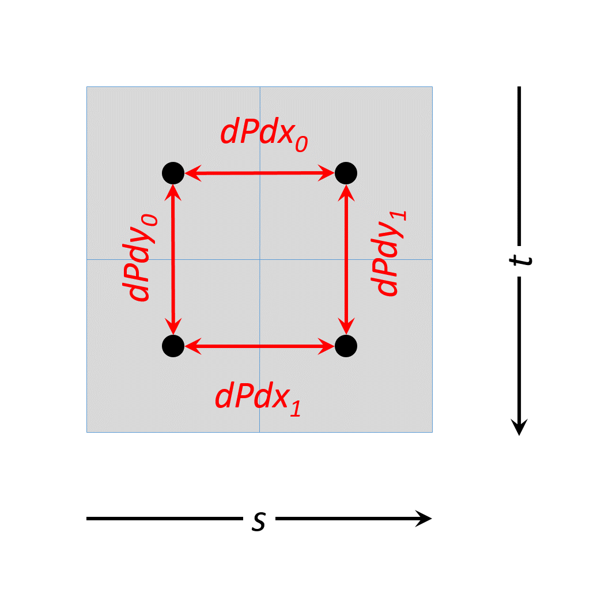

| Revision History | ||
|---|---|---|
| Revision 1.0.28 | Sat, 24 Sep 2016 08:01:17 +0000 | T |
| from git branch: 1.0 commit: 8dfeb510f151e4c52eaecc3bd48fd1551c267837 | ||
Table of Contents
- 1. Introduction
- 2. Fundamentals
- 3. Initialization
- 4. Devices and Queues
- 5. Command Buffers
- 6. Synchronization and Cache Control
- 7. Render Pass
- 8. Shaders
- 8.1. Shader Modules
- 8.2. Shader Execution
- 8.3. Shader Memory Access Ordering
- 8.4. Shader Inputs and Outputs
- 8.5. Vertex Shaders
- 8.6. Tessellation Control Shaders
- 8.7. Tessellation Evaluation Shaders
- 8.8. Geometry Shaders
- 8.9. Fragment Shaders
- 8.10. Compute Shaders
- 8.11. Interpolation Decorations
- 8.12. Static Use
- 8.13. Invocation and Derivative Groups
- 9. Pipelines
- 10. Memory Allocation
- 11. Resource Creation
- 12. Samplers
- 13. Resource Descriptors
- 14. Shader Interfaces
- 15. Image Operations
- 15.1. Image Operations Overview
- 15.2. Conversion Formulas
- 15.3. Texel Input Operations
- 15.4. Texel Output Operations
- 15.5. Derivative Operations
- 15.6. Normalized Texel Coordinate Operations
- 15.6.1. Projection Operation
- 15.6.2. Derivative Image Operations
- 15.6.3. Cube Map Face Selection and Transformations
- 15.6.4. Cube Map Face Selection
- 15.6.5. Cube Map Coordinate Transformation
- 15.6.6. Cube Map Derivative Transformation
- 15.6.7. Scale Factor Operation, Level-of-Detail Operation and Image Level(s) Selection
- 15.6.8. (s,t,r,q,a) to (u,v,w,a) Transformation
- 15.7. Unnormalized Texel Coordinate Operations
- 15.8. Image Sample Operations
- 15.9. Image Operation Steps
- 16. Queries
- 17. Clear Commands
- 18. Copy Commands
- 19. Drawing Commands
- 19.1. Primitive Topologies
- 19.1.1. Points
- 19.1.2. Separate Lines
- 19.1.3. Line Strips
- 19.1.4. Triangle Strips
- 19.1.5. Triangle Fans
- 19.1.6. Separate Triangles
- 19.1.7. Lines With Adjacency
- 19.1.8. Line Strips With Adjacency
- 19.1.9. Triangle List With Adjacency
- 19.1.10. Triangle Strips With Adjacency
- 19.1.11. Separate Patches
- 19.1.12. General Considerations For Polygon Primitives
- 19.2. Programmable Primitive Shading
- 20. Fixed-Function Vertex Processing
- 21. Tessellation
- 22. Geometry Shading
- 23. Fixed-Function Vertex Post-Processing
- 24. Rasterization
- 25. Fragment Operations
- 26. The Framebuffer
- 27. Dispatching Commands
- 28. Sparse Resources
- 29. Window System Integration (WSI)
- 30. Extended Functionality
- 31. Features, Limits, and Formats
- 32. Debugging
- A. Vulkan Environment for SPIR-V
- B. Compressed Image Formats
- C. Layers & Extensions
- D. API Boilerplate
- E. Invariance
- Glossary
- Common Abbreviations
- Prefixes
- F. Credits
List of Figures
- 9.1. Block diagram of the Vulkan pipeline
- 19.1. Triangle strips, fans, and lists
- 19.2. Lines with adjacency
- 19.3. Triangles with adjacency
- 19.4. Triangle strips with adjacency
- 21.1. Domain parameterization for tessellation primitive modes
- 21.2. Inner Triangle Tessellation
- 21.3. Inner Quad Tessellation
- 24.1. Non strict lines
- 28.1. Sparse Image
- 28.2. Sparse Image with Single Mip Tail
- 28.3. Sparse Image with Aligned Mip Size
- 28.4. Sparse Image with Aligned Mip Size and Single Mip Tail
- 28.5. Multiple Aspect Sparse Image
List of Tables
- 3.1. vkGetInstanceProcAddr behavior
- 3.2. vkGetDeviceProcAddr behavior
- 6.1. Event Object Status Codes
- 6.2. Supported pipeline stage flags
- 6.3. Supported access flags
- 9.1. Layout for pipeline cache header version
VK_PIPELINE_CACHE_HEADER_VERSION_ONE - 11.1. Image and image view parameter compatibility requirements
- 11.2. Component Mappings Equivalent To
VK_COMPONENT_SWIZZLE_IDENTITY - 13.1. Pipeline Layout Resource Limits
- 14.1. Shader Input and Output Locations
- 14.2. Shader Resource and Descriptor Type Correspondence
- 14.3. Shader Resource and Storage Class Correspondence
- 14.4. Shader Resource Limits
- 15.1. Border Color $B$
- 15.2. Border Texel Components After Replacement
- 15.3. Texel Color After Conversion To RGBA
- 15.4. Cube map face and coordinate selection
- 15.5. Cube map derivative selection
- 19.1. Triangles generated by triangle strips with adjacency.
- 20.1. Input attribute components accessed by 32-bit input variables
- 20.2. Input attributes accessed by 32-bit input matrix variables
- 20.3. Input attribute locations and components accessed by 64-bit input variables
- 23.1. Provoking vertex selection
- 24.1. Standard sample locations
- 26.1. Blend Factors
- 26.2. Blend Operations
- 26.3. Logical Operations
- 28.1. Standard Sparse Image Block Shapes (Single Sample)
- 28.2. Standard Sparse Image Block Shapes (MSAA)
- 31.1. Required Limit Types
- 31.2. Required Limits
- 31.3. Interpretation of Numeric Format
- 31.4. Interpretation of Compression Scheme
- 31.5. Byte mappings for non-packed/compressed color formats
- 31.6. Bit mappings for packed 8-bit formats
- 31.7. Bit mappings for packed 16-bit formats
- 31.8. Bit mappings for packed 32-bit formats
- 31.9. Compatible formats
- 31.10. Key for format feature tables
- 31.11. Feature bits in
optimalTilingFeatures - 31.12. Feature bits in
bufferFeatures - 31.13. Mandatory format support: sub-byte channels
- 31.14. Mandatory format support: 1-3 byte-sized channels
- 31.15. Mandatory format support: 4 byte-sized channels
- 31.16. Mandatory format support: 10-bit channels
- 31.17. Mandatory format support: 16-bit channels
- 31.18. Mandatory format support: 32-bit channels
- 31.19. Mandatory format support: 64-bit/uneven channels and depth/stencil
- 31.20. Mandatory format support: BC compressed formats with VkImageType
VK_IMAGE_TYPE_2DandVK_IMAGE_TYPE_3D - 31.21. Mandatory format support: ETC2 and EAC compressed formats with VkImageType
VK_IMAGE_TYPE_2D - 31.22. Mandatory format support: ASTC LDR compressed formats with VkImageType
VK_IMAGE_TYPE_2D - A.1. SPIR-V Capabilities which are not required, and corresponding feature names
- A.2. Precision of core SPIR-V Instructions
- A.3. Precision of GLSL.std.450 Instructions
- A.4. SPIR-V and Vulkan Image Format Compatibility
- B.1. Mapping of Vulkan BC formats to descriptions
- B.2. Mapping of Vulkan ETC formats to descriptions
- B.3. Mapping of Vulkan ASTC formats to descriptions
- D.1. Window System Extensions and Required Compile Time Symbol Definitions
List of Equations
Copyright © 2014-2016 The Khronos Group Inc. All Rights Reserved.
This specification is protected by copyright laws and contains material proprietary to the Khronos Group, Inc. It or any components may not be reproduced, republished, distributed, transmitted, displayed, broadcast or otherwise exploited in any manner without the express prior written permission of Khronos Group. You may use this specification for implementing the functionality therein, without altering or removing any trademark, copyright or other notice from the specification, but the receipt or possession of this specification does not convey any rights to reproduce, disclose, or distribute its contents, or to manufacture, use, or sell anything that it may describe, in whole or in part.
Khronos Group grants express permission to any current Promoter, Contributor or Adopter member of Khronos to copy and redistribute UNMODIFIED versions of this specification in any fashion, provided that NO CHARGE is made for the specification and the latest available update of the specification for any version of the API is used whenever possible. Such distributed specification may be reformatted AS LONG AS the contents of the specification are not changed in any way. The specification may be incorporated into a product that is sold as long as such product includes significant independent work developed by the seller. A link to the current version of this specification on the Khronos Group web-site should be included whenever possible with specification distributions.
This specification has been created under the Khronos Intellectual Property Rights Policy, which is Attachment A of the Khronos Group Membership Agreement available at www.khronos.org/files/member_agreement.pdf. This specification contains substantially unmodified functionality from, and is a successor to, Khronos specifications including OpenGL, OpenGL ES and OpenCL.
Some parts of this Specification are purely informative and do not define requirements necessary for compliance and so are outside the Scope of this Specification. These parts of the Specification are marked by the “Note” icon or designated “Informative”.
Where this Specification uses terms, defined in the Glossary or otherwise, that refer to enabling technologies that are not expressly set forth as being required for compliance, those enabling technologies are outside the Scope of this Specification.
Where this Specification uses the terms “may”, or “optional”, such features or behaviors do not define requirements necessary for compliance and so are outside the Scope of this Specification.
Where this Specification uses the terms “not required”, such features or behaviors may be omitted from certain implementations, but when they are included, they define requirements necessary for compliance and so are INCLUDED in the Scope of this Specification.
Where this Specification includes normative references to external documents, the specifically identified sections and functionality of those external documents are in Scope. Requirements defined by external documents not created by Khronos may contain contributions from non-members of Khronos not covered by the Khronos Intellectual Property Rights Policy.
Khronos Group makes no, and expressly disclaims any, representations or warranties, express or implied, regarding this specification, including, without limitation, any implied warranties of merchantability or fitness for a particular purpose or non-infringement of any intellectual property. Khronos Group makes no, and expressly disclaims any, warranties, express or implied, regarding the correctness, accuracy, completeness, timeliness, and reliability of the specification. Under no circumstances will the Khronos Group, or any of its Promoters, Contributors or Members or their respective partners, officers, directors, employees, agents or representatives be liable for any damages, whether direct, indirect, special or consequential damages for lost revenues, lost profits, or otherwise, arising from or in connection with these materials.
Khronos and Vulkan are trademarks of The Khronos Group Inc. OpenCL is a trademark of Apple Inc. and OpenGL is a registered trademark of Silicon Graphics International, both used under license by Khronos.
This chapter is Informative except for the sections on Terminology and Normative References.
This document, referred to as the “Vulkan Specification” or just the “Specification” hereafter, describes the Vulkan graphics system: what it is, how it acts, and what is required to implement it. We assume that the reader has at least a rudimentary understanding of computer graphics. This means familiarity with the essentials of computer graphics algorithms and terminology as well as with modern GPUs (Graphic Processing Units).
The canonical version of the Specification is available in the official Vulkan Registry, located at URL
http://www.khronos.org/registry/vulkan/
Vulkan is an API (Application Programming Interface) for graphics and compute hardware. The API consists of many commands that allow a programmer to specify shader programs, compute kernels, objects, and operations involved in producing high-quality graphical images, specifically color images of three-dimensional objects.
To the programmer, Vulkan is a set of commands that allow the specification of shader programs or shaders, kernels, data used by kernels or shaders, and state controlling aspects of Vulkan outside the scope of shaders. Typically, the data represents geometry in two or three dimensions and texture images, while the shaders and kernels control the processing of the data, rasterization of the geometry, and the lighting and shading of fragments generated by rasterization, resulting in the rendering of geometry into the framebuffer.
A typical Vulkan program begins with platform-specific calls to open a window or otherwise prepare a display device onto which the program will draw. Then, calls are made to open queues to which command buffers are submitted. The command buffers contain lists of commands which will be executed by the underlying hardware. The application can also allocate device memory, associate resources with memory and refer to these resources from within command buffers. Drawing commands cause application-defined shader programs to be invoked, which can then consume the data in the resources and use them to produce graphical images. To display the resulting images, further platform-specific commands are made to transfer the resulting image to a display device or window.
To the implementor, Vulkan is a set of commands that allow the construction and submission of command buffers to a device. Modern devices accelerate virtually all Vulkan operations, storing data and framebuffer images in high-speed memory and executing shaders in dedicated GPU processing resources.
The implementor’s task is to provide a software library on the host which implements the Vulkan API, while mapping the work for each Vulkan command to the graphics hardware as appropriate for the capabilities of the device.
We view Vulkan as a pipeline having some programmable stages and some state-driven fixed-function stages that are invoked by a set of specific drawing operations. We expect this model to result in a specification that satisfies the needs of both programmers and implementors. It does not, however, necessarily provide a model for implementation. An implementation must produce results conforming to those produced by the specified methods, but may carry out particular computations in ways that are more efficient than the one specified.
Issues with and bug reports on the Vulkan Specification and the API Registry can be filed in the Khronos Vulkan GitHub repository, located at URL
http://github.com/KhronosGroup/Vulkan-Docs
Please tag issues with appropriate labels, such as “Specification”, “Ref Pages” or “Registry”, to help us triage and assign them appropriately. Unfortunately, GitHub does not currently let users who do not have write access to the repository set GitHub labels on issues. In the meantime, they can be added to the title line of the issue set in brackets, e.g. '[Specification]'.
The key words must, required, shall should, recommend, may, and optional in this document are to be interpreted as described in RFC 2119:
http://www.ietf.org/rfc/rfc2119.txt
- must
- When used alone, this word, or the term required, means that the definition is an absolute requirement of the specification. When followed by not (“must not” ), the phrase means that the definition is an absolute prohibition of the specification.
- should
- When used alone, this word, or the adjective recommended, means that there may exist valid reasons in particular circumstances to ignore a particular item, but the full implications must be understood and carefully weighed before choosing a different course. When followed by not (“should not”), the phrase means that there may exist valid reasons in particular circumstances when the particular behavior is acceptable or even useful, but the full implications should be understood and the case carefully weighed before implementing any behavior described with this label.
- may
- This word, or the adjective optional, means that an item is truly optional. One vendor may choose to include the item because a particular marketplace requires it or because the vendor feels that it enhances the product while another vendor may omit the same item. An implementation which does not include a particular option must be prepared to interoperate with another implementation which does include the option, though perhaps with reduced functionality. In the same vein an implementation which does include a particular option must be prepared to interoperate with another implementation which does not include the option (except, of course, for the feature the option provides).
The additional terms can and cannot are to be interpreted as follows:
- can
- This word means that the particular behavior described is a valid choice for an application, and is never used to refer to implementation behavior.
- cannot
- This word means that the particular behavior described is not achievable by an application. For example, an entry point does not exist, or shader code is not capable of expressing an operation.
| Note | |
|---|---|
There is an important distinction between cannot and must not, as used in this Specification. Cannot means something the application literally is unable to express or accomplish through the API, while must not means something that the application is capable of expressing through the API, but that the consequences of doing so are undefined and potentially unrecoverable for the implementation. |
Normative references are references to external documents or resources to which implementers of Vulkan must comply.
IEEE Standard for Floating-Point Arithmetic, IEEE Std 754-2008, http://dx.doi.org/10.1109/IEEESTD.2008.4610935, August, 2008.
A. Garrard, Khronos Data Format Specification, version 1.1, https://www.khronos.org/registry/dataformat/specs/1.1/dataformat.1.1.html, June, 2016.
J. Kessenich, SPIR-V Extended Instructions for GLSL, Version 1.00, https://www.khronos.org/registry/spir-v/, February 10, 2016.
J. Kessenich and B. Ouriel, The Khronos SPIR-V Specification, Version 1.00, https://www.khronos.org/registry/spir-v/, February 10, 2016.
J. Leech and T. Hector, Vulkan Documentation and Extensions: Procedures and Conventions, https://www.khronos.org/registry/vulkan/, July 11, 2016
Vulkan Loader Specification and Architecture Overview, https://github.com/KhronosGroup/Vulkan-LoaderAndValidationLayers/blob/master/loader/LoaderAndLayerInterface.md, August, 2016.
This chapter introduces fundamental concepts including the Vulkan architecture and execution model, API syntax, queues, pipeline configurations, numeric representation, state and state queries, and the different types of objects and shaders. It provides a framework for interpreting more specific descriptions of commands and behavior in the remainder of the Specification.
Vulkan is designed for, and the API is written for, CPU, GPU, and other hardware accelerator architectures with the following properties:
- Runtime support for 8, 16, 32 and 64-bit signed and unsigned twos-complement integers, all addressable at the granularity of their size in bytes.
- Runtime support for 32- and 64-bit floating-point types satisfying the range and precision constraints in the Floating Point Computation section.
- The representation and endianness of these types must be identical for the host and the physical devices.
| Note | |
|---|---|
Since a variety of data types and structures in Vulkan may be mapped back and forth between host and physical device memory, host and device architectures must both be able to access such data efficiently in order to write portable and performant applications. |
Where the Specification leaves choices open that would affect Application
Binary Interface compatibility on a given platform supporting Vulkan, those
choices are usually made to be compliant to the preferred ABI defined by the
platform vendor.
Some choices, such as function calling conventions, may be made in
platform-specific portions of the vk_platform.h header file.
| Note | |
|---|---|
For example, the Android ABI is defined by Google, and the Linux ABI is defined by a combination of gcc defaults, distribution vendor choices, and external standards such as the Linux Standard Base. |
This section outlines the execution model of a Vulkan system.
Vulkan exposes one or more devices, each of which exposes one or more queues which may process work asynchronously to one another. The set of queues supported by a device is partitioned into families. Each family supports one or more types of functionality and may contain multiple queues with similar characteristics. Queues within a single family are considered compatible with one another, and work produced for a family of queues can be executed on any queue within that family. This specification defines four types of functionality that queues may support: graphics, compute, transfer, and sparse memory management.
| Note | |
|---|---|
A single device may report multiple similar queue families rather than, or as well as, reporting multiple members of one or more of those families. This indicates that while members of those families have similar capabilities, they are not directly compatible with one another. |
Device memory is explicitly managed by the application. Each device may advertise one or more heaps, representing different areas of memory. Memory heaps are either device local or host local, but are always visible to the device. Further detail about memory heaps is exposed via memory types available on that heap. Examples of memory areas that may be available on an implementation include:
- device local is memory that is physically connected to the device.
- device local, host visible is device local memory that is visible to the host.
- host local, host visible is memory that is local to the host and visible to the device and host.
On other architectures, there may only be a single heap that can be used for any purpose.
A Vulkan application controls a set of devices through the submission of command buffers which have recorded device commands issued via Vulkan library calls. The content of command buffers is specific to the underlying hardware and is opaque to the application. Once constructed, a command buffer can be submitted once or many times to a queue for execution. Multiple command buffers can be built in parallel by employing multiple threads within the application.
Command buffers submitted to different queues may execute in parallel or even out of order with respect to one another. Command buffers submitted to a single queue respect the submission order, as described further in Queue Operation. Command buffer execution by the device is also asynchronous to host execution. Once a command buffer is submitted to a queue, control may return to the application immediately. Synchronization between the device and host, and between different queues is the responsibility of the application.
Vulkan queues provide an interface to the execution engines of a device. Commands for these execution engines are recorded into command buffers ahead of execution time. These command buffers are then submitted to queues with a queue submission command for execution in a number of batches. Once submitted to a queue, these commands will begin and complete execution without further application intervention, though the order of this execution is dependent on a number of implicit and explicit ordering constraints.
Work is submitted to queues using queue submission commands that typically
take the form vkQueue* (e.g.
vkQueueSubmit, vkQueueBindSparse), and optionally take a list of
semaphores upon which to wait before work begins and a list of semaphores to
signal once work has completed.
The work itself, as well as signaling and waiting on the semaphores are all
queue operations.
Queue operations on different queues have no implicit ordering constraints, and may execute in any order. Explicit ordering constraints between queues can be expressed with semaphores and fences.
Command buffer submissions to a single queue must always adhere to command order and API order, but otherwise may overlap or execute out of order. Other types of batches and queue submissions against a single queue (e.g. sparse memory binding) have no implicit ordering constraints with any other queue submission or batch. Additional explicit ordering constraints between queue submissions and individual batches can be expressed with semaphores and fences.
Before a fence or semaphore is signaled, it is guaranteed that any previously submitted queue operations have completed execution, and that memory writes from those queue operations are available to future queue operations. Waiting on a signaled semaphore or fence guarantees that previous writes that are available are also visible to subsequent commands.
Command buffer boundaries, both between primary command buffers of the same or different batches or submissions as well as between primary and secondary command buffers, do not introduce any implicit ordering constraints. In other words, submitting the set of command buffers (which can include executing secondary command buffers) between any semaphore or fence operations execute the recorded commands as if they had all been recorded into a single primary command buffer, except that the current state is reset on each boundary. Explicit ordering constraints can be expressed with events and pipeline barriers.
There are a few implicit ordering constraints between commands within a command buffer, but only covering a subset of execution. Additional explicit ordering constraints can be expressed with events, pipeline barriers and subpass dependencies.
| Note | |
|---|---|
Implementations have significant freedom to overlap execution of work submitted to a queue, and this is common due to deep pipelining and parallelism in Vulkan devices. |
Commands recorded in command buffers either perform actions (draw, dispatch, clear, copy, query/timestamp operations, begin/end subpass operations), set state (bind pipelines, descriptor sets, and buffers, set dynamic state, push constants, set render pass/subpass state), or perform synchronization (set/wait events, pipeline barrier, render pass/subpass dependencies). Some commands perform more than one of these tasks. State setting commands update the current state of the command buffer. Some commands that perform actions (e.g. draw/dispatch) do so based on the current state set cumulatively since the start of the command buffer. The work involved in performing action commands is often allowed to overlap or to be reordered, but doing so must not alter the state to be used by each action command. In general, action commands are those commands that alter framebuffer attachments, read/write buffer or image memory, or write to query pools.
Synchronization commands introduce explicit execution and memory dependencies between two sets of action commands, where the second set of commands depends on the first set of commands. These dependencies enforce that both the execution of certain pipeline stages in the later set occur after the execution of certain stages in the source set, and that the effects of memory accesses performed by certain pipeline stages occur in order and are visible to each other. When not enforced by an explicit dependency or otherwise forbidden by the specification, action commands may overlap execution or execute out of order, and may not see the side effects of each other’s memory accesses.
The execution order of an action command with respect to any synchronization commands that affect that action command must match the recording and submission order, within submissions to a single queue.
- First, by the action command that generates them.
- Second, by the order they are processed by primitive assembly.
Within this order, implementations also sort primitives:
- Third, by an implementation-dependent ordering of new primitives generated by tessellation, if a tessellation shader is active.
- Fourth, by the order new primitives are generated by geometry shading, if geometry shading is active.
- Fifth, by an implementation-dependent ordering of primitives generated due to the polygon mode.
The device executes queue operations asynchronously with respect to the host. Control is returned to an application immediately following command buffer submission to a queue. The application must synchronize work between the host and device as needed.
The devices, queues, and other entities in Vulkan are represented by Vulkan objects. At the API level, all objects are referred to by handles. There are two classes of handles, dispatchable and non-dispatchable. Dispatchable handle types are a pointer to an opaque type. This pointer may be used by layers as part of intercepting API commands, and thus each API command takes a dispatchable type as its first parameter. Each object of a dispatchable type must have a unique handle value during its lifetime.
Non-dispatchable handle types are a 64-bit integer type whose meaning is implementation-dependent, and may encode object information directly in the handle rather than pointing to a software structure. Objects of a non-dispatchable type may not have unique handle values within a type or across types. If handle values are not unique, then destroying one such handle must not cause identical handles of other types to become invalid, and must not cause identical handles of the same type to become invalid if that handle value has been created more times than it has been destroyed.
All objects created or allocated from a VkDevice (i.e.
with a VkDevice as the first parameter) are private to that device,
and must not be used on other devices.
Objects are created or allocated by vkCreate* and vkAllocate*
commands, respectively.
Once an object is created or allocated, its “structure” is considered to
be immutable, though the contents of certain object types is still free to
change.
Objects are destroyed or freed by vkDestroy* and vkFree*
commands, respectively.
Objects that are allocated (rather than created) take resources from an existing pool object or memory heap, and when freed return resources to that pool or heap. While object creation and destruction are generally expected to be low-frequency occurrences during runtime, allocating and freeing objects can occur at high frequency. Pool objects help accommodate improved performance of the allocations and frees.
It is an application’s responsibility to track the lifetime of Vulkan objects, and not to destroy them while they are still in use.
Application-owned memory is immediately consumed by any Vulkan command it is passed into. The application can alter or free this memory as soon as the commands that consume it have returned.
The following object types are consumed when they are passed into a Vulkan command and not further accessed by the objects they are used to create. They must not be destroyed in the duration of any API command they are passed into:
-
VkShaderModule -
VkPipelineCache
A VkPipelineLayout object must not be destroyed while any command
buffer that uses it is in the recording state.
VkDescriptorSetLayout objects may be accessed by commands that
operate on descriptor sets allocated using that layout, and those descriptor
sets must not be updated with vkUpdateDescriptorSets after the
descriptor set layout has been destroyed.
Otherwise, descriptor set layouts can be destroyed any time they are not in
use by an API command.
The application must not destroy any other type of Vulkan object until all uses of that object by the device (such as via command buffer execution) have completed.
The following Vulkan objects must not be destroyed while any command buffers using the object are recording or pending execution:
-
VkEvent -
VkQueryPool -
VkBuffer -
VkBufferView -
VkImage -
VkImageView -
VkPipeline -
VkSampler -
VkDescriptorPool -
VkFramebuffer -
VkRenderPass -
VkCommandPool -
VkDeviceMemory -
VkDescriptorSet
The following Vulkan objects must not be destroyed while any queue is executing commands that use the object:
-
VkFence -
VkSemaphore -
VkCommandBuffer -
VkCommandPool
In general, objects can be destroyed or freed in any order, even if the object being freed is involved in the use of another object (e.g. use of a resource in a view, use of a view in a descriptor set, use of an object in a command buffer, binding of a memory allocation to a resource), as long as any object that uses the freed object is not further used in any way except to be destroyed or to be reset in such a way that it no longer uses the other object (such as resetting a command buffer). If the object has been reset, then it can be used as if it never used the freed object. An exception to this is when there is a parent/child relationship between objects. In this case, the application must not destroy a parent object before its children, except when the parent is explicitly defined to free its children when it is destroyed (e.g. for pool objects, as defined below).
VkCommandPool objects are parents of VkCommandBuffer objects.
VkDescriptorPool objects are parents of VkDescriptorSet objects.
VkDevice objects are parents of many object types (all that take a
VkDevice as a parameter to their creation).
The following Vulkan objects have specific restrictions for when they can be destroyed:
-
VkQueueobjects cannot be explicitly destroyed. Instead, they are implicitly destroyed when theVkDeviceobject they are retrieved from is destroyed. -
Destroying a pool object implicitly frees all objects allocated from
that pool.
Specifically, destroying
VkCommandPoolfrees allVkCommandBufferobjects that were allocated from it, and destroyingVkDescriptorPoolfrees allVkDescriptorSetobjects that were allocated from it. VkDeviceobjects can be destroyed when allVkQueueobjects retrieved from them are idle, and all objects created from them have been destroyed. This includes the following objects:-
VkFence -
VkSemaphore -
VkEvent -
VkQueryPool -
VkBuffer -
VkBufferView -
VkImage -
VkImageView -
VkShaderModule -
VkPipelineCache -
VkPipeline -
VkPipelineLayout -
VkSampler -
VkDescriptorSetLayout -
VkDescriptorPool -
VkFramebuffer -
VkRenderPass -
VkCommandPool -
VkCommandBuffer -
VkDeviceMemory
-
-
VkPhysicalDeviceobjects cannot be explicitly destroyed. Instead, they are implicitly destroyed when theVkInstanceobject they are retrieved from is destroyed. -
VkInstanceobjects can be destroyed once allVkDeviceobjects created from any of itsVkPhysicalDeviceobjects have been destroyed.
The Specification describes Vulkan commands as functions or procedures using C99 syntax. Language bindings for other languages such as C++ and JavaScript may allow for stricter parameter passing, or object-oriented interfaces.
Vulkan uses the standard C types for the base type of scalar parameters
(e.g.
types from stdint.h), with exceptions described below, or elsewhere in the
text when appropriate:
VkBool32 represents boolean True and False values, since
C does not have a sufficiently portable built-in boolean type:
typedef uint32_t VkBool32;
VK_TRUE represents a boolean True (integer 1) value, and
VK_FALSE a boolean False (integer 0) value.
All values returned from a Vulkan implementation in a VkBool32 will
be either VK_TRUE or VK_FALSE.
Applications must not pass any other values than VK_TRUE or
VK_FALSE into a Vulkan implementation where a VkBool32 is
expected.
VkDeviceSize represents device memory size and offset values:
typedef uint64_t VkDeviceSize;
Commands that create Vulkan objects are of the form vkCreate* and take
Vk*CreateInfo structures with the parameters needed to create the
object.
These Vulkan objects are destroyed with commands of the form
vkDestroy*.
The last in-parameter to each command that creates or destroys a Vulkan
object is pAllocator.
The pAllocator parameter can be set to a non-NULL value such that
allocations for the given object are delegated to an application provided
callback; refer to the Memory Allocation chapter for
further details.
Commands that allocate Vulkan objects owned by pool objects are of the form
vkAllocate*, and take Vk*AllocateInfo structures.
These Vulkan objects are freed with commands of the form vkFree*.
These objects do not take allocators; if host memory is needed, they will
use the allocator that was specified when their parent pool was created.
Commands are recorded into a command buffer by calling API commands of the
form vkCmd*.
Each such command may have different restrictions on where it can be used:
in a primary and/or secondary command buffer, inside and/or outside a render
pass, and in one or more of the supported queue types.
These restrictions are documented together with the definition of each such
command.
The duration of a Vulkan command refers to the interval between calling the command and its return to the caller.
Information is retrieved from the implementation with commands of the form
vkGet* and vkEnumerate*.
Unless otherwise specified for an individual command, the results are invariant; that is, they will remain unchanged when retrieved again by calling the same command with the same parameters, so long as those parameters themselves all remain valid.
Vulkan is intended to provide scalable performance when used on multiple host threads. All commands support being called concurrently from multiple threads, but certain parameters, or components of parameters are defined to be externally synchronized. This means that the caller must guarantee that no more than one thread is using such a parameter at a given time.
More precisely, Vulkan commands use simple stores to update software structures representing Vulkan objects. A parameter declared as externally synchronized may have its software structures updated at any time during the host execution of the command. If two commands operate on the same object and at least one of the commands declares the object to be externally synchronized, then the caller must guarantee not only that the commands do not execute simultaneously, but also that the two commands are separated by an appropriate memory barrier (if needed).
| Note | |
|---|---|
Memory barriers are particularly relevant on the ARM CPU architecture which is more weakly ordered than many developers are accustomed to from x86/x64 programming. Fortunately, most higher-level synchronization primitives (like the pthread library) perform memory barriers as a part of mutual exclusion, so mutexing Vulkan objects via these primitives will have the desired effect. |
Many object types are immutable, meaning the objects cannot change once
they have been created.
These types of objects never need external synchronization, except that they
must not be destroyed while they are in use on another thread.
In certain special cases, mutable object parameters are internally
synchronized such that they do not require external synchronization.
One example of this is the use of a VkPipelineCache in
vkCreateGraphicsPipelines and vkCreateComputePipelines, where
external synchronization around such a heavyweight command would be
impractical.
The implementation must internally synchronize the cache in this example,
and may be able to do so in the form of a much finer-grained mutex around
the command.
Any command parameters that are not labeled as externally synchronized are
either not mutated by the command or are internally synchronized.
Additionally, certain objects related to a command’s parameters (e.g.
command pools and descriptor pools) may be affected by a command, and must
also be externally synchronized.
These implicit parameters are documented as described below.
Parameters of commands that are externally synchronized are listed below.
There are also a few instances where a command can take in a user allocated list whose contents are externally synchronized parameters. In these cases, the caller must guarantee that at most one thread is using a given element within the list at a given time. These parameters are listed below.
In addition, there are some implicit parameters that need to be externally
synchronized.
For example, all commandBuffer parameters that need to be externally
synchronized imply that the commandPool that was passed in when
creating that command buffer also needs to be externally synchronized.
The implicit parameters and their associated object are listed below.
Vulkan is a layered API. The lowest layer is the core Vulkan layer, as defined by this Specification. The application can use additional layers above the core for debugging, validation, and other purposes.
One of the core principles of Vulkan is that building and submitting command buffers should be highly efficient. Thus error checking and validation of state in the core layer is minimal, although more rigorous validation can be enabled through the use of layers.
The core layer assumes applications are using the API correctly.
Except as documented elsewhere in the Specification, the behavior of the
core layer to an application using the API incorrectly is undefined, and
may include program termination.
However, implementations must ensure that incorrect usage by an application
does not affect the integrity of the operating system, the Vulkan
implementation, or other Vulkan client applications in the system, and does
not allow one application to access data belonging to another application.
Applications can request stronger robustness guarantees by enabling the
robustBufferAccess feature as described in Chapter 31, Features, Limits, and Formats.
Validation of correct API usage is left to validation layers. Applications should be developed with validation layers enabled, to help catch and eliminate errors. Once validated, released applications should not enable validation layers by default.
Valid usage defines a set of conditions which must be met in order to achieve well-defined run-time behavior in an application. These conditions depend only on Vulkan state, and the parameters or objects whose usage is constrained by the condition.
Some valid usage conditions have dependencies on run-time limits or feature availability. It is possible to validate these conditions against Vulkan’s minimum supported values for these limits and features, or some subset of other known values.
Valid usage conditions do not cover conditions where well-defined behavior (including returning an error code) exists.
Valid usage conditions should apply to the command or structure where complete information about the condition would be known during execution of an application. This is such that a validation layer or linter can be written directly against these statements at the point they are specified.
| Note | |
|---|---|
This does lead to some non-obvious places for valid usage statements. For instance, the valid values for a structure might depend on a separate value in the calling command. In this case, the structure itself will not reference this valid usage as it is impossible to determine validity from the structure that it is invalid - instead this valid usage would be attached to the calling command. Another example is draw state - the state setters are independent, and can cause a legitimately invalid state configuration between draw calls; so the valid usage statements are attached to the place where all state needs to be valid - at the draw command. |
Certain usage rules apply to all commands in the API unless explicitly denoted differently for a command. These rules are as follows.
Any input parameter to a command that is an object handle must be a valid object handle, unless otherwise specified. An object handle is valid if:
- It has been created or allocated by a previous, successful call to the API. Such calls are noted in the specification.
- It has not been deleted or freed by a previous call to the API. Such calls are noted in the specification.
- Any objects used by that object, either as part of creation or execution, must also be valid.
The reserved handle VK_NULL_HANDLE can be passed in place of valid
object handles when explicitly called out in the specification.
Any command that creates an object successfully must not return
VK_NULL_HANDLE.
It is valid to pass VK_NULL_HANDLE to any vkDestroy* or
vkFree* command, which will silently ignore these values.
Any parameter that is a pointer must be a valid pointer. A pointer is valid if it points at memory containing values of the number and type(s) expected by the command, and all fundamental types accessed through the pointer (e.g. as elements of an array or as members of a structure) satisfy the alignment requirements of the host processor.
Any parameter of an enumerated type must be a valid enumerant for that type. A enumerant is valid if:
- The enumerant is defined as part of the enumerated type.
-
The enumerant is not one of the special values defined for the
enumerated type, which are suffixed with
_BEGIN_RANGE,_END_RANGE,_RANGE_SIZEor_MAX_ENUM.
A collection of flags is represented by a bitmask using the type
VkFlags:
typedef uint32_t VkFlags;
Bitmasks are passed to many commands and structures to compactly represent
options, but VkFlags is not used directly in the API.
Instead, a Vk*Flags type which is an alias of VkFlags, and
whose name matches the corresponding Vk*FlagBits that are valid for
that type, is used.
These aliases are described in the Flag Types appendix
of the Specification.
Any Vk*Flags member or parameter used in the API must be a valid
combination of bit flags.
A valid combination is either zero or the bitwise OR of valid bit flags.
A bit flag is valid if:
-
The bit flag is defined as part of the
Vk*FlagBitstype, where the bits type is obtained by taking the flag type and replacing the trailingFlagswithFlagBits. For example, a flag value of typeVkColorComponentFlagsmust contain only bit flags defined byVkColorComponentFlagBits. - The flag is allowed in the context in which it is being used. For example, in some cases, certain bit flags or combinations of bit flags are mutually exclusive.
Any parameter that is a structure containing a sType member must have
a value of sType which is a valid VkStructureType value matching
the type of the structure.
As a general rule, the name of this value is obtained by taking the
structure name, stripping the leading Vk, prefixing each capital
letter with _, converting the entire resulting string to upper case,
and prefixing it with VK_STRUCTURE_TYPE_.
For example, structures of type VkImageCreateInfo must have a
sType value of VK_STRUCTURE_TYPE_IMAGE_CREATE_INFO.
The values VK_STRUCTURE_TYPE_LOADER_INSTANCE_CREATE_INFO and
VK_STRUCTURE_TYPE_LOADER_DEVICE_CREATE_INFO are reserved for internal
use by the loader, and do not have corresponding Vulkan structures in this
specification.
The list of supported structure types is defined in an appendix.
Any parameter that is a structure containing a void* pNext
member must have a value of pNext that is either NULL, or points to
a valid structure defined by an extension, containing sType and
pNext members as described in the Vulkan Documentation and Extensions document in the section “Extension
Interactions”.
If that extension is supported by the implementation, then it must be
enabled.
Any component of the implementation (the loader, any enabled layers, and
drivers) must skip over, without processing (other than reading the
sType and pNext members) any chained structures with sType
values not defined by extensions supported by that component.
Extension structures are not described in the base Vulkan specification, but either in layered specifications incorporating those extensions, or in separate vendor-provided documents.
While the core Vulkan API is not designed to capture incorrect usage, some circumstances still require return codes. Commands in Vulkan return their status via return codes that are in one of two categories:
- Successful completion codes are returned when a command needs to communicate success or status information. All successful completion codes are non-negative values.
- Run time error codes are returned when a command needs to communicate a failure that could only be detected at run time. All run time error codes are negative values.
All return codes in Vulkan are reported via VkResult return values.
The possible codes are:
typedef enum VkResult {
VK_SUCCESS = 0,
VK_NOT_READY = 1,
VK_TIMEOUT = 2,
VK_EVENT_SET = 3,
VK_EVENT_RESET = 4,
VK_INCOMPLETE = 5,
VK_ERROR_OUT_OF_HOST_MEMORY = -1,
VK_ERROR_OUT_OF_DEVICE_MEMORY = -2,
VK_ERROR_INITIALIZATION_FAILED = -3,
VK_ERROR_DEVICE_LOST = -4,
VK_ERROR_MEMORY_MAP_FAILED = -5,
VK_ERROR_LAYER_NOT_PRESENT = -6,
VK_ERROR_EXTENSION_NOT_PRESENT = -7,
VK_ERROR_FEATURE_NOT_PRESENT = -8,
VK_ERROR_INCOMPATIBLE_DRIVER = -9,
VK_ERROR_TOO_MANY_OBJECTS = -10,
VK_ERROR_FORMAT_NOT_SUPPORTED = -11,
VK_ERROR_FRAGMENTED_POOL = -12,
VK_ERROR_SURFACE_LOST_KHR = -1000000000,
VK_ERROR_NATIVE_WINDOW_IN_USE_KHR = -1000000001,
VK_SUBOPTIMAL_KHR = 1000001003,
VK_ERROR_OUT_OF_DATE_KHR = -1000001004,
VK_ERROR_INCOMPATIBLE_DISPLAY_KHR = -1000003001,
} VkResult;
Success Codes
-
VK_SUCCESSCommand successfully completed -
VK_NOT_READYA fence or query has not yet completed -
VK_TIMEOUTA wait operation has not completed in the specified time -
VK_EVENT_SETAn event is signaled -
VK_EVENT_RESETAn event is unsignaled -
VK_INCOMPLETEA return array was too small for the result -
VK_SUBOPTIMAL_KHRA swapchain no longer matches the surface properties exactly, but can still be used to present to the surface successfully.
Error codes
-
VK_ERROR_OUT_OF_HOST_MEMORYA host memory allocation has failed. -
VK_ERROR_OUT_OF_DEVICE_MEMORYA device memory allocation has failed. -
VK_ERROR_INITIALIZATION_FAILEDInitialization of an object could not be completed for implementation-specific reasons. -
VK_ERROR_DEVICE_LOSTThe logical or physical device has been lost. See Lost Device -
VK_ERROR_MEMORY_MAP_FAILEDMapping of a memory object has failed. -
VK_ERROR_LAYER_NOT_PRESENTA requested layer is not present or could not be loaded. -
VK_ERROR_EXTENSION_NOT_PRESENTA requested extension is not supported. -
VK_ERROR_FEATURE_NOT_PRESENTA requested feature is not supported. -
VK_ERROR_INCOMPATIBLE_DRIVERThe requested version of Vulkan is not supported by the driver or is otherwise incompatible for implementation-specific reasons. -
VK_ERROR_TOO_MANY_OBJECTSToo many objects of the type have already been created. -
VK_ERROR_FORMAT_NOT_SUPPORTEDA requested format is not supported on this device. -
VK_ERROR_FRAGMENTED_POOLA requested pool allocation has failed due to fragmentation of the pool’s memory. -
VK_ERROR_SURFACE_LOST_KHRA surface is no longer available. -
VK_ERROR_NATIVE_WINDOW_IN_USE_KHRThe requested window is already connected to a VkSurfaceKHR, or to some other non-Vulkan API. -
VK_ERROR_OUT_OF_DATE_KHRA surface has changed in such a way that it is no longer compatible with the swapchain, and further presentation requests using the swapchain will fail. Applications must query the new surface properties and recreate their swapchain if they wish to continue presenting to the surface. -
VK_ERROR_INCOMPATIBLE_DISPLAY_KHRThe display used by a swapchain does not use the same presentable image layout, or is incompatible in a way that prevents sharing an image.
If a command returns a run time error, it will leave any result pointers unmodified, unless other behavior is explicitly defined in the specification.
Out of memory errors do not damage any currently existing Vulkan objects. Objects that have already been successfully created can still be used by the application.
Performance-critical commands generally do not have return codes.
If a run time error occurs in such commands, the implementation will defer
reporting the error until a specified point.
For commands that record into command buffers (vkCmd*) run time errors
are reported by vkEndCommandBuffer.
Implementations normally perform computations in floating-point, and must meet the range and precision requirements defined under “Floating-Point Computation” below.
These requirements only apply to computations performed in Vulkan operations outside of shader execution, such as texture image specification and sampling, and per-fragment operations. Range and precision requirements during shader execution differ and are specified by the Precision and Operation of SPIR-V Instructions section.
In some cases, the representation and/or precision of operations is implicitly limited by the specified format of vertex or texel data consumed by Vulkan. Specific floating-point formats are described later in this section.
Most floating-point computation is performed in SPIR-V shader modules. The properties of computation within shaders are constrained as defined by the Precision and Operation of SPIR-V Instructions section.
Some floating-point computation is performed outside of shaders, such as viewport and depth range calculations. For these computations, we do not specify how floating-point numbers are to be represented, or the details of how operations on them are performed, but only place minimal requirements on representation and precision as described in the remainder of this section.
We require simply that numbers' floating-point parts contain enough bits and that their exponent fields are large enough so that individual results of floating-point operations are accurate to about 1 part in 105. The maximum representable magnitude for all floating-point values must be at least 232. $x \times 0 = 0 \times x = 0$ for any non-infinite and non-NaN $x$ . $1 \times x = x \times 1 = x$ . $x + 0 = 0 + x = x$ . $0^0 = 1$ .
Occasionally, further requirements will be specified. Most single-precision floating-point formats meet these requirements.
The special values $Inf$ and $-Inf$ encode values with magnitudes too large to be represented; the special value $NaN$ encodes “Not A Number” values resulting from undefined arithmetic operations such as $0 / 0$ . Implementations may support $Inf$ s and $NaN$ s in their floating-point computations.
Any representable floating-point value is legal as input to a Vulkan command that requires floating-point data. The result of providing a value that is not a floating-point number to such a command is unspecified, but must not lead to Vulkan interruption or termination. In IEEE 754 arithmetic, for example, providing a negative zero or a denormalized number to an Vulkan command must yield deterministic results, while providing a $NaN$ or $Inf$ yields unspecified results.
16-bit floating point numbers are defined in the “16-bit floating point numbers” section of the Khronos Data Format Specification.
Any representable 16-bit floating-point value is legal as input to a Vulkan command that accepts 16-bit floating-point data. The result of providing a value that is not a floating-point number (such as $Inf$ or $NaN$ ) to such a command is unspecified, but must not lead to Vulkan interruption or termination. Providing a denormalized number or negative zero to Vulkan must yield deterministic results.
Unsigned 11-bit floating point numbers are defined in the “Unsigned 11-bit floating point numbers” section of the Khronos Data Format Specification.
When a floating-point value is converted to an unsigned 11-bit floating-point representation, finite values are rounded to the closest representable finite value.
While less accurate, implementations are allowed to always round in the direction of zero. This means negative values are converted to zero. Likewise, finite positive values greater than 65024 (the maximum finite representable unsigned 11-bit floating-point value) are converted to 65024. Additionally: negative infinity is converted to zero; positive infinity is converted to positive infinity; and both positive and negative $NaN$ are converted to positive $NaN$ .
Any representable unsigned 11-bit floating-point value is legal as input to a Vulkan command that accepts 11-bit floating-point data. The result of providing a value that is not a floating-point number (such as $Inf$ or $NaN$ ) to such a command is unspecified, but must not lead to Vulkan interruption or termination. Providing a denormalized number to Vulkan must yield deterministic results.
Unsigned 10-bit floating point numbers are defined in the “Unsigned 10-bit floating point numbers” section of the Khronos Data Format Specification.
When a floating-point value is converted to an unsigned 10-bit floating-point representation, finite values are rounded to the closest representable finite value.
While less accurate, implementations are allowed to always round in the direction of zero. This means negative values are converted to zero. Likewise, finite positive values greater than 64512 (the maximum finite representable unsigned 10-bit floating-point value) are converted to 64512. Additionally: negative infinity is converted to zero; positive infinity is converted to positive infinity; and both positive and negative $NaN$ are converted to positive $NaN$ .
Any representable unsigned 10-bit floating-point value is legal as input to a Vulkan command that accepts 10-bit floating-point data. The result of providing a value that is not a floating-point number (such as $Inf$ or $NaN$ ) to such a command is unspecified, but must not lead to Vulkan interruption or termination. Providing a denormalized number to Vulkan must yield deterministic results.
When generic vertex attributes and pixel color or depth components are represented as integers, they are often (but not always) considered to be normalized. Normalized integer values are treated specially when being converted to and from floating-point values, and are usually referred to as normalized fixed-point.
In the remainder of this section, $b$ denotes the bit width of the fixed-point integer representation. When the integer is one of the types defined by the API, $b$ is the bit width of that type. When the integer comes from an image containing color or depth component texels, $b$ is the number of bits allocated to that component in its specified image format.
The signed and unsigned fixed-point representations are assumed to be $b$ -bit binary two’s-complement integers and binary unsigned integers, respectively.
Unsigned normalized fixed-point integers represent numbers in the range $[0,1]$ . The conversion from an unsigned normalized fixed-point value $c$ to the corresponding floating-point value $f$ is defined as
Signed normalized fixed-point integers represent numbers in the range $[-1,1]$ . The conversion from a signed normalized fixed-point value $c$ to the corresponding floating-point value $f$ is performed using
Only the range $[-2^{b-1}+1,2^{b-1}-1]$ is used to represent signed fixed-point values in the range $[-1,1]$ . For example, if $b = 8$ , then the integer value $-127$ corresponds to $-1.0$ and the value 127 corresponds to $1.0$ . Note that while zero is exactly expressible in this representation, one value ( $-128$ in the example) is outside the representable range, and must be clamped before use. This equation is used everywhere that signed normalized fixed-point values are converted to floating-point.
The conversion from a floating-point value $f$ to the corresponding unsigned normalized fixed-point value $c$ is defined by first clamping $f$ to the range $[0,1]$ , then computing
where $\operatorname{convertFloatToUint}(r,b)$ returns one of the two unsigned binary integer values with exactly $b$ bits which are closest to the floating-point value $r$ . Implementations should round to nearest. If $r$ is equal to an integer, then that integer value must be returned. In particular, if $f$ is equal to 0.0 or 1.0, then $c$ must be assigned 0 or $2^b-1$ , respectively.
The conversion from a floating-point value $f$ to the corresponding signed normalized fixed-point value $c$ is performed by clamping $f$ to the range $[-1,1]$ , then computing
where $\operatorname{convertFloatToInt}(r,b)$ returns one of the two signed two’s-complement binary integer values with exactly $b$ bits which are closest to the floating-point value $r$ . Implementations should round to nearest. If $r$ is equal to an integer, then that integer value must be returned. In particular, if $f$ is equal to -1.0, 0.0, or 1.0, then $c$ must be assigned $-(2^{b-1}-1)$ , 0, or $2^{b-1}-1$ , respectively.
This equation is used everywhere that floating-point values are converted to signed normalized fixed-point.
The Vulkan version number is used in several places in the API. In each such use, the API major version number, minor version number, and patch version number are packed into a 32-bit integer as follows:
- The major version number is a 10-bit integer packed into bits 31-22.
- The minor version number is a 10-bit integer packed into bits 21-12.
- The patch version number is a 12-bit integer packed into bits 11-0.
Differences in any of the Vulkan version numbers indicates a change to the API in some way, with each part of the version number indicating a different scope of changes.
A difference in patch version numbers indicates that some usually small part of the specification or header has been modified, typically to fix a bug, and may have an impact on the behavior of existing functionality. Differences in this version number should not affect either full compatibility or backwards compatibility between two versions, or add additional interfaces to the API.
A difference in minor version numbers indicates that some amount of new functionality has been added. This will usually include new interfaces in the header, and may also include behavior changes and bug fixes. Functionality may be deprecated in a minor revision, but will not be removed. When a new minor version is introduced, the patch version is reset to 0, and each minor revision maintains its own set of patch versions. Differences in this version should not affect backwards compatibility, but will affect full compatibility.
A difference in major version numbers indicates a large set of changes to the API, potentially including new functionality and header interfaces, behavioral changes, removal of deprecated features, modification or outright replacement of any feature, and is thus very likely to break any and all compatibility. Differences in this version will typically require significant modification to an application in order for it to function.
C language macros for manipulating version numbers are defined in the Version Number Macros appendix.
Some types of Vulkan objects are used in many different structures and command parameters, and are described here. These types include offsets, extents, and rectangles.
Offsets are used to describe a pixel location within an image or framebuffer, as an (x,y) location for two-dimensional images, or an (x,y,z) location for three-dimensional images.
A two-dimensional offsets is defined by the structure:
typedef struct VkOffset2D {
int32_t x;
int32_t y;
} VkOffset2D;
A three-dimensional offset is defined by the structure:
typedef struct VkOffset3D {
int32_t x;
int32_t y;
int32_t z;
} VkOffset3D;
Extents are used to describe the size of a rectangular region of pixels within an image or framebuffer, as (width,height) for two-dimensional images, or as (width,height,depth) for three-dimensional images.
A two-dimensional extent is defined by the structure:
typedef struct VkExtent2D {
uint32_t width;
uint32_t height;
} VkExtent2D;
A three-dimensional extent is defined by the structure:
typedef struct VkExtent3D {
uint32_t width;
uint32_t height;
uint32_t depth;
} VkExtent3D;
Rectangles are used to describe a specified rectangular region of pixels within an image or framebuffer. Rectangles include both an offset and an extent of the same dimensionality, as described above. Two-dimensional rectangles are defined by the structure
typedef struct VkRect2D {
VkOffset2D offset;
VkExtent2D extent;
} VkRect2D;
Before using Vulkan, an application must initialize it by loading the
Vulkan commands, and creating a VkInstance object.
Vulkan commands are not necessarily exposed statically on a platform. Function pointers for all Vulkan commands can be obtained with the command:
PFN_vkVoidFunction vkGetInstanceProcAddr(
VkInstance instance,
const char* pName);
-
instanceis the instance that the function pointer will be compatible with, orNULLfor commands not dependent on any instance. -
pNameis the name of the command to obtain.
vkGetInstanceProcAddr itself is obtained in a platform- and loader-
specific manner.
Typically, the loader library will export this command as a function symbol,
so applications can link against the loader library, or load it dynamically
and look up the symbol using platform-specific APIs.
Loaders are encouraged to export function symbols for all other core Vulkan
commands as well; if this is done, then applications that use only the core
Vulkan commands have no need to use vkGetInstanceProcAddr.
The table below defines the various use cases for
vkGetInstanceProcAddr and expected return value ("fp" is function
pointer) for each case.
The returned function pointer is of type PFN_vkVoidFunction, and must
be cast to the type of the command being queried.
Table 3.1. vkGetInstanceProcAddr behavior
instance | pName | return value |
|---|---|---|
* |
| undefined |
invalid instance | * | undefined |
| fp | |
| fp | |
| fp | |
| * (any |
|
instance | core Vulkan command | fp1 |
instance | enabled instance extension commands for | fp1 |
instance | available device extension2 commands for | fp1 |
instance | * (any |
|
- 1
-
The returned function pointer must only be called with a dispatchable
object (the first parameter) that is
instanceor a child ofinstance. e.g.VkInstance,VkPhysicalDevice,VkDevice,VkQueue, orVkCommandBuffer. - 2
- An “available extension” is an extension function supported by any of the loader, driver or layer.
In order to support systems with multiple Vulkan implementations comprising
heterogeneous collections of hardware and software, the function pointers
returned by vkGetInstanceProcAddr may point to dispatch code, which
calls a different real implementation for different VkDevice objects
(and objects created from them).
The overhead of this internal dispatch can be avoided by obtaining
device-specific function pointers for any commands that use a device or
device-child object as their dispatchable object.
Such function pointers can be obtained with the command:
PFN_vkVoidFunction vkGetDeviceProcAddr(
VkDevice device,
const char* pName);
The table below defines the various use cases for vkGetDeviceProcAddr
and expected return value for each case.
The returned function pointer is of type PFN_vkVoidFunction, and must
be cast to the type of the command being queried.
Table 3.2. vkGetDeviceProcAddr behavior
device | pName | return value |
|---|---|---|
| * | undefined |
invalid device | * | undefined |
device |
| undefined |
device | core Vulkan command | fp1 |
device | enabled extension commands | fp1 |
device | * (any |
|
- 1
-
The returned function pointer must only be called with a dispatchable
object (the first parameter) that is
deviceor a child ofdevice. e.g.VkDevice,VkQueue, orVkCommandBuffer.
The definition of PFN_vkVoidFunction is:
typedef void (VKAPI_PTR *PFN_vkVoidFunction)(void);
There is no global state in Vulkan and all per-application state is stored
in a VkInstance object.
Creating a VkInstance object initializes the Vulkan library and allows
the application to pass information about itself to the implementation.
Instances are represented by VkInstance handles:
VK_DEFINE_HANDLE(VkInstance)
To create an instance object, call:
VkResult vkCreateInstance(
const VkInstanceCreateInfo* pCreateInfo,
const VkAllocationCallbacks* pAllocator,
VkInstance* pInstance);
-
pCreateInfopoints to an instance ofVkInstanceCreateInfocontrolling creation of the instance. -
pAllocatorcontrols host memory allocation as described in the Memory Allocation chapter. -
pInstancepoints aVkInstancehandle in which the resulting instance is returned.
vkCreateInstance creates the instance, then enables and initializes
global layers and extensions requested by the application.
If an extension is provided by a layer, both the layer and extension must
be specified at vkCreateInstance time.
If a specified layer cannot be found, no VkInstance will be created
and the function will return VK_ERROR_LAYER_NOT_PRESENT.
Likewise, if a specified extension cannot be found the call will return
VK_ERROR_EXTENSION_NOT_PRESENT.
The VkInstanceCreateInfo structure is defined as:
typedef struct VkInstanceCreateInfo {
VkStructureType sType;
const void* pNext;
VkInstanceCreateFlags flags;
const VkApplicationInfo* pApplicationInfo;
uint32_t enabledLayerCount;
const char* const* ppEnabledLayerNames;
uint32_t enabledExtensionCount;
const char* const* ppEnabledExtensionNames;
} VkInstanceCreateInfo;
-
sTypeis the type of this structure. -
pNextisNULLor a pointer to an extension-specific structure. -
flagsis reserved for future use. -
pApplicationInfoisNULLor a pointer to an instance ofVkApplicationInfo. If notNULL, this information helps implementations recognize behavior inherent to classes of applications.VkApplicationInfois defined in detail below. -
enabledLayerCountis the number of global layers to enable. -
ppEnabledLayerNamesis a pointer to an array ofenabledLayerCountnull-terminated UTF-8 strings containing the names of layers to enable for the created instance. See the Layers section for further details. -
enabledExtensionCountis the number of global extensions to enable. -
ppEnabledExtensionNamesis a pointer to an array ofenabledExtensionCountnull-terminated UTF-8 strings containing the names of extensions to enable.
The VkApplicationInfo structure is defined as:
typedef struct VkApplicationInfo {
VkStructureType sType;
const void* pNext;
const char* pApplicationName;
uint32_t applicationVersion;
const char* pEngineName;
uint32_t engineVersion;
uint32_t apiVersion;
} VkApplicationInfo;
-
sTypeis the type of this structure. -
pNextisNULLor a pointer to an extension-specific structure. -
pApplicationNameis a pointer to a null-terminated UTF-8 string containing the name of the application. -
applicationVersionis an unsigned integer variable containing the developer-supplied version number of the application. -
pEngineNameis a pointer to a null-terminated UTF-8 string containing the name of the engine (if any) used to create the application. -
engineVersionis an unsigned integer variable containing the developer-supplied version number of the engine used to create the application. -
apiVersionis the version of the Vulkan API against which the application expects to run, encoded as described in the API Version Numbers and Semantics section. IfapiVersionis 0 the implementation must ignore it, otherwise if the implementation does not support the requestedapiVersionit must returnVK_ERROR_INCOMPATIBLE_DRIVER. The patch version number specified inapiVersionis ignored when creating an instance object. Only the major and minor versions of the instance must match those requested inapiVersion.
To destroy an instance, call:
void vkDestroyInstance(
VkInstance instance,
const VkAllocationCallbacks* pAllocator);
-
instanceis the handle of the instance to destroy. -
pAllocatorcontrols host memory allocation as described in the Memory Allocation chapter.
Once Vulkan is initialized, devices and queues are the primary objects used to interact with a Vulkan implementation.
Vulkan separates the concept of physical and logical devices. A physical device usually represents a single device in a system (perhaps made up of several individual hardware devices working together), of which there are a finite number. A logical device represents an application’s view of the device.
Physical devices are represented by VkPhysicalDevice handles:
VK_DEFINE_HANDLE(VkPhysicalDevice)
To retrieve a list of physical device objects representing the physical devices installed in the system, call:
VkResult vkEnumeratePhysicalDevices(
VkInstance instance,
uint32_t* pPhysicalDeviceCount,
VkPhysicalDevice* pPhysicalDevices);
-
instanceis a handle to a Vulkan instance previously created withvkCreateInstance. -
pPhysicalDeviceCountis a pointer to an integer related to the number of physical devices available or queried, as described below. -
pPhysicalDevicesis eitherNULLor a pointer to an array ofVkPhysicalDevicehandles.
If pPhysicalDevices is NULL, then the number of physical devices
available is returned in pPhysicalDeviceCount.
Otherwise, pPhysicalDeviceCount must point to a variable set by the
user to the number of elements in the pPhysicalDevices array, and on
return the variable is overwritten with the number of structures actually
written to pPhysicalDevices.
If pPhysicalDeviceCount is less than the number of physical devices
available, at most pPhysicalDeviceCount structures will be written.
If pPhysicalDeviceCount is smaller than the number of physical devices
available, VK_INCOMPLETE will be returned instead of VK_SUCCESS,
to indicate that not all the available physical devices were returned.
To query general properties of physical devices once enumerated, call:
void vkGetPhysicalDeviceProperties(
VkPhysicalDevice physicalDevice,
VkPhysicalDeviceProperties* pProperties);
-
physicalDeviceis the handle to the physical device whose properties will be queried. -
pPropertiespoints to an instance of theVkPhysicalDevicePropertiesstructure, that will be filled with returned information.
The VkPhysicalDeviceProperties structure is defined as:
typedef struct VkPhysicalDeviceProperties {
uint32_t apiVersion;
uint32_t driverVersion;
uint32_t vendorID;
uint32_t deviceID;
VkPhysicalDeviceType deviceType;
char deviceName[VK_MAX_PHYSICAL_DEVICE_NAME_SIZE];
uint8_t pipelineCacheUUID[VK_UUID_SIZE];
VkPhysicalDeviceLimits limits;
VkPhysicalDeviceSparseProperties sparseProperties;
} VkPhysicalDeviceProperties;
-
apiVersionis the version of Vulkan supported by the device, encoded as described in the API Version Numbers and Semantics section. -
driverVersionis the vendor-specified version of the driver. -
vendorIDis a unique identifier for the vendor (see below) of the physical device. -
deviceIDis a unique identifier for the physical device among devices available from the vendor. -
deviceTypeis aVkPhysicalDeviceTypespecifying the type of device. -
deviceNameis a null-terminated UTF-8 string containing the name of the device. -
pipelineCacheUUIDis an array of sizeVK_UUID_SIZE, containing 8-bit values that represent a universally unique identifier for the device. -
limitsis theVkPhysicalDeviceLimitsstructure which specifies device-specific limits of the physical device. See Limits for details. -
sparsePropertiesis theVkPhysicalDeviceSparsePropertiesstructure which specifies various sparse related properties of the physical device. See Sparse Properties for details.
The vendorID and deviceID fields are provided to allow
applications to adapt to device characteristics that are not adequately
exposed by other Vulkan queries.
These may include performance profiles, hardware errata, or other
characteristics.
In PCI-based implementations, the low sixteen bits of vendorID and
deviceID must contain (respectively) the PCI vendor and device IDs
associated with the hardware device, and the remaining bits must be set to
zero.
In non-PCI implementations, the choice of what values to return may be
dictated by operating system or platform policies.
It is otherwise at the discretion of the implementer, subject to the
following constraints and guidelines:
- For purposes of physical device identification, the vendor of a physical device is the entity responsible for the most salient characteristics of the hardware represented by the physical device handle. In the case of a discrete GPU, this should be the GPU chipset vendor. In the case of a GPU or other accelerator integrated into a system-on-chip (SoC), this should be the supplier of the silicon IP used to create the GPU or other accelerator.
-
If the vendor of the physical device has a valid PCI vendor ID issued by
PCI-SIG, that ID should be used to construct
vendorIDas described above for PCI-based implementations. Implementations that do not return a PCI vendor ID invendorIDmust return a valid Khronos vendor ID, obtained as described in the Vulkan Documentation and Extensions document in the section “Registering a Vendor ID with Khronos”. Khronos vendor IDs are allocated starting at 0x10000, to distinguish them from the PCI vendor ID namespace. -
The vendor of the physical device is responsible for selecting
deviceID. The value selected should uniquely identify both the device version and any major configuration options (for example, core count in the case of multicore devices). The same device ID should be used for all physical implementations of that device version and configuration. For example, all uses of a specific silicon IP GPU version and configuration should use the same device ID, even if those uses occur in different SoCs.
The physical devices types are:
typedef enum VkPhysicalDeviceType {
VK_PHYSICAL_DEVICE_TYPE_OTHER = 0,
VK_PHYSICAL_DEVICE_TYPE_INTEGRATED_GPU = 1,
VK_PHYSICAL_DEVICE_TYPE_DISCRETE_GPU = 2,
VK_PHYSICAL_DEVICE_TYPE_VIRTUAL_GPU = 3,
VK_PHYSICAL_DEVICE_TYPE_CPU = 4,
} VkPhysicalDeviceType;
-
VK_PHYSICAL_DEVICE_TYPE_OTHERThe device does not match any other available types. -
VK_PHYSICAL_DEVICE_TYPE_INTEGRATED_GPUThe device is typically one embedded in or tightly coupled with the host. -
VK_PHYSICAL_DEVICE_TYPE_DISCRETE_GPUThe device is typically a separate processor connected to the host via an interlink. -
VK_PHYSICAL_DEVICE_TYPE_VIRTUAL_GPUThe device is typically a virtual node in a virtualization environment. -
VK_PHYSICAL_DEVICE_TYPE_CPUThe device is typically running on the same processors as the host.
The physical device type is advertised for informational purposes only, and does not directly affect the operation of the system. However, the device type may correlate with other advertised properties or capabilities of the system, such as how many memory heaps there are.
To query properties of queues available on a physical device, call:
void vkGetPhysicalDeviceQueueFamilyProperties(
VkPhysicalDevice physicalDevice,
uint32_t* pQueueFamilyPropertyCount,
VkQueueFamilyProperties* pQueueFamilyProperties);
-
physicalDeviceis the handle to the physical device whose properties will be queried. -
pQueueFamilyPropertyCountis a pointer to an integer related to the number of queue families available or queried, as described below. -
pQueueFamilyPropertiesis eitherNULLor a pointer to an array ofVkQueueFamilyPropertiesstructures.
If pQueueFamilyProperties is NULL, then the number of queue families
available is returned in pQueueFamilyPropertyCount.
Otherwise, pQueueFamilyPropertyCount must point to a variable set by
the user to the number of elements in the pQueueFamilyProperties
array, and on return the variable is overwritten with the number of
structures actually written to pQueueFamilyProperties.
If pQueueFamilyPropertyCount is less than the number of queue families
available, at most pQueueFamilyPropertyCount structures will be
written.
The VkQueueFamilyProperties structure is defined as:
typedef struct VkQueueFamilyProperties {
VkQueueFlags queueFlags;
uint32_t queueCount;
uint32_t timestampValidBits;
VkExtent3D minImageTransferGranularity;
} VkQueueFamilyProperties;
-
queueFlagscontains flags indicating the capabilities of the queues in this queue family. -
queueCountis the unsigned integer count of queues in this queue family. -
timestampValidBitsis the unsigned integer count of meaningful bits in the timestamps written viavkCmdWriteTimestamp. The valid range for the count is 36..64 bits, or a value of 0, indicating no support for timestamps. Bits outside the valid range are guaranteed to be zeros. -
minImageTransferGranularityis the minimum granularity supported for image transfer operations on the queues in this queue family.
The bits specified in queueFlags are:
typedef enum VkQueueFlagBits {
VK_QUEUE_GRAPHICS_BIT = 0x00000001,
VK_QUEUE_COMPUTE_BIT = 0x00000002,
VK_QUEUE_TRANSFER_BIT = 0x00000004,
VK_QUEUE_SPARSE_BINDING_BIT = 0x00000008,
} VkQueueFlagBits;
-
if
VK_QUEUE_GRAPHICS_BITis set, then the queues in this queue family support graphics operations. -
if
VK_QUEUE_COMPUTE_BITis set, then the queues in this queue family support compute operations. -
if
VK_QUEUE_TRANSFER_BITis set, then the queues in this queue family support transfer operations. -
if
VK_QUEUE_SPARSE_BINDING_BITis set, then the queues in this queue family support sparse memory management operations (see Sparse Resources). If any of the sparse resource features are enabled, then at least one queue family must support this bit.
If an implementation exposes any queue family that supports graphics operations, at least one queue family of at least one physical device exposed by the implementation must support both graphics and compute operations.
| Note | |
|---|---|
All commands that are allowed on a queue that supports transfer operations
are also allowed on a queue that supports either graphics or compute
operations thus if the capabilities of a queue family include
|
For further details see Queues.
The value returned in minImageTransferGranularity has a unit of
compressed texel blocks for images having a block-compressed format, and a
unit of texels otherwise.
Possible values of minImageTransferGranularity are:
$(0,0,0)$ which indicates that only whole mip levels must be transferred using the image transfer operations on the corresponding queues. In this case, the following restrictions apply to all offset and extent parameters of image transfer operations:
-
The
x,y, andzmembers of aVkOffset3Dparameter must always be zero. -
The
width,height, anddepthmembers of aVkExtent3Dparameter must always match the width, height, and depth of the image subresource corresponding to the parameter, respectively.
-
The
$(Ax, Ay, Az)$ where $Ax$ , $Ay$ , and $Az$ are all integer powers of two. In this case the following restrictions apply to all image transfer operations:
-
x,y, andzof aVkOffset3Dparameter must be integer multiples of $Ax$ , $Ay$ , and $Az$ , respectively. -
widthof aVkExtent3Dparameter must be an integer multiple of $Ax$ , or else $(x + width)$ must equal the width of the image subresource corresponding to the parameter. -
heightof aVkExtent3Dparameter must be an integer multiple of $Ay$ , or else $(y + height)$ must equal the height of the image subresource corresponding to the parameter. -
depthof aVkExtent3Dparameter must be an integer multiple of $Az$ , or else $(z + depth)$ must equal the depth of the image subresource corresponding to the parameter. - If the format of the image corresponding to the parameters is one of the block-compressed formats then for the purposes of the above calculations the granularity must be scaled up by the compressed texel block dimensions.
-
Queues supporting graphics and/or compute operations must report
$(1,1,1)$
in minImageTransferGranularity, meaning that
there are no additional restrictions on the granularity of image transfer
operations for these queues.
Other queues supporting image transfer operations are only required to
support whole mip level transfers, thus minImageTransferGranularity
for queues belonging to such queue families may be
$(0,0,0)$
.
The Device Memory section describes memory properties queried from the physical device.
For physical device feature queries see the Features chapter.
Device objects represent logical connections to physical devices. Each device exposes a number of queue families each having one or more queues. All queues in a queue family support the same operations.
As described in Physical Devices, a Vulkan application will first query for all physical devices in a system. Each physical device can then be queried for its capabilities, including its queue and queue family properties. Once an acceptable physical device is identified, an application will create a corresponding logical device. An application must create a separate logical device for each physical device it will use. The created logical device is then the primary interface to the physical device.
How to enumerate the physical devices in a system and query those physical devices for their queue family properties is described in the Physical Device Enumeration section above.
Logical devices are represented by VkDevice handles:
VK_DEFINE_HANDLE(VkDevice)
A logical device is created as a connection to a physical device. To create a logical device, call:
VkResult vkCreateDevice(
VkPhysicalDevice physicalDevice,
const VkDeviceCreateInfo* pCreateInfo,
const VkAllocationCallbacks* pAllocator,
VkDevice* pDevice);
-
physicalDevicemust be one of the device handles returned from a call tovkEnumeratePhysicalDevices(see Physical Device Enumeration). -
pCreateInfois a pointer to aVkDeviceCreateInfostructure containing information about how to create the device. -
pAllocatorcontrols host memory allocation as described in the Memory Allocation chapter. -
pDevicepoints to a handle in which the createdVkDeviceis returned.
Multiple logical devices can be created from the same physical device.
Logical device creation may fail due to lack of device-specific resources
(in addition to the other errors).
If that occurs, vkCreateDevice will return
VK_ERROR_TOO_MANY_OBJECTS.
The VkDeviceCreateInfo structure is defined as:
typedef struct VkDeviceCreateInfo {
VkStructureType sType;
const void* pNext;
VkDeviceCreateFlags flags;
uint32_t queueCreateInfoCount;
const VkDeviceQueueCreateInfo* pQueueCreateInfos;
uint32_t enabledLayerCount;
const char* const* ppEnabledLayerNames;
uint32_t enabledExtensionCount;
const char* const* ppEnabledExtensionNames;
const VkPhysicalDeviceFeatures* pEnabledFeatures;
} VkDeviceCreateInfo;
-
sTypeis the type of this structure. -
pNextisNULLor a pointer to an extension-specific structure. -
flagsis reserved for future use. -
queueCreateInfoCountis the unsigned integer size of thepQueueCreateInfosarray. Refer to the Queue Creation section below for further details. -
pQueueCreateInfosis a pointer to an array ofVkDeviceQueueCreateInfostructures describing the queues that are requested to be created along with the logical device. Refer to the Queue Creation section below for further details. -
enabledLayerCountis deprecated and ignored. -
ppEnabledLayerNamesis deprecated and ignored. See Device Layer Deprecation. -
enabledExtensionCountis the number of device extensions to enable. -
ppEnabledExtensionNamesis a pointer to an array ofenabledExtensionCountnull-terminated UTF-8 strings containing the names of extensions to enable for the created device. See the Extensions section for further details. -
pEnabledFeaturesisNULLor a pointer to aVkPhysicalDeviceFeaturesstructure that contains boolean indicators of all the features to be enabled. Refer to the Features section for further details.
The following is a high-level list of VkDevice uses along with
references on where to find more information:
- Creation of queues. See the Queues section below for further details.
- Creation and tracking of various synchronization constructs. See Synchronization and Cache Control for further details.
- Allocating, freeing, and managing memory. See Memory Allocation and Resource Creation for further details.
- Creation and destruction of command buffers and command buffer pools. See Command Buffers for further details.
- Creation, destruction, and management of graphics state. See Pipelines and Resource Descriptors, among others, for further details.
A logical device may become lost because of hardware errors, execution
timeouts, power management events and/or platform-specific events.
This may cause pending and future command execution to fail and cause
hardware resources to be corrupted.
When this happens, certain commands will return VK_ERROR_DEVICE_LOST
(see Error Codes for a list of such commands).
After any such event, the logical device is considered lost.
It is not possible to reset the logical device to a non-lost state, however
the lost state is specific to a logical device (VkDevice), and the
corresponding physical device (VkPhysicalDevice) may be otherwise
unaffected.
In some cases, the physical device may also be lost, and attempting to
create a new logical device will fail, returning VK_ERROR_DEVICE_LOST.
This is usually indicative of a problem with the underlying hardware, or its
connection to the host.
If the physical device has not been lost, and a new logical device is
successfully created from that physical device, it must be in the non-lost
state.
| Note | |
|---|---|
Whilst logical device loss may be recoverable, in the case of physical device loss, it is unlikely that an application will be able to recover unless additional, unaffected physical devices exist on the system. The error is largely informational and intended only to inform the user that their hardware has probably developed a fault or become physically disconnected, and should be investigated further. In many cases, physical device loss may cause other more serious issues such as the operating system crashing; in which case it may not be reported via the Vulkan API. |
| Note | |
|---|---|
Undefined behavior caused by an application error may cause a device to
become lost.
However, such undefined behavior may also cause unrecoverable damage to the
process, and it is then not guaranteed that the API objects, including the
|
When a device is lost, its child objects are not implicitly destroyed and
their handles are still valid.
Those objects must still be destroyed before their parents or the device
can be destroyed (see the Object Lifetime section).
The host address space corresponding to device memory mapped using
vkMapMemory is still valid, and host memory accesses to these mapped
regions are still valid, but the contents are undefined.
It is still legal to call any API command on the device and child objects.
Once a device is lost, command execution may fail, and commands that return
a VkResult may return VK_ERROR_DEVICE_LOST.
Commands that do not allow run-time errors must still operate correctly for
valid usage and, if applicable, return valid data.
Commands that wait indefinitely for device execution (namely
vkDeviceWaitIdle, vkQueueWaitIdle, vkWaitForFences
or vkAcquireNextImageKHR
with a maximum timeout, and vkGetQueryPoolResults with the
VK_QUERY_RESULT_WAIT_BIT bit set in flags) must return in
finite time even in the case of a lost device, and return either
VK_SUCCESS or VK_ERROR_DEVICE_LOST.
For any command that may return VK_ERROR_DEVICE_LOST, for the purpose
of determining whether a command buffer is pending execution, or whether
resources are considered in-use by the device, a return value of
VK_ERROR_DEVICE_LOST is equivalent to VK_SUCCESS.
To destroy a device, call:
void vkDestroyDevice(
VkDevice device,
const VkAllocationCallbacks* pAllocator);
-
deviceis the logical device to destroy. -
pAllocatorcontrols host memory allocation as described in the Memory Allocation chapter.
To ensure that no work is active on the device, vkDeviceWaitIdle can
be used to gate the destruction of the device.
Prior to destroying a device, an application is responsible for
destroying/freeing any Vulkan objects that were created using that device as
the first parameter of the corresponding vkCreate* or
vkAllocate* command.
| Note | |
|---|---|
The lifetime of each of these objects is bound by the lifetime of the
|
As discussed in the Physical Device Enumeration section above, the
vkGetPhysicalDeviceQueueFamilyProperties command is used to retrieve
details about the queue families and queues supported by a device.
Each index in the pQueueFamilyProperties array returned by
vkGetPhysicalDeviceQueueFamilyProperties describes a unique queue
family on that physical device.
These indices are used when creating queues, and they correspond directly
with the queueFamilyIndex that is passed to the vkCreateDevice
command via the VkDeviceQueueCreateInfo structure as described in the
Queue Creation section below.
Grouping of queue families within a physical device is implementation-dependent.
| Note | |
|---|---|
The general expectation is that a physical device groups all queues of matching capabilities into a single family. However, this is a recommendation to implementations and it is possible that a physical device may return two separate queue families with the same capabilities. |
Once an application has identified a physical device with the queue(s) that it desires to use, it will create those queues in conjunction with a logical device. This is described in the following section.
Creating a logical device also creates the queues associated with that
device.
The queues to create are described by a set of VkDeviceQueueCreateInfo
structures that are passed to vkCreateDevice in
pQueueCreateInfos.
Queues are represented by VkQueue handles:
VK_DEFINE_HANDLE(VkQueue)
The VkDeviceQueueCreateInfo structure is defined as:
typedef struct VkDeviceQueueCreateInfo {
VkStructureType sType;
const void* pNext;
VkDeviceQueueCreateFlags flags;
uint32_t queueFamilyIndex;
uint32_t queueCount;
const float* pQueuePriorities;
} VkDeviceQueueCreateInfo;
-
sTypeis the type of this structure. -
pNextisNULLor a pointer to an extension-specific structure. -
flagsis reserved for future use. -
queueFamilyIndexis an unsigned integer indicating the index of the queue family to create on this device. This index corresponds to the index of an element of thepQueueFamilyPropertiesarray that was returned byvkGetPhysicalDeviceQueueFamilyProperties. -
queueCountis an unsigned integer specifying the number of queues to create in the queue family indicated byqueueFamilyIndex. -
pQueuePrioritiesis an array ofqueueCountnormalized floating point values, specifying priorities of work that will be submitted to each created queue. See Queue Priority for more information.
To retrieve a handle to a VkQueue object, call:
void vkGetDeviceQueue(
VkDevice device,
uint32_t queueFamilyIndex,
uint32_t queueIndex,
VkQueue* pQueue);
-
deviceis the logical device that owns the queue. -
queueFamilyIndexis the index of the queue family to which the queue belongs. -
queueIndexis the index within this queue family of the queue to retrieve. -
pQueueis a pointer to aVkQueueobject that will be filled with the handle for the requested queue.
The queue family index is used in multiple places in Vulkan in order to tie operations to a specific family of queues.
When retrieving a handle to the queue via vkGetDeviceQueue, the queue
family index is used to select which queue family to retrieve the
VkQueue handle from as described in the previous section.
When creating a VkCommandPool object (see
Command Pools), a queue family index is specified
in the VkCommandPoolCreateInfo structure.
Command buffers from this pool can only be submitted on queues
corresponding to this queue family.
When creating VkImage (see Images) and
VkBuffer (see Buffers) resources, a set of queue
families is included in the VkImageCreateInfo and
VkBufferCreateInfo structures to specify the queue families that can
access the resource.
When inserting a VkBufferMemoryBarrier or VkImageMemoryBarrier
(see Section 6.3, “Events”) a source and destination queue family index
is specified to allow the ownership of a buffer or image to be transferred
from one queue family to another.
See the Resource Sharing section for details.
Each queue is assigned a priority, as set in the
VkDeviceQueueCreateInfo structures when creating the device.
The priority of each queue is a normalized floating point value between 0.0
and 1.0, which is then translated to a discrete priority level by the
implementation.
Higher values indicate a higher priority, with 0.0 being the lowest priority
and 1.0 being the highest.
Within the same device, queues with higher priority may be allotted more processing time than queues with lower priority. The implementation makes no guarantees with regards to ordering or scheduling among queues with the same priority, other than the constraints defined by explicit scheduling primitives. The implementation make no guarantees with regards to queues across different devices.
An implementation may allow a higher-priority queue to starve a
lower-priority queue on the same VkDevice until the higher-priority
queue has no further commands to execute.
The relationship of queue priorities must not cause queues on one VkDevice
to starve queues on another VkDevice.
No specific guarantees are made about higher priority queues receiving more processing time or better quality of service than lower priority queues.
Work is submitted to a queue via queue submission commands such as
vkQueueSubmit.
Queue submission commands define a set of queue operations to be executed
by the underlying physical device, including synchronization with semaphores
and fences.
Submission commands take as parameters a target queue, zero or more batches of work, and an optional fence to signal upon completion. Each batch consists of three distinct parts:
Zero or more semaphores to wait on before execution of the rest of the batch.
- If present, these describe a semaphore wait operation.
Zero or more work items to execute.
- If present, these describe a queue operation matching the work described.
Zero or more semaphores to signal upon completion of the work items.
- If present, these describe a semaphore signal operation.
If a fence is present in a queue submission, it describes a fence signal operation.
All work described by a queue submission command must be submitted to the queue before the command returns.
In Vulkan it is possible to sparsely bind memory to buffers and images as
described in the Sparse Resource chapter.
Sparse memory binding is a queue operation.
A queue whose flags include the VK_QUEUE_SPARSE_BINDING_BIT must be
able to support the mapping of a virtual address to a physical address on
the device.
This causes an update to the page table mappings on the device.
This update must be synchronized on a queue to avoid corrupting page table
mappings during execution of graphics commands.
By binding the sparse memory resources on queues, all commands that are
dependent on the updated bindings are synchronized to only execute after the
binding is updated.
See the Synchronization and Cache Control chapter for
how this synchronization is accomplished.
Command buffers are objects used to record commands which can be subsequently submitted to a device queue for execution. There are two levels of command buffers - primary command buffers, which can execute secondary command buffers, and which are submitted to queues, and secondary command buffers, which can be executed by primary command buffers, and which are not directly submitted to queues.
Command buffers are represented by VkCommandBuffer handles:
VK_DEFINE_HANDLE(VkCommandBuffer)
Recorded commands include commands to bind pipelines and descriptor sets to the command buffer, commands to modify dynamic state, commands to draw (for graphics rendering), commands to dispatch (for compute), commands to execute secondary command buffers (for primary command buffers only), commands to copy buffers and images, and other commands.
Each command buffer manages state independently of other command buffers. There is no inheritance of state across primary and secondary command buffers, or between secondary command buffers. When a command buffer begins recording, all state in that command buffer is undefined. When secondary command buffer(s) are recorded to execute on a primary command buffer, the secondary command buffer inherits no state from the primary command buffer, and all state of the primary command buffer is undefined after an execute secondary command buffer command is recorded. There is one exception to this rule - if the primary command buffer is inside a render pass instance, then the render pass and subpass state is not disturbed by executing secondary command buffers. Whenever the state of a command buffer is undefined, the application must set all relevant state on the command buffer before any state dependent commands such as draws and dispatches are recorded, otherwise the behavior of executing that command buffer is undefined.
Unless otherwise specified, and without explicit synchronization, the various commands submitted to a queue via command buffers may execute in arbitrary order relative to each other, and/or concurrently. Also, the memory side-effects of those commands may not be directly visible to other commands without memory barriers. This is true within a command buffer, and across command buffers submitted to a given queue. See Section 6.3, “Events”, Section 6.5, “Pipeline Barriers” and Section 6.5.3, “Memory Barriers” about synchronization primitives suitable to guarantee execution order and side-effect visibility between commands on a given queue.
Each command buffer is always in one of three states:
-
Initial state: Before
vkBeginCommandBuffer. EithervkBeginCommandBufferhas never been called, or the command buffer has been reset since it last recorded commands. -
Recording state: Between
vkBeginCommandBufferandvkEndCommandBuffer. The command buffer is in a state where it can record commands. -
Executable state: After
vkEndCommandBuffer. The command buffer is in a state where it has finished recording commands and can be executed.
Resetting a command buffer is an operation that discards any previously
recorded commands and puts a command buffer in the initial state.
Resetting occurs as a result of vkResetCommandBuffer or
vkResetCommandPool, or as part of vkBeginCommandBuffer (which
additionally puts the command buffer in the recording state).
Command pools are opaque objects that command buffer memory is allocated from, and which allow the implementation to amortize the cost of resource creation across multiple command buffers. Command pools are application-synchronized, meaning that a command pool must not be used concurrently in multiple threads. That includes use via recording commands on any command buffers allocated from the pool, as well as operations that allocate, free, and reset command buffers or the pool itself.
Command pools are represented by VkCommandPool handles:
VK_DEFINE_NON_DISPATCHABLE_HANDLE(VkCommandPool)
To create a command pool, call:
VkResult vkCreateCommandPool(
VkDevice device,
const VkCommandPoolCreateInfo* pCreateInfo,
const VkAllocationCallbacks* pAllocator,
VkCommandPool* pCommandPool);
-
deviceis the logical device that creates the command pool. -
pCreateInfocontains information used to create the command pool. -
pAllocatorcontrols host memory allocation as described in the Memory Allocation chapter. -
pCommandPoolpoints to aVkCommandPoolhandle in which the created pool is returned.
The VkCommandPoolCreateInfo structure is defined as:
typedef struct VkCommandPoolCreateInfo {
VkStructureType sType;
const void* pNext;
VkCommandPoolCreateFlags flags;
uint32_t queueFamilyIndex;
} VkCommandPoolCreateInfo;
-
sTypeis the type of this structure. -
pNextisNULLor a pointer to an extension-specific structure. flagsis a bitmask indicating usage behavior for the pool and command buffers allocated from it. Bits which can be set include:typedef enum VkCommandPoolCreateFlagBits { VK_COMMAND_POOL_CREATE_TRANSIENT_BIT = 0x00000001, VK_COMMAND_POOL_CREATE_RESET_COMMAND_BUFFER_BIT = 0x00000002, } VkCommandPoolCreateFlagBits;-
VK_COMMAND_POOL_CREATE_TRANSIENT_BITindicates that command buffers allocated from the pool will be short-lived, meaning that they will be reset or freed in a relatively short timeframe. This flag may be used by the implementation to control memory allocation behavior within the pool. -
VK_COMMAND_POOL_CREATE_RESET_COMMAND_BUFFER_BITcontrols whether command buffers allocated from the pool can be individually reset. If this flag is set, individual command buffers allocated from the pool can be reset either explicitly, by callingvkResetCommandBuffer, or implicitly, by callingvkBeginCommandBufferon an executable command buffer. If this flag is not set, thenvkResetCommandBufferandvkBeginCommandBuffer(on an executable command buffer) must not be called on the command buffers allocated from the pool, and they can only be reset in bulk by callingvkResetCommandPool.
-
-
queueFamilyIndexdesignates a queue family as described in section Queue Family Properties. All command buffers allocated from this command pool must be submitted on queues from the same queue family.
To reset a command pool, call:
VkResult vkResetCommandPool(
VkDevice device,
VkCommandPool commandPool,
VkCommandPoolResetFlags flags);
-
deviceis the logical device that owns the command pool. -
commandPoolis the command pool to reset. flagscontains additional flags controlling the behavior of the reset. Bits which can be set include:typedef enum VkCommandPoolResetFlagBits { VK_COMMAND_POOL_RESET_RELEASE_RESOURCES_BIT = 0x00000001, } VkCommandPoolResetFlagBits;If
flagsincludesVK_COMMAND_POOL_RESET_RELEASE_RESOURCES_BIT, resetting a command pool recycles all of the resources from the command pool back to the system.
Resetting a command pool recycles all of the resources from all of the command buffers allocated from the command pool back to the command pool. All command buffers that have been allocated from the command pool are put in the initial state.
To destroy a command pool, call:
void vkDestroyCommandPool(
VkDevice device,
VkCommandPool commandPool,
const VkAllocationCallbacks* pAllocator);
-
deviceis the logical device that destroys the command pool. -
commandPoolis the handle of the command pool to destroy. -
pAllocatorcontrols host memory allocation as described in the Memory Allocation chapter.
When a pool is destroyed, all command buffers allocated from the pool are implicitly freed and become invalid. Command buffers allocated from a given pool do not need to be freed before destroying that command pool.
To allocate command buffers, call:
VkResult vkAllocateCommandBuffers(
VkDevice device,
const VkCommandBufferAllocateInfo* pAllocateInfo,
VkCommandBuffer* pCommandBuffers);
-
deviceis the logical device that owns the command pool. -
pAllocateInfois a pointer to an instance of theVkCommandBufferAllocateInfostructure describing parameters of the allocation. -
pCommandBuffersis a pointer to an array ofVkCommandBufferhandles in which the resulting command buffer objects are returned. The array must be at least the length specified by thecommandBufferCountmember ofpAllocateInfo. Each allocated command buffer begins in the initial state.
The VkCommandBufferAllocateInfo structure is defined as:
typedef struct VkCommandBufferAllocateInfo {
VkStructureType sType;
const void* pNext;
VkCommandPool commandPool;
VkCommandBufferLevel level;
uint32_t commandBufferCount;
} VkCommandBufferAllocateInfo;
-
sTypeis the type of this structure. -
pNextisNULLor a pointer to an extension-specific structure. -
commandPoolis the name of the command pool that the command buffers allocate their memory from. leveldetermines whether the command buffers are primary or secondary command buffers. Possible values include:typedef enum VkCommandBufferLevel { VK_COMMAND_BUFFER_LEVEL_PRIMARY = 0, VK_COMMAND_BUFFER_LEVEL_SECONDARY = 1, } VkCommandBufferLevel;-
commandBufferCountis the number of command buffers to allocate from the pool.
To reset command buffers, call:
VkResult vkResetCommandBuffer(
VkCommandBuffer commandBuffer,
VkCommandBufferResetFlags flags);
-
commandBufferis the command buffer to reset. The command buffer can be in any state, and is put in the initial state. flagsis a bitmask controlling the reset operation. Bits which can be set include:typedef enum VkCommandBufferResetFlagBits { VK_COMMAND_BUFFER_RESET_RELEASE_RESOURCES_BIT = 0x00000001, } VkCommandBufferResetFlagBits;If
flagsincludesVK_COMMAND_BUFFER_RESET_RELEASE_RESOURCES_BIT, then most or all memory resources currently owned by the command buffer should be returned to the parent command pool. If this flag is not set, then the command buffer may hold onto memory resources and reuse them when recording commands.
To free command buffers, call:
void vkFreeCommandBuffers(
VkDevice device,
VkCommandPool commandPool,
uint32_t commandBufferCount,
const VkCommandBuffer* pCommandBuffers);
-
deviceis the logical device that owns the command pool. -
commandPoolis the handle of the command pool that the command buffers were allocated from. -
commandBufferCountis the length of thepCommandBuffersarray. -
pCommandBuffersis an array of handles of command buffers to free.
To begin recording a command buffer, call:
VkResult vkBeginCommandBuffer(
VkCommandBuffer commandBuffer,
const VkCommandBufferBeginInfo* pBeginInfo);
-
commandBufferis the handle of the command buffer which is to be put in the recording state. -
pBeginInfois an instance of theVkCommandBufferBeginInfostructure, which defines additional information about how the command buffer begins recording.
The VkCommandBufferBeginInfo structure is defined as:
typedef struct VkCommandBufferBeginInfo {
VkStructureType sType;
const void* pNext;
VkCommandBufferUsageFlags flags;
const VkCommandBufferInheritanceInfo* pInheritanceInfo;
} VkCommandBufferBeginInfo;
-
sTypeis the type of this structure. -
pNextisNULLor a pointer to an extension-specific structure. flagsis a bitmask indicating usage behavior for the command buffer. Bits which can be set include:typedef enum VkCommandBufferUsageFlagBits { VK_COMMAND_BUFFER_USAGE_ONE_TIME_SUBMIT_BIT = 0x00000001, VK_COMMAND_BUFFER_USAGE_RENDER_PASS_CONTINUE_BIT = 0x00000002, VK_COMMAND_BUFFER_USAGE_SIMULTANEOUS_USE_BIT = 0x00000004, } VkCommandBufferUsageFlagBits;-
VK_COMMAND_BUFFER_USAGE_ONE_TIME_SUBMIT_BITindicates that each recording of the command buffer will only be submitted once, and the command buffer will be reset and recorded again between each submission. -
VK_COMMAND_BUFFER_USAGE_RENDER_PASS_CONTINUE_BITindicates that a secondary command buffer is considered to be entirely inside a render pass. If this is a primary command buffer, then this bit is ignored. -
Setting
VK_COMMAND_BUFFER_USAGE_SIMULTANEOUS_USE_BITallows the command buffer to be resubmitted to a queue or recorded into a primary command buffer while it is pending execution.
-
-
pInheritanceInfois a pointer to aVkCommandBufferInheritanceInfostructure, which is used ifcommandBufferis a secondary command buffer. If this is a primary command buffer, then this value is ignored.
If the command buffer is a secondary command buffer, then the
VkCommandBufferInheritanceInfo structure defines any state that will
be inherited from the primary command buffer:
typedef struct VkCommandBufferInheritanceInfo {
VkStructureType sType;
const void* pNext;
VkRenderPass renderPass;
uint32_t subpass;
VkFramebuffer framebuffer;
VkBool32 occlusionQueryEnable;
VkQueryControlFlags queryFlags;
VkQueryPipelineStatisticFlags pipelineStatistics;
} VkCommandBufferInheritanceInfo;
-
renderPassis aVkRenderPassobject defining which render passes theVkCommandBufferwill be compatible with and can be executed within. If theVkCommandBufferwill not be executed within a render pass instance,renderPassis ignored. -
subpassis the index of the subpass withinrenderPassthat theVkCommandBufferwill be executed within. If theVkCommandBufferwill not be executed within a render pass instance,subpassis ignored. framebufferoptionally refers to theVkFramebufferobject that theVkCommandBufferwill be rendering to if it is executed within a render pass instance. It can beVK_NULL_HANDLEif the framebuffer is not known, or if theVkCommandBufferwill not be executed within a render pass instance.![[Note]](images/icons/note.png)
Note Specifying the exact framebuffer that the secondary command buffer will be executed with may result in better performance at command buffer execution time.
-
occlusionQueryEnableindicates whether the command buffer can be executed while an occlusion query is active in the primary command buffer. If this isVK_TRUE, then this command buffer can be executed whether the primary command buffer has an occlusion query active or not. If this isVK_FALSE, then the primary command buffer must not have an occlusion query active. -
queryFlagsindicates the query flags that can be used by an active occlusion query in the primary command buffer when this secondary command buffer is executed. If this value includes theVK_QUERY_CONTROL_PRECISE_BITbit, then the active query can return boolean results or actual sample counts. If this bit is not set, then the active query must not use theVK_QUERY_CONTROL_PRECISE_BITbit. If this is a primary command buffer, then this value is ignored. -
pipelineStatisticsindicates the set of pipeline statistics that can be counted by an active query in the primary command buffer when this secondary command buffer is executed. If this value includes a given bit, then this command buffer can be executed whether the primary command buffer has a pipeline statistics query active that includes this bit or not. If this value excludes a given bit, then the active pipeline statistics query must not be from a query pool that counts that statistic.
A primary command buffer is considered to be pending execution from the time
it is submitted via vkQueueSubmit until that submission completes.
A secondary command buffer is considered to be pending execution from the
time its execution is recorded into a primary buffer (via
vkCmdExecuteCommands) until the final time that primary buffer’s
submission to a queue completes.
If, after the primary buffer completes, the secondary command buffer is
recorded to execute on a different primary buffer, the first primary buffer
must not be resubmitted until after it is reset with
vkResetCommandBuffer unless the secondary command buffer was recorded
with VK_COMMAND_BUFFER_USAGE_SIMULTANEOUS_USE_BIT.
If VK_COMMAND_BUFFER_USAGE_SIMULTANEOUS_USE_BIT is not set on a
secondary command buffer, that command buffer must not be used more than
once in a given primary command buffer.
Furthermore, if a secondary command buffer without
VK_COMMAND_BUFFER_USAGE_SIMULTANEOUS_USE_BIT set is recorded to
execute in a primary command buffer with
VK_COMMAND_BUFFER_USAGE_SIMULTANEOUS_USE_BIT set, the primary command
buffer must not be pending execution more than once at a time.
| Note | |
|---|---|
On some implementations, not using the
|
If a command buffer is in the executable state and the command buffer was
allocated from a command pool with the
VK_COMMAND_POOL_CREATE_RESET_COMMAND_BUFFER_BIT flag set, then
vkBeginCommandBuffer implicitly resets the command buffer, behaving as
if vkResetCommandBuffer had been called with
VK_COMMAND_BUFFER_RESET_RELEASE_RESOURCES_BIT not set.
It then puts the command buffer in the recording state.
Once recording starts, an application records a sequence of commands
(vkCmd*) to set state in the command buffer, draw, dispatch, and other
commands.
To complete recording of a command buffer, call:
VkResult vkEndCommandBuffer(
VkCommandBuffer commandBuffer);
-
commandBufferis the command buffer to complete recording. The command buffer must have been in the recording state, and is moved to the executable state.
If there was an error during recording, the application will be notified by
an unsuccessful return code returned by vkEndCommandBuffer.
If the application wishes to further use the command buffer, the command
buffer must be reset.
When a command buffer is in the executable state, it can be submitted to a queue for execution.
To submit command buffers to a queue, call:
VkResult vkQueueSubmit(
VkQueue queue,
uint32_t submitCount,
const VkSubmitInfo* pSubmits,
VkFence fence);
-
queueis the queue that the command buffers will be submitted to. -
submitCountis the number of elements in thepSubmitsarray. -
pSubmitsis a pointer to an array ofVkSubmitInfostructures, each specifying a command buffer submission batch. -
fenceis an optional handle to a fence to be signaled. Iffenceis notVK_NULL_HANDLE, it defines a fence signal operation.
| Note | |
|---|---|
Submission can be a high overhead operation, and applications should
attempt to batch work together into as few calls to |
vkQueueSubmit is a queue submission command, with each batch defined by an element of pSubmits as an
instance of the VkSubmitInfo structure.
Fence and semaphore operations submitted with vkQueueSubmit have
additional ordering constraints compared to other submission commands, with
dependencies involving previous and subsequent queue operations.
Information about these additional constraints can be found in the
semaphore and fence sections of the synchronization chapter.
Details on the interaction of pWaitDstStageMask with synchronization
are described in the semaphore wait operation section of the synchronization chapter.
The VkSubmitInfo structure is defined as:
typedef struct VkSubmitInfo {
VkStructureType sType;
const void* pNext;
uint32_t waitSemaphoreCount;
const VkSemaphore* pWaitSemaphores;
const VkPipelineStageFlags* pWaitDstStageMask;
uint32_t commandBufferCount;
const VkCommandBuffer* pCommandBuffers;
uint32_t signalSemaphoreCount;
const VkSemaphore* pSignalSemaphores;
} VkSubmitInfo;
-
sTypeis the type of this structure. -
pNextisNULLor a pointer to an extension-specific structure. -
waitSemaphoreCountis the number of semaphores upon which to wait before executing the command buffers for the batch. -
pWaitSemaphoresis a pointer to an array of semaphores upon which to wait before the command buffers for this batch begin execution. If semaphores to wait on are provided, they define a semaphore wait operation. -
pWaitDstStageMaskis a pointer to an array of pipeline stages at which each corresponding semaphore wait will occur. -
commandBufferCountis the number of command buffers to execute in the batch. -
pCommandBuffersis a pointer to an array of command buffers to execute in the batch. The command buffers submitted in a batch begin execution in the order they appear inpCommandBuffers, but may complete out of order. -
signalSemaphoreCountis the number of semaphores to be signaled once the commands specified inpCommandBuffershave completed execution. -
pSignalSemaphoresis a pointer to an array of semaphores which will be signaled when the command buffers for this batch have completed execution. If semaphores to be signaled are provided, they define a semaphore signal operation.
The application must ensure that command buffer submissions will be able to
complete without any subsequent operations by the application on any queue.
After any call to vkQueueSubmit, for every queued wait on a semaphore
there must be a prior signal of that semaphore that will not be consumed by
a different wait on the semaphore.
Command buffers in the submission can include vkCmdWaitEvents
commands that wait on events that will not be signaled by earlier commands
in the queue.
Such events must be signaled by the application using vkSetEvent, and
the vkCmdWaitEvents commands that wait upon them must not be inside a
render pass instance.
Implementations may have limits on how long the command buffer will wait,
in order to avoid interfering with progress of other clients of the device.
If the event is not signaled within these limits, results are undefined and
may include device loss.
A secondary command buffer must not be directly submitted to a queue. Instead, secondary command buffers are recorded to execute as part of a primary command buffer with the command:
void vkCmdExecuteCommands(
VkCommandBuffer commandBuffer,
uint32_t commandBufferCount,
const VkCommandBuffer* pCommandBuffers);
-
commandBufferis a handle to a primary command buffer that the secondary command buffers are executed in. -
commandBufferCountis the length of thepCommandBuffersarray. -
pCommandBuffersis an array of secondary command buffer handles, which are recorded to execute in the primary command buffer in the order they are listed in the array.
Once vkCmdExecuteCommands has been called, any prior executions of the
secondary command buffers specified by pCommandBuffers in any other
primary command buffer become invalidated, unless those secondary command
buffers were recorded with
VK_COMMAND_BUFFER_USAGE_SIMULTANEOUS_USE_BIT.
Synchronization of access to resources is primarily the responsibility of the application. In Vulkan, there are four forms of concurrency during execution: between the host and device, between the queues, between queue submissions, and between commands within a command buffer. Vulkan provides the application with a set of synchronization primitives for these purposes. Further, memory caches and other optimizations mean that the normal flow of command execution does not guarantee that all memory transactions from a command are immediately visible to other agents with views into a given range of memory. Vulkan also provides barrier operations to ensure this type of synchronization.
Four synchronization primitive types are exposed by Vulkan. These are:
Each is covered in detail in its own subsection of this chapter. Fences are used to communicate completion of execution of command buffer submissions to queues back to the application. Fences can therefore be used as a coarse-grained synchronization mechanism. Semaphores are generally associated with resources or groups of resources and can be used to marshal ownership of shared data. Their status is not visible to the host. Events provide a finer-grained synchronization primitive which can be signaled at command level granularity by both device and host, and can be waited upon by either. Barriers provide execution and memory synchronization between sets of commands.
Fences can be used by the host to determine completion of execution of queue operations.
A fence’s status is always either signaled or unsignaled. The host can poll the status of a single fence, or wait for any or all of a group of fences to become signaled.
Fences are represented by VkFence handles:
VK_DEFINE_NON_DISPATCHABLE_HANDLE(VkFence)
To create a new fence object, use the command
VkResult vkCreateFence(
VkDevice device,
const VkFenceCreateInfo* pCreateInfo,
const VkAllocationCallbacks* pAllocator,
VkFence* pFence);
-
deviceis the logical device that creates the fence. -
pCreateInfopoints to aVkFenceCreateInfostructure specifying the state of the fence object. -
pAllocatorcontrols host memory allocation as described in the Memory Allocation chapter. -
pFencepoints to a handle in which the resulting fence object is returned.
The VkFenceCreateInfo structure is defined as:
typedef struct VkFenceCreateInfo {
VkStructureType sType;
const void* pNext;
VkFenceCreateFlags flags;
} VkFenceCreateInfo;
flagsdefines the initial state and behavior of the fence. Bits which can be set include:typedef enum VkFenceCreateFlagBits { VK_FENCE_CREATE_SIGNALED_BIT = 0x00000001, } VkFenceCreateFlagBits;If
flagscontainsVK_FENCE_CREATE_SIGNALED_BITthen the fence object is created in the signaled state. Otherwise it is created in the unsignaled state.
To destroy a fence, call:
void vkDestroyFence(
VkDevice device,
VkFence fence,
const VkAllocationCallbacks* pAllocator);
-
deviceis the logical device that destroys the fence. -
fenceis the handle of the fence to destroy. -
pAllocatorcontrols host memory allocation as described in the Memory Allocation chapter.
To query the status of a fence from the host, use the command
VkResult vkGetFenceStatus(
VkDevice device,
VkFence fence);
-
deviceis the logical device that owns the fence. -
fenceis the handle of the fence to query.
Upon success, vkGetFenceStatus returns the status of the fence, which
is one of:
-
VK_SUCCESSindicates that the fence is signaled. -
VK_NOT_READYindicates that the fence is unsignaled.
To reset the status of one or more fences to the unsignaled state, use the command:
VkResult vkResetFences(
VkDevice device,
uint32_t fenceCount,
const VkFence* pFences);
-
deviceis the logical device that owns the fences. -
fenceCountis the number of fences to reset. -
pFencesis a pointer to an array offenceCountfence handles to reset.
If a fence is already in the unsignaled state, then resetting it has no effect.
Fences can be signaled by including them in a queue submission command, defining a queue operation to signal that fence.
This fence signal operation defines the first half of a memory dependency,
guaranteeing that all memory accesses defined by the queue submission are
made available, and that queue operations described by that submission have
completed execution.
This half of the memory dependency does not include host availability of
memory accesses.
The second half of the dependency can be defined by vkWaitForFences.
Fence signal operations for vkQueueSubmit additionally include all
queue operations previously submitted via vkQueueSubmit in their half
of a memory dependency.
To cause the host to wait until any one or all of a group of fences is signaled, use the command:
VkResult vkWaitForFences(
VkDevice device,
uint32_t fenceCount,
const VkFence* pFences,
VkBool32 waitAll,
uint64_t timeout);
-
deviceis the logical device that owns the fences. -
fenceCountis the number of fences to wait on. -
pFencesis a pointer to an array offenceCountfence handles. -
waitAllis the condition that must be satisfied to successfully unblock the wait. IfwaitAllisVK_TRUE, then the condition is that all fences inpFencesare signaled. Otherwise, the condition is that at least one fence inpFencesis signaled. -
timeoutis the timeout period in units of nanoseconds.timeoutis adjusted to the closest value allowed by the implementation-dependent timeout accuracy, which may be substantially longer than one nanosecond, and may be longer than the requested period.
If the condition is satisfied when vkWaitForFences is called, then
vkWaitForFences returns immediately.
If the condition is not satisfied at the time vkWaitForFences is
called, then vkWaitForFences will block and wait up to timeout
nanoseconds for the condition to become satisfied.
If timeout is zero, then vkWaitForFences does not wait, but
simply returns the current state of the fences.
VK_TIMEOUT will be returned in this case if the condition is not
satisfied, even though no actual wait was performed.
If the specified timeout period expires before the condition is satisfied,
vkWaitForFences returns VK_TIMEOUT.
If the condition is satisfied before timeout nanoseconds has expired,
vkWaitForFences returns VK_SUCCESS.
vkWaitForFences defines the second half of a memory dependency with
the host, for each fence being waited on.
The memory dependency defined by signaling a fence and waiting on the host
does not guarantee that the results of memory accesses will be visible to
the host, or that the memory is available.
To provide that guarantee, the application must insert a memory barrier
between the device writes and the end of the submission that will signal the
fence, with dstAccessMask having the VK_ACCESS_HOST_READ_BIT bit
set, with dstStageMask having the VK_PIPELINE_STAGE_HOST_BIT bit
set, and with the appropriate srcStageMask and srcAccessMask
members set to guarantee completion of the writes.
If the memory was allocated without the
VK_MEMORY_PROPERTY_HOST_COHERENT_BIT set, then
vkInvalidateMappedMemoryRanges must be called after the fence is
signaled in order to ensure the writes are visible to the host, as described
in Host Access to Device Memory Objects.
Semaphores are used to coordinate queue operations both within a queue and between different queues. A semaphore’s status is always either signaled or unsignaled.
Semaphores are represented by VkSemaphore handles:
VK_DEFINE_NON_DISPATCHABLE_HANDLE(VkSemaphore)
To create a new semaphore object, use the command
VkResult vkCreateSemaphore(
VkDevice device,
const VkSemaphoreCreateInfo* pCreateInfo,
const VkAllocationCallbacks* pAllocator,
VkSemaphore* pSemaphore);
-
deviceis the logical device that creates the semaphore. -
pCreateInfopoints to aVkSemaphoreCreateInfostructure specifying the state of the semaphore object. -
pAllocatorcontrols host memory allocation as described in the Memory Allocation chapter. -
pSemaphorepoints to a handle in which the resulting semaphore object is returned. The semaphore is created in the unsignaled state.
The VkSemaphoreCreateInfo structure is defined as:
typedef struct VkSemaphoreCreateInfo {
VkStructureType sType;
const void* pNext;
VkSemaphoreCreateFlags flags;
} VkSemaphoreCreateInfo;
-
sTypeis the type of this structure. -
pNextisNULLor a pointer to an extension-specific structure. -
flagsis reserved for future use.
To destroy a semaphore, call:
void vkDestroySemaphore(
VkDevice device,
VkSemaphore semaphore,
const VkAllocationCallbacks* pAllocator);
-
deviceis the logical device that destroys the semaphore. -
semaphoreis the handle of the semaphore to destroy. -
pAllocatorcontrols host memory allocation as described in the Memory Allocation chapter.
Semaphores can be signaled by including them in a batch as part of a queue submission command, defining a queue operation to signal that semaphore. This semaphore signal operation defines the first half of a memory dependency, guaranteeing that all memory accesses defined by the submitted queue operations in the batch are made available, and that those queue operations have completed execution.
Semaphore signal operations for vkQueueSubmit additionally include all
queue operations previously submitted via vkQueueSubmit in their half
of a memory dependency, and all batches that are stored at a lower index in
the same pSubmits array.
Signaling of semaphores can be waited on by similarly including them in a batch, defining a queue operation to wait for a signal. A semaphore wait operation defines the second half of a memory dependency for the semaphores being waited on. This half of the memory dependency guarantees that the first half has completed execution, and also guarantees that all available memory accesses are made visible to the queue operations in the batch.
Semaphore wait operations for vkQueueSubmit additionally include all
queue operations subsequently submitted via vkQueueSubmit in their
half of a memory dependency, and all batches that are stored at a higher
index in the same pSubmits array.
When queue execution reaches a semaphore wait operation, the queue will stall execution of queue operations in the batch until each semaphore becomes signaled. Once all semaphores are signaled, the semaphores will be reset to the unsignaled state, and subsequent queue operations will be permitted to execute.
Semaphore wait operations defined by vkQueueSubmit only wait at
specific pipeline stages, rather than delaying all of each command buffer’s
execution, with the pipeline stages determined by the corresponding element
of the pWaitDstStageMask member of VkSubmitInfo.
Execution of work by those stages in subsequent commands is stalled until
the corresponding semaphore reaches the signaled state.
| Note | |
|---|---|
A common scenario for using If an image layout transition needs to be performed on a swapchain image
before it is used in a framebuffer, that can be performed as the first
operation submitted to the queue after acquiring the image, and should not
prevent other work from overlapping with the presentation operation.
For example, a
Alternatively, This barrier accomplishes a dependency chain between previous presentation
operations and subsequent color attachment output operations, with the
layout transition performed in between, and does not introduce a dependency
between previous work and any vertex processing stages.
More precisely, the semaphore signals after the presentation operation
completes, then the semaphore wait stalls the
(The primary use case for this example is with the presentation extensions,
thus the |
Events represent a fine-grained synchronization primitive that can be used to gauge progress through a sequence of commands executed on a queue by Vulkan. An event is initially in the unsignaled state. It can be signaled by a device, using commands inserted into the command buffer, or by the host. It can also be reset to the unsignaled state by a device or the host. The host can query the state of an event. A device can wait for one or more events to become signaled.
Events are represented by VkEvent handles:
VK_DEFINE_NON_DISPATCHABLE_HANDLE(VkEvent)
To create an event, call:
VkResult vkCreateEvent(
VkDevice device,
const VkEventCreateInfo* pCreateInfo,
const VkAllocationCallbacks* pAllocator,
VkEvent* pEvent);
-
deviceis the logical device that creates the event. -
pCreateInfois a pointer to an instance of theVkEventCreateInfostructure which contains information about how the event is to be created. -
pAllocatorcontrols host memory allocation as described in the Memory Allocation chapter. -
pEventpoints to a handle in which the resulting event object is returned.
When created, the event object is in the unsignaled state.
The VkEventCreateInfo structure is defined as:
typedef struct VkEventCreateInfo {
VkStructureType sType;
const void* pNext;
VkEventCreateFlags flags;
} VkEventCreateInfo;
-
flagsis reserved for future use.
To destroy an event, call:
void vkDestroyEvent(
VkDevice device,
VkEvent event,
const VkAllocationCallbacks* pAllocator);
-
deviceis the logical device that destroys the event. -
eventis the handle of the event to destroy. -
pAllocatorcontrols host memory allocation as described in the Memory Allocation chapter.
To query the state of an event from the host, call:
VkResult vkGetEventStatus(
VkDevice device,
VkEvent event);
-
deviceis the logical device that owns the event. -
eventis the handle of the event to query.
Upon success, vkGetEventStatus returns the state of the event object
with the following return codes:
Table 6.1. Event Object Status Codes
| Status | Meaning |
|---|---|
| The event specified by |
| The event specified by |
If a vkCmdSetEvent or vkCmdResetEvent command is pending
execution, then the value returned by this command may immediately be out
of date.
The state of an event can be updated by the host.
The state of the event is immediately changed, and subsequent calls to
vkGetEventStatus will return the new state.
If an event is already in the requested state, then updating it to the same
state has no effect.
To set the state of an event to signaled from the host, call:
VkResult vkSetEvent(
VkDevice device,
VkEvent event);
-
deviceis the logical device that owns the event. -
eventis the event to set.
To set the state of an event to unsignaled from the host, call:
VkResult vkResetEvent(
VkDevice device,
VkEvent event);
-
deviceis the logical device that owns the event. -
eventis the event to reset.
The state of an event can also be updated on the device by commands inserted in command buffers. To set the state of an event to signaled from a device, call:
void vkCmdSetEvent(
VkCommandBuffer commandBuffer,
VkEvent event,
VkPipelineStageFlags stageMask);
-
commandBufferis the command buffer into which the command is recorded. -
eventis the event that will be signaled. -
stageMaskspecifies the pipeline stage at which the state ofeventis updated as described below.
To set the state of an event to unsignaled from a device, call:
void vkCmdResetEvent(
VkCommandBuffer commandBuffer,
VkEvent event,
VkPipelineStageFlags stageMask);
-
commandBufferis the command buffer into which the command is recorded. -
eventis the event that will be reset. -
stageMaskspecifies the pipeline stage at which the state ofeventis updated as described below.
For both vkCmdSetEvent and vkCmdResetEvent, the status of
event is updated once the pipeline stages specified by stageMask
(see Section 6.5.2, “Pipeline Stage Flags”) have completed executing
prior commands.
The command modifying the event is passed through the pipeline bound to the
command buffer at time of execution.
To wait for one or more events to enter the signaled state on a device, call:
void vkCmdWaitEvents(
VkCommandBuffer commandBuffer,
uint32_t eventCount,
const VkEvent* pEvents,
VkPipelineStageFlags srcStageMask,
VkPipelineStageFlags dstStageMask,
uint32_t memoryBarrierCount,
const VkMemoryBarrier* pMemoryBarriers,
uint32_t bufferMemoryBarrierCount,
const VkBufferMemoryBarrier* pBufferMemoryBarriers,
uint32_t imageMemoryBarrierCount,
const VkImageMemoryBarrier* pImageMemoryBarriers);
-
commandBufferis the command buffer into which the command is recorded. -
eventCountis the length of thepEventsarray. -
pEventsis an array of event object handles to wait on. -
srcStageMask(see Section 6.5.2, “Pipeline Stage Flags”) is the bitwise OR of the pipeline stages used to signal the event object handles inpEvents. -
dstStageMaskis the pipeline stages at which the wait will occur. -
pMemoryBarriersis a pointer to an array ofmemoryBarrierCountVkMemoryBarrierstructures. -
pBufferMemoryBarriersis a pointer to an array ofbufferMemoryBarrierCountVkBufferMemoryBarrierstructures. -
pImageMemoryBarriersis a pointer to an array ofimageMemoryBarrierCountVkImageMemoryBarrierstructures. See Section 6.5.3, “Memory Barriers” for more details about memory barriers.
vkCmdWaitEvents waits for events set by either vkSetEvent or
vkCmdSetEvent to become signaled.
Logically, it has three phases:
-
Wait at the pipeline stages specified by
dstStageMask(see Section 6.5.2, “Pipeline Stage Flags”) until theeventCountevent objects specified bypEventsbecome signaled. Implementations may wait for each event object to become signaled in sequence (starting with the first event object inpEvents, and ending with the last), or wait for all of the event objects to become signaled at the same time. -
Execute the memory barriers specified by
pMemoryBarriers,pBufferMemoryBarriersandpImageMemoryBarriers(see Section 6.5.3, “Memory Barriers”). -
Resume execution of pipeline stages specified by
dstStageMask
Implementations may not execute commands in a pipelined manner, so
vkCmdWaitEvents may not observe the results of a subsequent
vkCmdSetEvent or vkCmdResetEvent command, even if the stages in
dstStageMask occur after the stages in srcStageMask.
Commands that update the state of events in different pipeline stages may execute out of order, unless the ordering is enforced by execution dependencies.
| Note | |
|---|---|
Applications should be careful to avoid race conditions when using events.
For example, an event should only be reset if no |
An act of setting or resetting an event in one queue may not affect or be visible to other queues. For cross-queue synchronization, semaphores can be used.
Synchronization commands introduce explicit execution and memory dependencies between two sets of action commands, where the second set of commands depends on the first set of commands. The two sets can be:
First set: commands before a
vkCmdSetEventcommand.Second set: commands after a
vkCmdWaitEventscommand in the same queue, using the same event.First set: commands in a lower numbered subpass (or before a render pass instance).
Second set: commands in a higher numbered subpass (or after a render pass instance), where there is a subpass dependency between the two subpasses (or between a subpass and
VK_SUBPASS_EXTERNAL).First set: commands before a pipeline barrier.
Second set: commands after that pipeline barrier in the same queue (possibly limited to within the same subpass).
An execution dependency is a single dependency between a set of source and
destination pipeline stages, which guarantees that all work performed by the
set of pipeline stages included in srcStageMask (see
Pipeline Stage Flags) of the first
set of commands completes before any work performed by the set of pipeline
stages included in dstStageMask of the second set of commands begins.
An execution dependency chain from a set of source pipeline stages $A$ to a set of destination pipeline stages $B$ is a sequence of execution dependencies submitted to a queue in order between a first set of commands and a second set of commands, satisfying the following conditions:
-
the first dependency includes
$A$
or
VK_PIPELINE_STAGE_BOTTOM_OF_PIPE_BITorVK_PIPELINE_STAGE_ALL_COMMANDS_BITin thesrcStageMask. And, -
the final dependency includes
$B$
or
VK_PIPELINE_STAGE_TOP_OF_PIPE_BITorVK_PIPELINE_STAGE_ALL_COMMANDS_BITin thedstStageMask. And, for each dependency in the sequence (except the first) at least one of the following conditions is true:
-
srcStageMaskof the current dependency includes at least one bit $C$ that is present in thedstStageMaskof the previous dependency. Or, -
srcStageMaskof the current dependency includesVK_PIPELINE_STAGE_ALL_COMMANDS_BITorVK_PIPELINE_STAGE_BOTTOM_OF_PIPE_BIT. Or, -
dstStageMaskof the previous dependency includesVK_PIPELINE_STAGE_ALL_COMMANDS_BITorVK_PIPELINE_STAGE_TOP_OF_PIPE_BIT. Or, -
srcStageMaskof the current dependency includesVK_PIPELINE_STAGE_ALL_GRAPHICS_BIT, anddstStageMaskof the previous dependency includes at least one graphics pipeline stage. Or, -
dstStageMaskof the previous dependency includesVK_PIPELINE_STAGE_ALL_GRAPHICS_BIT, andsrcStageMaskof the current dependency includes at least one graphics pipeline stage.
-
for each dependency in the sequence (except the first), at least one of the following conditions is true:
the current dependency is a
vkCmdSetEvent/vkCmdWaitEventspair (where thevkCmdWaitEventsmay be inside or outside a render pass instance), or avkCmdPipelineBarrieroutside of a render pass instance, or a subpass dependency withsrcSubpassequal toVK_SUBPASS_EXTERNALfor a render pass instance that begins with avkCmdBeginRenderPasscommand, and the previous dependency is any of:-
a
vkCmdSetEvent/vkCmdWaitEventspair or avkCmdPipelineBarrier, either one outside of a render pass instance, that precedes the current dependency in the queue execution order. Or, -
a subpass dependency, with
dstSubpassequal toVK_SUBPASS_EXTERNAL, for a renderpass instance that was ended with avkCmdEndRenderPasscommand that precedes the current dependency in the queue execution order.
-
a
the current dependency is a subpass dependency for a render pass instance, and the previous dependency is any of:
-
another dependency for the same render pass instance, with a
dstSubpassequal to thesrcSubpassof the current dependency. Or, -
a
vkCmdPipelineBarrierof the same render pass instance, recorded for the subpass indicated by thesrcSubpassof the current dependency. Or, -
a
vkCmdSetEvent/vkCmdWaitEventspair, where thevkCmdWaitEventsis inside the same render pass instance, recorded for the subpass indicated by thesrcSubpassof the current dependency.
-
another dependency for the same render pass instance, with a
the current dependency is a
vkCmdPipelineBarrierinside a subpass of a render pass instance, and the previous dependency is any of:-
a subpass dependency for the same render pass instance, with a
dstSubpassequal to the subpass of thevkCmdPipelineBarrier. Or, -
a
vkCmdPipelineBarrierof the same render pass instance, recorded for the same subpass, before the current dependency. Or, -
a
vkCmdSetEvent/vkCmdWaitEventspair, where thevkCmdWaitEventsis inside the same render pass instance, recorded for the same subpass, before the current dependency.
-
a subpass dependency for the same render pass instance, with a
A pair of consecutive execution dependencies in an execution dependency chain accomplishes a dependency between the stages $A$ and $B$ via intermediate stages $C$ , even if no work is executed between them that uses the pipeline stages included in $C$ .
An execution dependency chain guarantees that the work performed by the pipeline stages $A$ in the first set of commands completes before the work performed by pipeline stages $B$ in the second set of commands begins.
A command $C_1$ is said to happen-before an execution dependency $D_2$ for a pipeline stage $S$ if all the following conditions are true:
-
$C_1$
is in the first set of commands for an execution
dependency
$D_1$
that includes
$S$
in its
srcStageMask. And, - there exists an execution dependency chain that includes $D_1$ and $D_2$ , where $D_2$ follows $D_1$ in the execution dependency sequence.
Similarly, a command $C_2$ is said to happen-after an execution dependency $D_1$ for a pipeline stage $S$ if all the following conditions are true:
-
$C_2$
is in the second set of commands for an execution
dependency
$D_2$
that includes
$S$
in its
dstStageMask. And, - there exists an execution dependency chain that includes $D_1$ and $D_2$ , where $D_2$ follows $D_1$ in the execution dependency sequence.
An execution dependency is by-region if its dependencyFlags
parameter includes VK_DEPENDENCY_BY_REGION_BIT.
Such a barrier describes a per-region (x,y,layer) dependency.
That is, for each region, the implementation must ensure that the source
stages for the first set of commands complete execution before any
destination stages begin execution in the second set of commands for the
same region.
Since fragment shader invocations are not specified to run in any particular
groupings, the size of a region is implementation-dependent, not known to
the application, and must be assumed to be no larger than a single pixel.
If dependencyFlags does not include VK_DEPENDENCY_BY_REGION_BIT,
it describes a global dependency, that is for all pixel regions, the source
stages must have completed for preceding commands before any destination
stages starts for subsequent commands.
Memory dependencies are coupled to execution dependencies, and synchronize
accesses to memory between two sets of commands.
They operate according to two “halves” of a dependency to synchronize two
sets of commands, the commands that happen-before the execution dependency
for the srcStageMask vs the commands that happen-after the execution
dependency for the dstStageMask, as described above.
The first half of the dependency makes memory accesses using the set of
access types in srcAccessMask performed in pipeline stages in
srcStageMask by the first set of commands complete and writes be
available for subsequent commands.
The second half of the dependency makes any available writes from previous
commands visible to pipeline stages in dstStageMask using the set of
access types in dstAccessMask for the second set of commands, if those
writes have been made available with the first half of the same or a
previous dependency.
The two halves of a memory dependency can either be expressed as part of a
single command, or can be part of separate barriers as long as there is an
execution dependency chain between them.
The application must use memory dependencies to make writes visible before
subsequent reads can rely on them, and before subsequent writes can
overwrite them.
Failure to do so causes the result of the reads to be undefined, and the
order of writes to be undefined.
Global memory barriers apply to all resources owned by the device. Buffer and image memory barriers apply to the buffer range(s) or image subresource(s) included in the command. For accesses to a byte of a buffer or image subresource of an image to be synchronized between two sets of commands, the byte or image subresource must be included in both the first and second halves of the dependencies described above, but need not be included in each step of the execution dependency chain between them.
An execution dependency chain is by-region if all stages in all
dependencies in the chain are framebuffer-space pipeline stages, and if the
VK_DEPENDENCY_BY_REGION_BIT bit is included in all dependencies in the
chain.
Otherwise, the execution dependency chain is not by-region.
The two halves of a memory dependency form a by-region dependency if all
execution dependency chains between them are by-region.
In other words, if there is any execution dependency between two sets of
commands that is not by-region, then the memory dependency is not by-region.
When an image memory barrier includes a layout transition, the barrier first
makes writes via srcStageMask and srcAccessMask available, then
performs the layout transition, then makes the contents of the image
subresource(s) in the new layout visible to memory accesses in
dstStageMask and dstAccessMask, as if there is an execution and
memory dependency between the source masks and the transition, as well as
between the transition and the destination masks.
Any writes that have previously been made available are included in the
layout transition, but any previous writes that have not been made available
may become lost or corrupt the image.
All dependencies must include at least one bit in each of the
srcStageMask and dstStageMask.
Memory dependencies are used to solve data hazards, e.g. to ensure that write operations are visible to subsequent read operations (read-after-write hazard), as well as write-after-write hazards. Write-after-read and read-after-read hazards only require execution dependencies to synchronize.
A pipeline barrier inserts an execution dependency and a set of memory dependencies between a set of commands earlier in the command buffer and a set of commands later in the command buffer.
To record a pipeline barrier, call:
void vkCmdPipelineBarrier(
VkCommandBuffer commandBuffer,
VkPipelineStageFlags srcStageMask,
VkPipelineStageFlags dstStageMask,
VkDependencyFlags dependencyFlags,
uint32_t memoryBarrierCount,
const VkMemoryBarrier* pMemoryBarriers,
uint32_t bufferMemoryBarrierCount,
const VkBufferMemoryBarrier* pBufferMemoryBarriers,
uint32_t imageMemoryBarrierCount,
const VkImageMemoryBarrier* pImageMemoryBarriers);
-
commandBufferis the command buffer into which the command is recorded. -
srcStageMaskis a bitmask ofVkPipelineStageFlagBitsspecifying a set of source pipeline stages (see Section 6.5.2, “Pipeline Stage Flags”). dstStageMaskis a bitmask specifying a set of destination pipeline stages.The pipeline barrier specifies an execution dependency such that all work performed by the set of pipeline stages included in
srcStageMaskof the first set of commands completes before any work performed by the set of pipeline stages included indstStageMaskof the second set of commands begins.-
dependencyFlagsis a bitmask ofVkDependencyFlagBits. The execution dependency is by-region if the mask includesVK_DEPENDENCY_BY_REGION_BIT. -
memoryBarrierCountis the length of thepMemoryBarriersarray. -
pMemoryBarriersis a pointer to an array ofVkMemoryBarrierstructures. -
bufferMemoryBarrierCountis the length of thepBufferMemoryBarriersarray. -
pBufferMemoryBarriersis a pointer to an array ofVkBufferMemoryBarrierstructures. -
imageMemoryBarrierCountis the length of thepImageMemoryBarriersarray. -
pImageMemoryBarriersis a pointer to an array ofVkImageMemoryBarrierstructures.
Each element of the pMemoryBarriers, pBufferMemoryBarriers and
pImageMemoryBarriers arrays specifies two halves of a memory
dependency, as defined above.
Specifics of each type of memory barrier and the memory access types are
defined further in Memory Barriers.
If vkCmdPipelineBarrier is called outside a render pass instance, then
the first set of commands is all prior commands submitted to the queue and
recorded in the command buffer and the second set of commands is all
subsequent commands recorded in the command buffer and submitted to the
queue.
If vkCmdPipelineBarrier is called inside a render pass instance, then
the first set of commands is all prior commands in the same subpass and the
second set of commands is all subsequent commands in the same subpass.
If vkCmdPipelineBarrier is called inside a render pass instance, the
following restrictions apply.
For a given subpass to allow a pipeline barrier, the render pass must
declare a self-dependency from that subpass to itself.
That is, there must exist a VkSubpassDependency in the subpass
dependency list for the render pass with srcSubpass and
dstSubpass equal to that subpass index.
More than one self-dependency can be declared for each subpass.
Self-dependencies must only include pipeline stage bits that are graphics
stages.
Self-dependencies must not have any earlier pipeline stages depend on any
later pipeline stages.
More precisely, this means that whatever is the last pipeline stage in
srcStageMask must be no later than whatever is the first pipeline
stage in dstStageMask (the latest source stage can be equal to the
earliest destination stage).
If the source and destination stage masks both include framebuffer-space
stages, then dependencyFlags must include
VK_DEPENDENCY_BY_REGION_BIT.
A vkCmdPipelineBarrier command inside a render pass instance must be
a subset of one of the self-dependencies of the subpass it is used in,
meaning that the stage masks and access masks must each include only a
subset of the bits of the corresponding mask in that self-dependency.
If the self-dependency has VK_DEPENDENCY_BY_REGION_BIT set, then so
must the pipeline barrier.
Pipeline barriers within a render pass instance can only be types
VkMemoryBarrier or VkImageMemoryBarrier.
If a VkImageMemoryBarrier is used, the image and image subresource
range specified in the barrier must be a subset of one of the image views
used by the framebuffer in the current subpass.
Additionally, oldLayout must be equal to newLayout, and both
the srcQueueFamilyIndex and dstQueueFamilyIndex must be
VK_QUEUE_FAMILY_IGNORED.
Several of the event commands, vkCmdPipelineBarrier, and
VkSubpassDependency depend on being able to specify where in the
logical pipeline events can be signaled, or the source and destination of
an execution dependency.
These pipeline stages are specified using a bitmask:
typedef enum VkPipelineStageFlagBits {
VK_PIPELINE_STAGE_TOP_OF_PIPE_BIT = 0x00000001,
VK_PIPELINE_STAGE_DRAW_INDIRECT_BIT = 0x00000002,
VK_PIPELINE_STAGE_VERTEX_INPUT_BIT = 0x00000004,
VK_PIPELINE_STAGE_VERTEX_SHADER_BIT = 0x00000008,
VK_PIPELINE_STAGE_TESSELLATION_CONTROL_SHADER_BIT = 0x00000010,
VK_PIPELINE_STAGE_TESSELLATION_EVALUATION_SHADER_BIT = 0x00000020,
VK_PIPELINE_STAGE_GEOMETRY_SHADER_BIT = 0x00000040,
VK_PIPELINE_STAGE_FRAGMENT_SHADER_BIT = 0x00000080,
VK_PIPELINE_STAGE_EARLY_FRAGMENT_TESTS_BIT = 0x00000100,
VK_PIPELINE_STAGE_LATE_FRAGMENT_TESTS_BIT = 0x00000200,
VK_PIPELINE_STAGE_COLOR_ATTACHMENT_OUTPUT_BIT = 0x00000400,
VK_PIPELINE_STAGE_COMPUTE_SHADER_BIT = 0x00000800,
VK_PIPELINE_STAGE_TRANSFER_BIT = 0x00001000,
VK_PIPELINE_STAGE_BOTTOM_OF_PIPE_BIT = 0x00002000,
VK_PIPELINE_STAGE_HOST_BIT = 0x00004000,
VK_PIPELINE_STAGE_ALL_GRAPHICS_BIT = 0x00008000,
VK_PIPELINE_STAGE_ALL_COMMANDS_BIT = 0x00010000,
} VkPipelineStageFlagBits;
The meaning of each bit is:
-
VK_PIPELINE_STAGE_TOP_OF_PIPE_BIT: Stage of the pipeline where commands are initially received by the queue. -
VK_PIPELINE_STAGE_DRAW_INDIRECT_BIT: Stage of the pipeline where Draw/DispatchIndirect data structures are consumed. -
VK_PIPELINE_STAGE_VERTEX_INPUT_BIT: Stage of the pipeline where vertex and index buffers are consumed. -
VK_PIPELINE_STAGE_VERTEX_SHADER_BIT: Vertex shader stage. -
VK_PIPELINE_STAGE_TESSELLATION_CONTROL_SHADER_BIT: Tessellation control shader stage. -
VK_PIPELINE_STAGE_TESSELLATION_EVALUATION_SHADER_BIT: Tessellation evaluation shader stage. -
VK_PIPELINE_STAGE_GEOMETRY_SHADER_BIT: Geometry shader stage. -
VK_PIPELINE_STAGE_FRAGMENT_SHADER_BIT: Fragment shader stage. -
VK_PIPELINE_STAGE_EARLY_FRAGMENT_TESTS_BIT: Stage of the pipeline where early fragment tests (depth and stencil tests before fragment shading) are performed. -
VK_PIPELINE_STAGE_LATE_FRAGMENT_TESTS_BIT: Stage of the pipeline where late fragment tests (depth and stencil tests after fragment shading) are performed. -
VK_PIPELINE_STAGE_COLOR_ATTACHMENT_OUTPUT_BIT: Stage of the pipeline after blending where the final color values are output from the pipeline. This stage also includes resolve operations that occur at the end of a subpass. Note that this does not necessarily indicate that the values have been committed to memory. -
VK_PIPELINE_STAGE_TRANSFER_BIT: Execution of copy commands. This includes the operations resulting from all transfer commands. The set of transfer commands comprisesvkCmdCopyBuffer,vkCmdCopyImage,vkCmdBlitImage,vkCmdCopyBufferToImage,vkCmdCopyImageToBuffer,vkCmdUpdateBuffer,vkCmdFillBuffer,vkCmdClearColorImage,vkCmdClearDepthStencilImage,vkCmdResolveImage, andvkCmdCopyQueryPoolResults. -
VK_PIPELINE_STAGE_COMPUTE_SHADER_BIT: Execution of a compute shader. -
VK_PIPELINE_STAGE_BOTTOM_OF_PIPE_BIT: Final stage in the pipeline where commands complete execution. -
VK_PIPELINE_STAGE_HOST_BIT: A pseudo-stage indicating execution on the host of reads/writes of device memory. -
VK_PIPELINE_STAGE_ALL_GRAPHICS_BIT: Execution of all graphics pipeline stages. -
VK_PIPELINE_STAGE_ALL_COMMANDS_BIT: Execution of all stages supported on the queue.
| Note | |
|---|---|
The |
| Note | |
|---|---|
If an implementation is unable to update the state of an event at any specific stage of the pipeline, it may instead update the event at any logically later stage. For example, if an implementation is unable to signal an event immediately after vertex shader execution is complete, it may instead signal the event after color attachment output has completed. In the limit, an event may be signaled after all graphics stages complete. If an implementation is unable to wait on an event at any specific stage of the pipeline, it may instead wait on it at any logically earlier stage. Similarly, if an implementation is unable to implement an execution dependency at specific stages of the pipeline, it may implement the dependency in a way where additional source pipeline stages complete and/or where additional destination pipeline stages' execution is blocked to satisfy the dependency. If an implementation makes such a substitution, it must not affect the semantics of execution or memory dependencies or image and buffer memory barriers. |
Certain pipeline stages are only available on queues that support a particular set of operations. The following table lists, for each pipeline stage flag, which queue capability flag must be supported by the queue. When multiple flags are enumerated in the second column of the table, it means that the pipeline stage is supported on the queue if it supports any of the listed capability flags. For further details on queue capabilities see Physical Device Enumeration and Queues.
Table 6.2. Supported pipeline stage flags
| Pipeline stage flag | Required queue capability flag |
|---|---|
| None |
|
|
|
|
|
|
|
|
|
|
|
|
|
|
|
|
|
|
|
|
|
|
|
|
| None |
| None |
|
|
| None |
Memory barriers express the two halves of a memory dependency between an earlier set of memory accesses against a later set of memory accesses. Vulkan provides three types of memory barriers: global memory, buffer memory, and image memory.
The global memory barrier type is specified with an instance of the
VkMemoryBarrier structure.
This type of barrier applies to memory accesses involving all memory objects
that exist at the time of its execution.
The VkMemoryBarrier structure is defined as:
typedef struct VkMemoryBarrier {
VkStructureType sType;
const void* pNext;
VkAccessFlags srcAccessMask;
VkAccessFlags dstAccessMask;
} VkMemoryBarrier;
-
sTypeis the type of this structure. -
pNextisNULLor a pointer to an extension-specific structure. -
srcAccessMaskis a bitmask of the classes of memory accesses performed by the first set of commands that will participate in the dependency. -
dstAccessMaskis a bitmask of the classes of memory accesses performed by the second set of commands that will participate in the dependency.
srcAccessMask and dstAccessMask, along with srcStageMask
and dstStageMask from vkCmdPipelineBarrier, define the two
halves of a memory dependency and an execution dependency.
Memory accesses using the set of access types in srcAccessMask
performed in pipeline stages in srcStageMask by the first set of
commands must complete and be available to later commands.
The side effects of the first set of commands will be visible to memory
accesses using the set of access types in dstAccessMask performed in
pipeline stages in dstStageMask by the second set of commands.
If the barrier is by-region, these requirements only apply to invocations
within the same framebuffer-space region, for pipeline stages that perform
framebuffer-space work.
The execution dependency guarantees that execution of work by the
destination stages of the second set of commands will not begin until
execution of work by the source stages of the first set of commands has
completed.
A common type of memory dependency is to avoid a read-after-write hazard. In this case, the source access mask and stages will include writes from a particular stage, and the destination access mask and stages will indicate how those writes will be read in subsequent commands. However, barriers can also express write-after-read dependencies and write-after-write dependencies, and are even useful to express read-after-read dependencies across an image layout change.
Bits which can be set in VkMemoryBarrier::srcAccessMask and
VkMemoryBarrier::dstAccessMask include:
typedef enum VkAccessFlagBits {
VK_ACCESS_INDIRECT_COMMAND_READ_BIT = 0x00000001,
VK_ACCESS_INDEX_READ_BIT = 0x00000002,
VK_ACCESS_VERTEX_ATTRIBUTE_READ_BIT = 0x00000004,
VK_ACCESS_UNIFORM_READ_BIT = 0x00000008,
VK_ACCESS_INPUT_ATTACHMENT_READ_BIT = 0x00000010,
VK_ACCESS_SHADER_READ_BIT = 0x00000020,
VK_ACCESS_SHADER_WRITE_BIT = 0x00000040,
VK_ACCESS_COLOR_ATTACHMENT_READ_BIT = 0x00000080,
VK_ACCESS_COLOR_ATTACHMENT_WRITE_BIT = 0x00000100,
VK_ACCESS_DEPTH_STENCIL_ATTACHMENT_READ_BIT = 0x00000200,
VK_ACCESS_DEPTH_STENCIL_ATTACHMENT_WRITE_BIT = 0x00000400,
VK_ACCESS_TRANSFER_READ_BIT = 0x00000800,
VK_ACCESS_TRANSFER_WRITE_BIT = 0x00001000,
VK_ACCESS_HOST_READ_BIT = 0x00002000,
VK_ACCESS_HOST_WRITE_BIT = 0x00004000,
VK_ACCESS_MEMORY_READ_BIT = 0x00008000,
VK_ACCESS_MEMORY_WRITE_BIT = 0x00010000,
} VkAccessFlagBits;
-
VK_ACCESS_INDIRECT_COMMAND_READ_BITindicates that the access is an indirect command structure read as part of an indirect drawing command. -
VK_ACCESS_INDEX_READ_BITindicates that the access is an index buffer read. -
VK_ACCESS_VERTEX_ATTRIBUTE_READ_BITindicates that the access is a read via the vertex input bindings. -
VK_ACCESS_UNIFORM_READ_BITindicates that the access is a read via a uniform buffer or dynamic uniform buffer descriptor. -
VK_ACCESS_INPUT_ATTACHMENT_READ_BITindicates that the access is a read via an input attachment descriptor. -
VK_ACCESS_SHADER_READ_BITindicates that the access is a read from a shader via any other descriptor type. -
VK_ACCESS_SHADER_WRITE_BITindicates that the access is a write or atomic from a shader via the same descriptor types as inVK_ACCESS_SHADER_READ_BIT. -
VK_ACCESS_COLOR_ATTACHMENT_READ_BITindicates that the access is a read via a color attachment. -
VK_ACCESS_COLOR_ATTACHMENT_WRITE_BITindicates that the access is a write via a color or resolve attachment. -
VK_ACCESS_DEPTH_STENCIL_ATTACHMENT_READ_BITindicates that the access is a read via a depth/stencil attachment. -
VK_ACCESS_DEPTH_STENCIL_ATTACHMENT_WRITE_BITindicates that the access is a write via a depth/stencil attachment. -
VK_ACCESS_TRANSFER_READ_BITindicates that the access is a read from a transfer (copy, blit, resolve, etc.) operation. For the complete set of transfer operations, seeVK_PIPELINE_STAGE_TRANSFER_BIT. -
VK_ACCESS_TRANSFER_WRITE_BITindicates that the access is a write from a transfer (copy, blit, resolve, etc.) operation. For the complete set of transfer operations, seeVK_PIPELINE_STAGE_TRANSFER_BIT. -
VK_ACCESS_HOST_READ_BITindicates that the access is a read via the host. -
VK_ACCESS_HOST_WRITE_BITindicates that the access is a write via the host. -
VK_ACCESS_MEMORY_READ_BITindicates that the access is a read via a non-specific unit attached to the memory. This unit may be external to the Vulkan device or otherwise not part of the core Vulkan pipeline. When included indstAccessMask, all writes using access types insrcAccessMaskperformed by pipeline stages insrcStageMaskmust be visible in memory. -
VK_ACCESS_MEMORY_WRITE_BITindicates that the access is a write via a non-specific unit attached to the memory. This unit may be external to the Vulkan device or otherwise not part of the core Vulkan pipeline. When included insrcAccessMask, all access types indstAccessMaskfrom pipeline stages indstStageMaskwill observe the side effects of commands that executed before the barrier. When included indstAccessMaskall writes using access types insrcAccessMaskperformed by pipeline stages insrcStageMaskmust be visible in memory.
Color attachment reads and writes are automatically (without memory or execution dependencies) coherent and ordered against themselves and each other for a given sample within a subpass of a render pass instance, executing in rasterization order. Similarly, depth/stencil attachment reads and writes are automatically coherent and ordered against themselves and each other in the same circumstances.
Shader reads and/or writes through two variables (in the same or different
shader invocations) decorated with Coherent and which use the same
image view or buffer view are automatically coherent with each other, but
require execution dependencies if a specific order is desired.
Similarly, shader atomic operations are coherent with each other and with
Coherent variables.
Non-Coherent shader memory accesses require memory dependencies for
writes to be available and reads to be visible.
Certain memory access types are only supported on queues that support a particular set of operations. The following table lists, for each access flag, which queue capability flag must be supported by the queue. When multiple flags are enumerated in the second column of the table it means that the access type is supported on the queue if it supports any of the listed capability flags. For further details on queue capabilities see Physical Device Enumeration and Queues.
Table 6.3. Supported access flags
| Access flag | Required queue capability flag |
|---|---|
|
|
|
|
|
|
|
|
|
|
|
|
|
|
|
|
|
|
|
|
|
|
|
|
|
|
| None |
| None |
| None |
| None |
The buffer memory barrier type is specified with an instance of the
VkBufferMemoryBarrier structure.
This type of barrier only applies to memory accesses involving a specific
range of the specified buffer object.
That is, a memory dependency formed from a buffer memory barrier is
scoped to the
specified range of the buffer.
It is also used to transfer ownership of a buffer range from one queue
family to another, as described in the Resource Sharing section.
The VkBufferMemoryBarrier structure is defined as:
typedef struct VkBufferMemoryBarrier {
VkStructureType sType;
const void* pNext;
VkAccessFlags srcAccessMask;
VkAccessFlags dstAccessMask;
uint32_t srcQueueFamilyIndex;
uint32_t dstQueueFamilyIndex;
VkBuffer buffer;
VkDeviceSize offset;
VkDeviceSize size;
} VkBufferMemoryBarrier;
-
sTypeis the type of this structure. -
pNextisNULLor a pointer to an extension-specific structure. -
srcAccessMaskis a bitmask of the classes of memory accesses performed by the first set of commands that will participate in the dependency. -
dstAccessMaskis a bitmask of the classes of memory accesses performed by the second set of commands that will participate in the dependency. -
srcQueueFamilyIndexis the queue family that is relinquishing ownership of the range ofbufferto another queue, orVK_QUEUE_FAMILY_IGNOREDif there is no transfer of ownership. -
dstQueueFamilyIndexis the queue family that is acquiring ownership of the range ofbufferfrom another queue, orVK_QUEUE_FAMILY_IGNOREDif there is no transfer of ownership. -
bufferis a handle to the buffer whose backing memory is affected by the barrier. -
offsetis an offset in bytes into the backing memory forbuffer; this is relative to the base offset as bound to the buffer (seevkBindBufferMemory). -
sizeis a size in bytes of the affected area of backing memory forbuffer, orVK_WHOLE_SIZEto use the range fromoffsetto the end of the buffer.
The image memory barrier type is specified with an instance of the
VkImageMemoryBarrier structure.
This type of barrier only applies to memory accesses involving a specific
image subresource range of the specified image object.
That is, a memory dependency formed from an image memory barrier is
scoped to the
specified image subresources of the image.
It is also used to perform a layout transition for an image subresource
range, or to transfer ownership of an image subresource range from one queue
family to another as described in the Resource Sharing
section.
The VkImageMemoryBarrier structure is defined as:
typedef struct VkImageMemoryBarrier {
VkStructureType sType;
const void* pNext;
VkAccessFlags srcAccessMask;
VkAccessFlags dstAccessMask;
VkImageLayout oldLayout;
VkImageLayout newLayout;
uint32_t srcQueueFamilyIndex;
uint32_t dstQueueFamilyIndex;
VkImage image;
VkImageSubresourceRange subresourceRange;
} VkImageMemoryBarrier;
-
sTypeis the type of this structure. -
pNextisNULLor a pointer to an extension-specific structure. -
srcAccessMaskis a bitmask of the classes of memory accesses performed by the first set of commands that will participate in the dependency. -
dstAccessMaskis a bitmask of the classes of memory accesses performed by the second set of commands that will participate in the dependency. -
oldLayoutdescribes the current layout of the image subresource(s). -
newLayoutdescribes the new layout of the image subresource(s). -
srcQueueFamilyIndexis the queue family that is relinquishing ownership of the image subresource(s) to another queue, orVK_QUEUE_FAMILY_IGNOREDif there is no transfer of ownership). -
dstQueueFamilyIndexis the queue family that is acquiring ownership of the image subresource(s) from another queue, orVK_QUEUE_FAMILY_IGNOREDif there is no transfer of ownership). -
imageis a handle to the image whose backing memory is affected by the barrier. -
subresourceRangedescribes an area of the backing memory forimage(see Section 11.5, “Image Views” for the description ofVkImageSubresourceRange), as well as the set of image subresources whose image layouts are modified.
If oldLayout differs from newLayout, a layout transition occurs
as part of the image memory barrier, affecting the data contained in the
region of the image defined by the subresourceRange.
If oldLayout is VK_IMAGE_LAYOUT_UNDEFINED, then the data is
undefined after the layout transition.
This may allow a more efficient transition, since the data may be
discarded.
The layout transition must occur after all operations using the old layout
are completed and before all operations using the new layout are started.
This is achieved by ensuring that there is a memory dependency between
previous accesses and the layout transition, as well as between the layout
transition and subsequent accesses, where the layout transition occurs
between the two halves of a memory dependency in an image memory barrier.
Layout transitions that are performed via image memory barriers are automatically ordered against other layout transitions, including those that occur as part of a render pass instance.
| Note | |
|---|---|
See Section 11.4, “Image Layouts” for details on available image layouts and their usages. |
To wait on the host for the completion of outstanding queue operations for a given queue, call:
VkResult vkQueueWaitIdle(
VkQueue queue);
-
queueis the queue on which to wait.
vkQueueWaitIdle is equivalent to submitting a fence to a queue and
waiting with an infinite timeout for that fence to signal.
To wait on the host for the completion of outstanding queue operations for all queues on a given logical device, call:
VkResult vkDeviceWaitIdle(
VkDevice device);
-
deviceis the logical device to idle.
vkDeviceWaitIdle is equivalent to calling vkQueueWaitIdle for
all queues owned by device.
When submitting batches of command buffers to a queue via
vkQueueSubmit, it is guaranteed that:
-
Host writes to mappable device memory that occurred before the call to
vkQueueSubmitare visible to the queue operation resulting from that submission, if the device memory is coherent or if the memory range was flushed withvkFlushMappedMemoryRanges.
A render pass represents a collection of attachments, subpasses, and dependencies between the subpasses, and describes how the attachments are used over the course of the subpasses. The use of a render pass in a command buffer is a render pass instance.
Render passes are represented by VkRenderPass handles:
VK_DEFINE_NON_DISPATCHABLE_HANDLE(VkRenderPass)
An attachment description describes the properties of an attachment including its format, sample count, and how its contents are treated at the beginning and end of each render pass instance.
A subpass represents a phase of rendering that reads and writes a subset of the attachments in a render pass. Rendering commands are recorded into a particular subpass of a render pass instance.
A subpass description describes the subset of attachments that is involved in the execution of a subpass. Each subpass can read from some attachments as input attachments, write to some as color attachments or depth/stencil attachments, and do resolve operations to others as resolve attachments. A subpass description can also include a set of preserve attachments, which are attachments that are not read or written by the subpass but whose contents must be preserved throughout the subpass.
A subpass uses an attachment if the attachment is a color, depth/stencil, resolve, or input attachment for that subpass. A subpass does not use an attachment if that attachment is preserved by the subpass. The first use of an attachment is in the lowest numbered subpass that uses that attachment. Similarly, the last use of an attachment is in the highest numbered subpass that uses that attachment.
The subpasses in a render pass all render to the same dimensions, and fragments for pixel (x,y,layer) in one subpass can only read attachment contents written by previous subpasses at that same (x,y,layer) location.
| Note | |
|---|---|
By describing a complete set of subpasses in advance, render passes provide the implementation an opportunity to optimize the storage and transfer of attachment data between subpasses. In practice, this means that subpasses with a simple framebuffer-space dependency may be merged into a single tiled rendering pass, keeping the attachment data on-chip for the duration of a render pass instance. However, it is also quite common for a render pass to only contain a single subpass. |
Subpass dependencies describe ordering restrictions between pairs of
subpasses.
If no dependencies are specified, implementations may reorder or overlap
portions (e.g., certain shader stages) of the execution of subpasses.
Dependencies limit the extent of overlap or reordering, and are defined
using masks of pipeline stages and memory access types.
Each dependency acts as an
execution and memory dependency, similarly to how pipeline barriers are defined.
Dependencies are needed if two subpasses operate on attachments with
overlapping ranges of the same VkDeviceMemory object and at least one
subpass writes to that range.
A subpass dependency chain is a sequence of subpass dependencies in a render pass, where the source subpass of each subpass dependency (after the first) equals the destination subpass of the previous dependency.
A render pass describes the structure of subpasses and attachments
independent of any specific image views for the attachments.
The specific image views that will be used for the attachments, and their
dimensions, are specified in VkFramebuffer objects.
Framebuffers are created with respect to a specific render pass that the
framebuffer is compatible with (see Render Pass Compatibility).
Collectively, a render pass and a framebuffer define the complete render
target state for one or more subpasses as well as the algorithmic
dependencies between the subpasses.
The various pipeline stages of the drawing commands for a given subpass may execute concurrently and/or out of order, both within and across drawing commands. However for a given (x,y,layer,sample) sample location, certain per-sample operations are performed in rasterization order.
To create a render pass, call:
VkResult vkCreateRenderPass(
VkDevice device,
const VkRenderPassCreateInfo* pCreateInfo,
const VkAllocationCallbacks* pAllocator,
VkRenderPass* pRenderPass);
-
deviceis the logical device that creates the render pass. -
pCreateInfois a pointer to an instance of theVkRenderPassCreateInfostructure that describes the parameters of the render pass. -
pAllocatorcontrols host memory allocation as described in the Memory Allocation chapter. -
pRenderPasspoints to aVkRenderPasshandle in which the resulting render pass object is returned.
The VkRenderPassCreateInfo structure is defined as:
typedef struct VkRenderPassCreateInfo {
VkStructureType sType;
const void* pNext;
VkRenderPassCreateFlags flags;
uint32_t attachmentCount;
const VkAttachmentDescription* pAttachments;
uint32_t subpassCount;
const VkSubpassDescription* pSubpasses;
uint32_t dependencyCount;
const VkSubpassDependency* pDependencies;
} VkRenderPassCreateInfo;
-
sTypeis the type of this structure. -
pNextisNULLor a pointer to an extension-specific structure. -
flagsis reserved for future use. -
attachmentCountis the number of attachments used by this render pass, or zero indicating no attachments. Attachments are referred to by zero-based indices in the range [0,attachmentCount). -
pAttachmentspoints to an array ofattachmentCountnumber ofVkAttachmentDescriptionstructures describing properties of the attachments, orNULLifattachmentCountis zero. -
subpassCountis the number of subpasses to create for this render pass. Subpasses are referred to by zero-based indices in the range [0,subpassCount). A render pass must have at least one subpass. -
pSubpassespoints to an array ofsubpassCountnumber ofVkSubpassDescriptionstructures describing properties of the subpasses. -
dependencyCountis the number of dependencies between pairs of subpasses, or zero indicating no dependencies. -
pDependenciespoints to an array ofdependencyCountnumber ofVkSubpassDependencystructures describing dependencies between pairs of subpasses, orNULLifdependencyCountis zero.
The VkAttachmentDescription structure is defined as:
typedef struct VkAttachmentDescription {
VkAttachmentDescriptionFlags flags;
VkFormat format;
VkSampleCountFlagBits samples;
VkAttachmentLoadOp loadOp;
VkAttachmentStoreOp storeOp;
VkAttachmentLoadOp stencilLoadOp;
VkAttachmentStoreOp stencilStoreOp;
VkImageLayout initialLayout;
VkImageLayout finalLayout;
} VkAttachmentDescription;
flagsis a bitmask describing additional properties of the attachment. Bits which can be set include:typedef enum VkAttachmentDescriptionFlagBits { VK_ATTACHMENT_DESCRIPTION_MAY_ALIAS_BIT = 0x00000001, } VkAttachmentDescriptionFlagBits;-
formatis aVkFormatvalue specifying the format of the image that will be used for the attachment. -
samplesis the number of samples of the image as defined inVkSampleCountFlagBits. loadOpspecifies how the contents of color and depth components of the attachment are treated at the beginning of the subpass where it is first used:typedef enum VkAttachmentLoadOp { VK_ATTACHMENT_LOAD_OP_LOAD = 0, VK_ATTACHMENT_LOAD_OP_CLEAR = 1, VK_ATTACHMENT_LOAD_OP_DONT_CARE = 2, } VkAttachmentLoadOp;-
VK_ATTACHMENT_LOAD_OP_LOADmeans the contents within the render area will be preserved. -
VK_ATTACHMENT_LOAD_OP_CLEARmeans the contents within the render area will be cleared to a uniform value, which is specified when a render pass instance is begun. -
VK_ATTACHMENT_LOAD_OP_DONT_CAREmeans the contents within the area need not be preserved; the contents of the attachment will be undefined inside the render area.
-
storeOpspecifies how the contents of color and depth components of the attachment are treated at the end of the subpass where it is last used:typedef enum VkAttachmentStoreOp { VK_ATTACHMENT_STORE_OP_STORE = 0, VK_ATTACHMENT_STORE_OP_DONT_CARE = 1, } VkAttachmentStoreOp;-
VK_ATTACHMENT_STORE_OP_STOREmeans the contents within the render area are written to memory and will be available for reading after the render pass instance completes once the writes have been synchronized withVK_ACCESS_COLOR_ATTACHMENT_WRITE_BIT(for color attachments) orVK_ACCESS_DEPTH_STENCIL_ATTACHMENT_WRITE_BIT(for depth/stencil attachments). -
VK_ATTACHMENT_STORE_OP_DONT_CAREmeans the contents within the render area are not needed after rendering, and may be discarded; the contents of the attachment will be undefined inside the render area.
-
-
stencilLoadOpspecifies how the contents of stencil components of the attachment are treated at the beginning of the subpass where it is first used, and must be one of the same values allowed forloadOpabove. -
stencilStoreOpspecifies how the contents of stencil components of the attachment are treated at the end of the last subpass where it is used, and must be one of the same values allowed forstoreOpabove. -
initialLayoutis the layout the attachment image subresource will be in when a render pass instance begins. -
finalLayoutis the layout the attachment image subresource will be transitioned to when a render pass instance ends. During a render pass instance, an attachment can use a different layout in each subpass, if desired.
If the attachment uses a color format, then loadOp and storeOp
are used, and stencilLoadOp and stencilStoreOp are ignored.
If the format has depth and/or stencil components, loadOp and
storeOp apply only to the depth data, while stencilLoadOp and
stencilStoreOp define how the stencil data is handled.
During a render pass instance, input/color attachments with color formats
that have a component size of 8, 16, or 32 bits must be represented in the
attachment’s format throughout the instance.
Attachments with other floating- or fixed-point color formats, or with depth
components may be represented in a format with a precision higher than the
attachment format, but must be represented with the same range.
When such a component is loaded via the loadOp, it will be converted
into an implementation-dependent format used by the render pass.
Such components must be converted from the render pass format, to the
format of the attachment, before they are stored or resolved at the end of a
render pass instance via storeOp.
Conversions occur as described in Numeric Representation and Computation and Fixed-Point Data Conversions.
If flags includes VK_ATTACHMENT_DESCRIPTION_MAY_ALIAS_BIT, then
the attachment is treated as if it shares physical memory with another
attachment in the same render pass.
This information limits the ability of the implementation to reorder certain
operations (like layout transitions and the loadOp) such that it is
not improperly reordered against other uses of the same physical memory via
a different attachment.
This is described in more detail below.
If a render pass uses multiple attachments that alias the same device
memory, those attachments must each include the
VK_ATTACHMENT_DESCRIPTION_MAY_ALIAS_BIT bit in their attachment
description flags.
Attachments aliasing the same memory occurs in multiple ways:
- Multiple attachments being assigned the same image view as part of framebuffer creation.
- Attachments using distinct image views that correspond to the same image subresource of an image.
- Attachments using views of distinct image subresources which are bound to overlapping memory.
Render passes must include subpass dependencies (either directly or via a
subpass dependency chain) between any two subpasses that operate on the same
attachment or aliasing attachments and those subpass dependencies must
include execution and memory dependencies separating uses of the aliases, if
at least one of those subpasses writes to one of the aliases.
Those dependencies must not include the VK_DEPENDENCY_BY_REGION_BIT
if the aliases are views of distinct image subresources which overlap in
memory.
Multiple attachments that alias the same memory must not be used in a single subpass. A given attachment index must not be used multiple times in a single subpass, with one exception: two subpass attachments can use the same attachment index if at least one use is as an input attachment and neither use is as a resolve or preserve attachment. In other words, the same view can be used simultaneously as an input and color or depth/stencil attachment, but must not be used as multiple color or depth/stencil attachments nor as resolve or preserve attachments. This valid scenario is described in more detail below.
If a set of attachments alias each other, then all except the first to be
used in the render pass must use an initialLayout of
VK_IMAGE_LAYOUT_UNDEFINED, since the earlier uses of the other aliases
make their contents undefined.
Once an alias has been used and a different alias has been used after it,
the first alias must not be used in any later subpasses.
However, an application can assign the same image view to multiple aliasing
attachment indices, which allows that image view to be used multiple times
even if other aliases are used in between.
Once an attachment needs the VK_ATTACHMENT_DESCRIPTION_MAY_ALIAS_BIT
bit, there should be no additional cost of introducing additional aliases,
and using these additional aliases may allow more efficient clearing of the
attachments on multiple uses via VK_ATTACHMENT_LOAD_OP_CLEAR.
| Note | |
|---|---|
The exact set of attachment indices that alias with each other is not known until a framebuffer is created using the render pass, so the above conditions cannot be validated at render pass creation time. |
The VkSubpassDescription structure is defined as:
typedef struct VkSubpassDescription {
VkSubpassDescriptionFlags flags;
VkPipelineBindPoint pipelineBindPoint;
uint32_t inputAttachmentCount;
const VkAttachmentReference* pInputAttachments;
uint32_t colorAttachmentCount;
const VkAttachmentReference* pColorAttachments;
const VkAttachmentReference* pResolveAttachments;
const VkAttachmentReference* pDepthStencilAttachment;
uint32_t preserveAttachmentCount;
const uint32_t* pPreserveAttachments;
} VkSubpassDescription;
-
flagsis reserved for future use. -
pipelineBindPointis aVkPipelineBindPointvalue specifying whether this is a compute or graphics subpass. Currently, only graphics subpasses are supported. -
inputAttachmentCountis the number of input attachments. -
pInputAttachmentsis an array ofVkAttachmentReferencestructures (defined below) that lists which of the render pass’s attachments can be read in the shader during the subpass, and what layout each attachment will be in during the subpass. Each element of the array corresponds to an input attachment unit number in the shader, i.e. if the shader declares an input variablelayout(input_attachment_index=X, set=Y, binding=Z)then it uses the attachment provided inpInputAttachments[X]. Input attachments must also be bound to the pipeline with a descriptor set, with the input attachment descriptor written in the location (set=Y, binding=Z). -
colorAttachmentCountis the number of color attachments. -
pColorAttachmentsis an array ofcolorAttachmentCountVkAttachmentReferencestructures that lists which of the render pass’s attachments will be used as color attachments in the subpass, and what layout each attachment will be in during the subpass. Each element of the array corresponds to a fragment shader output location, i.e. if the shader declared an output variablelayout(location=X)then it uses the attachment provided inpColorAttachments[X]. -
pResolveAttachmentsisNULLor an array ofcolorAttachmentCountVkAttachmentReferencestructures that lists which of the render pass’s attachments are resolved to at the end of the subpass, and what layout each attachment will be in during the resolve. IfpResolveAttachmentsis notNULL, each of its elements corresponds to a color attachment (the element inpColorAttachmentsat the same index). At the end of each subpass, the subpass’s color attachments are resolved to corresponding resolve attachments, unless the resolve attachment index isVK_ATTACHMENT_UNUSEDorpResolveAttachmentsisNULL. If the first use of an attachment in a render pass is as a resolve attachment, then theloadOpis effectively ignored as the resolve is guaranteed to overwrite all pixels in the render area. -
pDepthStencilAttachmentis a pointer to aVkAttachmentReferencespecifying which attachment will be used for depth/stencil data and the layout it will be in during the subpass. Setting the attachment index toVK_ATTACHMENT_UNUSEDor leaving this pointer asNULLindicates that no depth/stencil attachment will be used in the subpass. -
preserveAttachmentCountis the number of preserved attachments. -
pPreserveAttachmentsis an array ofpreserveAttachmentCountrender pass attachment indices describing the attachments that are not used by a subpass, but whose contents must be preserved throughout the subpass.
The contents of an attachment within the render area become undefined at the start of a subpass S if all of the following conditions are true:
- The attachment is used as a color, depth/stencil, or resolve attachment in any subpass in the render pass.
- There is a subpass S1 that uses or preserves the attachment, and a subpass dependency from S1 to S.
- The attachment is not used or preserved in subpass S.
Once the contents of an attachment become undefined in subpass S, they remain undefined for subpasses in subpass dependency chains starting with subpass S until they are written again. However, they remain valid for subpasses in other subpass dependency chains starting with subpass S1 if those subpasses use or preserve the attachment.
The VkAttachmentReference structure is defined as:
typedef struct VkAttachmentReference {
uint32_t attachment;
VkImageLayout layout;
} VkAttachmentReference;
-
attachmentis the index of the attachment of the render pass, and corresponds to the index of the corresponding element in thepAttachmentsarray of theVkRenderPassCreateInfostructure. If any color or depth/stencil attachments areVK_ATTACHMENT_UNUSED, then no writes occur for those attachments. -
layoutis aVkImageLayoutvalue specifying the layout the attachment uses during the subpass. The implementation will automatically perform layout transitions as needed between subpasses to make each subpass use the requested layouts.
The VkSubpassDependency structure is defined as:
typedef struct VkSubpassDependency {
uint32_t srcSubpass;
uint32_t dstSubpass;
VkPipelineStageFlags srcStageMask;
VkPipelineStageFlags dstStageMask;
VkAccessFlags srcAccessMask;
VkAccessFlags dstAccessMask;
VkDependencyFlags dependencyFlags;
} VkSubpassDependency;
-
srcSubpassanddstSubpassare the subpass indices of the producer and consumer subpasses, respectively.srcSubpassanddstSubpasscan also have the special valueVK_SUBPASS_EXTERNAL. The source subpass must always be a lower numbered subpass than the destination subpass (excluding external subpasses and self-dependencies), so that the order of subpass descriptions is a valid execution ordering, avoiding cycles in the dependency graph. srcStageMask,dstStageMask,srcAccessMask,dstAccessMask, anddependencyFlagsdescribe an execution and memory dependency between subpasses. The bits that can be included independencyFlagsare:typedef enum VkDependencyFlagBits { VK_DEPENDENCY_BY_REGION_BIT = 0x00000001, } VkDependencyFlagBits;-
If
dependencyFlagscontainsVK_DEPENDENCY_BY_REGION_BIT, then the dependency is by-region as defined in Execution And Memory Dependencies.
-
If
Each subpass dependency defines an execution and memory dependency between
two sets of commands, with the second set depending on the first set.
When srcSubpass does not equal dstSubpass then the first set of
commands is:
-
All commands in the subpass indicated by
srcSubpass, ifsrcSubpassis notVK_SUBPASS_EXTERNAL. -
All commands before the render pass instance, if
srcSubpassisVK_SUBPASS_EXTERNAL.
While the corresponding second set of commands is:
-
All commands in the subpass indicated by
dstSubpass, ifdstSubpassis notVK_SUBPASS_EXTERNAL. -
All commands after the render pass instance, if
dstSubpassisVK_SUBPASS_EXTERNAL.
When srcSubpass equals dstSubpass then the first set consists of
commands in the subpass before a call to vkCmdPipelineBarrier and the
second set consists of commands in the subpass following that same call as
described in the
Subpass Self-dependency section.
The srcStageMask, dstStageMask, srcAccessMask,
dstAccessMask, and dependencyFlags parameters of the dependency
are interpreted the same way as for other dependencies, as described in
Synchronization and Cache Control.
Automatic image layout transitions between subpasses also interact with the
subpass dependencies.
If two subpasses are connected by a dependency and those two subpasses use
the same attachment in a different layout, then the layout transition will
occur after the memory accesses via srcAccessMask have completed in
all pipeline stages included in srcStageMask in the source subpass,
and before any memory accesses via dstAccessMask occur in any pipeline
stages included in dstStageMask in the destination subpass.
The automatic image layout transitions from initialLayout to the first
used layout (if it is different) are performed according to the following
rules:
-
If the attachment does not include the
VK_ATTACHMENT_DESCRIPTION_MAY_ALIAS_BITbit and there is no subpass dependency fromVK_SUBPASS_EXTERNALto the first subpass that uses the attachment, then it is as if there were such a dependency withsrcStageMask=srcAccessMask= 0 anddstStageMaskanddstAccessMaskincluding all relevant bits (all graphics pipeline stages and all access types that use image resources), with the transition executing as part of that dependency. In other words, it may overlap work before the render pass instance and is complete before the subpass begins. -
If the attachment does not include the
VK_ATTACHMENT_DESCRIPTION_MAY_ALIAS_BITbit and there is a subpass dependency fromVK_SUBPASS_EXTERNALto the first subpass that uses the attachment, then the transition executes as part of that dependency and according to its stage and access masks. It must not overlap work that came before the render pass instance that is included in the source masks, but it may overlap work in previous subpasses. -
If the attachment includes the
VK_ATTACHMENT_DESCRIPTION_MAY_ALIAS_BITbit, then the transition executes according to all the subpass dependencies withdstSubpassequal to the first subpass index that the attachment is used in. That is, it occurs after all memory accesses in the source stages and masks from all the source subpasses have completed and are available, and before the union of all the destination stages begin, and the new layout is visible to the union of all the destination access types. If there are no incoming subpass dependencies, then this case follows the first rule.
Similar rules apply for the transition to the finalLayout, using
dependencies with dstSubpass equal to VK_SUBPASS_EXTERNAL
If an attachment specifies the VK_ATTACHMENT_LOAD_OP_CLEAR load
operation, then it will logically be cleared at the start of the first
subpass where it is used.
| Note | |
|---|---|
Implementations may move clears earlier as long as it does not affect the
operation of a render pass instance.
For example, an implementation may choose to clear all attachments at the
start of the render pass instance.
If an attachment has the |
The first use of an attachment must not specify a layout equal to
VK_IMAGE_LAYOUT_DEPTH_STENCIL_READ_ONLY_OPTIMAL or
VK_IMAGE_LAYOUT_SHADER_READ_ONLY_OPTIMAL if the attachment specifies
that the loadOp is VK_ATTACHMENT_LOAD_OP_CLEAR.
If a subpass uses the same attachment as both an input attachment and either
a color attachment or a depth/stencil attachment, then both uses must
observe the result of the clear.
Similarly, if an attachment specifies that the storeOp is
VK_ATTACHMENT_STORE_OP_STORE, then it will logically be stored at the
end of the last subpass where it is used.
| Note | |
|---|---|
Implementations may move stores later as long as it does not affect the
operation of a render pass instance.
If an attachment has the |
If an attachment is not used by any subpass, then the loadOp and the
storeOp are ignored and the attachment’s memory contents will not be
modified by execution of a render pass instance.
It will be common for a render pass to consist of a simple linear graph of dependencies, where subpass N depends on subpass N-1 for all N, and the operation of the memory barriers and layout transitions is fairly straightforward to reason about for those simple cases. But for more complex graphs, there are some rules that govern when there must be dependencies between subpasses.
As stated earlier, render passes must include subpass dependencies which (either directly or via a subpass dependency chain) separate any two subpasses that operate on the same attachment or aliasing attachments, if at least one of those subpasses writes to the attachment. If an image layout changes between those two subpasses, the implementation uses the stageMasks and accessMasks indicated by the subpass dependency as the masks that control when the layout transition must occur. If there is not a layout change on the attachment, or if an implementation treats the two layouts identically, then it may treat the dependency as a simple execution/memory barrier.
If two subpasses use the same attachment in different layouts but both uses are read-only (i.e. input attachment, or read-only depth/stencil attachment), the application does not need to express a dependency between the two subpasses. Implementations that treat the two layouts differently may deduce and insert a dependency between the subpasses, with the implementation choosing the appropriate stage masks and access masks based on whether the attachment is used as an input or depth/stencil attachment, and may insert the appropriate layout transition along with the execution/memory barrier. Implementations that treat the two layouts identically need not insert a barrier, and the two subpasses may execute simultaneously. The stage masks and access masks are chosen as follows:
-
for input attachments, stage mask =
VK_PIPELINE_STAGE_FRAGMENT_SHADER_BIT, access mask =VK_ACCESS_INPUT_ATTACHMENT_READ_BIT. -
for depth/stencil attachments, stage mask =
VK_PIPELINE_STAGE_EARLY_FRAGMENT_TESTS_BIT|VK_PIPELINE_STAGE_LATE_FRAGMENT_TESTS_BIT, access mask =VK_ACCESS_DEPTH_STENCIL_ATTACHMENT_READ_BIT
where srcStageMask and srcAccessMask are taken based on usage in
the source subpass and dstStageMask and dstAccessMask are taken
based on usage in the destination subpass.
If a subpass uses the same attachment as both an input attachment and either
a color attachment or a depth/stencil attachment, reads from the input
attachment are not automatically coherent with writes through the color or
depth/stencil attachment.
In order to achieve well-defined results, one of two criteria must be
satisfied.
First, if the color components or depth/stencil components read by the input
attachment are mutually exclusive with the components written by the color
or depth/stencil attachment then there is no feedback loop and the reads
and writes both function normally, with the reads observing values from the
previous subpass(es) or from memory.
This option requires the graphics pipelines used by the subpass to disable
writes to color components that are read as inputs via the
colorWriteMask, and to disable writes to depth/stencil components that
are read as inputs via depthWriteEnable or stencilTestEnable.
Second, if the input attachment reads components that are written by the color or depth/stencil attachment, then there is a feedback loop and a pipeline barrier must be used between when the attachment is written and when it is subsequently read by later fragments. This pipeline barrier must follow the rules of a self-dependency as described in Subpass Self-dependency, where the barrier’s flags include:
-
dstStageMask=VK_PIPELINE_STAGE_FRAGMENT_SHADER_BIT, -
dstAccessMask=VK_ACCESS_INPUT_ATTACHMENT_READ_BIT, and -
srcAccessMask=VK_ACCESS_COLOR_ATTACHMENT_WRITE_BIT(for color attachments) orsrcAccessMask=VK_ACCESS_DEPTH_STENCIL_ATTACHMENT_WRITE_BIT(for depth/stencil attachments). -
srcStageMask=VK_PIPELINE_STAGE_COLOR_ATTACHMENT_OUTPUT_BIT(for color attachments) orsrcStageMask=VK_PIPELINE_STAGE_LATE_FRAGMENT_TESTS_BIT|VK_PIPELINE_STAGE_EARLY_FRAGMENT_TESTS_BIT(for depth/stencil attachments). -
dependencyFlags=VK_DEPENDENCY_BY_REGION_BIT.
A pipeline barrier is needed each time a fragment will read a particular (x,y,layer,sample) location if that location has been written since the most recent pipeline barrier, or since the start of the subpass if there have been no pipeline barriers since the start of the subpass.
An attachment used as both an input attachment and color attachment must be
in the VK_IMAGE_LAYOUT_GENERAL layout.
An attachment used as both an input attachment and depth/stencil attachment
must be in either the VK_IMAGE_LAYOUT_GENERAL or
VK_IMAGE_LAYOUT_DEPTH_STENCIL_READ_ONLY_OPTIMAL layout.
Since an attachment in the
VK_IMAGE_LAYOUT_DEPTH_STENCIL_READ_ONLY_OPTIMAL layout is read-only,
this situation is not a feedback loop.
To destroy a render pass, call:
void vkDestroyRenderPass(
VkDevice device,
VkRenderPass renderPass,
const VkAllocationCallbacks* pAllocator);
-
deviceis the logical device that destroys the render pass. -
renderPassis the handle of the render pass to destroy. -
pAllocatorcontrols host memory allocation as described in the Memory Allocation chapter.
Framebuffers and graphics pipelines are created based on a specific render pass object. They must only be used with that render pass object, or one compatible with it.
Two attachment references are compatible if they have matching format and
sample count, or are both VK_ATTACHMENT_UNUSED or the pointer that
would contain the reference is NULL.
Two arrays of attachment references are compatible if all corresponding
pairs of attachments are compatible.
If the arrays are of different lengths, attachment references not present in
the smaller array are treated as VK_ATTACHMENT_UNUSED.
Two render passes that contain only a single subpass are compatible if their corresponding color, input, resolve, and depth/stencil attachment references are compatible.
If two render passes contain more than one subpass, they are compatible if they are identical except for:
- Initial and final image layout in attachment descriptions
- Load and store operations in attachment descriptions
- Image layout in attachment references
A framebuffer is compatible with a render pass if it was created using the same render pass or a compatible render pass.
Render passes operate in conjunction with framebuffers. Framebuffers represent a collection of specific memory attachments that a render pass instance uses.
Framebuffers are represented by VkFramebuffer handles:
VK_DEFINE_NON_DISPATCHABLE_HANDLE(VkFramebuffer)
To create a framebuffer, call:
VkResult vkCreateFramebuffer(
VkDevice device,
const VkFramebufferCreateInfo* pCreateInfo,
const VkAllocationCallbacks* pAllocator,
VkFramebuffer* pFramebuffer);
-
deviceis the logical device that creates the framebuffer. -
pCreateInfopoints to aVkFramebufferCreateInfostructure which describes additional information about framebuffer creation. -
pAllocatorcontrols host memory allocation as described in the Memory Allocation chapter. -
pFramebufferpoints to aVkFramebufferhandle in which the resulting framebuffer object is returned.
The VkFramebufferCreateInfo structure is defined as:
typedef struct VkFramebufferCreateInfo {
VkStructureType sType;
const void* pNext;
VkFramebufferCreateFlags flags;
VkRenderPass renderPass;
uint32_t attachmentCount;
const VkImageView* pAttachments;
uint32_t width;
uint32_t height;
uint32_t layers;
} VkFramebufferCreateInfo;
-
sTypeis the type of this structure. -
pNextisNULLor a pointer to an extension-specific structure. -
flagsis reserved for future use. -
renderPassis a render pass that defines what render passes the framebuffer will be compatible with. See Render Pass Compatibility for details. -
attachmentCountis the number of attachments. -
pAttachmentsis an array ofVkImageViewhandles, each of which will be used as the corresponding attachment in a render pass instance. -
width,heightandlayersdefine the dimensions of the framebuffer.
Image subresources used as attachments must not be used via any non-attachment usage for the duration of a render pass instance.
| Note | |
|---|---|
This restriction means that the render pass has full knowledge of all uses of all of the attachments, so that the implementation is able to make correct decisions about when and how to perform layout transitions, when to overlap execution of subpasses, etc. |
It is legal for a subpass to use no color or depth/stencil attachments, and
rather use shader side effects such as image stores and atomics to produce
an output.
In this case, the subpass continues to use the width, height,
and layers of the framebuffer to define the dimensions of the
rendering area, and the rasterizationSamples from each pipeline’s
VkPipelineMultisampleStateCreateInfo to define the number of samples
used in rasterization; however, if
VkPhysicalDeviceFeatures::variableMultisampleRate is
VK_FALSE, then all pipelines to be bound with a given zero-attachment
subpass must have the same value for
VkPipelineMultisampleStateCreateInfo::rasterizationSamples.
To destroy a framebuffer, call:
void vkDestroyFramebuffer(
VkDevice device,
VkFramebuffer framebuffer,
const VkAllocationCallbacks* pAllocator);
-
deviceis the logical device that destroys the framebuffer. -
framebufferis the handle of the framebuffer to destroy. -
pAllocatorcontrols host memory allocation as described in the Memory Allocation chapter.
An application records the commands for a render pass instance one subpass at a time, by beginning a render pass instance, iterating over the subpasses to record commands for that subpass, and then ending the render pass instance.
To begin a render pass instance, call:
void vkCmdBeginRenderPass(
VkCommandBuffer commandBuffer,
const VkRenderPassBeginInfo* pRenderPassBegin,
VkSubpassContents contents);
-
commandBufferis the command buffer in which to record the command. -
pRenderPassBeginis a pointer to aVkRenderPassBeginInfostructure (defined below) which indicates the render pass to begin an instance of, and the framebuffer the instance uses. contentsspecifies how the commands in the first subpass will be provided, and is one of the values:typedef enum VkSubpassContents { VK_SUBPASS_CONTENTS_INLINE = 0, VK_SUBPASS_CONTENTS_SECONDARY_COMMAND_BUFFERS = 1, } VkSubpassContents;If
contentsisVK_SUBPASS_CONTENTS_INLINE, the contents of the subpass will be recorded inline in the primary command buffer, and secondary command buffers must not be executed within the subpass. IfcontentsisVK_SUBPASS_CONTENTS_SECONDARY_COMMAND_BUFFERS, the contents are recorded in secondary command buffers that will be called from the primary command buffer, andvkCmdExecuteCommandsis the only valid command on the command buffer untilvkCmdNextSubpassorvkCmdEndRenderPass.
After beginning a render pass instance, the command buffer is ready to record the commands for the first subpass of that render pass.
The VkRenderPassBeginInfo structure is defined as:
typedef struct VkRenderPassBeginInfo {
VkStructureType sType;
const void* pNext;
VkRenderPass renderPass;
VkFramebuffer framebuffer;
VkRect2D renderArea;
uint32_t clearValueCount;
const VkClearValue* pClearValues;
} VkRenderPassBeginInfo;
-
sTypeis the type of this structure. -
pNextisNULLor a pointer to an extension-specific structure. -
renderPassis the render pass to begin an instance of. -
framebufferis the framebuffer containing the attachments that are used with the render pass. -
renderAreais the render area that is affected by the render pass instance, and is described in more detail below. -
clearValueCountis the number of elements inpClearValues. -
pClearValuesis an array ofVkClearValuestructures that contains clear values for each attachment, if the attachment uses aloadOpvalue ofVK_ATTACHMENT_LOAD_OP_CLEARor if the attachment has a depth/stencil format and uses astencilLoadOpvalue ofVK_ATTACHMENT_LOAD_OP_CLEAR. The array is indexed by attachment number. Only elements corresponding to cleared attachments are used. Other elements ofpClearValuesare ignored.
renderArea is the render area that is affected by the render pass
instance.
The effects of attachment load, store and resolve operations are restricted
to the pixels whose x and y coordinates fall within the render area on all
attachments.
The render area extends to all layers of framebuffer.
The application must ensure (using scissor if necessary) that all rendering
is contained within the render area, otherwise the pixels outside of the
render area become undefined and shader side effects may occur for
fragments outside the render area.
The render area must be contained within the framebuffer dimensions.
| Note | |
|---|---|
There may be a performance cost for using a render area smaller than the framebuffer, unless it matches the render area granularity for the render pass. |
To query the render area granularity, call:
void vkGetRenderAreaGranularity(
VkDevice device,
VkRenderPass renderPass,
VkExtent2D* pGranularity);
-
deviceis the logical device that owns the render pass. -
renderPassis a handle to a render pass. -
pGranularitypoints to aVkExtent2Dstructure in which the granularity is returned.
The conditions leading to an optimal renderArea are:
-
the
offset.xmember inrenderAreais a multiple of thewidthmember of the returnedVkExtent2D(the horizontal granularity). -
the
offset.ymember inrenderAreais a multiple of theheightof the returnedVkExtent2D(the vertical granularity). -
either the
offset.widthmember inrenderAreais a multiple of the horizontal granularity oroffset.x+offset.widthis equal to thewidthof theframebufferin theVkRenderPassBeginInfo. -
either the
offset.heightmember inrenderAreais a multiple of the vertical granularity oroffset.y+offset.heightis equal to theheightof theframebufferin theVkRenderPassBeginInfo.
Subpass dependencies are not affected by the render area, and apply to the entire image subresources attached to the framebuffer. Similarly, pipeline barriers are valid even if their effect extends outside the render area.
To transition to the next subpass in the render pass instance after recording the commands for a subpass, call:
void vkCmdNextSubpass(
VkCommandBuffer commandBuffer,
VkSubpassContents contents);
-
commandBufferis the command buffer in which to record the command. -
contentsspecifies how the commands in the next subpass will be provided, in the same fashion as the corresponding parameter ofvkCmdBeginRenderPass.
The subpass index for a render pass begins at zero when
vkCmdBeginRenderPass is recorded, and increments each time
vkCmdNextSubpass is recorded.
Moving to the next subpass automatically performs any multisample resolve
operations in the subpass being ended.
End-of-subpass multisample resolves are treated as color attachment writes
for the purposes of synchronization.
That is, they are considered to execute in the
VK_PIPELINE_STAGE_COLOR_ATTACHMENT_OUTPUT_BIT pipeline stage and their
writes are synchronized with VK_ACCESS_COLOR_ATTACHMENT_WRITE_BIT.
Synchronization between rendering within a subpass and any resolve
operations at the end of the subpass occurs automatically, without need for
explicit dependencies or pipeline barriers.
However, if the resolve attachment is also used in a different subpass, an
explicit dependency is needed.
After transitioning to the next subpass, the application can record the commands for that subpass.
To record a command to end a render pass instance after recording the commands for the last subpass, call:
void vkCmdEndRenderPass(
VkCommandBuffer commandBuffer);
-
commandBufferis the command buffer in which to end the current render pass instance.
Ending a render pass instance performs any multisample resolve operations on the final subpass.
A shader specifies programmable operations that execute for each vertex, control point, tessellated vertex, primitive, fragment, or workgroup in the corresponding stage(s) of the graphics and compute pipelines.
Graphics pipelines include vertex shader execution as a result of primitive assembly, followed, if enabled, by tessellation control and evaluation shaders operating on patches, geometry shaders, if enabled, operating on primitives, and fragment shaders, if present, operating on fragments generated by Rasterization. In this specification, vertex, tessellation control, tessellation evaluation and geometry shaders are collectively referred to as vertex processing stages and occur in the logical pipeline before rasterization. The fragment shader occurs logically after rasterization.
Only the compute shader stage is included in a compute pipeline. Compute shaders operate on compute invocations in a workgroup.
Shaders can read from input variables, and read from and write to output variables. Input and output variables can be used to transfer data between shader stages, or to allow the shader to interact with values that exist in the execution environment. Similarly, the execution environment provides constants that describe capabilities.
Shader variables are associated with execution environment-provided inputs and outputs using built-in decorations in the shader. The available decorations for each stage are documented in the following subsections.
Shader modules contain shader code and one or more entry points. Shaders are selected from a shader module by specifying an entry point as part of pipeline creation. The stages of a pipeline can use shaders that come from different modules. The shader code defining a shader module must be in the SPIR-V format, as described by the Vulkan Environment for SPIR-V appendix.
Shader modules are represented by VkShaderModule handles:
VK_DEFINE_NON_DISPATCHABLE_HANDLE(VkShaderModule)
To create a shader module, call:
VkResult vkCreateShaderModule(
VkDevice device,
const VkShaderModuleCreateInfo* pCreateInfo,
const VkAllocationCallbacks* pAllocator,
VkShaderModule* pShaderModule);
-
deviceis the logical device that creates the shader module. -
pCreateInfoparameter is a pointer to an instance of theVkShaderModuleCreateInfostructure. -
pAllocatorcontrols host memory allocation as described in the Memory Allocation chapter. -
pShaderModulepoints to aVkShaderModulehandle in which the resulting shader module object is returned.
Once a shader module has been created, any entry points it contains can be used in pipeline shader stages as described in Compute Pipelines and Graphics Pipelines.
The VkShaderModuleCreateInfo structure is defined as:
typedef struct VkShaderModuleCreateInfo {
VkStructureType sType;
const void* pNext;
VkShaderModuleCreateFlags flags;
size_t codeSize;
const uint32_t* pCode;
} VkShaderModuleCreateInfo;
-
sTypeis the type of this structure. -
pNextisNULLor a pointer to an extension-specific structure. -
flagsis reserved for future use. -
codeSizeis the size, in bytes, of the code pointed to bypCode. -
pCodepoints to code that is used to create the shader module. The type and format of the code is determined from the content of the memory addressed bypCode.
To destroy a shader module, call:
void vkDestroyShaderModule(
VkDevice device,
VkShaderModule shaderModule,
const VkAllocationCallbacks* pAllocator);
-
deviceis the logical device that destroys the shader module. -
shaderModuleis the handle of the shader module to destroy. -
pAllocatorcontrols host memory allocation as described in the Memory Allocation chapter.
A shader module can be destroyed while pipelines created using its shaders are still in use.
At each stage of the pipeline, multiple invocations of a shader may execute simultaneously. Further, invocations of a single shader produced as the result of different commands may execute simultaneously. The relative execution order of invocations of the same shader type is undefined. Shader invocations may complete in a different order than that in which the primitives they originated from were drawn or dispatched by the application. However, fragment shader outputs are written to attachments in rasterization order.
The relative order of invocations of different shader types is largely undefined. However, when invoking a shader whose inputs are generated from a previous pipeline stage, the shader invocations from the previous stage are guaranteed to have executed far enough to generate input values for all required inputs.
The order in which image or buffer memory is read or written by shaders is largely undefined. For some shader types (vertex, tessellation evaluation, and in some cases, fragment), even the number of shader invocations that may perform loads and stores is undefined.
In particular, the following rules apply:
- Vertex and tessellation evaluation shaders will be invoked at least once for each unique vertex, as defined in those sections.
- Fragment shaders will be invoked zero or more times, as defined in that section.
- The relative order of invocations of the same shader type are undefined. A store issued by a shader when working on primitive B might complete prior to a store for primitive A, even if primitive A is specified prior to primitive B. This applies even to fragment shaders; while fragment shader outputs are always written to the framebuffer in primitive order, stores executed by fragment shader invocations are not.
- The relative order of invocations of different shader types is largely undefined.
| Note | |
|---|---|
The above limitations on shader invocation order make some forms of synchronization between shader invocations within a single set of primitives unimplementable. For example, having one invocation poll memory written by another invocation assumes that the other invocation has been launched and will complete its writes in finite time. |
Stores issued to different memory locations within a single shader
invocation may not be visible to other invocations in the order they were
performed.
The OpMemoryBarrier instruction can be used to provide stronger
ordering of reads and writes performed by a single invocation.
OpMemoryBarrier guarantees that any memory transactions issued by the
shader invocation prior to the instruction complete prior to the memory
transactions issued after the instruction.
Memory barriers are needed for algorithms that require multiple invocations
to access the same memory and require the operations to be performed in a
partially-defined relative order.
For example, if one shader invocation does a series of writes, followed by
an OpMemoryBarrier instruction, followed by another write, then the
results of the series of writes before the barrier become visible to other
shader invocations at a time earlier or equal to when the results of the
final write become visible to those invocations.
In practice it means that another invocation that sees the results of the
final write would also see the previous writes.
Without the memory barrier, the final write may be visible before the
previous writes.
The built-in atomic memory transaction instructions can be used to read and write a given memory address atomically. While built-in atomic functions issued by multiple shader invocations are executed in undefined order relative to each other, these functions perform both a read and a write of a memory address and guarantee that no other memory transaction will write to the underlying memory between the read and write.
| Note | |
|---|---|
Atomics allow shaders to use shared global addresses for mutual exclusion or as counters, among other uses. |
Data is passed into and out of shaders using variables with input or output
storage class, respectively.
User-defined inputs and outputs are connected between stages by matching
their Location decorations.
Additionally, data can be provided by or communicated to special functions
provided by the execution environment using BuiltIn decorations.
In many cases, the same BuiltIn decoration can be used in multiple
shader stages with similar meaning.
The specific behavior of variables decorated as BuiltIn is documented
in the following sections.
Each vertex shader invocation operates on one vertex and its associated vertex attribute data, and outputs one vertex and associated data. Graphics pipelines must include a vertex shader, and the vertex shader stage is always the first shader stage in the graphics pipeline.
A vertex shader must be executed at least once for each vertex specified by a draw command. During execution, the shader is presented with the index of the vertex and instance for which it has been invoked. Input variables declared in the vertex shader are filled by the implementation with the values of vertex attributes associated with the invocation being executed.
If the same vertex is specified multiple times in a draw command (e.g. by including the same index value multiple times in an index buffer) the implementation may reuse the results of vertex shading if it can statically determine that the vertex shader invocations will produce identical results.
| Note | |
|---|---|
It is implementation-dependent when and if results of vertex shading are
reused, and thus how many times the vertex shader will be executed.
This is true also if the vertex shader contains stores or atomic operations
(see |
The tessellation control shader is used to read an input patch provided by
the application and to produce an output patch.
Each tessellation control shader invocation operates on an input patch
(after all control points in the patch are processed by a vertex shader) and
its associated data, and outputs a single control point of the output patch
and its associated data, and can also output additional per-patch data.
The input patch is sized according to the patchControlPoints member of
VkPipelineTessellationStateCreateInfo, as part of input assembly.
The size of the output patch is controlled by the OpExecutionMode
OutputVertices specified in the tessellation control or tessellation
evaluation shaders, which must be specified in at least one of the shaders.
The size of the input and output patches must each be greater than zero and
less than or equal to
VkPhysicalDeviceLimits::maxTessellationPatchSize.
A tessellation control shader is invoked at least once for each output vertex in a patch.
Inputs to the tessellation control shader are generated by the vertex
shader.
Each invocation of the tessellation control shader can read the attributes
of any incoming vertices and their associated data.
The invocations corresponding to a given patch execute logically in
parallel, with undefined relative execution order.
However, the OpControlBarrier instruction can be used to provide
limited control of the execution order by synchronizing invocations within a
patch, effectively dividing tessellation control shader execution into a set
of phases.
Tessellation control shaders will read undefined values if one invocation
reads a per-vertex or per-patch attribute written by another invocation at
any point during the same phase, or if two invocations attempt to write
different values to the same per-patch output in a single phase.
The Tessellation Evaluation Shader operates on an input patch of control points and their associated data, and a single input barycentric coordinate indicating the invocation’s relative position within the subdivided patch, and outputs a single vertex and its associated data.
The geometry shader operates on a group of vertices and their associated data assembled from a single input primitive, and emits zero or more output primitives and the group of vertices and their associated data required for each output primitive.
A geometry shader is invoked at least once for each primitive produced by
the tessellation stages, or at least once for each primitive generated by
primitive assembly when tessellation is not in use.
The number of geometry shader invocations per input primitive is determined
from the invocation count of the geometry shader specified by the
OpExecutionMode Invocations in the geometry shader.
If the invocation count is not specified, then a default of one invocation
is executed.
Fragment shaders are invoked as the result of rasterization in a graphics pipeline. Each fragment shader invocation operates on a single fragment and its associated data. With few exceptions, fragment shaders do not have access to any data associated with other fragments and are considered to execute in isolation of fragment shader invocations associated with other fragments.
For each fragment generated by rasterization, a fragment shader may be invoked. A fragment shader must not be invoked if the Early Per-Fragment Tests cause it to have no coverage.
Furthermore, if it is determined that a fragment generated as the result of rasterizing a first primitive will have its outputs entirely overwritten by a fragment generated as the result of rasterizing a second primitive in the same subpass, and the fragment shader used for the fragment has no other side effects, then the fragment shader may not be executed for the fragment from the first primitive.
Relative ordering of execution of different fragment shader invocations is not defined.
The number of fragment shader invocations produced per-pixel is determined as follows:
- If per-sample shading is enabled, the fragment shader is invoked once per covered sample.
- Otherwise, the fragment shader is invoked at least once per fragment but no more than once per covered sample.
In addition to the conditions outlined above for the invocation of a fragment shader, a fragment shader invocation may be produced as a helper invocation. A helper invocation is a fragment shader invocation that is created solely for the purposes of evaluating derivatives for use in non-helper fragment shader invocations. Stores and atomics performed by helper invocations must not have any effect on memory, and values returned by atomic instructions in helper invocations are undefined.
An explicit control is provided to allow fragment shaders to enable early
fragment tests.
If the fragment shader specifies the EarlyFragmentTests
OpExecutionMode, the per-fragment tests described in
Early Fragment Test Mode are performed prior to
fragment shader execution.
Otherwise, they are performed after fragment shader execution.
Compute shaders are invoked via vkCmdDispatch and
vkCmdDispatchIndirect commands.
In general, they have access to similar resources as shader stages executing
as part of a graphics pipeline.
Compute workloads are formed from groups of work items called workgroups and
processed by the compute shader in the current compute pipeline.
A workgroup is a collection of shader invocations that execute the same
shader, potentially in parallel.
Compute shaders execute in global workgroups which are divided into a
number of local workgroups with a size that can be set by assigning a
value to the LocalSize execution mode or via an object decorated by the
WorkgroupSize decoration.
An invocation within a local workgroup can share data with other members of
the local workgroup through shared variables and issue memory and control
flow barriers to synchronize with other members of the local workgroup.
Interpolation decorations control the behavior of attribute interpolation in
the fragment shader stage.
Interpolation decorations can be applied to Input storage class
variables in the fragment shader stage’s interface, and control the
interpolation behavior of those variables.
Inputs that could be interpolated can be decorated by at most one of the following decorations:
Fragment input variables decorated with neither Flat nor
NoPerspective use perspective-correct interpolation (for
lines and
polygons).
The presence of and type of interpolation is controlled by the above
interpolation decorations as well as the auxiliary decorations Centroid
and Sample.
A variable decorated with Flat will not be interpolated.
Instead, it will have the same value for every fragment within a triangle.
This value will come from a single provoking vertex.
A variable decorated with Flat can also be decorated with
Centroid or Sample, which will mean the same thing as decorating
it only as Flat.
For fragment shader input variables decorated with neither Centroid nor
Sample, the assigned variable may be interpolated anywhere within the
pixel and a single value may be assigned to each sample within the pixel.
Centroid and Sample can be used to control the location and
frequency of the sampling of the decorated fragment shader input.
If a fragment shader input is decorated with Centroid, a single value
may be assigned to that variable for all samples in the pixel, but that
value must be interpolated to a location that lies in both the pixel and in
the primitive being rendered, including any of the pixel’s samples covered
by the primitive.
Because the location at which the variable is interpolated may be different
in neighboring pixels, and derivatives may be computed by computing
differences between neighboring pixels, derivatives of centroid-sampled
inputs may be less accurate than those for non-centroid interpolated
variables.
If a fragment shader input is decorated with Sample, a separate value
must be assigned to that variable for each covered sample in the pixel, and
that value must be sampled at the location of the individual sample.
When rasterizationSamples is VK_SAMPLE_COUNT_1_BIT, the pixel
center must be used for Centroid, Sample, and undecorated
attribute interpolation.
Fragment shader inputs that are signed or unsigned integers, integer
vectors, or any double-precision floating-point type must be decorated with
Flat.
A SPIR-V module declares a global object in memory using the OpVariable
instruction, which results in a pointer x to that object.
A specific entry point in a SPIR-V module is said to statically use that
object if that entry point’s call tree contains a function that contains a
memory instruction or image instruction with x as an id operand.
See the “Memory Instructions” and “Image Instructions” subsections of
section 3 “Binary Form” of the SPIR-V specification for the complete list
of SPIR-V memory instructions.
Static use is not used to control the behavior of variables with Input
and Output storage.
The effects of those variables are applied based only on whether they are
present in a shader entry point’s interface.
An invocation group (see the subsection “Control Flow” of section 2 of
the SPIR-V specification) for a compute shader is the set of invocations in
a single local workgroup.
For graphics shaders, an invocation group is an implementation-dependent
subset of the set of shader invocations of a given shader stage which are
produced by a single drawing command.
For indirect drawing commands with drawCount greater than one,
invocations from separate draws are in distinct invocation groups.
| Note | |
|---|---|
Because the partitioning of invocations into invocation groups is implementation-dependent and not observable, applications generally need to assume the worst case of all invocations in a draw belonging to a single invocation group. |
A derivative group (see the subsection “Control Flow” of section 2 of the SPIR-V 1.00 Revision 4 specification) for a fragment shader is the set of invocations generated by a single primitive (point, line, or triangle), including any helper invocations generated by that primitive. Derivatives are undefined for a sampled image instruction if the instruction is in flow control that is not uniform across the derivative group.
The following figure shows a block diagram of the Vulkan pipelines. Some Vulkan commands specify geometric objects to be drawn or computational work to be performed, while others specify state controlling how objects are handled by the various pipeline stages, or control data transfer between memory organized as images and buffers. Commands are effectively sent through a processing pipeline, either a graphics pipeline or a compute pipeline.
The first stage of the graphics pipeline (Input Assembler) assembles vertices to form geometric primitives such as points, lines, and triangles, based on a requested primitive topology. In the next stage (Vertex Shader) vertices can be transformed, computing positions and attributes for each vertex. If tessellation and/or geometry shaders are supported, they can then generate multiple primitives from a single input primitive, possibly changing the primitive topology or generating additional attribute data in the process.
The final resulting primitives are clipped to a clip volume in preparation for the next stage, Rasterization. The rasterizer produces a series of framebuffer addresses and values using a two-dimensional description of a point, line segment, or triangle. Each fragment so produced is fed to the next stage (Fragment Shader) that performs operations on individual fragments before they finally alter the framebuffer. These operations include conditional updates into the framebuffer based on incoming and previously stored depth values (to effect depth buffering), blending of incoming fragment colors with stored colors, as well as masking, stenciling, and other logical operations on fragment values.
Framebuffer operations read and write the color and depth/stencil attachments of the framebuffer for a given subpass of a render pass instance. The attachments can be used as input attachments in the fragment shader in a later subpass of the same render pass.
The compute pipeline is a separate pipeline from the graphics pipeline, which operates on one-, two-, or three-dimensional workgroups which can read from and write to buffer and image memory.
This ordering is meant only as a tool for describing Vulkan, not as a strict rule of how Vulkan is implemented, and we present it only as a means to organize the various operations of the pipelines.
Each pipeline is controlled by a monolithic object created from a description of all of the shader stages and any relevant fixed-function stages. Linking the whole pipeline together allows the optimization of shaders based on their input/outputs and eliminates expensive draw time state validation.
A pipeline object is bound to the device state in command buffers. Any pipeline object state that is marked as dynamic is not applied to the device state when the pipeline is bound. Dynamic state not set by binding the pipeline object can be modified at any time and persists for the lifetime of the command buffer, or until modified by another dynamic state command or another pipeline bind. No state, including dynamic state, is inherited from one command buffer to another. Only dynamic state that is required for the operations performed in the command buffer needs to be set. For example, if blending is disabled by the pipeline state then the dynamic color blend constants do not need to be specified in the command buffer, even if this state is marked as dynamic in the pipeline state object. If a new pipeline object is bound with state not marked as dynamic after a previous pipeline object with that same state as dynamic, the new pipeline object state will override the dynamic state. Modifying dynamic state that is not set as dynamic by the pipeline state object will lead to undefined results.
Compute and graphics pipelines are each represented by VkPipeline
handles:
VK_DEFINE_NON_DISPATCHABLE_HANDLE(VkPipeline)
Compute pipelines consist of a single static compute shader stage and the pipeline layout.
The compute pipeline represents a compute shader and is created by calling
vkCreateComputePipelines with module and pName selecting
an entry point from a shader module, where that entry point defines a valid
compute shader, in the VkPipelineShaderStageCreateInfo structure
contained within the VkComputePipelineCreateInfo structure.
To create compute pipelines, call:
VkResult vkCreateComputePipelines(
VkDevice device,
VkPipelineCache pipelineCache,
uint32_t createInfoCount,
const VkComputePipelineCreateInfo* pCreateInfos,
const VkAllocationCallbacks* pAllocator,
VkPipeline* pPipelines);
-
deviceis the logical device that creates the compute pipelines. -
pipelineCacheis eitherVK_NULL_HANDLE, indicating that pipeline caching is disabled; or the handle of a valid pipeline cache object, in which case use of that cache is enabled for the duration of the command. -
createInfoCountis the length of thepCreateInfosandpPipelinesarrays. -
pCreateInfosis an array ofVkComputePipelineCreateInfostructures. -
pAllocatorcontrols host memory allocation as described in the Memory Allocation chapter. -
pPipelinesis a pointer to an array in which the resulting compute pipeline objects are returned.
The VkComputePipelineCreateInfo structure is defined as:
typedef struct VkComputePipelineCreateInfo {
VkStructureType sType;
const void* pNext;
VkPipelineCreateFlags flags;
VkPipelineShaderStageCreateInfo stage;
VkPipelineLayout layout;
VkPipeline basePipelineHandle;
int32_t basePipelineIndex;
} VkComputePipelineCreateInfo;
-
sTypeis the type of this structure. -
pNextisNULLor a pointer to an extension-specific structure. -
flagsprovides options for pipeline creation, and is of typeVkPipelineCreateFlagBits. -
stageis aVkPipelineShaderStageCreateInfodescribing the compute shader. -
layoutis the description of binding locations used by both the pipeline and descriptor sets used with the pipeline. -
basePipelineHandleis a pipeline to derive from -
basePipelineIndexis an index into thepCreateInfosparameter to use as a pipeline to derive from
The parameters basePipelineHandle and basePipelineIndex are
described in more detail in Pipeline Derivatives.
stage points to a structure of type
VkPipelineShaderStageCreateInfo.
The VkPipelineShaderStageCreateInfo structure is defined as:
typedef struct VkPipelineShaderStageCreateInfo {
VkStructureType sType;
const void* pNext;
VkPipelineShaderStageCreateFlags flags;
VkShaderStageFlagBits stage;
VkShaderModule module;
const char* pName;
const VkSpecializationInfo* pSpecializationInfo;
} VkPipelineShaderStageCreateInfo;
-
sTypeis the type of this structure. -
pNextisNULLor a pointer to an extension-specific structure. -
flagsis reserved for future use. stagenames a single pipeline stage. Bits which can be set include:typedef enum VkShaderStageFlagBits { VK_SHADER_STAGE_VERTEX_BIT = 0x00000001, VK_SHADER_STAGE_TESSELLATION_CONTROL_BIT = 0x00000002, VK_SHADER_STAGE_TESSELLATION_EVALUATION_BIT = 0x00000004, VK_SHADER_STAGE_GEOMETRY_BIT = 0x00000008, VK_SHADER_STAGE_FRAGMENT_BIT = 0x00000010, VK_SHADER_STAGE_COMPUTE_BIT = 0x00000020, VK_SHADER_STAGE_ALL_GRAPHICS = 0x0000001F, VK_SHADER_STAGE_ALL = 0x7FFFFFFF, } VkShaderStageFlagBits;-
moduleis aVkShaderModuleobject that contains the shader for this stage. -
pNameis a pointer to a null-terminated UTF-8 string specifying the entry point name of the shader for this stage. -
pSpecializationInfois a pointer toVkSpecializationInfo, as described in Specialization Constants, and can beNULL.
Graphics pipelines consist of multiple shader stages, multiple fixed-function pipeline stages, and a pipeline layout.
To create graphics pipelines, call:
VkResult vkCreateGraphicsPipelines(
VkDevice device,
VkPipelineCache pipelineCache,
uint32_t createInfoCount,
const VkGraphicsPipelineCreateInfo* pCreateInfos,
const VkAllocationCallbacks* pAllocator,
VkPipeline* pPipelines);
-
deviceis the logical device that creates the graphics pipelines. -
pipelineCacheis eitherVK_NULL_HANDLE, indicating that pipeline caching is disabled; or the handle of a valid pipeline cache object, in which case use of that cache is enabled for the duration of the command. -
createInfoCountis the length of thepCreateInfosandpPipelinesarrays. -
pCreateInfosis an array ofVkGraphicsPipelineCreateInfostructures. -
pAllocatorcontrols host memory allocation as described in the Memory Allocation chapter. -
pPipelinesis a pointer to an array in which the resulting graphics pipeline objects are returned.
The VkGraphicsPipelineCreateInfo structure includes an array of shader
create info structures containing all the desired active shader stages, as
well as creation info to define all relevant fixed-function stages, and a
pipeline layout.
The VkGraphicsPipelineCreateInfo structure is defined as:
typedef struct VkGraphicsPipelineCreateInfo {
VkStructureType sType;
const void* pNext;
VkPipelineCreateFlags flags;
uint32_t stageCount;
const VkPipelineShaderStageCreateInfo* pStages;
const VkPipelineVertexInputStateCreateInfo* pVertexInputState;
const VkPipelineInputAssemblyStateCreateInfo* pInputAssemblyState;
const VkPipelineTessellationStateCreateInfo* pTessellationState;
const VkPipelineViewportStateCreateInfo* pViewportState;
const VkPipelineRasterizationStateCreateInfo* pRasterizationState;
const VkPipelineMultisampleStateCreateInfo* pMultisampleState;
const VkPipelineDepthStencilStateCreateInfo* pDepthStencilState;
const VkPipelineColorBlendStateCreateInfo* pColorBlendState;
const VkPipelineDynamicStateCreateInfo* pDynamicState;
VkPipelineLayout layout;
VkRenderPass renderPass;
uint32_t subpass;
VkPipeline basePipelineHandle;
int32_t basePipelineIndex;
} VkGraphicsPipelineCreateInfo;
-
sTypeis the type of this structure. -
pNextisNULLor a pointer to an extension-specific structure. -
flagsis a bitmask ofVkPipelineCreateFlagBitscontrolling how the pipeline will be generated, as described below. -
stageCountis the number of entries in thepStagesarray. -
pStagesis an array of sizestageCountstructures of typeVkPipelineShaderStageCreateInfodescribing the set of the shader stages to be included in the graphics pipeline. -
pVertexInputStateis a pointer to an instance of theVkPipelineVertexInputStateCreateInfostructure. -
pInputAssemblyStateis a pointer to an instance of theVkPipelineInputAssemblyStateCreateInfostructure which determines input assembly behavior, as described in Drawing Commands. -
pTessellationStateis a pointer to an instance of theVkPipelineTessellationStateCreateInfostructure, orNULLif the pipeline does not include a tessellation control shader stage and tessellation evaluation shader stage. -
pViewportStateis a pointer to an instance of theVkPipelineViewportStateCreateInfostructure, orNULLif the pipeline has rasterization disabled. -
pRasterizationStateis a pointer to an instance of theVkPipelineRasterizationStateCreateInfostructure. -
pMultisampleStateis a pointer to an instance of theVkPipelineMultisampleStateCreateInfo, orNULLif the pipeline has rasterization disabled. -
pDepthStencilStateis a pointer to an instance of theVkPipelineDepthStencilStateCreateInfostructure, orNULLif the pipeline has rasterization disabled or if the subpass of the render pass the pipeline is created against does not use a depth/stencil attachment. -
pColorBlendStateis a pointer to an instance of theVkPipelineColorBlendStateCreateInfostructure, orNULLif the pipeline has rasterization disabled or if the subpass of the render pass the pipeline is created against does not use any color attachments. -
pDynamicStateis a pointer toVkPipelineDynamicStateCreateInfoand is used to indicate which properties of the pipeline state object are dynamic and can be changed independently of the pipeline state. This can beNULL, which means no state in the pipeline is considered dynamic. -
layoutis the description of binding locations used by both the pipeline and descriptor sets used with the pipeline. -
renderPassis a handle to a render pass object describing the environment in which the pipeline will be used; the pipeline can be used with an instance of any render pass compatible with the one provided. See Render Pass Compatibility for more information. -
subpassis the index of the subpass inrenderPasswhere this pipeline will be used. -
basePipelineHandleis a pipeline to derive from. -
basePipelineIndexis an index into thepCreateInfosparameter to use as a pipeline to derive from.
The parameters basePipelineHandle and basePipelineIndex are
described in more detail in Pipeline Derivatives.
pStages points to an array of VkPipelineShaderStageCreateInfo
structures, which were previously described in Compute Pipelines.
Bits which can be set in flags are:
typedef enum VkPipelineCreateFlagBits {
VK_PIPELINE_CREATE_DISABLE_OPTIMIZATION_BIT = 0x00000001,
VK_PIPELINE_CREATE_ALLOW_DERIVATIVES_BIT = 0x00000002,
VK_PIPELINE_CREATE_DERIVATIVE_BIT = 0x00000004,
} VkPipelineCreateFlagBits;
-
VK_PIPELINE_CREATE_DISABLE_OPTIMIZATION_BITspecifies that the created pipeline will not be optimized. Using this flag may reduce the time taken to create the pipeline. -
VK_PIPELINE_CREATE_ALLOW_DERIVATIVES_BITspecifies that the pipeline to be created is allowed to be the parent of a pipeline that will be created in a subsequent call tovkCreateGraphicsPipelines. -
VK_PIPELINE_CREATE_DERIVATIVE_BITspecifies that the pipeline to be created will be a child of a previously created parent pipeline.
It is valid to set both VK_PIPELINE_CREATE_ALLOW_DERIVATIVES_BIT and
VK_PIPELINE_CREATE_DERIVATIVE_BIT.
This allows a pipeline to be both a parent and possibly a child in a
pipeline hierarchy.
See Pipeline Derivatives for more
information.
pDynamicState points to a structure of type
VkPipelineDynamicStateCreateInfo.
The VkPipelineDynamicStateCreateInfo structure is defined as:
typedef struct VkPipelineDynamicStateCreateInfo {
VkStructureType sType;
const void* pNext;
VkPipelineDynamicStateCreateFlags flags;
uint32_t dynamicStateCount;
const VkDynamicState* pDynamicStates;
} VkPipelineDynamicStateCreateInfo;
-
sTypeis the type of this structure. -
pNextisNULLor a pointer to an extension-specific structure. -
flagsis reserved for future use. -
dynamicStateCountis the number of elements in thepDynamicStatesarray. -
pDynamicStatesis an array ofVkDynamicStateenums which indicate which pieces of pipeline state will use the values from dynamic state commands rather than from the pipeline state creation info.
The source of difference pieces of dynamic state is determined by the
VkPipelineDynamicStateCreateInfo::pDynamicStates property of the
currently active pipeline, which takes the following values:
typedef enum VkDynamicState {
VK_DYNAMIC_STATE_VIEWPORT = 0,
VK_DYNAMIC_STATE_SCISSOR = 1,
VK_DYNAMIC_STATE_LINE_WIDTH = 2,
VK_DYNAMIC_STATE_DEPTH_BIAS = 3,
VK_DYNAMIC_STATE_BLEND_CONSTANTS = 4,
VK_DYNAMIC_STATE_DEPTH_BOUNDS = 5,
VK_DYNAMIC_STATE_STENCIL_COMPARE_MASK = 6,
VK_DYNAMIC_STATE_STENCIL_WRITE_MASK = 7,
VK_DYNAMIC_STATE_STENCIL_REFERENCE = 8,
} VkDynamicState;
-
VK_DYNAMIC_STATE_VIEWPORTindicates that thepViewportsstate inVkPipelineViewportStateCreateInfowill be ignored and must be set dynamically withvkCmdSetViewportbefore any draw commands. The number of viewports used by a pipeline is still specified by theviewportCountmember ofVkPipelineViewportStateCreateInfo. -
VK_DYNAMIC_STATE_SCISSORindicates that thepScissorsstate inVkPipelineViewportStateCreateInfowill be ignored and must be set dynamically withvkCmdSetScissorbefore any draw commands. The number of scissor rectangles used by a pipeline is still specified by thescissorCountmember ofVkPipelineViewportStateCreateInfo. -
VK_DYNAMIC_STATE_LINE_WIDTHindicates that thelineWidthstate inVkPipelineRasterizationStateCreateInfowill be ignored and must be set dynamically withvkCmdSetLineWidthbefore any draw commands that generate line primitives for the rasterizer. -
VK_DYNAMIC_STATE_DEPTH_BIASindicates that thedepthBiasConstantFactor,depthBiasClampanddepthBiasSlopeFactorstates inVkPipelineRasterizationStateCreateInfowill be ignored and must be set dynamically withvkCmdSetDepthBiasbefore any draws are performed withdepthBiasEnableinVkPipelineRasterizationStateCreateInfoset toVK_TRUE. -
VK_DYNAMIC_STATE_BLEND_CONSTANTSindicates that theblendConstantsstate inVkPipelineColorBlendStateCreateInfowill be ignored and must be set dynamically withvkCmdSetBlendConstantsbefore any draws are performed with a pipeline state withVkPipelineColorBlendAttachmentStatememberblendEnableset toVK_TRUEand any of the blend functions using a constant blend color. -
VK_DYNAMIC_STATE_DEPTH_BOUNDSindicates that theminDepthBoundsandmaxDepthBoundsstates ofVkPipelineDepthStencilStateCreateInfowill be ignored and must be set dynamically withvkCmdSetDepthBoundsbefore any draws are performed with a pipeline state withVkPipelineDepthStencilStateCreateInfomemberdepthBoundsTestEnableset toVK_TRUE. -
VK_DYNAMIC_STATE_STENCIL_COMPARE_MASKindicates that thecompareMaskstate inVkPipelineDepthStencilStateCreateInfofor bothfrontandbackwill be ignored and must be set dynamically withvkCmdSetStencilCompareMaskbefore any draws are performed with a pipeline state withVkPipelineDepthStencilStateCreateInfomemberstencilTestEnableset toVK_TRUE -
VK_DYNAMIC_STATE_STENCIL_WRITE_MASKindicates that thewriteMaskstate inVkPipelineDepthStencilStateCreateInfofor bothfrontandbackwill be ignored and must be set dynamically withvkCmdSetStencilWriteMaskbefore any draws are performed with a pipeline state withVkPipelineDepthStencilStateCreateInfomemberstencilTestEnableset toVK_TRUE -
VK_DYNAMIC_STATE_STENCIL_REFERENCEindicates that thereferencestate inVkPipelineDepthStencilStateCreateInfofor bothfrontandbackwill be ignored and must be set dynamically withvkCmdSetStencilReferencebefore any draws are performed with a pipeline state withVkPipelineDepthStencilStateCreateInfomemberstencilTestEnableset toVK_TRUE
If tessellation shader stages are omitted, the tessellation shading and fixed-function stages of the pipeline are skipped.
If a geometry shader is omitted, the geometry shading stage is skipped.
If a fragment shader is omitted, the results of fragment processing are undefined. Specifically, any fragment color outputs are considered to have undefined values, and the fragment depth is considered to be unmodified. This can be useful for depth-only rendering.
Presence of a shader stage in a pipeline is indicated by including a valid
VkPipelineShaderStageCreateInfo with module and pName
selecting an entry point from a shader module, where that entry point is
valid for the stage specified by stage.
Presence of some of the fixed-function stages in the pipeline is implicitly derived from enabled shaders and provided state. For example, the fixed-function tessellator is always present when the pipeline has valid Tessellation Control and Tessellation Evaluation shaders.
For example:
Depth/stencil-only rendering in a subpass with no color attachments
Active Pipeline Shader Stages
- Vertex Shader
Required: Fixed-Function Pipeline Stages
Color-only rendering in a subpass with no depth/stencil attachment
Active Pipeline Shader Stages
- Vertex Shader
- Fragment Shader
Required: Fixed-Function Pipeline Stages
Rendering pipeline with tessellation and geometry shaders
Active Pipeline Shader Stages
- Vertex Shader
- Tessellation Control Shader
- Tessellation Evaluation Shader
- Geometry Shader
- Fragment Shader
Required: Fixed-Function Pipeline Stages
To destroy a graphics or compute pipeline, call:
void vkDestroyPipeline(
VkDevice device,
VkPipeline pipeline,
const VkAllocationCallbacks* pAllocator);
-
deviceis the logical device that destroys the pipeline. -
pipelineis the handle of the pipeline to destroy. -
pAllocatorcontrols host memory allocation as described in the Memory Allocation chapter.
Multiple pipelines can be created simultaneously by passing an array of
VkGraphicsPipelineCreateInfo or VkComputePipelineCreateInfo
structures into the vkCreateGraphicsPipelines and
vkCreateComputePipelines commands, respectively.
Applications can group together similar pipelines to be created in a single
call, and implementations are encouraged to look for reuse opportunities
within a group-create.
When an application attempts to create many pipelines in a single command,
it is possible that some subset may fail creation.
In that case, the corresponding entries in the pPipelines output array
will be filled with VK_NULL_HANDLE values.
If any pipeline fails creation (for example, due to out of memory errors),
the vkCreate*Pipelines commands will return an error code.
The implementation will attempt to create all pipelines, and only return
VK_NULL_HANDLE values for those that actually failed.
A pipeline derivative is a child pipeline created from a parent pipeline, where the child and parent are expected to have much commonality. The goal of derivative pipelines is that they be cheaper to create using the parent as a starting point, and that it be more efficient (on either host or device) to switch/bind between children of the same parent.
A derivative pipeline is created by setting the
VK_PIPELINE_CREATE_DERIVATIVE_BIT flag in the
Vk*PipelineCreateInfo structure.
If this is set, then exactly one of basePipelineHandle or
basePipelineIndex members of the structure must have a valid
handle/index, and indicates the parent pipeline.
If basePipelineHandle is used, the parent pipeline must have already
been created.
If basePipelineIndex is used, then the parent is being created in the
same command.
VK_NULL_HANDLE acts as the invalid handle for
basePipelineHandle, and -1 is the invalid index for
basePipelineIndex.
If basePipelineIndex is used, the base pipeline must appear earlier
in the array.
The base pipeline must have been created with the
VK_PIPELINE_CREATE_ALLOW_DERIVATIVES_BIT flag set.
Pipeline cache objects allow the result of pipeline construction to be reused between pipelines and between runs of an application. Reuse between pipelines is achieved by passing the same pipeline cache object when creating multiple related pipelines. Reuse across runs of an application is achieved by retrieving pipeline cache contents in one run of an application, saving the contents, and using them to preinitialize a pipeline cache on a subsequent run. The contents of the pipeline cache objects are managed by the implementation. Applications can manage the host memory consumed by a pipeline cache object and control the amount of data retrieved from a pipeline cache object.
Pipeline cache objects are represented by VkPipelineCache handles:
VK_DEFINE_NON_DISPATCHABLE_HANDLE(VkPipelineCache)
To create pipeline cache objects, call:
VkResult vkCreatePipelineCache(
VkDevice device,
const VkPipelineCacheCreateInfo* pCreateInfo,
const VkAllocationCallbacks* pAllocator,
VkPipelineCache* pPipelineCache);
-
deviceis the logical device that creates the pipeline cache object. -
pCreateInfois a pointer to aVkPipelineCacheCreateInfostructure that contains the initial parameters for the pipeline cache object. -
pAllocatorcontrols host memory allocation as described in the Memory Allocation chapter. -
pPipelineCacheis a pointer to aVkPipelineCachehandle in which the resulting pipeline cache object is returned.
| Note | |
|---|---|
Applications can track and manage the total host memory size of a pipeline
cache object using the |
Once created, a pipeline cache can be passed to the
vkCreateGraphicsPipelines and vkCreateComputePipelines commands.
If the pipeline cache passed into these commands is not
VK_NULL_HANDLE, the implementation will query it for possible reuse
opportunities and update it with new content.
The use of the pipeline cache object in these commands is internally
synchronized, and the same pipeline cache object can be used in multiple
threads simultaneously.
| Note | |
|---|---|
Implementations should make every effort to limit any critical sections to
the actual accesses to the cache, which is expected to be significantly
shorter than the duration of the |
The VkPipelineCacheCreateInfo structure is defined as:
typedef struct VkPipelineCacheCreateInfo {
VkStructureType sType;
const void* pNext;
VkPipelineCacheCreateFlags flags;
size_t initialDataSize;
const void* pInitialData;
} VkPipelineCacheCreateInfo;
-
sTypeis the type of this structure. -
pNextisNULLor a pointer to an extension-specific structure. -
flagsis reserved for future use. -
initialDataSizeis the number of bytes inpInitialData. IfinitialDataSizeis zero, the pipeline cache will initially be empty. -
pInitialDatais a pointer to previously retrieved pipeline cache data. If the pipeline cache data is incompatible (as defined below) with the device, the pipeline cache will be initially empty. IfinitialDataSizeis zero,pInitialDatais ignored.
Pipeline cache objects can be merged using the command:
VkResult vkMergePipelineCaches(
VkDevice device,
VkPipelineCache dstCache,
uint32_t srcCacheCount,
const VkPipelineCache* pSrcCaches);
-
deviceis the logical device that owns the pipeline cache objects. -
dstCacheis the handle of the pipeline cache to merge results into. -
srcCacheCountis the length of thepSrcCachesarray. -
pSrcCachesis an array of pipeline cache handles, which will be merged intodstCache. The previous contents ofdstCacheare included after the merge.
| Note | |
|---|---|
The details of the merge operation are implementation dependent, but implementations should merge the contents of the specified pipelines and prune duplicate entries. |
Data can be retrieved from a pipeline cache object using the command:
VkResult vkGetPipelineCacheData(
VkDevice device,
VkPipelineCache pipelineCache,
size_t* pDataSize,
void* pData);
-
deviceis the logical device that owns the pipeline cache. -
pipelineCacheis the pipeline cache to retrieve data from. -
pDataSizeis a pointer to a value related to the amount of data in the pipeline cache, as described below. -
pDatais eitherNULLor a pointer to a buffer.
If pData is NULL, then the maximum size of the data that can be
retrieved from the pipeline cache, in bytes, is returned in pDataSize.
Otherwise, pDataSize must point to a variable set by the user to the
size of the buffer, in bytes, pointed to by pData, and on return the
variable is overwritten with the amount of data actually written to
pData.
If pDataSize is less than the maximum size that can be retrieved by
the pipeline cache, at most pDataSize bytes will be written to
pData, and vkGetPipelineCacheData will return
VK_INCOMPLETE.
Any data written to pData is valid and can be provided as the
pInitialData member of the VkPipelineCacheCreateInfo structure
passed to vkCreatePipelineCache.
Two calls to vkGetPipelineCacheData with the same parameters must
retrieve the same data unless a command that modifies the contents of the
cache is called between them.
Applications can store the data retrieved from the pipeline cache, and use
these data, possibly in a future run of the application, to populate new
pipeline cache objects.
The results of pipeline compiles, however, may depend on the vendor ID,
device ID, driver version, and other details of the device.
To enable applications to detect when previously retrieved data is
incompatible with the device, the initial bytes written to pData must
be a header consisting of the following members:
Table 9.1. Layout for pipeline cache header version VK_PIPELINE_CACHE_HEADER_VERSION_ONE
| Offset | Size | Meaning |
|---|---|---|
0 | 4 | length in bytes of the entire pipeline cache header written as a stream of bytes, with the least significant byte first |
4 | 4 | a |
8 | 4 | a vendor ID equal to
|
12 | 4 | a device ID equal to
|
16 |
| a pipeline cache ID equal to
|
The first four bytes encode the length of the entire pipeline header, in bytes. This value includes all fields in the header including the pipeline cache version field and the size of the length field.
The next four bytes encode the pipeline cache version.
This field is interpreted as a VkPipelineCacheHeaderVersion value, and
must have one of the following values:
typedef enum VkPipelineCacheHeaderVersion {
VK_PIPELINE_CACHE_HEADER_VERSION_ONE = 1,
} VkPipelineCacheHeaderVersion;
A consumer of the pipeline cache should use the cache version to interpret the remainder of the cache header.
If pDataSize is less than what is necessary to store this header,
nothing will be written to pData and zero will be written to
pDataSize.
To destroy a pipeline cache, call:
void vkDestroyPipelineCache(
VkDevice device,
VkPipelineCache pipelineCache,
const VkAllocationCallbacks* pAllocator);
-
deviceis the logical device that destroys the pipeline cache object. -
pipelineCacheis the handle of the pipeline cache to destroy. -
pAllocatorcontrols host memory allocation as described in the Memory Allocation chapter.
Specialization constants are a mechanism whereby constants in a SPIR-V
module can have their constant value specified at the time the
VkPipeline is created.
This allows a SPIR-V module to have constants that can be modified while
executing an application that uses the Vulkan API.
| Note | |
|---|---|
Specialization constants are useful to allow a compute shader to have its local workgroup size changed at runtime by the user, for example. |
Each instance of the VkPipelineShaderStageCreateInfo structure
contains a parameter pSpecializationInfo, which can be NULL to
indicate no specialization constants, or point to a
VkSpecializationInfo structure.
The VkSpecializationInfo structure is defined as:
typedef struct VkSpecializationInfo {
uint32_t mapEntryCount;
const VkSpecializationMapEntry* pMapEntries;
size_t dataSize;
const void* pData;
} VkSpecializationInfo;
-
mapEntryCountis the number of entries in thepMapEntriesarray. -
pMapEntriesis a pointer to an array ofVkSpecializationMapEntrywhich maps constant IDs to offsets inpData. -
dataSizeis the byte size of thepDatabuffer. -
pDatacontains the actual constant values to specialize with.
pMapEntries points to a structure of type
VkSpecializationMapEntry.
The VkSpecializationMapEntry structure is defined as:
typedef struct VkSpecializationMapEntry {
uint32_t constantID;
uint32_t offset;
size_t size;
} VkSpecializationMapEntry;
-
constantIDis the ID of the specialization constant in SPIR-V. -
offsetis the byte offset of the specialization constant value within the supplied data buffer. -
sizeis the byte size of the specialization constant value within the supplied data buffer.
If a constantID value is not a specialization constant ID used in the
shader, that map entry does not affect the behavior of the pipeline.
In human readable SPIR-V:
OpDecorate %x SpecId 13 ; decorate .x component of WorkgroupSize with ID 13 OpDecorate %y SpecId 42 ; decorate .y component of WorkgroupSize with ID 42 OpDecorate %z SpecId 3 ; decorate .z component of WorkgroupSize with ID 3 OpDecorate %wgsize BuiltIn WorkgroupSize ; decorate WorkgroupSize onto constant %i32 = OpTypeInt 32 0 ; declare an unsigned 32-bit type %uvec3 = OpTypeVector %i32 3 ; declare a 3 element vector type of unsigned 32-bit %x = OpSpecConstant %i32 1 ; declare the .x component of WorkgroupSize %y = OpSpecConstant %i32 1 ; declare the .y component of WorkgroupSize %z = OpSpecConstant %i32 1 ; declare the .z component of WorkgroupSize %wgsize = OpSpecConstantComposite %uvec3 %x %y %z ; declare WorkgroupSize
From the above we have three specialization constants, one for each of the x, y & z elements of the WorkgroupSize vector.
Now to specialize the above via the specialization constants mechanism:
const VkSpecializationMapEntry entries[] =
{
{
13, // constantID
0 * sizeof(uint32_t), // offset
sizeof(uint32_t) // size
},
{
42, // constantID
1 * sizeof(uint32_t), // offset
sizeof(uint32_t) // size
},
{
3, // constantID
2 * sizeof(uint32_t), // offset
sizeof(uint32_t) // size
}
};
const uint32_t data[] = { 16, 8, 4 }; // our workgroup size is 16x8x4
const VkSpecializationInfo info =
{
3, // mapEntryCount
entries, // pMapEntries
3 * sizeof(uint32_t), // dataSize
data, // pData
};Then when calling vkCreateComputePipelines, and passing the
VkSpecializationInfo we defined as the pSpecializationInfo
parameter of VkPipelineShaderStageCreateInfo, we will create a compute
pipeline with the runtime specified local workgroup size.
Another example would be that an application has a SPIR-V module that has some platform-dependent constants they wish to use.
In human readable SPIR-V:
OpDecorate %1 SpecId 0 ; decorate our signed 32-bit integer constant OpDecorate %2 SpecId 12 ; decorate our 32-bit floating-point constant %i32 = OpTypeInt 32 1 ; declare a signed 32-bit type %float = OpTypeFloat 32 ; declare a 32-bit floating-point type %1 = OpSpecConstant %i32 -1 ; some signed 32-bit integer constant %2 = OpSpecConstant %float 0.5 ; some 32-bit floating-point constant
From the above we have two specialization constants, one is a signed 32-bit integer and the second is a 32-bit floating-point.
Now to specialize the above via the specialization constants mechanism:
struct SpecializationData {
int32_t data0;
float data1;
};
const VkSpecializationMapEntry entries[] =
{
{
0, // constantID
offsetof(SpecializationData, data0), // offset
sizeof(SpecializationData::data0) // size
},
{
12, // constantID
offsetof(SpecializationData, data1), // offset
sizeof(SpecializationData::data1) // size
}
};
SpecializationData data;
data.data0 = -42; // set the data for the 32-bit integer
data.data1 = 42.0f; // set the data for the 32-bit floating-point
const VkSpecializationInfo info =
{
2, // mapEntryCount
entries, // pMapEntries
sizeof(data), // dataSize
&data, // pData
};It is legal for a SPIR-V module with specializations to be compiled into a pipeline where no specialization info was provided. SPIR-V specialization constants contain default values such that if a specialization is not provided, the default value will be used. In the examples above, it would be valid for an application to only specialize some of the specialization constants within the SPIR-V module, and let the other constants use their default values encoded within the OpSpecConstant declarations.
Once a pipeline has been created, it can be bound to the command buffer using the command:
void vkCmdBindPipeline(
VkCommandBuffer commandBuffer,
VkPipelineBindPoint pipelineBindPoint,
VkPipeline pipeline);
-
commandBufferis the command buffer that the pipeline will be bound to. pipelineBindPointspecifies the bind point, and must have one of the valuestypedef enum VkPipelineBindPoint { VK_PIPELINE_BIND_POINT_GRAPHICS = 0, VK_PIPELINE_BIND_POINT_COMPUTE = 1, } VkPipelineBindPoint;specifying whether
pipelinewill be bound as a compute (VK_PIPELINE_BIND_POINT_COMPUTE) or graphics (VK_PIPELINE_BIND_POINT_GRAPHICS) pipeline. There are separate bind points for each of graphics and compute, so binding one does not disturb the other.-
pipelineis the pipeline to be bound.
Once bound, a pipeline binding affects subsequent graphics or compute
commands in the command buffer until a different pipeline is bound to the
bind point.
The pipeline bound to VK_PIPELINE_BIND_POINT_COMPUTE controls the
behavior of vkCmdDispatch and vkCmdDispatchIndirect.
The pipeline bound to VK_PIPELINE_BIND_POINT_GRAPHICS controls the
behavior of vkCmdDraw, vkCmdDrawIndexed,
vkCmdDrawIndirect, and vkCmdDrawIndexedIndirect.
No other commands are affected by the pipeline state.
Vulkan memory is broken up into two categories, host memory and device memory.
Host memory is memory needed by the Vulkan implementation for non-device-visible storage. This storage may be used for e.g. internal software structures.
Vulkan provides applications the opportunity to perform host memory allocations on behalf of the Vulkan implementation. If this feature is not used, the implementation will perform its own memory allocations. Since most memory allocations are off the critical path, this is not meant as a performance feature. Rather, this can be useful for certain embedded systems, for debugging purposes (e.g. putting a guard page after all host allocations), or for memory allocation logging.
Allocators are provided by the application as a pointer to a
VkAllocationCallbacks structure:
typedef struct VkAllocationCallbacks {
void* pUserData;
PFN_vkAllocationFunction pfnAllocation;
PFN_vkReallocationFunction pfnReallocation;
PFN_vkFreeFunction pfnFree;
PFN_vkInternalAllocationNotification pfnInternalAllocation;
PFN_vkInternalFreeNotification pfnInternalFree;
} VkAllocationCallbacks;
-
pUserDatais a value to be interpreted by the implementation of the callbacks. When any of the callbacks inVkAllocationCallbacksare called, the Vulkan implementation will pass this value as the first parameter to the callback. This value can vary each time an allocator is passed into a command, even when the same object takes an allocator in multiple commands. -
pfnAllocationis a pointer to an application-defined memory allocation function of typePFN_vkAllocationFunction. -
pfnReallocationis a pointer to an application-defined memory reallocation function of typePFN_vkReallocationFunction. -
pfnFreeis a pointer to an application-defined memory free function of typePFN_vkFreeFunction. -
pfnInternalAllocationis a pointer to an application-defined function that is called by the implementation when the implementation makes internal allocations, and it is of typePFN_vkInternalAllocationNotification. -
pfnInternalFreeis a pointer to an application-defined function that is called by the implementation when the implementation frees internal allocations, and it is of typePFN_vkInternalFreeNotification.
The type of pfnAllocation is:
typedef void* (VKAPI_PTR *PFN_vkAllocationFunction)(
void* pUserData,
size_t size,
size_t alignment,
VkSystemAllocationScope allocationScope);
-
pUserDatais the value specified forVkAllocationCallbacks::pUserDatain the allocator specified by the application. -
sizeis the size in bytes of the requested allocation. -
alignmentis the requested alignment of the allocation in bytes and must be a power of two. -
allocationScopeis aVkSystemAllocationScopevalue specifying the scope of the lifetime of the allocation, as described here.
If pfnAllocation is unable to allocate the requested memory, it must
return NULL.
If the allocation was successful, it must return a valid pointer to memory
allocation containing at least size bytes, and with the pointer value
being a multiple of alignment.
| Note | |
|---|---|
Correct Vulkan operation cannot be assumed if the application does not follow these rules. For example, |
If pfnAllocation returns NULL, and if the implementation is unable
to continue correct processing of the current command without the requested
allocation, it must treat this as a run-time error, and generate
VK_ERROR_OUT_OF_HOST_MEMORY at the appropriate time for the command in
which the condition was detected, as described in Return Codes.
If the implementation is able to continue correct processing of the current
command without the requested allocation, then it may do so, and must not
generate VK_ERROR_OUT_OF_HOST_MEMORY as a result of this failed
allocation.
The type of pfnReallocation is:
typedef void* (VKAPI_PTR *PFN_vkReallocationFunction)(
void* pUserData,
void* pOriginal,
size_t size,
size_t alignment,
VkSystemAllocationScope allocationScope);
-
pUserDatais the value specified forVkAllocationCallbacks::pUserDatain the allocator specified by the application. -
pOriginalmust be eitherNULLor a pointer previously returned bypfnReallocationorpfnAllocationof the same allocator. -
sizeis the size in bytes of the requested allocation. -
alignmentis the requested alignment of the allocation in bytes and must be a power of two. -
allocationScopeis aVkSystemAllocationScopevalue specifying the scope of the lifetime of the allocation, as described here.
pfnReallocation must return an allocation with enough space for
size bytes, and the contents of the original allocation from bytes
zero to
$\min(\textrm{original size, new size})-1$
must be
preserved in the returned allocation.
If size is larger than the old size, the contents of the additional
space are undefined.
If satisfying these requirements involves creating a new allocation, then
the old allocation should be freed.
If pOriginal is NULL, then pfnReallocation must behave
equivalently to a call to PFN_vkAllocationFunction with the same
parameter values (without pOriginal).
If size is zero, then pfnReallocation must behave equivalently
to a call to PFN_vkFreeFunction with the same pUserData
parameter value, and pMemory equal to pOriginal.
If pOriginal is non-NULL, the implementation must ensure that
alignment is equal to the alignment used to originally allocate
pOriginal.
If this function fails and pOriginal is non-NULL the application
must not free the old allocation.
pfnReallocation must follow the same
rules for return values as PFN_vkAllocationFunction.
The type of pfnFree is:
typedef void (VKAPI_PTR *PFN_vkFreeFunction)(
void* pUserData,
void* pMemory);
-
pUserDatais the value specified forVkAllocationCallbacks::pUserDatain the allocator specified by the application. -
pMemoryis the allocation to be freed.
pMemory may be NULL, which the callback must handle safely.
If pMemory is non-NULL, it must be a pointer previously allocated
by pfnAllocation or pfnReallocation.
The application should free this memory.
The type of pfnInternalAllocation is:
typedef void (VKAPI_PTR *PFN_vkInternalAllocationNotification)(
void* pUserData,
size_t size,
VkInternalAllocationType allocationType,
VkSystemAllocationScope allocationScope);
-
pUserDatais the value specified forVkAllocationCallbacks::pUserDatain the allocator specified by the application. -
sizeis the requested size of an allocation. -
allocationTypeis the requested type of an allocation. -
allocationScopeis aVkSystemAllocationScopevalue specifying the scope of the lifetime of the allocation, as described here.
This is a purely informational callback.
The type of pfnInternalFree is:
typedef void (VKAPI_PTR *PFN_vkInternalFreeNotification)(
void* pUserData,
size_t size,
VkInternalAllocationType allocationType,
VkSystemAllocationScope allocationScope);
-
pUserDatais the value specified forVkAllocationCallbacks::pUserDatain the allocator specified by the application. -
sizeis the requested size of an allocation. -
allocationTypeis the requested type of an allocation. -
allocationScopeis aVkSystemAllocationScopevalue specifying the scope of the lifetime of the allocation, as described here.
Each allocation has a scope which defines its lifetime and which object it
is associated with.
The scope is provided in the allocationScope parameter passed to
callbacks defined in VkAllocationCallbacks.
Possible values for this parameter are defined by
VkSystemAllocationScope:
typedef enum VkSystemAllocationScope {
VK_SYSTEM_ALLOCATION_SCOPE_COMMAND = 0,
VK_SYSTEM_ALLOCATION_SCOPE_OBJECT = 1,
VK_SYSTEM_ALLOCATION_SCOPE_CACHE = 2,
VK_SYSTEM_ALLOCATION_SCOPE_DEVICE = 3,
VK_SYSTEM_ALLOCATION_SCOPE_INSTANCE = 4,
} VkSystemAllocationScope;
-
VK_SYSTEM_ALLOCATION_SCOPE_COMMAND- The allocation is scoped to the duration of the Vulkan command. -
VK_SYSTEM_ALLOCATION_SCOPE_OBJECT- The allocation is scoped to the lifetime of the Vulkan object that is being created or used. -
VK_SYSTEM_ALLOCATION_SCOPE_CACHE- The allocation is scoped to the lifetime of aVkPipelineCacheobject. -
VK_SYSTEM_ALLOCATION_SCOPE_DEVICE- The allocation is scoped to the lifetime of the Vulkan device. -
VK_SYSTEM_ALLOCATION_SCOPE_INSTANCE- The allocation is scoped to the lifetime of the Vulkan instance.
Most Vulkan commands operate on a single object, or there is a sole object
that is being created or manipulated.
When an allocation uses a scope of VK_SYSTEM_ALLOCATION_SCOPE_OBJECT
or VK_SYSTEM_ALLOCATION_SCOPE_CACHE, the allocation is scoped to the
object being created or manipulated.
When an implementation requires host memory, it will make callbacks to the application using the most specific allocator and scope available:
-
If an allocation is scoped to the duration of a command, the allocator
will use the
VK_SYSTEM_ALLOCATION_SCOPE_COMMANDscope. The most specific allocator available is used: if the object being created or manipulated has an allocator, that object’s allocator will be used, else if the parentVkDevicehas an allocator it will be used, else if the parentVkInstancehas an allocator it will be used. Else, -
If an allocation is associated with an object of type
VkPipelineCache, the allocator will use theVK_SYSTEM_ALLOCATION_SCOPE_CACHEscope. The most specific allocator available is used (pipeline cache, else device, else instance). Else, -
If an allocation is scoped to the lifetime of an object, that object is
being created or manipulated by the command, and that object’s type is
not
VkDeviceorVkInstance, the allocator will use a scope ofVK_SYSTEM_ALLOCATION_SCOPE_OBJECT. The most specific allocator available is used (object, else device, else instance). Else, -
If an allocation is scoped to the lifetime of a device, the allocator
will use scope of
VK_SYSTEM_ALLOCATION_SCOPE_DEVICE. The most specific allocator available is used (device, else instance). Else, -
If the allocation is scoped to the lifetime of an instance and the
instance has an allocator, its allocator will be used with a scope of
VK_SYSTEM_ALLOCATION_SCOPE_INSTANCE. - Otherwise an implementation will allocate memory through an alternative mechanism that is unspecified.
Objects that are allocated from pools do not specify their own allocator. When an implementation requires host memory for such an object, that memory is sourced from the object’s parent pool’s allocator.
The application is not expected to handle allocating memory that is intended
for execution by the host due to the complexities of differing security
implementations across multiple platforms.
The implementation will allocate such memory internally and invoke an
application provided informational callback when these internal
allocations are allocated and freed.
Upon allocation of executable memory, pfnInternalAllocation will be
called.
Upon freeing executable memory, pfnInternalFree will be called.
An implementation will only call an informational callback for executable
memory allocations and frees.
The allocationType parameter to the pfnInternalAllocation and
pfnInternalFree functions may be one of the following values:
typedef enum VkInternalAllocationType {
VK_INTERNAL_ALLOCATION_TYPE_EXECUTABLE = 0,
} VkInternalAllocationType;
-
VK_INTERNAL_ALLOCATION_TYPE_EXECUTABLE- The allocation is intended for execution by the host.
An implementation must only make calls into an application-provided allocator from within the scope of an API command. An implementation must only make calls into an application-provided allocator from the same thread that called the provoking API command. The implementation should not synchronize calls to any of the callbacks. If synchronization is needed, the callbacks must provide it themselves. The informational callbacks are subject to the same restrictions as the allocation callbacks.
If an implementation intends to make calls through an
VkAllocationCallbacks structure between the time a vkCreate*
command returns and the time a corresponding vkDestroy* command
begins, that implementation must save a copy of the allocator before the
vkCreate* command returns.
The callback functions and any data structures they rely upon must remain
valid for the lifetime of the object they are associated with.
If an allocator is provided to a vkCreate* command, a compatible
allocator must be provided to the corresponding vkDestroy* command.
Two VkAllocationCallbacks structures are compatible if memory
allocated with pfnAllocation or pfnReallocation in each can be
freed with pfnReallocation or pfnFree in the other.
An allocator must not be provided to a vkDestroy* command if an
allocator was not provided to the corresponding vkCreate* command.
If a non-NULL allocator is used, the pfnAllocation,
pfnReallocation and pfnFree members must be non-NULL and
point to valid implementations of the callbacks.
An application can choose to not provide informational callbacks by setting
both pfnInternalAllocation and pfnInternalFree to NULL.
pfnInternalAllocation and pfnInternalFree must either both be
NULL or both be non-NULL.
If pfnAllocation or pfnReallocation fail, the implementation
may fail object creation and/or generate an
VK_ERROR_OUT_OF_HOST_MEMORY error, as appropriate.
Allocation callbacks must not call any Vulkan commands.
The following sets of rules define when an implementation is permitted to call the allocator callbacks.
pfnAllocation or pfnReallocation may be called in the following
situations:
-
Host memory scoped to the lifetime of a
VkDeviceorVkInstancemay be allocated from any API command. - Host memory scoped to the duration of a command may be allocated from any API command.
Host memory scoped to the lifetime of a
VkPipelineCachemay only be allocated from:-
vkCreatePipelineCache -
vkMergePipelineCachesfordstCache -
vkCreateGraphicsPipelinesforpPipelineCache -
vkCreateComputePipelinesforpPipelineCache
-
Host memory scoped to the lifetime of a
VkDescriptorPoolmay only be allocated from:- any command that takes the pool as a direct argument
-
vkAllocateDescriptorSetsfor thedescriptorPoolmember of itspAllocateInfoparameter -
vkCreateDescriptorPool
Host memory scoped to the lifetime of a
VkCommandPoolmay only be allocated from:- any command that takes the pool as a direct argument
-
vkCreateCommandPool -
vkAllocateCommandBuffersfor thecommandPoolmember of itspAllocateInfoparameter -
any
vkCmd*command whosecommandBufferwas allocated from thatVkCommandPool
-
Host memory scoped to the lifetime of any other object may only be
allocated in that object’s
vkCreate*command.
pfnFree may be called in the following situations:
-
Host memory scoped to the lifetime of a
VkDeviceorVkInstancemay be freed from any API command. - Host memory scoped to the duration of a command must be freed by any API command which allocates such memory.
-
Host memory scoped to the lifetime of a
VkPipelineCachemay be freed fromvkDestroyPipelineCache. Host memory scoped to the lifetime of a
VkDescriptorPoolmay be freed from- any command that takes the pool as a direct argument
Host memory scoped to the lifetime of a
VkCommandPoolmay be freed from:- any command that takes the pool as a direct argument
-
vkResetCommandBufferwhosecommandBufferwas allocated from thatVkCommandPool
-
Host memory scoped to the lifetime of any other object may be freed in
that object’s
vkDestroy*command. - Any command that allocates host memory may also free host memory of the same scope.
Device memory is memory that is visible to the device, for example the contents of opaque images that can be natively used by the device, or uniform buffer objects that reside in on-device memory.
Memory properties of a physical device describe the memory heaps and memory types available.
To query memory properties, call:
void vkGetPhysicalDeviceMemoryProperties(
VkPhysicalDevice physicalDevice,
VkPhysicalDeviceMemoryProperties* pMemoryProperties);
-
physicalDeviceis the handle to the device to query. -
pMemoryPropertiespoints to an instance ofVkPhysicalDeviceMemoryPropertiesstructure in which the properties are returned.
The VkPhysicalDeviceMemoryProperties structure is defined as:
typedef struct VkPhysicalDeviceMemoryProperties {
uint32_t memoryTypeCount;
VkMemoryType memoryTypes[VK_MAX_MEMORY_TYPES];
uint32_t memoryHeapCount;
VkMemoryHeap memoryHeaps[VK_MAX_MEMORY_HEAPS];
} VkPhysicalDeviceMemoryProperties;
-
memoryTypeCountis the number of valid elements in thememoryTypesarray. -
memoryTypesis an array ofVkMemoryTypestructures describing the memory types that can be used to access memory allocated from the heaps specified bymemoryHeaps. -
memoryHeapCountis the number of valid elements in thememoryHeapsarray. -
memoryHeapsis an array ofVkMemoryHeapstructures describing the memory heaps from which memory can be allocated.
The VkPhysicalDeviceMemoryProperties structure describes a number of
memory heaps as well as a number of memory types that can be used to
access memory allocated in those heaps.
Each heap describes a memory resource of a particular size, and each memory
type describes a set of memory properties (e.g.
host cached vs uncached) that can be used with a given memory heap.
Allocations using a particular memory type will consume resources from the
heap indicated by that memory type’s heap index.
More than one memory type may share each heap, and the heaps and memory
types provide a mechanism to advertise an accurate size of the physical
memory resources while allowing the memory to be used with a variety of
different properties.
The number of memory heaps is given by memoryHeapCount and is less
than or equal to VK_MAX_MEMORY_HEAPS.
Each heap is described by an element of the memoryHeaps array, as a
VkMemoryHeap structure.
The number of memory types available across all memory heaps is given by
memoryTypeCount and is less than or equal to
VK_MAX_MEMORY_TYPES.
Each memory type is described by an element of the memoryTypes array,
as a VkMemoryType structure.
At least one heap must include VK_MEMORY_HEAP_DEVICE_LOCAL_BIT in
VkMemoryHeap::flags.
If there are multiple heaps that all have similar performance
characteristics, they may all include
VK_MEMORY_HEAP_DEVICE_LOCAL_BIT.
In a unified memory architecture (UMA) system, there is often only a single
memory heap which is considered to be equally “local” to the host and to
the device, and such an implementation must advertise the heap as
device-local.
Each memory type returned by vkGetPhysicalDeviceMemoryProperties must
have its propertyFlags set to one of the following values:
- 0
-
VK_MEMORY_PROPERTY_HOST_VISIBLE_BIT|VK_MEMORY_PROPERTY_HOST_COHERENT_BIT -
VK_MEMORY_PROPERTY_HOST_VISIBLE_BIT|VK_MEMORY_PROPERTY_HOST_CACHED_BIT -
VK_MEMORY_PROPERTY_HOST_VISIBLE_BIT|VK_MEMORY_PROPERTY_HOST_CACHED_BIT|VK_MEMORY_PROPERTY_HOST_COHERENT_BIT -
VK_MEMORY_PROPERTY_DEVICE_LOCAL_BIT -
VK_MEMORY_PROPERTY_DEVICE_LOCAL_BIT|VK_MEMORY_PROPERTY_HOST_VISIBLE_BIT|VK_MEMORY_PROPERTY_HOST_COHERENT_BIT -
VK_MEMORY_PROPERTY_DEVICE_LOCAL_BIT|VK_MEMORY_PROPERTY_HOST_VISIBLE_BIT|VK_MEMORY_PROPERTY_HOST_CACHED_BIT -
VK_MEMORY_PROPERTY_DEVICE_LOCAL_BIT|VK_MEMORY_PROPERTY_HOST_VISIBLE_BIT|VK_MEMORY_PROPERTY_HOST_CACHED_BIT|VK_MEMORY_PROPERTY_HOST_COHERENT_BIT -
VK_MEMORY_PROPERTY_DEVICE_LOCAL_BIT|VK_MEMORY_PROPERTY_LAZILY_ALLOCATED_BIT
There must be at least one memory type with both the
VK_MEMORY_PROPERTY_HOST_VISIBLE_BIT and
VK_MEMORY_PROPERTY_HOST_COHERENT_BIT bits set in its
propertyFlags.
There must be at least one memory type with the
VK_MEMORY_PROPERTY_DEVICE_LOCAL_BIT bit set in its
propertyFlags.
The memory types are sorted according to a preorder which serves to aid in easily selecting an appropriate memory type. Given two memory types X and Y, the preorder defines $X \leq Y$ if:
- the memory property bits set for X are a strict subset of the memory property bits set for Y. Or,
- the memory property bits set for X are the same as the memory property bits set for Y, and X uses a memory heap with greater or equal performance (as determined in an implementation-specific manner).
Memory types are ordered in the list such that X is assigned a lesser
memoryTypeIndex than Y if
$X \leq Y \land \neg(Y \leq X)$
according to the preorder.
Note that the list of all allowed memory property flag combinations above
satisfies this preorder, but other orders would as well.
The goal of this ordering is to enable applications to use a simple search
loop in selecting the proper memory type, along the lines of:
// Find a memory type in "memoryTypeBits" that includes all of "properties"
int32_t FindProperties(uint32_t memoryTypeBits, VkMemoryPropertyFlags properties)
{
for (int32_t i = 0; i < memoryTypeCount; ++i)
{
if ((memoryTypeBits & (1 << i)) &&
((memoryTypes[i].propertyFlags & properties) == properties))
return i;
}
return -1;
}
// Try to find an optimal memory type, or if it does not exist
// find any compatible memory type
VkMemoryRequirements memoryRequirements;
vkGetImageMemoryRequirements(device, image, &memoryRequirements);
int32_t memoryType = FindProperties(memoryRequirements.memoryTypeBits, optimalProperties);
if (memoryType == -1)
memoryType = FindProperties(memoryRequirements.memoryTypeBits, requiredProperties);The loop will find the first supported memory type that has all bits
requested in properties set.
If there is no exact match, it will find a closest match (i.e.
a memory type with the fewest additional bits set), which has some
additional bits set but which are not detrimental to the behaviors requested
by properties.
The application can first search for the optimal properties, e.g.
a memory type that is device-local or supports coherent cached accesses, as
appropriate for the intended usage, and if such a memory type is not present
can fallback to searching for a less optimal but guaranteed set of
properties such as "0" or "host-visible and coherent".
The VkMemoryHeap structure is defined as:
typedef struct VkMemoryHeap {
VkDeviceSize size;
VkMemoryHeapFlags flags;
} VkMemoryHeap;
-
sizeis the total memory size in bytes in the heap. flagsis a bitmask of attribute flags for the heap. The bits specified inflagsare:typedef enum VkMemoryHeapFlagBits { VK_MEMORY_HEAP_DEVICE_LOCAL_BIT = 0x00000001, } VkMemoryHeapFlagBits;-
if
flagscontainsVK_MEMORY_HEAP_DEVICE_LOCAL_BIT, it means the heap corresponds to device local memory. Device local memory may have different performance characteristics than host local memory, and may support different memory property flags.
-
if
The VkMemoryType structure is defined as:
typedef struct VkMemoryType {
VkMemoryPropertyFlags propertyFlags;
uint32_t heapIndex;
} VkMemoryType;
-
heapIndexdescribes which memory heap this memory type corresponds to, and must be less thanmemoryHeapCountfrom theVkPhysicalDeviceMemoryPropertiesstructure. propertyFlagsis a bitmask of properties for this memory type. The bits specified inpropertyFlagsare:typedef enum VkMemoryPropertyFlagBits { VK_MEMORY_PROPERTY_DEVICE_LOCAL_BIT = 0x00000001, VK_MEMORY_PROPERTY_HOST_VISIBLE_BIT = 0x00000002, VK_MEMORY_PROPERTY_HOST_COHERENT_BIT = 0x00000004, VK_MEMORY_PROPERTY_HOST_CACHED_BIT = 0x00000008, VK_MEMORY_PROPERTY_LAZILY_ALLOCATED_BIT = 0x00000010, } VkMemoryPropertyFlagBits;-
if
propertyFlagshas theVK_MEMORY_PROPERTY_DEVICE_LOCAL_BITbit set, memory allocated with this type is the most efficient for device access. This property will only be set for memory types belonging to heaps with theVK_MEMORY_HEAP_DEVICE_LOCAL_BITset. -
if
propertyFlagshas theVK_MEMORY_PROPERTY_HOST_VISIBLE_BITbit set, memory allocated with this type can be mapped for host access usingvkMapMemory. -
if
propertyFlagshas theVK_MEMORY_PROPERTY_HOST_COHERENT_BITbit set, host cache management commandsvkFlushMappedMemoryRangesandvkInvalidateMappedMemoryRangesare not needed to make host writes visible to the device or device writes visible to the host, respectively. -
if
propertyFlagshas theVK_MEMORY_PROPERTY_HOST_CACHED_BITbit set, memory allocated with this type is cached on the host. Host memory accesses to uncached memory are slower than to cached memory, however uncached memory is always host coherent. -
if
propertyFlagshas theVK_MEMORY_PROPERTY_LAZILY_ALLOCATED_BITbit set, the memory type only allows device access to the memory. Memory types must not have bothVK_MEMORY_PROPERTY_LAZILY_ALLOCATED_BITandVK_MEMORY_PROPERTY_HOST_VISIBLE_BITset. Additionally, the object’s backing memory may be provided by the implementation lazily as specified in Lazily Allocated Memory.
-
if
A Vulkan device operates on data in device memory via memory objects that
are represented in the API by a VkDeviceMemory handle.
Memory objects are represented by VkDeviceMemory handles:
VK_DEFINE_NON_DISPATCHABLE_HANDLE(VkDeviceMemory)
To allocate memory objects, call:
VkResult vkAllocateMemory(
VkDevice device,
const VkMemoryAllocateInfo* pAllocateInfo,
const VkAllocationCallbacks* pAllocator,
VkDeviceMemory* pMemory);
-
deviceis the logical device that owns the memory. -
pAllocateInfois a pointer to an instance of theVkMemoryAllocateInfostructure describing parameters of the allocation. A successful returned allocation must use the requested parameters — no substitution is permitted by the implementation. -
pAllocatorcontrols host memory allocation as described in the Memory Allocation chapter. -
pMemoryis a pointer to aVkDeviceMemoryhandle in which information about the allocated memory is returned.
Allocations returned by vkAllocateMemory are guaranteed to meet any
alignment requirement by the implementation.
For example, if an implementation requires 128 byte alignment for images and
64 byte alignment for buffers, the device memory returned through this
mechanism would be 128-byte aligned.
This ensures that applications can correctly suballocate objects of
different types (with potentially different alignment requirements) in the
same memory object.
When memory is allocated, its contents are undefined.
There is an implementation-dependent maximum number of memory allocations
which can be simultaneously created on a device.
This is specified by the
maxMemoryAllocationCount
member of the VkPhysicalDeviceLimits structure.
If maxMemoryAllocationCount is exceeded, vkAllocateMemory will
return VK_ERROR_TOO_MANY_OBJECTS.
| Note | |
|---|---|
Some platforms may have a limit on the maximum size of a single allocation.
For example, certain systems may fail to create allocations with a size
greater than or equal to 4GB.
Such a limit is implementation-dependent, and if such a failure occurs then
the error |
The VkMemoryAllocateInfo structure is defined as:
typedef struct VkMemoryAllocateInfo {
VkStructureType sType;
const void* pNext;
VkDeviceSize allocationSize;
uint32_t memoryTypeIndex;
} VkMemoryAllocateInfo;
-
sTypeis the type of this structure. -
pNextisNULLor a pointer to an extension-specific structure. -
allocationSizeis the size of the allocation in bytes -
memoryTypeIndexis the memory type index, which selects the properties of the memory to be allocated, as well as the heap the memory will come from.
To free a memory object, call:
void vkFreeMemory(
VkDevice device,
VkDeviceMemory memory,
const VkAllocationCallbacks* pAllocator);
-
deviceis the logical device that owns the memory. -
memoryis theVkDeviceMemoryobject to be freed. -
pAllocatorcontrols host memory allocation as described in the Memory Allocation chapter.
Before freeing a memory object, an application must ensure the memory object is no longer in use by the device—for example by command buffers queued for execution. The memory can remain bound to images or buffers at the time the memory object is freed, but any further use of them (on host or device) for anything other than destroying those objects will result in undefined behavior. If there are still any bound images or buffers, the memory may not be immediately released by the implementation, but must be released by the time all bound images and buffers have been destroyed. Once memory is released, it is returned to the heap from which it was allocated.
How memory objects are bound to Images and Buffers is described in detail in the Resource Memory Association section.
If a memory object is mapped at the time it is freed, it is implicitly unmapped.
Memory objects created with vkAllocateMemory are not directly host
accessible.
Memory objects created with the memory property
VK_MEMORY_PROPERTY_HOST_VISIBLE_BIT are considered mappable.
Memory objects must be mappable in order to be successfully mapped on the
host.
To retrieve a host virtual address pointer to a region of a mappable memory object, call:
VkResult vkMapMemory(
VkDevice device,
VkDeviceMemory memory,
VkDeviceSize offset,
VkDeviceSize size,
VkMemoryMapFlags flags,
void** ppData);
-
deviceis the logical device that owns the memory. -
memoryis theVkDeviceMemoryobject to be mapped. -
offsetis a zero-based byte offset from the beginning of the memory object. -
sizeis the size of the memory range to map, orVK_WHOLE_SIZEto map fromoffsetto the end of the allocation. -
flagsis reserved for future use. -
ppDatapoints to a pointer in which is returned a host-accessible pointer to the beginning of the mapped range. This pointer minusoffsetmust be aligned to at leastVkPhysicalDeviceLimits::minMemoryMapAlignment.
It is an application error to call vkMapMemory on a memory object that
is already mapped.
| Note | |
|---|---|
|
vkMapMemory does not check whether the device memory is currently in
use before returning the host-accessible pointer.
The application must guarantee that any previously submitted command that
writes to this range has completed before the host reads from or writes to
that range, and that any previously submitted command that reads from that
range has completed before the host writes to that region (see
here for details on fulfilling such
a guarantee).
If the device memory was allocated without the
VK_MEMORY_PROPERTY_HOST_COHERENT_BIT set, these guarantees must be
made for an extended range: the application must round down the start of
the range to the nearest multiple of
VkPhysicalDeviceLimits::nonCoherentAtomSize, and round the end
of the range up to the nearest multiple of
VkPhysicalDeviceLimits::nonCoherentAtomSize.
While a range of device memory is mapped for host access, the application is responsible for synchronizing both device and host access to that memory range.
| Note | |
|---|---|
It is important for the application developer to become meticulously familiar with all of the mechanisms described in the chapter on Synchronization and Cache Control as they are crucial to maintaining memory access ordering. |
Two commands are provided to enable applications to work with non-coherent
memory allocations: vkFlushMappedMemoryRanges and
vkInvalidateMappedMemoryRanges.
| Note | |
|---|---|
If the memory object was created with the
|
To flush ranges of non-coherent memory from the host caches, call:
VkResult vkFlushMappedMemoryRanges(
VkDevice device,
uint32_t memoryRangeCount,
const VkMappedMemoryRange* pMemoryRanges);
-
deviceis the logical device that owns the memory ranges. -
memoryRangeCountis the length of thepMemoryRangesarray. -
pMemoryRangesis a pointer to an array ofVkMappedMemoryRangestructures describing the memory ranges to flush.
vkFlushMappedMemoryRanges must be used to guarantee that host writes
to non-coherent memory are visible to the device.
It must be called after the host writes to non-coherent memory have
completed and before command buffers that will read or write any of those
memory locations are submitted to a queue.
To invalidate ranges of non-coherent memory from the host caches, call:
VkResult vkInvalidateMappedMemoryRanges(
VkDevice device,
uint32_t memoryRangeCount,
const VkMappedMemoryRange* pMemoryRanges);
-
deviceis the logical device that owns the memory ranges. -
memoryRangeCountis the length of thepMemoryRangesarray. -
pMemoryRangesis a pointer to an array ofVkMappedMemoryRangestructures describing the memory ranges to invalidate.
vkInvalidateMappedMemoryRanges must be used to guarantee that device
writes to non-coherent memory are visible to the host.
It must be called after command buffers that execute and flush (via memory
barriers) the device writes have completed, and before the host will read or
write any of those locations.
If a range of non-coherent memory is written by the host and then
invalidated without first being flushed, its contents are undefined.
The VkMappedMemoryRange structure is defined as:
typedef struct VkMappedMemoryRange {
VkStructureType sType;
const void* pNext;
VkDeviceMemory memory;
VkDeviceSize offset;
VkDeviceSize size;
} VkMappedMemoryRange;
-
sTypeis the type of this structure. -
pNextisNULLor a pointer to an extension-specific structure. -
memoryis the memory object to which this range belongs. -
offsetis the zero-based byte offset from the beginning of the memory object. -
sizeis either the size of range, orVK_WHOLE_SIZEto affect the range fromoffsetto the end of the current mapping of the allocation.
Host-visible memory types that advertise the
VK_MEMORY_PROPERTY_HOST_COHERENT_BIT property still require
memory barriers between host and
device in order to be coherent, but do not require additional cache
management operations to achieve coherency.
For host writes to be seen by subsequent command buffer operations, a
pipeline barrier from a source of VK_ACCESS_HOST_WRITE_BIT and
VK_PIPELINE_STAGE_HOST_BIT to a destination of the relevant device
pipeline stages and access types must be performed.
Note that such a barrier is performed
implicitly upon each
command buffer submission, so an explicit barrier is only rarely needed
(e.g.
if a command buffer waits upon an event signaled by the host, where the host
wrote some data after submission).
For device writes to be seen by subsequent host reads, a pipeline barrier is
required to make the writes visible.
To unmap a memory object once host access to it is no longer needed by the application, call:
void vkUnmapMemory(
VkDevice device,
VkDeviceMemory memory);
-
deviceis the logical device that owns the memory. -
memoryis the memory object to be unmapped.
If the memory object is allocated from a heap with the
VK_MEMORY_PROPERTY_LAZILY_ALLOCATED_BIT bit set, that object’s backing
memory may be provided by the implementation lazily.
The actual committed size of the memory may initially be as small as zero
(or as large as the requested size), and monotonically increases as
additional memory is needed.
A memory type with this flag set is only allowed to be bound to a
VkImage whose usage flags include
VK_IMAGE_USAGE_TRANSIENT_ATTACHMENT_BIT.
| Note | |
|---|---|
Using lazily allocated memory objects for framebuffer attachments that are not needed once a render pass instance has completed may allow some implementations to never allocate memory for such attachments. |
To determine the amount of lazily-allocated memory that is currently committed for a memory object, call:
void vkGetDeviceMemoryCommitment(
VkDevice device,
VkDeviceMemory memory,
VkDeviceSize* pCommittedMemoryInBytes);
-
deviceis the logical device that owns the memory. -
memoryis the memory object being queried. -
pCommittedMemoryInBytesis a pointer to aVkDeviceSizevalue in which the number of bytes currently committed is returned, on success.
The implementation may update the commitment at any time, and the value returned by this query may be out of date.
The implementation guarantees to allocate any committed memory from the heapIndex indicated by the memory type that the memory object was created with.
Vulkan supports two primary resource types: buffers and images. Resources are views of memory with associated formatting and dimensionality. Buffers are essentially unformatted arrays of bytes whereas images contain format information, can be multidimensional and may have associated metadata.
Buffers represent linear arrays of data which are used for various purposes by binding them to a graphics or compute pipeline via descriptor sets or via certain commands, or by directly specifying them as parameters to certain commands.
Buffers are represented by VkBuffer handles:
VK_DEFINE_NON_DISPATCHABLE_HANDLE(VkBuffer)
To create buffers, call:
VkResult vkCreateBuffer(
VkDevice device,
const VkBufferCreateInfo* pCreateInfo,
const VkAllocationCallbacks* pAllocator,
VkBuffer* pBuffer);
-
deviceis the logical device that creates the buffer object. -
pCreateInfois a pointer to an instance of theVkBufferCreateInfostructure containing parameters affecting creation of the buffer. -
pAllocatorcontrols host memory allocation as described in the Memory Allocation chapter. -
pBufferpoints to aVkBufferhandle in which the resulting buffer object is returned.
The VkBufferCreateInfo structure is defined as:
typedef struct VkBufferCreateInfo {
VkStructureType sType;
const void* pNext;
VkBufferCreateFlags flags;
VkDeviceSize size;
VkBufferUsageFlags usage;
VkSharingMode sharingMode;
uint32_t queueFamilyIndexCount;
const uint32_t* pQueueFamilyIndices;
} VkBufferCreateInfo;
-
sTypeis the type of this structure. -
pNextisNULLor a pointer to an extension-specific structure. -
flagsis a bitmask describing additional parameters of the buffer. SeeVkBufferCreateFlagBitsbelow for a description of the supported bits. -
sizeis the size in bytes of the buffer to be created. -
usageis a bitmask describing the allowed usages of the buffer. SeeVkBufferUsageFlagBitsbelow for a description of the supported bits. -
sharingModeis the sharing mode of the buffer when it will be accessed by multiple queue families, seeVkSharingModein the Resource Sharing section below for supported values. -
queueFamilyIndexCountis the number of entries in thepQueueFamilyIndicesarray. -
pQueueFamilyIndicesis a list of queue families that will access this buffer (ignored ifsharingModeis notVK_SHARING_MODE_CONCURRENT).
Bits which can be set in usage are:
typedef enum VkBufferUsageFlagBits {
VK_BUFFER_USAGE_TRANSFER_SRC_BIT = 0x00000001,
VK_BUFFER_USAGE_TRANSFER_DST_BIT = 0x00000002,
VK_BUFFER_USAGE_UNIFORM_TEXEL_BUFFER_BIT = 0x00000004,
VK_BUFFER_USAGE_STORAGE_TEXEL_BUFFER_BIT = 0x00000008,
VK_BUFFER_USAGE_UNIFORM_BUFFER_BIT = 0x00000010,
VK_BUFFER_USAGE_STORAGE_BUFFER_BIT = 0x00000020,
VK_BUFFER_USAGE_INDEX_BUFFER_BIT = 0x00000040,
VK_BUFFER_USAGE_VERTEX_BUFFER_BIT = 0x00000080,
VK_BUFFER_USAGE_INDIRECT_BUFFER_BIT = 0x00000100,
} VkBufferUsageFlagBits;
-
VK_BUFFER_USAGE_TRANSFER_SRC_BITindicates that the buffer can be used as the source of a transfer command (see the definition ofVK_PIPELINE_STAGE_TRANSFER_BIT). -
VK_BUFFER_USAGE_TRANSFER_DST_BITindicates that the buffer can be used as the destination of a transfer command. -
VK_BUFFER_USAGE_UNIFORM_TEXEL_BUFFER_BITindicates that the buffer can be used to create aVkBufferViewsuitable for occupying aVkDescriptorSetslot of typeVK_DESCRIPTOR_TYPE_UNIFORM_TEXEL_BUFFER. -
VK_BUFFER_USAGE_STORAGE_TEXEL_BUFFER_BITindicates that the buffer can be used to create aVkBufferViewsuitable for occupying aVkDescriptorSetslot of typeVK_DESCRIPTOR_TYPE_STORAGE_TEXEL_BUFFER. -
VK_BUFFER_USAGE_UNIFORM_BUFFER_BITindicates that the buffer can be used in aVkDescriptorBufferInfosuitable for occupying aVkDescriptorSetslot either of typeVK_DESCRIPTOR_TYPE_UNIFORM_BUFFERorVK_DESCRIPTOR_TYPE_UNIFORM_BUFFER_DYNAMIC. -
VK_BUFFER_USAGE_STORAGE_BUFFER_BITindicates that the buffer can be used in aVkDescriptorBufferInfosuitable for occupying aVkDescriptorSetslot either of typeVK_DESCRIPTOR_TYPE_STORAGE_BUFFERorVK_DESCRIPTOR_TYPE_STORAGE_BUFFER_DYNAMIC. -
VK_BUFFER_USAGE_INDEX_BUFFER_BITindicates that the buffer is suitable for passing as thebufferparameter tovkCmdBindIndexBuffer. -
VK_BUFFER_USAGE_VERTEX_BUFFER_BITindicates that the buffer is suitable for passing as an element of thepBuffersarray tovkCmdBindVertexBuffers. -
VK_BUFFER_USAGE_INDIRECT_BUFFER_BITindicates that the buffer is suitable for passing as thebufferparameter tovkCmdDrawIndirect,vkCmdDrawIndexedIndirect, orvkCmdDispatchIndirect.
Any combination of bits can be specified for usage, but at least one
of the bits must be set in order to create a valid buffer.
Bits which can be set in flags are:
typedef enum VkBufferCreateFlagBits {
VK_BUFFER_CREATE_SPARSE_BINDING_BIT = 0x00000001,
VK_BUFFER_CREATE_SPARSE_RESIDENCY_BIT = 0x00000002,
VK_BUFFER_CREATE_SPARSE_ALIASED_BIT = 0x00000004,
} VkBufferCreateFlagBits;
These bits have the following meanings:
-
VK_BUFFER_CREATE_SPARSE_BINDING_BITindicates that the buffer will be backed using sparse memory binding. -
VK_BUFFER_CREATE_SPARSE_RESIDENCY_BITindicates that the buffer can be partially backed using sparse memory binding. Buffers created with this flag must also be created with theVK_BUFFER_CREATE_SPARSE_BINDING_BITflag. -
VK_BUFFER_CREATE_SPARSE_ALIASED_BITindicates that the buffer will be backed using sparse memory binding with memory ranges that might also simultaneously be backing another buffer (or another portion of the same buffer). Buffers created with this flag must also be created with theVK_BUFFER_CREATE_SPARSE_BINDING_BITflag.
See Sparse Resource Features and Physical Device Features for details of the sparse memory features supported on a device.
To destroy a buffer, call:
void vkDestroyBuffer(
VkDevice device,
VkBuffer buffer,
const VkAllocationCallbacks* pAllocator);
-
deviceis the logical device that destroys the buffer. -
bufferis the buffer to destroy. -
pAllocatorcontrols host memory allocation as described in the Memory Allocation chapter.
A buffer view represents a contiguous range of a buffer and a specific format to be used to interpret the data. Buffer views are used to enable shaders to access buffer contents interpreted as formatted data. In order to create a valid buffer view, the buffer must have been created with at least one of the following usage flags:
-
VK_BUFFER_USAGE_UNIFORM_TEXEL_BUFFER_BIT -
VK_BUFFER_USAGE_STORAGE_TEXEL_BUFFER_BIT
Buffer views are represented by VkBufferView handles:
VK_DEFINE_NON_DISPATCHABLE_HANDLE(VkBufferView)
To create a buffer view, call:
VkResult vkCreateBufferView(
VkDevice device,
const VkBufferViewCreateInfo* pCreateInfo,
const VkAllocationCallbacks* pAllocator,
VkBufferView* pView);
-
deviceis the logical device that creates the buffer view. -
pCreateInfois a pointer to an instance of theVkBufferViewCreateInfostructure containing parameters to be used to create the buffer. -
pAllocatorcontrols host memory allocation as described in the Memory Allocation chapter. -
pViewpoints to aVkBufferViewhandle in which the resulting buffer view object is returned.
The VkBufferViewCreateInfo structure is defined as:
typedef struct VkBufferViewCreateInfo {
VkStructureType sType;
const void* pNext;
VkBufferViewCreateFlags flags;
VkBuffer buffer;
VkFormat format;
VkDeviceSize offset;
VkDeviceSize range;
} VkBufferViewCreateInfo;
-
sTypeis the type of this structure. -
pNextisNULLor a pointer to an extension-specific structure. -
flagsis reserved for future use. -
bufferis aVkBufferon which the view will be created. -
formatis aVkFormatdescribing the format of the data elements in the buffer. -
offsetis an offset in bytes from the base address of the buffer. Accesses to the buffer view from shaders use addressing that is relative to this starting offset. -
rangeis a size in bytes of the buffer view. Ifrangeis equal toVK_WHOLE_SIZE, the range fromoffsetto the end of the buffer is used. IfVK_WHOLE_SIZEis used and the remaining size of the buffer is not a multiple of the element size offormat, then the nearest smaller multiple is used.
To destroy a buffer view, call:
void vkDestroyBufferView(
VkDevice device,
VkBufferView bufferView,
const VkAllocationCallbacks* pAllocator);
-
deviceis the logical device that destroys the buffer view. -
bufferViewis the buffer view to destroy. -
pAllocatorcontrols host memory allocation as described in the Memory Allocation chapter.
Images represent multidimensional - up to 3 - arrays of data which can be used for various purposes (e.g. attachments, textures), by binding them to a graphics or compute pipeline via descriptor sets, or by directly specifying them as parameters to certain commands.
Images are represented by VkImage handles:
VK_DEFINE_NON_DISPATCHABLE_HANDLE(VkImage)
To create images, call:
VkResult vkCreateImage(
VkDevice device,
const VkImageCreateInfo* pCreateInfo,
const VkAllocationCallbacks* pAllocator,
VkImage* pImage);
-
deviceis the logical device that creates the image. -
pCreateInfois a pointer to an instance of theVkImageCreateInfostructure containing parameters to be used to create the image. -
pAllocatorcontrols host memory allocation as described in the Memory Allocation chapter. -
pImagepoints to aVkImagehandle in which the resulting image object is returned.
The VkImageCreateInfo structure is defined as:
typedef struct VkImageCreateInfo {
VkStructureType sType;
const void* pNext;
VkImageCreateFlags flags;
VkImageType imageType;
VkFormat format;
VkExtent3D extent;
uint32_t mipLevels;
uint32_t arrayLayers;
VkSampleCountFlagBits samples;
VkImageTiling tiling;
VkImageUsageFlags usage;
VkSharingMode sharingMode;
uint32_t queueFamilyIndexCount;
const uint32_t* pQueueFamilyIndices;
VkImageLayout initialLayout;
} VkImageCreateInfo;
-
sTypeis the type of this structure. -
pNextisNULLor a pointer to an extension-specific structure. -
flagsis a bitmask describing additional parameters of the image. SeeVkImageCreateFlagBitsbelow for a description of the supported bits. -
imageTypeis aVkImageTypespecifying the basic dimensionality of the image, as described below. Layers in array textures do not count as a dimension for the purposes of the image type. -
formatis aVkFormatdescribing the format and type of the data elements that will be contained in the image. -
extentis aVkExtent3Ddescribing the number of data elements in each dimension of the base level. -
mipLevelsdescribes the number of levels of detail available for minified sampling of the image. -
arrayLayersis the number of layers in the image. -
samplesis the number of sub-data element samples in the image as defined inVkSampleCountFlagBits. See Multisampling. -
tilingis aVkImageTilingspecifying the tiling arrangement of the data elements in memory, as described below. -
usageis a bitmask describing the intended usage of the image. SeeVkImageUsageFlagBitsbelow for a description of the supported bits. -
sharingModeis the sharing mode of the image when it will be accessed by multiple queue families, and must be one of the values described forVkSharingModein the Resource Sharing section below. -
queueFamilyIndexCountis the number of entries in thepQueueFamilyIndicesarray. -
pQueueFamilyIndicesis a list of queue families that will access this image (ignored ifsharingModeis notVK_SHARING_MODE_CONCURRENT). -
initialLayoutselects the initialVkImageLayoutstate of all image subresources of the image. See Image Layouts.initialLayoutmust beVK_IMAGE_LAYOUT_UNDEFINEDorVK_IMAGE_LAYOUT_PREINITIALIZED.
Valid limits for the image extent, mipLevels, arrayLayers
and samples members are queried with the
vkGetPhysicalDeviceImageFormatProperties command.
Images created with tiling equal to VK_IMAGE_TILING_LINEAR have
further restrictions on their limits and capabilities compared to images
created with tiling equal to VK_IMAGE_TILING_OPTIMAL.
Creation of images with tiling VK_IMAGE_TILING_LINEAR may not be
supported unless other parameters meet all of the constraints:
-
imageTypeisVK_IMAGE_TYPE_2D -
formatis not a depth/stencil format -
mipLevelsis 1 -
arrayLayersis 1 -
samplesisVK_SAMPLE_COUNT_1_BIT -
usageonly includesVK_IMAGE_USAGE_TRANSFER_SRC_BITand/orVK_IMAGE_USAGE_TRANSFER_DST_BIT
Implementations may support additional limits and capabilities beyond those
listed above.
To determine the specific capabilities of an implementation, query the valid
usage bits by calling vkGetPhysicalDeviceFormatProperties and
the valid limits for mipLevels and arrayLayers by calling
vkGetPhysicalDeviceImageFormatProperties.
The intended usage of an image is specified by the bitmask
VkImageCreateInfo::usage.
Bits which can be set include:
typedef enum VkImageUsageFlagBits {
VK_IMAGE_USAGE_TRANSFER_SRC_BIT = 0x00000001,
VK_IMAGE_USAGE_TRANSFER_DST_BIT = 0x00000002,
VK_IMAGE_USAGE_SAMPLED_BIT = 0x00000004,
VK_IMAGE_USAGE_STORAGE_BIT = 0x00000008,
VK_IMAGE_USAGE_COLOR_ATTACHMENT_BIT = 0x00000010,
VK_IMAGE_USAGE_DEPTH_STENCIL_ATTACHMENT_BIT = 0x00000020,
VK_IMAGE_USAGE_TRANSIENT_ATTACHMENT_BIT = 0x00000040,
VK_IMAGE_USAGE_INPUT_ATTACHMENT_BIT = 0x00000080,
} VkImageUsageFlagBits;
These bits have the following meanings:
-
VK_IMAGE_USAGE_TRANSFER_SRC_BITindicates that the image can be used as the source of a transfer command. -
VK_IMAGE_USAGE_TRANSFER_DST_BITindicates that the image can be used as the destination of a transfer command. -
VK_IMAGE_USAGE_SAMPLED_BITindicates that the image can be used to create aVkImageViewsuitable for occupying aVkDescriptorSetslot either of typeVK_DESCRIPTOR_TYPE_SAMPLED_IMAGEorVK_DESCRIPTOR_TYPE_COMBINED_IMAGE_SAMPLER, and be sampled by a shader. -
VK_IMAGE_USAGE_STORAGE_BITindicates that the image can be used to create aVkImageViewsuitable for occupying aVkDescriptorSetslot of typeVK_DESCRIPTOR_TYPE_STORAGE_IMAGE. -
VK_IMAGE_USAGE_COLOR_ATTACHMENT_BITindicates that the image can be used to create aVkImageViewsuitable for use as a color or resolve attachment in aVkFramebuffer. -
VK_IMAGE_USAGE_DEPTH_STENCIL_ATTACHMENT_BITindicates that the image can be used to create aVkImageViewsuitable for use as a depth/stencil attachment in aVkFramebuffer. -
VK_IMAGE_USAGE_TRANSIENT_ATTACHMENT_BITindicates that the memory bound to this image will have been allocated with theVK_MEMORY_PROPERTY_LAZILY_ALLOCATED_BIT(see Chapter 10, Memory Allocation for more detail). This bit can be set for any image that can be used to create aVkImageViewsuitable for use as a color, resolve, depth/stencil, or input attachment. -
VK_IMAGE_USAGE_INPUT_ATTACHMENT_BITindicates that the image can be used to create aVkImageViewsuitable for occupyingVkDescriptorSetslot of typeVK_DESCRIPTOR_TYPE_INPUT_ATTACHMENT; be read from a shader as an input attachment; and be used as an input attachment in a framebuffer.
Additional parameters of an image are specified by
VkImageCreateInfo::flags.
Bits which can be set include:
typedef enum VkImageCreateFlagBits {
VK_IMAGE_CREATE_SPARSE_BINDING_BIT = 0x00000001,
VK_IMAGE_CREATE_SPARSE_RESIDENCY_BIT = 0x00000002,
VK_IMAGE_CREATE_SPARSE_ALIASED_BIT = 0x00000004,
VK_IMAGE_CREATE_MUTABLE_FORMAT_BIT = 0x00000008,
VK_IMAGE_CREATE_CUBE_COMPATIBLE_BIT = 0x00000010,
} VkImageCreateFlagBits;
These bits have the following meanings:
-
VK_IMAGE_CREATE_SPARSE_BINDING_BITindicates that the image will be backed using sparse memory binding. -
VK_IMAGE_CREATE_SPARSE_RESIDENCY_BITindicates that the image can be partially backed using sparse memory binding. Images created with this flag must also be created with theVK_IMAGE_CREATE_SPARSE_BINDING_BITflag. -
VK_IMAGE_CREATE_SPARSE_ALIASED_BITindicates that the image will be backed using sparse memory binding with memory ranges that might also simultaneously be backing another image (or another portion of the same image). Images created with this flag must also be created with theVK_IMAGE_CREATE_SPARSE_BINDING_BITflag -
VK_IMAGE_CREATE_MUTABLE_FORMAT_BITindicates that the image can be used to create aVkImageViewwith a different format from the image. -
VK_IMAGE_CREATE_CUBE_COMPATIBLE_BITindicates that the image can be used to create aVkImageViewof typeVK_IMAGE_VIEW_TYPE_CUBEorVK_IMAGE_VIEW_TYPE_CUBE_ARRAY.
If any of the bits VK_IMAGE_CREATE_SPARSE_BINDING_BIT,
VK_IMAGE_CREATE_SPARSE_RESIDENCY_BIT, or
VK_IMAGE_CREATE_SPARSE_ALIASED_BIT are set,
VK_IMAGE_USAGE_TRANSIENT_ATTACHMENT_BIT must not also be set.
See Sparse Resource Features and Sparse Physical Device Features for more details.
The basic dimensionality of an image is specified by
VkImageCreateInfo::imageType, which must be one of the values
typedef enum VkImageType {
VK_IMAGE_TYPE_1D = 0,
VK_IMAGE_TYPE_2D = 1,
VK_IMAGE_TYPE_3D = 2,
} VkImageType;
These values specify one-, two-, or three-dimensional images, respectively.
The tiling arrangement of data elements in an image is specified by
VkImageCreateInfo::tiling, which must be one of the values
typedef enum VkImageTiling {
VK_IMAGE_TILING_OPTIMAL = 0,
VK_IMAGE_TILING_LINEAR = 1,
} VkImageTiling;
VK_IMAGE_TILING_OPTIMAL specifies optimal tiling (texels are laid out
in an implementation-dependent arrangement, for more optimal memory access),
and VK_IMAGE_TILING_LINEAR specifies linear tiling (texels are laid
out in memory in row-major order, possibly with some padding on each row).
To query the host access layout of an image subresource, for an image created with linear tiling, call:
void vkGetImageSubresourceLayout(
VkDevice device,
VkImage image,
const VkImageSubresource* pSubresource,
VkSubresourceLayout* pLayout);
-
deviceis the logical device that owns the image. -
imageis the image whose layout is being queried. -
pSubresourceis a pointer to aVkImageSubresourcestructure selecting a specific image for the image subresource. -
pLayoutpoints to aVkSubresourceLayoutstructure in which the layout is returned.
vkGetImageSubresourceLayout is invariant for the lifetime of a single
image.
The VkImageSubresource structure is defined as:
typedef struct VkImageSubresource {
VkImageAspectFlags aspectMask;
uint32_t mipLevel;
uint32_t arrayLayer;
} VkImageSubresource;
-
aspectMaskis aVkImageAspectFlagsselecting the image aspect. -
mipLevelselects the mipmap level. -
arrayLayerselects the array layer.
Information about the layout of the image subresource is returned in a
VkSubresourceLayout structure:
typedef struct VkSubresourceLayout {
VkDeviceSize offset;
VkDeviceSize size;
VkDeviceSize rowPitch;
VkDeviceSize arrayPitch;
VkDeviceSize depthPitch;
} VkSubresourceLayout;
-
offsetis the byte offset from the start of the image where the image subresource begins. -
sizeis the size in bytes of the image subresource.sizeincludes any extra memory that is required based onrowPitch. -
rowPitchdescribes the number of bytes between each row of texels in an image. -
arrayPitchdescribes the number of bytes between each array layer of an image. -
depthPitchdescribes the number of bytes between each slice of 3D image.
For images created with linear tiling, rowPitch, arrayPitch and
depthPitch describe the layout of the image subresource in linear
memory.
For uncompressed formats, rowPitch is the number of bytes between
texels with the same x coordinate in adjacent rows (y coordinates differ by
one).
arrayPitch is the number of bytes between texels with the same x and y
coordinate in adjacent array layers of the image (array layer values differ
by one).
depthPitch is the number of bytes between texels with the same x and y
coordinate in adjacent slices of a 3D image (z coordinates differ by one).
Expressed as an addressing formula, the starting byte of a texel in the
image subresource has address:
// (x,y,z,layer) are in texel coordinates address(x,y,z,layer) = layer*arrayPitch + z*depthPitch + y*rowPitch + x*texelSize + offset
For compressed formats, the rowPitch is the number of bytes between
compressed texel blocks in adjacent rows.
arrayPitch is the number of bytes between compressed texel blocks in
adjacent array layers.
depthPitch is the number of bytes between compressed texel blocks in
adjacent slices of a 3D image.
// (x,y,z,layer) are in compressed texel block coordinates address(x,y,z,layer) = layer*arrayPitch + z*depthPitch + y*rowPitch + x*compressedTexelBlockByteSize + offset;
arrayPitch is undefined for images that were not created as arrays.
depthPitch is defined only for 3D images.
For color formats, the aspectMask member of VkImageSubresource
must be VK_IMAGE_ASPECT_COLOR_BIT.
For depth/stencil formats, aspectMask must be either
VK_IMAGE_ASPECT_DEPTH_BIT or VK_IMAGE_ASPECT_STENCIL_BIT.
On implementations that store depth and stencil aspects separately, querying
each of these image subresource layouts will return a different offset
and size representing the region of memory used for that aspect.
On implementations that store depth and stencil aspects interleaved, the
same offset and size are returned and represent the interleaved
memory allocation.
To destroy an image, call:
void vkDestroyImage(
VkDevice device,
VkImage image,
const VkAllocationCallbacks* pAllocator);
-
deviceis the logical device that destroys the image. -
imageis the image to destroy. -
pAllocatorcontrols host memory allocation as described in the Memory Allocation chapter.
Images are stored in implementation-dependent opaque layouts in memory.
Implementations may support several opaque layouts, and the layout used at
any given time is determined by the VkImageLayout state of the image
subresource.
Each layout has limitations on what kinds of operations are supported for
image subresources using the layout.
Applications have control over which layout each image subresource uses, and
can transition an image subresource from one layout to another.
Transitions can happen with an image memory barrier, included as part of a
vkCmdPipelineBarrier or a vkCmdWaitEvents command buffer command
(see Section 6.5.6, “Image Memory Barriers”), or as part of a subpass
dependency within a render pass (see VkSubpassDependency).
The image layout state is per-image subresource, and separate image
subresources of the same image can be in different layouts at the same time
with one exception - depth and stencil aspects of a given image subresource
must always be in the same layout.
| Note | |
|---|---|
Each layout may offer optimal performance for a specific usage of image
memory.
For example, an image with a layout of
|
Upon creation, all image subresources of an image are initially in the same
layout, where that layout is selected by the
VkImageCreateInfo::initialLayout member.
The initialLayout must be either VK_IMAGE_LAYOUT_UNDEFINED or
VK_IMAGE_LAYOUT_PREINITIALIZED.
If it is VK_IMAGE_LAYOUT_PREINITIALIZED, then the image data can be
preinitialized by the host while using this layout, and the transition away
from this layout will preserve that data.
If it is VK_IMAGE_LAYOUT_UNDEFINED, then the contents of the data are
considered to be undefined, and the transition away from this layout is not
guaranteed to preserve that data.
For either of these initial layouts, any image subresources must be
transitioned to another layout before they are accessed by the device.
Host access to image memory is only well-defined for images created with
VK_IMAGE_TILING_LINEAR tiling and for image subresources of those
images which are currently in either the
VK_IMAGE_LAYOUT_PREINITIALIZED or VK_IMAGE_LAYOUT_GENERAL
layout.
Calling vkGetImageSubresourceLayout for a linear image returns a
subresource layout mapping that is valid for either of those image layouts.
The set of image layouts consists of:
typedef enum VkImageLayout {
VK_IMAGE_LAYOUT_UNDEFINED = 0,
VK_IMAGE_LAYOUT_GENERAL = 1,
VK_IMAGE_LAYOUT_COLOR_ATTACHMENT_OPTIMAL = 2,
VK_IMAGE_LAYOUT_DEPTH_STENCIL_ATTACHMENT_OPTIMAL = 3,
VK_IMAGE_LAYOUT_DEPTH_STENCIL_READ_ONLY_OPTIMAL = 4,
VK_IMAGE_LAYOUT_SHADER_READ_ONLY_OPTIMAL = 5,
VK_IMAGE_LAYOUT_TRANSFER_SRC_OPTIMAL = 6,
VK_IMAGE_LAYOUT_TRANSFER_DST_OPTIMAL = 7,
VK_IMAGE_LAYOUT_PREINITIALIZED = 8,
VK_IMAGE_LAYOUT_PRESENT_SRC_KHR = 1000001002,
} VkImageLayout;
The type(s) of device access supported by each layout are:
-
VK_IMAGE_LAYOUT_UNDEFINED: Supports no device access. This layout must only be used as theinitialLayoutmember ofVkImageCreateInfoorVkAttachmentDescription, or as theoldLayoutin an image transition. When transitioning out of this layout, the contents of the memory are not guaranteed to be preserved. -
VK_IMAGE_LAYOUT_PREINITIALIZED: Supports no device access. This layout must only be used as theinitialLayoutmember ofVkImageCreateInfoorVkAttachmentDescription, or as theoldLayoutin an image transition. When transitioning out of this layout, the contents of the memory are preserved. This layout is intended to be used as the initial layout for an image whose contents are written by the host, and hence the data can be written to memory immediately, without first executing a layout transition. Currently,VK_IMAGE_LAYOUT_PREINITIALIZEDis only useful withVK_IMAGE_TILING_LINEARimages because there is not a standard layout defined forVK_IMAGE_TILING_OPTIMALimages. -
VK_IMAGE_LAYOUT_GENERAL: Supports all types of device access. -
VK_IMAGE_LAYOUT_COLOR_ATTACHMENT_OPTIMAL: must only be used as a color or resolve attachment in aVkFramebuffer. This layout is valid only for image subresources of images created with theVK_IMAGE_USAGE_COLOR_ATTACHMENT_BITusage bit enabled. -
VK_IMAGE_LAYOUT_DEPTH_STENCIL_ATTACHMENT_OPTIMAL: must only be used as a depth/stencil attachment in aVkFramebuffer. This layout is valid only for image subresources of images created with theVK_IMAGE_USAGE_DEPTH_STENCIL_ATTACHMENT_BITusage bit enabled. -
VK_IMAGE_LAYOUT_DEPTH_STENCIL_READ_ONLY_OPTIMAL: must only be used as a read-only depth/stencil attachment in aVkFramebufferand/or as a read-only image in a shader (which can be read as a sampled image, combined image/sampler and/or input attachment). This layout is valid only for image subresources of images created with theVK_IMAGE_USAGE_DEPTH_STENCIL_ATTACHMENT_BITusage bit enabled. -
VK_IMAGE_LAYOUT_SHADER_READ_ONLY_OPTIMAL: must only be used as a read-only image in a shader (which can be read as a sampled image, combined image/sampler and/or input attachment). This layout is valid only for image subresources of images created with theVK_IMAGE_USAGE_SAMPLED_BITorVK_IMAGE_USAGE_INPUT_ATTACHMENT_BITusage bit enabled. -
VK_IMAGE_LAYOUT_TRANSFER_SRC_OPTIMAL: must only be used as a source image of a transfer command (see the definition ofVK_PIPELINE_STAGE_TRANSFER_BIT). This layout is valid only for image subresources of images created with theVK_IMAGE_USAGE_TRANSFER_SRC_BITusage bit enabled. -
VK_IMAGE_LAYOUT_TRANSFER_DST_OPTIMAL: must only be used as a destination image of a transfer command. This layout is valid only for image subresources of images created with theVK_IMAGE_USAGE_TRANSFER_DST_BITusage bit enabled. -
VK_IMAGE_LAYOUT_PRESENT_SRC_KHR: must only be used for presenting a swapchain image for display. A swapchain’s image must be transitioned to this layout before callingvkQueuePresentKHR, and must be transitioned away from this layout after callingvkAcquireNextImageKHR.
For each mechanism of accessing an image in the API, there is a parameter or
structure member that controls the image layout used to access the image.
For transfer commands, this is a parameter to the command (see Chapter 17, Clear Commands
and Chapter 18, Copy Commands).
For use as a framebuffer attachment, this is a member in the substructures
of the VkRenderPassCreateInfo (see Render Pass).
For use in a descriptor set, this is a member in the
VkDescriptorImageInfo structure (see Section 13.2.4, “Descriptor Set Updates”).
At the time that any command buffer command accessing an image executes on
any queue, the layouts of the image subresources that are accessed must all
match the layout specified via the API controlling those accesses.
The image layout of each image subresource must be well-defined at each
point in the image subresource’s lifetime.
This means that when performing a layout transition on the image
subresource, the old layout value must either equal the current layout of
the image subresource (at the time the transition executes), or else be
VK_IMAGE_LAYOUT_UNDEFINED (implying that the contents of the image
subresource need not be preserved).
The new layout used in a transition must not be
VK_IMAGE_LAYOUT_UNDEFINED or VK_IMAGE_LAYOUT_PREINITIALIZED.
Image objects are not directly accessed by pipeline shaders for reading or writing image data. Instead, image views representing contiguous ranges of the image subresources and containing additional metadata are used for that purpose. Views must be created on images of compatible types, and must represent a valid subset of image subresources.
Image views are represented by VkImageView handles:
VK_DEFINE_NON_DISPATCHABLE_HANDLE(VkImageView)
The types of image views that can be created are:
typedef enum VkImageViewType {
VK_IMAGE_VIEW_TYPE_1D = 0,
VK_IMAGE_VIEW_TYPE_2D = 1,
VK_IMAGE_VIEW_TYPE_3D = 2,
VK_IMAGE_VIEW_TYPE_CUBE = 3,
VK_IMAGE_VIEW_TYPE_1D_ARRAY = 4,
VK_IMAGE_VIEW_TYPE_2D_ARRAY = 5,
VK_IMAGE_VIEW_TYPE_CUBE_ARRAY = 6,
} VkImageViewType;
The exact image view type is partially implicit, based on the image’s type and sample count, as well as the view creation parameters as described in the table below. This table also shows which SPIR-V OpTypeImage Dim and Arrayed parameters correspond to each image view type.
To create an image view, call:
VkResult vkCreateImageView(
VkDevice device,
const VkImageViewCreateInfo* pCreateInfo,
const VkAllocationCallbacks* pAllocator,
VkImageView* pView);
-
deviceis the logical device that creates the image view. -
pCreateInfois a pointer to an instance of theVkImageViewCreateInfostructure containing parameters to be used to create the image view. -
pAllocatorcontrols host memory allocation as described in the Memory Allocation chapter. -
pViewpoints to aVkImageViewhandle in which the resulting image view object is returned.
Some of the image creation parameters are inherited by the view.
The remaining parameters are contained in the pCreateInfo.
The VkImageViewCreateInfo structure is defined as:
typedef struct VkImageViewCreateInfo {
VkStructureType sType;
const void* pNext;
VkImageViewCreateFlags flags;
VkImage image;
VkImageViewType viewType;
VkFormat format;
VkComponentMapping components;
VkImageSubresourceRange subresourceRange;
} VkImageViewCreateInfo;
-
sTypeis the type of this structure. -
pNextisNULLor a pointer to an extension-specific structure. -
flagsis reserved for future use. -
imageis aVkImageon which the view will be created. -
viewTypeis the type of the image view. -
formatis aVkFormatdescribing the format and type used to interpret data elements in the image. -
componentsspecifies a remapping of color components (or of depth or stencil components after they have been converted into color components). SeeVkComponentMapping. -
subresourceRangeis aVkImageSubresourceRangeselecting the set of mipmap levels and array layers to be accessible to the view.
If image was created with the VK_IMAGE_CREATE_MUTABLE_FORMAT_BIT
flag, format can be different from the image’s format, but if they
are not equal they must be compatible.
Image format compatibility is defined in the
Format Compatibility Classes
section.
Table 11.1. Image and image view parameter compatibility requirements
| Dim, Arrayed, MS | Image parameters | View parameters |
|---|---|---|
|
| |
1D, 0, 0 |
|
|
1D, 1, 0 |
|
|
2D, 0, 0 |
|
|
2D, 1, 0 |
|
|
2D, 0, 1 |
|
|
2D, 1, 1 |
|
|
CUBE, 0, 0 |
|
|
CUBE, 1, 0 |
|
|
3D, 0, 0 |
|
|
The VkImageSubresourceRange structure is defined as:
typedef struct VkImageSubresourceRange {
VkImageAspectFlags aspectMask;
uint32_t baseMipLevel;
uint32_t levelCount;
uint32_t baseArrayLayer;
uint32_t layerCount;
} VkImageSubresourceRange;
-
aspectMaskis a bitmask indicating which aspect(s) of the image are included in the view. SeeVkImageAspectFlagBits. -
baseMipLevelis the first mipmap level accessible to the view. -
levelCountis the number of mipmap levels (starting frombaseMipLevel) accessible to the view. -
baseArrayLayeris the first array layer accessible to the view. -
layerCountis the number of array layers (starting frombaseArrayLayer) accessible to the view.
The number of mipmap levels and array layers must be a subset of the image
subresources in the image.
If an application wants to use all mip levels or layers in an image after
the baseMipLevel or baseArrayLayer, it can set levelCount
and layerCount to the special values VK_REMAINING_MIP_LEVELS and
VK_REMAINING_ARRAY_LAYERS without knowing the exact number of mip
levels or layers.
For cube and cube array image views, the layers of the image view starting
at baseArrayLayer correspond to faces in the order +X, -X, +Y, -Y, +Z,
-Z.
For cube arrays, each set of six sequential layers is a single cube, so the
number of cube maps in a cube map array view is layerCount / 6, and
image array layer baseArrayLayer + i is face index i mod 6 of cube
i / 6.
If the number of layers in the view, whether set explicitly in
layerCount or implied by VK_REMAINING_ARRAY_LAYERS, is not a
multiple of 6, behavior when indexing the last cube is undefined.
aspectMask is a bitmask indicating the format being used.
Bits which may be set include:
typedef enum VkImageAspectFlagBits {
VK_IMAGE_ASPECT_COLOR_BIT = 0x00000001,
VK_IMAGE_ASPECT_DEPTH_BIT = 0x00000002,
VK_IMAGE_ASPECT_STENCIL_BIT = 0x00000004,
VK_IMAGE_ASPECT_METADATA_BIT = 0x00000008,
} VkImageAspectFlagBits;
The mask must be only VK_IMAGE_ASPECT_COLOR_BIT,
VK_IMAGE_ASPECT_DEPTH_BIT or VK_IMAGE_ASPECT_STENCIL_BIT if
format is a color, depth-only or stencil-only format, respectively.
If using a depth/stencil format with both depth and stencil components,
aspectMask must include at least one of
VK_IMAGE_ASPECT_DEPTH_BIT and VK_IMAGE_ASPECT_STENCIL_BIT, and
can include both.
When using an imageView of a depth/stencil image to populate a descriptor
set (e.g.
for sampling in the shader, or for use as an input attachment), the
aspectMask must only include one bit and selects whether the
imageView is used for depth reads (i.e.
using a floating-point sampler or input attachment in the shader) or stencil
reads (i.e.
using an unsigned integer sampler or input attachment in the shader).
When an imageView of a depth/stencil image is used as a depth/stencil
framebuffer attachment, the aspectMask is ignored and both depth and
stencil image subresources are used.
The components member is of type VkComponentMapping, and
describes a remapping from components of the image to components of the
vector returned by shader image instructions.
This remapping must be identity for storage image descriptors, input
attachment descriptors, and framebuffer attachments.
The VkComponentMapping structure is defined as:
typedef struct VkComponentMapping {
VkComponentSwizzle r;
VkComponentSwizzle g;
VkComponentSwizzle b;
VkComponentSwizzle a;
} VkComponentMapping;
-
rdetermines the component value placed in the R component of the output vector. -
gdetermines the component value placed in the G component of the output vector. -
bdetermines the component value placed in the B component of the output vector. -
adetermines the component value placed in the A component of the output vector.
Each of r, g, b, and a is one of the values:
typedef enum VkComponentSwizzle {
VK_COMPONENT_SWIZZLE_IDENTITY = 0,
VK_COMPONENT_SWIZZLE_ZERO = 1,
VK_COMPONENT_SWIZZLE_ONE = 2,
VK_COMPONENT_SWIZZLE_R = 3,
VK_COMPONENT_SWIZZLE_G = 4,
VK_COMPONENT_SWIZZLE_B = 5,
VK_COMPONENT_SWIZZLE_A = 6,
} VkComponentSwizzle;
-
VK_COMPONENT_SWIZZLE_IDENTITY: the component is set to the identity swizzle. -
VK_COMPONENT_SWIZZLE_ZERO: the component is set to zero. -
VK_COMPONENT_SWIZZLE_ONE: the component is set to either 1 or 1.0 depending on whether the type of the image view format is integer or floating-point respectively, as determined by the Format Definition section for eachVkFormat. -
VK_COMPONENT_SWIZZLE_R: the component is set to the value of the R component of the image. -
VK_COMPONENT_SWIZZLE_G: the component is set to the value of the G component of the image. -
VK_COMPONENT_SWIZZLE_B: the component is set to the value of the B component of the image. -
VK_COMPONENT_SWIZZLE_A: the component is set to the value of the A component of the image.
Setting the identity swizzle on a component is equivalent to setting the identity mapping on that component. That is:
Table 11.2. Component Mappings Equivalent To VK_COMPONENT_SWIZZLE_IDENTITY
| Component | Identity Mapping |
|---|---|
|
|
|
|
|
|
|
|
To destroy an image view, call:
void vkDestroyImageView(
VkDevice device,
VkImageView imageView,
const VkAllocationCallbacks* pAllocator);
-
deviceis the logical device that destroys the image view. -
imageViewis the image view to destroy. -
pAllocatorcontrols host memory allocation as described in the Memory Allocation chapter.
Resources are initially created as virtual allocations with no backing memory. Device memory is allocated separately (see Section 10.2, “Device Memory”) and then associated with the resource. This association is done differently for sparse and non-sparse resources.
Resources created with any of the sparse creation flags are considered sparse resources. Resources created without these flags are non-sparse. The details on resource memory association for sparse resources is described in Chapter 28, Sparse Resources.
Non-sparse resources must be bound completely and contiguously to a single
VkDeviceMemory object before the resource is passed as a parameter to
any of the following operations:
- creating image or buffer views
- updating descriptor sets
- recording commands in a command buffer
Once bound, the memory binding is immutable for the lifetime of the resource.
To determine the memory requirements for a buffer resource, call:
void vkGetBufferMemoryRequirements(
VkDevice device,
VkBuffer buffer,
VkMemoryRequirements* pMemoryRequirements);
-
deviceis the logical device that owns the buffer. -
bufferis the buffer to query. -
pMemoryRequirementspoints to an instance of theVkMemoryRequirementsstructure in which the memory requirements of the buffer object are returned.
To determine the memory requirements for an image resource, call:
void vkGetImageMemoryRequirements(
VkDevice device,
VkImage image,
VkMemoryRequirements* pMemoryRequirements);
-
deviceis the logical device that owns the image. -
imageis the image to query. -
pMemoryRequirementspoints to an instance of theVkMemoryRequirementsstructure in which the memory requirements of the image object are returned.
The VkMemoryRequirements structure is defined as:
typedef struct VkMemoryRequirements {
VkDeviceSize size;
VkDeviceSize alignment;
uint32_t memoryTypeBits;
} VkMemoryRequirements;
-
sizeis the size, in bytes, of the memory allocation required for the resource. -
alignmentis the alignment, in bytes, of the offset within the allocation required for the resource. -
memoryTypeBitsis a bitmask and contains one bit set for every supported memory type for the resource. Bitiis set if and only if the memory typeiin theVkPhysicalDeviceMemoryPropertiesstructure for the physical device is supported for the resource.
The implementation guarantees certain properties about the memory
requirements returned by vkGetBufferMemoryRequirements and
vkGetImageMemoryRequirements:
-
The
memoryTypeBitsmember always contains at least one bit set. -
If
bufferis aVkBuffer, or ifimageis aVkImagethat was created with aVK_IMAGE_TILING_LINEARvalue in thetilingmember of theVkImageCreateInfostructure passed tovkCreateImage, then thememoryTypeBitsmember always contains at least one bit set corresponding to aVkMemoryTypewith apropertyFlagsthat has both theVK_MEMORY_PROPERTY_HOST_VISIBLE_BITbit and theVK_MEMORY_PROPERTY_HOST_COHERENT_BITbit set. In other words, mappable coherent memory can always be attached to these objects. -
The
memoryTypeBitsmember always contains at least one bit set corresponding to aVkMemoryTypewith apropertyFlagsthat has theVK_MEMORY_PROPERTY_DEVICE_LOCAL_BITbit set. -
The
memoryTypeBitsmember is identical for allVkBufferobjects created with the same value for theflagsandusagemembers in theVkBufferCreateInfostructure passed tovkCreateBuffer. Further, ifusage1andusage2of typeVkBufferUsageFlagsare such that the bits set inusage2are a subset of the bits set inusage1, and they have the sameflags, then the bits set inmemoryTypeBitsreturned forusage1must be a subset of the bits set inmemoryTypeBitsreturned forusage2, for all values offlags. -
The
alignmentmember is identical for allVkBufferobjects created with the same combination of values for theusageandflagsmembers in theVkBufferCreateInfostructure passed tovkCreateBuffer. -
The
memoryTypeBitsmember is identical for allVkImageobjects created with the same combination of values for thetilingmember and theVK_IMAGE_CREATE_SPARSE_BINDING_BITbit of theflagsmember and theVK_IMAGE_USAGE_TRANSIENT_ATTACHMENT_BITof theusagemember in theVkImageCreateInfostructure passed tovkCreateImage. -
If the memory requirements are for a
VkImage, thememoryTypeBitsmember must not refer to aVkMemoryTypewith apropertyFlagsthat has theVK_MEMORY_PROPERTY_LAZILY_ALLOCATED_BITbit set if thevkGetImageMemoryRequirements::imagedid not haveVK_IMAGE_USAGE_TRANSIENT_ATTACHMENT_BITbit set in theusagemember of theVkImageCreateInfostructure passed tovkCreateImage. If the memory requirements are for a
VkBuffer, thememoryTypeBitsmember must not refer to aVkMemoryTypewith apropertyFlagsthat has theVK_MEMORY_PROPERTY_LAZILY_ALLOCATED_BITbit set.Note The implication of this requirement is that lazily allocated memory is disallowed for buffers in all cases.
To attach memory to a buffer object, call:
VkResult vkBindBufferMemory(
VkDevice device,
VkBuffer buffer,
VkDeviceMemory memory,
VkDeviceSize memoryOffset);
-
deviceis the logical device that owns the buffer and memory. -
bufferis the buffer. -
memoryis aVkDeviceMemoryobject describing the device memory to attach. -
memoryOffsetis the start offset of the region ofmemorywhich is to be bound to the buffer. The number of bytes returned in theVkMemoryRequirements::sizemember inmemory, starting frommemoryOffsetbytes, will be bound to the specified buffer.
To attach memory to an image object, call:
VkResult vkBindImageMemory(
VkDevice device,
VkImage image,
VkDeviceMemory memory,
VkDeviceSize memoryOffset);
-
deviceis the logical device that owns the image and memory. -
imageis the image. -
memoryis the aVkDeviceMemoryobject describing the device memory to attach. -
memoryOffsetis the start offset of the region ofmemorywhich is to be bound to the image. The number of bytes returned in theVkMemoryRequirements::sizemember inmemory, starting frommemoryOffsetbytes, will be bound to the specified image.
Buffer-Image Granularity. There is an implementation-dependent limit, bufferImageGranularity,
which specifies a page-like granularity at which buffer, linear image and
optimal image resources must be placed in adjacent memory locations to
avoid aliasing.
Two resources which do not satisfy this granularity requirement are said to
alias.
Linear image resource are images created with VK_IMAGE_TILING_LINEAR
and optimal image resources are those created with
VK_IMAGE_TILING_OPTIMAL.
bufferImageGranularity is specified in bytes, and must be a power of
two.
Implementations which do not require such an additional granularity may
report a value of one.
| Note | |
|---|---|
|
Given resourceA at the lower memory offset and resourceB at the higher
memory offset in the same VkDeviceMemory object, where one of the
resources is a buffer or a linear image and the other is an optimal image,
and the following:
resourceA.end = resourceA.memoryOffset + resourceA.size - 1 resourceA.endPage = resourceA.end & ~(bufferImageGranularity-1) resourceB.start = resourceB.memoryOffset resourceB.startPage = resourceB.start & ~(bufferImageGranularity-1)
The following property must hold:
resourceA.endPage < resourceB.startPage
That is, the end of the first resource (A) and the beginning of the second
resource (B) must be on separate “pages” of size
bufferImageGranularity.
bufferImageGranularity may be different than the physical page size
of the memory heap.
This restriction is only needed when a buffer or a linear image is at
adjacent memory location with an optimal image and both will be used
simultaneously.
Adjacent buffers' or adjacent images' memory ranges can be closer than
bufferImageGranularity, provided they meet the alignment
requirement for the objects in question.
Sparse block size in bytes and sparse image and buffer memory alignments
must all be multiples of the bufferImageGranularity.
Therefore, memory bound to sparse resources naturally satisfies the
bufferImageGranularity.
Buffer and image objects are created with a sharing mode controlling how they can be accessed from queues. The supported sharing modes are:
typedef enum VkSharingMode {
VK_SHARING_MODE_EXCLUSIVE = 0,
VK_SHARING_MODE_CONCURRENT = 1,
} VkSharingMode;
-
VK_SHARING_MODE_EXCLUSIVEspecifies that access to any range or image subresource of the object will be exclusive to a single queue family at a time. -
VK_SHARING_MODE_CONCURRENTspecifies that concurrent access to any range or image subresource of the object from multiple queue families is supported.
| Note | |
|---|---|
|
Ranges of buffers and image subresources of image objects created using
VK_SHARING_MODE_EXCLUSIVE must only be accessed by queues in the same
queue family at any given time.
In order for a different queue family to be able to interpret the memory
contents of a range or image subresource, the application must transfer
exclusive ownership of the range or image subresource between the source and
destination queue families with the following sequence of operations:
- Release exclusive ownership from the source queue family to the destination queue family.
- Use semaphores to ensure proper execution control for the ownership transfer.
- Acquire exclusive ownership for the destination queue family from the source queue family.
To release exclusive ownership of a range of a buffer or image subresource
of an image object, the application must execute a buffer or image memory
barrier, respectively (see VkBufferMemoryBarrier and
VkImageMemoryBarrier) on a queue from the source queue family.
The srcQueueFamilyIndex parameter of the barrier must be set to the
source queue family index, and the dstQueueFamilyIndex parameter to
the destination queue family index.
To acquire exclusive ownership, the application must execute the same
buffer or image memory barrier (i.e. an identically defined instance of the
VkBufferMemoryBarrier or VkImageMemoryBarrier structure that
was used for the exclusive ownership release) on a queue from the
destination queue family.
Upon creation, resources using VK_SHARING_MODE_EXCLUSIVE are not owned
by any queue family.
A buffer or image memory barrier is not required to acquire ownership when
no queue family owns the resource - it is implicitly acquired upon first use
within a queue.
However, images still require a layout transition from VK_IMAGE_LAYOUT_UNDEFINED or
VK_IMAGE_LAYOUT_PREINITIALIZED before being used on the first queue.
This layout transition can either be accomplished by an image memory
barrier or by use in a render pass instance.
Once a queue family has used a range or image subresource of an
VK_SHARING_MODE_EXCLUSIVE resource, its contents are undefined to
other queue families unless ownership is transferred.
The contents may also become undefined for other reasons, e.g.
as a result of writes to an image subresource that aliases the same memory.
A queue family can take ownership of a range or image subresource without
an ownership transfer in the same way as for a resource that was just
created, however doing so means any contents written by other queue families
or via incompatible aliases are undefined.
A range of a VkDeviceMemory allocation is aliased if it is bound to
multiple resources simultaneously, via vkBindImageMemory,
vkBindBufferMemory, or via sparse memory bindings.
A memory range aliased between two images or two buffers is defined to be
the intersection of the memory ranges bound to the two resources.
A memory range aliased between two resources where one is a buffer or a
linear image, and the other is an optimal image, is defined to be the
intersection of the memory ranges bound to the two resources, where each
range is first padded to be aligned to the bufferImageGranularity.
Applications can alias memory, but use of multiple aliases is subject to
several constraints.
| Note | |
|---|---|
Memory aliasing can be useful to reduce the total device memory footprint of an application, if some large resources are used for disjoint periods of time. |
When an opaque, non-VK_IMAGE_CREATE_SPARSE_RESIDENCY_BIT image is
bound to an aliased range, all image subresources of the image overlap the
range.
When a linear image is bound to an aliased range, the image subresources
that (according to the image’s advertised layout) include bytes from the
aliased range overlap the range.
When a VK_IMAGE_CREATE_SPARSE_RESIDENCY_BIT image has sparse image
blocks bound to an aliased range, only image subresources including those
sparse image blocks overlap the range, and when the memory bound to the
image’s mip tail overlaps an aliased range all image subresources in the mip
tail overlap the range.
Buffers, and linear image subresources in either the
VK_IMAGE_LAYOUT_PREINITIALIZED or VK_IMAGE_LAYOUT_GENERAL
layouts, are host-accessible subresources.
That is, the host has a well-defined addressing scheme to interpret the
contents, and thus the layout of the data in memory can be consistently
interpreted across aliases if each of those aliases is a host-accessible
subresource.
Opaque images and linear image subresources in other layouts are not
host-accessible.
If two aliases are both host-accessible, then they interpret the contents of the memory in consistent ways, and data written to one alias can be read by the other alias.
If either of two aliases is not host-accessible, then the aliases interpret the contents of the memory differently, and writes via one alias make the contents of memory partially or completely undefined to the other alias. If the first alias is a host-accessible subresource, then the bytes affected are those written by the memory operations according to its addressing scheme. If the first alias is not host-accessible, then the bytes affected are those overlapped by the image subresources that were written. If the second alias is a host-accessible subresource, the affected bytes become undefined. If the second alias is a not host-accessible, all sparse image blocks (for sparse partially-resident images) or all image subresources (for non-sparse image and fully resident sparse images) that overlap the affected bytes become undefined.
If any image subresources are made undefined due to writes to an alias, then
each of those image subresources must have its layout transitioned from
VK_IMAGE_LAYOUT_UNDEFINED to a valid layout before it is used, or from
VK_IMAGE_LAYOUT_PREINITIALIZED if the memory has been written by the
host.
If any sparse blocks of a sparse image have been made undefined, then only
the image subresources containing them must be transitioned.
Use of an overlapping range by two aliases must be separated by a memory dependency using the appropriate access types if at least one of those uses performs writes, whether the aliases interpret memory consistently or not. If buffer or image memory barriers are used, the scope of the barrier must contain the entire range and/or set of image subresources that overlap.
If two aliasing image views are used in the same framebuffer, then the
render pass must declare the attachments using the
VK_ATTACHMENT_DESCRIPTION_MAY_ALIAS_BIT, and
follow the other rules listed in that section.
Access to resources which alias memory from shaders using variables
decorated with Coherent are not automatically coherent with each other.
| Note | |
|---|---|
Memory recycled via an application suballocator (i.e. without freeing and reallocating the memory objects) is not substantially different from memory aliasing. However, a suballocator usually waits on a fence before recycling a region of memory, and signaling a fence involves sufficient implicit dependencies to satisfy all the above requirements. |
VkSampler objects represent the state of an image sampler which is
used by the implementation to read image data and apply filtering and other
transformations for the shader.
Samplers are represented by VkSampler handles:
VK_DEFINE_NON_DISPATCHABLE_HANDLE(VkSampler)
To create a sampler object, call:
VkResult vkCreateSampler(
VkDevice device,
const VkSamplerCreateInfo* pCreateInfo,
const VkAllocationCallbacks* pAllocator,
VkSampler* pSampler);
-
deviceis the logical device that creates the sampler. -
pCreateInfois a pointer to an instance of theVkSamplerCreateInfostructure specifying the state of the sampler object. -
pAllocatorcontrols host memory allocation as described in the Memory Allocation chapter. -
pSamplerpoints to aVkSamplerhandle in which the resulting sampler object is returned.
The VkSamplerCreateInfo structure is defined as:
typedef struct VkSamplerCreateInfo {
VkStructureType sType;
const void* pNext;
VkSamplerCreateFlags flags;
VkFilter magFilter;
VkFilter minFilter;
VkSamplerMipmapMode mipmapMode;
VkSamplerAddressMode addressModeU;
VkSamplerAddressMode addressModeV;
VkSamplerAddressMode addressModeW;
float mipLodBias;
VkBool32 anisotropyEnable;
float maxAnisotropy;
VkBool32 compareEnable;
VkCompareOp compareOp;
float minLod;
float maxLod;
VkBorderColor borderColor;
VkBool32 unnormalizedCoordinates;
} VkSamplerCreateInfo;
-
sTypeis the type of this structure. -
pNextisNULLor a pointer to an extension-specific structure. -
flagsis reserved for future use. magFilteris the magnification filter to apply to lookups, and is of type:typedef enum VkFilter { VK_FILTER_NEAREST = 0, VK_FILTER_LINEAR = 1, } VkFilter;-
minFilteris the minification filter to apply to lookups, and is of typeVkFilter. mipmapModeis the mipmap filter to apply to lookups as described in the Texel Filtering section, and is of type:typedef enum VkSamplerMipmapMode { VK_SAMPLER_MIPMAP_MODE_NEAREST = 0, VK_SAMPLER_MIPMAP_MODE_LINEAR = 1, } VkSamplerMipmapMode;-
addressModeUis the addressing mode for outside [0..1] range for U coordinate. SeeVkSamplerAddressMode. -
addressModeVis the addressing mode for outside [0..1] range for V coordinate. SeeVkSamplerAddressMode. -
addressModeWis the addressing mode for outside [0..1] range for W coordinate. SeeVkSamplerAddressMode. -
mipLodBiasis the bias to be added to mipmap LOD calculation and bias provided by image sampling functions in SPIR-V, as described in the Level-of-Detail Operation section. -
anisotropyEnableisVK_TRUEto enable anisotropic filtering, as described in the Texel Anisotropic Filtering section, orVK_FALSEotherwise. -
maxAnisotropyis the anisotropy value clamp. compareEnableisVK_TRUEto enable comparison against a reference value during lookups, orVK_FALSEotherwise.- Note: Some implementations will default to shader state if this member does not match.
-
compareOpis the comparison function to apply to fetched data before filtering as described in the Depth Compare Operation section. SeeVkCompareOp. -
minLodandmaxLodare the values used to clamp the computed level-of-detail value, as described in the Level-of-Detail Operation section.maxLodmust be greater than or equal tominLod. borderColoris the predefined border color to use, as described in the Texel Replacement section, and is of type:typedef enum VkBorderColor { VK_BORDER_COLOR_FLOAT_TRANSPARENT_BLACK = 0, VK_BORDER_COLOR_INT_TRANSPARENT_BLACK = 1, VK_BORDER_COLOR_FLOAT_OPAQUE_BLACK = 2, VK_BORDER_COLOR_INT_OPAQUE_BLACK = 3, VK_BORDER_COLOR_FLOAT_OPAQUE_WHITE = 4, VK_BORDER_COLOR_INT_OPAQUE_WHITE = 5, } VkBorderColor;unnormalizedCoordinatescontrols whether to use unnormalized or normalized texel coordinates to address texels of the image. When set toVK_TRUE, the range of the image coordinates used to lookup the texel is in the range of zero to the image dimensions for x, y and z. When set toVK_FALSEthe range of image coordinates is zero to one. WhenunnormalizedCoordinatesisVK_TRUE, samplers have the following requirements:-
minFilterandmagFiltermust be equal. -
mipmapModemust beVK_SAMPLER_MIPMAP_MODE_NEAREST. -
minLodandmaxLodmust be zero. -
addressModeUandaddressModeVmust each be eitherVK_SAMPLER_ADDRESS_MODE_CLAMP_TO_EDGEorVK_SAMPLER_ADDRESS_MODE_CLAMP_TO_BORDER. -
anisotropyEnablemust beVK_FALSE. -
compareEnablemust beVK_FALSE.
-
When
unnormalizedCoordinatesisVK_TRUE, images the sampler is used with in the shader have the following requirements:-
The
viewTypemust be eitherVK_IMAGE_VIEW_TYPE_1DorVK_IMAGE_VIEW_TYPE_2D. - The image view must have a single layer and a single mip level.
-
The
When
unnormalizedCoordinatesisVK_TRUE, image built-in functions in the shader that use the sampler have the following requirements:- The functions must not use projection.
- The functions must not use offsets.
| Mapping of OpenGL to Vulkan filter modes | |
|---|---|
There are no Vulkan filter modes that directly correspond to OpenGL
minification filters of Note that using a |
addressModeU, addressModeV, and addressModeW must each
have one of the following values:
typedef enum VkSamplerAddressMode {
VK_SAMPLER_ADDRESS_MODE_REPEAT = 0,
VK_SAMPLER_ADDRESS_MODE_MIRRORED_REPEAT = 1,
VK_SAMPLER_ADDRESS_MODE_CLAMP_TO_EDGE = 2,
VK_SAMPLER_ADDRESS_MODE_CLAMP_TO_BORDER = 3,
VK_SAMPLER_ADDRESS_MODE_MIRROR_CLAMP_TO_EDGE = 4,
} VkSamplerAddressMode;
These values control the behavior of sampling with coordinates outside the range $[0,1]$ for the respective u, v, or w coordinate as defined in the Wrapping Operation section.
-
VK_SAMPLER_ADDRESS_MODE_REPEATindicates that the repeat wrap mode will be used. -
VK_SAMPLER_ADDRESS_MODE_MIRRORED_REPEATindicates that the mirrored repeat wrap mode will be used. -
VK_SAMPLER_ADDRESS_MODE_CLAMP_TO_EDGEindicates that the clamp to edge wrap mode will be used. -
VK_SAMPLER_ADDRESS_MODE_CLAMP_TO_BORDERindicates that the clamp to border wrap mode will be used. -
VK_SAMPLER_ADDRESS_MODE_MIRROR_CLAMP_TO_EDGEindicates that the mirror clamp to edge wrap mode will be used. This is only valid if theVK_KHR_mirror_clamp_to_edgeextension is enabled.
The maximum number of sampler objects which can be simultaneously created
on a device is implementation-dependent and specified by the
maxSamplerAllocationCount
member of the VkPhysicalDeviceLimits structure.
If maxSamplerAllocationCount is exceeded, vkCreateSampler will
return VK_ERROR_TOO_MANY_OBJECTS.
Since VkSampler is a non-dispatchable handle type, implementations
may return the same handle for sampler state vectors that are identical.
In such cases, all such objects would only count once against the
maxSamplerAllocationCount limit.
To destroy a sampler, call:
void vkDestroySampler(
VkDevice device,
VkSampler sampler,
const VkAllocationCallbacks* pAllocator);
-
deviceis the logical device that destroys the sampler. -
sampleris the sampler to destroy. -
pAllocatorcontrols host memory allocation as described in the Memory Allocation chapter.
Shaders access buffer and image resources by using special shader variables which are indirectly bound to buffer and image views via the API. These variables are organized into sets, where each set of bindings is represented by a descriptor set object in the API and a descriptor set is bound all at once. A descriptor is an opaque data structure representing a shader resource such as a buffer view, image view, sampler, or combined image sampler. The content of each set is determined by its descriptor set layout and the sequence of set layouts that can be used by resource variables in shaders within a pipeline is specified in a pipeline layout.
Each shader can use up to maxBoundDescriptorSets (see
Limits) descriptor sets, and each descriptor set can
include bindings for descriptors of all descriptor types.
Each shader resource variable is assigned a tuple of (set number, binding
number, array element) that defines its location within a descriptor set
layout.
In GLSL, the set number and binding number are assigned via layout
qualifiers, and the array element is implicitly assigned consecutively
starting with index equal to zero for the first element of an array (and
array element is zero for non-array variables):
GLSL example.
// Assign set number = M, binding number = N, array element = 0 layout (set=M, binding=N) uniform sampler2D variableName; // Assign set number = M, binding number = N for all array elements, and // array element = I for the I'th member of the array. layout (set=M, binding=N) uniform sampler2D variableNameArray[I];
SPIR-V example.
// Assign set number = M, binding number = N, array element = 0
...
%1 = OpExtInstImport "GLSL.std.450"
...
OpName %10 "variableName"
OpDecorate %10 DescriptorSet M
OpDecorate %10 Binding N
%2 = OpTypeVoid
%3 = OpTypeFunction %2
%6 = OpTypeFloat 32
%7 = OpTypeImage %6 2D 0 0 0 1 Unknown
%8 = OpTypeSampledImage %7
%9 = OpTypePointer UniformConstant %8
%10 = OpVariable %9 UniformConstant
...
// Assign set number = M, binding number = N for all array elements, and
// array element = I for the I'th member of the array.
...
%1 = OpExtInstImport "GLSL.std.450"
...
OpName %13 "variableNameArray"
OpDecorate %13 DescriptorSet M
OpDecorate %13 Binding N
%2 = OpTypeVoid
%3 = OpTypeFunction %2
%6 = OpTypeFloat 32
%7 = OpTypeImage %6 2D 0 0 0 1 Unknown
%8 = OpTypeSampledImage %7
%9 = OpTypeInt 32 0
%10 = OpConstant %9 I
%11 = OpTypeArray %8 %10
%12 = OpTypePointer UniformConstant %11
%13 = OpVariable %12 UniformConstant
...
The following sections outline the various descriptor types supported by Vulkan. Each section defines a descriptor type, and each descriptor type has a manifestation in the shading language and SPIR-V as well as in descriptor sets. There is mostly a one-to-one correspondence between descriptor types and classes of opaque types in the shading language, where the opaque types in the shading language must refer to a descriptor in the pipeline layout of the corresponding descriptor type. But there is an exception to this rule as described in Combined Image Sampler.
A storage image (VK_DESCRIPTOR_TYPE_STORAGE_IMAGE) is a descriptor
type that is used for load, store, and atomic operations on image memory
from within shaders bound to pipelines.
Loads from storage images do not use samplers and are unfiltered and do not
support coordinate wrapping or clamping.
Loads are supported in all shader stages for image formats which report
support for the
VK_FORMAT_FEATURE_STORAGE_IMAGE_BIT
feature bit via vkGetPhysicalDeviceFormatProperties.
Stores to storage images are supported in compute shaders for image formats
which report support for the VK_FORMAT_FEATURE_STORAGE_IMAGE_BIT
feature.
Storage images also support atomic operations in compute shaders for image
formats which report support for the
VK_FORMAT_FEATURE_STORAGE_IMAGE_ATOMIC_BIT
feature.
Load and store operations on storage images can only be done on images in
VK_IMAGE_LAYOUT_GENERAL layout.
When the fragmentStoresAndAtomics feature is enabled, stores and atomic
operations are also supported for storage images in fragment shaders with
the same set of image formats as supported in compute shaders.
When the vertexPipelineStoresAndAtomics feature is enabled, stores and atomic
operations are also supported in vertex, tessellation, and geometry shaders
with the same set of image formats as supported in compute shaders.
Storage image declarations must specify the image format in the shader if the variable is used for atomic operations.
If the shaderStorageImageReadWithoutFormat feature is not enabled, storage
image declarations must specify the image format in the shader if the
variable is used for load operations.
If the shaderStorageImageWriteWithoutFormat feature is not enabled, storage
image declarations must specify the image format in the shader if the
variable is used for store operations.
Storage images are declared in GLSL shader source using uniform image
variables of the appropriate dimensionality as well as a format layout
qualifier (if necessary):
GLSL example.
layout (set=m, binding=n, r32f) uniform image2D myStorageImage;
SPIR-V example.
...
%1 = OpExtInstImport "GLSL.std.450"
...
OpName %9 "myStorageImage"
OpDecorate %9 DescriptorSet m
OpDecorate %9 Binding n
%2 = OpTypeVoid
%3 = OpTypeFunction %2
%6 = OpTypeFloat 32
%7 = OpTypeImage %6 2D 0 0 0 2 R32f
%8 = OpTypePointer UniformConstant %7
%9 = OpVariable %8 UniformConstant
...
A sampler (VK_DESCRIPTOR_TYPE_SAMPLER) represents a set of
parameters which control address calculations, filtering behavior, and other
properties, that can be used to perform filtered loads from sampled
images (see Sampled Image).
Samplers are declared in GLSL shader source using uniform sampler
variables, where the sampler type has no associated texture dimensionality:
GLSL Example.
layout (set=m, binding=n) uniform sampler mySampler;
SPIR-V Example.
...
%1 = OpExtInstImport "GLSL.std.450"
...
OpName %8 "mySampler"
OpDecorate %8 DescriptorSet m
OpDecorate %8 Binding n
%2 = OpTypeVoid
%3 = OpTypeFunction %2
%6 = OpTypeSampler
%7 = OpTypePointer UniformConstant %6
%8 = OpVariable %7 UniformConstant
...
A sampled image (VK_DESCRIPTOR_TYPE_SAMPLED_IMAGE) can be used
(usually in conjunction with a sampler) to retrieve sampled image data.
Shaders use a sampled image handle and a sampler handle to sample data,
where the image handle generally defines the shape and format of the memory
and the sampler generally defines how coordinate addressing is performed.
The same sampler can be used to sample from multiple images, and it is
possible to sample from the same sampled image with multiple samplers, each
containing a different set of sampling parameters.
Sampled images are declared in GLSL shader source using uniform texture
variables of the appropriate dimensionality:
GLSL example.
layout (set=m, binding=n) uniform texture2D mySampledImage;
SPIR-V example.
...
%1 = OpExtInstImport "GLSL.std.450"
...
OpName %9 "mySampledImage"
OpDecorate %9 DescriptorSet m
OpDecorate %9 Binding n
%2 = OpTypeVoid
%3 = OpTypeFunction %2
%6 = OpTypeFloat 32
%7 = OpTypeImage %6 2D 0 0 0 1 Unknown
%8 = OpTypePointer UniformConstant %7
%9 = OpVariable %8 UniformConstant
...
A combined image sampler (VK_DESCRIPTOR_TYPE_COMBINED_IMAGE_SAMPLER)
represents a sampled image along with a set of sampling parameters.
It is logically considered a sampled image and a sampler bound together.
| Note | |
|---|---|
On some implementations, it may be more efficient to sample from an image using a combination of sampler and sampled image that are stored together in the descriptor set in a combined descriptor. |
Combined image samplers are declared in GLSL shader source using uniform
sampler variables of the appropriate dimensionality:
GLSL example.
layout (set=m, binding=n) uniform sampler2D myCombinedImageSampler;
SPIR-V example.
...
%1 = OpExtInstImport "GLSL.std.450"
...
OpName %10 "myCombinedImageSampler"
OpDecorate %10 DescriptorSet m
OpDecorate %10 Binding n
%2 = OpTypeVoid
%3 = OpTypeFunction %2
%6 = OpTypeFloat 32
%7 = OpTypeImage %6 2D 0 0 0 1 Unknown
%8 = OpTypeSampledImage %7
%9 = OpTypePointer UniformConstant %8
%10 = OpVariable %9 UniformConstant
...
VK_DESCRIPTOR_TYPE_COMBINED_IMAGE_SAMPLER descriptor set entries can
also be accessed via separate sampler and sampled image shader variables.
Such variables refer exclusively to the corresponding half of the
descriptor, and can be combined in the shader with samplers or sampled
images that can come from the same descriptor or from other combined or
separate descriptor types.
There are no additional restrictions on how a separate sampler or sampled
image variable is used due to it originating from a combined descriptor.
A uniform texel buffer (VK_DESCRIPTOR_TYPE_UNIFORM_TEXEL_BUFFER)
represents a tightly packed array of homogeneous formatted data that is
stored in a buffer and is made accessible to shaders.
Uniform texel buffers are read-only.
Uniform texel buffers are declared in GLSL shader source using uniform
samplerBuffer variables:
GLSL example.
layout (set=m, binding=n) uniform samplerBuffer myUniformTexelBuffer;
SPIR-V example.
...
%1 = OpExtInstImport "GLSL.std.450"
...
OpName %10 "myUniformTexelBuffer"
OpDecorate %10 DescriptorSet m
OpDecorate %10 Binding n
%2 = OpTypeVoid
%3 = OpTypeFunction %2
%6 = OpTypeFloat 32
%7 = OpTypeImage %6 Buffer 0 0 0 1 Unknown
%8 = OpTypeSampledImage %7
%9 = OpTypePointer UniformConstant %8
%10 = OpVariable %9 UniformConstant
...
A storage texel buffer (VK_DESCRIPTOR_TYPE_STORAGE_TEXEL_BUFFER)
represents a tightly packed array of homogeneous formatted data that is
stored in a buffer and is made accessible to shaders.
Storage texel buffers differ from uniform texel buffers in that they support
stores and atomic operations in shaders, may support a different maximum
length, and may have different performance characteristics.
Storage texel buffers are declared in GLSL shader source using uniform
imageBuffer variables:
GLSL example.
layout (set=m, binding=n, r32f) uniform imageBuffer myStorageTexelBuffer;
SPIR-V example.
...
%1 = OpExtInstImport "GLSL.std.450"
...
OpName %9 "myStorageTexelBuffer"
OpDecorate %9 DescriptorSet m
OpDecorate %9 Binding n
%2 = OpTypeVoid
%3 = OpTypeFunction %2
%6 = OpTypeFloat 32
%7 = OpTypeImage %6 Buffer 0 0 0 2 R32f
%8 = OpTypePointer UniformConstant %7
%9 = OpVariable %8 UniformConstant
...
A uniform buffer (VK_DESCRIPTOR_TYPE_UNIFORM_BUFFER) is a region of
structured storage that is made accessible for read-only access to shaders.
It is typically used to store medium sized arrays of constants such as
shader parameters, matrices and other related data.
Uniform buffers are declared in GLSL shader source using the uniform storage qualifier and block syntax:
GLSL example.
layout (set=m, binding=n) uniform myUniformBuffer
{
vec4 myElement[32];
};
SPIR-V example.
...
%1 = OpExtInstImport "GLSL.std.450"
...
OpName %11 "myUniformBuffer"
OpMemberName %11 0 "myElement"
OpName %13 ""
OpDecorate %10 ArrayStride 16
OpMemberDecorate %11 0 Offset 0
OpDecorate %11 Block
OpDecorate %13 DescriptorSet m
OpDecorate %13 Binding n
%2 = OpTypeVoid
%3 = OpTypeFunction %2
%6 = OpTypeFloat 32
%7 = OpTypeVector %6 4
%8 = OpTypeInt 32 0
%9 = OpConstant %8 32
%10 = OpTypeArray %7 %9
%11 = OpTypeStruct %10
%12 = OpTypePointer Uniform %11
%13 = OpVariable %12 Uniform
...
A storage buffer (VK_DESCRIPTOR_TYPE_STORAGE_BUFFER) is a region of
structured storage that supports both read and write access for shaders.
In addition to general read and write operations, some members of storage
buffers can be used as the target of atomic operations.
In general, atomic operations are only supported on members that have
unsigned integer formats.
Storage buffers are declared in GLSL shader source using buffer storage qualifier and block syntax:
GLSL example.
layout (set=m, binding=n) buffer myStorageBuffer
{
vec4 myElement[];
};
SPIR-V example.
...
%1 = OpExtInstImport "GLSL.std.450"
...
OpName %9 "myStorageBuffer"
OpMemberName %9 0 "myElement"
OpName %11 ""
OpDecorate %8 ArrayStride 16
OpMemberDecorate %9 0 Offset 0
OpDecorate %9 BufferBlock
OpDecorate %11 DescriptorSet m
OpDecorate %11 Binding n
%2 = OpTypeVoid
%3 = OpTypeFunction %2
%6 = OpTypeFloat 32
%7 = OpTypeVector %6 4
%8 = OpTypeRuntimeArray %7
%9 = OpTypeStruct %8
%10 = OpTypePointer Uniform %9
%11 = OpVariable %10 Uniform
...
A dynamic uniform buffer (VK_DESCRIPTOR_TYPE_UNIFORM_BUFFER_DYNAMIC)
differs from a uniform buffer only in how its address and length are
specified.
Uniform buffers bind a buffer address and length that is specified in the
descriptor set update by a buffer handle, offset and range (see
Descriptor Set Updates).
With dynamic uniform buffers the buffer handle, offset and range specified
in the descriptor set define the base address and length.
The dynamic offset which is relative to this base address is taken from the
pDynamicOffsets parameter to vkCmdBindDescriptorSets (see
Descriptor Set Binding).
The address used for a dynamic uniform buffer is the sum of the buffer base
address and the relative offset.
The length is unmodified and remains the range as specified in the
descriptor update.
The shader syntax is identical for uniform buffers and dynamic uniform
buffers.
A dynamic storage buffer (VK_DESCRIPTOR_TYPE_STORAGE_BUFFER_DYNAMIC)
differs from a storage buffer only in how its address and length are
specified.
The difference is identical to the difference between uniform buffers and
dynamic uniform buffers (see Dynamic Uniform Buffer).
The shader syntax is identical for storage buffers and dynamic storage
buffers.
An input attachment (VK_DESCRIPTOR_TYPE_INPUT_ATTACHMENT) is an
image view that can be used for pixel local load operations from within
fragment shaders bound to pipelines.
Loads from input attachments are unfiltered.
All image formats that are supported for color attachments
(VK_FORMAT_FEATURE_COLOR_ATTACHMENT_BIT) or depth/stencil attachments
(VK_FORMAT_FEATURE_DEPTH_STENCIL_ATTACHMENT_BIT) for a given image
tiling mode are also supported for input attachments.
In the shader, input attachments must be decorated with their input attachment index in addition to descriptor set and binding numbers.
GLSL example.
layout (input_attachment_index=i, set=m, binding=n) uniform subpassInput myInputAttachment;
SPIR-V example.
...
%1 = OpExtInstImport "GLSL.std.450"
...
OpName %9 "myInputAttachment"
OpDecorate %9 DescriptorSet m
OpDecorate %9 Binding n
OpDecorate %9 InputAttachmentIndex i
%2 = OpTypeVoid
%3 = OpTypeFunction %2
%6 = OpTypeFloat 32
%7 = OpTypeImage %6 SubpassData 0 0 0 2 Unknown
%8 = OpTypePointer UniformConstant %7
%9 = OpVariable %8 UniformConstant
...
Descriptors are grouped together into descriptor set objects. A descriptor set object is an opaque object that contains storage for a set of descriptors, where the types and number of descriptors is defined by a descriptor set layout. The layout object may be used to define the association of each descriptor binding with memory or other hardware resources. The layout is used both for determining the resources that need to be associated with the descriptor set, and determining the interface between shader stages and shader resources.
A descriptor set layout object is defined by an array of zero or more descriptor bindings. Each individual descriptor binding is specified by a descriptor type, a count (array size) of the number of descriptors in the binding, a set of shader stages that can access the binding, and (if using immutable samplers) an array of sampler descriptors.
Descriptor set layout objects are represented by VkDescriptorSetLayout
handles:
VK_DEFINE_NON_DISPATCHABLE_HANDLE(VkDescriptorSetLayout)
To create descriptor set layout objects, call:
VkResult vkCreateDescriptorSetLayout(
VkDevice device,
const VkDescriptorSetLayoutCreateInfo* pCreateInfo,
const VkAllocationCallbacks* pAllocator,
VkDescriptorSetLayout* pSetLayout);
-
deviceis the logical device that creates the descriptor set layout. -
pCreateInfois a pointer to an instance of theVkDescriptorSetLayoutCreateInfostructure specifying the state of the descriptor set layout object. -
pAllocatorcontrols host memory allocation as described in the Memory Allocation chapter. -
pSetLayoutpoints to aVkDescriptorSetLayouthandle in which the resulting descriptor set layout object is returned.
Information about the descriptor set layout is passed in an instance of the
VkDescriptorSetLayoutCreateInfo structure:
typedef struct VkDescriptorSetLayoutCreateInfo {
VkStructureType sType;
const void* pNext;
VkDescriptorSetLayoutCreateFlags flags;
uint32_t bindingCount;
const VkDescriptorSetLayoutBinding* pBindings;
} VkDescriptorSetLayoutCreateInfo;
-
sTypeis the type of this structure. -
pNextisNULLor a pointer to an extension-specific structure. -
flagsis reserved for future use. -
bindingCountis the number of elements inpBindings. -
pBindingsis a pointer to an array ofVkDescriptorSetLayoutBindingstructures.
The VkDescriptorSetLayoutBinding structure is defined as:
typedef struct VkDescriptorSetLayoutBinding {
uint32_t binding;
VkDescriptorType descriptorType;
uint32_t descriptorCount;
VkShaderStageFlags stageFlags;
const VkSampler* pImmutableSamplers;
} VkDescriptorSetLayoutBinding;
-
bindingis the binding number of this entry and corresponds to a resource of the same binding number in the shader stages. -
descriptorTypeis aVkDescriptorTypespecifying which type of resource descriptors are used for this binding. -
descriptorCountis the number of descriptors contained in the binding, accessed in a shader as an array. IfdescriptorCountis zero this binding entry is reserved and the resource must not be accessed from any stage via this binding within any pipeline using the set layout. stageFlagsmember is a bitmask ofVkShaderStageFlagBitsspecifying which pipeline shader stages can access a resource for this binding.VK_SHADER_STAGE_ALLis a shorthand specifying that all defined shader stages, including any additional stages defined by extensions, can access the resource.If a shader stage is not included in
stageFlags, then a resource must not be accessed from that stage via this binding within any pipeline using the set layout. There are no limitations on what combinations of stages can be used by a descriptor binding, and in particular a binding can be used by both graphics stages and the compute stage.-
pImmutableSamplersaffects initialization of samplers. IfdescriptorTypespecifies aVK_DESCRIPTOR_TYPE_SAMPLERorVK_DESCRIPTOR_TYPE_COMBINED_IMAGE_SAMPLERtype descriptor, thenpImmutableSamplerscan be used to initialize a set of immutable samplers. Immutable samplers are permanently bound into the set layout; later binding a sampler into an immutable sampler slot in a descriptor set is not allowed. IfpImmutableSamplersis notNULL, then it is considered to be a pointer to an array of sampler handles that will be consumed by the set layout and used for the corresponding binding. IfpImmutableSamplersisNULL, then the sampler slots are dynamic and sampler handles must be bound into descriptor sets using this layout. IfdescriptorTypeis not one of these descriptor types, thenpImmutableSamplersis ignored.
The above layout definition allows the descriptor bindings to be specified
sparsely such that not all binding numbers between 0 and the maximum binding
number need to be specified in the pBindings array.
However, all binding numbers between 0 and the maximum binding number may
consume memory in the descriptor set layout even if not all descriptor
bindings are used, though it should not consume additional memory from the
descriptor pool.
| Note | |
|---|---|
The maximum binding number specified should be as compact as possible to avoid wasted memory. |
The following examples show a shader snippet using two descriptor sets, and application code that creates corresponding descriptor set layouts.
GLSL example.
//
// binding to a single sampled image descriptor in set 0
//
layout (set=0, binding=0) uniform texture2D mySampledImage;
//
// binding to an array of sampled image descriptors in set 0
//
layout (set=0, binding=1) uniform texture2D myArrayOfSampledImages[12];
//
// binding to a single uniform buffer descriptor in set 1
//
layout (set=1, binding=0) uniform myUniformBuffer
{
vec4 myElement[32];
};
SPIR-V example.
...
%1 = OpExtInstImport "GLSL.std.450"
...
OpName %9 "mySampledImage"
OpName %14 "myArrayOfSampledImages"
OpName %18 "myUniformBuffer"
OpMemberName %18 0 "myElement"
OpName %20 ""
OpDecorate %9 DescriptorSet 0
OpDecorate %9 Binding 0
OpDecorate %14 DescriptorSet 0
OpDecorate %14 Binding 1
OpDecorate %17 ArrayStride 16
OpMemberDecorate %18 0 Offset 0
OpDecorate %18 Block
OpDecorate %20 DescriptorSet 1
OpDecorate %20 Binding 0
%2 = OpTypeVoid
%3 = OpTypeFunction %2
%6 = OpTypeFloat 32
%7 = OpTypeImage %6 2D 0 0 0 1 Unknown
%8 = OpTypePointer UniformConstant %7
%9 = OpVariable %8 UniformConstant
%10 = OpTypeInt 32 0
%11 = OpConstant %10 12
%12 = OpTypeArray %7 %11
%13 = OpTypePointer UniformConstant %12
%14 = OpVariable %13 UniformConstant
%15 = OpTypeVector %6 4
%16 = OpConstant %10 32
%17 = OpTypeArray %15 %16
%18 = OpTypeStruct %17
%19 = OpTypePointer Uniform %18
%20 = OpVariable %19 Uniform
...
API example.
VkResult myResult;
const VkDescriptorSetLayoutBinding myDescriptorSetLayoutBinding[] =
{
// binding to a single image descriptor
{
0, // binding
VK_DESCRIPTOR_TYPE_SAMPLED_IMAGE, // descriptorType
1, // descriptorCount
VK_SHADER_STAGE_FRAGMENT_BIT, // stageFlags
NULL // pImmutableSamplers
},
// binding to an array of image descriptors
{
1, // binding
VK_DESCRIPTOR_TYPE_SAMPLED_IMAGE, // descriptorType
12, // descriptorCount
VK_SHADER_STAGE_FRAGMENT_BIT, // stageFlags
NULL // pImmutableSamplers
},
// binding to a single uniform buffer descriptor
{
0, // binding
VK_DESCRIPTOR_TYPE_UNIFORM_BUFFER, // descriptorType
1, // descriptorCount
VK_SHADER_STAGE_FRAGMENT_BIT, // stageFlags
NULL // pImmutableSamplers
}
};
const VkDescriptorSetLayoutCreateInfo myDescriptorSetLayoutCreateInfo[] =
{
// Create info for first descriptor set with two descriptor bindings
{
VK_STRUCTURE_TYPE_DESCRIPTOR_SET_LAYOUT_CREATE_INFO, // sType
NULL, // pNext
0, // flags
2, // bindingCount
&myDescriptorSetLayoutBinding[0] // pBindings
},
// Create info for second descriptor set with one descriptor binding
{
VK_STRUCTURE_TYPE_DESCRIPTOR_SET_LAYOUT_CREATE_INFO, // sType
NULL, // pNext
0, // flags
1, // bindingCount
&myDescriptorSetLayoutBinding[2] // pBindings
}
};
VkDescriptorSetLayout myDescriptorSetLayout[2];
//
// Create first descriptor set layout
//
myResult = vkCreateDescriptorSetLayout(
myDevice,
&myDescriptorSetLayoutCreateInfo[0],
NULL,
&myDescriptorSetLayout[0]);
//
// Create second descriptor set layout
//
myResult = vkCreateDescriptorSetLayout(
myDevice,
&myDescriptorSetLayoutCreateInfo[1],
NULL,
&myDescriptorSetLayout[1]);
To destroy a descriptor set layout, call:
void vkDestroyDescriptorSetLayout(
VkDevice device,
VkDescriptorSetLayout descriptorSetLayout,
const VkAllocationCallbacks* pAllocator);
-
deviceis the logical device that destroys the descriptor set layout. -
descriptorSetLayoutis the descriptor set layout to destroy. -
pAllocatorcontrols host memory allocation as described in the Memory Allocation chapter.
Access to descriptor sets from a pipeline is accomplished through a pipeline layout. Zero or more descriptor set layouts and zero or more push constant ranges are combined to form a pipeline layout object which describes the complete set of resources that can be accessed by a pipeline. The pipeline layout represents a sequence of descriptor sets with each having a specific layout. This sequence of layouts is used to determine the interface between shader stages and shader resources. Each pipeline is created using a pipeline layout.
Pipeline layout objects are represented by VkPipelineLayout handles:
VK_DEFINE_NON_DISPATCHABLE_HANDLE(VkPipelineLayout)
To create a pipeline layout, call:
VkResult vkCreatePipelineLayout(
VkDevice device,
const VkPipelineLayoutCreateInfo* pCreateInfo,
const VkAllocationCallbacks* pAllocator,
VkPipelineLayout* pPipelineLayout);
-
deviceis the logical device that creates the pipeline layout. -
pCreateInfois a pointer to an instance of theVkPipelineLayoutCreateInfostructure specifying the state of the pipeline layout object. -
pAllocatorcontrols host memory allocation as described in the Memory Allocation chapter. -
pPipelineLayoutpoints to aVkPipelineLayouthandle in which the resulting pipeline layout object is returned.
The VkPipelineLayoutCreateInfo structure is defined as:
typedef struct VkPipelineLayoutCreateInfo {
VkStructureType sType;
const void* pNext;
VkPipelineLayoutCreateFlags flags;
uint32_t setLayoutCount;
const VkDescriptorSetLayout* pSetLayouts;
uint32_t pushConstantRangeCount;
const VkPushConstantRange* pPushConstantRanges;
} VkPipelineLayoutCreateInfo;
-
sTypeis the type of this structure. -
pNextisNULLor a pointer to an extension-specific structure. -
flagsis reserved for future use. -
setLayoutCountis the number of descriptor sets included in the pipeline layout. -
pSetLayoutsis a pointer to an array ofVkDescriptorSetLayoutobjects. -
pushConstantRangeCountis the number of push constant ranges included in the pipeline layout. pPushConstantRangesis a pointer to an array ofVkPushConstantRangestructures defining a set of push constant ranges for use in a single pipeline layout. In addition to descriptor set layouts, a pipeline layout also describes how many push constants can be accessed by each stage of the pipeline.Note Push constants represent a high speed path to modify constant data in pipelines that is expected to outperform memory-backed resource updates.
The VkPushConstantRange structure is defined as:
typedef struct VkPushConstantRange {
VkShaderStageFlags stageFlags;
uint32_t offset;
uint32_t size;
} VkPushConstantRange;
-
stageFlagsis a set of stage flags describing the shader stages that will access a range of push constants. If a particular stage is not included in the range, then accessing members of that range of push constants from the corresponding shader stage will result in undefined data being read. -
offsetandsizeare the start offset and size, respectively, consumed by the range. Bothoffsetandsizeare in units of bytes and must be a multiple of 4. The layout of the push constant variables is specified in the shader.
Once created, pipeline layouts are used as part of pipeline creation (see Pipelines), as part of binding descriptor sets (see Descriptor Set Binding), and as part of setting push constants (see Push Constant Updates). Pipeline creation accepts a pipeline layout as input, and the layout may be used to map (set, binding, arrayElement) tuples to hardware resources or memory locations within a descriptor set. The assignment of hardware resources depends only on the bindings defined in the descriptor sets that comprise the pipeline layout, and not on any shader source.
All resource variables statically used in all shaders
in a pipeline must be declared with a (set,binding,arrayElement) that
exists in the corresponding descriptor set layout and is of an appropriate
descriptor type and includes the set of shader stages it is used by in
stageFlags.
The pipeline layout can include entries that are not used by a particular
pipeline, or that are dead-code eliminated from any of the shaders.
The pipeline layout allows the application to provide a consistent set of
bindings across multiple pipeline compiles, which enables those pipelines to
be compiled in a way that the implementation may cheaply switch pipelines
without reprogramming the bindings.
Similarly, the push constant block declared in each shader (if present)
must only place variables at offsets that are each included in a push
constant range with stageFlags including the bit corresponding to the
shader stage that uses it.
The pipeline layout can include ranges or portions of ranges that are not
used by a particular pipeline, or for which the variables have been
dead-code eliminated from any of the shaders.
There is a limit on the total number of resources of each type that can be included in bindings in all descriptor set layouts in a pipeline layout as shown in Pipeline Layout Resource Limits. The “Total Resources Available” column gives the limit on the number of each type of resource that can be included in bindings in all descriptor sets in the pipeline layout. Some resource types count against multiple limits. Additionally, there are limits on the total number of each type of resource that can be used in any pipeline stage as described in Shader Resource Limits.
Table 13.1. Pipeline Layout Resource Limits
| Total Resources Available | Resource Types |
|---|---|
maxDescriptorSetSamplers | sampler |
combined image sampler | |
maxDescriptorSetSampledImages | sampled image |
combined image sampler | |
uniform texel buffer | |
maxDescriptorSetStorageImages | storage image |
storage texel buffer | |
maxDescriptorSetUniformBuffers | uniform buffer |
uniform buffer dynamic | |
maxDescriptorSetUniformBuffersDynamic | uniform buffer dynamic |
maxDescriptorSetStorageBuffers | storage buffer |
storage buffer dynamic | |
maxDescriptorSetStorageBuffersDynamic | storage buffer dynamic |
maxDescriptorSetInputAttachments | input attachment |
To destroy a pipeline layout, call:
void vkDestroyPipelineLayout(
VkDevice device,
VkPipelineLayout pipelineLayout,
const VkAllocationCallbacks* pAllocator);
-
deviceis the logical device that destroys the pipeline layout. -
pipelineLayoutis the pipeline layout to destroy. -
pAllocatorcontrols host memory allocation as described in the Memory Allocation chapter.
Two pipeline layouts are defined to be “compatible for push constants” if they were created with identical push constant ranges. Two pipeline layouts are defined to be “compatible for set N” if they were created with matching (the same, or identically defined) descriptor set layouts for sets zero through N, and if they were created with identical push constant ranges.
When binding a descriptor set (see Descriptor Set Binding) to set number N, if the previously bound descriptor sets for sets zero through N-1 were all bound using compatible pipeline layouts, then performing this binding does not disturb any of the lower numbered sets. If, additionally, the previous bound descriptor set for set N was bound using a pipeline layout compatible for set N, then the bindings in sets numbered greater than N are also not disturbed.
Similarly, when binding a pipeline, the pipeline can correctly access any previously bound descriptor sets which were bound with compatible pipeline layouts, as long as all lower numbered sets were also bound with compatible layouts.
Layout compatibility means that descriptor sets can be bound to a command buffer for use by any pipeline created with a compatible pipeline layout, and without having bound a particular pipeline first. It also means that descriptor sets can remain valid across a pipeline change, and the same resources will be accessible to the newly bound pipeline.
| Note | |
|---|---|
Place the least frequently changing descriptor sets near the start of the pipeline layout, and place the descriptor sets representing the most frequently changing resources near the end. When pipelines are switched, only the descriptor set bindings that have been invalidated will need to be updated and the remainder of the descriptor set bindings will remain in place. |
The maximum number of descriptor sets that can be bound to a pipeline
layout is queried from physical device properties (see
maxBoundDescriptorSets in Limits).
API example.
const VkDescriptorSetLayout layouts[] = { layout1, layout2 };
const VkPushConstantRange ranges[] =
{
{
VK_PIPELINE_STAGE_VERTEX_SHADER_BIT, // stageFlags
0, // offset
4 // size
},
{
VK_PIPELINE_STAGE_FRAGMENT_SHADER_BIT, // stageFlags
4, // offset
4 // size
},
};
const VkPipelineLayoutCreateInfo createInfo =
{
VK_STRUCTURE_TYPE_PIPELINE_LAYOUT_CREATE_INFO, // sType
NULL, // pNext
0, // flags
2, // setLayoutCount
layouts, // pSetLayouts
2, // pushConstantRangeCount
ranges // pPushConstantRanges
};
VkPipelineLayout myPipelineLayout;
myResult = vkCreatePipelineLayout(
myDevice,
&createInfo,
NULL,
&myPipelineLayout);
A descriptor pool maintains a pool of descriptors, from which descriptor sets are allocated. Descriptor pools are externally synchronized, meaning that the application must not allocate and/or free descriptor sets from the same pool in multiple threads simultaneously.
Descriptor pools are represented by VkDescriptorPool handles:
VK_DEFINE_NON_DISPATCHABLE_HANDLE(VkDescriptorPool)
To create a descriptor pool object, call:
VkResult vkCreateDescriptorPool(
VkDevice device,
const VkDescriptorPoolCreateInfo* pCreateInfo,
const VkAllocationCallbacks* pAllocator,
VkDescriptorPool* pDescriptorPool);
-
deviceis the logical device that creates the descriptor pool. -
pCreateInfois a pointer to an instance of theVkDescriptorPoolCreateInfostructure specifying the state of the descriptor pool object. -
pAllocatorcontrols host memory allocation as described in the Memory Allocation chapter. -
pDescriptorPoolpoints to aVkDescriptorPoolhandle in which the resulting descriptor pool object is returned.
pAllocator controls host memory allocation as described in the
Memory Allocation chapter.
The created descriptor pool is returned in pDescriptorPool.
Additional information about the pool is passed in an instance of the
VkDescriptorPoolCreateInfo structure:
typedef struct VkDescriptorPoolCreateInfo {
VkStructureType sType;
const void* pNext;
VkDescriptorPoolCreateFlags flags;
uint32_t maxSets;
uint32_t poolSizeCount;
const VkDescriptorPoolSize* pPoolSizes;
} VkDescriptorPoolCreateInfo;
-
sTypeis the type of this structure. -
pNextisNULLor a pointer to an extension-specific structure. flagsspecifies certain supported operations on the pool. Bits which can be set include:typedef enum VkDescriptorPoolCreateFlagBits { VK_DESCRIPTOR_POOL_CREATE_FREE_DESCRIPTOR_SET_BIT = 0x00000001, } VkDescriptorPoolCreateFlagBits;If
flagsincludesVK_DESCRIPTOR_POOL_CREATE_FREE_DESCRIPTOR_SET_BIT, then descriptor sets can return their individual allocations to the pool, i.e. all ofvkAllocateDescriptorSets,vkFreeDescriptorSets, andvkResetDescriptorPoolare allowed. Otherwise, descriptor sets allocated from the pool must not be individually freed back to the pool, i.e. onlyvkAllocateDescriptorSetsandvkResetDescriptorPoolare allowed.-
maxSetsis the maximum number of descriptor sets that can be allocated from the pool. -
poolSizeCountis the number of elements inpPoolSizes. -
pPoolSizesis a pointer to an array ofVkDescriptorPoolSizestructures, each containing a descriptor type and number of descriptors of that type to be allocated in the pool.
If multiple VkDescriptorPoolSize structures appear in the
pPoolSizes array then the pool will be created with enough storage for
the total number of descriptors of each type.
Fragmentation of a descriptor pool is possible and may lead to descriptor set allocation failures. A failure due to fragmentation is defined as failing a descriptor set allocation despite the sum of all outstanding descriptor set allocations from the pool plus the requested allocation requiring no more than the total number of descriptors requested at pool creation. Implementations provide certain guarantees of when fragmentation must not cause allocation failure, as described below.
If a descriptor pool has not had any descriptor sets freed since it was
created or most recently reset then fragmentation must not cause an
allocation failure (note that this is always the case for a pool created
without the VK_DESCRIPTOR_POOL_CREATE_FREE_DESCRIPTOR_SET_BIT bit
set).
Additionally, if all sets allocated from the pool since it was created or
most recently reset use the same number of descriptors (of each type) and
the requested allocation also uses that same number of descriptors (of each
type), then fragmentation must not cause an allocation failure.
If an allocation failure occurs due to fragmentation, an application can create an additional descriptor pool to perform further descriptor set allocations.
The VkDescriptorPoolSize structure is defined as:
typedef struct VkDescriptorPoolSize {
VkDescriptorType type;
uint32_t descriptorCount;
} VkDescriptorPoolSize;
-
typeis the type of descriptor. -
descriptorCountis the number of descriptors of that type to allocate.
To destroy a descriptor pool, call:
void vkDestroyDescriptorPool(
VkDevice device,
VkDescriptorPool descriptorPool,
const VkAllocationCallbacks* pAllocator);
-
deviceis the logical device that destroys the descriptor pool. -
descriptorPoolis the descriptor pool to destroy. -
pAllocatorcontrols host memory allocation as described in the Memory Allocation chapter.
When a pool is destroyed, all descriptor sets allocated from the pool are implicitly freed and become invalid. Descriptor sets allocated from a given pool do not need to be freed before destroying that descriptor pool.
Descriptor sets are allocated from descriptor pool objects, and are
represented by VkDescriptorSet handles:
VK_DEFINE_NON_DISPATCHABLE_HANDLE(VkDescriptorSet)
To allocate descriptor sets from a descriptor pool, call:
VkResult vkAllocateDescriptorSets(
VkDevice device,
const VkDescriptorSetAllocateInfo* pAllocateInfo,
VkDescriptorSet* pDescriptorSets);
-
deviceis the logical device that owns the descriptor pool. -
pAllocateInfois a pointer to an instance of theVkDescriptorSetAllocateInfostructure describing parameters of the allocation. -
pDescriptorSetsis a pointer to an array ofVkDescriptorSethandles in which the resulting descriptor set objects are returned. The array must be at least the length specified by thedescriptorSetCountmember ofpAllocateInfo.
The allocated descriptor sets are returned in pDescriptorSets.
When a descriptor set is allocated, the initial state is largely uninitialized and all descriptors are undefined. However, the descriptor set can be bound in a command buffer without causing errors or exceptions. All entries that are statically used by a pipeline in a drawing or dispatching command must have been populated before the descriptor set is bound for use by that command. Entries that are not statically used by a pipeline can have uninitialized descriptors or descriptors of resources that have been destroyed, and executing a draw or dispatch with such a descriptor set bound does not cause undefined behavior. This means applications need not populate unused entries with dummy descriptors.
If an allocation fails due to fragmentation, an indeterminate error is
returned with an unspecified error code.
Any returned error other than VK_ERROR_FRAGMENTED_POOL does not imply
its usual meaning: applications should assume that the allocation failed
due to fragmentation, and create a new descriptor pool.
| Note | |
|---|---|
Applications should check for a negative return value when allocating new
descriptor sets, assume that any error effectively means
The reason for this is that |
The VkDescriptorSetAllocateInfo structure is defined as:
typedef struct VkDescriptorSetAllocateInfo {
VkStructureType sType;
const void* pNext;
VkDescriptorPool descriptorPool;
uint32_t descriptorSetCount;
const VkDescriptorSetLayout* pSetLayouts;
} VkDescriptorSetAllocateInfo;
-
sTypeis the type of this structure. -
pNextisNULLor a pointer to an extension-specific structure. -
descriptorPoolis the pool which the sets will be allocated from. -
descriptorSetCountdetermines the number of descriptor sets to be allocated from the pool. -
pSetLayoutsis an array of descriptor set layouts, with each member specifying how the corresponding descriptor set is allocated.
To free allocated descriptor sets, call:
VkResult vkFreeDescriptorSets(
VkDevice device,
VkDescriptorPool descriptorPool,
uint32_t descriptorSetCount,
const VkDescriptorSet* pDescriptorSets);
-
deviceis the logical device that owns the descriptor pool. -
descriptorPoolis the descriptor pool from which the descriptor sets were allocated. -
descriptorSetCountis the number of elements in thepDescriptorSetsarray. -
pDescriptorSetsis an array of handles toVkDescriptorSetobjects.
After a successful call to vkFreeDescriptorSets, all descriptor sets
in pDescriptorSets are invalid.
To return all descriptor sets allocated from a given pool to the pool, rather than freeing individual descriptor sets, call:
VkResult vkResetDescriptorPool(
VkDevice device,
VkDescriptorPool descriptorPool,
VkDescriptorPoolResetFlags flags);
-
deviceis the logical device that owns the descriptor pool. -
descriptorPoolis the descriptor pool to be reset. -
flagsis reserved for future use.
Resetting a descriptor pool recycles all of the resources from all of the descriptor sets allocated from the descriptor pool back to the descriptor pool, and the descriptor sets are implicitly freed.
Once allocated, descriptor sets can be updated with a combination of write and copy operations. To update descriptor sets, call:
void vkUpdateDescriptorSets(
VkDevice device,
uint32_t descriptorWriteCount,
const VkWriteDescriptorSet* pDescriptorWrites,
uint32_t descriptorCopyCount,
const VkCopyDescriptorSet* pDescriptorCopies);
-
deviceis the logical device that updates the descriptor sets. -
descriptorWriteCountis the number of elements in thepDescriptorWritesarray. -
pDescriptorWritesis a pointer to an array ofVkWriteDescriptorSetstructures describing the descriptor sets to write to. -
descriptorCopyCountis the number of elements in thepDescriptorCopiesarray. -
pDescriptorCopiesis a pointer to an array ofVkCopyDescriptorSetstructures describing the descriptor sets to copy between.
The operations described by pDescriptorWrites are performed first,
followed by the operations described by pDescriptorCopies.
Within each array, the operations are performed in the order they appear in
the array.
Each element in the pDescriptorWrites array describes an operation
updating the descriptor set using descriptors for resources specified in the
structure.
Each element in the pDescriptorCopies array is a
VkCopyDescriptorSet structure describing an operation copying
descriptors between sets.
The VkWriteDescriptorSet structure is defined as:
typedef struct VkWriteDescriptorSet {
VkStructureType sType;
const void* pNext;
VkDescriptorSet dstSet;
uint32_t dstBinding;
uint32_t dstArrayElement;
uint32_t descriptorCount;
VkDescriptorType descriptorType;
const VkDescriptorImageInfo* pImageInfo;
const VkDescriptorBufferInfo* pBufferInfo;
const VkBufferView* pTexelBufferView;
} VkWriteDescriptorSet;
-
sTypeis the type of this structure. -
pNextisNULLor a pointer to an extension-specific structure. -
dstSetis the destination descriptor set to update. -
dstBindingis the descriptor binding within that set. -
dstArrayElementis the starting element in that array. -
descriptorCountis the number of descriptors to update (the number of elements inpImageInfo,pBufferInfo, orpTexelBufferView). -
descriptorTypeis aVkDescriptorTypespecifying the type of each descriptor inpImageInfo,pBufferInfo, orpTexelBufferView, as described below. It must be the same type as that specified inVkDescriptorSetLayoutBindingfordstSetatdstBinding. The type of the descriptor also controls which array the descriptors are taken from. -
pImageInfopoints to an array ofVkDescriptorImageInfostructures or is ignored, as described below. -
pBufferInfopoints to an array ofVkDescriptorBufferInfostructures or is ignored, as described below. -
pTexelBufferViewpoints to an array ofVkBufferViewhandles as described in the Buffer Views section or is ignored, as described below.
Only one of pImageInfo, pBufferInfo, or pTexelBufferView
members is used according to the descriptor type specified in the
descriptorType member of the containing VkWriteDescriptorSet
structure, as specified below.
If the dstBinding has fewer than descriptorCount array elements
remaining starting from dstArrayElement, then the remainder will be
used to update the subsequent binding - dstBinding+1 starting at array
element zero.
This behavior applies recursively, with the update affecting consecutive
bindings as needed to update all descriptorCount descriptors.
All consecutive bindings updated via a single VkWriteDescriptorSet
structure must have identical descriptorType and stageFlags,
and must all either use immutable samplers or must all not use immutable
samplers.
The type of descriptors in a descriptor set is specified by
VkWriteDescriptorSet::descriptorType, which must be one of the
values:
typedef enum VkDescriptorType {
VK_DESCRIPTOR_TYPE_SAMPLER = 0,
VK_DESCRIPTOR_TYPE_COMBINED_IMAGE_SAMPLER = 1,
VK_DESCRIPTOR_TYPE_SAMPLED_IMAGE = 2,
VK_DESCRIPTOR_TYPE_STORAGE_IMAGE = 3,
VK_DESCRIPTOR_TYPE_UNIFORM_TEXEL_BUFFER = 4,
VK_DESCRIPTOR_TYPE_STORAGE_TEXEL_BUFFER = 5,
VK_DESCRIPTOR_TYPE_UNIFORM_BUFFER = 6,
VK_DESCRIPTOR_TYPE_STORAGE_BUFFER = 7,
VK_DESCRIPTOR_TYPE_UNIFORM_BUFFER_DYNAMIC = 8,
VK_DESCRIPTOR_TYPE_STORAGE_BUFFER_DYNAMIC = 9,
VK_DESCRIPTOR_TYPE_INPUT_ATTACHMENT = 10,
} VkDescriptorType;
If descriptorType is VK_DESCRIPTOR_TYPE_UNIFORM_BUFFER,
VK_DESCRIPTOR_TYPE_STORAGE_BUFFER,
VK_DESCRIPTOR_TYPE_UNIFORM_BUFFER_DYNAMIC, or
VK_DESCRIPTOR_TYPE_STORAGE_BUFFER_DYNAMIC, the elements of the
VkWriteDescriptorSet::pBufferInfo array of
VkDescriptorBufferInfo structures will be used to update the
descriptors, and other arrays will be ignored.
If descriptorType is VK_DESCRIPTOR_TYPE_UNIFORM_TEXEL_BUFFER or
VK_DESCRIPTOR_TYPE_STORAGE_TEXEL_BUFFER, the
VkWriteDescriptorSet::pTexelBufferView array will be used to
update the descriptors, and other arrays will be ignored.
If descriptorType is VK_DESCRIPTOR_TYPE_SAMPLER,
VK_DESCRIPTOR_TYPE_COMBINED_IMAGE_SAMPLER,
VK_DESCRIPTOR_TYPE_SAMPLED_IMAGE,
VK_DESCRIPTOR_TYPE_STORAGE_IMAGE, or
VK_DESCRIPTOR_TYPE_INPUT_ATTACHMENT, the elements of the
VkWriteDescriptorSet::pImageInfo array of
VkDescriptorImageInfo structures will be used to update the
descriptors, and other arrays will be ignored.
The VkDescriptorBufferInfo structure is defined as:
typedef struct VkDescriptorBufferInfo {
VkBuffer buffer;
VkDeviceSize offset;
VkDeviceSize range;
} VkDescriptorBufferInfo;
-
bufferis the buffer resource. -
offsetis the offset in bytes from the start ofbuffer. Access to buffer memory via this descriptor uses addressing that is relative to this starting offset. rangeis the size in bytes that is used for this descriptor update, orVK_WHOLE_SIZEto use the range fromoffsetto the end of the buffer.Note When using
VK_WHOLE_SIZE, the effective range must not be larger than the maximum range for the descriptor type (maxUniformBufferRange or maxStorageBufferRange). This means thatVK_WHOLE_SIZEis not typically useful in the common case where uniform buffer descriptors are suballocated from a buffer that is much larger thanmaxUniformBufferRange.For
VK_DESCRIPTOR_TYPE_UNIFORM_BUFFER_DYNAMICandVK_DESCRIPTOR_TYPE_STORAGE_BUFFER_DYNAMICdescriptor types,offsetis the base offset from which the dynamic offset is applied andrangeis the static size used for all dynamic offsets.
The VkDescriptorImageInfo structure is defined as:
typedef struct VkDescriptorImageInfo {
VkSampler sampler;
VkImageView imageView;
VkImageLayout imageLayout;
} VkDescriptorImageInfo;
-
sampleris a sampler handle, and is used in descriptor updates for typesVK_DESCRIPTOR_TYPE_SAMPLERandVK_DESCRIPTOR_TYPE_COMBINED_IMAGE_SAMPLERif the binding being updated does not use immutable samplers. -
imageViewis an image view handle, and is used in descriptor updates for typesVK_DESCRIPTOR_TYPE_SAMPLED_IMAGE,VK_DESCRIPTOR_TYPE_STORAGE_IMAGE,VK_DESCRIPTOR_TYPE_COMBINED_IMAGE_SAMPLER, andVK_DESCRIPTOR_TYPE_INPUT_ATTACHMENT. -
imageLayoutis the layout that the image will be in at the time this descriptor is accessed.imageLayoutis used in descriptor updates for typesVK_DESCRIPTOR_TYPE_SAMPLED_IMAGE,VK_DESCRIPTOR_TYPE_STORAGE_IMAGE,VK_DESCRIPTOR_TYPE_COMBINED_IMAGE_SAMPLER, andVK_DESCRIPTOR_TYPE_INPUT_ATTACHMENT.
Members of VkDescriptorImageInfo that are not used in an update (as
described above) are ignored.
The VkCopyDescriptorSet structure is defined as:
typedef struct VkCopyDescriptorSet {
VkStructureType sType;
const void* pNext;
VkDescriptorSet srcSet;
uint32_t srcBinding;
uint32_t srcArrayElement;
VkDescriptorSet dstSet;
uint32_t dstBinding;
uint32_t dstArrayElement;
uint32_t descriptorCount;
} VkCopyDescriptorSet;
-
sTypeis the type of this structure. -
pNextisNULLor a pointer to an extension-specific structure. -
srcSet,srcBinding, andsrcArrayElementare the source set, binding, and array element, respectively. -
dstSet,dstBinding, anddstArrayElementare the destination set, binding, and array element, respectively. -
descriptorCountis the number of descriptors to copy from the source to destination. IfdescriptorCountis greater than the number of remaining array elements in the source or destination binding, those affect consecutive bindings in a manner similar toVkWriteDescriptorSetabove.
To bind one or more descriptor sets to a command buffer, call:
void vkCmdBindDescriptorSets(
VkCommandBuffer commandBuffer,
VkPipelineBindPoint pipelineBindPoint,
VkPipelineLayout layout,
uint32_t firstSet,
uint32_t descriptorSetCount,
const VkDescriptorSet* pDescriptorSets,
uint32_t dynamicOffsetCount,
const uint32_t* pDynamicOffsets);
-
commandBufferis the command buffer that the descriptor sets will be bound to. -
pipelineBindPointis aVkPipelineBindPointindicating whether the descriptors will be used by graphics pipelines or compute pipelines. There is a separate set of bind points for each of graphics and compute, so binding one does not disturb the other. -
layoutis aVkPipelineLayoutobject used to program the bindings. -
firstSetis the set number of the first descriptor set to be bound. -
descriptorSetCountis the number of elements in thepDescriptorSetsarray. -
pDescriptorSetsis an array of handles toVkDescriptorSetobjects describing the descriptor sets to write to. -
dynamicOffsetCountis the number of dynamic offsets in thepDynamicOffsetsarray. -
pDynamicOffsetsis a pointer to an array ofuint32_tvalues specifying dynamic offsets.
vkCmdBindDescriptorSets causes the sets numbered [firstSet..
firstSet+descriptorSetCount-1] to use the bindings stored in
pDescriptorSets[0..descriptorSetCount-1] for subsequent
rendering commands (either compute or graphics, according to the
pipelineBindPoint).
Any bindings that were previously applied via these sets are no longer
valid.
Once bound, a descriptor set affects rendering of subsequent graphics or compute commands in the command buffer until a different set is bound to the same set number, or else until the set is disturbed as described in Pipeline Layout Compatibility.
A compatible descriptor set must be bound for all set numbers that any shaders in a pipeline access, at the time that a draw or dispatch command is recorded to execute using that pipeline. However, if none of the shaders in a pipeline statically use any bindings with a particular set number, then no descriptor set need be bound for that set number, even if the pipeline layout includes a non-trivial descriptor set layout for that set number.
If any of the sets being bound include dynamic uniform or storage buffers,
then pDynamicOffsets includes one element for each array element in
each dynamic descriptor type binding in each set.
Values are taken from pDynamicOffsets in an order such that all
entries for set N come before set N+1; within a set, entries are ordered by
the binding numbers in the descriptor set layouts; and within a binding
array, elements are in order.
dynamicOffsetCount must equal the total number of dynamic descriptors
in the sets being bound.
The effective offset used for dynamic uniform and storage buffer bindings is
the sum of the relative offset taken from pDynamicOffsets, and the
base address of the buffer plus base offset in the descriptor set.
The length of the dynamic uniform and storage buffer bindings is the buffer
range as specified in the descriptor set.
Each of the pDescriptorSets must be compatible with the pipeline
layout specified by layout.
The layout used to program the bindings must also be compatible with the
pipeline used in subsequent graphics or compute commands, as defined in the
Pipeline Layout Compatibility section.
The descriptor set contents bound by a call to vkCmdBindDescriptorSets
may be consumed during host execution of the command, or during shader
execution of the resulting draws, or any time in between.
Thus, the contents must not be altered (overwritten by an update command,
or freed) between when the command is recorded and when the command
completes executing on the queue.
The contents of pDynamicOffsets are consumed immediately during
execution of vkCmdBindDescriptorSets.
Once all pending uses have completed, it is legal to update and reuse a
descriptor set.
As described above in section Pipeline Layouts, the pipeline layout defines shader push constants which are updated via Vulkan commands rather than via writes to memory or copy commands.
| Note | |
|---|---|
Push constants represent a high speed path to modify constant data in pipelines that is expected to outperform memory-backed resource updates. |
The values of push constants are undefined at the start of a command buffer.
To update push constants, call:
void vkCmdPushConstants(
VkCommandBuffer commandBuffer,
VkPipelineLayout layout,
VkShaderStageFlags stageFlags,
uint32_t offset,
uint32_t size,
const void* pValues);
-
commandBufferis the command buffer in which the push constant update will be recorded. -
layoutis the pipeline layout used to program the push constant updates. -
stageFlagsis a bitmask ofVkShaderStageFlagBitsspecifying the shader stages that will use the push constants in the updated range. -
offsetis the start offset of the push constant range to update, in units of bytes. -
sizeis the size of the push constant range to update, in units of bytes. -
pValuesis an array ofsizebytes containing the new push constant values.
When a pipeline is created, the set of shaders specified in the
corresponding Vk*PipelineCreateInfo structure are implicitly linked at
a number of different interfaces.
When multiple stages are present in a pipeline, the outputs of one stage form an interface with the inputs of the next stage. When such an interface involves a shader, shader outputs are matched against the inputs of the next stage, and shader inputs are matched against the outputs of the previous stage.
There are two classes of variables that can be matched between shader stages, built-in variables and user-defined variables. Each class has a different set of matching criteria. Generally, when non-shader stages are between shader stages, the user-defined variables, and most built-in variables, form an interface between the shader stages.
The variables forming the input or output interfaces are listed as
operands to the OpEntryPoint instruction and are declared with the
Input or Output storage classes, respectively, in the SPIR-V
module.
Output variables of a shader stage have undefined values until the
shader writes to them or uses the Initializer operand when declaring
the variable.
Shader built-in variables meeting the following requirements define the built-in interface block. They must
- be explicitly declared (there are no implicit built-ins),
-
be identified with a
BuiltIndecoration, - form object types as described in the Built-in Variables section, and
- be declared in a block whose top-level members are the built-ins.
Built-ins only participate in interface matching if they are declared in
such a block.
They must not have any Location or Component decorations.
There must be no more than one built-in interface block per shader per interface.
The remaining variables listed by OpEntryPoint with the Input or
Output storage class form the user-defined variable interface.
These variables must be identified with a Location decoration and can
also be identified with a Component decoration.
A user-defined output variable is considered to match an input variable in
the subsequent stage if the two variables are declared with the same
Location and Component decoration and match in type and
decoration, except that interpolation decorations are not required to match.
For the purposes of interface matching, variables declared without a
Component decoration are considered to have a Component decoration
of zero.
Variables or block members declared as structures are considered to match in type if and only if the structure members match in type, decoration, number, and declaration order. Variables or block members declared as arrays are considered to match in type only if both declarations specify the same element type and size.
Tessellation control shader per-vertex output variables and blocks, and tessellation control, tessellation evaluation, and geometry shader per-vertex input variables and blocks are required to be declared as arrays, with each element representing input or output values for a single vertex of a multi-vertex primitive. For the purposes of interface matching, the outermost array dimension of such variables and blocks is ignored.
At an interface between two non-fragment shader stages, the built-in interface block must match exactly, as described above. At an interface involving the fragment shader inputs, the presence or absence of any built-in output does not affect the interface matching.
At an interface between two shader stages, the user-defined variable interface must match exactly, as described above.
Any input value to a shader stage is well-defined as long as the preceding stages writes to a matching output, as described above.
Additionally, scalar and vector inputs are well-defined if there is a corresponding output satisfying all of the following conditions:
- the input and output match exactly in decoration,
- the output is a vector with the same basic type and has at least as many components as the input, and
- the common component type of the input and output is 32-bit integer or floating-point (64-bit component types are excluded).
In this case, the components of the input will be taken from the first components of the output, and any extra components of the output will be ignored.
This section describes how many locations are consumed by a given type. As mentioned above, geometry shader inputs, tessellation control shader inputs and outputs, and tessellation evaluation inputs all have an additional level of arrayness relative to other shader inputs and outputs. This outer array level is removed from the type before considering how many locations the type consumes.
The Location value specifies an interface slot comprised of a 32-bit
four-component vector conveyed between stages.
The Component specifies
components within these vector
locations.
Only types with widths of 32 or 64 are supported in shader interfaces.
Inputs and outputs of the following types consume a single interface location:
- 32-bit scalar and vector types, and
- 64-bit scalar and 2-component vector types.
64-bit three- and four-component vectors consume two consecutive locations.
If a declared input or output is an array of size n and each element takes m locations, it will be assigned m × n consecutive locations starting with the location specified.
If the declared input or output is an n × m 32- or 64-bit matrix, it will be assigned multiple locations starting with the location specified. The number of locations assigned for each matrix will be the same as for an n-element array of m-component vectors.
The layout of a structure type used as an Input or Output depends
on whether it is also a Block (i.e.
has a Block decoration).
If it is a not a Block, then the structure type must have a
Location decoration.
Its members are assigned consecutive locations in their declaration order,
with the first member assigned to the location specified for the structure
type.
The members, and their nested types, must not themselves have Location
decorations.
If the structure type is a Block but without a Location, then each
of its members must have a Location decoration.
If it is a Block with a Location decoration, then its members are
assigned consecutive locations in declaration order, starting from the first
member which is initially assigned the location specified for the
Block.
Any member with its own Location decoration is assigned that location.
Each remaining member is assigned the location after the immediately
preceding member in declaration order.
The locations consumed by block and structure members are determined by applying the rules above in a depth-first traversal of the instantiated members as though the structure or block member were declared as an input or output variable of the same type.
Any two inputs listed as operands on the same OpEntryPoint must not be
assigned the same location, either explicitly or implicitly.
Any two outputs listed as operands on the same OpEntryPoint must not
be assigned the same location, either explicitly or implicitly.
The number of input and output locations available for a shader input or output interface are limited, and dependent on the shader stage as described in Table 14.1, “Shader Input and Output Locations”.
Table 14.1. Shader Input and Output Locations
| Shader Interface | Locations Available |
|---|---|
vertex input |
|
vertex output |
|
tessellation control input |
|
tessellation control output |
|
tessellation evaluation input |
|
tessellation evaluation output |
|
geometry input |
|
geometry output |
|
fragment input |
|
fragment output |
|
The Component decoration allows the Location to be more finely
specified for scalars and vectors, down to the individual components within
a location that are consumed.
The components within a location are 0, 1, 2, and 3.
A variable or block member starting at component N will consume components
N, N+1, N+2, …
up through its size.
For single precision types, it is invalid if this sequence of components
gets larger than 3.
A scalar 64-bit type will consume two of these components in sequence, and a
two-component 64-bit vector type will consume all four components available
within a location.
A three- or four-component 64-bit vector type must not specify a
Component decoration.
A three-component 64-bit vector type will consume all four components of the
first location and components 0 and 1 of the second location.
This leaves components 2 and 3 available for other component-qualified
declarations.
A scalar or two-component 64-bit data type must not specify a
Component decoration of 1 or 3.
A Component decoration must not be specified for any type that is not
a scalar or vector.
When the vertex stage is present in a pipeline, the vertex shader input
variables form an interface with the vertex input attributes.
The vertex shader input variables are matched by the Location and
Component decorations to the vertex input attributes specified in the
pVertexInputState member of the VkGraphicsPipelineCreateInfo
structure.
The vertex shader input variables listed by OpEntryPoint with the
Input storage class form the vertex input interface.
These variables must be identified with a Location decoration and can
also be identified with a Component decoration.
For the purposes of interface matching: variables declared without a
Component decoration are considered to have a Component decoration
of zero.
The number of available vertex input locations is given by the
maxVertexInputAttributes member of the VkPhysicalDeviceLimits
structure.
See Section 20.1.1, “Attribute Location and Component Assignment” for details.
All vertex shader inputs declared as above must have a corresponding attribute and binding in the pipeline.
When the fragment stage is present in a pipeline, the fragment shader
outputs form an interface with the output attachments of the current
subpass.
The fragment shader output variables are matched by the Location and
Component decorations to the color attachments specified in the
pColorAttachments array of the VkSubpassDescription structure
that describes the subpass that the fragment shader is executed in.
The fragment shader output variables listed by OpEntryPoint with the
Output storage class form the fragment output interface.
These variables must be identified with a Location decoration.
They can also be identified with a Component decoration and/or an
Index decoration.
For the purposes of interface matching: variables declared without a
Component decoration are considered to have a Component decoration
of zero, and variables declared without an Index decoration are
considered to have an Index decoration of zero.
A fragment shader output variable identified with a Location decoration
of i is directed to the color attachment indicated by
pColorAttachments[i], after passing through the blending unit as
described in Section 26.1, “Blending”, if enabled.
Locations are consumed as described in
Location Assignment.
The number of available fragment output locations is given by the
maxFragmentOutputAttachments member of the
VkPhysicalDeviceLimits structure.
Components of the output variables are assigned as described in Component Assignment. Output components identified as 0, 1, 2, and 3 will be directed to the R, G, B, and A inputs to the blending unit, respectively, or to the output attachment if blending is disabled. If two variables are placed within the same location, they must have the same underlying type (floating-point or integer). The input to blending or color attachment writes is undefined for components which do not correspond to a fragment shader output.
Fragment outputs identified with an Index of zero are directed to the
first input of the blending unit associated with the corresponding
Location.
Outputs identified with an Index of one are directed to the second
input of the corresponding blending unit.
No component aliasing of output variables is allowed, that is there must not be two output variables which have the same location, component, and index, either explicitly declared or implied.
Output values written by a fragment shader must be declared with either
OpTypeFloat or OpTypeInt, and a Width of 32.
Composites of these types are also permitted.
If the color attachment has a signed or unsigned normalized fixed-point
format, color values are assumed to be floating-point and are converted to
fixed-point as described in Section 2.8.1, “Conversion from Normalized Fixed-Point to Floating-Point”; otherwise no type
conversion is applied.
If the type of the values written by the fragment shader do not match the
format of the corresponding color attachment, the result is undefined for
those components.
When a fragment stage is present in a pipeline, the fragment shader subpass
inputs form an interface with the input attachments of the current subpass.
The fragment shader subpass input variables are matched by
InputAttachmentIndex decorations to the input attachments specified in
the pInputAttachments array of the VkSubpassDescription
structure that describes the subpass that the fragment shader is executed
in.
The fragment shader subpass input variables with the UniformConstant
storage class and a decoration of InputAttachmentIndex that are
statically used by OpEntryPoint form the fragment input attachment
interface.
These variables must be declared with a type of OpTypeImage, a
Dim operand of SubpassData, and a Sampled operand of 2.
A subpass input variable identified with an InputAttachmentIndex
decoration of i reads from the input attachment indicated by
pInputAttachments[i] member of VkSubpassDescription.
If the subpass input variable is declared as an array of size N, it consumes
N consecutive input attachments, starting with the index specified.
There must not be more than one input variable with the same
InputAttachmentIndex whether explicitly declared or implied by an array
declaration.
The number of available input attachment indices is given by the
maxPerStageDescriptorInputAttachments member of the
VkPhysicalDeviceLimits structure.
Variables identified with the InputAttachmentIndex must only be used
by a fragment stage.
The basic data type (floating-point, integer, unsigned integer) of the
subpass input must match the basic format of the corresponding input
attachment, or the values of subpass loads from these variables are
undefined.
See Section 13.1.11, “Input Attachment” for more details.
When a shader stage accesses buffer or image resources, as described in the Resource Descriptors section, the shader resource variables must be matched with the pipeline layout that is provided at pipeline creation time.
The set of shader resources that form the shader resource interface for a
stage are the variables statically used by OpEntryPoint with the
storage class of Uniform, UniformConstant, or PushConstant.
For the fragment shader, this includes the fragment input attachment interface.
The shader resource interface consists of two sub-interfaces: the push constant interface and the descriptor set interface.
The shader variables defined with a storage class of PushConstant that
are statically used by the shader entry points for the pipeline define the
push constant interface.
They must be:
-
typed as
OpTypeStruct, -
identified with a
Blockdecoration, and -
laid out explicitly using the
Offset,ArrayStride, andMatrixStridedecorations as specified in Offset and Stride Assignment.
There must be no more than one push constant block statically used per shader entry point.
Each variable in a push constant block must be placed at an Offset
such that the entire constant value is entirely contained within the
VkPushConstantRange for each OpEntryPoint that uses it, and the
stageFlags for that range must specify the appropriate
VkShaderStageFlagBits for that stage.
The Offset decoration for any variable in a push constant block must
not cause the space required for that variable to extend outside the range
$[0, \mathit{maxPushConstantsSize})$
.
Any variable in a push constant block that is declared as an array must only be accessed with dynamically uniform indices.
The descriptor set interface is comprised of the shader variables with the
storage class of Uniform or UniformConstant (including the
variables in the fragment input attachment interface) that are statically used by the shader entry points for the
pipeline.
These variables must have DescriptorSet and Binding decorations
specified, which are assigned and matched with the
VkDescriptorSetLayout objects in the pipeline layout as described in
DescriptorSet and Binding Assignment.
Variables identified with the UniformConstant storage class are used
only as handles to refer to opaque resources.
Such variables must be typed as OpTypeImage, OpTypeSampler,
OpTypeSampledImage, or arrays of only these types.
Variables of type OpTypeImage must have a Sampled operand of 1
(sampled image) or 2 (storage image).
Any array of these types must only be indexed with constant integral expressions, except under the following conditions:
-
For arrays of
OpTypeImagevariables withSampledoperand of 2, if theshaderStorageImageArrayDynamicIndexingfeature is enabled and the shader module declares theStorageImageArrayDynamicIndexingcapability, the array must only be indexed by dynamically uniform expressions. -
For arrays of
OpTypeSampler,OpTypeSampledImagevariables, orOpTypeImagevariables withSampledoperand of 1, if theshaderSampledImageArrayDynamicIndexingfeature is enabled and the shader module declares theSampledImageArrayDynamicIndexingcapability, the array must only be indexed by dynamically uniform expressions.
The Sampled Type of an OpTypeImage declaration must match
the same basic data type as the corresponding resource, or the values
obtained by reading or sampling from this image are undefined.
The Image Format of an OpTypeImage declaration must not be
Unknown, for variables which are used for OpImageRead or
OpImageWrite operations, except under the following conditions:
-
For
OpImageWrite, if theshaderStorageImageWriteWithoutFormatfeature is enabled and the shader module declares theStorageImageWriteWithoutFormatcapability. -
For
OpImageRead, if theshaderStorageImageReadWithoutFormatfeature is enabled and the shader module declares theStorageImageReadWithoutFormatcapability.
Variables identified with the Uniform storage class are used to access
transparent buffer backed resources.
Such variables must be:
-
typed as
OpTypeStruct, or arrays of only this type, -
identified with a
BlockorBufferBlockdecoration, and -
laid out explicitly using the
Offset,ArrayStride, andMatrixStridedecorations as specified in Offset and Stride Assignment.
Any array of these types must only be indexed with constant integral expressions, except under the following conditions.
-
For arrays of
Blockvariables, if theshaderUniformBufferArrayDynamicIndexingfeature is enabled and the shader module declares theUniformBufferArrayDynamicIndexingcapability, the array must only be indexed by dynamically uniform expressions. -
For arrays of
BufferBlockvariables, if theshaderStorageBufferArrayDynamicIndexingfeature is enabled and the shader module declares theStorageBufferArrayDynamicIndexingcapability, the array must only be indexed by dynamically uniform expressions.
The Offset decoration for any variable in a Block must not cause
the space required for that variable to extend outside the range
$[0, \mathit{maxUniformBufferRange})$
.
The Offset decoration for any variable in a BufferBlock must not
cause the space required for that variable to extend outside the range
$[0, \mathit{maxStorageBufferRange})$
.
Variables identified with a storage class of UniformConstant and a
decoration of InputAttachmentIndex must be declared as described in
Fragment Input Attachment Interface.
Each shader variable declaration must refer to the same type of resource as
is indicated by the descriptorType.
See Shader Resource and Descriptor Type Correspondence for the relationship between shader declarations and
descriptor types.
Table 14.2. Shader Resource and Descriptor Type Correspondence
| Resource type | Descriptor Type |
|---|---|
sampler |
|
sampled image |
|
storage image |
|
combined image sampler |
|
uniform texel buffer |
|
storage texel buffer |
|
uniform buffer |
|
storage buffer |
|
input attachment |
|
Table 14.3. Shader Resource and Storage Class Correspondence
| Resource type | Storage Class | Type | Decoration(s)1 |
|---|---|---|---|
sampler |
|
| |
sampled image |
|
| |
storage image |
|
| |
combined image sampler |
|
| |
uniform texel buffer |
|
| |
storage texel buffer |
|
| |
uniform buffer |
|
|
|
storage buffer |
|
|
|
input attachment |
|
|
|
- 1
-
in addition to
DescriptorSetandBinding
A variable identified with a DescriptorSet decoration of
$s$
and a Binding decoration of
$b$
indicates
that this variable is associated with the VkDescriptorSetLayoutBinding
that has a binding equal to
$b$
in pSetLayouts[s]
that was specified in VkPipelineLayoutCreateInfo.
The range of descriptor sets is between zero and
maxBoundDescriptorSets minus one.
If a descriptor set value is statically used by an entry point there must
be an associated pSetLayout in the corresponding pipeline layout as
described in Pipeline Layouts consistency.
If the Binding decoration is used with an array, the entire array is
identified with that binding value.
The size of the array declaration must be no larger than the
descriptorCount of that VkDescriptorSetLayoutBinding.
The index of each element of the array is referred to as the arrayElement.
For the purposes of interface matching and descriptor set
operations, if a resource variable is not an
array, it is treated as if it has an arrayElement of zero.
The binding can be any 32-bit unsigned integer value, as described in Section 13.2.1, “Descriptor Set Layout”. Each descriptor set has its own binding name space.
There is a limit on the number of resources of each type that can be accessed by a pipeline stage as shown in Shader Resource Limits. The “Resources Per Stage” column gives the limit on the number each type of resource that can be statically used for an entry point in any given stage in a pipeline. The “Resource Types” column lists which resource types are counted against the limit. Some resource types count against multiple limits.
If multiple entry points in the same pipeline refer to the same set and
binding, all variable definitions with that DescriptorSet and
Binding must have the same basic type.
Not all descriptor sets and bindings specified in a pipeline layout need to
be used in a particular shader stage or pipeline, but if a
DescriptorSet and Binding decoration is specified for a variable
that is statically used in that shader there must be a pipeline layout
entry identified with that descriptor set and binding and the
corresponding stageFlags must specify the appropriate
VkShaderStageFlagBits for that stage.
Table 14.4. Shader Resource Limits
| Resources per Stage | Resource Types |
|---|---|
| sampler |
combined image sampler | |
| sampled image |
combined image sampler | |
uniform texel buffer | |
| storage image |
storage texel buffer | |
| uniform buffer |
uniform buffer dynamic | |
| storage buffer |
storage buffer dynamic | |
| input attachment1 |
- 1
- Input attachments can only be used in the fragment shader stage
All variables with a storage class of PushConstant or Uniform
must be explicitly laid out using the Offset, ArrayStride, and
MatrixStride decorations.
There are two different layouts requirements depending on the specific
resources.
Standard Uniform Buffer Layout
Member variables of an OpTypeStruct with storage class of Uniform
and a decoration of Block (uniform buffers) must be laid out according
to the following rules.
The
OffsetDecoration must be a multiple of its base alignment, computed recursively as follows:- a scalar of size $N$ has a base alignment of $N$
- a two-component vector, with components of size $N$ , has a base alignment of $2N$
- a three- or four-component vector, with components of size $N$ , has a base alignment of $4N$
- an array has a base alignment equal to the base alignment of its element type, rounded up to a multiple of $16$
- a structure has a base alignment equal to the largest base alignment of any of its members, rounded up to a multiple of $16$
- a row-major matrix of $C$ columns has a base alignment equal to the base alignment of vector of $C$ matrix components
- a column-major matrix has a base alignment equal to the base alignment of the matrix column type
-
Any
ArrayStrideorMatrixStridedecoration must be an integer multiple of the base alignment of the array or matrix from above. -
The
OffsetDecoration of a member must not place it between the end of a structure or an array and the next multiple of the base alignment of that structure or array. -
The numeric order of
OffsetDecorations need not follow member declaration order.
| Note | |
|---|---|
The std140 layout in GLSL satisfies these rules. |
Standard Storage Buffer Layout
Member variables of an OpTypeStruct with a storage class of
PushConstant (push constants), or a storage class of Uniform with
a decoration of BufferBlock (storage buffers) must be laid out as
above, except for array and structure
base alignment which do not need to be rounded up to a multiple of
$16$
.
| Note | |
|---|---|
The std430 layout in GLSL satisfies these rules. |
Built-in variables are accessed in shaders by declaring a variable decorated
with a BuiltIn decoration.
The meaning of each BuiltIn decoration is as follows.
In the remainder of this section, the name of a built-in is used
interchangeably with a term equivalent to a variable decorated with that
particular built-in.
Built-ins that represent integer values can be declared as either signed or
unsigned 32-bit integers.
-
ClipDistance Decorating a variable with the
ClipDistancebuilt-in decoration will make that variable contain the mechanism for controlling user clipping.ClipDistanceis an array such that the ith element of the array specifies the clip distance for plane i. A clip distance of 0 means the vertex is on the plane, a positive distance means the vertex is inside the clip half-space, and a negative distance means the point is outside the clip half-space.The
ClipDistancedecoration must be used only within vertex, fragment, tessellation control, tessellation evaluation, and geometry shaders.In vertex shaders, any variable decorated with
ClipDistancemust be declared using the output storage class.In fragment shaders, any variable decorated with
ClipDistancemust be declared using the input storage class.In tessellation control, tessellation evaluation, or geometry shaders, any variable decorated with
ClipDistancemust not be in a storage class other than input or output.Any variable decorated with
ClipDistancemust be declared as an array of 32-bit floating-point values.
| Note | |
|---|---|
The array variable decorated with |
| Note | |
|---|---|
In the last vertex processing stage, these values will be linearly
interpolated across the primitive and the portion of the primitive with
interpolated distances less than 0 will be considered outside the clip
volume.
If |
-
CullDistance Decorating a variable with the
CullDistancebuilt-in decoration will make that variable contain the mechanism for controlling user culling. If any member of this array is assigned a negative value for all vertices belonging to a primitive, then the primitive is discarded before rasterization.The
CullDistancedecoration must be used only within vertex, fragment, tessellation control, tessellation evaluation, and geometry shaders.In vertex shaders, any variable decorated with
CullDistancemust be declared using the output storage class.In fragment shaders, any variable decorated with
CullDistancemust be declared using the input storage class.In tessellation control, tessellation evaluation, or geometry shaders, any variable decorated with
CullDistancemust not be declared in a storage class other than input or output.Any variable decorated with
CullDistancemust be declared as an array of 32-bit floating-point values.
| Note | |
|---|---|
In fragment shaders, the values of the |
| Note | |
|---|---|
If |
-
FragCoord Decorating a variable with the
FragCoordbuilt-in decoration will make that variable contain the framebuffer coordinate $(x,y,z,\frac{1}{w})$ of the fragment being processed. The $(x,y)$ coordinate $(0,0)$ is the upper left corner of the upper left pixel in the framebuffer.When sample shading is enabled, the $x$ and $y$ components of
FragCoordreflect the location of the sample corresponding to the shader invocation.When sample shading is not enabled, the x and y components of
FragCoordreflect the location of the center of the pixel, $(0.5,0.5)$ .The $z$ component of
FragCoordis the interpolated depth value of the primitive.The $w$ component is the interpolated $\frac{1}{w}$ .
The
FragCoorddecoration must be used only within fragment shaders.The variable decorated with
FragCoordmust be declared using the input storage class.The
Centroidinterpolation decoration is ignored onFragCoord.The variable decorated with
FragCoordmust be declared as a four-component vector of 32-bit floating-point values.-
FragDepth Decorating a variable with the
FragDepthbuilt-in decoration will make that variable contain the new depth value for all samples covered by the fragment. This value will be used for depth testing and, if the depth test passes, any subsequent write to the depth/stencil attachment.To write to
FragDepth, a shader must declare theDepthReplacingexecution mode. If a shader declares theDepthReplacingexecution mode and there is an execution path through the shader that does not setFragDepth, then the fragment’s depth value is undefined for executions of the shader that take that path.The
FragDepthdecoration must be used only within fragment shaders.The variable decorated with
FragDepthmust be declared using the output storage class.The variable decorated with
FragDepthmust be declared as a scalar 32-bit floating-point value.-
FrontFacing Decorating a variable with the
FrontFacingbuilt-in decoration will make that variable contain whether a primitive is front or back facing. This variable is non-zero if the current fragment is considered to be part of a front-facing primitive and is zero if the fragment is considered to be part of a back-facing primitive.The
FrontFacingdecoration must be used only within fragment shaders.The variable decorated with
FrontFacingmust be declared using the input storage class.The variable decorated with
FrontFacingmust be declared as a boolean.-
GlobalInvocationId Decorating a variable with the
GlobalInvocationIdbuilt-in decoration will make that variable contain the location of the current invocation within the global workgroup. Each component is equal to the index of the local workgroup multiplied by the size of the local workgroup plusLocalInvocationId.The
GlobalInvocationIddecoration must be used only within compute shaders.The variable decorated with
GlobalInvocationIdmust be declared using the input storage class.The variable decorated with
GlobalInvocationIdmust be declared as a three-component vector of 32-bit integers.-
HelperInvocation Decorating a variable with the
HelperInvocationbuilt-in decoration will make that variable contain whether the current invocation is a helper invocation. This variable is non-zero if the current fragment being shaded is a helper invocation and zero otherwise. A helper invocation is an invocation of the shader that is produced to satisfy internal requirements such as the generation of derivatives.The
HelperInvocationdecoration must be used only within fragment shaders.The variable decorated with
HelperInvocationmust be declared using the input storage class.The variable decorated with
HelperInvocationmust be declared as a boolean.
| Note | |
|---|---|
It is very likely that a helper invocation will have a value of
|
-
InvocationId Decorating a variable with the
InvocationIdbuilt-in decoration will make that variable contain the index of the current shader invocation in a geometry shader, or the index of the output patch vertex in a tessellation control shader.In a geometry shader, the index of the current shader invocation ranges from zero to the number of instances declared in the shader minus one. If the instance count of the geometry shader is one or is not specified, then
InvocationIdwill be zero.The
InvocationIddecoration must be used only within tessellation control and geometry shaders.The variable decorated with
InvocationIdmust be declared using the input storage class.The variable decorated with
InvocationIdmust be declared as a scalar 32-bit integer.-
InstanceIndex Decorating a variable with the
InstanceIndexbuilt-in decoration will make that variable contain the index of the instance that is being processed by the current vertex shader invocation.InstanceIndexbegins at thefirstInstanceparameter tovkCmdDraworvkCmdDrawIndexedor at thefirstInstancemember of a structure consumed byvkCmdDrawIndirectorvkCmdDrawIndexedIndirect.The
InstanceIndexdecoration must be used only within vertex shaders.The variable decorated with
InstanceIndexmust be declared using the input storage class.The variable decorated with
InstanceIndexmust be declared as a scalar 32-bit integer.-
Layer Decorating a variable with the
Layerbuilt-in decoration will make that variable contain the select layer of a multi-layer framebuffer attachment.In a geometry shader, any variable decorated with
Layercan be written with the framebuffer layer index to which the primitive produced by the geometry shader will be directed. If a geometry shader entry point’s interface does not include a variable decorated withLayer, then the first layer is used. If a geometry shader entry point’s interface includes a variable decorated withLayer, it must write the same value toLayerfor all output vertices of a given primitive.In a fragment shader, a variable decorated with
Layercontains the layer index of the primitive that the fragment invocation belongs to.The
Layerdecoration must be used only within geometry and fragment shaders.In a geometry shader, any variable decorated with
Layermust be declared using the output storage class.In a fragment shader, any variable decorated with
Layermust be declared using the input storage class.Any variable decorated with
Layermust be declared as a scalar 32-bit integer.-
LocalInvocationId Decorating a variable with the
LocalInvocationIdbuilt-in decoration will make that variable contain the location of the current compute shader invocation within the local workgroup. Each component ranges from zero through to the size of the workgroup in that dimension minus one.The
LocalInvocationIddecoration must be used only within compute shaders.The variable decorated with
LocalInvocationIdmust be declared using the input storage class.The variable decorated with
LocalInvocationIdmust be declared as a three-component vector of 32-bit integers.
| Note | |
|---|---|
If the size of the workgroup in a particular dimension is one, then the
|
-
NumWorkgroups Decorating a variable with the
NumWorkgroupsbuilt-in decoration will make that variable contain the number of local workgroups that are part of the dispatch that the invocation belongs to. Each component is equal to the values of the parameters passed intovkCmdDispatchor read from theVkDispatchIndirectCommandstructure read through a call tovkCmdDispatchIndirect.The
NumWorkgroupsdecoration must be used only within compute shaders.The variable decorated with
NumWorkgroupsmust be declared using the input storage class.The variable decorated with
NumWorkgroupsmust be declared as a three-component vector of 32-bit integers.-
PatchVertices Decorating a variable with the
PatchVerticesbuilt-in decoration will make that variable contain the number of vertices in the input patch being processed by the shader. A single tessellation control or tessellation evaluation shader can read patches of differing sizes, so the value of thePatchVerticesvariable may differ between patches.The
PatchVerticesdecoration must be used only within tessellation control and tessellation evaluation shaders.The variable decorated with
PatchVerticesmust be declared using the input storage class.The variable decorated with
PatchVerticesmust be declared as scalar 32-bit integer.-
PointCoord Decorating a variable with the
PointCoordbuilt-in decoration will make that variable contain the coordinate of the current fragment within the point being rasterized, normalized to the size of the point with origin in the upper left corner of the point, as described in Basic Point Rasterization. If the primitive the fragment shader invocation belongs to is not a point, then the variable decorated withPointCoordcontains an undefined value.The
PointCoorddecoration must be used only within fragment shaders.The variable decorated with
PointCoordmust be declared using the input storage class.The variable decorated with
PointCoordmust be declared as two-component vector of 32-bit floating-point values.
| Note | |
|---|---|
Depending on how the point is rasterized, |
-
PointSize Decorating a variable with the
PointSizebuilt-in decoration will make that variable contain the size of point primitives. The value written to the variable decorated withPointSizeby the last vertex processing stage in the pipeline is used as the framebuffer-space size of points produced by rasterization.The
PointSizedecoration must be used only within vertex, tessellation control, tessellation evaluation, and geometry shaders.In a vertex shader, any variable decorated with
PointSizemust be declared using the output storage class.In a tessellation control, tessellation evaluation, or geometry shader, any variable decorated with
PointSizemust be declared using either the input or output storage class.Any variable decorated with
PointSizemust be declared as a scalar 32-bit floating-point value.
| Note | |
|---|---|
When |
-
Position Decorating a variable with the
Positionbuilt-in decoration will make that variable contain the position of the current vertex. In the last vertex processing stage, the value of the variable decorated withPositionis used in subsequent primitive assembly, clipping, and rasterization operations.The
Positiondecoration must be used only within vertex, tessellation control, tessellation evaluation, and geometry shaders.In a vertex shader, any variable decorated with
Positionmust be declared using the output storage class.In a tessellation control, tessellation evaluation, or geometry shader, any variable decorated with
Positionmust not be declared in a storage class other than input or output.Any variable decorated with
Positionmust be declared as a four-component vector of 32-bit floating-point values.
| Note | |
|---|---|
When |
-
PrimitiveId Decorating a variable with the
PrimitiveIdbuilt-in decoration will make that variable contain the index of the current primitive.In tessellation control and tessellation evaluation shaders, it will contain the index of the patch within the current set of rendering primitives that correspond to the shader invocation.
In a geometry shader, it will contain the number of primitives presented as input to the shader since the current set of rendering primitives was started.
In a fragment shader, it will contain the primitive index written by the geometry shader if a geometry shader is present, or with the value that would have been presented as input to the geometry shader had it been present.
If a geometry shader is present and the fragment shader reads from an input variable decorated with
PrimitiveId, then the geometry shader must write to an output variable decorated withPrimitiveIdin all execution paths.The
PrimitiveIddecoration must be used only within fragment, tessellation control, tessellation evaluation, and geometry shaders.In a fragment, tessellation control or tessellation evaluation shader, any variable decorated with
PrimitiveIdmust be declared using the output storage class.In a geometry shader, any variable decorated with
PrimitiveIdmust be declared using either the input or output storage class.Any variable decorated with
PrimitiveIdmust be declared as scalar 32-bit integer.
| Note | |
|---|---|
When the |
-
SampleId Decorating a variable with the
SampleIdbuilt-in decoration will make that variable contain the zero-based index of the sample the invocation corresponds to.SampleIdranges from zero to the number of samples in the framebuffer minus one. If a fragment shader entry point’s interface includes an input variable decorated withSampleId, per-sample shading is enabled for draws that use that fragment shader.The
SampleIddecoration must be used only within fragment shaders.The variable decorated with
SampleIdmust be declared using the input storage class.The variable decorated with
SampleIdmust be declared as a scalar 32-bit integer.-
SampleMask Decorating a variable with the
SampleMaskbuilt-in decoration will make any variable contain the sample coverage mask for the current fragment shader invocation.A variable in the input storage class decorated with
SampleMaskwill contain a bitmask of the set of samples covered by the primitive generating the fragment during rasterization. It has a sample bit set if and only if the sample is considered covered for this fragment shader invocation.SampleMask[] is an array of integers. Bits are mapped to samples in a manner where bit B of mask M (SampleMask[M]) corresponds to sample $32 \times M + B$ .When state specifies multiple fragment shader invocations for a given fragment, the sample mask for any single fragment shader invocation specifies the subset of the covered samples for the fragment that correspond to the invocation. In this case, the bit corresponding to each covered sample will be set in exactly one fragment shader invocation.
A variable in the output storage class decorated with
SampleMaskis an array of integers forming a bit array in a manner similar an input variable decorated withSampleMask, but where each bit represents coverage as computed by the shader. Modifying the sample mask by writing zero to a bit ofSampleMaskcauses the sample to be considered uncovered. However, setting sample mask bits to one will never enable samples not covered by the original primitive. If the fragment shader is being evaluated at any frequency other than per-fragment, bits of the sample mask not corresponding to the current fragment shader invocation are ignored. This array must be sized in the fragment shader either implicitly or explicitly, to be no larger than the implementation-dependent maximum sample-mask (as an array of 32-bit elements), determined by the maximum number of samples. If a fragment shader entry point’s interface includes an output variable decorated withSampleMask, the sample mask will be undefined for any array elements of any fragment shader invocations that fail to assign a value. If a fragment shader entry point’s interface does not include an output variable decorated withSampleMask, the sample mask has no effect on the processing of a fragment.The
SampleMaskdecoration must be used only within fragment shaders.Any variable decorated with
SampleMaskmust be declared using either the input or output storage class.Any variable decorated with
SampleMaskmust be declared as an array of 32-bit integers.-
SamplePosition Decorating a variable with the
SamplePositionbuilt-in decoration will make that variable contain the sub-pixel position of the sample being shaded. The top left of the pixel is considered to be at coordinate $(0,0)$ and the bottom right of the pixel is considered to be at coordinate $(1,1)$ . If a fragment shader entry point’s interface includes an input variable decorated withSamplePosition, per-sample shading is enabled for draws that use that fragment shader.The
SamplePositiondecoration must be used only within fragment shaders.The variable decorated with
SamplePositionmust be declared using the input storage class.The variable decorated with
SamplePositionmust be declared as a two-component vector of 32-bit floating-point values.-
TessCoord Decorating a variable with the
TessCoordbuilt-in decoration will make that variable contain the three-dimensional $(u,v,w)$ barycentric coordinate of the tessellated vertex within the patch. $u$ , $v$ , and $w$ are in the range $[0,1]$ and vary linearly across the primitive being subdivided. For the tessellation modes ofQuadsorIsoLines, the third component is always zero.The
TessCoorddecoration must be used only within tessellation evaluation shaders.The variable decorated with
TessCoordmust be declared using the input storage class.The variable decorated with
TessCoordmust be declared as three-component vector of 32-bit floating-point values.-
TessLevelOuter Decorating a variable with the
TessLevelOuterbuilt-in decoration will make that variable contain the outer tessellation levels for the current patch.In tessellation control shaders, the variable decorated with
TessLevelOutercan be written to which controls the tessellation factors for the resulting patch. These values are used by the tessellator to control primitive tessellation and can be read by tessellation evaluation shaders.In tessellation evaluation shaders, the variable decorated with
TessLevelOutercan read the values written by the tessellation control shader.The
TessLevelOuterdecoration must be used only within tessellation control and tessellation evaluation shaders.In a tessellation control shader, any variable decorated with
TessLevelOutermust be declared using the output storage class.In a tessellation evaluation shader, any variable decorated with
TessLevelOutermust be declared using the input storage class.Any variable decorated with
TessLevelOutermust be declared as an array of size four, containing 32-bit floating-point values.-
TessLevelInner Decorating a variable with the
TessLevelInnerbuilt-in decoration will make that variable contain the inner tessellation levels for the current patch.In tessellation control shaders, the variable decorated with
TessLevelInnercan be written to, which controls the tessellation factors for the resulting patch. These values are used by the tessellator to control primitive tessellation and can be read by tessellation evaluation shaders.In tessellation evaluation shaders, the variable decorated with
TessLevelInnercan read the values written by the tessellation control shader.The
TessLevelInnerdecoration must be used only within tessellation control and tessellation evaluation shaders.In a tessellation control shader, any variable decorated with
TessLevelInnermust be declared using the output storage class.In a tessellation evaluation shader, any variable decorated with
TessLevelInnermust be declared using the input storage class.Any variable decorated with
TessLevelInnermust be declared as an array of size two, containing 32-bit floating-point values.-
VertexIndex Decorating a variable with the
VertexIndexbuilt-in decoration will make that variable contain the index of the vertex that is being processed by the current vertex shader invocation. For non-indexed draws, this variable begins at thefirstVertexparameter tovkCmdDrawor thefirstVertexmember of a structure consumed byvkCmdDrawIndirectand increments by one for each vertex in the draw. For indexed draws, its value is the content of the index buffer for the vertex plus thevertexOffsetparameter tovkCmdDrawIndexedor thevertexOffsetmember of the structure consumed byvkCmdDrawIndexedIndirect.The
VertexIndexdecoration must be used only within vertex shaders.The variable decorated with
VertexIndexmust be declared using the input storage class.The variable decorated with
VertexIndexmust be declared as a scalar 32-bit integer.
| Note | |
|---|---|
|
-
ViewportIndex Decorating a variable with the
ViewportIndexbuilt-in decoration will make that variable contain the index of the viewport.In a geometry shader, the variable decorated with
ViewportIndexcan be written to with the viewport index to which the primitive produced by the geometry shader will be directed. The selected viewport index is used to select the viewport transform and scissor rectangle. If a geometry shader entry point’s interface does not include a variable decorated withViewportIndex, then the first viewport is used. If a geometry shader entry point’s interface includes a variable decorated withViewportIndex, it must write the same value toViewportIndexfor all output vertices of a given primitive.In a fragment shader, the variable decorated with
ViewportIndexcontains the viewport index of the primitive that the fragment invocation belongs to.The
ViewportIndexdecoration must be used only within geometry and fragment shaders.In a geometry shader, any variable decorated with
ViewportIndexmust be declared using the output storage class.In a fragment shader, any variable decorated with
ViewportIndexmust be declared using the input storage class.Any variable decorated with
ViewportIndexmust be declared as a scalar 32-bit integer.-
WorkgroupId Decorating a variable with the
WorkgroupIdbuilt-in decoration will make that variable contain the global workgroup that the current invocation is a member of. Each component ranges from zero to the values of the parameters passed intovkCmdDispatchor read from theVkDispatchIndirectCommandstructure read through a call tovkCmdDispatchIndirect.The
WorkgroupIddecoration must be used only within compute shaders.The variable decorated with
WorkgroupIdmust be declared using the input storage class.The variable decorated with
WorkgroupIdmust be declared as a three-component vector of 32-bit integers.-
WorkgroupSize Decorating a variable with the
WorkgroupSizebuilt-in decoration will make that variable contain the dimensions of a local workgroup. If an object is decorated with theWorkgroupSizedecoration, this must take precedence over any execution mode set forLocalSize.The
WorkgroupSizedecoration must be used only within compute shaders.The object decorated with
WorkgroupSizemust be a specialization constant or a constant.The object decorated with
WorkgroupSizemust be declared as a three-component vector of 32-bit integers.
Image Operations are steps performed by SPIR-V image instructions, where
those instructions which take an OpTypeImage (representing a
VkImageView) or OpTypeSampledImage (representing a
(VkImageView, VkSampler) pair) and texel coordinates as
operands, and return a value based on one or more neighboring texture
elements (texels) in the image.
| Note | |
|---|---|
Texel is a term which is a combination of the words texture and element. Early interactive computer graphics supported texture operations on textures, a small subset of the image operations on images described here. The discrete samples remain essentially equivalent, however, so we retain the historical term texel to refer to them. |
SPIR-V Image Instructions include the following functionality:
OpImageSample* andOpImageSparseSample* read one or more neighboring texels of the image, and filter the texel values based on the state of the sampler.-
Instructions with
ImplicitLodin the name determine the level of detail used in the sampling operation based on the coordinates used in neighboring fragments. -
Instructions with
ExplicitLodin the name determine the level of detail used in the sampling operation based on additional coordinates. -
Instructions with
Projin the name apply homogeneous projection to the coordinates.
-
Instructions with
-
OpImageFetchandOpImageSparseFetchreturn a single texel of the image. No sampler is used. -
OpImage*GatherandOpImageSparse*Gatherread neighboring texels and return a single component of each. -
OpImageRead(andOpImageSparseRead) andOpImageWriteread and write, respectively, a texel in the image. No sampler is used. -
Instructions with
Drefin the name apply depth comparison on the texel values. -
Instructions with
Sparsein the name additionally return a sparse residency code.
Images are addressed by texel coordinates. There are three texel coordinate systems:
- normalized texel coordinates $[0.0,1.0]$
- unnormalized texel coordinates $[0.0, width/height/depth)$
- integer texel coordinates $[0, width/height/depth)$
SPIR-V OpImageFetch, OpImageSparseFetch, OpImageRead,
OpImageSparseRead, and OpImageWrite instructions use integer texel
coordinates.
Other image instructions can use either normalized or unnormalized texel
coordinates (selected by the unnormalizedCoordinates state of the
sampler used in the instruction), but there are
limitations on what operations, image
state, and sampler state is supported.
Normalized coordinates are logically
converted to unnormalized as part of
image operations, and certain steps are
only performed on normalized coordinates.
The array layer coordinate is always treated as unnormalized even when other
coordinates are normalized.
Normalized texel coordinates are referred to as $(s,t,r,q,a)$ , with the coordinates having the following meanings:
- s: Coordinate in the first dimension of an image.
- t: Coordinate in the second dimension of an image.
r: Coordinate in the third dimension of an image.
- (s,t,r) are interpreted as a direction vector for Cube images.
- q: Fourth coordinate, for homogeneous (projective) coordinates.
- a: Coordinate for array layer.
The coordinates are extracted from the SPIR-V operand based on the
dimensionality of the image variable and type of instruction.
For Proj instructions, the components are in order (s, [t,] [r,] q)
with t and r being conditionally present based on the Dim of the image.
For non-Proj instructions, the coordinates are (s [,t] [,r] [,a]), with
t and r being conditionally present based on the Dim of the image and a
being conditionally present based on the Arrayed property of the image.
Projective image instructions are not supported on Arrayed images.
Unnormalized texel coordinates are referred to as $(u,v,w,a)$ , with the coordinates having the following meanings:
- u: Coordinate in the first dimension of an image.
- v: Coordinate in the second dimension of an image.
- w: Coordinate in the third dimension of an image.
- a: Coordinate for array layer.
Only the u and v coordinates are directly extracted from the SPIR-V operand,
because only 1D and 2D (non-Arrayed) dimensionalities support
unnormalized coordinates.
The components are in order (u [,v]), with v being conditionally present
when the dimensionality is 2D.
When normalized coordinates are converted to unnormalized coordinates, all
four coordinates are used.
Integer texel coordinates are referred to as
$(i,j,k,l,n)$
, and
the first four in that order have the same meanings as unnormalized texel
coordinates.
They are extracted from the SPIR-V operand in order (i, [,j], [,k], [,l]),
with j and k conditionally present based on the Dim of the image, and l
conditionally present based on the Arrayed property of the image.
n is the sample index and is taken from the Sample image operand.
For all coordinate types, unused coordinates are assigned a value of zero.
The Texel Coordinate Systems - For the example shown of an 8x4 texel two dimensional image.
Normalized texel coordinates:
- The s coordinate goes from 0.0 to 1.0, left to right.
- The t coordinate goes from 0.0 to 1.0, top to bottom.
Unnormalized texel coordinates:
- The u coordinate goes from -1.0 to 9.0, left to right. The u coordinate within the range 0.0 to 8.0 is within the image, otherwise it is within the border.
- The v coordinate goes from -1.0 to 5.0, top to bottom. The v coordinate within the range 0.0 to 4.0 is within the image, otherwise it is within the border.
Integer texel coordinates:
- The i coordinate goes from -1 to 8, left to right. The i coordinate within the range 0 to 7 addresses texels within the image, otherwise it addresses a border texel.
- The j coordinate goes from -1 to 5, top to bottom. The j coordinate within the range 0 to 3 addresses texels within the image, otherwise it addresses a border texel.
Also shown for linear filtering:
- Given the unnormalized coordinates (u,v), the four texels selected are i0j0, i1j0, i0j1 and i1j1.
- The weights $\alpha$ and $\beta$ .
- Given the offset $\Delta_{i}$ and $\Delta_{j}$ , the four texels selected by the offset are i0j0', i1j0', i0j1' and i1j1'.
The Texel Coordinate Systems - For the example shown of an 8x4 texel two dimensional image.
Texel coordinates as above. Also shown for nearest filtering:
- Given the unnormalized coordinates (u,v), the texel selected is ij.
- Given the offset $\Delta_{i}$ and $\Delta_{j}$ , the texel selected by the offset is ij'.
An RGB color $(red, green, blue)$ is transformed to a shared exponent color $(red_{shared}, green_{shared}, blue_{shared}, exp_{shared})$ as follows:
First, the components $(red, green, blue)$ are clamped to $(red_{clamped}, green_{clamped}, blue_{clamped})$ as:
Where:
| Note | |
|---|---|
$NaN$ , if supported, is handled as in IEEE 754-2008 minNum() and maxNum(). That is the result is a $NaN$ is mapped to zero. |
The largest clamped component, $max_{clamped}$ is determined:
A preliminary shared exponent $exp'$ is computed:
The shared exponent $exp_{shared}$ is computed:
Finally, three integer values in the range $0$ to $2^N$ are computed:
A shared exponent color $(red_{shared}, green_{shared}, blue_{shared}, exp_{shared})$ is transformed to an RGB color $(red, green, blue)$ as follows:
Where:
Texel input instructions are SPIR-V image instructions that read from an image. Texel input operations are a set of steps that are performed on state, coordinates, and texel values while processing a texel input instruction, and which are common to some or all texel input instructions. They include the following steps, which are performed in the listed order:
For texel input instructions involving multiple texels (for sampling or gathering), these steps are applied for each texel that is used in the instruction. Depending on the type of image instruction, other steps are conditionally performed between these steps or involving multiple coordinate or texel values.
Texel input validation operations inspect instruction/image/sampler state or coordinates, and in certain circumstances cause the texel value to be replaced or become undefined. There are a series of validations that the texel undergoes.
There are a number of cases where a SPIR-V instruction can mismatch with the sampler, the image, or both. There are a number of cases where the sampler can mismatch with the image. In such cases the value of the texel returned is undefined.
These cases include:
-
The sampler
borderColoris an integer type and the imageformatis not one of theVkFormatinteger types or a stencil component of a depth/stencil format. -
The sampler
borderColoris a float type and the imageformatis not one of theVkFormatfloat types or a depth component of a depth/stencil format. -
The sampler
borderColoris one of the opaque black colors (VK_BORDER_COLOR_FLOAT_OPAQUE_BLACKorVK_BORDER_COLOR_INT_OPAQUE_BLACK) and the imageVkComponentSwizzlefor any of theVkComponentMappingcomponents is notVK_COMPONENT_SWIZZLE_IDENTITY. -
If the instruction is
OpImageReadorOpImageSparseReadand theshaderStorageImageReadWithoutFormatfeature is not enabled, or the instruction isOpImageWriteand theshaderStorageImageWriteWithoutFormatfeature is not enabled, then the SPIR-V Image Format must be compatible with the image view’sformat. -
The sampler
unnormalizedCoordinatesisVK_TRUEand any of the limitations of unnormalized coordinates are violated. -
The SPIR-V instruction is one of the
OpImage*Dref* instructions and the samplercompareEnableisVK_FALSE -
The SPIR-V instruction is not one of the
OpImage*Dref* instructions and the samplercompareEnableisVK_TRUE -
The SPIR-V instruction is one of the
OpImage*Dref* instructions and the imageformatis not one of the depth/stencil formats with a depth component, or the image aspect is notVK_IMAGE_ASPECT_DEPTH_BIT. The SPIR-V instruction’s image variable’s properties are not compatible with the image view:
Rules for
viewType:-
VK_IMAGE_VIEW_TYPE_1Dmust haveDim= 1D,Arrayed= 0,MS= 0. -
VK_IMAGE_VIEW_TYPE_2Dmust haveDim= 2D,Arrayed= 0. -
VK_IMAGE_VIEW_TYPE_3Dmust haveDim= 3D,Arrayed= 0,MS= 0. -
VK_IMAGE_VIEW_TYPE_CUBEmust haveDim= Cube,Arrayed= 0,MS= 0. -
VK_IMAGE_VIEW_TYPE_1D_ARRAYmust haveDim= 1D,Arrayed= 1,MS= 0. -
VK_IMAGE_VIEW_TYPE_2D_ARRAYmust haveDim= 2D,Arrayed= 1. -
VK_IMAGE_VIEW_TYPE_CUBE_ARRAYmust haveDim= Cube,Arrayed= 1,MS= 0.
-
-
If the image was created with
VkImageCreateInfo::samplesequal toVK_SAMPLE_COUNT_1_BIT, the instruction must haveMS= 0. -
If the image was created with
VkImageCreateInfo::samplesnot equal toVK_SAMPLE_COUNT_1_BIT, the instruction must haveMS= 1.
Integer texel coordinates are validated against the size of the image level, and the number of layers and number of samples in the image. For SPIR-V instructions that use integer texel coordinates, this is performed directly on the integer coordinates. For instructions that use normalized or unnormalized texel coordinates, this is performed on the coordinates that result after conversion to integer texel coordinates.
If the integer texel coordinates satisfy any of the conditions
where:
then the texel fails integer texel coordinate validation.
There are four cases to consider:
Valid Texel Coordinates
- If the texel coordinates pass validation (that is, the coordinates lie within the image),
then the texel value comes from the value in image memory.
Border Texel
- If the texel coordinates fail validation, and
- If the read is the result of an image sample instruction or image gather instruction, and
- If the image is not a cube image,
then the texel is a border texel and texel replacement is performed.
Invalid Texel
- If the texel coordinates fail validation, and
- If the read is the result of an image fetch instruction, image read instruction, or atomic instruction,
then the texel is an invalid texel and texel replacement is performed.
Cube Map Edge or Corner
Otherwise the texel coordinates lie on the borders along the edges and corners of a cube map image, and Cube map edge handling is performed.
If the texel coordinates lie on the borders along the edges and corners of a
cube map image, the following steps are performed.
Note that this only occurs when using VK_FILTER_LINEAR filtering
within a mip level, since VK_FILTER_NEAREST is treated as using
VK_SAMPLER_ADDRESS_MODE_CLAMP_TO_EDGE.
Cube Map Edge Texel
- If the texel lies along the border in either only $i$ or only $j$
then the texel lies along an edge, so the coordinates $(i,j)$ and the array layer $l$ are transformed to select the adjacent texel from the appropriate neighboring face.
Cube Map Corner Texel
- If the texel lies along the border in both $i$ and $j$
then the texel lies at a corner and there is no unique neighboring face from which to read that texel. The texel should be replaced by the average of the three values of the adjacent texels in each incident face. However, implementations may replace the cube map corner texel by other methods, subject to the constraint that if the three available samples have the same value, the replacement texel also has that value.
If the texel reads from an unbound region of a sparse image, the texel is a sparse unbound texel, and processing continues with texel replacement.
Texels undergo a format conversion from the VkFormat of the image view
to a vector of either floating point or signed or unsigned integer
components, with the number of components based on the number of components
present in the format.
- Color formats have one, two, three, or four components, according to the format.
-
Depth/stencil formats are one component.
The depth or stencil component is selected by the
aspectMaskof the image view.
Each component is converted based on its type and size (as defined in the
Format Definition section for each
VkFormat), using the appropriate equations in
16-Bit Floating-Point Numbers,
Unsigned 11-Bit Floating-Point Numbers,
Unsigned 10-Bit Floating-Point Numbers,
Fixed-Point Data Conversion, and
Shared Exponent to RGB.
Signed integer components smaller than 32 bits are sign-extended.
If the image format is sRGB, the color components are first converted as if they are UNORM, and then sRGB to linear conversion is applied to the R, G, and B components as described in the “KHR_DF_TRANSFER_SRGB” section of the Khronos Data Format Specification. The A component, if present, is unchanged.
If the image view format is block-compressed, then the texel value is first decoded, then converted based on the type and number of components defined by the compressed format.
A texel is replaced if it is one (and only one) of:
- a border texel,
- an invalid texel, or
- a sparse unbound texel.
Border texels are replaced with a value based on the image format and the
borderColor of the sampler.
The border color is:
Table 15.1. Border Color $B$
Sampler borderColor | Corresponding Border Color |
|---|---|
| $B = (0.0, 0.0, 0.0, 0.0)$ |
| $B = (0.0, 0.0, 0.0, 1.0)$ |
| $B = (1.0, 1.0, 1.0, 1.0)$ |
| $B = (0, 0, 0, 0)$ |
| $B = (0, 0, 0, 1)$ |
| $B = (1, 1, 1, 1)$ |
| Note | |
|---|---|
The names |
This is substituted for the texel value by replacing the number of components in the image format
Table 15.2. Border Texel Components After Replacement
| Texel Aspect or Format | Component Assignment |
|---|---|
Depth aspect | $D = (B_{r})$ |
Stencil aspect | $S = (B_{r})$ |
One component color format | $C_{r} = (B_{r})$ |
Two component color format | $C_{rg} = (B_{r},B_{g})$ |
Three component color format | $C_{rgb} = (B_{r},B_{g},B_{b})$ |
Four component color format | $C_{rgba} = (B_{r},B_{g},B_{b},B_{a})$ |
If the read operation is from a buffer resource, and the
robustBufferAccess feature is enabled, an invalid texel is replaced as
described here.
If the robustBufferAccess feature is not enabled, the value of an
invalid texel is undefined.
If the VkPhysicalDeviceSparseProperties property
residencyNonResidentStrict is true, a sparse unbound texel is replaced
with 0 or 0.0 values for integer and floating-point components of the image
format, respectively.
If residencyNonResidentStrict is false, the read must be safe, but
the value of the sparse unbound texel is undefined.
If the image view has a depth/stencil format, the depth component is
selected by the aspectMask, and the operation is a Dref
instruction, a depth comparison is performed.
The value of the result
$D$
is
$1.0$
if the result
of the compare operation is
$true$
, and
$0.0$
otherwise.
The compare operation is selected by the compareOp member of the
sampler.
where, in the depth comparison:
The texel is expanded from one, two, or three to four components based on the image base color:
Table 15.3. Texel Color After Conversion To RGBA
| Texel Aspect or Format | RGBA Color |
|---|---|
Depth aspect | $C_{rgba} = (D,0,0,one)$ |
Stencil aspect | $C_{rgba} = (S,0,0,one)$ |
One component color format | $C_{rgba} = (C_{r},0,0,one)$ |
Two component color format | $C_{rgba} = (C_{rg},0,one)$ |
Three component color format | $C_{rgba} = (C_{rgb},one)$ |
Four component color format | $C_{rgba} = C_{rgba}$ |
where $one = 1.0f$ for floating-point formats and depth aspects, and $one = 1$ for integer formats and stencil aspects.
All texel input instructions apply a swizzle based on the
VkComponentSwizzle enums in the components member of the
VkImageViewCreateInfo structure for the image being read.
The swizzle can rearrange the components of the texel, or substitute zero
and one for any components.
It is defined as follows for the R component, and operates similarly for the
other components.
where:
For each component this is applied to, the
VK_COMPONENT_SWIZZLE_IDENTITY swizzle selects the corresponding
component from
$C_{rgba}$
.
If the border color is one of the VK_BORDER_COLOR_*_OPAQUE_BLACK enums
and the VkComponentSwizzle is not VK_COMPONENT_SWIZZLE_IDENTITY
for all components (or the
equivalent identity mapping),
the value of the texel after swizzle is undefined.
OpImageSparse* instructions return a structure which includes a
residency code indicating whether any texels accessed by the instruction
are sparse unbound texels.
This code can be interpreted by the OpImageSparseTexelsResident
instruction which converts the residency code to a boolean value.
Texel output instructions are SPIR-V image instructions that write to an image. Texel output operations are a set of steps that are performed on state, coordinates, and texel values while processing a texel output instruction, and which are common to some or all texel output instructions. They include the following steps, which are performed in the listed order:
Texel output validation operations inspect instruction/image state or coordinates, and in certain circumstances cause the write to have no effect. There are a series of validations that the texel undergoes.
The integer texel coordinates are validated according to the same rules as for texel input coordinate validation.
If the texel fails integer texel coordinate validation, then the write has no effect.
If the texel attempts to write to an unbound region of a sparse image, the
texel is a sparse unbound texel.
In such a case, if the VkPhysicalDeviceSparseProperties property
residencyNonResidentStrict is VK_TRUE, the sparse unbound texel
write has no effect.
If residencyNonResidentStrict is VK_FALSE, the effect of the
write is undefined but must be safe.
In addition, the write may have a side effect that is visible to other
image instructions, but must not be written to any device memory
allocation.
Texels undergo a format conversion from the floating point, signed, or
unsigned integer type of the texel data to the VkFormat of the image
view.
Any unused components are ignored.
Each component is converted based on its type and size (as defined in the
Format Definition section for each
VkFormat), using the appropriate equations in
16-Bit Floating-Point Numbers and
Fixed-Point Data Conversion.
SPIR-V derivative instructions include OpDPdx, OpDPdy,
OpDPdxFine, OpDPdyFine, OpDPdxCoarse, and OpDPdyCoarse.
Derivative instructions are only available in a fragment shader.
|  |
Derivatives are computed as if there is a 2x2 neighborhood of fragments for each fragment shader invocation. These neighboring fragments are used to compute derivatives with the assumption that the values of P in the neighborhood are piecewise linear. It is further assumed that the values of P in the neighborhood are locally continuous, therefore derivatives in non-uniform control flow are undefined.
The Fine derivative instructions must return the values above, for a
group of fragments in a 2x2 neighborhood.
Coarse derivatives may return only two values.
In this case, the values should be:
OpDPdx and OpDPdy must return the same result as either
OpDPdxFine or OpDPdxCoarse and either OpDPdyFine or
OpDPdyCoarse, respectively.
Implementations must make the same choice of either coarse or fine for both
OpDPdx and OpDPdy, and implementations should make the choice
that is more efficient to compute.
If the image sampler instruction provides normalized texel coordinates, some of the following operations are performed.
For Proj image operations, the normalized texel coordinates
$(s,t,r,q,a)$
and (if present) the
$D_{ref}$
coordinate are transformed as follows:
Derivatives are used for level-of-detail selection.
These derivatives are either implicit (in an ImplicitLod image
instruction in a fragment shader) or explicit (provided explicitly by shader
to the image instruction in any shader).
For implicit derivatives image instructions, the derivatives of texel coordinates are calculated in the same manner as derivative operations above. That is:
Partial derivatives not defined above for certain image dimensionalities are set to zero.
For explicit level-of-detail image instructions, if the optional SPIR-V operand $Grad$ is provided, then the operand values are used for the derivatives. The number of components present in each derivative for a given image dimensionality matches the number of partial derivatives computed above.
If the optional SPIR-V operand $Lod$ is provided, then derivatives are set to zero, the cube map derivative transformation is skipped, and the scale factor operation is skipped. Instead, the floating point scalar coordinate is directly assigned to $\lambda_{base}$ as described in Level-of-Detail Operation.
For cube map image instructions, the $(s,t,r)$ coordinates are treated as a direction vector $(r_{x},r_{y},r_{z})$ . The direction vector is used to select a cube map face. The direction vector is transformed to a per-face texel coordinate system $(s_{face},t_{face})$ . The direction vector is also used to transform the derivatives to per-face derivatives.
The direction vector selects one of the cube map’s faces based on the largest magnitude coordinate direction (the major axis direction). Since two or more coordinates can have identical magnitude, the implementation must have rules to disambiguate this situation.
The rules should have as the first rule that $r_{z}$ wins over $r_{y}$ and $r_{x}$ , and the second rule that $r_{y}$ wins over $r_{x}$ . An implementation may choose other rules, but the rules must be deterministic and depend only on $(r_{x},r_{y},r_{z})$ .
The layer number (corresponding to a cube map face), the coordinate selections for $s_{c}$ , $t_{c}$ , $r_{c}$ , and the selection of derivatives, are determined by the major axis direction as specified in the following two tables.
Table 15.4. Cube map face and coordinate selection
| Major Axis Direction | Layer Number | Cube Map Face | $s_{c}$ | $t_{c}$ | $r_{c}$ |
|---|---|---|---|---|---|
$+r_{x}$ | $0$ | $Positive X$ | $-r_{z}$ | $-r_{y}$ | $r_{x}$ |
$-r_{x}$ | $1$ | $Negative X$ | $+r_{z}$ | $-r_{y}$ | $r_{x}$ |
$+r_{y}$ | $2$ | $Positive Y$ | $+r_{x}$ | $+r_{z}$ | $r_{y}$ |
$-r_{y}$ | $3$ | $Negative Y$ | $+r_{x}$ | $-r_{z}$ | $r_{y}$ |
$+r_{z}$ | $4$ | $Positive Z$ | $+r_{x}$ | $-r_{y}$ | $r_{z}$ |
$-r_{z}$ | $5$ | $Negative Z$ | $-r_{x}$ | $-r_{y}$ | $r_{z}$ |
Table 15.5. Cube map derivative selection
| Major Axis Direction | $\partial{s_{c}}/\partial{x}$ | $\partial{s_{c}}/\partial{y}$ | $\partial{t_{c}}/\partial{x}$ | $\partial{t_{c}}/\partial{y}$ | $\partial{r_{c}}/\partial{x}$ | $\partial{r_{c}}/\partial{y}$ |
|---|---|---|---|---|---|---|
$+r_{x}$ | $-\partial{r_{z}}/\partial{x}$ | $-\partial{r_{z}}/\partial{y}$ | $-\partial{r_{y}}/\partial{x}$ | $-\partial{r_{y}}/\partial{y}$ | $+\partial{r_{x}}/\partial{x}$ | $+\partial{r_{x}}/\partial{y}$ |
$-r_{x}$ | $+\partial{r_{z}}/\partial{x}$ | $+\partial{r_{z}}/\partial{y}$ | $-\partial{r_{y}}/\partial{x}$ | $-\partial{r_{y}}/\partial{y}$ | $-\partial{r_{x}}/\partial{x}$ | $-\partial{r_{x}}/\partial{y}$ |
$+r_{y}$ | $+\partial{r_{x}}/\partial{x}$ | $+\partial{r_{x}}/\partial{y}$ | $+\partial{r_{z}}/\partial{x}$ | $+\partial{r_{z}}/\partial{y}$ | $+\partial{r_{y}}/\partial{x}$ | $+\partial{r_{y}}/\partial{y}$ |
$-r_{y}$ | $+\partial{r_{x}}/\partial{x}$ | $+\partial{r_{x}}/\partial{y}$ | $-\partial{r_{z}}/\partial{x}$ | $-\partial{r_{z}}/\partial{y}$ | $-\partial{r_{y}}/\partial{x}$ | $-\partial{r_{y}}/\partial{y}$ |
$+r_{z}$ | $+\partial{r_{x}}/\partial{x}$ | $+\partial{r_{x}}/\partial{y}$ | $-\partial{r_{y}}/\partial{x}$ | $-\partial{r_{y}}/\partial{y}$ | $+\partial{r_{z}}/\partial{x}$ | $+\partial{r_{z}}/\partial{y}$ |
$-r_{z}$ | $-\partial{r_{x}}/\partial{x}$ | $-\partial{r_{x}}/\partial{y}$ | $-\partial{r_{y}}/\partial{x}$ | $-\partial{r_{y}}/\partial{y}$ | $-\partial{r_{z}}/\partial{x}$ | $-\partial{r_{z}}/\partial{y}$ |
Level-of-detail selection can be either explicit (provided explicitly by the image instruction) or implicit (determined from a scale factor calculated from the derivatives).
The magnitude of the derivatives are calculated by:
where:
The scale factors $(\rho_{x}, \rho{y})$ should be calculated by:
The ideal functions $\rho_{x}$ and $\rho_{y}$ may be approximated with functions $f_x$ and $f_y$ , subject to the following constraints:
The minimum and maximum scale factors $(\rho_{min},\rho_{max})$ are determined by:
The sampling rate is determined by:
where:
If $\rho_{max} = \rho_{min} = 0$ , then all the partial derivatives are zero, the fragment’s footprint in texel space is a point, and $N$ should be treated as 1. If $\rho_{max} \neq 0 \textrm{ and } \rho_{min} = 0$ then all partial derivatives along one axis are zero, the fragment’s footprint in texel space is a line segment, and $N$ should be treated as $max_{Aniso}$ . However, anytime the footprint is small in texel space the implementation may use a smaller value of $N$ , even when $\rho_{min}$ is zero or close to zero.
An implementation may round $N$ up to the nearest supported sampling rate.
If $N=1$ , sampling is isotropic. If $N>1$ , sampling is anisotropic.
The level-of-detail parameter $\lambda$ is computed as follows:
where:
and
$maxSamplerLodBias$
is the value of the
VkPhysicalDeviceLimits feature
maxSamplerLodBias.
The image level(s)
$d, d_{hi},\textrm{ and }d_{lo}$
which texels
are read from are selected based on the level-of-detail parameter, as
follows.
If the sampler’s mipmapMode is VK_SAMPLER_MIPMAP_MODE_NEAREST,
then level d is used:
where:
and
$q = \mathit{levelCount} - 1$
levelCount is taken from the subresourceRange of the image view.
If the sampler’s mipmapMode is VK_SAMPLER_MIPMAP_MODE_LINEAR,
two neighboring levels are selected:
$\delta$ is the fractional value used for linear filtering between levels.
The normalized texel coordinates are scaled by the image level dimensions and the array layer is selected. This transformation is performed once for each level ( $d\textrm{ or }d_{hi}\textrm{ and }d_{lo}$ ) used in filtering.
Operations then proceed to Unnormalized Texel Coordinate Operations.
The unnormalized texel coordinates are transformed to integer texel coordinates relative to the selected mipmap level.
The layer index l is computed as:
where layerCount is the number of layers in the image subresource
range of the image view, baseArrayLayer is the first layer from the
subresource range, and where:
The sample index n is assigned the value zero.
Nearest filtering (VK_FILTER_NEAREST) computes the integer texel
coordinates that the unnormalized coordinates lie within:
Linear filtering (VK_FILTER_LINEAR) computes a set of neighboring
coordinates which bound the unnormalized coordinates.
The integer texel coordinates are combinations of
$i_0\textrm{ or
}i_1,j_0\textrm{ or }j_1,k_0\textrm{ or }k_1$
, as well as weights
$\alpha, \beta, and \gamma$
.
If the image instruction includes a $ConstOffset$ operand, the constant offsets $(\Delta_{i},\Delta_{j},\Delta_{k})$ are added to $(i,j,k)$ components of the integer texel coordinates.
Cube images ignore the wrap modes specified in the sampler.
Instead, if VK_FILTER_NEAREST is used within a mip level then
VK_SAMPLER_ADDRESS_MODE_CLAMP_TO_EDGE is used, and if
VK_FILTER_LINEAR is used within a mip level then sampling at the edges
is performed as described earlier in the Cube map edge handling section.
The first integer texel coordinate i is transformed based on the
addressModeU parameter of the sampler.
where:
$j$
(for 2D and Cube image) and
$k$
(for 3D image)
are similarly transformed based on the addressModeV and
addressModeW parameters of the sampler, respectively.
SPIR-V instructions with Gather in the name return a vector derived
from a 2x2 rectangular region of texels in the base level of the image view.
The rules for the VK_FILTER_LINEAR minification filter are applied to
identify the four selected texels.
Each texel is then converted to an RGBA value according to
conversion to RGBA and then
swizzled.
A four-component vector is then assembled by taking the component indicated
by the Component value in the instruction from the swizzled color value
of the four texels:
where:
If
$\lambda$
is less than or equal to zero, the texture is said
to be magnified, and the filter mode within a mip level is selected by the
magFilter in the sampler.
If
$\lambda$
is greater than zero, the texture is said to be
minified, and the filter mode within a mip level is selected by the
minFilter in the sampler.
Within a mip level, VK_FILTER_NEAREST filtering selects a single value
using the
$(i,j,k)$
texel coordinates, with all texels taken
from layer l.
Within a mip level, VK_FILTER_LINEAR filtering computes a weighted
average of 8 (for 3D), 4 (for 2D or Cube), or 2 (for 1D) texel values, using
the weights computed earlier:
Finally, mipmap filtering either selects a value from one mip level or computes a weighted average between neighboring mip levels:
Anisotropic filtering is enabled by the anisotropyEnable in the
sampler.
When enabled, the image filtering scheme accounts for a degree of
anisotropy.
The particular scheme for anisotropic texture filtering is implementation
dependent.
Implementations should consider the magFilter, minFilter and
mipmapMode of the sampler to control the specifics of the anisotropic
filtering scheme used.
In addition, implementations should consider minLod and maxLod
of the sampler.
The following describes one particular approach to implementing anisotropic filtering for the 2D Image case, implementations may choose other methods:
Given a magFilter, minFilter of VK_FILTER_LINEAR and a
mipmapMode of VK_SAMPLER_MIPMAP_MODE_NEAREST:
Instead of a single isotropic sample, N isotropic samples are be sampled within the image footprint of the image level $d$ to approximate an anisotropic filter. The sum $\tau_{2Daniso}$ is defined using the single isotropic $\tau_{2D}$ (u,v) at level $d$ .
Each step described in this chapter is performed by a subset of the image instructions:
-
Texel Input Validation Operations, Format Conversion, Texel Replacement,
Conversion to RGBA, and Component Swizzle: Performed by all instructions
except
OpImageWrite. -
Depth Comparison: Performed by
OpImage*Drefinstructions. -
All Texel output operations: Performed by
OpImageWrite. -
Projection: Performed by all
OpImage*Projinstructions. -
Derivative Image Operations, Cube Map Operations, Scale Factor
Operation, Level-of-Detail Operation and Image Level(s) Selection, and
Texel Anisotropic Filtering: Performed by all
OpImageSample* andOpImageSparseSample* instructions. -
(s,t,r,q,a) to (u,v,w,a) Transformation, Wrapping, and (u,v,w,a) to
(i,j,k,l,n) Transformation And Array Layer Selection: Performed by all
OpImageSample,OpImageSparseSample, andOpImage*Gatherinstructions. -
Texel Gathering: Performed by
OpImage*Gatherinstructions. -
Texel Filtering: Performed by all
OpImageSample* andOpImageSparseSample* instructions. -
Sparse Residency: Performed by all
OpImageSparse* instructions.
Queries provide a mechanism to return information about the processing of a sequence of Vulkan commands. Query operations are asynchronous, and as such, their results are not returned immediately. Instead, their results, and their availability status, are stored in a Query Pool. The state of these queries can be read back on the host, or copied to a buffer object on the device.
The supported query types are Occlusion Queries, Pipeline Statistics Queries, and Timestamp Queries.
Queries are managed using query pool objects. Each query pool is a collection of a specific number of queries of a particular type.
Query pools are represented by VkQueryPool handles:
VK_DEFINE_NON_DISPATCHABLE_HANDLE(VkQueryPool)
To create a query pool, call:
VkResult vkCreateQueryPool(
VkDevice device,
const VkQueryPoolCreateInfo* pCreateInfo,
const VkAllocationCallbacks* pAllocator,
VkQueryPool* pQueryPool);
-
deviceis the logical device that creates the query pool. -
pCreateInfois a pointer to an instance of theVkQueryPoolCreateInfostructure containing the number and type of queries to be managed by the pool. -
pAllocatorcontrols host memory allocation as described in the Memory Allocation chapter. -
pQueryPoolis a pointer to aVkQueryPoolhandle in which the resulting query pool object is returned.
The VkQueryPoolCreateInfo structure is defined as:
typedef struct VkQueryPoolCreateInfo {
VkStructureType sType;
const void* pNext;
VkQueryPoolCreateFlags flags;
VkQueryType queryType;
uint32_t queryCount;
VkQueryPipelineStatisticFlags pipelineStatistics;
} VkQueryPoolCreateInfo;
-
sTypeis the type of this structure. -
pNextisNULLor a pointer to an extension-specific structure. -
flagsis reserved for future use. queryTypeis the type of queries managed by the pool, and must be one of the valuestypedef enum VkQueryType { VK_QUERY_TYPE_OCCLUSION = 0, VK_QUERY_TYPE_PIPELINE_STATISTICS = 1, VK_QUERY_TYPE_TIMESTAMP = 2, } VkQueryType;-
queryCountis the number of queries managed by the pool. -
pipelineStatisticsis a bitmask indicating which counters will be returned in queries on the new pool, as described below in Section 16.4, “Pipeline Statistics Queries”.pipelineStatisticsis ignored ifqueryTypeis notVK_QUERY_TYPE_PIPELINE_STATISTICS.
To destroy a query pool, call:
void vkDestroyQueryPool(
VkDevice device,
VkQueryPool queryPool,
const VkAllocationCallbacks* pAllocator);
-
deviceis the logical device that destroys the query pool. -
queryPoolis the query pool to destroy. -
pAllocatorcontrols host memory allocation as described in the Memory Allocation chapter.
The operation of queries is controlled by the commands
vkCmdBeginQuery, vkCmdEndQuery, vkCmdResetQueryPool,
vkCmdCopyQueryPoolResults, and vkCmdWriteTimestamp.
In order for a VkCommandBuffer to record query management commands,
the queue family for which its VkCommandPool was created must support
the appropriate type of operations (graphics, compute) suitable for the
query type of a given query pool.
Each query in a query pool has a status that is either unavailable or
available, and also has state to store the numerical results of a query
operation of the type requested when the query pool was created.
Resetting a query via vkCmdResetQueryPool sets the status to
unavailable and makes the numerical results undefined.
Performing a query operation with vkCmdBeginQuery and
vkCmdEndQuery changes the status to available when the query
finishes, and updates the numerical results.
Both the availability status and numerical results are retrieved by calling
either vkGetQueryPoolResults or vkCmdCopyQueryPoolResults.
All query commands execute in order and are guaranteed to see the effects of
each other’s memory accesses, with one significant exception:
vkCmdCopyQueryPoolResults may execute before the results of
vkCmdEndQuery are available.
However, if VK_QUERY_RESULT_WAIT_BIT is used, then
vkCmdCopyQueryPoolResults must reflect the result of any previously
executed queries.
Other sequences of commands, such as vkCmdResetQueryPool followed by
vkCmdBeginQuery, must make the effects of the first command visible
to the second command.
After query pool creation, each query is in an undefined state and must be reset prior to use. Queries must also be reset between uses. Using a query that has not been reset will result in undefined behavior.
To reset a range of queries in a query pool, call:
void vkCmdResetQueryPool(
VkCommandBuffer commandBuffer,
VkQueryPool queryPool,
uint32_t firstQuery,
uint32_t queryCount);
-
commandBufferis the command buffer into which this command will be recorded. -
queryPoolis the handle of the query pool managing the queries being reset. -
firstQueryis the initial query index to reset. -
queryCountis the number of queries to reset.
When executed on a queue, this command sets the status of query indices $firstQuery,firstQuery+queryCount-1$ to unavailable.
Once queries are reset and ready for use, query commands can be issued to a
command buffer.
Occlusion queries and pipeline statistics queries count events - drawn
samples and pipeline stage invocations, respectively - resulting from
commands that are recorded between a vkCmdBeginQuery command and a
vkCmdEndQuery command within a specified command buffer, effectively
scoping a set of drawing and/or compute commands.
Timestamp queries write timestamps to a query pool.
A query must begin and end in the same command buffer, although if it is a
primary command buffer, and the
inherited queries feature is enabled,
it can execute secondary command buffers during the query operation.
For a secondary command buffer to be executed while a query is active, it
must set the occlusionQueryEnable, queryFlags, and/or
pipelineStatistics members of VkCommandBufferInheritanceInfo to
conservative values, as described in the Command Buffer Recording section.
A query must either begin and end inside the same subpass of a render pass
instance, or must both begin and end outside of a render pass instance
(i.e.
contain entire render pass instances).
To begin a query, call:
void vkCmdBeginQuery(
VkCommandBuffer commandBuffer,
VkQueryPool queryPool,
uint32_t query,
VkQueryControlFlags flags);
-
commandBufferis the command buffer into which this command will be recorded. -
queryPoolis the query pool that will manage the results of the query. -
queryis the query index within the query pool that will contain the results. -
flagsis a bitmask indicating constraints on the types of queries that can be performed. Bits which can be set include:
typedef enum VkQueryControlFlagBits {
VK_QUERY_CONTROL_PRECISE_BIT = 0x00000001,
} VkQueryControlFlagBits;
If the queryType of the pool is VK_QUERY_TYPE_OCCLUSION and
flags contains VK_QUERY_CONTROL_PRECISE_BIT, an implementation
must return a result that matches the actual number of samples passed.
This is described in more detail in Occlusion Queries.
After beginning a query, that query is considered active within the command buffer it was called in until that same query is ended. Queries active in a primary command buffer when secondary command buffers are executed are considered active for those secondary command buffers.
To end a query after the set of desired draw or dispatch commands is executed, call:
void vkCmdEndQuery(
VkCommandBuffer commandBuffer,
VkQueryPool queryPool,
uint32_t query);
-
commandBufferis the command buffer into which this command will be recorded. -
queryPoolis the query pool that is managing the results of the query. -
queryis the query index within the query pool where the result is stored.
As queries operate asynchronously, ending a query does not immediately set
the query’s status to available.
A query is considered finished when the final results of the query are
ready to be retrieved by vkGetQueryPoolResults and
vkCmdCopyQueryPoolResults, and this is when the query’s status is set
to available.
Once a query is ended the query must finish in finite time, unless the state of the query is changed using other commands, e.g. by issuing a reset of the query.
An application can retrieve results either by requesting they be written
into application-provided memory, or by requesting they be copied into a
VkBuffer.
In either case, the layout in memory is defined as follows:
-
The first query’s result is written starting at the first byte requested
by the command, and each subsequent query’s result begins
stridebytes later. - Each query’s result is a tightly packed array of unsigned integers, either 32- or 64-bits as requested by the command, storing the numerical results and, if requested, the availability status.
-
If
VK_QUERY_RESULT_WITH_AVAILABILITY_BITis used, the final element of each query’s result is an integer indicating whether the query’s result is available, with any non-zero value indicating that it is available. -
Occlusion queries write one integer value - the number of samples
passed.
Pipeline statistics queries write one integer value for each bit that is
enabled in the
pipelineStatisticswhen the pool is created, and the statistics values are written in bit order starting from the least significant bit. Timestamps write one integer value. -
If more than one query is retrieved and
strideis not at least as large as the size of the array of integers corresponding to a single query, the values written to memory are undefined.
To retrieve status and results for a set of queries, call:
VkResult vkGetQueryPoolResults(
VkDevice device,
VkQueryPool queryPool,
uint32_t firstQuery,
uint32_t queryCount,
size_t dataSize,
void* pData,
VkDeviceSize stride,
VkQueryResultFlags flags);
-
deviceis the logical device that owns the query pool. -
queryPoolis the query pool managing the queries containing the desired results. -
firstQueryis the initial query index. -
queryCountis the number of queries.firstQueryandqueryCounttogether define a range of queries. -
dataSizeis the size in bytes of the buffer pointed to bypData. -
pDatais a pointer to a user-allocated buffer where the results will be written -
strideis the stride in bytes between results for individual queries withinpData. flagsis a bitmask ofVkQueryResultFlagBitsspecifying how and when results are returned. Bits which can be set include:typedef enum VkQueryResultFlagBits { VK_QUERY_RESULT_64_BIT = 0x00000001, VK_QUERY_RESULT_WAIT_BIT = 0x00000002, VK_QUERY_RESULT_WITH_AVAILABILITY_BIT = 0x00000004, VK_QUERY_RESULT_PARTIAL_BIT = 0x00000008, } VkQueryResultFlagBits;-
VK_QUERY_RESULT_64_BITindicates the results will be written as an array of 64-bit unsigned integer values. If this bit is not set, the results will be written as an array of 32-bit unsigned integer values. -
VK_QUERY_RESULT_WAIT_BITindicates that Vulkan will wait for each query’s status to become available before retrieving its results. -
VK_QUERY_RESULT_WITH_AVAILABILITY_BITindicates that the availability status accompanies the results. -
VK_QUERY_RESULT_PARTIAL_BITindicates that returning partial results is acceptable.
-
If no bits are set in flags, and all requested queries are in the
available state, results are written as an array of 32-bit unsigned integer
values.
The behavior when not all queries are available, is described
below.
If VK_QUERY_RESULT_64_BIT is not set and the result overflows a 32-bit
value, the value may either wrap or saturate.
Similarly, if VK_QUERY_RESULT_64_BIT is set and the result overflows a
64-bit value, the value may either wrap or saturate.
If VK_QUERY_RESULT_WAIT_BIT is set, Vulkan will wait for each query to
be in the available state before retrieving the numerical results for that
query.
In this case, vkGetQueryPoolResults is guaranteed to succeed and
return VK_SUCCESS if the queries become available in a finite time
(i.e.
if they have been issued and not reset).
If queries will never finish (e.g.
due to being reset but not issued), then vkGetQueryPoolResults may
not return in finite time.
If VK_QUERY_RESULT_WAIT_BIT and VK_QUERY_RESULT_PARTIAL_BIT are
both not set then no result values are written to pData for queries
that are in the unavailable state at the time of the call, and
vkGetQueryPoolResults returns VK_NOT_READY.
However, availability state is still written to pData for those
queries if VK_QUERY_RESULT_WITH_AVAILABILITY_BIT is set.
| Note | |
|---|---|
Applications must take care to ensure that use of the
For example, if a query has been used previously and a command buffer
records the commands The above also applies when |
| Note | |
|---|---|
Applications can double-buffer query pool usage, with a pool per frame, and reset queries at the end of the frame in which they are read. |
If VK_QUERY_RESULT_PARTIAL_BIT is set, VK_QUERY_RESULT_WAIT_BIT
is not set, and the query’s status is unavailable, an intermediate result
value between zero and the final result value is written to pData for
that query.
VK_QUERY_RESULT_PARTIAL_BIT must not be used if the pool’s
queryType is VK_QUERY_TYPE_TIMESTAMP.
If VK_QUERY_RESULT_WITH_AVAILABILITY_BIT is set, the final integer
value written for each query is non-zero if the query’s status was available
or zero if the status was unavailable.
When VK_QUERY_RESULT_WITH_AVAILABILITY_BIT is used, implementations
must guarantee that if they return a non-zero availability value then the
numerical results must be valid, assuming the results are not reset by a
subsequent command.
| Note | |
|---|---|
Satisfying this guarantee may require careful ordering by the application, e.g. to read the availability status before reading the results. |
To copy query statuses and numerical results directly to buffer memory, call:
void vkCmdCopyQueryPoolResults(
VkCommandBuffer commandBuffer,
VkQueryPool queryPool,
uint32_t firstQuery,
uint32_t queryCount,
VkBuffer dstBuffer,
VkDeviceSize dstOffset,
VkDeviceSize stride,
VkQueryResultFlags flags);
-
commandBufferis the command buffer into which this command will be recorded. -
queryPoolis the query pool managing the queries containing the desired results. -
firstQueryis the initial query index. -
queryCountis the number of queries.firstQueryandqueryCounttogether define a range of queries. -
dstBufferis aVkBufferobject that will receive the results of the copy command. -
dstOffsetis an offset intodstBuffer. -
strideis the stride in bytes between results for individual queries withindstBuffer. The required size of the backing memory fordstBufferis determined as described above forvkGetQueryPoolResults. -
flagsis a bitmask ofVkQueryResultFlagBitsspecifying how and when results are returned.
vkCmdCopyQueryPoolResults is guaranteed to see the effect of previous
uses of vkCmdResetQueryPool in the same queue, without any additional
synchronization.
Thus, the results will always reflect the most recent use of the query.
flags has the same possible values described above for the flags
parameter of vkGetQueryPoolResults, but the different style of
execution causes some subtle behavioral differences.
Because vkCmdCopyQueryPoolResults executes in order with respect to
other query commands, there is less ambiguity about which use of a query is
being requested.
If no bits are set in flags, results for all requested queries in the
available state are written as 32-bit unsigned integer values, and nothing
is written for queries in the unavailable state.
If VK_QUERY_RESULT_64_BIT is set, the results are written as an array
of 64-bit unsigned integer values as described for
vkGetQueryPoolResults.
If VK_QUERY_RESULT_WAIT_BIT is set, the implementation will wait for
each query’s status to be in the available state before retrieving the
numerical results for that query.
This is guaranteed to reflect the most recent use of the query on the same
queue, assuming that the query is not being simultaneously used by other
queues.
If the query does not become available in a finite amount of time (e.g.
due to not issuing a query since the last reset), a
VK_ERROR_DEVICE_LOST error may occur.
Similarly, if VK_QUERY_RESULT_WITH_AVAILABILITY_BIT is set and
VK_QUERY_RESULT_WAIT_BIT is not set, the availability is guaranteed to
reflect the most recent use of the query on the same queue, assuming that
the query is not being simultaneously used by other queues.
As with vkGetQueryPoolResults, implementations must guarantee that if
they return a non-zero availability value, then the numerical results are
valid.
If VK_QUERY_RESULT_PARTIAL_BIT is set, VK_QUERY_RESULT_WAIT_BIT
is not set, and the query’s status is unavailable, an intermediate result
value between zero and the final result value is written for that query.
VK_QUERY_RESULT_PARTIAL_BIT must not be used if the pool’s
queryType is VK_QUERY_TYPE_TIMESTAMP.
vkCmdCopyQueryPoolResults is considered to be a transfer operation,
and its writes to buffer memory must be synchronized using
VK_PIPELINE_STAGE_TRANSFER_BIT and VK_ACCESS_TRANSFER_WRITE_BIT
before using the results.
Rendering operations such as clears, MSAA resolves, attachment load/store operations, and blits may count towards the results of queries. This behavior is implementation-dependent and may vary depending on the path used within an implementation. For example, some implementations have several types of clears, some of which may include vertices and some not.
Occlusion queries track the number of samples that pass the per-fragment
tests for a set of drawing commands.
As such, occlusion queries are only available on queue families supporting
graphics operations.
The application can then use these results to inform future rendering
decisions.
An occlusion query is begun and ended by calling vkCmdBeginQuery and
vkCmdEndQuery, respectively.
When an occlusion query begins, the count of passing samples always starts
at zero.
For each drawing command, the count is incremented as described in
Sample Counting.
If flags does not contain VK_QUERY_CONTROL_PRECISE_BIT an
implementation may generate any non-zero result value for the query if the
count of passing samples is non-zero.
| Note | |
|---|---|
Not setting |
When an occlusion query finishes, the result for that query is marked as
available.
The application can then either copy the result to a buffer (via
vkCmdCopyQueryPoolResults) or request it be put into host memory (via
vkGetQueryPoolResults).
| Note | |
|---|---|
If occluding geometry is not drawn first, samples can pass the depth test, but still not be visible in a final image. |
Pipeline statistics queries allow the application to sample a specified set
of VkPipeline counters.
These counters are accumulated by Vulkan for a set of either draw or
dispatch commands while a pipeline statistics query is active.
As such, pipeline statistics queries are available on queue families
supporting either graphics or compute operations.
Further, the availability of pipeline statistics queries is indicated by the
pipelineStatisticsQuery member of the VkPhysicalDeviceFeatures
object (see vkGetPhysicalDeviceFeatures and vkCreateDevice for
detecting and requesting this query type on a VkDevice).
A pipeline statistics query is begun and ended by calling
vkCmdBeginQuery and vkCmdEndQuery, respectively.
When a pipeline statistics query begins, all statistics counters are set to
zero.
While the query is active, the pipeline type determines which set of
statistics are available, but these must be configured on the query pool
when it is created.
If a statistic counter is issued on a command buffer that does not support
the corresponding operation, that counter is undefined after the query has
finished.
At least one statistic counter relevant to the operations supported on the
recording command buffer must be enabled.
The pipeline statistic counters are individually enabled for query pools
with VkQueryPoolCreateInfo::pipelineStatistics, and for
secondary command buffers with
VkCommandBufferInheritanceInfo::pipelineStatistics.
Bits which can be set in pipelineStatistics include:
typedef enum VkQueryPipelineStatisticFlagBits {
VK_QUERY_PIPELINE_STATISTIC_INPUT_ASSEMBLY_VERTICES_BIT = 0x00000001,
VK_QUERY_PIPELINE_STATISTIC_INPUT_ASSEMBLY_PRIMITIVES_BIT = 0x00000002,
VK_QUERY_PIPELINE_STATISTIC_VERTEX_SHADER_INVOCATIONS_BIT = 0x00000004,
VK_QUERY_PIPELINE_STATISTIC_GEOMETRY_SHADER_INVOCATIONS_BIT = 0x00000008,
VK_QUERY_PIPELINE_STATISTIC_GEOMETRY_SHADER_PRIMITIVES_BIT = 0x00000010,
VK_QUERY_PIPELINE_STATISTIC_CLIPPING_INVOCATIONS_BIT = 0x00000020,
VK_QUERY_PIPELINE_STATISTIC_CLIPPING_PRIMITIVES_BIT = 0x00000040,
VK_QUERY_PIPELINE_STATISTIC_FRAGMENT_SHADER_INVOCATIONS_BIT = 0x00000080,
VK_QUERY_PIPELINE_STATISTIC_TESSELLATION_CONTROL_SHADER_PATCHES_BIT = 0x00000100,
VK_QUERY_PIPELINE_STATISTIC_TESSELLATION_EVALUATION_SHADER_INVOCATIONS_BIT = 0x00000200,
VK_QUERY_PIPELINE_STATISTIC_COMPUTE_SHADER_INVOCATIONS_BIT = 0x00000400,
} VkQueryPipelineStatisticFlagBits;
These bits have the following meanings:
-
If
VK_QUERY_PIPELINE_STATISTIC_INPUT_ASSEMBLY_VERTICES_BITis set, queries managed by the pool will count the number of vertices processed by the input assembly stage. Vertices corresponding to incomplete primitives may contribute to the count. -
If
VK_QUERY_PIPELINE_STATISTIC_INPUT_ASSEMBLY_PRIMITIVES_BITis set, queries managed by the pool will count the number of primitives processed by the input assembly stage. If primitive restart is enabled, restarting the primitive topology has no effect on the count. Incomplete primitives may be counted. -
If
VK_QUERY_PIPELINE_STATISTIC_VERTEX_SHADER_INVOCATIONS_BITis set, queries managed by the pool will count the number of vertex shader invocations. This counter’s value is incremented each time a vertex shader is invoked. -
If
VK_QUERY_PIPELINE_STATISTIC_GEOMETRY_SHADER_INVOCATIONS_BITis set, queries managed by the pool will count the number of geometry shader invocations. This counter’s value is incremented each time a geometry shader is invoked. In the case of instanced geometry shaders, the geometry shader invocations count is incremented for each separate instanced invocation. -
If
VK_QUERY_PIPELINE_STATISTIC_GEOMETRY_SHADER_PRIMITIVES_BITis set, queries managed by the pool will count the number of primitives generated by geometry shader invocations. The counter’s value is incremented each time the geometry shader emits a primitive. Restarting primitive topology using the SPIR-V instructionsOpEndPrimitiveorOpEndStreamPrimitivehas no effect on the geometry shader output primitives count. -
If
VK_QUERY_PIPELINE_STATISTIC_CLIPPING_INVOCATIONS_BITis set, queries managed by the pool will count the number of primitives processed by the Primitive Clipping stage of the pipeline. The counter’s value is incremented each time a primitive reaches the primitive clipping stage. If
VK_QUERY_PIPELINE_STATISTIC_CLIPPING_PRIMITIVES_BITis set, queries managed by the pool will count the number of primitives output by the Primitive Clipping stage of the pipeline. The counter’s value is incremented each time a primitive passes the primitive clipping stage. The actual number of primitives output by the primitive clipping stage for a particular input primitive is implementation-dependent but must satisfy the following conditions:- If at least one vertex of the input primitive lies inside the clipping volume, the counter is incremented by one or more.
- Otherwise, the counter is incremented by zero or more.
-
If
VK_QUERY_PIPELINE_STATISTIC_FRAGMENT_SHADER_INVOCATIONS_BITis set, queries managed by the pool will count the number of fragment shader invocations. The counter’s value is incremented each time the fragment shader is invoked. -
If
VK_QUERY_PIPELINE_STATISTIC_TESSELLATION_CONTROL_SHADER_PATCHES_BITis set, queries managed by the pool will count the number of patches processed by the tessellation control shader. The counter’s value is incremented once for each patch for which a tessellation control shader is invoked. -
If
VK_QUERY_PIPELINE_STATISTIC_TESSELLATION_EVALUATION_SHADER_INVOCATIONS_BITis set, queries managed by the pool will count the number of invocations of the tessellation evaluation shader. The counter’s value is incremented each time the tessellation evaluation shader is invoked. -
If
VK_QUERY_PIPELINE_STATISTIC_COMPUTE_SHADER_INVOCATIONS_BITis set, queries managed by the pool will count the number of compute shader invocations. The counter’s value is incremented every time the compute shader is invoked. Implementations may skip the execution of certain compute shader invocations or execute additional compute shader invocations for implementation-dependent reasons as long as the results of rendering otherwise remain unchanged.
These values are intended to measure relative statistics on one implementation. Various device architectures will count these values differently. Any or all counters may be affected by the issues described in Query Operation.
| Note | |
|---|---|
For example, tile-based rendering devices may need to replay the scene multiple times, affecting some of the counts. |
If a pipeline has rasterizerDiscardEnable enabled, implementations
may discard primitives after the final vertex processing stage.
As a result, if rasterizerDiscardEnable is enabled, the clipping input
and output primitives counters may not be incremented.
When a pipeline statistics query finishes, the result for that query is
marked as available.
The application can copy the result to a buffer (via
vkCmdCopyQueryPoolResults), or request it be put into host memory (via
vkGetQueryPoolResults).
Timestamps provide applications with a mechanism for timing the execution
of commands.
A timestamp is an integer value generated by the VkPhysicalDevice.
Unlike other queries, timestamps do not operate over a range, and so do not
use vkCmdBeginQuery or vkCmdEndQuery.
The mechanism is built around a set of commands that allow the application
to tell the VkPhysicalDevice to write timestamp values to a
query pool and then either read timestamp values on the
host (using vkGetQueryPoolResults) or copy timestamp values to a
VkBuffer (using vkCmdCopyQueryPoolResults).
The application can then compute differences between timestamps to
determine execution time.
The number of valid bits in a timestamp value is determined by the
VkQueueFamilyProperties::timestampValidBits property of the
queue on which the timestamp is written.
Timestamps are supported on any queue which reports a non-zero value for
timestampValidBits via vkGetPhysicalDeviceQueueFamilyProperties.
If the timestampComputeAndGraphics limit is VK_TRUE, timestamps are
supported by every queue family that supports either graphics or compute
operations (see VkQueueFamilyProperties).
The number of nanoseconds it takes for a timestamp value to be incremented
by 1 can be obtained from
VkPhysicalDeviceLimits::timestampPeriod after a call to
vkGetPhysicalDeviceProperties.
To request a timestamp, call:
void vkCmdWriteTimestamp(
VkCommandBuffer commandBuffer,
VkPipelineStageFlagBits pipelineStage,
VkQueryPool queryPool,
uint32_t query);
-
commandBufferis the command buffer into which the command will be recorded. -
pipelineStageis one of theVkPipelineStageFlagBits, specifying a stage of the pipeline. -
queryPoolis the query pool that will manage the timestamp. -
queryis the query within the query pool that will contain the timestamp.
vkCmdWriteTimestamp latches the value of the timer when all previous
commands have completed executing as far as the specified pipeline stage,
and writes the timestamp value to memory.
When the timestamp value is written, the availability status of the query is
set to available.
| Note | |
|---|---|
If an implementation is unable to detect completion and latch the timer at any specific stage of the pipeline, it may instead do so at any logically later stage. |
vkCmdCopyQueryPoolResults can then be called to copy the timestamp
value from the query pool into buffer memory, with ordering and
synchronization behavior equivalent to how other queries operate.
Timestamp values can also be retrieved from the query pool using
vkGetQueryPoolResults.
As with other queries, the query must be reset using
vkCmdResetQueryPool before requesting the timestamp value be written
to it.
While vkCmdWriteTimestamp can be called inside or outside of a render
pass instance, vkCmdCopyQueryPoolResults must only be called outside
of a render pass instance.
Color and depth/stencil images can be cleared outside a render pass
instance using vkCmdClearColorImage or
vkCmdClearDepthStencilImage, respectively.
These commands are only allowed outside of a render pass instance.
To clear one or more subranges of a color image, call:
void vkCmdClearColorImage(
VkCommandBuffer commandBuffer,
VkImage image,
VkImageLayout imageLayout,
const VkClearColorValue* pColor,
uint32_t rangeCount,
const VkImageSubresourceRange* pRanges);
-
commandBufferis the command buffer into which the command will be recorded. -
imageis the image to be cleared. -
imageLayoutspecifies the current layout of the image subresource ranges to be cleared, and must beVK_IMAGE_LAYOUT_GENERALorVK_IMAGE_LAYOUT_TRANSFER_DST_OPTIMAL. -
pColoris a pointer to aVkClearColorValuestructure that contains the values the image subresource ranges will be cleared to (see Section 17.3, “Clear Values” below). -
rangeCountis the number of image subresource range structures inpRanges. -
pRangespoints to an array ofVkImageSubresourceRangestructures that describe a range of mipmap levels, array layers, and aspects to be cleared, as described in Image Views. TheaspectMaskof all image subresource ranges must only includeVK_IMAGE_ASPECT_COLOR_BIT.
Each specified range in pRanges is cleared to the value specified by
pColor.
To clear one or more subranges of a depth/stencil image, call:
void vkCmdClearDepthStencilImage(
VkCommandBuffer commandBuffer,
VkImage image,
VkImageLayout imageLayout,
const VkClearDepthStencilValue* pDepthStencil,
uint32_t rangeCount,
const VkImageSubresourceRange* pRanges);
-
commandBufferis the command buffer into which the command will be recorded. -
imageis the image to be cleared. -
imageLayoutspecifies the current layout of the image subresource ranges to be cleared, and must beVK_IMAGE_LAYOUT_GENERALorVK_IMAGE_LAYOUT_TRANSFER_DST_OPTIMAL. -
pDepthStencilis a pointer to aVkClearDepthStencilValuestructure that contains the values the depth and stencil image subresource ranges will be cleared to (see Section 17.3, “Clear Values” below). -
rangeCountis the number of image subresource range structures inpRanges. -
pRangespoints to an array ofVkImageSubresourceRangestructures that describe a range of mipmap levels, array layers, and aspects to be cleared, as described in Image Views. TheaspectMaskof each image subresource range inpRangescan includeVK_IMAGE_ASPECT_DEPTH_BITif the image format has a depth component, andVK_IMAGE_ASPECT_STENCIL_BITif the image format has a stencil component.pDepthStencilis a pointer to aVkClearDepthStencilValuestructure that contains the values the image subresource ranges will be cleared to (see Section 17.3, “Clear Values” below).
Clears outside render pass instances are treated as transfer operations for the purposes of memory barriers.
To clear one or more regions of color and depth/stencil attachments inside a render pass instance, call:
void vkCmdClearAttachments(
VkCommandBuffer commandBuffer,
uint32_t attachmentCount,
const VkClearAttachment* pAttachments,
uint32_t rectCount,
const VkClearRect* pRects);
-
commandBufferis the command buffer into which the command will be recorded. -
attachmentCountis the number of entries in thepAttachmentsarray. -
pAttachmentsis a pointer to an array ofVkClearAttachmentstructures defining the attachments to clear and the clear values to use. -
rectCountis the number of entries in thepRectsarray. -
pRectspoints to an array ofVkClearRectstructures defining regions within each selected attachment to clear.
vkCmdClearAttachments can clear multiple regions of each attachment
used in the current subpass of a render pass instance.
This command must be called only inside a render pass instance, and
implicitly selects the images to clear based on the current framebuffer
attachments and the command parameters.
The VkClearRect structure is defined as:
typedef struct VkClearRect {
VkRect2D rect;
uint32_t baseArrayLayer;
uint32_t layerCount;
} VkClearRect;
-
rectis the two-dimensional region to be cleared. -
baseArrayLayeris the first layer to be cleared. -
layerCountis the number of layers to clear.
The layers $[baseArrayLayer, baseArrayLayer+layerCount)$ counting from the base layer of the attachment image view are cleared.
The VkClearAttachment structure is defined as:
typedef struct VkClearAttachment {
VkImageAspectFlags aspectMask;
uint32_t colorAttachment;
VkClearValue clearValue;
} VkClearAttachment;
-
aspectMaskis a mask selecting the color, depth and/or stencil aspects of the attachment to be cleared.aspectMaskcan includeVK_IMAGE_ASPECT_COLOR_BITfor color attachments,VK_IMAGE_ASPECT_DEPTH_BITfor depth/stencil attachments with a depth component, andVK_IMAGE_ASPECT_STENCIL_BITfor depth/stencil attachments with a stencil component. If the subpass’s depth/stencil attachment isVK_ATTACHMENT_UNUSED, then the clear has no effect. -
colorAttachmentis only meaningful ifVK_IMAGE_ASPECT_COLOR_BITis set inaspectMask, in which case it is an index to thepColorAttachmentsarray in theVkSubpassDescriptionstructure of the current subpass which selects the color attachment to clear. IfcolorAttachmentisVK_ATTACHMENT_UNUSEDthen the clear has no effect. -
clearValueis the color or depth/stencil value to clear the attachment to, as described in Clear Values below.
No memory barriers are needed between vkCmdClearAttachments and
preceding or subsequent draw or attachment clear commands in the same
subpass.
The vkCmdClearAttachments command is not affected by the bound
pipeline state.
Attachments can also be cleared at the beginning of a render pass instance
by setting loadOp (or stencilLoadOp) of
VkAttachmentDescription to VK_ATTACHMENT_LOAD_OP_CLEAR, as
described for vkCreateRenderPass.
The VkClearColorValue structure is defined as:
typedef union VkClearColorValue {
float float32[4];
int32_t int32[4];
uint32_t uint32[4];
} VkClearColorValue;
-
float32are the color clear values when the format of the image or attachment is floating point, unorm, snorm, uscaled, packed float, or sRGB. Floating point values are automatically converted to the format of the image, with the clear value being treated as linear if the image is sRGB. -
int32are the color clear values when the format of the image or attachment is signed integer. Signed integer values are converted to the format of the image by casting to the smaller type (with negative 32-bit values mapping to negative values in the smaller type). If the integer clear value is not representable in the target type (e.g. would overflow in conversion to that type), the clear value is undefined. -
uint32are the color clear values when the format of the image or attachment is unsigned integer. Unsigned integer values are converted to the format of the image by casting to the integer type with fewer bits.
The four array elements of the clear color map to R, G, B, and A components of image formats, in order.
If the image has more than one sample, the same value is written to all samples for any pixels being cleared.
The VkClearDepthStencilValue structure is defined as:
typedef struct VkClearDepthStencilValue {
float depth;
uint32_t stencil;
} VkClearDepthStencilValue;
-
depthis the clear value for the depth aspect of the depth/stencil attachment. It is a floating-point value which is automatically converted to the attachment’s format. -
stencilis the clear value for the stencil aspect of the depth/stencil attachment. It is a 32-bit integer value which is converted to the attachment’s format by taking the appropriate number of LSBs.
The VkClearValue union is defined as:
typedef union VkClearValue {
VkClearColorValue color;
VkClearDepthStencilValue depthStencil;
} VkClearValue;
-
colorspecifies the color image clear values to use when clearing a color image or attachment. -
depthStencilspecifies the depth and stencil clear values to use when clearing a depth/stencil image or attachment.
This union is used where part of the API requires either color or
depth/stencil clear values, depending on the attachment, and defines the
initial clear values in the VkRenderPassBeginInfo structure.
To clear buffer data, call:
void vkCmdFillBuffer(
VkCommandBuffer commandBuffer,
VkBuffer dstBuffer,
VkDeviceSize dstOffset,
VkDeviceSize size,
uint32_t data);
-
commandBufferis the command buffer into which the command will be recorded. -
dstBufferis the buffer to be filled. -
dstOffsetis the byte offset into the buffer at which to start filling, and must be a multiple of 4. -
sizeis the number of bytes to fill, and must be either a multiple of 4, orVK_WHOLE_SIZEto fill the range fromoffsetto the end of the buffer. IfVK_WHOLE_SIZEis used and the remaining size of the buffer is not a multiple of 4, then the nearest smaller multiple is used. -
datais the 4-byte word written repeatedly to the buffer to fillsizebytes of data. The data word is written to memory according to the host endianness.
vkCmdFillBuffer is treated as “transfer” operation for the purposes
of synchronization barriers.
The VK_BUFFER_USAGE_TRANSFER_DST_BIT must be specified in usage
of VkBufferCreateInfo in order for the buffer to be compatible with
vkCmdFillBuffer.
To update buffer data inline in a command buffer, call:
void vkCmdUpdateBuffer(
VkCommandBuffer commandBuffer,
VkBuffer dstBuffer,
VkDeviceSize dstOffset,
VkDeviceSize dataSize,
const void* pData);
-
commandBufferis the command buffer into which the command will be recorded. -
dstBufferis a handle to the buffer to be updated. -
dstOffsetis the byte offset into the buffer to start updating, and must be a multiple of 4. -
dataSizeis the number of bytes to update, and must be a multiple of 4. -
pDatais a pointer to the source data for the buffer update, and must be at leastdataSizebytes in size.
dataSize must be less than or equal to 65536 bytes.
For larger updates, applications can use buffer to buffer
copies.
The source data is copied from the user pointer to the command buffer when the command is called.
vkCmdUpdateBuffer is only allowed outside of a render pass.
This command is treated as “transfer” operation, for the purposes of
synchronization barriers.
The VK_BUFFER_USAGE_TRANSFER_DST_BIT must be specified in usage
of VkBufferCreateInfo in order for the buffer to be compatible with
vkCmdUpdateBuffer.
| Note | |
|---|---|
The |
An application can copy buffer and image data using several methods
depending on the type of data transfer.
Data can be copied between buffer objects with vkCmdCopyBuffer and a
portion of an image can be copied to another image with
vkCmdCopyImage.
Image data can also be copied to and from buffer memory using
vkCmdCopyImageToBuffer and vkCmdCopyBufferToImage.
Image data can be blitted (with or without scaling and filtering) with
vkCmdBlitImage.
Multisampled images can be resolved to a non-multisampled image with
vkCmdResolveImage.
Some rules for valid operation are common to all copy commands:
- Copy commands must be recorded outside of a render pass instance.
- For non-sparse resources, the union of the source regions in a given buffer or image must not overlap the union of the destination regions in the same buffer or image.
- For sparse resources, the set of bytes used by all the source regions must not intersect the set of bytes used by all the destination regions.
- Copy regions must be non-empty.
- Regions must not extend outside the bounds of the buffer or image level, except that regions of compressed images can extend as far as the dimension of the image level rounded up to a complete compressed texel block.
-
Source image subresources must be in either the
VK_IMAGE_LAYOUT_GENERALorVK_IMAGE_LAYOUT_TRANSFER_SRC_OPTIMALlayout. Destination image subresources must be in either theVK_IMAGE_LAYOUT_GENERALorVK_IMAGE_LAYOUT_TRANSFER_DST_OPTIMALlayout. As a consequence, if an image subresource is used as both source and destination of a copy, it must be in theVK_IMAGE_LAYOUT_GENERALlayout. -
Source images must have been created with the
VK_IMAGE_USAGE_TRANSFER_SRC_BITusage bit enabled and destination images must have been created with theVK_IMAGE_USAGE_TRANSFER_DST_BITusage bit enabled. -
Source buffers must have been created with the
VK_BUFFER_USAGE_TRANSFER_SRC_BITusage bit enabled and destination buffers must have been created with theVK_BUFFER_USAGE_TRANSFER_DST_BITusage bit enabled.
All copy commands are treated as “transfer” operations for the purposes of synchronization barriers.
To copy data between buffer objects, call:
void vkCmdCopyBuffer(
VkCommandBuffer commandBuffer,
VkBuffer srcBuffer,
VkBuffer dstBuffer,
uint32_t regionCount,
const VkBufferCopy* pRegions);
-
commandBufferis the command buffer into which the command will be recorded. -
srcBufferis the source buffer. -
dstBufferis the destination buffer. -
regionCountis the number of regions to copy. -
pRegionsis a pointer to an array ofVkBufferCopystructures specifying the regions to copy.
Each region in pRegions is copied from the source buffer to the same
region of the destination buffer.
srcBuffer and dstBuffer can be the same buffer or alias the
same memory, but the result is undefined if the copy regions overlap in
memory.
The VkBufferCopy structure is defined as:
typedef struct VkBufferCopy {
VkDeviceSize srcOffset;
VkDeviceSize dstOffset;
VkDeviceSize size;
} VkBufferCopy;
-
srcOffsetis the starting offset in bytes from the start ofsrcBuffer. -
dstOffsetis the starting offset in bytes from the start ofdstBuffer. -
sizeis the number of bytes to copy.
vkCmdCopyImage performs image copies in a similar manner to a host
memcpy.
It does not perform general-purpose conversions such as scaling, resizing,
blending, color-space conversion, or format conversions.
Rather, it simply copies raw image data.
vkCmdCopyImage can copy between images with different formats,
provided the formats are compatible as defined below.
To copy data between image objects, call:
void vkCmdCopyImage(
VkCommandBuffer commandBuffer,
VkImage srcImage,
VkImageLayout srcImageLayout,
VkImage dstImage,
VkImageLayout dstImageLayout,
uint32_t regionCount,
const VkImageCopy* pRegions);
-
commandBufferis the command buffer into which the command will be recorded. -
srcImageis the source image. -
srcImageLayoutis the current layout of the source image subresource. -
dstImageis the destination image. -
dstImageLayoutis the current layout of the destination image subresource. -
regionCountis the number of regions to copy. -
pRegionsis a pointer to an array ofVkImageCopystructures specifying the regions to copy.
Each region in pRegions is copied from the source image to the same
region of the destination image.
srcImage and dstImage can be the same image or alias the same
memory.
Copies are done layer by layer starting with baseArrayLayer member of
srcSubresource for the source and dstSubresource for the
destination.
layerCount layers are copied to the destination image.
The formats of srcImage and dstImage must be compatible.
Formats are considered compatible if their texel size in bytes is the same
between both formats.
For example, VK_FORMAT_R8G8B8A8_UNORM is compatible with
VK_FORMAT_R32_UINT because both texels are 4 bytes in size.
Depth/stencil formats must match exactly.
vkCmdCopyImage allows copying between size-compatible compressed and
uncompressed internal formats.
Formats are size-compatible if the texel size of the uncompressed format is
equal to the compressed texel block size in bytes of the compressed format.
Such a copy does not perform on-the-fly compression or decompression.
When copying from an uncompressed format to a compressed format, each texel
of uncompressed data of the source image is copied as a raw value to the
corresponding compressed texel block of the destination image.
When copying from a compressed format to an uncompressed format, each
compressed texel block of the source image is copied as a raw value to the
corresponding texel of uncompressed data in the destination image.
Thus, for example, it is legal to copy between a 128-bit uncompressed format
and a compressed format which has a 128-bit sized compressed texel block
representing 4x4 texels (using 8 bits per texel), or between a 64-bit
uncompressed format and a compressed format which has a 64-bit sized
compressed texel block representing 4x4 texels (using 4 bits per texel).
When copying between compressed and uncompressed formats the extent
members represent the texel dimensions of the source image and not the
destination.
When copying from a compressed image to an uncompressed image the image
texel dimensions written to the uncompressed image will be source extent
divided by the compressed texel block dimensions.
When copying from an uncompressed image to a compressed image the image
texel dimensions written to the compressed image will be the source extent
multiplied by the compressed texel block dimensions.
In both cases the number of bytes read and the number of bytes written will
be identical.
Copying to or from block-compressed images is typically done in multiples of
the compressed texel block.
For this reason the extent must be a multiple of the compressed texel
block dimension.
There is one exception to this rule which is required to handle compressed
images created with dimensions that are not a multiple of the compressed
texel block dimensions.
If the srcImage is compressed and if extent.width is not a
multiple of the compressed texel block width then (extent.width
srcOffset.pname:x) must equal the image subresource width, if
extent.height is not a multiple of the compressed texel block height
then (extent.height + srcOffset.pname:y) must equal the image
subresource height and if extent.depth is not a multiple of the
compressed texel block depth then (extent.depth + srcOffset.pname:z)
must equal the image subresource depth.
Similarly, if the dstImage is compressed and if extent.width is
not a multiple of the compressed texel block width then (extent.width
+ dstOffset.pname:x) must equal the image subresource width, if
extent.height is not a multiple of the compressed texel block height
then (extent.height + dstOffset.pname:y) must equal the image
subresource height and if extent.depth is not a multiple of the
compressed texel block depth then (extent.depth
dstOffset.pname:z) must equal the image subresource depth.
This allows the last compressed texel block of the image in each
non-multiple dimension to be included as a source or destination of the
copy.
vkCmdCopyImage can be used to copy image data between multisample
images, but both images must have the same number of samples.
The VkImageCopy structure is defined as:
typedef struct VkImageCopy {
VkImageSubresourceLayers srcSubresource;
VkOffset3D srcOffset;
VkImageSubresourceLayers dstSubresource;
VkOffset3D dstOffset;
VkExtent3D extent;
} VkImageCopy;
-
srcSubresourceanddstSubresourceareVkImageSubresourceLayersstructures specifying the image subresources of the images used for the source and destination image data, respectively. -
srcOffsetanddstOffsetselect the initial x, y, and z offsets in texels of the sub-regions of the source and destination image data. -
extentis the size in texels of the source image to copy inwidth,heightanddepth. 1D images use onlyxandwidth. 2D images usex,y,widthandheight. 3D images usex,y,z,width,heightanddepth.
The VkImageSubresourceLayers structure is defined as:
typedef struct VkImageSubresourceLayers {
VkImageAspectFlags aspectMask;
uint32_t mipLevel;
uint32_t baseArrayLayer;
uint32_t layerCount;
} VkImageSubresourceLayers;
-
aspectMaskis a combination ofVkImageAspectFlagBits, selecting the color, depth and/or stencil aspects to be copied. -
mipLevelis the mipmap level to copy from. -
baseArrayLayerandlayerCountare the starting layer and number of layers to copy.
To copy data from a buffer object to an image object, call:
void vkCmdCopyBufferToImage(
VkCommandBuffer commandBuffer,
VkBuffer srcBuffer,
VkImage dstImage,
VkImageLayout dstImageLayout,
uint32_t regionCount,
const VkBufferImageCopy* pRegions);
-
commandBufferis the command buffer into which the command will be recorded. -
srcBufferis the source buffer. -
dstImageis the destination image. -
dstImageLayoutis the layout of the destination image subresources for the copy. -
regionCountis the number of regions to copy. -
pRegionsis a pointer to an array ofVkBufferImageCopystructures specifying the regions to copy.
Each region in pRegions is copied from the specified region of the
source buffer to the specified region of the destination image.
To copy data from an image object to a buffer object, call:
void vkCmdCopyImageToBuffer(
VkCommandBuffer commandBuffer,
VkImage srcImage,
VkImageLayout srcImageLayout,
VkBuffer dstBuffer,
uint32_t regionCount,
const VkBufferImageCopy* pRegions);
-
commandBufferis the command buffer into which the command will be recorded. -
srcImageis the source image. -
srcImageLayoutis the layout of the source image subresources for the copy. -
dstBufferis the destination buffer. -
regionCountis the number of regions to copy. -
pRegionsis a pointer to an array ofVkBufferImageCopystructures specifying the regions to copy.
Each region in pRegions is copied from the specified region of the
source image to the specified region of the destination buffer.
For both vkCmdCopyBufferToImage and vkCmdCopyImageToBuffer, each
element of pRegions is a structure defined as:
typedef struct VkBufferImageCopy {
VkDeviceSize bufferOffset;
uint32_t bufferRowLength;
uint32_t bufferImageHeight;
VkImageSubresourceLayers imageSubresource;
VkOffset3D imageOffset;
VkExtent3D imageExtent;
} VkBufferImageCopy;
-
bufferOffsetis the offset in bytes from the start of the buffer object where the image data is copied from or to. -
bufferRowLengthandbufferImageHeightspecify the data in buffer memory as a subregion of a larger two- or three-dimensional image, and control the addressing calculations of data in buffer memory. If either of these values is zero, that aspect of the buffer memory is considered to be tightly packed according to theimageExtent. -
imageSubresourceis aVkImageSubresourceLayersused to specify the specific image subresources of the image used for the source or destination image data. -
imageOffsetselects the initial x, y, z offsets in texels of the sub-region of the source or destination image data. -
imageExtentis the size in texels of the image to copy inwidth,heightanddepth. 1D images use onlyxandwidth. 2D images usex,y,widthandheight. 3D images usex,y,z,width,heightanddepth.
When copying to or from a depth or stencil aspect, the data in buffer memory uses a layout that is a (mostly) tightly packed representation of the depth or stencil data. Specifically:
-
data copied to or from the stencil aspect of any depth/stencil format is
tightly packed with one
VK_FORMAT_S8_UINTvalue per texel. -
data copied to or from the depth aspect of a
VK_FORMAT_D16_UNORMorVK_FORMAT_D16_UNORM_S8_UINTformat is tightly packed with oneVK_FORMAT_D16_UNORMvalue per texel. -
data copied to or from the depth aspect of a
VK_FORMAT_D32_SFLOATorVK_FORMAT_D32_SFLOAT_S8_UINTformat is tightly packed with oneVK_FORMAT_D32_SFLOATvalue per texel. -
data copied to or from the depth aspect of a
VK_FORMAT_X8_D24_UNORM_PACK32orVK_FORMAT_D24_UNORM_S8_UINTformat is packed with one 32-bit word per texel with the D24 value in the LSBs of the word, and undefined values in the eight MSBs.
| Note | |
|---|---|
To copy both the depth and stencil aspects of a depth/stencil format, two
entries in |
Because depth or stencil aspect buffer to image copies may require format conversions on some implementations, they are not supported on queues that do not support graphics. When copying to a depth aspect, the data in buffer memory must be in the the range $[0,1]$ or undefined results occur.
Copies are done layer by layer starting with image layer
baseArrayLayer member of imageSubresource.
layerCount layers are copied from the source image or to the
destination image.
Pseudocode for image/buffer addressing is:
rowLength = region->bufferRowLength;
if (rowLength == 0)
rowLength = region->imageExtent.width;
imageHeight = region->bufferImageHeight;
if (imageHeight == 0)
imageHeight = region->imageExtent.height;
texelSize = <texel size taken from the src/dstImage>;
address of (x,y,z) = region->bufferOffset + (((z * imageHeight) + y) * rowLength + x) * texelSize;
where x,y,z range from (0,0,0) to region->imageExtent.{width,height,depth}.Note that imageOffset does not affect addressing calculations for
buffer memory.
Instead, bufferOffset can be used to select the starting address in
buffer memory.
For block-compression formats, all parameters are still specified in texels rather than compressed texel blocks, but the addressing math operates on whole compressed texel blocks. Pseudocode for compressed copy addressing is:
rowLength = region->bufferRowLength;
if (rowLength == 0)
rowLength = region->imageExtent.width;
imageHeight = region->bufferImageHeight;
if (imageHeight == 0)
imageHeight = region->imageExtent.height;
compressedTexelBlockSizeInBytes = <compressed texel block size taken from the src/dstImage>;
rowLength /= compressedTexelBlockWidth;
imageHeight /= compressedTexelBlockHeight;
address of (x,y,z) = region->bufferOffset + (((z * imageHeight) + y) * rowLength + x) * compressedTexelBlockSizeInBytes;
where x,y,z range from (0,0,0) to region->imageExtent.{width/compressedTexelBlockWidth,height/compressedTexelBlockHeight,depth/compressedTexelBlockDepth}.Copying to or from block-compressed images is typically done in multiples of
the compressed texel block.
For this reason the imageExtent must be a multiple of the compressed
texel block dimension.
There is one exception to this rule which is required to handle compressed
images created with dimensions that are not a multiple of the compressed
texel block dimensions.
If imageExtent.width is not a multiple of the compressed texel block
width then (imageExtent.width + imageOffset.pname:x) must equal the
image subresource width, if imageExtent.height is not a multiple of
the compressed texel block height then (imageExtent.height
imageOffset.pname:y) must equal the image subresource height and if
imageExtent.depth is not a multiple of the compressed texel block
depth then (imageExtent.depth + imageOffset.pname:z) must equal the
image subresource depth.
This allows the last compressed texel block of the image in each
non-multiple dimension to be included as a source or destination of the
copy.
To copy regions of a source image into a destination image, potentially performing format conversion, arbitrary scaling, and filtering, call:
void vkCmdBlitImage(
VkCommandBuffer commandBuffer,
VkImage srcImage,
VkImageLayout srcImageLayout,
VkImage dstImage,
VkImageLayout dstImageLayout,
uint32_t regionCount,
const VkImageBlit* pRegions,
VkFilter filter);
-
commandBufferis the command buffer into which the command will be recorded. -
srcImageis the source image. -
srcImageLayoutis the layout of the source image subresources for the blit. -
dstImageis the destination image. -
dstImageLayoutis the layout of the destination image subresources for the blit. -
regionCountis the number of regions to blit. -
pRegionsis a pointer to an array ofVkImageBlitstructures specifying the regions to blit. -
filteris aVkFilterspecifying the filter to apply if the blits require scaling.
vkCmdBlitImage must not be used for multisampled source or
destination images.
Use vkCmdResolveImage for this purpose.
As the sizes of the source and destination extents can differ in any dimension, texels in the source extent are scaled and filtered to the destination extent. Scaling occurs via the following operations:
- For each destination texel, the integer coordinate of that texel is converted to an unnormalized texture coordinate, using the effective inverse of the equations described in unnormalized to integer conversion:
- These base coordinates are then offset by the first destination offset:
- The scale is determined from the source and destination regions, and applied to the offset coordinates:
-
Finally the source offset is added to the scaled coordinates, to
determine the final unnormalized coordinates used to sample from
srcImage:
These coordinates are used to sample from the source image, as described in
Image Operations chapter, with the filter mode equal to that
of filter, a mipmap mode of VK_SAMPLER_MIPMAP_MODE_NEAREST and
an address mode of VK_SAMPLER_ADDRESS_MODE_CLAMP_TO_EDGE.
Implementations must clamp at the edge of the source image, and may
additionally clamp to the edge of the source region.
| Note | |
|---|---|
Due to allowable rounding errors in the generation of the source texture coordinates, it is not always possible to guarantee exactly which source texels will be sampled for a given blit. As rounding errors are implementation dependent, the exact results of a blitting operation are also implementation dependent. |
Blits are done layer by layer starting with the baseArrayLayer member
of srcSubresource for the source and dstSubresource for the
destination.
layerCount layers are blitted to the destination image.
3D textures are blitted slice by slice.
Slices in the source region bounded by srcOffsets[0].z and
srcOffsets[1].z are copied to slices in the destination region bounded
by dstOffsets[0].z and dstOffsets[1].z.
For each destination slice, a source z coordinate is linearly interpolated
between srcOffsets[0].z and srcOffsets[1].z.
If the filter parameter is VK_FILTER_LINEAR then the value
sampled from the source image is taken by doing linear filtering using the
interpolated z coordinate.
If filter parameter is VK_FILTER_NEAREST then value sampled from
the source image is taken from the single nearest slice (with undefined
rounding mode).
The following filtering and conversion rules apply:
- Integer formats can only be converted to other integer formats with the same signedness.
- No format conversion is supported between depth/stencil images - the formats must match.
- Format conversions on unorm, snorm, unscaled and packed float formats of the copied aspect of the image are performed by first converting the pixels to float values.
- In case of sRGB source format, nonlinear RGB values are converted to linear representation prior to filtering.
- After filtering, the float values are first clamped and then cast to the destination image format. In case of sRGB destination format, linear RGB values are converted to nonlinear representation before writing the pixel to the image.
Signed and unsigned integers are converted by first clamping to the representable range of the destination format, then casting the value.
The VkImageBlit structure is defined as:
typedef struct VkImageBlit {
VkImageSubresourceLayers srcSubresource;
VkOffset3D srcOffsets[2];
VkImageSubresourceLayers dstSubresource;
VkOffset3D dstOffsets[2];
} VkImageBlit;
-
srcSubresourceis the subresource to blit from. -
srcOffsetsis an array of twoVkOffset3Dstructures specifying the bounds of the source region withinsrcSubresource. -
dstSubresourceis the subresource to blit into. -
dstOffsetsis an array of twoVkOffset3Dstructures specifying the bounds of the destination region withindstSubresource.
For each element of the pRegions array, a blit operation is performed
the specified source and destination regions.
To resolve a multisample image to a non-multisample image, call:
void vkCmdResolveImage(
VkCommandBuffer commandBuffer,
VkImage srcImage,
VkImageLayout srcImageLayout,
VkImage dstImage,
VkImageLayout dstImageLayout,
uint32_t regionCount,
const VkImageResolve* pRegions);
-
commandBufferis the command buffer into which the command will be recorded. -
srcImageis the source image. -
srcImageLayoutis the layout of the source image subresources for the resolve. -
dstImageis the destination image. -
dstImageLayoutis the layout of the destination image subresources for the resolve. -
regionCountis the number of regions to resolve. -
pRegionsis a pointer to an array ofVkImageResolvestructures specifying the regions to resolve.
During the resolve the samples corresponding to each pixel location in the source are converted to a single sample before being written to the destination. If the source formats are floating-point or normalized types, the sample values for each pixel are resolved in an implementation-dependent manner. If the source formats are integer types, a single sample’s value is selected for each pixel.
srcOffset and dstOffset select the initial x, y, and z offsets
in texels of the sub-regions of the source and destination image data.
extent is the size in texels of the source image to resolve in
width, height and depth.
1D images use only x and width.
2D images use x, y, width and height.
3D images use x, y, z, width, height and
depth.
Resolves are done layer by layer starting with baseArrayLayer member
of srcSubresource for the source and dstSubresource for the
destination.
layerCount layers are resolved to the destination image.
The VkImageResolve structure is defined as:
typedef struct VkImageResolve {
VkImageSubresourceLayers srcSubresource;
VkOffset3D srcOffset;
VkImageSubresourceLayers dstSubresource;
VkOffset3D dstOffset;
VkExtent3D extent;
} VkImageResolve;
-
srcSubresourceanddstSubresourceareVkImageSubresourceLayersstructures specifying the image subresources of the images used for the source and destination image data, respectively. Resolve of depth/stencil images is not supported. -
srcOffsetanddstOffsetselect the initial x, y, and z offsets in texels of the sub-regions of the source and destination image data. -
extentis the size in texels of the source image to resolve inwidth,heightanddepth. 1D images use onlyxandwidth. 2D images usex,y,widthandheight. 3D images usex,y,z,width,heightanddepth.
Drawing commands (commands with Draw in the name) provoke work in a
graphics pipeline.
Drawing commands are recorded into a command buffer and when executed by a
queue, will produce work which executes according to the currently bound
graphics pipeline.
A graphics pipeline must be bound to a command buffer before any drawing
commands are recorded in that command buffer.
Each draw is made up of zero or more vertices and zero or more instances,
which are processed by the device and result in the assembly of primitives.
Primitives are assembled according to the pInputAssemblyState member
of the VkGraphicsPipelineCreateInfo structure, which is of type
VkPipelineInputAssemblyStateCreateInfo:
typedef struct VkPipelineInputAssemblyStateCreateInfo {
VkStructureType sType;
const void* pNext;
VkPipelineInputAssemblyStateCreateFlags flags;
VkPrimitiveTopology topology;
VkBool32 primitiveRestartEnable;
} VkPipelineInputAssemblyStateCreateInfo;
-
sTypeis the type of this structure. -
pNextisNULLor a pointer to an extension-specific structure. -
flagsis reserved for future use. -
topologyis aVkPrimitiveTopologydefining the primitive topology, as described below. -
primitiveRestartEnablecontrols whether a special vertex index value is treated as restarting the assembly of primitives. This enable only applies to indexed draws (vkCmdDrawIndexedandvkCmdDrawIndexedIndirect), and the special index value is either 0xFFFFFFFF when theindexTypeparameter ofvkCmdBindIndexBufferis equal toVK_INDEX_TYPE_UINT32, or 0xFFFF whenindexTypeis equal toVK_INDEX_TYPE_UINT16. Primitive restart is not allowed for “list” topologies.
Restarting the assembly of primitives discards the most recent index values
if those elements formed an incomplete primitive, and restarts the primitive
assembly using the subsequent indices, but only assembling the immediately
following element through the end of the originally specified elements.
The primitive restart index value comparison is performed before adding the
vertexOffset value to the index value.
Primitive topology determines how consecutive vertices are organized into
primitives, and determines the type of primitive that is used at the
beginning of the graphics pipeline.
The effective topology for later stages of the pipeline is altered by
tessellation or geometry shading (if either is in use) and depends on the
execution modes of those shaders.
Supported topologies are defined by VkPrimitiveTopology and include:
typedef enum VkPrimitiveTopology {
VK_PRIMITIVE_TOPOLOGY_POINT_LIST = 0,
VK_PRIMITIVE_TOPOLOGY_LINE_LIST = 1,
VK_PRIMITIVE_TOPOLOGY_LINE_STRIP = 2,
VK_PRIMITIVE_TOPOLOGY_TRIANGLE_LIST = 3,
VK_PRIMITIVE_TOPOLOGY_TRIANGLE_STRIP = 4,
VK_PRIMITIVE_TOPOLOGY_TRIANGLE_FAN = 5,
VK_PRIMITIVE_TOPOLOGY_LINE_LIST_WITH_ADJACENCY = 6,
VK_PRIMITIVE_TOPOLOGY_LINE_STRIP_WITH_ADJACENCY = 7,
VK_PRIMITIVE_TOPOLOGY_TRIANGLE_LIST_WITH_ADJACENCY = 8,
VK_PRIMITIVE_TOPOLOGY_TRIANGLE_STRIP_WITH_ADJACENCY = 9,
VK_PRIMITIVE_TOPOLOGY_PATCH_LIST = 10,
} VkPrimitiveTopology;
Each primitive topology, and its construction from a list of vertices, is summarized below.
A series of individual points are specified with topology
VK_PRIMITIVE_TOPOLOGY_POINT_LIST.
Each vertex defines a separate point.
Individual line segments, each defined by a pair of vertices, are specified
with topology VK_PRIMITIVE_TOPOLOGY_LINE_LIST.
The first two vertices define the first segment, with subsequent pairs of
vertices each defining one more segment.
If the number of vertices is odd, then the last vertex is ignored.
A series of one or more connected line segments are specified with
topology VK_PRIMITIVE_TOPOLOGY_LINE_STRIP.
In this case, the first vertex specifies the first segment’s start point
while the second vertex specifies the first segment’s endpoint and the
second segment’s start point.
In general, the
$i$
th vertex (for
$i > 0$
) specifies
the beginning of the
$i$
th segment and the end of the
$i-1$
st.
The last vertex specifies the end of the last segment.
If only one vertex is specified, then no primitive is generated.
A triangle strip is a series of triangles connected along shared edges, and
is specified with topology VK_PRIMITIVE_TOPOLOGY_TRIANGLE_STRIP.
In this case, the first three vertices define the first triangle, and their
order is significant.
Each subsequent vertex defines a new triangle using that point along with
the last two vertices from the previous triangle, as shown in figure
Figure 19.1, “Triangle strips, fans, and lists”.
If fewer than three vertices are specified, no primitive is produced.
The order of vertices in successive triangles changes as shown in the
figure, so that all triangle faces have the same orientation.
A triangle fan is specified with topology
VK_PRIMITIVE_TOPOLOGY_TRIANGLE_FAN.
It is similar to a triangle strip, but changes the vertex replaced from the
previous triangle as shown in figure Figure 19.1, “Triangle strips, fans, and lists”, so that all
triangles in the fan share a common vertex.
Separate triangles are specified with topology
VK_PRIMITIVE_TOPOLOGY_TRIANGLE_LIST, as shown in figure
Figure 19.1, “Triangle strips, fans, and lists”.
In this case, vertices
$3i$
,
$3i+1$
, and
$3i+2$
vertices (in that order) determine a triangle for each
$i=0,1,\ldots,n-1$
, where there are
$3n+k$
vertices
drawn.
$k$
is either 0, 1, or 2; if
$k$
is not zero, the
final
$k$
vertices are ignored.
Lines with adjacency are specified with topology
VK_PRIMITIVE_TOPOLOGY_LINE_LIST_WITH_ADJACENCY, and are independent
line segments where each endpoint has a corresponding adjacent vertex that
is accessible in a geometry shader.
If a geometry shader is not active, the adjacent vertices are ignored.
A line segment is drawn from the $4 i+1$ st vertex to the $4 i+2$ nd vertex for each $i=0,1,\ldots, n-1$ , where there are $4 n+k$ vertices. $k$ is either 0, 1, 2, or 3; if $k$ is not zero, the final $k$ vertices are ignored. For line segment $i$ , the $4 i$ th and $4 i+3$ rd vertices are considered adjacent to the $4 i+1$ st and $4 i+2$ nd vertices, respectively, as shown in figure Figure 19.2, “Lines with adjacency”.
Line strips with adjacency are specified with topology
VK_PRIMITIVE_TOPOLOGY_LINE_STRIP_WITH_ADJACENCY and are similar to
line strips, except that each line segment has a pair of adjacent vertices
that are accessible in a geometry shader.
If a geometry shader is not active, the adjacent vertices are ignored.
A line segment is drawn from the $i+1$ st vertex to the $i+2$ nd vertex for each $i=0,1,\ldots, n-1$ , where there are $n+3$ vertices. If there are fewer than four vertices, all vertices are ignored. For line segment $i$ , the $i$ th and $i+3$ rd vertex are considered adjacent to the $i+1$ st and $i+2$ nd vertices, respectively, as shown in figure Figure 19.2, “Lines with adjacency”.
Triangles with adjacency are specified with topology
VK_PRIMITIVE_TOPOLOGY_TRIANGLE_LIST_WITH_ADJACENCY, and are similar to
separate triangles except that each triangle edge has an adjacent vertex
that is accessible in a geometry shader.
If a geometry shader is not active, the adjacent vertices are ignored.
The $6i$ th, $6i+2$ nd, and $6i+4$ th vertices (in that order) determine a triangle for each $i=0,1, \ldots, n-1$ , where there are $6 n+k$ vertices. $k$ is either 0, 1, 2, 3, 4, or 5; if $k$ is non-zero, the final $k$ vertices are ignored. For triangle $i$ , the $6 i+1$ st, $6 i+3$ rd, and $6 i+5$ th vertices are considered adjacent to edges from the $6 i$ th to the $6 i+2$ nd, from the $6 i+2$ nd to the $6 i+4$ th, and from the $6 i+4$ th to the $6 i$ th vertices, respectively, as shown in figure Figure 19.3, “Triangles with adjacency”.
Triangle strips with adjacency are specified with topology
VK_PRIMITIVE_TOPOLOGY_TRIANGLE_STRIP_WITH_ADJACENCY, and are similar
to triangle strips except that each triangle edge has an adjacent vertex
that is accessible in a geometry shader.
If a geometry shader is not active, the adjacent vertices are ignored.
In triangle strips with adjacency, $n$ triangles are drawn where there are $2(n+2)+k$ vertices. $k$ is either 0 or 1; if $k$ is 1, the final vertex is ignored. If there are fewer than 6 vertices, the entire primitive is ignored. Table Table 19.1, “Triangles generated by triangle strips with adjacency.” describes the vertices and order used to draw each triangle, and which vertices are considered adjacent to each edge of the triangle, as shown in figure Figure 19.4, “Triangle strips with adjacency”.
Table 19.1. Triangles generated by triangle strips with adjacency.
| Primitive Vertices | Adjacent Vertices | |||||
|---|---|---|---|---|---|---|
Primitive | 1st | 2nd | 3rd | 1/2 | 2/3 | 3/1 |
only ( $i=0$ , $n=1$ ) | 0 | 2 | 4 | 1 | 5 | 3 |
first ( $i=0$ ) | 0 | 2 | 4 | 1 | 6 | 3 |
middle ( $i$ odd) | $2 i+2$ | $2 i $ | $2 i+4$ | $2 i-2$ | $2 i+3$ | $2 i+6$ |
middle ( $i$ even) | $2 i $ | $2 i+2$ | $2 i+4$ | $2 i-2$ | $2 i+6$ | $2 i+3$ |
last ( $i=n-1$ , $i$ odd) | $2 i+2$ | $2 i $ | $2 i+4$ | $2 i-2$ | $2 i+3$ | $2 i+5$ |
last ( $i=n-1$ , $i$ even) | $2 i $ | $2 i+2$ | $2 i+4$ | $2 i-2$ | $2 i+5$ | $2 i+3$ |
Separate patches are specified with topology
VK_PRIMITIVE_TOPOLOGY_PATCH_LIST.
A patch is an ordered collection of vertices used for
primitive tessellation.
The vertices comprising a patch have no implied geometric ordering, and are
used by tessellation shaders and the fixed-function tessellator to generate
new point, line, or triangle primitives.
Each patch in the series has a fixed number of vertices, specified by the
patchControlPoints member of the
VkPipelineTessellationStateCreateInfo structure passed to
vkCreateGraphicsPipelines.
Once assembled and vertex shaded, these patches are provided as input to the
tessellation control shader stage.
If the number of vertices in a patch is given by $v$ , the $v i$ th through $v i+v-1$ st vertices (in that order) determine a patch for each $i=0,1,\dots n-1$ , where there are $v n+k$ vertices. $k$ is in the range $[0,v-1]$ ; if $k$ is not zero, the final $k$ vertices are ignored.
Depending on the polygon mode, a polygon
primitive generated from a drawing command with topology
VK_PRIMITIVE_TOPOLOGY_TRIANGLE_FAN,
VK_PRIMITIVE_TOPOLOGY_TRIANGLE_STRIP,
VK_PRIMITIVE_TOPOLOGY_TRIANGLE_LIST,
VK_PRIMITIVE_TOPOLOGY_TRIANGLE_LIST_WITH_ADJACENCY, or
VK_PRIMITIVE_TOPOLOGY_TRIANGLE_STRIP_WITH_ADJACENCY is rendered in one
of several ways, such as outlining its border or filling its interior.
The order of vertices in such a primitive is significant during
polygon rasterization and
fragment shading.
Once primitives are assembled, they proceed to the vertex shading stage of the pipeline. If the draw includes multiple instances, then the set of primitives is sent to the vertex shading stage multiple times, once for each instance.
It is undefined whether vertex shading occurs on vertices that are discarded as part of incomplete primitives, but if it does occur then it operates as if they were vertices in complete primitives and such invocations can have side effects.
Vertex shading receives two per-vertex inputs from the primitive assembly
stage - the vertexIndex and the instanceIndex.
How these values are generated is defined below, with each command.
Drawing commands fall roughly into two categories:
Non-indexed drawing commands present a sequential
vertexIndexto the vertex shader. The sequential index is generated automatically by the device (see Fixed-Function Vertex Processing for details on both specifying the vertex attributes indexed byvertexIndex, as well as binding vertex buffers containing those attributes to a command buffer). These commands are:Indexed drawing commands read index values from an index buffer and use this to compute the
vertexIndexvalue for the vertex shader. These commands are:
To bind an index buffer to a command buffer, call:
void vkCmdBindIndexBuffer(
VkCommandBuffer commandBuffer,
VkBuffer buffer,
VkDeviceSize offset,
VkIndexType indexType);
-
commandBufferis the command buffer into which the command is recorded. -
bufferis the buffer being bound. -
offsetis the starting offset in bytes withinbufferused in index buffer address calculations. indexTypeselects whether indices are treated as 16 bits or 32 bits. Possible values include:typedef enum VkIndexType { VK_INDEX_TYPE_UINT16 = 0, VK_INDEX_TYPE_UINT32 = 1, } VkIndexType;
The parameters for each drawing command are specified directly in the command or read from buffer memory, depending on the command. Drawing commands that source their parameters from buffer memory are known as indirect drawing commands.
All drawing commands interact with the Robust Buffer Access feature.
Primitives assembled by draw commands are considered to have an
API order, which defines the order
their fragments affect the framebuffer.
When a draw command includes multiple instances, the lower numbered
instances are earlier in API order.
For non-indexed draws, primitives with lower numbered vertexIndex
values are earlier in API order.
For indexed draws, primitives assembled from lower index buffer addresses
are earlier in API order.
To record a non-indexed draw, call:
void vkCmdDraw(
VkCommandBuffer commandBuffer,
uint32_t vertexCount,
uint32_t instanceCount,
uint32_t firstVertex,
uint32_t firstInstance);
-
commandBufferis the command buffer into which the command is recorded. -
vertexCountis the number of vertices to draw. -
instanceCountis the number of instances to draw. -
firstVertexis the index of the first vertex to draw. -
firstInstanceis the instance ID of the first instance to draw.
When the command is executed, primitives are assembled using the current
primitive topology and vertexCount consecutive vertex indices with the
first vertexIndex value equal to firstVertex.
The primitives are drawn instanceCount times with instanceIndex
starting with firstInstance and increasing sequentially for each
instance.
The assembled primitives execute the currently bound graphics pipeline.
To record an indexed draw, call:
void vkCmdDrawIndexed(
VkCommandBuffer commandBuffer,
uint32_t indexCount,
uint32_t instanceCount,
uint32_t firstIndex,
int32_t vertexOffset,
uint32_t firstInstance);
-
commandBufferis the command buffer into which the command is recorded. -
indexCountis the number of vertices to draw. -
instanceCountis the number of instances to draw. -
firstIndexis the base index within the index buffer. -
vertexOffsetis the value added to the vertex index before indexing into the vertex buffer. -
firstInstanceis the instance ID of the first instance to draw.
When the command is executed, primitives are assembled using the current
primitive topology and indexCount vertices whose indices are retrieved
from the index buffer.
The index buffer is treated as an array of tightly packed unsigned integers
of size defined by the vkCmdBindIndexBuffer::indexType parameter
with which the buffer was bound.
The first vertex index is at an offset of firstIndex * indexSize
+ offset within the currently bound index buffer, where offset
is the offset specified by vkCmdBindIndexBuffer and indexSize is
the byte size of the type specified by indexType.
Subsequent index values are retrieved from consecutive locations in the
index buffer.
Indices are first compared to the primitive restart value, then zero
extended to 32 bits (if the indexType is VK_INDEX_TYPE_UINT16)
and have vertexOffset added to them, before being supplied as the
vertexIndex value.
The primitives are drawn instanceCount times with instanceIndex
starting with firstInstance and increasing sequentially for each
instance.
The assembled primitives execute the currently bound graphics pipeline.
To record a non-indexed indirect draw, call:
void vkCmdDrawIndirect(
VkCommandBuffer commandBuffer,
VkBuffer buffer,
VkDeviceSize offset,
uint32_t drawCount,
uint32_t stride);
-
commandBufferis the command buffer into which the command is recorded. -
bufferis the buffer containing draw parameters. -
offsetis the byte offset intobufferwhere parameters begin. -
drawCountis the number of draws to execute, and can be zero. -
strideis the byte stride between successive sets of draw parameters.
vkCmdDrawIndirect behaves similarly to vkCmdDraw except that the
parameters are read by the device from a buffer during execution.
drawCount draws are executed by the command, with parameters taken
from buffer starting at offset and increasing by stride
bytes for each successive draw.
The parameters of each draw are encoded in an array of
VkDrawIndirectCommand structures.
If drawCount is less than or equal to one, stride is ignored.
The VkDrawIndirectCommand structure is defined as:
typedef struct VkDrawIndirectCommand {
uint32_t vertexCount;
uint32_t instanceCount;
uint32_t firstVertex;
uint32_t firstInstance;
} VkDrawIndirectCommand;
-
vertexCountis the number of vertices to draw. -
instanceCountis the number of instances to draw. -
firstVertexis the index of the first vertex to draw. -
firstInstanceis the instance ID of the first instance to draw.
The members of VkDrawIndirectCommand have the same meaning as the
similarly named parameters of vkCmdDraw.
To record an indexed indirect draw, call:
void vkCmdDrawIndexedIndirect(
VkCommandBuffer commandBuffer,
VkBuffer buffer,
VkDeviceSize offset,
uint32_t drawCount,
uint32_t stride);
-
commandBufferis the command buffer into which the command is recorded. -
bufferis the buffer containing draw parameters. -
offsetis the byte offset intobufferwhere parameters begin. -
drawCountis the number of draws to execute, and can be zero. -
strideis the byte stride between successive sets of draw parameters.
vkCmdDrawIndexedIndirect behaves similarly to vkCmdDrawIndexed
except that the parameters are read by the device from a buffer during
execution.
drawCount draws are executed by the command, with parameters taken
from buffer starting at offset and increasing by stride
bytes for each successive draw.
The parameters of each draw are encoded in an array of
VkDrawIndexedIndirectCommand structures.
If drawCount is less than or equal to one, stride is ignored.
The VkDrawIndexedIndirectCommand structure is defined as:
typedef struct VkDrawIndexedIndirectCommand {
uint32_t indexCount;
uint32_t instanceCount;
uint32_t firstIndex;
int32_t vertexOffset;
uint32_t firstInstance;
} VkDrawIndexedIndirectCommand;
-
indexCountis the number of vertices to draw. -
instanceCountis the number of instances to draw. -
firstIndexis the base index within the index buffer. -
vertexOffsetis the value added to the vertex index before indexing into the vertex buffer. -
firstInstanceis the instance ID of the first instance to draw.
The members of VkDrawIndexedIndirectCommand have the same meaning as
the similarly named parameters of vkCmdDrawIndexed.
Some implementations have specialized fixed-function hardware for fetching and format-converting vertex input data from buffers, rather than performing the fetch as part of the vertex shader. Vulkan includes a vertex attribute fetch stage in the graphics pipeline in order to take advantage of this.
Vertex shaders can define input variables, which receive vertex attribute
data transferred from one or more VkBuffer(s) by drawing commands.
Vertex shader input variables are bound to buffers via an indirect binding
where the vertex shader associates a vertex input attribute number with
each variable, vertex input attributes are associated to vertex input
bindings on a per-pipeline basis, and vertex input bindings are associated
with specific buffers on a per-draw basis via the
vkCmdBindVertexBuffers command.
Vertex input attribute and vertex input binding descriptions also contain
format information controlling how data is extracted from buffer memory and
converted to the format expected by the vertex shader.
There are VkPhysicalDeviceLimits::maxVertexInputAttributes
number of vertex input attributes and
VkPhysicalDeviceLimits::maxVertexInputBindings number of vertex
input bindings (each referred to by zero-based indices), where there are at
least as many vertex input attributes as there are vertex input bindings.
Applications can store multiple vertex input attributes interleaved in a
single buffer, and use a single vertex input binding to access those
attributes.
In GLSL, vertex shaders associate input variables with a vertex input
attribute number using the location layout qualifier.
The component layout qualifier associates components of a vertex shader
input variable with components of a vertex input attribute.
GLSL example.
// Assign location M to variableName layout (location=M, component=2) in vec2 variableName; // Assign locations [N,N+L) to the array elements of variableNameArray layout (location=N) in vec4 variableNameArray[L];
In SPIR-V, vertex shaders associate input variables with a vertex input
attribute number using the Location decoration.
The Component decoration associates components of a vertex shader input
variable with components of a vertex input attribute.
The Location and Component decorations are specified via the
OpDecorate instruction.
SPIR-V example.
...
%1 = OpExtInstImport "GLSL.std.450"
...
OpName %9 "variableName"
OpName %15 "variableNameArray"
OpDecorate %18 Builtin VertexIndex
OpDecorate %19 Builtin InstanceIndex
OpDecorate %9 Location M
OpDecorate %9 Component 2
OpDecorate %15 Location N
...
%2 = OpTypeVoid
%3 = OpTypeFunction %2
%6 = OpTypeFloat 32
%7 = OpTypeVector %6 2
%8 = OpTypePointer Input %7
%9 = OpVariable %8 Input
%10 = OpTypeVector %6 4
%11 = OpTypeInt 32 0
%12 = OpConstant %11 L
%13 = OpTypeArray %10 %12
%14 = OpTypePointer Input %13
%15 = OpVariable %14 Input
...
Vertex shaders allow Location and Component decorations on input
variable declarations.
The Location decoration specifies which vertex input attribute is used
to read and interpret the data that a variable will consume.
The Component decoration allows the location to be more finely
specified for scalars and vectors, down to the individual components within
a location that are consumed.
The components within a location are 0, 1, 2, and 3.
A variable starting at component N will consume components N, N+1, N+2, …
up through its size.
For single precision types, it is invalid if the sequence of components gets
larger than 3.
When a vertex shader input variable declared using a scalar or vector 32-bit
data type is assigned a location, its value(s) are taken from the components
of the input attribute specified with the corresponding
VkVertexInputAttributeDescription::location.
The components used depend on the type of variable and the Component
decoration specified in the variable declaration, as identified in
Table 20.1, “Input attribute components accessed by 32-bit input variables”.
Any 32-bit scalar or vector input will consume a single location.
For 32-bit data types, missing components are filled in with default values
as described below.
Table 20.1. Input attribute components accessed by 32-bit input variables
| 32-bit data type | Component decoration | Components consumed |
|---|---|---|
scalar | 0 or unspecified | (x, o, o, o) |
scalar | 1 | (o, y, o, o) |
scalar | 2 | (o, o, z, o) |
scalar | 3 | (o, o, o, w) |
two-component vector | 0 or unspecified | (x, y, o, o) |
two-component vector | 1 | (o, y, z, o) |
two-component vector | 2 | (o, o, z, w) |
three-component vector | 0 or unspecified | (x, y, z, o) |
three-component vector | 1 | (o, y, z, w) |
four-component vector | 0 or unspecified | (x, y, z, w) |
Components indicated by ‘o’ are available for use by other input variables which are sourced from the same attribute, and if used, are either filled with the corresponding component from the input format (if present), or the default value.
When a vertex shader input variable declared using a 32-bit floating point
matrix type is assigned a location i, its values are taken from
consecutive input attributes starting with the corresponding
VkVertexInputAttributeDescription::location.
Such matrices are treated as an array of column vectors with values taken
from the input attributes identified in Table 20.2, “Input attributes accessed by 32-bit input matrix variables”.
The VkVertexInputAttributeDescription::format must be specified
with a VkFormat that corresponds to the appropriate type of column
vector.
The Component decoration must not be used with matrix types.
Table 20.2. Input attributes accessed by 32-bit input matrix variables
| Data type | Column vector type | Locations consumed | Components consumed |
|---|---|---|---|
mat2 | two-component vector | i, i+1 | (x, y, o, o), (x, y, o, o) |
mat2x3 | three-component vector | i, i+1 | (x, y, z, o), (x, y, z, o) |
mat2x4 | four-component vector | i, i+1 | (x, y, z, w), (x, y, z, w) |
mat3x2 | two-component vector | i, i+1, i+2 | (x, y, o, o), (x, y, o, o), (x, y, o, o) |
mat3 | three-component vector | i, i+1, i+2 | (x, y, z, o), (x, y, z, o), (x, y, z, o) |
mat3x4 | four-component vector | i, i+1, i+2 | (x, y, z, w), (x, y, z, w), (x, y, z, w) |
mat4x2 | two-component vector | i, i+1, i+2, i+3 | (x, y, o, o), (x, y, o, o), (x, y, o, o), (x, y, o, o) |
mat4x3 | three-component vector | i, i+1, i+2, i+3 | (x, y, z, o), (x, y, z, o), (x, y, z, o), (x, y, z, o) |
mat4 | four-component vector | i, i+1, i+2, i+3 | (x, y, z, w), (x, y, z, w), (x, y, z, w), (x, y, z, w) |
Components indicated by ‘o’ are available for use by other input variables which are sourced from the same attribute, and if used, are either filled with the corresponding component from the input (if present), or the default value.
When a vertex shader input variable declared using a scalar or vector 64-bit
data type is assigned a location i, its values are taken from consecutive
input attributes starting with the corresponding
VkVertexInputAttributeDescription::location.
The locations and components used depend on the type of variable and the
Component decoration specified in the variable declaration, as
identified in Table 20.3, “Input attribute locations and components accessed by 64-bit input variables”.
For 64-bit data types, no default attribute values are provided.
Input variables must not use more components than provided by the
attribute.
Input attributes which have one- or two-component 64-bit formats will
consume a single location.
Input attributes which have three- or four-component 64-bit formats will
consume two consecutive locations.
A 64-bit scalar data type will consume two components, and a 64-bit
two-component vector data type will consume all four components available
within a location.
A three- or four-component 64-bit data type must not specify a component.
A three-component 64-bit data type will consume all four components of the
first location and components 0 and 1 of the second location.
This leaves components 2 and 3 available for other component-qualified
declarations.
A four-component 64-bit data type will consume all four components of the
first location and all four components of the second location.
It is invalid for a scalar or two-component 64-bit data type to specify a
component of 1 or 3.
Table 20.3. Input attribute locations and components accessed by 64-bit input variables
| Input format | Locations consumed | 64-bit data type | Location decoration | Component decoration | 32-bit components consumed |
|---|---|---|---|---|---|
R64 | i | scalar | i | 0 or unspecified | (x, y, -, -) |
R64G64 | i | scalar | i | 0 or unspecified | (x, y, o, o) |
scalar | i | 2 | (o, o, z, w) | ||
two-component vector | i | 0 or unspecified | (x, y, z, w) | ||
R64G64B64 | i, i+1 | scalar | i | 0 or unspecified | (x, y, o, o), (o, o, -, -) |
scalar | i | 2 | (o, o, z, w), (o, o, -, -) | ||
scalar | i+1 | 0 or unspecified | (o, o, o, o), (x, y, -, -) | ||
two-component vector | i | 0 or unspecified | (x, y, z, w), (o, o, -, -) | ||
three-component vector | i | unspecified | (x, y, z, w), (x, y, -, -) | ||
R64G64B64A64 | i, i+1 | scalar | i | 0 or unspecified | (x, y, o, o), (o, o, o, o) |
scalar | i | 2 | (o, o, z, w), (o, o, o, o) | ||
scalar | i+1 | 0 or unspecified | (o, o, o, o), (x, y, o, o) | ||
scalar | i+1 | 2 | (o, o, o, o), (o, o, z, w) | ||
two-component vector | i | 0 or unspecified | (x, y, z, w), (o, o, o, o) | ||
two-component vector | i+1 | 0 or unspecified | (o, o, o, o), (x, y, z, w) | ||
three-component vector | i | unspecified | (x, y, z, w), (x, y, o, o) | ||
four-component vector | i | unspecified | (x, y, z, w), (x, y, z, w) |
Components indicated by ‘o’ are available for use by other input variables which are sourced from the same attribute. Components indicated by ‘-’ are not available for input variables as there are no default values provided for 64-bit data types, and there is no data provided by the input format.
When a vertex shader input variable declared using a 64-bit floating-point matrix type is assigned a location i, its values are taken from consecutive input attribute locations. Such matrices are treated as an array of column vectors with values taken from the input attributes as shown in Table 20.3, “Input attribute locations and components accessed by 64-bit input variables”. Each column vector starts at the location immediately following the last location of the previous column vector. The number of attributes and components assigned to each matrix is determined by the matrix dimensions and ranges from two to eight locations.
When a vertex shader input variable declared using an array type is assigned
a location, its values are taken from consecutive input attributes starting
with the corresponding
VkVertexInputAttributeDescription::location.
The number of attributes and components assigned to each element are
determined according to the data type of the array elements and
Component decoration (if any) specified in the declaration of the
array, as described above.
Each element of the array, in order, is assigned to consecutive locations,
but all at the same specified component within each location.
Only input variables declared with the data types and component decorations as specified above are supported. Location aliasing is causing two variables to have the same location number. Component aliasing is assigning the same (or overlapping) component number for two location aliases. Location aliasing is allowed only if it does not cause component aliasing. Further, when location aliasing, the aliases sharing the location must all have the same SPIR-V floating-point component type or all have the same width integer-type components.
Applications specify vertex input attribute and vertex input binding
descriptions as part of graphics pipeline creation.
The VkGraphicsPipelineCreateInfo::pVertexInputState points to a
structure of type VkPipelineVertexInputStateCreateInfo.
The VkPipelineVertexInputStateCreateInfo structure is defined as:
typedef struct VkPipelineVertexInputStateCreateInfo {
VkStructureType sType;
const void* pNext;
VkPipelineVertexInputStateCreateFlags flags;
uint32_t vertexBindingDescriptionCount;
const VkVertexInputBindingDescription* pVertexBindingDescriptions;
uint32_t vertexAttributeDescriptionCount;
const VkVertexInputAttributeDescription* pVertexAttributeDescriptions;
} VkPipelineVertexInputStateCreateInfo;
-
sTypeis the type of this structure. -
pNextisNULLor a pointer to an extension-specific structure. -
flagsis reserved for future use. -
vertexBindingDescriptionCountis the number of vertex binding descriptions provided inpVertexBindingDescriptions. -
pVertexBindingDescriptionsis a pointer to an array ofVkVertexInputBindingDescriptionstructures. -
vertexAttributeDescriptionCountis the number of vertex attribute descriptions provided inpVertexAttributeDescriptions. -
pVertexAttributeDescriptionsis a pointer to an array ofVkVertexInputAttributeDescriptionstructures.
Each vertex input binding is specified by an instance of the
VkVertexInputBindingDescription structure.
The VkVertexInputBindingDescription structure is defined as:
typedef struct VkVertexInputBindingDescription {
uint32_t binding;
uint32_t stride;
VkVertexInputRate inputRate;
} VkVertexInputBindingDescription;
-
bindingis the binding number that this structure describes. -
strideis the distance in bytes between two consecutive elements within the buffer. inputRatespecifies whether vertex attribute addressing is a function of the vertex index or of the instance index. Possible values include:typedef enum VkVertexInputRate { VK_VERTEX_INPUT_RATE_VERTEX = 0, VK_VERTEX_INPUT_RATE_INSTANCE = 1, } VkVertexInputRate;-
VK_VERTEX_INPUT_RATE_VERTEXindicates that vertex attribute addressing is a function of the vertex index. -
VK_VERTEX_INPUT_RATE_INSTANCEindicates that vertex attribute addressing is a function of the instance index.
-
Each vertex input attribute is specified by an instance of the
VkVertexInputAttributeDescription structure.
The VkVertexInputAttributeDescription structure is defined as:
typedef struct VkVertexInputAttributeDescription {
uint32_t location;
uint32_t binding;
VkFormat format;
uint32_t offset;
} VkVertexInputAttributeDescription;
-
locationis the shader binding location number for this attribute. -
bindingis the binding number which this attribute takes its data from. -
formatis the size and type of the vertex attribute data. -
offsetis a byte offset of this attribute relative to the start of an element in the vertex input binding.
To bind vertex buffers to a command buffer for use in subsequent draw commands, call:
void vkCmdBindVertexBuffers(
VkCommandBuffer commandBuffer,
uint32_t firstBinding,
uint32_t bindingCount,
const VkBuffer* pBuffers,
const VkDeviceSize* pOffsets);
-
commandBufferis the command buffer into which the command is recorded. -
firstBindingis the index of the first vertex input binding whose state is updated by the command. -
bindingCountis the number of vertex input bindings whose state is updated by the command. -
pBuffersis a pointer to an array of buffer handles. -
pOffsetsis a pointer to an array of buffer offsets.
The values taken from elements
$i$
of pBuffers and
pOffsets replace the current state for the vertex input binding
$\mathit{firstBinding}+i$
, for
$i$
in
$[0, bindingCount)$
.
The vertex input binding is updated to start at the offset indicated by
pOffsets[i] from the start of the buffer pBuffers[i].
All vertex input attributes that use each of these bindings will use these
updated addresses in their address calculations for subsequent draw
commands.
The address of each attribute for each vertexIndex and
instanceIndex is calculated as follows:
-
Let attribDesc be the member of
VkPipelineVertexInputStateCreateInfo::pVertexAttributeDescriptionswithVkVertexInputAttributeDescription::locationequal to the vertex input attribute number. -
Let bindingDesc be the member of
VkPipelineVertexInputStateCreateInfo::pVertexBindingDescriptionswithVkVertexInputAttributeDescription::bindingequal to attribDesc.binding. -
Let
vertexIndexbe the index of the vertex within the draw (a value betweenfirstVertexandfirstVertex+vertexCountforvkCmdDraw, or a value taken from the index buffer forvkCmdDrawIndexed), and letinstanceIndexbe the instance number of the draw (a value betweenfirstInstanceandfirstInstance+instanceCount).
bufferBindingAddress = buffer[binding].baseAddress + offset[binding];
if (bindingDesc.inputRate == VK_VERTEX_INPUT_RATE_VERTEX)
vertexOffset = vertexIndex * bindingDesc.stride;
else
vertexOffset = instanceIndex * bindingDesc.stride;
attribAddress = bufferBindingAddress + vertexOffset + attribDesc.offset;For each attribute, raw data is extracted starting at attribAddress and is
converted from the VkVertexInputAttributeDescription’s format to
either to floating-point, unsigned integer, or signed integer based on the
base type of the format; the base type of the format must match the base
type of the input variable in the shader.
If format is a packed format, attribAddress must be a multiple of
the size in bytes of the whole attribute data type as described in
Packed Formats.
Otherwise, attribAddress must be a multiple of the size in bytes of the
component type indicated by format (see Formats).
If the format does not include G, B, or A components, then those are filled
with (0,0,1) as needed (using either 1.0f or integer 1 based on the format)
for attributes that are not 64-bit data types.
The number of components in the vertex shader input variable need not
exactly match the number of components in the format.
If the vertex shader has fewer components, the extra components are
discarded.
To create a graphics pipeline that uses the following vertex description:
struct Vertex
{
float x, y, z, w;
uint8_t u, v;
};The application could use the following set of structures:
const VkVertexInputBindingDescription binding =
{
0, // binding
sizeof(Vertex), // stride
VK_VERTEX_INPUT_RATE_VERTEX // inputRate
};
const VkVertexInputAttributeDescription attributes[] =
{
{
0, // location
binding.binding, // binding
VK_FORMAT_R32G32B32A32_SFLOAT, // format
0 // offset
},
{
1, // location
binding.binding, // binding
VK_FORMAT_R8G8_UNORM, // format
4 * sizeof(float) // offset
}
};
const VkPipelineVertexInputStateCreateInfo viInfo =
{
VK_STRUCTURE_TYPE_PIPELINE_VERTEX_INPUT_CREATE_INFO, // sType
NULL, // pNext
0, // flags
1, // vertexBindingDescriptionCount
&binding, // pVertexBindingDescriptions
2, // vertexAttributeDescriptionCount
&attributes[0] // pVertexAttributeDescriptions
};Tessellation involves three pipeline stages. First, a tessellation control shader transforms control points of a patch and can produce per-patch data. Second, a fixed-function tessellator generates multiple primitives corresponding to a tessellation of the patch in (u,v) or (u,v,w) parameter space. Third, a tessellation evaluation shader transforms the vertices of the tessellated patch, for example to compute their positions and attributes as part of the tessellated surface. The tessellator is enabled when the pipeline contains both a tessellation control shader and a tessellation evaluation shader.
If a pipeline includes both tessellation shaders (control and evaluation),
the tessellator consumes each input patch (after vertex shading) and
produces a new set of independent primitives (points, lines, or triangles).
These primitives are logically produced by subdividing a geometric primitive
(rectangle or triangle) according to the per-patch outer and inner
tessellation levels written by the tessellation control shader.
These levels are specified using the built-in variables TessLevelOuter and TessLevelInner, respectively.
This subdivision is performed in an implementation-dependent manner.
If no tessellation shaders are present in the pipeline, the tessellator is
disabled and incoming primitives are passed through without modification.
The type of subdivision performed by the tessellator is specified by an
OpExecutionMode instruction in the tessellation evaluation or
tessellation control shader using one of execution modes Triangles,
Quads, and IsoLines.
Other tessellation-related execution modes can also be specified in either
the tessellation control or tessellation evaluation shaders, and if they are
specified in both then the modes must be the same.
Tessellation execution modes include:
-
Triangles,Quads, andIsoLines. These control the type of subdivision and topology of the output primitives. One mode must be set in at least one of the tessellation shader stages. -
VertexOrderCwandVertexOrderCcw. These control the orientation of triangles generated by the tessellator. One mode must be set in at least one of the tessellation shader stages. -
PointMode. Controls generation of points rather than triangles or lines. This functionality defaults to disabled, and is enabled if either shader stage includes the execution mode. -
SpacingEqual,SpacingFractionalEven, andSpacingFractionalOdd. Controls the spacing of segments on the edges of tessellated primitives. One mode must be set in at least one of the tessellation shader stages. -
OutputVertices. Controls the size of the output patch of the tessellation control shader. One value must be set in at least one of the tessellation shader stages.
For triangles, the tessellator subdivides a triangle primitive into smaller
triangles.
For quads, the tessellator subdivides a rectangle primitive into smaller
triangles.
For isolines, the tessellator subdivides a rectangle primitive into a
collection of line segments arranged in strips stretching across the
rectangle in the
$u$
dimension (i.e.
the coordinates in TessCoord are of the form (0,x) through (1,x) for
all tessellation evaluation shader invocations that share a line).
Each vertex produced by the tessellator has an associated (u,v,w) or (u,v) position in a normalized parameter space, with parameter values in the range $[0,1]$ , as illustrated in figure Figure 21.1, “Domain parameterization for tessellation primitive modes”.
For triangles, the vertex’s position is a barycentric coordinate (u,v,w), where u + v + w = 1.0, and indicates the relative influence of the three vertices of the triangle on the position of the vertex. For quads and isolines, the position is a (u,v) coordinate indicating the relative horizontal and vertical position of the vertex relative to the subdivided rectangle. The subdivision process is explained in more detail in subsequent sections.
A patch is discarded by the tessellator if any relevant outer tessellation level is less than or equal to zero.
Patches will also be discarded if any relevant outer tessellation level corresponds to a floating-point NaN (not a number) in implementations supporting NaN.
No new primitives are generated and the tessellation evaluation shader is
not executed for patches that are discarded.
For Quads, all four outer levels are relevant.
For Triangles and IsoLines, only the first three or two outer
levels, respectively, are relevant.
Negative inner levels will not cause a patch to be discarded; they will be
clamped as described below.
Each of the tessellation levels is used to determine the number and spacing
of segments used to subdivide a corresponding edge.
The method used to derive the number and spacing of segments is specified by
an OpExecutionMode in the tessellation control or tessellation
evaluation shader using one of the identifiers SpacingEqual,
SpacingFractionalEven, or SpacingFractionalOdd.
If SpacingEqual is used, the floating-point tessellation level is first
clamped to
$[1,\mathit{maxLevel}]$
, where
$\mathit{maxLevel}$
is the implementation-dependent maximum
tessellation level
(VkPhysicalDeviceLimits::maxTessellationGenerationLevel).
The result is rounded up to the nearest integer
$n$
, and the
corresponding edge is divided into
$n$
segments of equal length
in (u,v) space.
If SpacingFractionalEven is used, the tessellation level is first
clamped to
$[2,\mathit{maxLevel}]$
and then rounded up to the
nearest even integer
$n$
.
If SpacingFractionalOdd is used, the tessellation level is clamped to
$[1,\mathit{maxLevel}-1]$
and then rounded up to the nearest
odd integer
$n$
.
If
$n$
is one, the edge will not be subdivided.
Otherwise, the corresponding edge will be divided into
$n-2$
segments of equal length, and two additional segments of equal length that
are typically shorter than the other segments.
The length of the two additional segments relative to the others will
decrease monotonically with
$n-f$
, where
$f$
is the
clamped floating-point tessellation level.
When
$n-f$
is zero, the additional segments will have equal
length to the other segments.
As
$n-f$
approaches 2.0, the relative length of the additional
segments approaches zero.
The two additional segments must be placed symmetrically on opposite sides
of the subdivided edge.
The relative location of these two segments is implementation-dependent, but
must be identical for any pair of subdivided edges with identical values of
$f$
.
When the tessellator produces triangles (in the Triangles or Quads
modes), the orientation of all triangles is specified with an
OpExecutionMode of VertexOrderCw or VertexOrderCcw in the
tessellation control or tessellation evaluation shaders.
If the order is VertexOrderCw, the vertices of all generated triangles
will have clockwise ordering in (u,v) or (u,v,w) space.
If the order is VertexOrderCcw, the vertices will have
counter-clockwise ordering.
The vertices of a triangle have counter-clockwise ordering if
is positive, and clockwise ordering if $a$ is negative. $u_i$ and $v_i$ are the $u$ and $v$ coordinates in normalized parameter space of the $i$ th vertex of the triangle.
| Note | |
|---|---|
The value $a$ is proportional (with a positive factor) to the signed area of the triangle. In |
For all primitive modes, the tessellator is capable of generating points
instead of lines or triangles.
If the tessellation control or tessellation evaluation shader specifies the
OpExecutionMode PointMode, the primitive generator will generate
one point for each distinct vertex produced by tessellation.
Otherwise, the tessellator will produce a collection of line segments or
triangles according to the primitive mode.
When tessellating triangles or quads in point mode with fractional odd
spacing, the tessellator may produce interior vertices that are
positioned on the edge of the patch if an inner tessellation level is less
than or equal to one.
Such vertices are considered distinct from vertices produced by subdividing
the outer edge of the patch, even if there are pairs of vertices with
identical coordinates.
The points, lines, or triangles produced by the tessellator are passed to subsequent pipeline stages in an implementation-dependent order.
If the tessellation primitive mode is Triangles, an equilateral
triangle is subdivided into a collection of triangles covering the area of
the original triangle.
First, the original triangle is subdivided into a collection of concentric
equilateral triangles.
The edges of each of these triangles are subdivided, and the area between
each triangle pair is filled by triangles produced by joining the vertices
on the subdivided edges.
The number of concentric triangles and the number of subdivisions along each
triangle except the outermost is derived from the first inner tessellation
level.
The edges of the outermost triangle are subdivided independently, using the
first, second, and third outer tessellation levels to control the number of
subdivisions of the
$u=0$
(left),
$v=0$
(bottom),
and
$w=0$
(right) edges, respectively.
The second inner tessellation level and the fourth outer tessellation level
have no effect in this mode.
If the first inner tessellation level and all three outer tessellation levels are exactly one after clamping and rounding, only a single triangle with (u,v,w) coordinates of (0,0,1), (1,0,0), and (0,1,0) is generated. If the inner tessellation level is one and any of the outer tessellation levels is greater than one, the inner tessellation level is treated as though it were originally specified as $1+\epsilon$ and will result in a two- or three-segment subdivision depending on the tessellation spacing. When used with fractional odd spacing, the three-segment subdivision may produce inner vertices positioned on the edge of the triangle.
If any tessellation level is greater than one, tessellation begins by producing a set of concentric inner triangles and subdividing their edges. First, the three outer edges are temporarily subdivided using the clamped and rounded first inner tessellation level and the specified tessellation spacing, generating $n$ segments. For the outermost inner triangle, the inner triangle is degenerate — a single point at the center of the triangle — if $n$ is two. Otherwise, for each corner of the outer triangle, an inner triangle corner is produced at the intersection of two lines extended perpendicular to the corner’s two adjacent edges running through the vertex of the subdivided outer edge nearest that corner. If $n$ is three, the edges of the inner triangle are not subdivided and is the final triangle in the set of concentric triangles. Otherwise, each edge of the inner triangle is divided into $n-2$ segments, with the $n-1$ vertices of this subdivision produced by intersecting the inner edge with lines perpendicular to the edge running through the $n-1$ innermost vertices of the subdivision of the outer edge. Once the outermost inner triangle is subdivided, the previous subdivision process repeats itself, using the generated triangle as an outer triangle. This subdivision process is illustrated in Inner Triangle Tessellation.
Once all the concentric triangles are produced and their edges are subdivided, the area between each pair of adjacent inner triangles is filled completely with a set of non-overlapping triangles. In this subdivision, two of the three vertices of each triangle are taken from adjacent vertices on a subdivided edge of one triangle; the third is one of the vertices on the corresponding edge of the other triangle. If the innermost triangle is degenerate (i.e., a point), the triangle containing it is subdivided into six triangles by connecting each of the six vertices on that triangle with the center point. If the innermost triangle is not degenerate, that triangle is added to the set of generated triangles as-is.
After the area corresponding to any inner triangles is filled, the tessellator generates triangles to cover the area between the outermost triangle and the outermost inner triangle. To do this, the temporary subdivision of the outer triangle edge above is discarded. Instead, the $u=0$ , $v=0$ , and $w=0$ edges are subdivided according to the first, second, and third outer tessellation levels, respectively, and the tessellation spacing. The original subdivision of the first inner triangle is retained. The area between the outer and first inner triangles is completely filled by non-overlapping triangles as described above. If the first (and only) inner triangle is degenerate, a set of triangles is produced by connecting each vertex on the outer triangle edges with the center point.
After all triangles are generated, each vertex in the subdivided triangle is assigned a barycentric (u,v,w) coordinate based on its location relative to the three vertices of the outer triangle.
The algorithm used to subdivide the triangular domain in (u,v,w) space into individual triangles is implementation-dependent. However, the set of triangles produced will completely cover the domain, and no portion of the domain will be covered by multiple triangles. The order in which the generated triangles passed to subsequent pipeline stages and the order of the vertices in those triangles are both implementation-dependent. However, when depicted in a manner similar to Inner Triangle Tessellation, the order of the vertices in the generated triangles will be either all clockwise or all counter-clockwise, according to the vertex order layout declaration.
If the tessellation primitive mode is Quads, a rectangle is subdivided
into a collection of triangles covering the area of the original rectangle.
First, the original rectangle is subdivided into a regular mesh of
rectangles, where the number of rectangles along the
$u=0$
and
$u=1$
(vertical) and
$v=0$
and
$v=1$
(horizontal) edges are derived from the first and second inner tessellation
levels, respectively.
All rectangles, except those adjacent to one of the outer rectangle edges,
are decomposed into triangle pairs.
The outermost rectangle edges are subdivided independently, using the first,
second, third, and fourth outer tessellation levels to control the number of
subdivisions of the
$u=0$
(left),
$v=0$
(bottom),
$u=1$
(right), and
$v=1$
(top) edges, respectively.
The area between the inner rectangles of the mesh and the outer rectangle
edges are filled by triangles produced by joining the vertices on the
subdivided outer edges to the vertices on the edge of the inner rectangle
mesh.
If both clamped inner tessellation levels and all four clamped outer tessellation levels are exactly one, only a single triangle pair covering the outer rectangle is generated. Otherwise, if either clamped inner tessellation level is one, that tessellation level is treated as though it were originally specified as $1+\epsilon$ and will result in a two- or three-segment subdivision depending on the tessellation spacing. When used with fractional odd spacing, the three-segment subdivision may produce inner vertices positioned on the edge of the rectangle.
If any tessellation level is greater than one, tessellation begins by subdividing the $u=0$ and $u=1$ edges of the outer rectangle into $m$ segments using the clamped and rounded first inner tessellation level and the tessellation spacing. The $v=0$ and $v=1$ edges are subdivided into $n$ segments using the second inner tessellation level. Each vertex on the $u=0$ and $v=0$ edges are joined with the corresponding vertex on the $u=1$ and $v=1$ edges to produce a set of vertical and horizontal lines that divide the rectangle into a grid of smaller rectangles. The primitive generator emits a pair of non-overlapping triangles covering each such rectangle not adjacent to an edge of the outer rectangle. The boundary of the region covered by these triangles forms an inner rectangle, the edges of which are subdivided by the grid vertices that lie on the edge. If either $m$ or $n$ is two, the inner rectangle is degenerate, and one or both of the rectangle’s edges consist of a single point. This subdivision is illustrated in Figure Inner Quad Tessellation.

After the area corresponding to the inner rectangle is filled, the tessellator must produce triangles to cover the area between the inner and outer rectangles. To do this, the subdivision of the outer rectangle edge above is discarded. Instead, the $u=0$ , $v=0$ , $u=1$ , and $v=1$ edges are subdivided according to the first, second, third, and fourth outer tessellation levels, respectively, and the tessellation spacing. The original subdivision of the inner rectangle is retained. The area between the outer and inner rectangles is completely filled by non-overlapping triangles. Two of the three vertices of each triangle are adjacent vertices on a subdivided edge of one rectangle; the third is one of the vertices on the corresponding edge of the other triangle. If either edge of the innermost rectangle is degenerate, the area near the corresponding outer edges is filled by connecting each vertex on the outer edge with the single vertex making up the inner edge.
The algorithm used to subdivide the rectangular domain in (u,v) space into individual triangles is implementation-dependent. However, the set of triangles produced will completely cover the domain, and no portion of the domain will be covered by multiple triangles. The order in which the generated triangles passed to subsequent pipeline stages and the order of the vertices in those triangles are both implementation-dependent. However, when depicted in a manner similar to Inner Quad Tessellation, the order of the vertices in the generated triangles will be either all clockwise or all counter-clockwise, according to the vertex order layout declaration.
If the tessellation primitive mode is IsoLines, a set of independent
horizontal line segments is drawn.
The segments are arranged into connected strips called isolines, where the
vertices of each isoline have a constant v coordinate and u coordinates
covering the full range [0,1].
The number of isolines generated is derived from the first outer
tessellation level; the number of segments in each isoline is derived from
the second outer tessellation level.
Both inner tessellation levels and the third and fourth outer tessellation
levels have no effect in this mode.
As with quad tessellation above, isoline tessellation begins with a rectangle. The $u=0$ and $u=1$ edges of the rectangle are subdivided according to the first outer tessellation level. For the purposes of this subdivision, the tessellation spacing mode is ignored and treated as equal_spacing. An isoline is drawn connecting each vertex on the $u=0$ rectangle edge to the corresponding vertex on the $u=1$ rectangle edge, except that no line is drawn between (0,1) and (1,1). If the number of isolines on the subdivided $u=0$ and $u=1$ edges is $n$ , this process will result in $n$ equally spaced lines with constant v coordinates of 0, $\frac{1}{n}, \frac{2}{n}, \ldots, \frac{n-1}{n}$ .
Each of the $n$ isolines is then subdivided according to the second outer tessellation level and the tessellation spacing, resulting in $m$ line segments. Each segment of each line is emitted by the tessellator.
The order in which the generated line segments are passed to subsequent pipeline stages and the order of the vertices in each generated line segment are both implementation-dependent.
The pTessellationState member of VkGraphicsPipelineCreateInfo
points to a structure of type VkPipelineTessellationStateCreateInfo.
The VkPipelineTessellationStateCreateInfo structure is defined as:
typedef struct VkPipelineTessellationStateCreateInfo {
VkStructureType sType;
const void* pNext;
VkPipelineTessellationStateCreateFlags flags;
uint32_t patchControlPoints;
} VkPipelineTessellationStateCreateInfo;
-
sTypeis the type of this structure. -
pNextisNULLor a pointer to an extension-specific structure. -
flagsis reserved for future use. -
patchControlPointsnumber of control points per patch.
The geometry shader operates on a group of vertices and their associated data assembled from a single input primitive, and emits zero or more output primitives and the group of vertices and their associated data required for each output primitive. Geometry shading is enabled when a geometry shader is included in the pipeline.
Each geometry shader invocation has access to all vertices in the primitive
(and their associated data), which are presented to the shader as an array
of inputs.
The input primitive type expected by the geometry shader is specified with
an OpExecutionMode instruction in the geometry shader, and must be
compatible with the primitive topology used by primitive assembly (if
tessellation is not in use) or must match the type of primitive generated
by the tessellation primitive generator (if tessellation is in use).
Compatibility is defined below, with each input primitive type.
The input primitive types accepted by a geometry shader are:
- Points
-
Geometry shaders that operate on points use an
OpExecutionModeinstruction specifying theInputPointsinput mode. Such a shader is valid only when the pipeline primitive topology isVK_PRIMITIVE_TOPOLOGY_POINT_LIST(if tessellation is not in use) or if tessellation is in use and the tessellation evaluation shader usesPointMode. There is only a single input vertex available for each geometry shader invocation. However, inputs to the geometry shader are still presented as an array, but this array has a length of one. - Lines
-
Geometry shaders that operate on line segments are generated by including an
OpExecutionModeinstruction with theInputLinesmode. Such a shader is valid only for theVK_PRIMITIVE_TOPOLOGY_LINE_LIST, andVK_PRIMITIVE_TOPOLOGY_LINE_STRIPprimitive topologies (if tessellation is not in use) or if tessellation is in use and the tessellation mode isIsolines. There are two input vertices available for each geometry shader invocation. The first vertex refers to the vertex at the beginning of the line segment and the second vertex refers to the vertex at the end of the line segment. - Lines with Adjacency
Geometry shaders that operate on line segments with adjacent vertices are generated by including an
OpExecutionModeinstruction with theInputLinesAdjacencymode. Such a shader is valid only for theVK_PRIMITIVE_TOPOLOGY_LINES_WITH_ADJACENCYandVK_PRIMITIVE_TOPOLOGY_LINE_STRIP_WITH_ADJACENCYprimitive topologies and must not be used when tessellation is in use.In this mode, there are four vertices available for each geometry shader invocation. The second vertex refers to attributes of the vertex at the beginning of the line segment and the third vertex refers to the vertex at the end of the line segment. The first and fourth vertices refer to the vertices adjacent to the beginning and end of the line segment, respectively.
- Triangles
Geometry shaders that operate on triangles are created by including an
OpExecutionModeinstruction with theTrianglesmode. Such a shader is valid when the pipeline topology isVK_PRIMITIVE_TOPOLOGY_TRIANGLE_LIST,VK_PRIMITIVE_TOPOLOGY_TRIANGLE_STRIP, orVK_PRIMITIVE_TOPOLOGY_TRIANGLE_FAN(if tessellation is not in use) or when tessellation is in use and the tessellation mode isTrianglesorQuads.In this mode, there are three vertices available for each geometry shader invocation. The first, second, and third vertices refer to attributes of the first, second, and third vertex of the triangle, respectively.
- Triangles with Adjacency
Geometry shaders that operate on triangles with adjacent vertices are created by including an
OpExecutionModeinstruction with theInputTrianglesAdjacencymode. Such a shader is valid when the pipeline topology isVK_PRIMITIVE_TOPOLOGY_TRIANGLES_WITH_ADJACENCYorVK_PRIMITIVE_TOPOLOGY_TRIANGLE_STRIP_WITH_ADJACENCY, and must not be used when tessellation is in use.In this mode, there are six vertices available for each geometry shader invocation. The first, third and fifth vertices refer to attributes of the first, second and third vertex of the triangle, respectively. The second, fourth and sixth vertices refer to attributes of the vertices adjacent to the edges from the first to the second vertex, from the second to the third vertex, and from the third to the first vertex, respectively.
A geometry shader generates primitives in one of three output modes: points,
line strips, or triangle strips.
The primitive mode is specified in the shader using an OpExecutionMode
instruction with the OutputPoints, OutputLineStrip or
OutputTriangleStrip modes, respectively.
Each geometry shader must include exactly one output primitive mode.
The vertices output by the geometry shader are assembled into points, lines, or triangles based on the output primitive type and the resulting primitives are then further processed as described in Chapter 24, Rasterization. If the number of vertices emitted by the geometry shader is not sufficient to produce a single primitive, vertices corresponding to incomplete primitives are not processed by subsequent pipeline stages. The number of vertices output by the geometry shader is limited to a maximum count specified in the shader.
The maximum output vertex count is specified in the shader using an
OpExecutionMode instruction with the mode set to OutputVertices
and the maximum number of vertices that will be produced by the geometry
shader specified as a literal.
Each geometry shader must specify a maximum output vertex count.
Geometry shaders can be invoked more than one time for each input
primitive.
This is known as geometry shader instancing and is requested by including
an OpExecutionMode instruction with mode specified as
Invocations and the number of invocations specified as an integer
literal.
In this mode, the geometry shader will execute
$n$
times for
each input primitive, where
$n$
is the number of invocations
specified in the OpExecutionMode instruction.
The instance number is available to each invocation as a built-in input
using InvocationId.
Limited guarantees are provided for the relative ordering of primitives produced by a geometry shader.
- For instanced geometry shaders, the output primitives generated from each input primitive are passed to subsequent pipeline stages using the invocation number to order the primitives, from least to greatest.
- All output primitives generated from a given input primitive are passed to subsequent pipeline stages before any output primitives generated from subsequent input primitives.
After programmable vertex processing, the following fixed-function operations are applied to vertices of the resulting primitives:
- Flatshading (see Flatshading).
- Primitive clipping, including client-defined half-spaces (see Primitive Clipping).
- Shader output attribute clipping (see Clipping Shader Outputs).
- Perspective division on clip coordinates (see Coordinate Transformations).
- Viewport mapping, including depth range scaling (see Controlling the Viewport).
- Front face determination for polygon primitives (see Basic Polygon Rasterization).
Next, rasterization is performed on primitives as described in chapter Rasterization.
Flat shading a vertex output attribute means to assign all vertices of the primitive the same value for that output.
The output values assigned are those of the provoking vertex of the primitive. The provoking vertex depends on the primitive topology, and is generally the “first” vertex of the primitive. For primitives not processed by tessellation or geometry shaders, the provoking vertex is selected from the input vertices according to the following table.
Table 23.1. Provoking vertex selection
Primitive type of primitive $i$ | Provoking vertex number |
| $i$ |
| $2 i$ |
| $i$ |
| $3 i$ |
| $i$ |
| $i + 1$ |
| $4 i + 1$ |
| $i + 1$ |
| $6 i$ |
| $2 i$ |
Flat shading is applied to those vertex attributes that
match fragment input attributes which
are decorated as Flat.
If a geometry shader is active, the output primitive topology is either points, line strips, or triangle strips, and the selection of the provoking vertex behaves according to the corresponding row of the table. If a tessellation evaluation shader is active and a geometry shader is not active, the provoking vertex is undefined but must be one of the vertices of the primitive.
Primitives are culled against the cull volume and then clipped to the clip volume. In clip coordinates, the view volume is defined by:
$ \begin{array}{c} -w_c \leq x_c \leq w_c \\ -w_c \leq y_c \leq w_c \\ 0 \leq z_c \leq w_c \\ \end{array} $
This view volume can be further restricted by as many as
VkPhysicalDeviceLimits::maxClipDistances client-defined
half-spaces.
The cull volume is the intersection of up to
VkPhysicalDeviceLimits::maxCullDistances client-defined
half-spaces (if no client-defined cull half-spaces are enabled, culling
against the cull volume is skipped).
A shader must write a single cull distance for each enabled cull half-space
to elements of the CullDistance array.
If the cull distance for any enabled cull half-space is negative for all of
the vertices of the primitive under consideration, the primitive is
discarded.
Otherwise the primitive is clipped against the clip volume as defined below.
The clip volume is the intersection of up to
VkPhysicalDeviceLimits::maxClipDistances client-defined
half-spaces with the view volume (if no client-defined clip half-spaces are
enabled, the clip volume is the view volume).
A shader must write a single clip distance for each enabled clip half-space
to elements of the ClipDistance array.
Clip half-space
$i$
is then given by the set of points
satisfying the inequality
$c_i(P) \geq 0$
where $c_i(P)$ is the clip distance $i$ at point $P$ . For point primitives, $c_i(P)$ is simply the clip distance for the vertex in question. For line and triangle primitives, per-vertex clip distances are interpolated using a weighted mean, with weights derived according to the algorithms described in sections Basic Line Segment Rasterization and Basic Polygon Rasterization, using the perspective interpolation equations.
The number of client-defined clip and cull half-spaces that are enabled is
determined by the explicit size of the built-in arrays ClipDistance and
CullDistance, respectively, declared as an output in the interface of
the entry point of the final shader stage before clipping.
Depth clamping is enabled or disabled via the depthClampEnable enable
of the VkPipelineRasterizationStateCreateInfo structure.
If depth clamping is enabled, the plane equation
$0 \leq z_c \leq w_c$
(see the clip volume definition above) is ignored by view volume clipping (effectively, there is no near or far plane clipping).
If the primitive under consideration is a point, then clipping passes it unchanged if it lies within the clip volume; otherwise, it is discarded.
If the primitive is a line segment, then clipping does nothing to it if it lies entirely within the clip volume, and discards it if it lies entirely outside the volume.
If part of the line segment lies in the volume and part lies outside, then the line segment is clipped and new vertex coordinates are computed for one or both vertices. A clipped line segment endpoint lies on both the original line segment and the boundary of the clip volume.
This clipping produces a value, $0 \leq t \leq 1$ , for each clipped vertex. If the coordinates of a clipped vertex are ${\textbf P}$ and the original vertices' coordinates are ${\textbf P}_1$ and ${\textbf P}_2$ , then $t$ is given by
${\textbf P} = t{\textbf P}_1 + (1-t){\textbf P}_2.$
$t$ is used to clip vertex output attributes as described in Clipping Shader Outputs.
If the primitive is a polygon, it passes unchanged if every one of its edges lie entirely inside the clip volume, and it is discarded if every one of its edges lie entirely outside the clip volume. If the edges of the polygon intersect the boundary of the clip volume, the intersecting edges are reconnected by new edges that lie along the boundary of the clip volume - in some cases requiring the introduction of new vertices into a polygon.
If a polygon intersects an edge of the clip volume’s boundary, the clipped polygon must include a point on this boundary edge.
Primitives rendered with user-defined half-spaces must satisfy a complementarity criterion. Suppose a series of primitives is drawn where each vertex $i$ has a single specified clip distance $d_i$ (or a number of similarly specified clip distances, if multiple half-spaces are enabled). Next, suppose that the same series of primitives are drawn again with each such clip distance replaced by $-d_i$ (and the graphics pipeline is otherwise the same). In this case, primitives must not be missing any pixels, and pixels must not be drawn twice in regions where those primitives are cut by the clip planes.
Next, vertex output attributes are clipped. The output values associated with a vertex that lies within the clip volume are unaffected by clipping. If a primitive is clipped, however, the output values assigned to vertices produced by clipping are clipped.
Let the output values assigned to the two vertices ${\textbf P}_1$ and ${\textbf P}_2$ of an unclipped edge be ${\textbf c}_1$ and ${\textbf c}_2$ . The value of $t$ (see Primitive Clipping) for a clipped point ${\textbf P}$ is used to obtain the output value associated with ${\textbf P}$ as
${\textbf c} = t {\textbf c}_1 + (1-t){\textbf c}_2. $
(Multiplying an output value by a scalar means multiplying each of x, y, z, and w by the scalar.)
Since this computation is performed in clip space before division by $w_c$ , clipped output values are perspective-correct.
Polygon clipping creates a clipped vertex along an edge of the clip volume’s boundary. This situation is handled by noting that polygon clipping proceeds by clipping against one half-space at a time. Output value clipping is done in the same way, so that clipped points always occur at the intersection of polygon edges (possibly already clipped) with the clip volume’s boundary.
For vertex output attributes whose matching fragment input attributes are
decorated with NoPerspective, the value of
$t$
used to
obtain the output value associated with
${\textbf P}$
will be
adjusted to produce results that vary linearly in framebuffer space.
Output attributes of integer or unsigned integer type must always be flat shaded. Flat shaded attributes are constant over the primitive being rasterized (see Basic Line Segment Rasterization and Basic Polygon Rasterization), and no interpolation is performed. The output value ${\textbf c}$ is taken from either ${\textbf c}_1$ or ${\textbf c}_2$ , since flat shading has already occurred and the two values are identical.
Clip coordinates for a vertex result from shader execution, which yields a
vertex coordinate Position.
Perspective division on clip coordinates yields normalized device coordinates, followed by a viewport transformation (see Controlling the Viewport) to convert these coordinates into framebuffer coordinates.
If a vertex in clip coordinates has a position given by
$\left(\begin{array}{c} x_c \\ y_c \\ z_c \\ w_c \end{array}\right)$
then the vertex’s normalized device coordinates are
$ \left(\begin{array}{c} x_d \\ y_d \\ z_d \end{array}\right) = \left(\begin{array}{c} \frac{x_c}{w_c} \\ \frac{y_c}{w_c} \\ \frac{z_c}{w_c} \end{array}\right) $
The viewport transformation is determined by the selected viewport’s width and height in pixels, $p_x$ and $p_y$ , respectively, and its center $(o_x, o_y)$ (also in pixels), as well as its depth range min and max determining a depth range scale value $p_z$ and a depth range bias value $o_z$ (defined below). The vertex’s framebuffer coordinates, $\left(\begin{array}{c} x_f \\ y_f \\ z_f \end{array}\right),$ are given by
$ \left(\begin{array}{c} x_f \\ y_f \\ z_f \end{array}\right) = \left(\begin{array}{c} \frac{ p_x }{ 2 } x_d + o_x \\ \frac{ p_y }{ 2 } y_d + o_y \\ p_z \times z_d + o_z \end{array}\right). $
Multiple viewports are available, numbered zero up to
VkPhysicalDeviceLimits::maxViewports minus one.
The number of viewports used by a pipeline is controlled by the
viewportCount member of the VkPipelineViewportStateCreateInfo
structure used in pipeline creation.
The VkPipelineViewportStateCreateInfo structure is defined as:
typedef struct VkPipelineViewportStateCreateInfo {
VkStructureType sType;
const void* pNext;
VkPipelineViewportStateCreateFlags flags;
uint32_t viewportCount;
const VkViewport* pViewports;
uint32_t scissorCount;
const VkRect2D* pScissors;
} VkPipelineViewportStateCreateInfo;
-
sTypeis the type of this structure. -
pNextisNULLor a pointer to an extension-specific structure. -
flagsis reserved for future use. -
viewportCountis the number of viewports used by the pipeline. -
pViewportsis a pointer to an array ofVkViewportstructures, defining the viewport transforms. If the viewport state is dynamic, this member is ignored. -
scissorCountis the number of scissors and must match the number of viewports. -
pScissorsis a pointer to an array ofVkRect2Dstructures which define the rectangular bounds of the scissor for the corresponding viewport. If the scissor state is dynamic, this member is ignored.
If a geometry shader is active and has an output variable decorated with
ViewportIndex, the viewport transformation uses the viewport
corresponding to the value assigned to ViewportIndex taken from an
implementation-dependent vertex of each primitive.
If ViewportIndex is outside the range zero to viewportCount minus
one for a primitive, or if the geometry shader did not assign a value to
ViewportIndex for all vertices of a primitive due to flow control, the
results of the viewport transformation of the vertices of such primitives
are undefined.
If no geometry shader is active, or if the geometry shader does not have an
output decorated with ViewportIndex, the viewport numbered zero is used
by the viewport transformation.
A single vertex can be used in more than one individual primitive, in
primitives such as VK_PRIMITIVE_TOPOLOGY_TRIANGLE_STRIP.
In this case, the viewport transformation is applied separately for each
primitive.
If the bound pipeline state object was not created with the
VK_DYNAMIC_STATE_VIEWPORT dynamic state enabled, viewport
transformation parameters are specified using the pViewports member of
VkPipelineViewportStateCreateInfo in the pipeline state object.
If the pipeline state object was created with the
VK_DYNAMIC_STATE_VIEWPORT dynamic state enabled, the viewport
transformation parameters are dynamically set and changed with the command:
void vkCmdSetViewport(
VkCommandBuffer commandBuffer,
uint32_t firstViewport,
uint32_t viewportCount,
const VkViewport* pViewports);
-
commandBufferis the command buffer into which the command will be recorded. -
firstViewportis the index of the first viewport whose parameters are updated by the command. -
viewportCountis the number of viewports whose parameters are updated by the command. -
pViewportsis a pointer to an array ofVkViewportstructures specifying viewport parameters.
The viewport parameters taken from element
$i$
of
pViewports replace the current state for the viewport index
$\mathit{firstViewport}+i$
, for
$i$
in
$[0, viewportCount)$
.
Both VkPipelineViewportStateCreateInfo and vkCmdSetViewport use
VkViewport to set the viewport transformation parameters.
The VkViewport structure is defined as:
typedef struct VkViewport {
float x;
float y;
float width;
float height;
float minDepth;
float maxDepth;
} VkViewport;
-
xandyare the viewport’s upper left corner $(x,y)$ . -
widthandheightare the viewport’s width and height, respectively. -
minDepthandmaxDepthare the depth range for the viewport. It is valid forminDepthto be greater than or equal tomaxDepth.
The framebuffer depth coordinate $z_f$ may be represented using either a fixed-point or floating-point representation. However, a floating-point representation must be used if the depth/stencil attachment has a floating-point depth component. If an $m$ -bit fixed-point representation is used, we assume that it represents each value $\frac{k}{2^m - 1}$ , where $k \in \{ 0,1, \ldots, 2^m-1 \}$ , as $k$ (e.g. 1.0 is represented in binary as a string of all ones).
The viewport parameters shown in the above equations are found from these values as
The width and height of the implementation-dependent maximum viewport dimensions must be greater than or equal to the width and height of the largest image which can be created and attached to a framebuffer.
The floating-point viewport bounds are represented with an implementation-dependent precision.
Rasterization is the process by which a primitive is converted to a two-dimensional image. Each point of this image contains associated data such as depth, color, or other attributes.
Rasterizing a primitive begins by determining which squares of an integer grid in framebuffer coordinates are occupied by the primitive, and assigning one or more depth values to each such square. This process is described below for points, lines, and polygons.
A grid square, including its $(x,y)$ framebuffer coordinates, $z$ (depth), and associated data added by fragment shaders, is called a fragment. A fragment is located by its upper left corner, which lies on integer grid coordinates.
Rasterization operations also refer to a fragment’s sample locations, which are offset by subpixel fractional values from its upper left corner. The rasterization rules for points, lines, and triangles involve testing whether each sample location is inside the primitive. Fragments need not actually be square, and rasterization rules are not affected by the aspect ratio of fragments. Display of non-square grids, however, will cause rasterized points and line segments to appear fatter in one direction than the other.
We assume that fragments are square, since it simplifies antialiasing and texturing. After rasterization, fragments are processed by the early per-fragment tests, if enabled.
Several factors affect rasterization, including the members of
VkPipelineRasterizationStateCreateInfo and
VkPipelineMultisampleStateCreateInfo.
The VkPipelineRasterizationStateCreateInfo structure is defined as:
typedef struct VkPipelineRasterizationStateCreateInfo {
VkStructureType sType;
const void* pNext;
VkPipelineRasterizationStateCreateFlags flags;
VkBool32 depthClampEnable;
VkBool32 rasterizerDiscardEnable;
VkPolygonMode polygonMode;
VkCullModeFlags cullMode;
VkFrontFace frontFace;
VkBool32 depthBiasEnable;
float depthBiasConstantFactor;
float depthBiasClamp;
float depthBiasSlopeFactor;
float lineWidth;
} VkPipelineRasterizationStateCreateInfo;
-
sTypeis the type of this structure. -
pNextisNULLor a pointer to an extension-specific structure. -
flagsis reserved for future use. -
depthClampEnablecontrols whether to clamp the fragment’s depth values instead of clipping primitives to the z planes of the frustum, as described in Primitive Clipping. -
rasterizerDiscardEnablecontrols whether primitives are discarded immediately before the rasterization stage. -
polygonModeis the triangle rendering mode. SeeVkPolygonMode. -
cullModeis the triangle facing direction used for primitive culling. SeeVkCullModeFlagBits. -
frontFaceis the front-facing triangle orientation to be used for culling. SeeVkFrontFace. -
depthBiasEnablecontrols whether to bias fragment depth values. -
depthBiasConstantFactoris a scalar factor controlling the constant depth value added to each fragment. -
depthBiasClampis the maximum (or minimum) depth bias of a fragment. -
depthBiasSlopeFactoris a scalar factor applied to a fragment’s slope in depth bias calculations. -
lineWidthis the width of rasterized line segments.
The VkPipelineMultisampleStateCreateInfo structure is defined as:
typedef struct VkPipelineMultisampleStateCreateInfo {
VkStructureType sType;
const void* pNext;
VkPipelineMultisampleStateCreateFlags flags;
VkSampleCountFlagBits rasterizationSamples;
VkBool32 sampleShadingEnable;
float minSampleShading;
const VkSampleMask* pSampleMask;
VkBool32 alphaToCoverageEnable;
VkBool32 alphaToOneEnable;
} VkPipelineMultisampleStateCreateInfo;
-
sTypeis the type of this structure. -
pNextisNULLor a pointer to an extension-specific structure. -
flagsis reserved for future use. -
rasterizationSamplesis aVkSampleCountFlagBitsspecifying the number of samples per pixel used in rasterization. -
sampleShadingEnablespecifies that fragment shading executes per-sample ifVK_TRUE, or per-fragment ifVK_FALSE, as described in Sample Shading. -
minSampleShadingis the minimum fraction of sample shading, as described in Sample Shading. -
pSampleMaskis a bitmask of static coverage information that is ANDed with the coverage information generated during rasterization, as described in Sample Mask. -
alphaToCoverageEnablecontrols whether a temporary coverage value is generated based on the alpha component of the fragment’s first color output as specified in the Multisample Coverage section. -
alphaToOneEnablecontrols whether the alpha component of the fragment’s first color output is replaced with one as described in Multisample Coverage.
Rasterization only produces fragments corresponding to pixels in the framebuffer. Fragments which would be produced by application of any of the primitive rasterization rules described below but which lie outside the framebuffer are not produced, nor are they processed by any later stage of the pipeline, including any of the early per-fragment tests described in Early Per-Fragment Tests.
Surviving fragments are processed by fragment shaders. Fragment shaders determine associated data for fragments, and can also modify or replace their assigned depth values.
If the subpass for which this pipeline is being created uses color and/or
depth/stencil attachments, then rasterizationSamples must be the same
as the sample count for those subpass attachments.
Otherwise, rasterizationSamples must follow the rules for a
zero-attachment subpass.
Primitives are discarded before rasterization if the
rasterizerDiscardEnable member of
VkPipelineRasterizationStateCreateInfo is enabled.
When enabled, primitives are discarded after they are processed by the last
active shader stage in the pipeline before rasterization.
Within a subpass of a render pass instance, for a given (x,y,layer,sample) sample location, the following stages are guaranteed to execute in rasterization order for each separate primitive that includes that sample location:
- depth bounds test
- stencil test, stencil op and stencil write
- depth test and depth write
- occlusion queries
- blending, logic op and color write
Rasterization order must follow API order.
Multisampling is a mechanism to antialias all Vulkan primitives: points, lines, and polygons. The technique is to sample all primitives multiple times at each pixel. Each sample in each framebuffer attachment has storage for a color, depth, and/or stencil value, such that per-fragment operations apply to each sample independently. The color sample values can be later resolved to a single color (see Resolving Multisample Images and the Render Pass chapter for more details on how to resolve multisample images to non-multisample images).
Vulkan defines rasterization rules for single-sample modes in a way that is equivalent to a multisample mode with a single sample in the center of each pixel.
Each fragment includes a coverage value with rasterizationSamples bits
(see Sample Mask).
Each fragment includes rasterizationSamples depth values and sets of
associated data.
An implementation may choose to assign the same associated data to more
than one sample.
The location for evaluating such associated data may be anywhere within the
pixel including the pixel center or any of the sample locations.
When rasterizationSamples is VK_SAMPLE_COUNT_1_BIT, the pixel
center must be used.
The different associated data values need not all be evaluated at the same
location.
Each pixel fragment thus consists of integer x and y grid coordinates,
rasterizationSamples depth values and sets of associated data, and a
coverage value with rasterizationSamples bits.
It is understood that each pixel has rasterizationSamples locations
associated with it.
These locations are exact positions, rather than regions or areas, and each
is referred to as a sample point.
The sample points associated with a pixel must be located inside or on the
boundary of the unit square that is considered to bound the pixel.
Furthermore, the relative locations of sample points may be identical for
each pixel in the framebuffer, or they may differ.
If the current pipeline includes a fragment shader with one or more
variables in its interface decorated with Sample and Input, the
data associated with those variables will be assigned independently for each
sample.
The values for each sample must be evaluated at the location of the sample.
The data associated with any other variables not decorated with Sample
and Input need not be evaluated independently for each sample.
If the standardSampleLocations member of
VkPhysicalDeviceFeatures is VK_TRUE, then the sample counts
VK_SAMPLE_COUNT_1_BIT, VK_SAMPLE_COUNT_2_BIT,
VK_SAMPLE_COUNT_4_BIT, VK_SAMPLE_COUNT_8_BIT, and
VK_SAMPLE_COUNT_16_BIT have sample locations as listed in the
following table, with the
$i$
th entry in the table corresponding
to bit
$i$
in the sample masks.
VK_SAMPLE_COUNT_32_BIT and VK_SAMPLE_COUNT_64_BIT do not have
standard sample locations.
Locations are defined relative to an origin in the upper left corner of the
pixel.
Table 24.1. Standard sample locations
|
|
|
|
|
$(0.5,0.5)$ | $(0.25,0.25)$ $(0.75,0.75)$ | $( 0.375, 0.125)$ $( 0.875, 0.375)$ $( 0.125, 0.625)$ $( 0.625, 0.875)$ | $( 0.5625, 0.3125)$ $( 0.4375, 0.6875)$ $( 0.8125, 0.5625)$ $( 0.3125, 0.1875)$ $( 0.1875, 0.8125)$ $( 0.0625, 0.4375)$ $( 0.6875, 0.9375)$ $( 0.9375, 0.0625)$ | $( 0.5625, 0.5625)$ $( 0.4375, 0.3125)$ $( 0.3125, 0.625)$ $( 0.75, 0.4375)$ $( 0.1875, 0.375)$ $( 0.625, 0.8125)$ $( 0.8125, 0.6875)$ $( 0.6875, 0.1875)$ $( 0.375, 0.875)$ $( 0.5, 0.0625)$ $( 0.25, 0.125)$ $( 0.125, 0.75)$ $( 0.0, 0.5)$ $( 0.9375, 0.25)$ $( 0.875, 0.9375)$ $( 0.0625, 0.0)$ |
Sample shading can be used to specify a minimum number of unique samples to
process for each fragment.
Sample shading is controlled by the sampleShadingEnable member of
VkPipelineMultisampleStateCreateInfo.
If sampleShadingEnable is VK_FALSE, sample shading is considered
disabled and has no effect.
Otherwise, an implementation must provide a minimum of
$\max(\lceil{minSampleShading \times rasterizationSamples}\rceil,
1)$
unique associated data for each fragment, where minSampleShading
is the minimum fraction of sample shading and rasterizationSamples is
the number of samples requested in
VkPipelineMultisampleStateCreateInfo.
These are associated with the samples in an implementation-dependent manner.
When the sample shading fraction is 1.0, a separate set of associated data
are evaluated for each sample, and each set of values is evaluated at the
sample location.
A point is drawn by generating a set of fragments in the shape of a square
centered around the vertex of the point.
Each vertex has an associated point size that controls the width/height of
that square.
The point size is taken from the (potentially clipped) shader built-in
PointSize written by:
- the geometry shader, if active;
- the tessellation evaluation shader, if active and no geometry shader is active;
- the tessellation control shader, if active and no geometry or tessellation evaluation shader is active; or
- the vertex shader, otherwise
and clamped to the implementation-dependent point size range
$[pointSizeRange[0],pointSizeRange[1]]$
.
If the value written to PointSize is less than or equal to zero, or if
no value was written to PointSize, results are undefined.
Not all point sizes need be supported, but the size 1.0 must be supported.
The range of supported sizes and the size of evenly-spaced gradations within
that range are implementation-dependent.
The range and gradations are obtained from the pointSizeRange and
pointSizeGranularity members of VkPhysicalDeviceLimits.
If, for instance, the size range is from 0.1 to 2.0 and the gradation size
is 0.1, then the size 0.1, 0.2, …, 1.9, 2.0 are supported.
Additional point sizes may also be supported.
There is no requirement that these sizes be equally spaced.
If an unsupported size is requested, the nearest supported size is used
instead.
Point rasterization produces a fragment for each framebuffer pixel with one or more sample points that intersect a region centered at the point’s $(x_f,y_f)$ . This region is a square with side equal to the current point size. Coverage bits that correspond to sample points that intersect the region are 1, other coverage bits are 0.
All fragments produced in rasterizing a point are assigned the same
associated data, which are those of the vertex corresponding to the point.
However, the fragment shader built-in PointCoord contains point sprite
texture coordinates.
The
$s$
and
$t$
point sprite texture coordinates
vary from zero to one across the point horizontally left-to-right and
top-to-bottom, respectively.
The following formulas are used to evaluate
$s$
and
$t$
:
where size is the point’s size,
$(x_p,y_p)$
is the location at
which the point sprite coordinates are evaluated - this may be the
framebuffer coordinates of the pixel center (i.e.
at the half-integer) or the location of a sample, and
$(x_f,y_f)$
is the exact, unrounded framebuffer coordinate of
the vertex for the point.
When rasterizationSamples is VK_SAMPLE_COUNT_1_BIT, the pixel
center must be used.
A line is drawn by generating a set of fragments overlapping a rectangle centered on the line segment. Each line segment has an associated width that controls the width of that rectangle.
The line width is set by the lineWidth property of
VkPipelineRasterizationStateCreateInfo in the currently active
pipeline if the pipeline was not created with
VK_DYNAMIC_STATE_LINE_WIDTH enabled.
Otherwise, the line width is set by calling vkCmdSetLineWidth:
void vkCmdSetLineWidth(
VkCommandBuffer commandBuffer,
float lineWidth);
-
commandBufferis the command buffer into which the command will be recorded. -
lineWidthis the width of rasterized line segments.
Not all line widths need be supported for line segment rasterization, but
width 1.0 antialiased segments must be provided.
The range and gradations are obtained from the lineWidthRange and
lineWidthGranularity members of VkPhysicalDeviceLimits.
If, for instance, the size range is from 0.1 to 2.0 and the gradation size
is 0.1, then the size 0.1, 0.2, …, 1.9, 2.0 are supported.
Additional line widths may also be supported.
There is no requirement that these widths be equally spaced.
If an unsupported width is requested, the nearest supported width is used
instead.
Rasterized line segments produce fragments which intersect a rectangle centered on the line segment. Two of the edges are parallel to the specified line segment; each is at a distance of one-half the current width from that segment in directions perpendicular to the direction of the line. The other two edges pass through the line endpoints and are perpendicular to the direction of the specified line segment. Coverage bits that correspond to sample points that intersect the rectangle are 1, other coverage bits are 0.
Next we specify how the data associated with each rasterized fragment are
obtained.
Let
$\mathbf{p}_r = (x_d, y_d)$
be the framebuffer coordinates
at which associated data are evaluated.
This may be the pixel center of a fragment or the location of a sample
within the fragment.
When rasterizationSamples is VK_SAMPLE_COUNT_1_BIT, the pixel
center must be used.
Let
$\mathbf{p}_a = (x_a, y_a)$
and
$\mathbf{p}_b =
(x_b,y_b)$
be initial and final endpoints of the line segment,
respectively.
Set
(Note that $t=0$ at $\mathbf{p}_a$ and $t=1$ at $\mathbf{p}_b$ . Also note that this calculation projects the vector from $\mathbf{p}_a$ to $\mathbf{p}_r$ onto the line, and thus computes the normalized distance of the fragment along the line.)
The value of an associated datum $f$ for the fragment, whether it be a shader output or the clip $w$ coordinate, is found as
Equation 24.1. line_perspective_interpolation
where $f_a$ and $f_b$ are the data associated with the starting and ending endpoints of the segment, respectively; $w_a$ and $w_b$ are the clip $w$ coordinates of the starting and ending endpoints of the segments, respectively. However, depth values for lines must be interpolated by
where $z_a$ and $z_b$ are the depth values of the starting and ending endpoints of the segment, respectively.
The NoPerspective and Flat
interpolation decorations can be used
with fragment shader inputs to declare how they are interpolated.
When neither decoration is applied, interpolation is performed as described
in Equation line_perspective_interpolation.
When the NoPerspective decoration is used, interpolation is performed
in the same fashion as for depth values, as described in
Equation line_noperspective_interpolation.
When the Flat decoration is used, no interpolation is performed, and
outputs are taken from the corresponding input value of the
provoking vertex corresponding to that
primitive.
The above description documents the preferred method of line rasterization,
and must be used when the implementation advertises the strictLines
limit in VkPhysicalDeviceLimits as VK_TRUE.
When strictLines is VK_FALSE, the edges of the lines are
generated as a parallelogram surrounding the original line.
The major axis is chosen by noting the axis in which there is the greatest
distance between the line start and end points.
If the difference is equal in both directions then the X axis is chosen as
the major axis.
Edges 2 and 3 are aligned to the minor axis and are centered on the
endpoints of the line as in Figure 24.1, “Non strict lines”, and each is
lineWidth long.
Edges 0 and 1 are parallel to the line and connect the endpoints of edges 2
and 3.
Coverage bits that correspond to sample points that intersect the
parallelogram are 1, other coverage bits are 0.
Samples that fall exactly on the edge of the parallelogram follow the polygon rasterization rules.
Interpolation occurs as if the parallelogram was decomposed into two triangles where each pair of vertices at each end of the line has identical attributes.
A polygon results from the decomposition of a triangle strip, triangle fan
or a series of independent triangles.
Like points and line segments, polygon rasterization is controlled by
several variables in the VkPipelineRasterizationStateCreateInfo
structure.
The first step of polygon rasterization is to determine whether the triangle is back-facing or front-facing. This determination is made based on the sign of the (clipped or unclipped) polygon’s area computed in framebuffer coordinates. One way to compute this area is:
where $x_f^i$ and $y_f^i$ are the $x$ and $y$ framebuffer coordinates of the $i$ th vertex of the $n$ -vertex polygon (vertices are numbered starting at zero for the purposes of this computation) and $i \oplus 1$ is $(i + 1)~ \textrm{mod}~ n$ .
The interpretation of the sign of
$a$
is determined by the
VkPipelineRasterizationStateCreateInfo::frontFace property of
the currently active pipeline, which takes the following values:
typedef enum VkFrontFace {
VK_FRONT_FACE_COUNTER_CLOCKWISE = 0,
VK_FRONT_FACE_CLOCKWISE = 1,
} VkFrontFace;
If frontFace is set to VK_FRONT_FACE_COUNTER_CLOCKWISE, a
triangle with positive area is considered front-facing.
If it is set to VK_FRONT_FACE_CLOCKWISE, a triangle with negative area
is considered front-facing.
Any triangle which is not front-facing is back-facing, including zero-area
triangles.
Once the orientation of triangles is determined, they are culled according
to the setting of the
VkPipelineRasterizationStateCreateInfo::cullMode property of the
currently active pipeline, which takes the following values:
typedef enum VkCullModeFlagBits {
VK_CULL_MODE_NONE = 0,
VK_CULL_MODE_FRONT_BIT = 0x00000001,
VK_CULL_MODE_BACK_BIT = 0x00000002,
VK_CULL_MODE_FRONT_AND_BACK = 0x00000003,
} VkCullModeFlagBits;
If the cullMode is set to VK_CULL_MODE_NONE no triangles are
discarded, if it is set to VK_CULL_MODE_FRONT_BIT front-facing
triangles are discarded, if it is set to VK_CULL_MODE_BACK_BIT then
back-facing triangles are discarded and if it is set to
VK_CULL_MODE_FRONT_AND_BACK then all triangles are discarded.
Following culling, fragments are produced for any triangles which have not
been discarded.
The rule for determining which fragments are produced by polygon rasterization is called point sampling. The two-dimensional projection obtained by taking the x and y framebuffer coordinates of the polygon’s vertices is formed. Fragments are produced for any pixels for which any sample points lie inside of this polygon. Coverage bits that correspond to sample points that satisfy the point sampling criteria are 1, other coverage bits are 0. Special treatment is given to a sample whose sample location lies on a polygon edge. In such a case, if two polygons lie on either side of a common edge (with identical endpoints) on which a sample point lies, then exactly one of the polygons must result in a covered sample for that fragment during rasterization. As for the data associated with each fragment produced by rasterizing a polygon, we begin by specifying how these values are produced for fragments in a triangle. Define barycentric coordinates for a triangle. Barycentric coordinates are a set of three numbers, $a$ , $b$ , and $c$ , each in the range $\lbrack 0, 1\rbrack$ , with $a + b + c = 1$ . These coordinates uniquely specify any point $p$ within the triangle or on the triangle’s boundary as
where $p_a$ , $p_b$ , and $p_c$ are the vertices of the triangle. $a$ , $b$ , and $c$ are determined by:
where $A(lmn)$ denotes the area in framebuffer coordinates of the triangle with vertices $l$ , $m$ , and $n$ .
Denote an associated datum at $p_a$ , $p_b$ , or $p_c$ as $f_a$ , $f_b$ , or $f_c$ , respectively. Then the value $f$ of a datum at a fragment produced by rasterizing a triangle is given by:
Equation 24.3. triangle_perspective_interpolation
where
$w_a$
,
$w_b$
, and
$w_c$
are the
clip
$w$
coordinates of
$p_a$
,
$p_b$
,
and
$p_c$
, respectively.
$a$
,
$b$
, and
$c$
are the barycentric
coordinates of the location at which the data are produced - this must be a
pixel center or the location of a sample.
When rasterizationSamples is VK_SAMPLE_COUNT_1_BIT, the pixel
center must be used.
Depth values for triangles must be interpolated by
where $z_a$ , $z_b$ , and $z_c$ are the depth values of $p_a$ , $p_b$ , and $p_c$ , respectively.
The NoPerspective and Flat
interpolation decorations can be used
with fragment shader inputs to declare how they are interpolated.
When neither decoration is applied, interpolation is performed as described
in Equation triangle_perspective_interpolation.
When the NoPerspective decoration is used, interpolation is performed
in the same fashion as for depth values, as described in
Equation triangle_noperspective_interpolation.
When the Flat decoration is used, no interpolation is performed, and
outputs are taken from the corresponding input value of the
provoking vertex corresponding to that
primitive.
For a polygon with more than three edges, such as are produced by clipping a triangle, a convex combination of the values of the datum at the polygon’s vertices must be used to obtain the value assigned to each fragment produced by the rasterization algorithm. That is, it must be the case that at every fragment
where $n$ is the number of vertices in the polygon and $f_i$ is the value of $f$ at vertex $i$ . For each $i$ , $0 \leq a_i \leq 1$ and $\sum_{i=1}^{n}a_i = 1$ . The values of $a_i$ may differ from fragment to fragment, but at vertex $i$ , $a_i = 1$ and $a_j = 0$ for $j \neq i$ .
| Note | |
|---|---|
One algorithm that achieves the required behavior is to triangulate a polygon (without adding any vertices) and then treat each triangle individually as already discussed. A scan-line rasterizer that linearly interpolates data along each edge and then linearly interpolates data across each horizontal span from edge to edge also satisfies the restrictions (in this case, the numerator and denominator of equation Equation triangle_perspective_interpolation are iterated independently and a division performed for each fragment). |
The method of rasterization for polygons is determined by the
VkPipelineRasterizationStateCreateInfo::polygonMode property of
the currently active pipeline, which takes the following values:
typedef enum VkPolygonMode {
VK_POLYGON_MODE_FILL = 0,
VK_POLYGON_MODE_LINE = 1,
VK_POLYGON_MODE_POINT = 2,
} VkPolygonMode;
The polygonMode selects which method of rasterization is used for
polygons.
If polygonMode is VK_POLYGON_MODE_POINT, then the vertices of
polygons are treated, for rasterization purposes, as if they had been drawn
as points.
VK_POLYGON_MODE_LINE causes polygon edges to be drawn as line
segments.
VK_POLYGON_MODE_FILL causes polygons to render using the polygon
rasterization rules in this section.
Note that these modes affect only the final rasterization of polygons: in particular, a polygon’s vertices are shaded and the polygon is clipped and possibly culled before these modes are applied.
The depth values of all fragments generated by the rasterization of a
polygon can be offset by a single value that is computed for that polygon.
This behavior is controlled by the depthBiasEnable,
depthBiasConstantFactor, depthBiasClamp, and
depthBiasSlopeFactor members of
VkPipelineRasterizationStateCreateInfo, or by the corresponding
parameters to the vkCmdSetDepthBias command if depth bias state is
dynamic.
void vkCmdSetDepthBias(
VkCommandBuffer commandBuffer,
float depthBiasConstantFactor,
float depthBiasClamp,
float depthBiasSlopeFactor);
-
commandBufferis the command buffer into which the command will be recorded. -
depthBiasConstantFactoris a scalar factor controlling the constant depth value added to each fragment. -
depthBiasClampis the maximum (or minimum) depth bias of a fragment. -
depthBiasSlopeFactoris a scalar factor applied to a fragment’s slope in depth bias calculations.
If depthBiasEnable is VK_FALSE, no depth bias is applied and the
fragment’s depth values are unchanged.
depthBiasSlopeFactor scales the maximum depth slope of the polygon,
and depthBiasConstantFactor scales an implementation-dependent
constant that relates to the usable resolution of the depth buffer.
The resulting values are summed to produce the depth bias value which is
then clamped to a minimum or maximum value specified by
depthBiasClamp.
depthBiasSlopeFactor, depthBiasConstantFactor, and
depthBiasClamp can each be positive, negative, or zero.
The maximum depth slope $m$ of a triangle is
where $(x_f, y_f, z_f)$ is a point on the triangle. $m$ may be approximated as
The minimum resolvable difference $r$ is an implementation-dependent parameter that depends on the depth buffer representation. It is the smallest difference in framebuffer coordinate $z$ values that is guaranteed to remain distinct throughout polygon rasterization and in the depth buffer. All pairs of fragments generated by the rasterization of two polygons with otherwise identical vertices, but $z_f$ values that differ by $r$, will have distinct depth values.
For fixed-point depth buffer representations, $r$ is constant throughout the range of the entire depth buffer. For floating-point depth buffers, there is no single minimum resolvable difference. In this case, the minimum resolvable difference for a given polygon is dependent on the maximum exponent, $e$ , in the range of $z$ values spanned by the primitive. If $n$ is the number of bits in the floating-point mantissa, the minimum resolvable difference, $r$ , for the given primitive is defined as
If no depth buffer is present, $r$ is undefined.
The bias value $o$ for a polygon is
$m$ is computed as described above. If the depth buffer uses a fixed-point representation, $m$ is a function of depth values in the range $[0,1]$ , and $o$ is applied to depth values in the same range.
For fixed-point depth buffers, fragment depth values are always limited to the range $[0,1]$ by clamping after depth bias addition is performed. Fragment depth values are clamped even when the depth buffer uses a floating-point representation.
Once fragments are produced by rasterization, a number of per-fragment operations are performed prior to fragment shader execution. If a fragment is discarded during any of these operations, it will not be processed by any subsequent stage, including fragment shader execution.
Two fragment operations are performed in the following order:
- the scissor test (see Scissor Test)
- multisample fragment operations (see Sample Mask)
If early per-fragment operations are enabled by the fragment shader, these tests are also performed in the following order:
- the depth bounds tests (see Depth Bounds Tests)
- the stencil test (see Stencil Test)
- the depth test (see Depth Test)
- sample counting (see Sample Counting)
The scissor test determines if a fragment’s framebuffer coordinates
$(x_f,y_f)$
lie within the scissor rectangle corresponding to
the viewport index (see Controlling the Viewport) used by the primitive that generated the fragment.
If the pipeline state object is created without
VK_DYNAMIC_STATE_SCISSOR enabled then the scissor rectangles are set
by the VkPipelineViewportStateCreateInfo state of the pipeline state
object.
Otherwise, to dynamically set the scissor rectangles call:
void vkCmdSetScissor(
VkCommandBuffer commandBuffer,
uint32_t firstScissor,
uint32_t scissorCount,
const VkRect2D* pScissors);
-
commandBufferis the command buffer into which the command will be recorded. -
firstScissoris the index of the first scissor whose state is updated by the command. -
scissorCountis the number of scissors whose rectangles are updated by the command. -
pScissorsis a pointer to an array ofVkRect2Dstructures defining scissor rectangles.
The scissor rectangles taken from element
$i$
of pScissors
replace the current state for the scissor index
$\mathit{firstScissor}+i$
, for
$i$
in
$[0, scissorCount)$
.
Each scissor rectangle is described by a VkRect2D structure, with the
offset.x and offset.y values determining the upper left corner
of the scissor rectangle, and the extent.width and extent.height
values determining the size in pixels.
If $\mathit{offset.x} \le x_f \lt \mathit{offset.x} + \mathit{extent.width}$ and $\mathit{offset.y} \le y_f \lt \mathit{offset.y} + \mathit{extent.height}$ for the selected scissor rectangle, then the scissor test passes. Otherwise, the test fails and the fragment is discarded. For points, lines, and polygons, the scissor rectangle for a primitive is selected in the same manner as the viewport (see Controlling the Viewport). The scissor rectangles only apply to drawing commands, not to other commands like clears or copies.
It is legal for $\mathit{offset.x} + \mathit{extent.width}$ or $\mathit{offset.y} + \mathit{extent.height}$ to exceed the dimensions of the framebuffer - the scissor test still applies as defined above. Rasterization does not produce fragments outside of the framebuffer, so such fragments never have the scissor test performed on them.
The scissor test is always performed. Applications can effectively disable the scissor test by specifying a scissor rectangle that encompasses the entire framebuffer.
This step modifies fragment coverage values based on the values in the
pSampleMask array member of
VkPipelineMultisampleStateCreateInfo, as described previously in
section Section 9.2, “Graphics Pipelines”.
pSampleMask contains an array of static coverage information that is
ANDed with the coverage information generated during rasterization.
Bits that are zero disable coverage for the corresponding sample.
Bit B of mask word M corresponds to sample
$32 \times M + B$
.
The array is sized to a length of
$\lceil{rasterizationSamples /
32}\rceil$
words.
If pSampleMask is NULL, it is treated as if the mask has all bits
enabled, i.e.
no coverage is removed from fragments.
The elements of the sample mask array are of type VkSampleMask,
each representing 32 bits of coverage information:
typedef uint32_t VkSampleMask;
The depth bounds test, stencil test, depth test, and occlusion query sample counting are performed before fragment shading if and only if early fragment tests are enabled by the fragment shader (see Early Fragment Tests). When early per-fragment operations are enabled, these operations are performed prior to fragment shader execution, and the stencil buffer, depth buffer, and occlusion query sample counts will be updated accordingly; these operations will not be performed again after fragment shader execution.
If a pipeline’s fragment shader has early fragment tests disabled, these operations are performed only after fragment program execution, in the order described below. If a pipeline does not contain a fragment shader, these operations are performed only once.
If early fragment tests are enabled, any depth value computed by the fragment shader has no effect. Additionally, the depth test (including depth writes), stencil test (including stencil writes) and sample counting operations are performed even for fragments or samples that would be discarded after fragment shader execution due to per-fragment operations such as alpha-to-coverage tests, or due to the fragment being discarded by the shader itself.
After programmable fragment processing, per-fragment operations are performed before blending and color output to the framebuffer.
A fragment is produced by rasterization with framebuffer coordinates of $(x_f,y_f)$ and depth $z$ , as described in Rasterization. The fragment is then modified by programmable fragment processing, which adds associated data as described in Shaders. The fragment is then further modified, and possibly discarded by the late per-fragment operations described in this chapter. Finally, if the fragment was not discarded, it is used to update the framebuffer at the fragment’s framebuffer coordinates for any samples that remain covered.
The depth bounds test, stencil test, and depth test are performed for each pixel sample, rather than just once for each fragment. Stencil and depth operations are performed for a pixel sample only if that sample’s fragment coverage bit is a value of 1 when the fragment executes the corresponding stage of the graphics pipeline. If the corresponding coverage bit is 0, no operations are performed for that sample. Failure of the depth bounds, stencil, or depth test results in termination of the processing of that sample by means of disabling coverage for that sample, rather than discarding of the fragment. If, at any point, a fragment’s coverage becomes zero for all samples, then the fragment is discarded. All operations are performed on the depth and stencil values stored in the depth/stencil attachment of the framebuffer. The contents of the color attachments are not modified at this point.
The depth bounds test, stencil test, depth test, and occlusion query operations described in Depth Bounds Test, Stencil Test, Depth Test, Sample Counting are instead performed prior to fragment processing, as described in Early Fragment Test Mode, if requested by the fragment shader.
If a fragment shader is active and its entry point’s interface includes a
built-in output variable decorated with SampleMask, the fragment
coverage is ANDed with the bits of the sample mask to generate a new
fragment coverage value.
If such a fragment shader did not assign a value to SampleMask due to
flow of control, the value ANDed with the fragment coverage is
undefined.
If no fragment shader is active, or if the active fragment shader does not
include SampleMask in its interface, the fragment coverage is not
modified.
Next, the fragment alpha and coverage values are modified based on the
alphaToCoverageEnable and alphaToOneEnable members of the
VkPipelineMultisampleStateCreateInfo structure.
All alpha values in this section refer only to the alpha component of the
fragment shader output that has a Location and Index decoration of
zero (see the Fragment Output Interface
section).
If that shader output has an integer or unsigned integer type, then these
operations are skipped.
If alphaToCoverageEnable is enabled, a temporary coverage value is
generated where each bit is determined by the fragment’s alpha value.
The temporary coverage value is then ANDed with the fragment coverage value
to generate a new fragment coverage value.
No specific algorithm is specified for converting the alpha value to a temporary coverage mask. It is intended that the number of 1’s in this value be proportional to the alpha value (clamped to $[0,1]$ ), with all 1’s corresponding to a value of 1.0 and all 0’s corresponding to 0.0. The algorithm may be different at different pixel locations.
| Note | |
|---|---|
Using different algorithms at different pixel location may help to avoid artifacts caused by regular coverage sample locations. |
Next, if alphaToOneEnable is enabled, each alpha value is replaced by
the maximum representable alpha value for fixed-point color buffers, or by
1.0 for floating-point buffers.
Otherwise, the alpha values are not changed.
Pipeline state controlling the depth bounds tests,
stencil test, and depth test is
specified through the members of the
VkPipelineDepthStencilStateCreateInfo structure.
The VkPipelineDepthStencilStateCreateInfo structure is defined as:
typedef struct VkPipelineDepthStencilStateCreateInfo {
VkStructureType sType;
const void* pNext;
VkPipelineDepthStencilStateCreateFlags flags;
VkBool32 depthTestEnable;
VkBool32 depthWriteEnable;
VkCompareOp depthCompareOp;
VkBool32 depthBoundsTestEnable;
VkBool32 stencilTestEnable;
VkStencilOpState front;
VkStencilOpState back;
float minDepthBounds;
float maxDepthBounds;
} VkPipelineDepthStencilStateCreateInfo;
-
sTypeis the type of this structure. -
pNextisNULLor a pointer to an extension-specific structure. -
flagsis reserved for future use. -
depthTestEnablecontrols whether depth testing is enabled. -
depthWriteEnablecontrols whether depth writes are enabled. -
depthCompareOpis the comparison operator used in the depth test. -
depthBoundsTestEnablecontrols whether depth bounds testing is enabled. -
stencilTestEnablecontrols whether stencil testing is enabled. -
frontandbackcontrol the parameters of the stencil test. -
minDepthBoundsandmaxDepthBoundsdefine the range of values used in the depth bounds test.
The depth bounds test conditionally disables coverage of a sample based on
the outcome of a comparison between the value
$z_a$
in the depth
attachment at location
$(x_f,y_f)$
(for the appropriate sample)
and a range of values.
The test is enabled or disabled by the depthBoundsTestEnable member of
VkPipelineDepthStencilStateCreateInfo: If the pipeline state object is
created without the VK_DYNAMIC_STATE_DEPTH_BOUNDS dynamic state
enabled then the range of values used in the depth bounds test are defined
by the minDepthBounds and maxDepthBounds members of the
VkPipelineDepthStencilStateCreateInfo structure.
Otherwise, to dynamically set the depth bounds range values call:
void vkCmdSetDepthBounds(
VkCommandBuffer commandBuffer,
float minDepthBounds,
float maxDepthBounds);
-
commandBufferis the command buffer into which the command will be recorded. -
minDepthBoundsis the lower bound of the range of depth values used in the depth bounds test. -
maxDepthBoundsis the upper bound of the range.
If $\mathit{minDepthBounds} \leq z_a \leq \mathit{maxDepthBounds}$ , then the depth bounds test passes. Otherwise, the test fails and the sample’s coverage bit is cleared in the fragment. If there is no depth framebuffer attachment or if the depth bounds test is disabled, it is as if the depth bounds test always passes.
The stencil test conditionally disables coverage of a sample based on the
outcome of a comparison between the stencil value in the depth/stencil
attachment at location
$(x_f,y_f)$
(for the appropriate sample)
and a reference value.
The stencil test also updates the value in the stencil attachment, depending
on the test state, the stencil value and the stencil write masks.
The test is enabled or disabled by the stencilTestEnable member of
VkPipelineDepthStencilStateCreateInfo.
When disabled, the stencil test and associated modifications are not made, and the sample’s coverage is not modified.
The stencil test is controlled with the front and back members
of VkPipelineDepthStencilStateCreateInfo which are of type
VkStencilOpState.
The VkStencilOpState structure is defined as:
typedef struct VkStencilOpState {
VkStencilOp failOp;
VkStencilOp passOp;
VkStencilOp depthFailOp;
VkCompareOp compareOp;
uint32_t compareMask;
uint32_t writeMask;
uint32_t reference;
} VkStencilOpState;
-
failOpis the action performed on samples that fail the stencil test. -
passOpis the action performed on samples that pass both the depth and stencil tests. -
depthFailOpis the action performed on samples that pass the stencil test and fail the depth test. -
compareOpis the comparison operator used in the stencil test. -
compareMaskselects the bits of the unsigned integer stencil values participating in the stencil test. -
writeMaskselects the bits of the unsigned integer stencil values updated by the stencil test in the stencil framebuffer attachment. -
referenceis an integer reference value that is used in the unsigned stencil comparison.
There are two sets of stencil-related state, the front stencil state set and
the back stencil state set.
Stencil tests and writes use the front set of stencil state when processing
fragments rasterized from non-polygon primitives (points and lines) and
front-facing polygon primitives while the back set of stencil state is used
when processing fragments rasterized from back-facing polygon primitives.
For the purposes of stencil testing, a primitive is still considered a
polygon even if the polygon is to be rasterized as points or lines due to
the current VkPolygonMode.
Whether a polygon is front- or back-facing is determined in the same manner
used for face culling (see Basic Polygon Rasterization).
The operation of the stencil test is also affected by the compareMask,
writeMask, and reference members of VkStencilOpState set
in the pipeline state object if the pipeline state object is created without
the VK_DYNAMIC_STATE_STENCIL_COMPARE_MASK,
VK_DYNAMIC_STATE_STENCIL_WRITE_MASK, and
VK_DYNAMIC_STATE_STENCIL_REFERENCE dynamic states enabled,
respectively.
If the pipeline state object is created with the
VK_DYNAMIC_STATE_STENCIL_COMPARE_MASK dynamic state enabled, then to
dynamically set the stencil compare mask call:
void vkCmdSetStencilCompareMask(
VkCommandBuffer commandBuffer,
VkStencilFaceFlags faceMask,
uint32_t compareMask);
-
commandBufferis the command buffer into which the command will be recorded. faceMaskis a bitmask specifying the set of stencil state for which to update the compare mask. Bits which can be set include:typedef enum VkStencilFaceFlagBits { VK_STENCIL_FACE_FRONT_BIT = 0x00000001, VK_STENCIL_FACE_BACK_BIT = 0x00000002, VK_STENCIL_FRONT_AND_BACK = 0x00000003, } VkStencilFaceFlagBits;-
VK_STENCIL_FACE_FRONT_BITindicates that only the front set of stencil state is updated. -
VK_STENCIL_FACE_BACK_BITindicates that only the back set of stencil state is updated. -
VK_STENCIL_FRONT_AND_BACKis the combination ofVK_STENCIL_FACE_FRONT_BITandVK_STENCIL_FACE_BACK_BITand indicates that both sets of stencil state are updated.
-
-
compareMaskis the new value to use as the stencil compare mask.
If the pipeline state object is created with the
VK_DYNAMIC_STATE_STENCIL_WRITE_MASK dynamic state enabled, then to
dynamically set the stencil write mask call:
void vkCmdSetStencilWriteMask(
VkCommandBuffer commandBuffer,
VkStencilFaceFlags faceMask,
uint32_t writeMask);
-
commandBufferis the command buffer into which the command will be recorded. -
faceMaskis a bitmask ofVkStencilFaceFlagBitsspecifying the set of stencil state for which to update the write mask, as described above forvkCmdSetStencilCompareMask. -
writeMaskis the new value to use as the stencil write mask.
If the pipeline state object is created with the
VK_DYNAMIC_STATE_STENCIL_REFERENCE dynamic state enabled, then to
dynamically set the stencil reference value call:
void vkCmdSetStencilReference(
VkCommandBuffer commandBuffer,
VkStencilFaceFlags faceMask,
uint32_t reference);
-
commandBufferis the command buffer into which the command will be recorded. -
faceMaskis a bitmask ofVkStencilFaceFlagBitsspecifying the set of stencil state for which to update the reference value, as described above forvkCmdSetStencilCompareMask. -
referenceis the new value to use as the stencil reference value.
reference is an integer reference value that is used in the unsigned
stencil comparison.
Stencil comparison clamps the reference value to
$[0,2^s-1]$
,
where
$s$
is the number of bits in the stencil framebuffer
attachment.
The
$s$
least significant bits of compareMask are bitwise
ANDed with both the reference and the stored stencil value, and the
resulting masked values are those that participate in the comparison
controlled by compareOp.
Let
$R$
be the masked reference value and
$S$
be the
masked stored stencil value.
compareOp is a symbolic constant that determines the stencil
comparison function:
typedef enum VkCompareOp {
VK_COMPARE_OP_NEVER = 0,
VK_COMPARE_OP_LESS = 1,
VK_COMPARE_OP_EQUAL = 2,
VK_COMPARE_OP_LESS_OR_EQUAL = 3,
VK_COMPARE_OP_GREATER = 4,
VK_COMPARE_OP_NOT_EQUAL = 5,
VK_COMPARE_OP_GREATER_OR_EQUAL = 6,
VK_COMPARE_OP_ALWAYS = 7,
} VkCompareOp;
-
VK_COMPARE_OP_NEVER: the test never passes. -
VK_COMPARE_OP_LESS: the test passes when $R \lt S$ . -
VK_COMPARE_OP_EQUAL: the test passes when $R = S$ . -
VK_COMPARE_OP_LESS_OR_EQUAL: the test passes when $R \leq S$ . -
VK_COMPARE_OP_GREATER: the test passes when $R \gt S$ . -
VK_COMPARE_OP_NOT_EQUAL: the test passes when $R \neq S$ . -
VK_COMPARE_OP_GREATER_OR_EQUAL: the test passes when $R \geq S$ . -
VK_COMPARE_OP_ALWAYS: the test always passes.
As described earlier, the failOp, passOp, and depthFailOp
members of VkStencilOpState indicate what happens to the stored
stencil value if this or certain subsequent tests fail or pass.
Each enum is of type VkStencilOp, which is defined as:
typedef enum VkStencilOp {
VK_STENCIL_OP_KEEP = 0,
VK_STENCIL_OP_ZERO = 1,
VK_STENCIL_OP_REPLACE = 2,
VK_STENCIL_OP_INCREMENT_AND_CLAMP = 3,
VK_STENCIL_OP_DECREMENT_AND_CLAMP = 4,
VK_STENCIL_OP_INVERT = 5,
VK_STENCIL_OP_INCREMENT_AND_WRAP = 6,
VK_STENCIL_OP_DECREMENT_AND_WRAP = 7,
} VkStencilOp;
The possible values are:
-
VK_STENCIL_OP_KEEPkeeps the current value. -
VK_STENCIL_OP_ZEROsets the value to 0. -
VK_STENCIL_OP_REPLACEsets the value toreference. -
VK_STENCIL_OP_INCREMENT_AND_CLAMPincrements the current value and clamps to the maximum representable unsigned value. -
VK_STENCIL_OP_DECREMENT_AND_CLAMPdecrements the current value and clamps to 0. -
VK_STENCIL_OP_INVERTbitwise-inverts the current value. -
VK_STENCIL_OP_INCREMENT_AND_WRAPincrements the current value and wraps to 0 when the maximum value would have been exceeded. -
VK_STENCIL_OP_DECREMENT_AND_WRAPdecrements the current value and wraps to the maximum possible value when the value would go below 0.
For purposes of increment and decrement, the stencil bits are considered as an unsigned integer.
If the stencil test fails, the sample’s coverage bit is cleared in the fragment. If there is no stencil framebuffer attachment, stencil modification cannot occur, and it is as if the stencil tests always pass.
If the stencil test passes, the writeMask member of the
VkStencilOpState structures controls how the updated stencil value is
written to the stencil framebuffer attachment.
The least significant
$s$
bits of writeMask, where
$s$
is the number of bits in the stencil framebuffer attachment,
specify an integer mask.
Where a
$1$
appears in this mask, the corresponding bit in the
stencil value in the depth/stencil attachment is written; where a
$0$
appears, the bit is not written.
The writeMask value uses either the front-facing or back-facing state
based on the facing-ness of the fragment.
Fragments generated by front-facing primitives use the front mask and
fragments generated by back-facing primitives use the back mask.
The depth test conditionally disables coverage of a sample based on the
outcome of a comparison between the fragment’s depth value at the sample
location and the sample’s depth value in the depth/stencil attachment at
location
$(x_f,y_f)$
.
The comparison is enabled or disabled with the depthTestEnable member
of the VkPipelineDepthStencilStateCreateInfo structure.
When disabled, the depth comparison and subsequent possible updates to the
value of the depth component of the depth/stencil attachment are bypassed
and the fragment is passed to the next operation.
The stencil value, however, can be modified as indicated above as if the
depth test passed.
If enabled, the comparison takes place and the depth/stencil attachment
value can subsequently be modified.
The comparison is specified with the depthCompareOp member of
VkPipelineDepthStencilStateCreateInfo.
Let
$z_f$
be the incoming fragment’s depth value for a sample,
and let
$z_a$
be the depth/stencil attachment value in memory
for that sample.
The depth test passes under the following conditions:
-
VK_COMPARE_OP_NEVER: the test never passes. -
VK_COMPARE_OP_LESS: the test passes when $z_f \lt z_a$ . -
VK_COMPARE_OP_EQUAL: the test passes when $z_f = z_a$ . -
VK_COMPARE_OP_LESS_OR_EQUAL: the test passes when $z_f \leq z_a$ . -
VK_COMPARE_OP_GREATER: the test passes when $z_f \gt z_a$ . -
VK_COMPARE_OP_NOT_EQUAL: the test passes when $z_f \neq z_a$ . -
VK_COMPARE_OP_GREATER_OR_EQUAL: the test passes when $z_f \geq z_a$ . -
VK_COMPARE_OP_ALWAYS: the test always passes.
If depth clamping (see Primitive Clipping) is
enabled, before the incoming fragment’s
$z_f$
is compared to
$z_a$
,
$z_f$
is clamped to
$[\min(n,f),
\max(n,f)]$
, where
$n$
and
$f$
are the
minDepth and maxDepth depth range values of the viewport used by
this fragment, respectively.
If the depth test fails, the sample’s coverage bit is cleared in the fragment. The stencil value at the sample’s location is updated according to the function currently in effect for depth test failure.
If the depth test passes, the sample’s (possibly clamped)
$z_f$
value is conditionally written to the depth framebuffer attachment based on
the depthWriteEnable member of
VkPipelineDepthStencilStateCreateInfo.
If depthWriteEnable is VK_TRUE the value is written, and if it
is VK_FALSE the value is not written.
The stencil value at the sample’s location is updated according to the
function currently in effect for depth test success.
If there is no depth framebuffer attachment, it is as if the depth test always passes.
Occlusion queries use query pool entries to track the number of samples that pass all the per-fragment tests. The mechanism of collecting an occlusion query value is described in Occlusion Queries.
The occlusion query sample counter increments by one for each sample with a coverage value of 1 in each fragment that survives all the per-fragment tests, including scissor, sample mask, alpha to coverage, stencil, and depth tests.
Blending combines the incoming “source” fragment’s R, G, B, and A values with the “destination” R, G, B, and A values of each sample stored in the framebuffer at the fragment’s $(x_f,y_f)$ location. Blending is performed for each pixel sample, rather than just once for each fragment.
Source and destination values are combined according to the blend operation, quadruplets of source and destination weighting factors determined by the blend factors, and a blend constant, to obtain a new set of R, G, B, and A values, as described below.
Blending is computed and applied separately to each color attachment used by the subpass, with separate controls for each attachment.
Prior to performing the blend operation, signed and unsigned normalized fixed-point color components undergo an implied conversion to floating-point as specified by Conversion from Normalized Fixed-Point to Floating-Point. Blending computations are treated as if carried out in floating-point, and will be performed with a precision and dynamic range no lower than that used to represent destination components.
Blending applies only to fixed-point and floating-point color attachments. If the color attachment has an integer format, blending is not applied.
The pipeline blend state is included in the
VkPipelineColorBlendStateCreateInfo structure during graphics pipeline
creation:
The VkPipelineColorBlendStateCreateInfo structure is defined as:
typedef struct VkPipelineColorBlendStateCreateInfo {
VkStructureType sType;
const void* pNext;
VkPipelineColorBlendStateCreateFlags flags;
VkBool32 logicOpEnable;
VkLogicOp logicOp;
uint32_t attachmentCount;
const VkPipelineColorBlendAttachmentState* pAttachments;
float blendConstants[4];
} VkPipelineColorBlendStateCreateInfo;
-
sTypeis the type of this structure. -
pNextisNULLor a pointer to an extension-specific structure. -
flagsis reserved for future use. -
logicOpEnablecontrols whether to apply Logical Operations. -
logicOpselects which logical operation to apply. -
attachmentCountis the number ofVkPipelineColorBlendAttachmentStateelements inpAttachments. This value must equal thecolorAttachmentCountfor the subpass in which this pipeline is used. -
pAttachments: is a pointer to array of per target attachment states. -
blendConstantsis an array of four values used as the R, G, B, and A components of the blend constant that are used in blending, depending on the blend factor.
Each element of the pAttachments array is a
VkPipelineColorBlendAttachmentState structure specifying per-target
blending state for each individual color attachment.
If the independent blending feature
is not enabled on the device, all VkPipelineColorBlendAttachmentState
elements in the pAttachments array must be identical.
The VkPipelineColorBlendAttachmentState structure is defined as:
typedef struct VkPipelineColorBlendAttachmentState {
VkBool32 blendEnable;
VkBlendFactor srcColorBlendFactor;
VkBlendFactor dstColorBlendFactor;
VkBlendOp colorBlendOp;
VkBlendFactor srcAlphaBlendFactor;
VkBlendFactor dstAlphaBlendFactor;
VkBlendOp alphaBlendOp;
VkColorComponentFlags colorWriteMask;
} VkPipelineColorBlendAttachmentState;
-
blendEnablecontrols whether blending is enabled for the corresponding color attachment. If blending is not enabled, the source fragment’s color for that attachment is passed through unmodified. -
srcColorBlendFactorselects which blend factor is used to determine the source factors $S_r,S_g,S_b$ . -
dstColorBlendFactorselects which blend factor is used to determine the destination factors $D_r,D_g,D_b$ . -
colorBlendOpselects which blend operation is used to calculate the RGB values to write to the color attachment. -
srcAlphaBlendFactorselects which blend factor is used to determine the source factor $S_a$ . -
dstAlphaBlendFactorselects which blend factor is used to determine the destination factor $D_a$ . -
alphaBlendOpselects which blend operation is use to calculate the alpha values to write to the color attachment. -
colorWriteMaskis a bitmask selecting which of the R, G, B, and/or A components are enabled for writing, as described later in this chapter.
The source and destination color and alpha blending factors are selected from the enum:
typedef enum VkBlendFactor {
VK_BLEND_FACTOR_ZERO = 0,
VK_BLEND_FACTOR_ONE = 1,
VK_BLEND_FACTOR_SRC_COLOR = 2,
VK_BLEND_FACTOR_ONE_MINUS_SRC_COLOR = 3,
VK_BLEND_FACTOR_DST_COLOR = 4,
VK_BLEND_FACTOR_ONE_MINUS_DST_COLOR = 5,
VK_BLEND_FACTOR_SRC_ALPHA = 6,
VK_BLEND_FACTOR_ONE_MINUS_SRC_ALPHA = 7,
VK_BLEND_FACTOR_DST_ALPHA = 8,
VK_BLEND_FACTOR_ONE_MINUS_DST_ALPHA = 9,
VK_BLEND_FACTOR_CONSTANT_COLOR = 10,
VK_BLEND_FACTOR_ONE_MINUS_CONSTANT_COLOR = 11,
VK_BLEND_FACTOR_CONSTANT_ALPHA = 12,
VK_BLEND_FACTOR_ONE_MINUS_CONSTANT_ALPHA = 13,
VK_BLEND_FACTOR_SRC_ALPHA_SATURATE = 14,
VK_BLEND_FACTOR_SRC1_COLOR = 15,
VK_BLEND_FACTOR_ONE_MINUS_SRC1_COLOR = 16,
VK_BLEND_FACTOR_SRC1_ALPHA = 17,
VK_BLEND_FACTOR_ONE_MINUS_SRC1_ALPHA = 18,
} VkBlendFactor;
The semantics of each enum value is described in the table below:
Table 26.1. Blend Factors
| VkBlendFactor | RGB Blend Factors ( $S_r,S_g,S_b$ ) or ( $D_r,D_g,D_b$ ) | Alpha Blend Factor ( $S_a$ or $D_a$ ) |
|---|---|---|
| $(0,0,0)$ | $0$ |
| $(1,1,1)$ | $1$ |
| $(R_{s0},G_{s0},B_{s0})$ | $A_{s0}$ |
| $(1-R_{s0},1-G_{s0},1-B_{s0})$ | $1-A_{s0}$ |
| $(R_d,G_d,B_d)$ | $A_d$ |
| $(1-R_d,1-G_d,1-B_d)$ | $1-A_d$ |
| $(A_{s0},A_{s0},A_{s0})$ | $A_{s0}$ |
| $(1-A_{s0},1-A_{s0},1-A_{s0})$ | $1-A_{s0}$ |
| $(A_d,A_d,A_d)$ | $A_d$ |
| $(1-A_d,1-A_d,1-A_d)$ | $1-A_d$ |
| $(R_c,G_c,B_c)$ | $A_c$ |
| $(1-R_c,1-G_c,1-B_c)$ | $1-A_c$ |
| $(A_c,A_c,A_c)$ | $A_c$ |
| $(1-A_c,1-A_c,1-A_c)$ | $1-A_c$ |
| $(f,f,f); f=\min(A_{s0},1-A_d)$ | $1$ |
| $(R_{s1},G_{s1},B_{s1})$ | $A_{s1}$ |
| $(1-R_{s1},1-G_{s1},1-B_{s1})$ | $1-A_{s1}$ |
| $(A_{s1},A_{s1},A_{s1})$ | $A_{s1}$ |
| $(1-A_{s1},1-A_{s1},1-A_{s1})$ | $1-A_{s1}$ |
In this table, the following conventions are used:
- $R_{s0},G_{s0},B_{s0}$ and $A_{s0}$ represent the first source color R, G, B, and A components, respectively, for the fragment output location corresponding to the color attachment being blended.
- $R_{s1},G_{s1},B_{s1}$ and $A_{s1}$ represent the second source color R, G, B, and A components, respectively, used in dual source blending modes, for the fragment output location corresponding to the color attachment being blended.
- $R_d,G_d,B_d$ and $A_d$ represent the R, G, B, and A components of the destination color. That is, the color currently in the corresponding color attachment for this fragment/sample.
- $R_c,G_c,B_c$ and $A_c$ represent the blend constant R, G, B, and A components, respectively.
If the pipeline state object is created without the
VK_DYNAMIC_STATE_BLEND_CONSTANTS dynamic state enabled then the
“blend constant”
$(R_c,G_c,B_c,A_c)$
is specified via the
blendConstants member of VkPipelineColorBlendStateCreateInfo.
Otherwise, to dynamically set and change the blend constant, call:
void vkCmdSetBlendConstants(
VkCommandBuffer commandBuffer,
const float blendConstants[4]);
-
commandBufferis the command buffer into which the command will be recorded. -
blendConstantsis an array of four values specifying the R, G, B, and A components of the blend constant color used in blending, depending on the blend factor.
Blend factors that use the secondary color input
$(R_{s1},G_{s1},B_{s1},A_{s1})$
(VK_BLEND_FACTOR_SRC1_COLOR,
VK_BLEND_FACTOR_ONE_MINUS_SRC1_COLOR,
VK_BLEND_FACTOR_SRC1_ALPHA, and
VK_BLEND_FACTOR_ONE_MINUS_SRC1_ALPHA) may consume hardware resources
that could otherwise be used for rendering to multiple color attachments.
Therefore, the number of color attachments that can be used in a
framebuffer may be lower when using dual-source blending.
Dual-source blending is only supported if the
dualSrcBlend feature is enabled.
The maximum number of color attachments that can be used in a subpass when
using dual-source blending functions is implementation-dependent and is
reported as the maxFragmentDualSrcAttachments member of
VkPhysicalDeviceLimits.
When using a fragment shader with dual-source blending functions, the color
outputs are bound to the first and second inputs of the blender using the
Index decoration, as described in Fragment Output Interface.
If the second color input to the blender is not written in the shader, or if
no output is bound to the second input of a blender, the result of the
blending operation is not defined.
Once the source and destination blend factors have been selected, they along with the source and destination components are passed to the blending operation. The blending operations are selected from the following enum, with RGB and alpha components potentially using different blend operations:
typedef enum VkBlendOp {
VK_BLEND_OP_ADD = 0,
VK_BLEND_OP_SUBTRACT = 1,
VK_BLEND_OP_REVERSE_SUBTRACT = 2,
VK_BLEND_OP_MIN = 3,
VK_BLEND_OP_MAX = 4,
} VkBlendOp;
The semantics of each enum value is described in the table below:
Table 26.2. Blend Operations
| VkBlendOp | RGB Components | Alpha Component |
|---|---|---|
| $R=R_{s0}\times S_r+R_d\times D_r$ $G=G_{s0}\times S_g+G_d\times D_g$ $B=B_{s0}\times S_b+B_d\times D_b$ | $A=A_{s0}\times S_a+A_d\times D_a$ |
| $R=R_{s0}\times S_r-R_d\times D_r$ $G=G_{s0}\times S_g-G_d\times D_g$ $B=B_{s0}\times S_b-B_d\times D_b$ | $A=A_{s0}\times S_a-A_d\times D_a$ |
| $R=R_d\times D_r-R_{s0}\times S_r$ $G=G_d\times D_g-G_{s0}\times S_g$ $B=B_d\times D_b-B_{s0}\times S_b$ | $A=A_d\times D_a-A_{s0}\times S_a$ |
| $R=\min(R_{s0},R_d)$ $G=\min(G_{s0},G_d)$ $B=\min(B_{s0},B_d)$ | $A=\min(A_{s0},A_d)$ |
| $R=\max(R_{s0},R_d)$ $G=\max(G_{s0},G_d)$ $B=\max(B_{s0},B_d)$ | $A=\max(A_{s0},A_d)$ |
In this table, the following conventions are used:
- $R_{s0},G_{s0},B_{s0}$ and $A_{s0}$ represent the first source color R, G, B, and A components, respectively.
- $R_d,G_d,B_d$ and $A_d$ represent the R, G, B, and A components of the destination color. That is, the color currently in the corresponding color attachment for this fragment/sample.
- $S_r,S_g,S_b$ and $S_a$ represent the source blend factor R, G, B, and A components, respectively.
- $D_r,D_g,D_b$ and $D_a$ represent the destination blend factor R, G, B, and A components, respectively.
The blending operation produces a new set of values $R, G, B$ and $A$ , which are written to the framebuffer attachment. If blending is not enabled for this attachment, then $R, G, B$ and $A$ are assigned $R_{s0},G_{s0},B_{s0}$ and $A_{s0}$ , respectively.
If the color attachment is fixed-point, the components of the source and destination values and blend factors are each clamped to $[0,1]$ or $[-1,1]$ respectively for an unsigned normalized or signed normalized color attachment prior to evaluating the blend operations. If the color attachment is floating-point, no clamping occurs.
The colorWriteMask member of VkPipelineColorBlendAttachmentState
determines whether the final color values
$R, G, B$
and
$A$
are written to the framebuffer attachment.
colorWriteMask is any combination of the following bits:
typedef enum VkColorComponentFlagBits {
VK_COLOR_COMPONENT_R_BIT = 0x00000001,
VK_COLOR_COMPONENT_G_BIT = 0x00000002,
VK_COLOR_COMPONENT_B_BIT = 0x00000004,
VK_COLOR_COMPONENT_A_BIT = 0x00000008,
} VkColorComponentFlagBits;
If VK_COLOR_COMPONENT_R_BIT is set, then the
$R$
value is
written to color attachment for the appropriate sample, otherwise the value
in memory is unmodified.
The VK_COLOR_COMPONENT_G_BIT, VK_COLOR_COMPONENT_B_BIT, and
VK_COLOR_COMPONENT_A_BIT bits similarly control writing of the
$G, B,$
and
$A$
values.
The colorWriteMask is applied regardless of whether blending is
enabled.
If the numeric format of a framebuffer attachment uses sRGB encoding, the R, G, and B destination color values (after conversion from fixed-point to floating-point) are considered to be encoded for the sRGB color space and hence are linearized prior to their use in blending. Each R, G, and B component is converted from nonlinear to linear as described in the “KHR_DF_TRANSFER_SRGB” section of the Khronos Data Format Specification. If the format is not sRGB, no linearization is performed.
If the numeric format of a framebuffer attachment uses sRGB encoding, then the final R, G and B values are converted into the nonlinear sRGB representation before being written to the framebuffer attachment as described in the “KHR_DF_TRANSFER_SRGB” section of the Khronos Data Format Specification.
If the framebuffer color attachment numeric format is not sRGB encoded then the resulting $c_s$ values for R, G and B are unmodified. The value of A is never sRGB encoded. That is, the alpha component is always stored in memory as linear.
If the framebuffer color attachment is VK_ATTACHMENT_UNUSED, no writes
are performed through that attachment.
Framebuffer color attachments greater than or equal to
VkSubpassDescription::colorAttachmentCount perform no writes.
The application can enable a logical operation between the fragment’s color values and the existing value in the framebuffer attachment. This logical operation is applied prior to updating the framebuffer attachment. Logical operations are applied only for signed and unsigned integer and normalized integer framebuffers. Logical operations are not applied to floating-point or sRGB format color attachments.
Logical operations are controlled by the logicOpEnable and
logicOp members of VkPipelineColorBlendStateCreateInfo.
If logicOpEnable is VK_TRUE, then a logical operation selected
by logicOp is applied between each color attachment and the fragment’s
corresponding output value, and blending of all attachments is treated as if
it were disabled.
Any attachments using color formats for which logical operations are not
supported simply pass through the color values unmodified.
The logical operation is applied independently for each of the red, green,
blue, and alpha components.
The logicOp is selected from the following operations:
typedef enum VkLogicOp {
VK_LOGIC_OP_CLEAR = 0,
VK_LOGIC_OP_AND = 1,
VK_LOGIC_OP_AND_REVERSE = 2,
VK_LOGIC_OP_COPY = 3,
VK_LOGIC_OP_AND_INVERTED = 4,
VK_LOGIC_OP_NO_OP = 5,
VK_LOGIC_OP_XOR = 6,
VK_LOGIC_OP_OR = 7,
VK_LOGIC_OP_NOR = 8,
VK_LOGIC_OP_EQUIVALENT = 9,
VK_LOGIC_OP_INVERT = 10,
VK_LOGIC_OP_OR_REVERSE = 11,
VK_LOGIC_OP_COPY_INVERTED = 12,
VK_LOGIC_OP_OR_INVERTED = 13,
VK_LOGIC_OP_NAND = 14,
VK_LOGIC_OP_SET = 15,
} VkLogicOp;
The logical operations supported by Vulkan are summarized in the following table in which
- $\lnot$ is bitwise invert,
- $\land$ is bitwise and,
- $\lor$ is bitwise or,
- $\oplus$ is bitwise exclusive or,
- $s$ is the fragment’s $R_{s0}, G_{s0}, B_{s0}$ or $A_{s0}$ component value for the fragment output corresponding to the color attachment being updated, and
- $d$ is the color attachment’s $R, G, B$ or $A$ component value:
Table 26.3. Logical Operations
| Mode | Operation |
|---|---|
| $0$ |
| $s \land d$ |
| $s \land \lnot d$ |
| $s$ |
| $\lnot s \land d$ |
| $d$ |
| $s \oplus d$ |
| $s \lor d$ |
| $\lnot (s \lor d)$ |
| $\lnot (s \oplus d)$ |
| $\lnot d$ |
| $s \lor \lnot d$ |
| $\lnot s$ |
| $\lnot s \lor d$ |
| $\lnot (s \land d)$ |
| all 1s |
The result of the logical operation is then written to the color attachment as controlled by the component write mask, described in Blend Operations.
Dispatching commands (commands with Dispatch in the name) provoke
work in a compute pipeline.
Dispatching commands are recorded into a command buffer and when executed by
a queue, will produce work which executes according to the currently bound
compute pipeline.
A compute pipeline must be bound to a command buffer before any dispatch
commands are recorded in that command buffer.
To record a dispatch, call:
void vkCmdDispatch(
VkCommandBuffer commandBuffer,
uint32_t x,
uint32_t y,
uint32_t z);
-
commandBufferis the command buffer into which the command will be recorded. -
xis the number of local workgroups to dispatch in the X dimension. -
yis the number of local workgroups to dispatch in the Y dimension. -
zis the number of local workgroups to dispatch in the Z dimension.
When the command is executed, a global workgroup consisting of $x \times y \times z$ local workgroups is assembled.
To record an indirect command dispatch, call:
void vkCmdDispatchIndirect(
VkCommandBuffer commandBuffer,
VkBuffer buffer,
VkDeviceSize offset);
-
commandBufferis the command buffer into which the command will be recorded. -
bufferis the buffer containing dispatch parameters. -
offsetis the byte offset intobufferwhere parameters begin.
vkCmdDispatchIndirect behaves similarly to vkCmdDispatch except
that the parameters are read by the device from a buffer during execution.
The parameters of the dispatch are encoded in a
VkDispatchIndirectCommand structure taken from buffer starting
at offset.
The VkDispatchIndirectCommand structure is defined as:
typedef struct VkDispatchIndirectCommand {
uint32_t x;
uint32_t y;
uint32_t z;
} VkDispatchIndirectCommand;
-
xis the number of local workgroups to dispatch in the X dimension. -
yis the number of local workgroups to dispatch in the Y dimension. -
zis the number of local workgroups to dispatch in the Z dimension.
The members of VkDispatchIndirectCommand structure have the same
meaning as the similarly named parameters of vkCmdDispatch.
As documented in Resource Memory Association,
VkBuffer and VkImage resources in Vulkan must be bound
completely and contiguously to a single VkDeviceMemory object.
This binding must be done before the resource is used, and the binding is
immutable for the lifetime of the resource.
Sparse resources relax these restrictions and provide these additional features:
-
Sparse resources can be bound non-contiguously to one or more
VkDeviceMemoryallocations. - Sparse resources can be re-bound to different memory allocations over the lifetime of the resource.
- Sparse resources can have descriptors generated and used orthogonally with memory binding commands.
Sparse resources have several features that must be enabled explicitly at
resource creation time.
The features are enabled by including bits in the flags parameter of
VkImageCreateInfo or VkBufferCreateInfo.
Each feature also has one or more corresponding feature enables specified in
VkPhysicalDeviceFeatures.
Sparse binding is the base feature, and provides the following capabilities:
- Resources can be bound at some defined (sparse block) granularity.
- The entire resource must be bound to memory before use regardless of regions actually accessed.
- No specific mapping of image region to memory offset is defined, i.e. the location that each texel corresponds to in memory is implementation-dependent.
- Sparse buffers have a well-defined mapping of buffer range to memory range, where an offset into a range of the buffer that is bound to a single contiguous range of memory corresponds to an identical offset within that range of memory.
-
Requested via the
VK_IMAGE_CREATE_SPARSE_BINDING_BITandVK_BUFFER_CREATE_SPARSE_BINDING_BITbits. -
A sparse image created using
VK_IMAGE_CREATE_SPARSE_BINDING_BIT(but notVK_IMAGE_CREATE_SPARSE_RESIDENCY_BIT) supports all formats that non-sparse usage supports, and supports bothVK_IMAGE_TILING_OPTIMALandVK_IMAGE_TILING_LINEARtiling.
Sparse Residency builds on (and requires) the
sparseBindingfeature. It includes the following capabilities:- Resources do not have to be completely bound to memory before use on the device.
- Images have a prescribed sparse image block layout, allowing specific rectangular regions of the image to be bound to specific offsets in memory allocations.
-
Consistency of access to unbound regions of the resource is defined by
the absence or presence of
VkPhysicalDeviceSparseProperties::residencyNonResidentStrict. If this property is present, accesses to unbound regions of the resource are well defined and behave as if the data bound is populated with all zeros; writes are discarded. When this property is absent, accesses are considered safe, but reads will return undefined values. -
Requested via the
VK_IMAGE_CREATE_SPARSE_RESIDENCY_BITandVK_BUFFER_CREATE_SPARSE_RESIDENCY_BITbits. is advertised on a finer grain via the following features:
-
sparseResidencyBuffer: Support for creatingVkBufferobjects with theVK_BUFFER_CREATE_SPARSE_RESIDENCY_BIT. -
sparseResidencyImage2D: Support for creating 2D single-sampledVkImageobjects withVK_IMAGE_CREATE_SPARSE_RESIDENCY_BIT. -
sparseResidencyImage3D: Support for creating 3DVkImageobjects withVK_IMAGE_CREATE_SPARSE_RESIDENCY_BIT. -
sparseResidency2Samples: Support for creating 2DVkImageobjects with 2 samples andVK_IMAGE_CREATE_SPARSE_RESIDENCY_BIT. -
sparseResidency4Samples: Support for creating 2DVkImageobjects with 4 samples andVK_IMAGE_CREATE_SPARSE_RESIDENCY_BIT. -
sparseResidency8Samples: Support for creating 2DVkImageobjects with 8 samples andVK_IMAGE_CREATE_SPARSE_RESIDENCY_BIT. -
sparseResidency16Samples: Support for creating 2DVkImageobjects with 16 samples andVK_IMAGE_CREATE_SPARSE_RESIDENCY_BIT.
Implementations supporting
sparseResidencyImage2Dare only required to support sparse 2D, single-sampled images. Support is not required for sparse 3D and MSAA images and is enabled viasparseResidencyImage3D,sparseResidency2Samples,sparseResidency4Samples,sparseResidency8Samples, andsparseResidency16Samples.-
-
A sparse image created using
VK_IMAGE_CREATE_SPARSE_RESIDENCY_BITsupports all non-compressed color formats with power-of-two texel size that non-sparse usage supports. Additional formats may also be supported and can be queried viavkGetPhysicalDeviceSparseImageFormatProperties.VK_IMAGE_TILING_LINEARtiling is not supported.
Sparse aliasing provides the following capability that can be enabled per resource:
Allows physical memory ranges to be shared between multiple locations in the same sparse resource or between multiple sparse resources, with each binding of a memory location observing a consistent interpretation of the memory contents.
See Sparse Memory Aliasing for more information.
Both VkBuffer and VkImage objects created with the
VK_IMAGE_CREATE_SPARSE_BINDING_BIT or
VK_BUFFER_CREATE_SPARSE_BINDING_BIT bits can be thought of as a
linear region of address space.
In the VkImage case if VK_IMAGE_CREATE_SPARSE_RESIDENCY_BIT is
not used, this linear region is entirely opaque, meaning that there is no
application-visible mapping between pixel location and memory offset.
Unless VK_IMAGE_CREATE_SPARSE_RESIDENCY_BIT or
VK_BUFFER_CREATE_SPARSE_RESIDENCY_BIT are also used, the entire
resource must be bound to one or more VkDeviceMemory objects before
use.
The sparse block size in bytes for sparse buffers and fully-resident images
is reported as VkMemoryRequirements::alignment.
alignment represents both the memory alignment requirement and the
binding granularity (in bytes) for sparse resources.
VkBuffer objects created with the
VK_BUFFER_CREATE_SPARSE_RESIDENCY_BIT bit allow the buffer to be made
only partially resident.
Partially resident VkBuffer objects are allocated and bound
identically to VkBuffer objects using only the
VK_BUFFER_CREATE_SPARSE_BINDING_BIT feature.
The only difference is the ability for some regions of the buffer to be
unbound during device use.
VkImage objects created with the
VK_IMAGE_CREATE_SPARSE_RESIDENCY_BIT bit allow specific rectangular
regions of the image called sparse image blocks to be bound to specific
ranges of memory.
This allows the application to manage residency at either image subresource
or sparse image block granularity.
Each image subresource (outside of the mip tail)
starts on a sparse block boundary and has dimensions that are integer
multiples of the corresponding dimensions of the sparse image block.
| Note | |
|---|---|
Applications can use these types of images to control level-of-detail based on total memory consumption. If memory pressure becomes an issue the application can unbind and disable specific mipmap levels of images without having to recreate resources or modify pixel data of unaffected levels. The application can also use this functionality to access subregions of the image in a “megatexture” fashion. The application can create a large image and only populate the region of the image that is currently being used in the scene. |
The following member of VkPhysicalDeviceSparseProperties affects how
data in unbound regions of sparse resources are handled by the
implementation:
-
residencyNonResidentStrict
If this property is not present, reads of unbound regions of the image will return undefined values. Both reads and writes are still considered safe and will not affect other resources or populated regions of the image.
If this property is present, all reads of unbound regions of the image will behave as if the region was bound to memory populated with all zeros; writes will be discarded.
Formatted accesses to unbound memory may still alter some component values in the natural way for those accesses, e.g. substituting a value of one for alpha in formats that do not have an alpha component.
Example: Reading the alpha component of an unbacked VK_FORMAT_R8_UNORM
image will return a value of
$1.0f$
.
See Physical Device Enumeration for instructions for retrieving physical device properties.
Sparse images created using VK_IMAGE_CREATE_SPARSE_BINDING_BIT
(without also using VK_IMAGE_CREATE_SPARSE_RESIDENCY_BIT) have no
specific mapping of image region or image subresource to memory offset
defined, so the entire image can be thought of as a linear opaque address
region.
However, images created with VK_IMAGE_CREATE_SPARSE_RESIDENCY_BIT do
have a prescribed sparse image block layout, and hence each image
subresource must start on a sparse block boundary.
Within each array layer, the set of mip levels that have a smaller size than
the sparse block size in bytes are grouped together into a mip tail
region.
If the VK_SPARSE_IMAGE_FORMAT_ALIGNED_MIP_SIZE_BIT flag is present in
the flags member of VkSparseImageFormatProperties, for the
image’s format, then any mip level which has dimensions that are not
integer multiples of the corresponding dimensions of the sparse image block,
and all subsequent mip levels, are also included in the mip tail region.
The following member of VkPhysicalDeviceSparseProperties may affect
how the implementation places mip levels in the mip tail region:
-
residencyAlignedMipSize
Each mip tail region is bound to memory as an opaque region (i.e.
must be bound using a VkSparseImageOpaqueMemoryBindInfo structure)
and may be of a size greater than or equal to the sparse block size in
bytes.
This size is guaranteed to be an integer multiple of the sparse block size
in bytes.
An implementation may choose to allow each array-layer’s mip tail region to
be bound to memory independently or require that all array-layer’s mip tail
regions be treated as one.
This is dictated by VK_SPARSE_IMAGE_FORMAT_SINGLE_MIPTAIL_BIT in
VkSparseImageMemoryRequirements::flags.
The following diagrams depict how
VK_SPARSE_IMAGE_FORMAT_ALIGNED_MIP_SIZE_BIT and
VK_SPARSE_IMAGE_FORMAT_SINGLE_MIPTAIL_BIT alter memory usage and
requirements.
In the absence of VK_SPARSE_IMAGE_FORMAT_ALIGNED_MIP_SIZE_BIT and
VK_SPARSE_IMAGE_FORMAT_SINGLE_MIPTAIL_BIT, each array layer contains a
mip tail region containing pixel data for all mip levels smaller than the
sparse image block in any dimension.
Mip levels that are as large or larger than a sparse image block in all dimensions can be bound individually. Right-edges and bottom-edges of each level are allowed to have partially used sparse blocks. Any bound partially-used-sparse-blocks must still have their full sparse block size in bytes allocated in memory.
When VK_SPARSE_IMAGE_FORMAT_SINGLE_MIPTAIL_BIT is present all array
layers will share a single mip tail region.
| Note | |
|---|---|
The mip tail regions are presented here in 2D arrays simply for figure size reasons. Each mip tail is logically a single array of sparse blocks with an implementation-dependent mapping of pixels to sparse blocks. |
When VK_SPARSE_IMAGE_FORMAT_ALIGNED_MIP_SIZE_BIT is present the first
mip level that would contain partially used sparse blocks begins the mip
tail region.
This level and all subsequent levels are placed in the mip tail.
Only the first
$N$
mip levels whose dimensions are an exact
multiple of the sparse image block dimensions can be bound and unbound on a
sparse block basis.
| Note | |
|---|---|
The mip tail region is presented here in a 2D array simply for figure size reasons. It is logically a single array of sparse blocks with an implementation-dependent mapping of pixels to sparse blocks. |
When both VK_SPARSE_IMAGE_FORMAT_ALIGNED_MIP_SIZE_BIT and
VK_SPARSE_IMAGE_FORMAT_SINGLE_MIPTAIL_BIT are present the constraints
from each of these flags are in effect.
Standard sparse image block shapes define a standard set of dimensions for sparse image blocks that depend on the format of the image. Layout of pixels within a sparse image block is implementation dependent. All currently defined standard sparse image block shapes are 64 KB in size.
For block-compressed formats (e.g.
VK_FORMAT_BC5_UNORM_BLOCK), the pixel size is the size of the
compressed texel block (128-bit for BC5) thus the dimensions of the
standard sparse image block shapes apply in terms of compressed texel
blocks.
| Note | |
|---|---|
For block-compressed formats, the dimensions of a sparse image block in terms of texels can be calculated by multiplying the sparse image block dimensions by the compressed texel block dimensions. |
Table 28.1. Standard Sparse Image Block Shapes (Single Sample)
| PIXEL SIZE (bits) | Block Shape (2D) | Block Shape (3D) |
|---|---|---|
8-Bit | 256 × 256 × 1 | 64 × 32 × 32 |
16-Bit | 256 × 128 × 1 | 32 × 32 × 32 |
32-Bit | 128 × 128 × 1 | 32 × 32 × 16 |
64-Bit | 128 × 64 × 1 | 32 × 16 × 16 |
128-Bit | 64 × 64 × 1 | 16 × 16 × 16 |
Table 28.2. Standard Sparse Image Block Shapes (MSAA)
| PIXEL SIZE (bits) | Block Shape (2X) | Block Shape (4X) | Block Shape (8X) | Block Shape (16X) |
|---|---|---|---|---|
8-Bit | 128 × 256 × 1 | 128 × 128 × 1 | 64 × 128 × 1 | 64 × 64 × 1 |
16-Bit | 128 × 128 × 1 | 128 × 64 × 1 | 64 × 64 × 1 | 64 × 32 × 1 |
32-Bit | 64 × 128 × 1 | 64 × 64 × 1 | 32 × 64 × 1 | 32 × 32 × 1 |
64-Bit | 64 × 64 × 1 | 64 × 32 × 1 | 32 × 32 × 1 | 32 × 16 × 1 |
128-Bit | 32 × 64 × 1 | 32 × 32 × 1 | 16 × 32 × 1 | 16 × 16 × 1 |
Implementations that support the standard sparse image block shape for all
applicable formats may advertise the following
VkPhysicalDeviceSparseProperties:
-
residencyStandard2DBlockShape -
residencyStandard2DMultisampleBlockShape -
residencyStandard3DBlockShape
Reporting each of these features does not imply that all possible image types are supported as sparse. Instead, this indicates that no supported sparse image of the corresponding type will use custom sparse image block dimensions for any formats that have a corresponding standard sparse image block shape.
An implementation that does not support a standard image block shape for a
particular sparse partially-resident image may choose to support a custom
sparse image block shape for it instead.
The dimensions of such a custom sparse image block shape are reported in
VkSparseImageFormatProperties::imageGranularity.
As with standard sparse image block shapes, the size in bytes of the custom
sparse image block shape will be reported in
VkMemoryRequirements::alignment.
Custom sparse image block dimensions are reported through
vkGetPhysicalDeviceSparseImageFormatProperties and
vkGetImageSparseMemoryRequirements.
An implementation must not support both the standard sparse image block shape and a custom sparse image block shape for the same image. The standard sparse image block shape must be used if it is supported.
Partially resident images are allowed to report separate sparse properties for different aspects of the image. One example is for depth/stencil images where the implementation separates the depth and stencil data into separate planes. Another reason for multiple aspects is to allow the application to manage memory allocation for implementation-private metadata associated with the image. See the figure below:
| Note | |
|---|---|
The mip tail regions are presented here in 2D arrays simply for figure size reasons. Each mip tail is logically a single array of sparse blocks with an implementation-dependent mapping of pixels to sparse blocks. |
In the figure above the depth, stencil, and metadata aspects all have unique
sparse properties.
The per-pixel stencil data is
${}^{1}\!/\!{}_4$
the size of the
depth data, hence the stencil sparse blocks include
$4x$
the
number of pixels.
The sparse block size in bytes for all of the aspects is identical and
defined by VkMemoryRequirements::alignment.
By default sparse resources have the same aliasing rules as non-sparse resources. See Memory Aliasing for more information.
VkDevice objects that have the
sparseResidencyAliased feature
enabled are able to use the VK_BUFFER_CREATE_SPARSE_ALIASED_BIT and
VK_IMAGE_CREATE_SPARSE_ALIASED_BIT flags for resource creation.
These flags allow resources to access physical memory bound into multiple
locations within one or more sparse resources in a data consistent
fashion.
This means that reading physical memory from multiple aliased locations will
return the same value.
Care must be taken when performing a write operation to aliased physical memory. Memory dependencies must be used to separate writes to one alias from reads or writes to another alias. Writes to aliased memory that are not properly guarded against accesses to different aliases will have undefined results for all accesses to the aliased memory.
Applications that wish to make use of data consistent sparse memory aliasing must abide by the following guidelines:
-
All sparse resources that are bound to aliased physical memory must be
created with the
VK_BUFFER_CREATE_SPARSE_ALIASED_BIT/VK_IMAGE_CREATE_SPARSE_ALIASED_BITflag. All resources that access aliased physical memory must interpret the memory in the same way. This implies the following:
- Buffers and images cannot alias the same physical memory in a data consistent fashion. The physical memory ranges must be used exclusively by buffers or used exclusively by images for data consistency to be guaranteed.
- Memory in sparse image mip tail regions cannot access aliased memory in a data consistent fashion.
- Sparse images that alias the same physical memory must have compatible formats and be using the same sparse image block shape in order to access aliased memory in a data consistent fashion.
Failure to follow any of the above guidelines will require the application to abide by the normal, non-sparse resource aliasing rules. In this case memory cannot be accessed in a data consistent fashion.
| Note | |
|---|---|
Enabling sparse resource memory aliasing can be a way to lower physical memory use, but it may reduce performance on some implementations. An application developer can test on their target HW and balance the memory / performance trade-offs measured. |
This section is Informative. It is included to aid in implementors' understanding of sparse resources.
Device Virtual Address. The basic sparseBinding feature allows the resource to reserve its own
device virtual address range at resource creation time rather than relying
on a bind operation to set this.
Without any other creation flags, no other constraints are relaxed compared
to normal resources.
All pages must be bound to physical memory before the device accesses the
resource.
The sparse residency features allow
sparse resources to be used even when not all pages are bound to memory.
Hardware that supports access to unbound pages without causing a fault may
support residencyNonResidentStrict.
Not faulting on access to unbound pages is not enough to support
sparseResidencyNonResidentStrict.
An implementation must also guarantee that reads after writes to unbound
regions of the resource always return data for the read as if the memory
contains zeros.
Depending on the cache implementation of the hardware this may not always
be possible.
Hardware that does not fault, but does not guarantee correct read values
will not require dummy pages, but also must not support
sparseResidencyNonResidentStrict.
Hardware that cannot access unbound pages without causing a fault will require the implementation to bind the entire device virtual address range to physical memory. Any pages that the application does not bind to memory may be bound to one (or more) “dummy” physical page(s) allocated by the implementation. Given the following properties:
- A process must not access memory from another process
- Reads return undefined values
It is sufficient for each host process to allocate these dummy pages and use them for all resources in that process. Implementations may allocate more often (per instance, per device, or per resource).
Binding Memory. The byte size reported in VkMemoryRequirements::size must be
greater than or equal to the amount of physical memory required to fully
populate the resource.
Some hardware requires “holes” in the device virtual address range that
are never accessed.
These holes may be included in the size reported for the resource.
Including or not including the device virtual address holes in the resource
size will alter how the implementation provides support for
VkSparseImageOpaqueMemoryBindInfo.
This operation must be supported for all sparse images, even ones created
with VK_IMAGE_CREATE_SPARSE_RESIDENCY_BIT.
-
If the holes are included in the size, this bind function becomes very
easy.
In most cases the
resourceOffsetis simply a device virtual address offset and the implementation does not require any sophisticated logic to determine what device virtual address to bind. The cost is that the application can allocate more physical memory for the resource than it needs. -
If the holes are not included in the size, the application can allocate
less physical memory than otherwise for the resource.
However, in this case the implementation must account for the holes
when mapping
resourceOffsetto the actual device virtual address intended to be mapped.
| Note | |
|---|---|
If the application always uses Since |
Binding Metadata Memory. All metadata for sparse images have their own sparse properties and are embedded in the mip tail region for said properties. See the Multiaspect section for details.
Given that metadata is in a mip tail region, and the mip tail region must
be reported as contiguous (either globally or per-array-layer), some
implementations will have to resort to complicated offset → device virtual
address mapping for handling VkSparseImageOpaqueMemoryBindInfo.
To make this easier on the implementation, the
VK_SPARSE_MEMORY_BIND_METADATA_BIT explicitly denotes when metadata is
bound with VkSparseImageOpaqueMemoryBindInfo.
When this flag is not present, the resourceOffset may be treated as a
strict device virtual address offset.
When VK_SPARSE_MEMORY_BIND_METADATA_BIT is present, the
resourceOffset must have been derived explicitly from the
imageMipTailOffset in the sparse resource properties returned for the
metadata aspect.
By manipulating the value returned for imageMipTailOffset, the
resourceOffset does not have to correlate directly to a device virtual
address offset, and may instead be whatever values makes it easiest for the
implementation to derive the correct device virtual address.
The APIs related to sparse resources are grouped into the following categories:
Some sparse-resource related features are reported and enabled in
VkPhysicalDeviceFeatures.
These features must be supported and enabled on the VkDevice object
before applications can use them.
See Physical Device Features for information on how to
get and set enabled device features, and for more detailed explanations of
these features.
-
sparseBinding: Support for creatingVkBufferandVkImageobjects with theVK_BUFFER_CREATE_SPARSE_BINDING_BITandVK_IMAGE_CREATE_SPARSE_BINDING_BITflags, respectively. -
sparseResidencyBuffer: Support for creatingVkBufferobjects with theVK_BUFFER_CREATE_SPARSE_RESIDENCY_BITflag. -
sparseResidencyImage2D: Support for creating 2D single-sampledVkImageobjects withVK_IMAGE_CREATE_SPARSE_RESIDENCY_BIT. -
sparseResidencyImage3D: Support for creating 3DVkImageobjects withVK_IMAGE_CREATE_SPARSE_RESIDENCY_BIT. -
sparseResidency2Samples: Support for creating 2DVkImageobjects with 2 samples andVK_IMAGE_CREATE_SPARSE_RESIDENCY_BIT. -
sparseResidency4Samples: Support for creating 2DVkImageobjects with 4 samples andVK_IMAGE_CREATE_SPARSE_RESIDENCY_BIT. -
sparseResidency8Samples: Support for creating 2DVkImageobjects with 8 samples andVK_IMAGE_CREATE_SPARSE_RESIDENCY_BIT. -
sparseResidency16Samples: Support for creating 2DVkImageobjects with 16 samples andVK_IMAGE_CREATE_SPARSE_RESIDENCY_BIT. -
sparseResidencyAliased: Support for creatingVkBufferandVkImageobjects with theVK_BUFFER_CREATE_SPARSE_ALIASED_BITandVK_IMAGE_CREATE_SPARSE_ALIASED_BITflags, respectively.
Some features of the implementation are not possible to disable, and are
reported to allow applications to alter their sparse resource usage
accordingly.
These read-only capabilities are reported in the
VkPhysicalDeviceProperties::sparseProperties member, which is a
structure of type VkPhysicalDeviceSparseProperties.
The VkPhysicalDeviceSparseProperties structure is defined as:
typedef struct VkPhysicalDeviceSparseProperties {
VkBool32 residencyStandard2DBlockShape;
VkBool32 residencyStandard2DMultisampleBlockShape;
VkBool32 residencyStandard3DBlockShape;
VkBool32 residencyAlignedMipSize;
VkBool32 residencyNonResidentStrict;
} VkPhysicalDeviceSparseProperties;
-
residencyStandard2DBlockShapeisVK_TRUEif the physical device will access all single-sample 2D sparse resources using the standard sparse image block shapes (based on image format), as described in the Standard Sparse Image Block Shapes (Single Sample) table. If this property is not supported the value returned in theimageGranularitymember of theVkSparseImageFormatPropertiesstructure for single-sample 2D images is not required to match the standard sparse image block dimensions listed in the table. -
residencyStandard2DMultisampleBlockShapeisVK_TRUEif the physical device will access all multisample 2D sparse resources using the standard sparse image block shapes (based on image format), as described in the Standard Sparse Image Block Shapes (MSAA) table. If this property is not supported, the value returned in theimageGranularitymember of theVkSparseImageFormatPropertiesstructure for multisample 2D images is not required to match the standard sparse image block dimensions listed in the table. -
residencyStandard3DBlockShapeisVK_TRUEif the physical device will access all 3D sparse resources using the standard sparse image block shapes (based on image format), as described in the Standard Sparse Image Block Shapes (Single Sample) table. If this property is not supported, the value returned in theimageGranularitymember of theVkSparseImageFormatPropertiesstructure for 3D images is not required to match the standard sparse image block dimensions listed in the table. -
residencyAlignedMipSizeisVK_TRUEif images with mip level dimensions that are not integer multiples of the corresponding dimensions of the sparse image block may be placed in the mip tail. If this property is not reported, only mip levels with dimensions smaller than theimageGranularitymember of theVkSparseImageFormatPropertiesstructure will be placed in the mip tail. If this property is reported the implementation is allowed to returnVK_SPARSE_IMAGE_FORMAT_ALIGNED_MIP_SIZE_BITin theflagsmember ofVkSparseImageFormatProperties, indicating that mip level dimensions that are not integer multiples of the corresponding dimensions of the sparse image block will be placed in the mip tail. -
residencyNonResidentStrictspecifies whether the physical device can consistently access non-resident regions of a resource. If this property isVK_TRUE, access to non-resident regions of resources will be guaranteed to return values as if the resource were populated with 0; writes to non-resident regions will be discarded.
Given that certain aspects of sparse image support, including the sparse
image block dimensions, may be implementation-dependent,
vkGetPhysicalDeviceSparseImageFormatProperties can be used to query
for sparse image format properties prior to resource creation.
This command is used to check whether a given set of sparse image parameters
is supported and what the sparse image block shape will be.
The VkSparseImageFormatProperties structure is defined as:
typedef struct VkSparseImageFormatProperties {
VkImageAspectFlags aspectMask;
VkExtent3D imageGranularity;
VkSparseImageFormatFlags flags;
} VkSparseImageFormatProperties;
-
aspectMaskis a bitmask ofVkImageAspectFlagBitsspecifying which aspects of the image the properties apply to. -
imageGranularityis the width, height, and depth of the sparse image block in texels or compressed texel blocks. flagsis a bitmask specifying additional information about the sparse resource. Bits which can be set include:typedef enum VkSparseImageFormatFlagBits { VK_SPARSE_IMAGE_FORMAT_SINGLE_MIPTAIL_BIT = 0x00000001, VK_SPARSE_IMAGE_FORMAT_ALIGNED_MIP_SIZE_BIT = 0x00000002, VK_SPARSE_IMAGE_FORMAT_NONSTANDARD_BLOCK_SIZE_BIT = 0x00000004, } VkSparseImageFormatFlagBits;-
If
VK_SPARSE_IMAGE_FORMAT_SINGLE_MIPTAIL_BITis set, the image uses a single mip tail region for all array layers. -
If
VK_SPARSE_IMAGE_FORMAT_ALIGNED_MIP_SIZE_BITis set, the first mip level whose dimensions are not integer multiples of the corresponding dimensions of the sparse image block begins the mip tail region. -
If
VK_SPARSE_IMAGE_FORMAT_NONSTANDARD_BLOCK_SIZE_BITis set, the image uses non-standard sparse image block dimensions, and theimageGranularityvalues do not match the standard sparse image block dimensions for the given pixel format.
-
If
vkGetPhysicalDeviceSparseImageFormatProperties returns an array of
VkSparseImageFormatProperties.
Each element will describe properties for one set of image aspects that are
bound simultaneously in the image.
This is usually one element for each aspect in the image, but for
interleaved depth/stencil images there is only one element describing the
combined aspects.
void vkGetPhysicalDeviceSparseImageFormatProperties(
VkPhysicalDevice physicalDevice,
VkFormat format,
VkImageType type,
VkSampleCountFlagBits samples,
VkImageUsageFlags usage,
VkImageTiling tiling,
uint32_t* pPropertyCount,
VkSparseImageFormatProperties* pProperties);
-
physicalDeviceis the physical device from which to query the sparse image capabilities. -
formatis the image format. -
typeis the dimensionality of image. -
samplesis the number of samples per pixel as defined inVkSampleCountFlagBits. -
usageis a bitmask describing the intended usage of the image. -
tilingis the tiling arrangement of the data elements in memory. -
pPropertyCountis a pointer to an integer related to the number of sparse format properties available or queried, as described below. -
pPropertiesis eitherNULLor a pointer to an array ofVkSparseImageFormatPropertiesstructures.
If pProperties is NULL, then the number of sparse format properties
available is returned in pPropertyCount.
Otherwise, pPropertyCount must point to a variable set by the user to
the number of elements in the pProperties array, and on return the
variable is overwritten with the number of structures actually written to
pProperties.
If pPropertyCount is less than the number of sparse format properties
available, at most pPropertyCount structures will be written.
If VK_IMAGE_CREATE_SPARSE_RESIDENCY_BIT is not supported for the given
arguments, pPropertyCount will be set to zero upon return, and no data
will be written to pProperties.
Multiple aspects are returned for depth/stencil images that are implemented
as separate planes by the implementation.
The depth and stencil data planes each have unique
VkSparseImageFormatProperties data.
Depth/stencil images with depth and stencil data interleaved into a single
plane will return a single VkSparseImageFormatProperties structure
with the aspectMask set to VK_IMAGE_ASPECT_DEPTH_BIT |
VK_IMAGE_ASPECT_STENCIL_BIT.
Sparse resources require that one or more sparse feature flags be specified
(as part of the VkPhysicalDeviceFeatures structure described
previously in the Physical Device Features
section) at CreateDevice time.
When the appropriate device features are enabled, the
VK_BUFFER_CREATE_SPARSE_* and VK_IMAGE_CREATE_SPARSE_* flags
can be used.
See vkCreateBuffer and vkCreateImage for details of the resource
creation APIs.
| Note | |
|---|---|
Specifying |
Sparse resources have specific memory requirements related to binding sparse
memory.
These memory requirements are reported differently for VkBuffer
objects and VkImage objects.
Buffers (both fully and partially resident) and fully-resident images can
be bound to memory using only the data from VkMemoryRequirements.
For all sparse resources the VkMemoryRequirements::alignment
member denotes both the bindable sparse block size in bytes and required
alignment of VkDeviceMemory.
Partially resident images have a different method for binding memory.
As with buffers and fully resident images, the
VkMemoryRequirements::alignment field denotes the bindable
sparse block size in bytes for the image.
Requesting sparse memory requirements for VkImage objects using
vkGetImageSparseMemoryRequirements will return an array of one or more
VkSparseImageMemoryRequirements structures.
Each structure describes the sparse memory requirements for a group of
aspects of the image.
The sparse image must have been created using the
VK_IMAGE_CREATE_SPARSE_RESIDENCY_BIT flag to retrieve valid sparse
image memory requirements.
The VkSparseImageMemoryRequirements structure is defined as:
typedef struct VkSparseImageMemoryRequirements {
VkSparseImageFormatProperties formatProperties;
uint32_t imageMipTailFirstLod;
VkDeviceSize imageMipTailSize;
VkDeviceSize imageMipTailOffset;
VkDeviceSize imageMipTailStride;
} VkSparseImageMemoryRequirements;
-
formatProperties.aspectMaskis the set of aspects of the image that this sparse memory requirement applies to. This will usually have a single aspect specified. However, depth/stencil images may have depth and stencil data interleaved in the same sparse block, in which case bothVK_IMAGE_ASPECT_DEPTH_BITandVK_IMAGE_ASPECT_STENCIL_BITwould be present. -
formatProperties.imageGranularitydescribes the dimensions of a single bindable sparse image block in pixel units. For aspectVK_IMAGE_ASPECT_METADATA_BIT, all dimensions will be zero pixels. All metadata is located in the mip tail region. formatProperties.flagsis a bitmask ofVkSparseImageFormatFlagBits:-
If
VK_SPARSE_IMAGE_FORMAT_SINGLE_MIPTAIL_BITis set the image uses a single mip tail region for all array layers. -
If
VK_SPARSE_IMAGE_FORMAT_ALIGNED_MIP_SIZE_BITis set the dimensions of mip levels must be integer multiples of the corresponding dimensions of the sparse image block for levels not located in the mip tail. -
If
VK_SPARSE_IMAGE_FORMAT_NONSTANDARD_BLOCK_SIZE_BITis set the image uses non-standard sparse image block dimensions. TheformatProperties.imageGranularityvalues do not match the standard sparse image block dimension corresponding to the image’s pixel format.
-
If
-
imageMipTailFirstLodis the first mip level at which image subresources are included in the mip tail region. -
imageMipTailSizeis the memory size (in bytes) of the mip tail region. IfformatProperties.flagscontainsVK_SPARSE_IMAGE_FORMAT_SINGLE_MIPTAIL_BIT, this is the size of the whole mip tail, otherwise this is the size of the mip tail of a single array layer. This value is guaranteed to be a multiple of the sparse block size in bytes. -
imageMipTailOffsetis the opaque memory offset used withVkSparseImageOpaqueMemoryBindInfoto bind the mip tail region(s). -
imageMipTailStrideis the offset stride between each array-layer’s mip tail, ifformatProperties.flagsdoes not containVK_SPARSE_IMAGE_FORMAT_SINGLE_MIPTAIL_BIT(otherwise the value is undefined).
To query sparse memory requirements for an image, call:
void vkGetImageSparseMemoryRequirements(
VkDevice device,
VkImage image,
uint32_t* pSparseMemoryRequirementCount,
VkSparseImageMemoryRequirements* pSparseMemoryRequirements);
-
deviceis the logical device that owns the image. -
imageis theVkImageobject to get the memory requirements for. -
pSparseMemoryRequirementCountis a pointer to an integer related to the number of sparse memory requirements available or queried, as described below. -
pSparseMemoryRequirementsis eitherNULLor a pointer to an array ofVkSparseImageMemoryRequirementsstructures.
If pSparseMemoryRequirements is NULL, then the number of sparse
memory requirements available is returned in
pSparseMemoryRequirementCount.
Otherwise, pSparseMemoryRequirementCount must point to a variable set
by the user to the number of elements in the pSparseMemoryRequirements
array, and on return the variable is overwritten with the number of
structures actually written to pSparseMemoryRequirements.
If pSparseMemoryRequirementCount is less than the number of sparse
memory requirements available, at most pSparseMemoryRequirementCount
structures will be written.
If the image was not created with VK_IMAGE_CREATE_SPARSE_RESIDENCY_BIT
then pSparseMemoryRequirementCount will be set to zero and
pSparseMemoryRequirements will not be written to.
| Note | |
|---|---|
It is legal for an implementation to report a larger value in
|
Non-sparse resources are backed by a single physical allocation prior to
device use (via vkBindImageMemory or vkBindBufferMemory), and
their backing must not be changed.
On the other hand, sparse resources can be bound to memory non-contiguously
and these bindings can be altered during the lifetime of the resource.
| Note | |
|---|---|
It is important to note that freeing a Implementations must ensure that no access to physical memory owned by the system or another process will occur in this scenario. In other words, accessing resources bound to freed memory may result in application termination, but must not result in system termination or in reading non-process-accessible memory. |
Sparse memory bindings execute on a queue that includes the
VK_QUEUE_SPARSE_BINDING_BIT bit.
Applications must use synchronization primitives to
guarantee that other queues do not access ranges of memory concurrently with
a binding change.
Accessing memory in a range while it is being rebound results in undefined
behavior.
It is valid to access other ranges of the same resource while a bind
operation is executing.
| Note | |
|---|---|
Implementations must provide a guarantee that simultaneously binding sparse blocks while another queue accesses those same sparse blocks via a sparse resource must not access memory owned by another process or otherwise corrupt the system. |
While some implementations may include VK_QUEUE_SPARSE_BINDING_BIT
support in queue families that also include graphics and compute support,
other implementations may only expose a
VK_QUEUE_SPARSE_BINDING_BIT-only queue family.
In either case, applications must use synchronization primitives to explicitly request any ordering dependencies between sparse
memory binding operations and other graphics/compute/transfer operations, as
sparse binding operations are not automatically ordered against command
buffer execution, even within a single queue.
When binding memory explicitly for the VK_IMAGE_ASPECT_METADATA_BIT
the application must use the VK_SPARSE_MEMORY_BIND_METADATA_BIT in
the VkSparseMemoryBind::flags field when binding memory.
Binding memory for metadata is done the same way as binding memory for the
mip tail, with the addition of the VK_SPARSE_MEMORY_BIND_METADATA_BIT
flag.
Binding the mip tail for any aspect must only be performed using
VkSparseImageOpaqueMemoryBindInfo.
If formatProperties.flags contains
VK_SPARSE_IMAGE_FORMAT_SINGLE_MIPTAIL_BIT, then it can be bound with
a single VkSparseMemoryBind structure, with resourceOffset =
imageMipTailOffset and size = imageMipTailSize.
If formatProperties.flags does not contain
VK_SPARSE_IMAGE_FORMAT_SINGLE_MIPTAIL_BIT then the offset for the mip
tail in each array layer is given as:
arrayMipTailOffset = imageMipTailOffset + arrayLayer * imageMipTailStride;
and the mip tail can be bound with layerCount VkSparseMemoryBind
structures, each using size = imageMipTailSize and
resourceOffset = arrayMipTailOffset as defined above.
Sparse memory binding is handled by the following APIs and related data structures.
The VkSparseMemoryBind structure is defined as:
typedef struct VkSparseMemoryBind {
VkDeviceSize resourceOffset;
VkDeviceSize size;
VkDeviceMemory memory;
VkDeviceSize memoryOffset;
VkSparseMemoryBindFlags flags;
} VkSparseMemoryBind;
-
resourceOffsetis the offset into the resource. -
sizeis the size of the memory region to be bound. -
memoryis theVkDeviceMemoryobject that the range of the resource is bound to. IfmemoryisVK_NULL_HANDLE, the range is unbound. -
memoryOffsetis the offset into theVkDeviceMemoryobject to bind the resource range to. IfmemoryisVK_NULL_HANDLE, this value is ignored. flagsis a bitmask specifying usage of the binding operation. Bits which can be set include:typedef enum VkSparseMemoryBindFlagBits { VK_SPARSE_MEMORY_BIND_METADATA_BIT = 0x00000001, } VkSparseMemoryBindFlagBits;-
VK_SPARSE_MEMORY_BIND_METADATA_BITindicates that the memory being bound is only for the metadata aspect.
-
The binding range
$[\mathit{resourceOffset},
\mathit{resourceOffset} + \mathit{size})$
has different constraints based
on flags.
If flags contains VK_SPARSE_MEMORY_BIND_METADATA_BIT, the
binding range must be within the mip tail region of the metadata aspect.
This metadata region is defined by:
Where imageMipTailOffset, imageMipTailSize, and
imageMipTailStride values are from the
VkSparseImageMemoryRequirements that correspond to the metadata aspect
of the image.
The term
$n$
is a valid array layer index for the image.
imageMipTailStride is considered to be zero for aspects where
VkSparseImageMemoryRequirements::formatProperties.flags contains
VK_SPARSE_IMAGE_FORMAT_SINGLE_MIPTAIL_BIT.
If flags does not contain VK_SPARSE_MEMORY_BIND_METADATA_BIT,
the binding range must be within the range
$[0,
{\mathit{VkMemoryRequirements}::\mathit{size}})$
.
Memory is bound to VkBuffer objects created with the
VK_BUFFER_CREATE_SPARSE_BINDING_BIT flag using the following
structure:
typedef struct VkSparseBufferMemoryBindInfo {
VkBuffer buffer;
uint32_t bindCount;
const VkSparseMemoryBind* pBinds;
} VkSparseBufferMemoryBindInfo;
-
bufferis theVkBufferobject to be bound. -
bindCountis the number ofVkSparseMemoryBindstructures in thepBindsarray. -
pBindsis a pointer to array ofVkSparseMemoryBindstructures.
Memory is bound to opaque regions of VkImage objects created with the
VK_IMAGE_CREATE_SPARSE_BINDING_BIT flag using the following structure:
typedef struct VkSparseImageOpaqueMemoryBindInfo {
VkImage image;
uint32_t bindCount;
const VkSparseMemoryBind* pBinds;
} VkSparseImageOpaqueMemoryBindInfo;
-
imageis theVkImageobject to be bound. -
bindCountis the number ofVkSparseMemoryBindstructures in thepBindsarray. -
pBindsis a pointer to array ofVkSparseMemoryBindstructures.
| Note | |
|---|---|
This operation is normally used to bind memory to fully-resident sparse images or for mip tail regions of partially resident images. However, it can also be used to bind memory for the entire binding range of partially resident images. In case When |
Memory can be bound to sparse image blocks of VkImage objects created
with the VK_IMAGE_CREATE_SPARSE_RESIDENCY_BIT flag using the following
structure:
typedef struct VkSparseImageMemoryBindInfo {
VkImage image;
uint32_t bindCount;
const VkSparseImageMemoryBind* pBinds;
} VkSparseImageMemoryBindInfo;
-
imageis theVkImageobject to be bound -
bindCountis the number ofVkSparseImageMemoryBindstructures in pBinds array -
pBindsis a pointer to array ofVkSparseImageMemoryBindstructures
The VkSparseImageMemoryBind structure is defined as:
typedef struct VkSparseImageMemoryBind {
VkImageSubresource subresource;
VkOffset3D offset;
VkExtent3D extent;
VkDeviceMemory memory;
VkDeviceSize memoryOffset;
VkSparseMemoryBindFlags flags;
} VkSparseImageMemoryBind;
-
subresourceis the aspectMask and region of interest in the image. -
offsetare the coordinates of the first texel within the image subresource to bind. -
extentis the size in texels of the region within the image subresource to bind. The extent must be a multiple of the sparse image block dimensions, except when binding sparse image blocks along the edge of an image subresource it can instead be such that any coordinate of $\mathit{offset} + \mathit{extent}$ equals the corresponding dimensions of the image subresource. -
memoryis theVkDeviceMemoryobject that the sparse image blocks of the image are bound to. IfmemoryisVK_NULL_HANDLE, the sparse image blocks are unbound. -
memoryOffsetis an offset intoVkDeviceMemoryobject. IfmemoryisVK_NULL_HANDLE, this value is ignored. -
flagsare sparse memory binding flags.
To submit sparse binding operations to a queue, call:
VkResult vkQueueBindSparse(
VkQueue queue,
uint32_t bindInfoCount,
const VkBindSparseInfo* pBindInfo,
VkFence fence);
-
queueis the queue that the sparse binding operations will be submitted to. -
bindInfoCountis the number of elements in thepBindInfoarray. -
pBindInfois an array ofVkBindSparseInfostructures, each specifying a sparse binding submission batch. -
fenceis an optional handle to a fence to be signaled. Iffenceis notVK_NULL_HANDLE, it defines a fence signal operation.
vkQueueBindSparse is a queue submission command, with each batch defined by an element of pBindInfo as an
instance of the VkBindSparseInfo structure.
Within a batch, a given range of a resource must not be bound more than once. Across batches, if a range is to be bound to one allocation and offset and then to another allocation and offset, then the application must guarantee (usually using semaphores) that the binding operations are executed in the correct order, as well as to order binding operations against the execution of command buffer submissions.
As no operation to vkQueueBindSparse causes any pipeline stage to
access memory, synchronization primitives used in this command effectively
only define execution dependencies.
Additional information about fence and semaphore operation is described in the synchronization chapter.
The VkBindSparseInfo structure is defined as:
typedef struct VkBindSparseInfo {
VkStructureType sType;
const void* pNext;
uint32_t waitSemaphoreCount;
const VkSemaphore* pWaitSemaphores;
uint32_t bufferBindCount;
const VkSparseBufferMemoryBindInfo* pBufferBinds;
uint32_t imageOpaqueBindCount;
const VkSparseImageOpaqueMemoryBindInfo* pImageOpaqueBinds;
uint32_t imageBindCount;
const VkSparseImageMemoryBindInfo* pImageBinds;
uint32_t signalSemaphoreCount;
const VkSemaphore* pSignalSemaphores;
} VkBindSparseInfo;
-
sTypeis the type of this structure. -
pNextisNULLor a pointer to an extension-specific structure. -
waitSemaphoreCountis the number of semaphores upon which to wait before executing the sparse binding operations for the batch. -
pWaitSemaphoresis a pointer to an array of semaphores upon which to wait on before the sparse binding operations for this batch begin execution. If semaphores to wait on are provided, they define a semaphore wait operation. -
bufferBindCountis the number of sparse buffer bindings to perform in the batch. -
pBufferBindsis a pointer to an array ofVkSparseBufferMemoryBindInfostructures. -
imageOpaqueBindCountis the number of opaque sparse image bindings to perform. -
pImageOpaqueBindsis a pointer to an array ofVkSparseImageOpaqueMemoryBindInfostructures, indicating opaque sparse image bindings to perform. -
imageBindCountis the number of sparse image bindings to perform. -
pImageBindsis a pointer to an array ofVkSparseImageMemoryBindInfostructures, indicating sparse image bindings to perform. -
signalSemaphoreCountis the number of semaphores to be signaled once the sparse binding operations specified by the structure have completed execution. -
pSignalSemaphoresis a pointer to an array of semaphores which will be signaled when the sparse binding operations for this batch have completed execution. If semaphores to be signaled are provided, they define a semaphore signal operation.
The following examples illustrate basic creation of sparse images and binding them to physical memory.
This basic example creates a normal VkImage object but uses
fine-grained memory allocation to back the resource with multiple memory
ranges.
VkDevice device;
VkQueue queue;
VkImage sparseImage;
VkMemoryRequirements memoryRequirements = {};
VkDeviceSize offset = 0;
VkSparseMemoryBind binds[MAX_CHUNKS] = {}; // MAX_CHUNKS is NOT part of Vulkan
uint32_t bindCount = 0;
// ...
// Allocate image object
const VkImageCreateInfo sparseImageInfo =
{
VK_STRUCTURE_TYPE_IMAGE_CREATE_INFO, // sType
NULL, // pNext
VK_IMAGE_CREATE_SPARSE_BINDING_BIT | ..., // flags
...
};
vkCreateImage(device, &sparseImageInfo, &sparseImage);
// Get memory requirements
vkGetImageMemoryRequirements(
device,
sparseImage,
&memoryRequirements);
// Bind memory in fine-grained fashion, find available memory ranges
// from potentially multiple VkDeviceMemory pools.
// (Illustration purposes only, can be optimized for perf)
while (memoryRequirements.size && bindCount < MAX_CHUNKS)
{
VkSparseMemoryBind* pBind = &binds[bindCount];
pBind->resourceOffset = offset;
AllocateOrGetMemoryRange(
device,
&memoryRequirements,
&pBind->memory,
&pBind->memoryOffset,
&pBind->size);
// memory ranges must be sized as multiples of the alignment
assert(IsMultiple(pBind->size, memoryRequirements.alignment));
assert(IsMultiple(pBind->memoryOffset, memoryRequirements.alignment));
memoryRequirements.size -= pBind->size;
offset += pBind->size;
bindCount++;
}
// Ensure all image has backing
if (memoryRequirements.size)
{
// Error condition - too many chunks
}
const VkSparseImageOpaqueMemoryBindInfo opaqueBindInfo =
{
sparseImage, // image
bindCount, // bindCount
binds // pBinds
};
const VkBindSparseInfo bindSparseInfo =
{
VK_STRUCTURE_TYPE_BIND_SPARSE_INFO, // sType
NULL, // pNext
...
1, // imageOpaqueBindCount
&opaqueBindInfo, // pImageOpaqueBinds
...
};
// vkQueueBindSparse is application synchronized per queue object.
AcquireQueueOwnership(queue);
// Actually bind memory
vkQueueBindSparse(queue, 1, &bindSparseInfo, VK_NULL_HANDLE);
ReleaseQueueOwnership(queue);This more advanced example creates an arrayed color attachment / texture image and binds only LOD zero and the required metadata to physical memory.
VkDevice device;
VkQueue queue;
VkImage sparseImage;
VkMemoryRequirements memoryRequirements = {};
uint32_t sparseRequirementsCount = 0;
VkSparseImageMemoryRequirements* pSparseReqs = NULL;
VkSparseMemoryBind binds[MY_IMAGE_ARRAY_SIZE] = {};
VkSparseImageMemoryBind imageBinds[MY_IMAGE_ARRAY_SIZE] = {};
uint32_t bindCount = 0;
// Allocate image object (both renderable and sampleable)
const VkImageCreateInfo sparseImageInfo =
{
VK_STRUCTURE_TYPE_IMAGE_CREATE_INFO, // sType
NULL, // pNext
VK_IMAGE_CREATE_SPARSE_RESIDENCY_BIT | ..., // flags
...
VK_FORMAT_R8G8B8A8_UNORM, // format
...
MY_IMAGE_ARRAY_SIZE, // arrayLayers
...
VK_IMAGE_USAGE_COLOR_ATTACHMENT_BIT |
VK_IMAGE_USAGE_SAMPLED_BIT, // usage
...
};
vkCreateImage(device, &sparseImageInfo, &sparseImage);
// Get memory requirements
vkGetImageMemoryRequirements(
device,
sparseImage,
&memoryRequirements);
// Get sparse image aspect properties
vkGetImageSparseMemoryRequirements(
device,
sparseImage,
&sparseRequirementsCount,
NULL);
pSparseReqs = (VkSparseImageMemoryRequirements*)
malloc(sparseRequirementsCount * sizeof(VkSparseImageMemoryRequirements));
vkGetImageSparseMemoryRequirements(
device,
sparseImage,
&sparseRequirementsCount,
pSparseReqs);
// Bind LOD level 0 and any required metadata to memory
for (uint32_t i = 0; i < sparseRequirementsCount; ++i)
{
if (pSparseReqs[i].formatProperties.aspectMask &
VK_IMAGE_ASPECT_METADATA_BIT)
{
// Metadata must not be combined with other aspects
assert(pSparseReqs[i].formatProperties.aspectMask ==
VK_IMAGE_ASPECT_METADATA_BIT);
if (pSparseReqs[i].formatProperties.flags &
VK_SPARSE_IMAGE_FORMAT_SINGLE_MIPTAIL_BIT)
{
VkSparseMemoryBind* pBind = &binds[bindCount];
pBind->memorySize = pSparseReqs[i].imageMipTailSize;
bindCount++;
// ... Allocate memory range
pBind->resourceOffset = pSparseReqs[i].imageMipTailOffset;
pBind->memoryOffset = /* allocated memoryOffset */;
pBind->memory = /* allocated memory */;
pBind->flags = VK_SPARSE_MEMORY_BIND_METADATA_BIT;
}
else
{
// Need a mip tail region per array layer.
for (uint32_t a = 0; a < sparseImageInfo.arrayLayers; ++a)
{
VkSparseMemoryBind* pBind = &binds[bindCount];
pBind->memorySize = pSparseReqs[i].imageMipTailSize;
bindCount++;
// ... Allocate memory range
pBind->resourceOffset = pSparseReqs[i].imageMipTailOffset +
(a * pSparseReqs[i].imageMipTailStride);
pBind->memoryOffset = /* allocated memoryOffset */;
pBind->memory = /* allocated memory */
pBind->flags = VK_SPARSE_MEMORY_BIND_METADATA_BIT;
}
}
}
else
{
// resource data
VkExtent3D lod0BlockSize =
{
AlignedDivide(
sparseImageInfo.extent.width,
pSparseReqs[i].formatProperties.imageGranularity.width);
AlignedDivide(
sparseImageInfo.extent.height,
pSparseReqs[i].formatProperties.imageGranularity.height);
AlignedDivide(
sparseImageInfo.extent.depth,
pSparseReqs[i].formatProperties.imageGranularity.depth);
}
size_t totalBlocks =
lod0BlockSize.width *
lod0BlockSize.height *
lod0BlockSize.depth;
VkDeviceSize lod0MemSize = totalBlocks * memoryRequirements.alignment;
// Allocate memory for each array layer
for (uint32_t a = 0; a < sparseImageInfo.arrayLayers; ++a)
{
// ... Allocate memory range
VkSparseImageMemoryBind* pBind = &imageBinds[a];
pBind->subresource.aspectMask = pSparseReqs[i].formatProperties.aspectMask;
pBind->subresource.mipLevel = 0;
pBind->subresource.arrayLayer = a;
pBind->offset = (VkOffset3D){0, 0, 0};
pBind->extent = sparseImageInfo.extent;
pBind->memoryOffset = /* allocated memoryOffset */;
pBind->memory = /* allocated memory */;
pBind->flags = 0;
}
}
free(pSparseReqs);
}
const VkSparseImageOpaqueMemoryBindInfo opaqueBindInfo =
{
sparseImage, // image
bindCount, // bindCount
binds // pBinds
};
const VkSparseImageMemoryBindInfo imageBindInfo =
{
sparseImage, // image
sparseImageInfo.arrayLayers, // bindCount
imageBinds // pBinds
};
const VkBindSparseInfo bindSparseInfo =
{
VK_STRUCTURE_TYPE_BIND_SPARSE_INFO, // sType
NULL, // pNext
...
1, // imageOpaqueBindCount
&opaqueBindInfo, // pImageOpaqueBinds
1, // imageBindCount
&imageBindInfo, // pImageBinds
...
};
// vkQueueBindSparse is application synchronized per queue object.
AcquireQueueOwnership(queue);
// Actually bind memory
vkQueueBindSparse(queue, 1, &bindSparseInfo, VK_NULL_HANDLE);
ReleaseQueueOwnership(queue);This chapter discusses the window system integration (WSI) between the Vulkan API and the various forms of displaying the results of rendering to a user. Since the Vulkan API can be used without displaying results, WSI is provided through the use of optional Vulkan extensions. This chapter provides an overview of WSI. See the appendix for additional details of each WSI extension, including which extensions must be enabled in order to use each of the functions described in this chapter.
A platform is an abstraction for a window system, OS, etc. Some examples include MS Windows, Android, and Wayland. The Vulkan API may be integrated in a unique manner for each platform.
The Vulkan API does not define any type of platform object. Platform-specific WSI extensions are defined, which contain platform-specific functions for using WSI. Use of these extensions is guarded by preprocessor symbols as defined in the Window System-Specific Header Control appendix.
In order for an application to be compiled to use WSI with a given platform,
it must #define the appropriate preprocessor symbol prior to including the
"vulkan.h" header file.
Each platform-specific extension is an instance extension.
The application must enable instance extensions with vkCreateInstance
before using them.
A VkSurfaceKHR object abstracts a native platform surface or window
object for use with Vulkan.
The VK_KHR_surface extension declares the VkSurfaceKHR object, and
provides a function for destroying VkSurfaceKHR objects.
Separate platform-specific extensions each provide a function for creating a
VkSurfaceKHR object for the respective platform.
From the application’s perspective this is an opaque handle, just like the
handles of other Vulkan objects.
| Note | |
|---|---|
On certain platforms, the Vulkan loader and ICDs may have conventions that
treat the handle as a pointer to a struct that contains the
platform-specific information about the surface.
This will be described in the documentation for the loader-ICD interface,
and in the "vk_icd.h" header file of the LoaderAndTools source-code
repository.
This does not affect the loader-layer interface; layers may wrap
|
To create a VkSurfaceKHR object for an Android native window, call:
VkResult vkCreateAndroidSurfaceKHR(
VkInstance instance,
const VkAndroidSurfaceCreateInfoKHR* pCreateInfo,
const VkAllocationCallbacks* pAllocator,
VkSurfaceKHR* pSurface);
-
instanceis the instance to associate the surface with. -
pCreateInfois a pointer to an instance of theVkAndroidSurfaceCreateInfoKHRstructure containing parameters affecting the creation of the surface object. -
pAllocatoris the allocator used for host memory allocated for the surface object when there is no more specific allocator available (see Memory Allocation). -
pSurfacepoints to aVkSurfaceKHRhandle in which the created surface object is returned.
During the lifetime of a surface created using a particular ANativeWindow
handle any attempts to create another surface for the same ANativeWindow and
any attempts to connect to the same ANativeWindow through other platform
mechanisms will fail.
| NOTE | |
|---|---|
In particular, only one |
If successful, vkCreateAndroidSurfaceKHR increments the
ANativeWindow’s reference count, and vkDestroySurfaceKHR will
decrement it.
On Android, when a swapchain’s imageExtent does not match the
surface’s currentExtent, the swapchain images will be scaled to the
surface’s dimensions during presentation.
minImageExtent is
$(1, 1)$
, and maxImageExtent is
the maximum image size supported by the consumer.
For the system compositor, currentExtent is the window size (i.e.
the consumer’s preferred size).
The VkAndroidSurfaceCreateInfoKHR structure is defined as:
typedef struct VkAndroidSurfaceCreateInfoKHR {
VkStructureType sType;
const void* pNext;
VkAndroidSurfaceCreateFlagsKHR flags;
ANativeWindow* window;
} VkAndroidSurfaceCreateInfoKHR;
-
sTypeis the type of this structure and must beVK_STRUCTURE_TYPE_ANDROID_SURFACE_CREATE_INFO_KHR. -
pNextisNULLor a pointer to an extension-specific structure. -
flagsis reserved for future use. -
windowis a pointer to theANativeWindowto associate the surface with.
To create a VkSurfaceKHR object for a Mir window, call:
VkResult vkCreateMirSurfaceKHR(
VkInstance instance,
const VkMirSurfaceCreateInfoKHR* pCreateInfo,
const VkAllocationCallbacks* pAllocator,
VkSurfaceKHR* pSurface);
-
instanceis the instance to associate the surface with. -
pCreateInfois a pointer to an instance of theVkMirSurfaceCreateInfoKHRstructure containing parameters affecting the creation of the surface object. -
pAllocatoris the allocator used for host memory allocated for the surface object when there is no more specific allocator available (see Memory Allocation). -
pSurfacepoints to aVkSurfaceKHRhandle in which the created surface object is returned.
The VkMirSurfaceCreateInfoKHR structure is defined as:
typedef struct VkMirSurfaceCreateInfoKHR {
VkStructureType sType;
const void* pNext;
VkMirSurfaceCreateFlagsKHR flags;
MirConnection* connection;
MirSurface* mirSurface;
} VkMirSurfaceCreateInfoKHR;
-
sTypeis the type of this structure and must beVK_STRUCTURE_TYPE_MIR_SURFACE_CREATE_INFO_KHR. -
pNextisNULLor a pointer to an extension-specific structure. -
flagsis reserved for future use. -
connectionandsurfaceare pointers to theMirConnectionandMirSurfacefor the window to associate the surface with.
On Mir, when a swapchain’s imageExtent does not match the surface’s
currentExtent, the swapchain images will be scaled to the surface’s
dimensions during presentation.
minImageExtent is
$(1, 1)$
, and maxImageExtent is
the maximum supported surface size.
To create a VkSurfaceKHR object for a Wayland surface, call:
VkResult vkCreateWaylandSurfaceKHR(
VkInstance instance,
const VkWaylandSurfaceCreateInfoKHR* pCreateInfo,
const VkAllocationCallbacks* pAllocator,
VkSurfaceKHR* pSurface);
-
instanceis the instance to associate the surface with. -
pCreateInfois a pointer to an instance of theVkWaylandSurfaceCreateInfoKHRstructure containing parameters affecting the creation of the surface object. -
pAllocatoris the allocator used for host memory allocated for the surface object when there is no more specific allocator available (see Memory Allocation). -
pSurfacepoints to aVkSurfaceKHRhandle in which the created surface object is returned.
The VkWaylandSurfaceCreateInfoKHR structure is defined as:
typedef struct VkWaylandSurfaceCreateInfoKHR {
VkStructureType sType;
const void* pNext;
VkWaylandSurfaceCreateFlagsKHR flags;
struct wl_display* display;
struct wl_surface* surface;
} VkWaylandSurfaceCreateInfoKHR;
-
sTypeis the type of this structure and must beVK_STRUCTURE_TYPE_WAYLAND_SURFACE_CREATE_INFO_KHR. -
pNextisNULLor a pointer to an extension-specific structure. -
flagsis reserved for future use. -
displayandsurfaceare pointers to the Waylandwl_displayandwl_surfaceto associate the surface with.
On Wayland, currentExtent is undefined
$(0,0)$
.
Whatever the application sets a swapchain’s imageExtent to will be the
size of the window, after the first image is presented.
minImageExtent is
$(1,1)$
, and maxImageExtent is the
maximum supported surface size.
Some Vulkan functions may send protocol over the specified wl_display
connection when using a swapchain or presentable images created from a
VkSurfaceKHR referring to a wl_surface.
Applications must therefore ensure that both the wl_display and the
wl_surface remain valid for the lifetime of any VkSwapchainKHR
objects created from a particular wl_display and wl_surface.
Also, calling vkQueuePresentKHR will result in Vulkan sending
wl_surface.commit requests to the underlying wl_surface of each
VkSwapchainKHR objects referenced by pPresentInfo.
Therefore, if the application wishes to synchronize any window changes with
a particular frame, such requests must be sent to the Wayland display
server prior to calling vkQueuePresentKHR.
To create a VkSurfaceKHR object for a Win32 window, call:
VkResult vkCreateWin32SurfaceKHR(
VkInstance instance,
const VkWin32SurfaceCreateInfoKHR* pCreateInfo,
const VkAllocationCallbacks* pAllocator,
VkSurfaceKHR* pSurface);
-
instanceis the instance to associate the surface with. -
pCreateInfois a pointer to an instance of theVkWin32SurfaceCreateInfoKHRstructure containing parameters affecting the creation of the surface object. -
pAllocatoris the allocator used for host memory allocated for the surface object when there is no more specific allocator available (see Memory Allocation). -
pSurfacepoints to aVkSurfaceKHRhandle in which the created surface object is returned.
The VkWin32SurfaceCreateInfoKHR structure is defined as:
typedef struct VkWin32SurfaceCreateInfoKHR {
VkStructureType sType;
const void* pNext;
VkWin32SurfaceCreateFlagsKHR flags;
HINSTANCE hinstance;
HWND hwnd;
} VkWin32SurfaceCreateInfoKHR;
-
sTypeis the type of this structure and must beVK_STRUCTURE_TYPE_WIN32_SURFACE_CREATE_INFO_KHR. -
pNextisNULLor a pointer to an extension-specific structure. -
flagsis reserved for future use. -
hinstanceandhwndare the Win32HINSTANCEandHWNDfor the window to associate the surface with.
With Win32, minImageExtent, maxImageExtent, and
currentExtent are the window size.
Therefore, a swapchain’s imageExtent must match the window’s size.
To create a VkSurfaceKHR object for an X11 window, using the XCB
client-side library, call:
VkResult vkCreateXcbSurfaceKHR(
VkInstance instance,
const VkXcbSurfaceCreateInfoKHR* pCreateInfo,
const VkAllocationCallbacks* pAllocator,
VkSurfaceKHR* pSurface);
-
instanceis the instance to associate the surface with. -
pCreateInfois a pointer to an instance of theVkXcbSurfaceCreateInfoKHRstructure containing parameters affecting the creation of the surface object. -
pAllocatoris the allocator used for host memory allocated for the surface object when there is no more specific allocator available (see Memory Allocation). -
pSurfacepoints to aVkSurfaceKHRhandle in which the created surface object is returned.
The VkXcbSurfaceCreateInfoKHR structure is defined as:
typedef struct VkXcbSurfaceCreateInfoKHR {
VkStructureType sType;
const void* pNext;
VkXcbSurfaceCreateFlagsKHR flags;
xcb_connection_t* connection;
xcb_window_t window;
} VkXcbSurfaceCreateInfoKHR;
-
sTypeis the type of this structure and must beVK_STRUCTURE_TYPE_XCB_SURFACE_CREATE_INFO_KHR. -
pNextisNULLor a pointer to an extension-specific structure. -
flagsis reserved for future use. -
connectionis a pointer to anxcb_connection_tto the X server. -
windowis thexcb_window_tfor the X11 window to associate the surface with.
With Xcb, minImageExtent, maxImageExtent, and
currentExtent are the window size.
Therefore, a swapchain’s imageExtent must match the window’s size.
Some Vulkan functions may send protocol over the specified xcb connection when using a swapchain or presentable images created from a VkSurface referring to an xcb window. Applications must therefore ensure the xcb connection is available to Vulkan for the duration of any functions that manipulate such swapchains or their presentable images, and any functions that build or queue command buffers that operate on such presentable images. Specifically, applications using Vulkan with xcb-based swapchains must
- Avoid holding a server grab on an xcb connection while waiting for Vulkan operations to complete using a swapchain derived from a different xcb connection referring to the same X server instance. Failing to do so may result in deadlock.
To create a VkSurfaceKHR object for an X11 window, using the Xlib
client-side library, call:
VkResult vkCreateXlibSurfaceKHR(
VkInstance instance,
const VkXlibSurfaceCreateInfoKHR* pCreateInfo,
const VkAllocationCallbacks* pAllocator,
VkSurfaceKHR* pSurface);
-
instanceis the instance to associate the surface with. -
pCreateInfois a pointer to an instance of theVkXlibSurfaceCreateInfoKHRstructure containing the parameters affecting the creation of the surface object. -
pAllocatoris the allocator used for host memory allocated for the surface object when there is no more specific allocator available (see Memory Allocation). -
pSurfacepoints to aVkSurfaceKHRhandle in which the created surface object is returned.
The VkXlibSurfaceCreateInfoKHR structure is defined as:
typedef struct VkXlibSurfaceCreateInfoKHR {
VkStructureType sType;
const void* pNext;
VkXlibSurfaceCreateFlagsKHR flags;
Display* dpy;
Window window;
} VkXlibSurfaceCreateInfoKHR;
-
sTypeis the type of this structure and must beVK_STRUCTURE_TYPE_XLIB_SURFACE_CREATE_INFO_KHR. -
pNextisNULLor a pointer to an extension-specific structure. -
flagsis reserved for future use. -
dpyis a pointer to an XlibDisplayconnection to the X server. -
windowis an XlibWindowto associate the surface with.
With Xlib, minImageExtent, maxImageExtent, and
currentExtent are the window size.
Therefore, a swapchain’s imageExtent must match the window’s size.
Some Vulkan functions may send protocol over the specified Xlib Display
connection when using a swapchain or presentable images created from a
VkSurface referring to an Xlib window.
Applications must therefore ensure the display connection is available to
Vulkan for the duration of any functions that manipulate such swapchains or
their presentable images, and any functions that build or queue command
buffers that operate on such presentable images.
Specifically, applications using Vulkan with Xlib-based swapchains must
-
Call
XInitThreads() before calling any other Xlib functions if they intend to use Vulkan in multiple threads, or use Vulkan and Xlib in separate threads. - Avoid holding a server grab on a display connection while waiting for Vulkan operations to complete using a swapchain derived from a different display connection referring to the same X server instance. Failing to do so may result in deadlock.
Once created, VkSurfaceKHR objects can be used in this and other
extensions, in particular the VK_KHR_swapchain extension.
Several WSI functions return VK_ERROR_SURFACE_LOST_KHR if the surface
becomes no longer available.
After such an error, the surface (and any child swapchain, if one exists)
should be destroyed, as there is no way to restore them to a not-lost
state.
Applications may attempt to create a new VkSurfaceKHR using the same
native platform window object, but whether such re-creation will succeed is
platform-dependent and may depend on the reason the surface became
unavailable.
A lost surface does not otherwise cause devices to be
lost.
To destroy a VkSurfaceKHR object, call:
void vkDestroySurfaceKHR(
VkInstance instance,
VkSurfaceKHR surface,
const VkAllocationCallbacks* pAllocator);
-
instanceis the instance used to create the surface. -
surfaceis the surface to destroy. -
pAllocatoris the allocator used for host memory allocated for the surface object when there is no more specific allocator available (see Memory Allocation).
Destroying a VkSurfaceKHR merely severs the connection between Vulkan
and the native surface, and does not imply destroying the native surface,
closing a window, or similar behavior.
In some environments applications can also present Vulkan rendering
directly to display devices without using an intermediate windowing system.
This can be useful for embedded applications, or implementing the
rendering/presentation backend of a windowing system using Vulkan.
The VK_KHR_display extension provides the functionality necessary to
enumerate display devices and create VkSurface objects that target
displays.
Various functions are provided for enumerating the available display devices present on a Vulkan physical device. To query information about the available displays, call:
VkResult vkGetPhysicalDeviceDisplayPropertiesKHR(
VkPhysicalDevice physicalDevice,
uint32_t* pPropertyCount,
VkDisplayPropertiesKHR* pProperties);
-
physicalDeviceis a physical device. -
pPropertyCountis a pointer to an integer related to the number of display devices available or queried, as described below. -
pPropertiesis eitherNULLor a pointer to an array ofVkDisplayPropertiesKHRstructures.
If pProperties is NULL, then the number of display devices available
for physicalDevice is returned in pPropertyCount.
Otherwise, pPropertyCount must point to a variable set by the user to
the number of elements in the pProperties array, and on return the
variable is overwritten with the number of structures actually written to
pProperties.
If the value of pPropertyCount is less than the number of display
devices for physicalDevice, at most pPropertyCount structures
will be written.
If pPropertyCount is smaller than the number of display devices
available for physicalDevice, VK_INCOMPLETE will be returned
instead of VK_SUCCESS to indicate that not all the available values
were returned.
The VkDisplayPropertiesKHR structure is defined as:
typedef struct VkDisplayPropertiesKHR {
VkDisplayKHR display;
const char* displayName;
VkExtent2D physicalDimensions;
VkExtent2D physicalResolution;
VkSurfaceTransformFlagsKHR supportedTransforms;
VkBool32 planeReorderPossible;
VkBool32 persistentContent;
} VkDisplayPropertiesKHR;
-
displayis a handle that is used to refer to the display described here. This handle will be valid for the lifetime of the Vulkan instance. -
displayNameis a pointer to a NULL-terminated string containing the name of the display. Generally, this will be the name provided by the display’s EDID. It can beNULLif no suitable name is available. -
physicalDimensionsdescribes the physical width and height of the visible portion of the display, in millimeters. -
physicalResolutiondescribes the physical, native, or preferred resolution of the display.
| Note | |
|---|---|
For devices which have no natural value to return here, implementations should return the maximum resolution supported. |
-
supportedTransformstells which transforms are supported by this display. This will contain one or more of the bits fromVkSurfaceTransformFlagsKHR. -
planeReorderPossibletells whether the planes on this display can have their z order changed. If this isVK_TRUE, the application can re-arrange the planes on this display in any order relative to each other. -
persistentContenttells whether the display supports self-refresh/internal buffering. If this is true, the application can submit persistent present operations on swapchains created against this display.
| Note | |
|---|---|
Persistent presents may have higher latency, and may use less power when the screen content is updated infrequently, or when only a portion of the screen needs to be updated in most frames. |
Images are presented to individual planes on a display. Devices must support at least one plane on each display. Planes can be stacked and blended to composite multiple images on one display. Devices may support only a fixed stacking order and fixed mapping between planes and displays, or they may allow arbitrary application specified stacking orders and mappings between planes and displays. To query the properties of device display planes, call:
VkResult vkGetPhysicalDeviceDisplayPlanePropertiesKHR(
VkPhysicalDevice physicalDevice,
uint32_t* pPropertyCount,
VkDisplayPlanePropertiesKHR* pProperties);
-
physicalDeviceis a physical device. -
pPropertyCountis a pointer to an integer related to the number of display planes available or queried, as described below. -
pPropertiesis eitherNULLor a pointer to an array ofVkDisplayPlanePropertiesKHRstructures.
If pProperties is NULL, then the number of display planes available
for physicalDevice is returned in pPropertyCount.
Otherwise, pPropertyCount must point to a variable set by the user to
the number of elements in the pProperties array, and on return the
variable is overwritten with the number of structures actually written to
pProperties.
If the value of pPropertyCount is less than the number of display
planes for physicalDevice, at most pPropertyCount structures
will be written.
The VkDisplayPlanePropertiesKHR structure is defined as:
typedef struct VkDisplayPlanePropertiesKHR {
VkDisplayKHR currentDisplay;
uint32_t currentStackIndex;
} VkDisplayPlanePropertiesKHR;
-
currentDisplayis the handle of the display the plane is currently associated with. If the plane is not currently attached to any displays, this will beVK_NULL_HANDLE. -
currentStackIndexis the current z-order of the plane. This will be between 0 and the value returned byvkGetPhysicalDeviceDisplayPlanePropertiesKHR() inpPropertyCount.
To determine which displays a plane is usable with, call
VkResult vkGetDisplayPlaneSupportedDisplaysKHR(
VkPhysicalDevice physicalDevice,
uint32_t planeIndex,
uint32_t* pDisplayCount,
VkDisplayKHR* pDisplays);
-
physicalDeviceis a physical device. -
planeIndexis the plane which the application wishes to use, and must be in the range $[0, \mathit{physical device plane count}-1]$ . -
pDisplayCountis a pointer to an integer related to the number of display planes available or queried, as described below. -
pDisplaysis eitherNULLor a pointer to an array ofVkDisplayKHRstructures.
If pDisplays is NULL, then the number of displays usable with the
specified planeIndex for physicalDevice is returned in
pDisplayCount.
Otherwise, pDisplayCount must point to a variable set by the user to
the number of elements in the pDisplays array, and on return the
variable is overwritten with the number of structures actually written to
pDisplays.
If the value of pDisplayCount is less than the number of display
planes for physicalDevice, at most pDisplayCount structures will
be written.
If pDisplayCount is smaller than the number of displays usable with
the specified planeIndex for physicalDevice, VK_INCOMPLETE
will be returned instead of VK_SUCCESS to indicate that not all the
available values were returned.
Additional properties of displays are queried using specialized query functions.
Each display has one or more supported modes associated with it by default. These built-in modes are queried by calling:
VkResult vkGetDisplayModePropertiesKHR(
VkPhysicalDevice physicalDevice,
VkDisplayKHR display,
uint32_t* pPropertyCount,
VkDisplayModePropertiesKHR* pProperties);
-
physicalDeviceis the physical device associated withdisplay. -
displayis the display to query. -
pPropertyCountis a pointer to an integer related to the number of display modes available or queried, as described below. -
pPropertiesis eitherNULLor a pointer to an array ofVkDisplayModePropertiesKHRstructures.
If pProperties is NULL, then the number of display modes available
on the specified display for physicalDevice is returned in
pPropertyCount.
Otherwise, pPropertyCount must point to a variable set by the user to
the number of elements in the pProperties array, and on return the
variable is overwritten with the number of structures actually written to
pProperties.
If the value of pPropertyCount is less than the number of display
modes for physicalDevice, at most pPropertyCount structures will
be written.
If pPropertyCount is smaller than the number of display modes
available on the specified display for physicalDevice,
VK_INCOMPLETE will be returned instead of VK_SUCCESS to indicate
that not all the available values were returned.
The VkDisplayModePropertiesKHR structure is defined as:
typedef struct VkDisplayModePropertiesKHR {
VkDisplayModeKHR displayMode;
VkDisplayModeParametersKHR parameters;
} VkDisplayModePropertiesKHR;
-
displayModeis a handle to the display mode described in this structure. This handle will be valid for the lifetime of the Vulkan instance. -
parametersis aVkDisplayModeParametersKHRstructure describing the display parameters associated withdisplayMode.
The VkDisplayModeParametersKHR structure is defined as:
typedef struct VkDisplayModeParametersKHR {
VkExtent2D visibleRegion;
uint32_t refreshRate;
} VkDisplayModeParametersKHR;
-
visibleRegionis the 2D extents of the visible region. -
refreshRateis auint32_tthat is the number of times the display is refreshed each second multiplied by 1000.
| Note | |
|---|---|
For example, a 60Hz display mode would report a |
Additional modes may also be created by calling:
VkResult vkCreateDisplayModeKHR(
VkPhysicalDevice physicalDevice,
VkDisplayKHR display,
const VkDisplayModeCreateInfoKHR* pCreateInfo,
const VkAllocationCallbacks* pAllocator,
VkDisplayModeKHR* pMode);
-
physicalDeviceis the physical device associated withdisplay. -
displayis the display to create an additional mode for. -
pCreateInfois aVkDisplayModeCreateInfoKHRstructure describing the new mode to create. -
pAllocatoris the allocator used for host memory allocated for the surface object when there is no more specific allocator available (see Memory Allocation). -
pModereturns the handle of the mode created.
The VkDisplayModeCreateInfoKHR structure is defined as:
typedef struct VkDisplayModeCreateInfoKHR {
VkStructureType sType;
const void* pNext;
VkDisplayModeCreateFlagsKHR flags;
VkDisplayModeParametersKHR parameters;
} VkDisplayModeCreateInfoKHR;
-
sTypeis the type of this structure and must beVK_STRUCTURE_TYPE_DISPLAY_MODE_CREATE_INFO_KHR. -
pNextisNULLor a pointer to an extension-specific structure. -
flagsis reserved for future use, and must be zero. -
parametersis aVkDisplayModeParametersKHRstructure describing the display parameters to use in creating the new mode. If the parameters are not compatible with the specified display, the implementation must returnVK_ERROR_INITIALIZATION_FAILED.
Applications that wish to present directly to a display must select which layer, or "plane" of the display they wish to target, and a mode to use with the display. Each display supports at least one plane. The capabilities of a given mode and plane combination are determined by calling:
VkResult vkGetDisplayPlaneCapabilitiesKHR(
VkPhysicalDevice physicalDevice,
VkDisplayModeKHR mode,
uint32_t planeIndex,
VkDisplayPlaneCapabilitiesKHR* pCapabilities);
-
physicalDeviceis the physical device associated withdisplay -
modeis the display mode the application intends to program when using the specified plane. Note this parameter also implicitly specifies a display. -
planeIndexis the plane which the application intends to use with the display, and is less than the number of display planes supported by the device. -
pCapabilitiesis a pointer to aVkDisplayPlaneCapabilitiesKHRstructure in which the capabilities are returned.
The VkDisplayPlaneCapabilitiesKHR structure is defined as:
typedef struct VkDisplayPlaneCapabilitiesKHR {
VkDisplayPlaneAlphaFlagsKHR supportedAlpha;
VkOffset2D minSrcPosition;
VkOffset2D maxSrcPosition;
VkExtent2D minSrcExtent;
VkExtent2D maxSrcExtent;
VkOffset2D minDstPosition;
VkOffset2D maxDstPosition;
VkExtent2D minDstExtent;
VkExtent2D maxDstExtent;
} VkDisplayPlaneCapabilitiesKHR;
-
supportedAlphais a bitmask ofVkDisplayPlaneAlphaFlagBitsKHRdescribing the supported alpha blending modes. -
minSrcPositionis the minimum source rectangle offset supported by this plane using the specified mode. -
maxSrcPositionis the maximum source rectangle offset supported by this plane using the specified mode. Thexandycomponents ofmaxSrcPositionmust each be greater than or equal to thexandycomponents ofminSrcPosition, respectively. -
minSrcExtentis the minimum source rectangle size supported by this plane using the specified mode. -
maxSrcExtentis the maximum source rectangle size supported by this plane using the specified mode. -
minDstPosition,maxDstPosition,minDstExtent,maxDstExtentall have similar semantics to their corresponding "Src" equivalents, but apply to the output region within the mode rather than the input region within the source image. Unlike the "Src" offsets,minDstPositionandmaxDstPositionmay contain negative values.
The minimum and maximum position and extent fields describe the hardware
limits, if any, as they apply to the specified display mode and plane.
Vendors may support displaying a subset of a swapchain’s presentable images
on the specified display plane.
This is expressed by returning minSrcPosition, maxSrcPosition,
minSrcExtent, and maxSrcExtent values that indicate a range of
possible positions and sizes may be used to specify the region within the
presentable images that source pixels will be read from when creating a
swapchain on the specified display mode and plane.
Vendors may also support mapping the presentable images' content to a
subset or superset of the visible region in the specified display mode.
This is expressed by returning minDstPosition, maxDstPosition,
minDstExtent and maxDstExtent values that indicate a range of
possible positions and sizes may be used to describe the region within the
display mode that the source pixels will be mapped to.
Other vendors may support only a 1-1 mapping between pixels in the
presentable images and the display mode.
This may be indicated by returning (0,0) for minSrcPosition,
maxSrcPosition, minDstPosition, and maxDstPosition, and
(display mode width, display mode height) for minSrcExtent,
maxSrcExtent, minDstExtent, and maxDstExtent.
These values indicate the limits of the hardware’s individual fields.
Not all combinations of values within the offset and extent ranges returned
in VkDisplayPlaneCapabilitiesKHR are guaranteed to be supported.
Vendors may still fail presentation requests that specify unsupported
combinations.
A complete display configuration includes a mode, one or more display planes
and any parameters describing their behavior, and parameters describing some
aspects of the images associated with those planes.
Display surfaces describe the configuration of a single plane within a
complete display configuration.
To create a VkSurfaceKHR structure for a display surface, call:
VkResult vkCreateDisplayPlaneSurfaceKHR(
VkInstance instance,
const VkDisplaySurfaceCreateInfoKHR* pCreateInfo,
const VkAllocationCallbacks* pAllocator,
VkSurfaceKHR* pSurface);
-
instanceis the instance corresponding to the physical device the targeted display is on. -
pCreateInfois a pointer to an instance of theVkDisplaySurfaceCreateInfoKHRstructure specifying which mode, plane, and other parameters to use, as described below. -
pAllocatoris the allocator used for host memory allocated for the surface object when there is no more specific allocator available (see Memory Allocation). -
pSurfacepoints to aVkSurfaceKHRhandle in which the created surface is returned.
The VkDisplaySurfaceCreateInfoKHR structure is defined as:
typedef struct VkDisplaySurfaceCreateInfoKHR {
VkStructureType sType;
const void* pNext;
VkDisplaySurfaceCreateFlagsKHR flags;
VkDisplayModeKHR displayMode;
uint32_t planeIndex;
uint32_t planeStackIndex;
VkSurfaceTransformFlagBitsKHR transform;
float globalAlpha;
VkDisplayPlaneAlphaFlagBitsKHR alphaMode;
VkExtent2D imageExtent;
} VkDisplaySurfaceCreateInfoKHR;
-
sTypeis the type of this structure and must beVK_STRUCTURE_TYPE_DISPLAY_SURFACE_CREATE_INFO_KHR. -
pNextisNULLor a pointer to an extension-specific structure. -
flagsis reserved for future use, and must be zero. -
displayModeis the mode to use when displaying this surface. -
planeIndexis the plane on which this surface appears. -
planeStackIndexis the z-order of the plane. -
transformis the transform to apply to the images as part of the scanout operation. -
globalAlphais the global alpha value. This value is ignored ifalphaModeis notVK_DISPLAY_PLANE_ALPHA_GLOBAL_BIT_KHR. -
alphaModeis the type of alpha blending to use. -
imageSizeThe size of the presentable images to use with the surface.
| Note | |
|---|---|
Creating a display surface must not modify the state of the displays, planes, or other resources it names. For example, it must not apply the specified mode to be set on the associated display. Application of display configuration occurs as a side effect of presenting to a display surface. |
Types of alpha blending supported by or used on a display are defined by the
bitmask VkDisplayPlaneAlphaFlagBitsKHR, which contains the following
values:
typedef enum VkDisplayPlaneAlphaFlagBitsKHR {
VK_DISPLAY_PLANE_ALPHA_OPAQUE_BIT_KHR = 0x00000001,
VK_DISPLAY_PLANE_ALPHA_GLOBAL_BIT_KHR = 0x00000002,
VK_DISPLAY_PLANE_ALPHA_PER_PIXEL_BIT_KHR = 0x00000004,
VK_DISPLAY_PLANE_ALPHA_PER_PIXEL_PREMULTIPLIED_BIT_KHR = 0x00000008,
} VkDisplayPlaneAlphaFlagBitsKHR;
These values are described as follows:
-
VK_DISPLAY_PLANE_ALPHA_OPAQUE_BIT_KHR: The source image will be treated as opaque. -
VK_DISPLAY_PLANE_ALPHA_GLOBAL_BIT_KHR: A global alpha value must be specified that will be applied to all pixels in the source image. -
VK_DISPLAY_PLANE_ALPHA_PER_PIXEL_BIT_KHR: The alpha value will be determined by the alpha channel of the source image’s pixels. If the source format contains no alpha values, no blending will be applied. The source alpha values are not premultiplied into the source image’s other color channels. -
VK_DISPLAY_PLANE_ALPHA_PER_PIXEL_PREMULTIPLIED_BIT_KHR: This is equivalent toVK_DISPLAY_PLANE_ALPHA_PER_PIXEL_BIT_KHRexcept the source alpha values are assumed to be premultiplied into the source image’s other color channels.
Not all physical devices will include WSI support. Within a physical device, not all queue families will support presentation. WSI support and compatibility can be determined in a platform-neutral manner (which determines support for presentation to a particular surface object) and additionally may be determined in platform-specific manners (which determine support for presentation on the specified physical device but do not guarantee support for presentation to a particular surface object).
To determine whether a queue family of a physical device supports presentation to a given surface, call:
VkResult vkGetPhysicalDeviceSurfaceSupportKHR(
VkPhysicalDevice physicalDevice,
uint32_t queueFamilyIndex,
VkSurfaceKHR surface,
VkBool32* pSupported);
-
physicalDeviceis the physical device. -
queueFamilyIndexis the queue family. -
surfaceis the surface. -
pSupportedis a pointer to aVkBool32, which is set toVK_TRUEto indicate support, andVK_FALSEotherwise.
On Android, all physical devices and queue families must be capable of presentation with any native window. As a result there is no Android-specific query for these capabilities.
To determine whether a queue family of a physical device supports presentation to the Mir compositor, call:
VkBool32 vkGetPhysicalDeviceMirPresentationSupportKHR(
VkPhysicalDevice physicalDevice,
uint32_t queueFamilyIndex,
MirConnection* connection);
-
physicalDeviceis the physical device. -
queueFamilyIndexis the queue family index. -
connectionis a pointer to theMirConnection, and identifies the desired Mir compositor.
This platform-specific function can be called prior to creating a surface.
To determine whether a queue family of a physical device supports presentation to a Wayland compositor, call:
VkBool32 vkGetPhysicalDeviceWaylandPresentationSupportKHR(
VkPhysicalDevice physicalDevice,
uint32_t queueFamilyIndex,
struct wl_display* display);
-
physicalDeviceis the physical device. -
queueFamilyIndexis the queue family index. -
displayis a pointer to thewl_displayassociated with a Wayland compositor.
This platform-specific function can be called prior to creating a surface.
To determine whether a queue family of a physical device supports presentation to the Microsoft Windows desktop, call:
VkBool32 vkGetPhysicalDeviceWin32PresentationSupportKHR(
VkPhysicalDevice physicalDevice,
uint32_t queueFamilyIndex);
-
physicalDeviceis the physical device. -
queueFamilyIndexis the queue family index.
This platform-specific function can be called prior to creating a surface.
To determine whether a queue family of a physical device supports presentation to an X11 server, using the XCB client-side library, call:
VkBool32 vkGetPhysicalDeviceXcbPresentationSupportKHR(
VkPhysicalDevice physicalDevice,
uint32_t queueFamilyIndex,
xcb_connection_t* connection,
xcb_visualid_t visual_id);
-
physicalDeviceis the physical device. -
queueFamilyIndexis the queue family index. -
connectionis a pointer to anxcb_connection_tto the X server.visual_idis an X11 visual (xcb_visualid_t).
This platform-specific function can be called prior to creating a surface.
To determine whether a queue family of a physical device supports presentation to an X11 server, using the Xlib client-side library, call:
VkBool32 vkGetPhysicalDeviceXlibPresentationSupportKHR(
VkPhysicalDevice physicalDevice,
uint32_t queueFamilyIndex,
Display* dpy,
VisualID visualID);
-
physicalDeviceis the physical device. -
queueFamilyIndexis the queue family index. -
dpyis a pointer to an XlibDisplayconnection to the server. -
visualIdis an X11 visual (VisualID).
This platform-specific function can be called prior to creating a surface.
To query the basic capabilities of a surface, needed in order to create a swapchain, call:
VkResult vkGetPhysicalDeviceSurfaceCapabilitiesKHR(
VkPhysicalDevice physicalDevice,
VkSurfaceKHR surface,
VkSurfaceCapabilitiesKHR* pSurfaceCapabilities);
-
physicalDeviceis the physical device that will be associated with the swapchain to be created, as described forvkCreateSwapchainKHR. -
surfaceis the surface that will be associated with the swapchain. -
pSurfaceCapabilitiesis a pointer to an instance of theVkSurfaceCapabilitiesKHRstructure in which the capabilities are returned.
The VkSurfaceCapabilitiesKHR structure is defined as:
typedef struct VkSurfaceCapabilitiesKHR {
uint32_t minImageCount;
uint32_t maxImageCount;
VkExtent2D currentExtent;
VkExtent2D minImageExtent;
VkExtent2D maxImageExtent;
uint32_t maxImageArrayLayers;
VkSurfaceTransformFlagsKHR supportedTransforms;
VkSurfaceTransformFlagBitsKHR currentTransform;
VkCompositeAlphaFlagsKHR supportedCompositeAlpha;
VkImageUsageFlags supportedUsageFlags;
} VkSurfaceCapabilitiesKHR;
-
minImageCountis the minimum number of images the specified device supports for a swapchain created for the surface. -
maxImageCountis the maximum number of images the specified device supports for a swapchain created for the surface. A value of 0 means that there is no limit on the number of images, though there may be limits related to the total amount of memory used by swapchain images. -
currentExtentis the current width and height of the surface, or the special value $(0xFFFFFFFF, 0xFFFFFFFF)$ indicating that the surface size will be determined by the extent of a swapchain targeting the surface. -
minImageExtentcontains the smallest valid swapchain extent for the surface on the specified device. -
maxImageExtentcontains the largest valid swapchain extent for the surface on the specified device. -
maxImageArrayLayersis the maximum number of layers swapchain images can have for a swapchain created for this device and surface. -
supportedTransformsis a bitmask ofVkSurfaceTransformFlagBitsKHR, describing the presentation transforms supported for the surface on the specified device. -
currentTransformis a bitmask ofVkSurfaceTransformFlagBitsKHR, describing the surface’s current transform relative to the presentation engine’s natural orientation. -
supportedCompositeAlphais a bitmask ofVkCompositeAlphaFlagBitsKHR, representing the alpha compositing modes supported by the presentation engine for the surface on the specified device. Opaque composition can be achieved in any alpha compositing mode by either using a swapchain image format that has no alpha component, or by ensuring that all pixels in the swapchain images have an alpha value of 1.0. -
supportedUsageFlagsis a bitmask ofVkImageUsageFlagBitsrepresenting the ways the application can use the presentable images of a swapchain created for the surface on the specified device.VK_IMAGE_USAGE_COLOR_ATTACHMENT_BITmust be included in the set but implementations may support additional usages.
| Note | |
|---|---|
Formulas such as
$\min(N,maxImageCount)$
are not correct, since
|
The supportedTransforms and currentTransform members are of type
VkSurfaceTransformFlagBitsKHR, which contains the following values:
typedef enum VkSurfaceTransformFlagBitsKHR {
VK_SURFACE_TRANSFORM_IDENTITY_BIT_KHR = 0x00000001,
VK_SURFACE_TRANSFORM_ROTATE_90_BIT_KHR = 0x00000002,
VK_SURFACE_TRANSFORM_ROTATE_180_BIT_KHR = 0x00000004,
VK_SURFACE_TRANSFORM_ROTATE_270_BIT_KHR = 0x00000008,
VK_SURFACE_TRANSFORM_HORIZONTAL_MIRROR_BIT_KHR = 0x00000010,
VK_SURFACE_TRANSFORM_HORIZONTAL_MIRROR_ROTATE_90_BIT_KHR = 0x00000020,
VK_SURFACE_TRANSFORM_HORIZONTAL_MIRROR_ROTATE_180_BIT_KHR = 0x00000040,
VK_SURFACE_TRANSFORM_HORIZONTAL_MIRROR_ROTATE_270_BIT_KHR = 0x00000080,
VK_SURFACE_TRANSFORM_INHERIT_BIT_KHR = 0x00000100,
} VkSurfaceTransformFlagBitsKHR;
These values are described as follows:
-
VK_SURFACE_TRANSFORM_IDENTITY_BIT_KHR: The image content is presented without being transformed. -
VK_SURFACE_TRANSFORM_ROTATE_90_BIT_KHR: The image content is rotated 90 degrees clockwise. -
VK_SURFACE_TRANSFORM_ROTATE_180_BIT_KHR: The image content is rotated 180 degrees clockwise. -
VK_SURFACE_TRANSFORM_ROTATE_270_BIT_KHR: The image content is rotated 270 degrees clockwise. -
VK_SURFACE_TRANSFORM_HORIZONTAL_MIRROR_BIT_KHR: The image content is mirrored horizontally. -
VK_SURFACE_TRANSFORM_HORIZONTAL_MIRROR_ROTATE_90_BIT_KHR: The image content is mirrored horizontally, then rotated 90 degrees clockwise. -
VK_SURFACE_TRANSFORM_HORIZONTAL_MIRROR_ROTATE_180_BIT_KHR: The image content is mirrored horizontally, then rotated 180 degrees clockwise. -
VK_SURFACE_TRANSFORM_HORIZONTAL_MIRROR_ROTATE_270_BIT_KHR: The image content is mirrored horizontally, then rotated 270 degrees clockwise. -
VK_SURFACE_TRANSFORM_INHERIT_BIT_KHR: The presentation transform is not specified, and is instead determined by platform-specific considerations and mechanisms outside Vulkan.
The supportedCompositeAlpha member is of type
VkCompositeAlphaFlagBitsKHR, which contains the following values:
typedef enum VkCompositeAlphaFlagBitsKHR {
VK_COMPOSITE_ALPHA_OPAQUE_BIT_KHR = 0x00000001,
VK_COMPOSITE_ALPHA_PRE_MULTIPLIED_BIT_KHR = 0x00000002,
VK_COMPOSITE_ALPHA_POST_MULTIPLIED_BIT_KHR = 0x00000004,
VK_COMPOSITE_ALPHA_INHERIT_BIT_KHR = 0x00000008,
} VkCompositeAlphaFlagBitsKHR;
These values are described as follows:
-
VK_COMPOSITE_ALPHA_OPAQUE_BIT_KHR: The alpha channel, if it exists, of the images is ignored in the compositing process. Instead, the image is treated as if it has a constant alpha of 1.0. -
VK_COMPOSITE_ALPHA_PRE_MULTIPLIED_BIT_KHR: The alpha channel, if it exists, of the images is respected in the compositing process. The non-alpha channels of the image are expected to already be multiplied by the alpha channel by the application. -
VK_COMPOSITE_ALPHA_POST_MULTIPLIED_BIT_KHR: The alpha channel, if it exists, of the images is respected in the compositing process. The non-alpha channels of the image are not expected to already be multiplied by the alpha channel by the application; instead, the compositor will multiply the non-alpha channels of the image by the alpha channel during compositing. -
VK_COMPOSITE_ALPHA_INHERIT_BIT_KHR: The way in which the presentation engine treats the alpha channel in the images is unknown to the Vulkan API. Instead, the application is responsible for setting the composite alpha blending mode using native window system commands. If the application does not set the blending mode using native window system commands, then a platform-specific default will be used.
To query the supported swapchain format-color space pairs for a surface, call:
VkResult vkGetPhysicalDeviceSurfaceFormatsKHR(
VkPhysicalDevice physicalDevice,
VkSurfaceKHR surface,
uint32_t* pSurfaceFormatCount,
VkSurfaceFormatKHR* pSurfaceFormats);
-
physicalDeviceis the physical device that will be associated with the swapchain to be created, as described forvkCreateSwapchainKHR. -
surfaceis the surface that will be associated with the swapchain. -
pSurfaceFormatCountis a pointer to an integer related to the number of format pairs available or queried, as described below. -
pSurfaceFormatsis eitherNULLor a pointer to an array ofVkSurfaceFormatKHRstructures.
If pSurfaceFormats is NULL, then the number of format pairs
supported for the given surface is returned in
pSurfaceFormatCount.
Otherwise, pSurfaceFormatCount must point to a variable set by the
user to the number of elements in the pSurfaceFormats array, and on
return the variable is overwritten with the number of structures actually
written to pSurfaceFormats.
If the value of pSurfaceFormatCount is less than the number of format
pairs supported, at most pSurfaceFormatCount structures will be
written.
If pSurfaceFormatCount is smaller than the number of format pairs
supported for the given surface, VK_INCOMPLETE will be returned
instead of VK_SUCCESS to indicate that not all the available values
were returned.
The VkSurfaceFormatKHR structure is defined as:
typedef struct VkSurfaceFormatKHR {
VkFormat format;
VkColorSpaceKHR colorSpace;
} VkSurfaceFormatKHR;
-
formatis aVkFormatthat is compatible with the specified surface. -
colorSpaceis a presentationVkColorSpaceKHRthat is compatible with the surface.
While the format of a presentable image refers to the encoding of each
pixel, the colorSpace determines how the presentation engine
interprets the pixel values.
A color space in this document refers to a specific combination of color
model (i.e.
RGB, YUV, HSL etc.), the actual color space (defined by the chromaticities
of its primaries and a white point in CIE Lab), and a transfer function that
is applied before storing or transmitting color data in the given color
space.
The VkColorSpaceKHR is defined as follows:
typedef enum VkColorSpaceKHR {
VK_COLOR_SPACE_SRGB_NONLINEAR_KHR = 0,
} VkColorSpaceKHR;
-
VK_COLOR_SPACE_SRGB_NONLINEAR_KHR: The presentation engine supports the sRGB color space.
| Note | |
|---|---|
If |
| Note | |
|---|---|
In the initial release of the |
To query the supported presentation modes for a surface, call:
VkResult vkGetPhysicalDeviceSurfacePresentModesKHR(
VkPhysicalDevice physicalDevice,
VkSurfaceKHR surface,
uint32_t* pPresentModeCount,
VkPresentModeKHR* pPresentModes);
-
physicalDeviceis the physical device that will be associated with the swapchain to be created, as described forvkCreateSwapchainKHR. -
surfaceis the surface that will be associated with the swapchain. -
pPresentModeCountis a pointer to an integer related to the number of presentation modes available or queried, as described below. -
pPresentModesis eitherNULLor a pointer to an array ofVkPresentModeKHRstructures.
If pPresentModes is NULL, then the number of presentation modes
supported for the given surface is returned in
pPresentModeCount.
Otherwise, pPresentModeCount must point to a variable set by the user
to the number of elements in the pPresentModes array, and on return
the variable is overwritten with the number of values actually written to
pPresentModes.
If the value of pPresentModeCount is less than the number of
presentation modes supported, at most pPresentModeCount values will be
written.
If pPresentModeCount is smaller than the number of presentation modes
supported for the given surface, VK_INCOMPLETE will be returned
instead of VK_SUCCESS to indicate that not all the available values
were returned.
The definition of VkPresentModeKHR is:
typedef enum VkPresentModeKHR {
VK_PRESENT_MODE_IMMEDIATE_KHR = 0,
VK_PRESENT_MODE_MAILBOX_KHR = 1,
VK_PRESENT_MODE_FIFO_KHR = 2,
VK_PRESENT_MODE_FIFO_RELAXED_KHR = 3,
} VkPresentModeKHR;
-
VK_PRESENT_MODE_IMMEDIATE_KHR: The presentation engine does not wait for a vertical blanking period to update the current image, meaning this mode may result in visible tearing. No internal queuing of presentation requests is needed, as the requests are applied immediately. -
VK_PRESENT_MODE_MAILBOX_KHR: The presentation engine waits for the next vertical blanking period to update the current image. Tearing cannot be observed. An internal single-entry queue is used to hold pending presentation requests. If the queue is full when a new presentation request is received, the new request replaces the existing entry, and any images associated with the prior entry become available for re-use by the application. One request is removed from the queue and processed during each vertical blanking period in which the queue is non-empty. -
VK_PRESENT_MODE_FIFO_KHR: The presentation engine waits for the next vertical blanking period to update the current image. Tearing cannot be observed. An internal queue is used to hold pending presentation requests. New requests are appended to the end of the queue, and one request is removed from the beginning of the queue and processed during each vertical blanking period in which the queue is non-empty. This is the only value ofpresentModethat is required to be supported. -
VK_PRESENT_MODE_FIFO_RELAXED_KHR: The presentation engine generally waits for the next vertical blanking period to update the current image. If a vertical blanking period has already passed since the last update of the current image then the presentation engine does not wait for another vertical blanking period for the update, meaning this mode may result in visible tearing in this case. This mode is useful for reducing visual stutter with an application that will mostly present a new image before the next vertical blanking period, but may occasionally be late, and present a new image just after the next vertical blanking period. An internal queue is used to hold pending presentation requests. New requests are appended to the end of the queue, and one request is removed from the beginning of the queue and processed during or after each vertical blanking period in which the queue is non-empty.
| Note | |
|---|---|
For reference, the mode indicated by |
A VkSwapchainKHR object (a.k.a.
swapchain) provides the ability to present rendering results to a surface.
A swapchain is an abstraction for an array of presentable images that are
associated with a surface.
The swapchain images are represented by VkImage objects created by the
platform.
One image (which can be an array image for multiview/stereoscopic-3D
surfaces) is displayed at a time, but multiple images can be queued for
presentation.
An application renders to the image, and then queues the image for
presentation to the surface.
A native window cannot be associated with more than one swapchain at a
time.
Further, swapchains cannot be created for native windows that have a
non-Vulkan graphics API surface associated with them.
The presentation engine is an abstraction for the platform’s compositor or hardware/software display engine.
| Note | |
|---|---|
The presentation engine may be synchronous or asynchronous with respect to the application and/or logical device. Some implementations may use the device’s graphics queue or dedicated presentation hardware to perform presentation. |
The presentable images of a swapchain are owned by the presentation engine.
An application can acquire use of a presentable image from the presentation
engine.
Use of a presentable image must occur only after the image is returned by
vkAcquireNextImageKHR, and before it is presented by
vkQueuePresentKHR.
This includes transitioning the image layout and rendering commands.
An application can acquire use of a presentable image with
vkAcquireNextImageKHR.
After acquiring a presentable image and before modifying it, the application
must use a synchronization primitive to ensure that the presentation engine
has finished reading from the image.
The application can then transition the image’s layout, queue rendering
commands to it, etc.
Finally, the application presents the image with vkQueuePresentKHR,
which releases the acquisition of the image.
The presentation engine controls the order in which presentable images are acquired for use by the application.
| Note | |
|---|---|
This allows the platform to handle situations which require out-of-order return of images after presentation. At the same time, it allows the application to generate command buffers referencing all of the images in the swapchain at initialization time, rather than in its main loop. |
How this all works is described below.
To create a swapchain, call:
VkResult vkCreateSwapchainKHR(
VkDevice device,
const VkSwapchainCreateInfoKHR* pCreateInfo,
const VkAllocationCallbacks* pAllocator,
VkSwapchainKHR* pSwapchain);
-
deviceis the device to create the swapchain for. -
pCreateInfois a pointer to an instance of theVkSwapchainCreateInfoKHRstructure specifying the parameters of the created swapchain. -
pAllocatoris the allocator used for host memory allocated for the swapchain object when there is no more specific allocator available (see Memory Allocation). -
pSwapchainis a pointer to aVkSwapchainKHRhandle in which the created swapchain object will be returned.
The VkSwapchainCreateInfoKHR structure is defined as:
typedef struct VkSwapchainCreateInfoKHR {
VkStructureType sType;
const void* pNext;
VkSwapchainCreateFlagsKHR flags;
VkSurfaceKHR surface;
uint32_t minImageCount;
VkFormat imageFormat;
VkColorSpaceKHR imageColorSpace;
VkExtent2D imageExtent;
uint32_t imageArrayLayers;
VkImageUsageFlags imageUsage;
VkSharingMode imageSharingMode;
uint32_t queueFamilyIndexCount;
const uint32_t* pQueueFamilyIndices;
VkSurfaceTransformFlagBitsKHR preTransform;
VkCompositeAlphaFlagBitsKHR compositeAlpha;
VkPresentModeKHR presentMode;
VkBool32 clipped;
VkSwapchainKHR oldSwapchain;
} VkSwapchainCreateInfoKHR;
-
sTypeis the type of this structure and must beVK_STRUCTURE_TYPE_SWAPCHAIN_CREATE_INFO_KHR. -
pNextisNULLor a pointer to an extension-specific structure. -
flagsis reserved for future use, and must be zero. -
surfaceis the surface that the swapchain will present images to. -
minImageCountis the minimum number of presentable images that the application needs. The platform will either create the swapchain with at least that many images, or will fail to create the swapchain. -
imageFormatis aVkFormatthat is valid for swapchains on the specified surface. -
imageColorSpaceis aVkColorSpaceKHRthat is valid for swapchains on the specified surface. -
imageExtentis the size (in pixels) of the swapchain. Behavior is platform-dependent when the image extent does not match the surface’scurrentExtentas returned byvkGetPhysicalDeviceSurfaceCapabilitiesKHR. -
imageArrayLayersis the number of views in a multiview/stereo surface. For non-stereoscopic-3D applications, this value is 1. -
imageUsageis a bitmask ofVkImageUsageFlagBits, indicating how the application will use the swapchain’s presentable images. -
imageSharingModeis the sharing mode used for the images of the swapchain. -
queueFamilyIndexCountis the number of queue families having access to the images of the swapchain in caseimageSharingModeisVK_SHARING_MODE_CONCURRENT. -
pQueueFamilyIndicesis an array of queue family indices having access to the images of the swapchain in caseimageSharingModeisVK_SHARING_MODE_CONCURRENT. -
preTransformis a bitmask ofVkSurfaceTransformFlagBitsKHR, describing the transform, relative to the presentation engine’s natural orientation, applied to the image content prior to presentation. If it does not match thecurrentTransformvalue returned byvkGetPhysicalDeviceSurfaceCapabilitiesKHR, the presentation engine will transform the image content as part of the presentation operation. -
compositeAlphais a bitmask ofVkCompositeAlphaFlagBitsKHR, indicating the alpha compositing mode to use when this surface is composited together with other surfaces on certain window systems. -
presentModeis the presentation mode the swapchain will use. A swapchain’s present mode determines how incoming present requests will be processed and queued internally. clippedindicates whether the Vulkan implementation is allowed to discard rendering operations that affect regions of the surface which are not visible.-
If set to
VK_TRUE, the presentable images associated with the swapchain may not own all of their pixels. Pixels in the presentable images that correspond to regions of the target surface obscured by another window on the desktop or subject to some other clipping mechanism will have undefined content when read back. Pixel shaders may not execute for these pixels, and thus any side affects they would have had will not occur. -
If set to
VK_FALSE, presentable images associated with the swapchain will own all the pixels they contain. Setting this value toVK_TRUEdoes not guarantee any clipping will occur, but allows more optimal presentation methods to be used on some platforms.
-
If set to
| Note | |
|---|---|
Applications should set this value to |
-
oldSwapchain, if notVK_NULL_HANDLE, specifies the swapchain that will be replaced by the new swapchain being created. The new swapchain will be a descendant ofoldSwapchain. Further, any descendants of the new swapchain will also be descendants ofoldSwapchain. Upon callingvkCreateSwapchainKHRwith aoldSwapchainthat is notVK_NULL_HANDLE, any images not acquired by the application may be freed by the implementation, which may occur even if creation of the new swapchain fails. The application must destroy the old swapchain to free all memory associated with the old swapchain. The application must wait for the completion of any outstanding rendering to images it currently has acquired at the time the swapchain is destroyed. The application can continue to present any images it acquired and has not yet presented using the old swapchain, as long as it has not entered a state that causes it to returnVK_ERROR_OUT_OF_DATE_KHR. However, the application cannot acquire any more images from the old swapchain regardless of whether or not creation of the new swapchain succeeds.
As mentioned above, if vkCreateSwapchainKHR succeeds, it will return a
handle to a swapchain that contains an array of at least minImageCount
presentable images.
While acquired by the application, swapchain images can be used in any way
that equivalent non-swapchain images can be used.
A swapchain image is equivalent to a non-swapchain image created with the
following VkImageCreateInfo parameters:
VkImageCreateInfo Field | Value |
|---|---|
| 0 |
|
|
|
|
|
|
| 1 |
|
|
|
|
|
|
|
|
|
|
|
|
|
|
|
|
The VkSurfaceKHR associated with a swapchain must not be destroyed
until after the swapchain is destroyed.
Like core functions, several WSI functions, including
vkCreateSwapchainKHR return VK_ERROR_DEVICE_LOST if the logical
device was lost.
See Lost Device.
As with most core objects, VkSwapchainKHR is a child of the device and
is affected by the lost state; it must be destroyed before destroying the
VkDevice.
However, VkSurfaceKHR is not a child of any VkDevice and is not
otherwise affected by the lost device.
After successfully recreating a VkDevice, the same VkSurfaceKHR
can be used to create a new VkSwapchainKHR, provided the previous one
was destroyed.
| Note | |
|---|---|
As mentioned in Lost Device, after a lost
device event, the |
To destroy a swapchain object call:
void vkDestroySwapchainKHR(
VkDevice device,
VkSwapchainKHR swapchain,
const VkAllocationCallbacks* pAllocator);
-
deviceis theVkDeviceassociated withswapchain. -
swapchainis the swapchain to destroy. -
pAllocatoris the allocator used for host memory allocated for the swapchain object when there is no more specific allocator available (see Memory Allocation).
swapchain and all associated VkImage handles are destroyed, and
must not be acquired or used any more by the application.
The memory of each VkImage will only be freed after that image is no
longer used by the platform.
For example, if one image of the swapchain is being displayed in a window,
the memory for that image may not be freed until the window is destroyed,
or another swapchain is created for the window.
Destroying the swapchain does not invalidate the parent VkSurfaceKHR,
and a new swapchain can be created with it.
If a swapchain associated with a display surface is destroyed and there are no valid descendants of that swapchain, the implementation must either revert any display resources modified by presenting images with the swapchain to their state prior to the first present performed with the swapchain and its ancestors, or leave such resources in their current state.
When the VK_KHR_display_swapchain extension is enabled, multiple swapchains
that share presentable images are created by calling:
VkResult vkCreateSharedSwapchainsKHR(
VkDevice device,
uint32_t swapchainCount,
const VkSwapchainCreateInfoKHR* pCreateInfos,
const VkAllocationCallbacks* pAllocator,
VkSwapchainKHR* pSwapchains);
-
deviceis the device to create the swapchains for. -
swapchainCountis the number of swapchains to create. -
pCreateInfosis a pointer to an array ofVkSwapchainCreateInfoKHRstructures specifying the parameters of the created swapchains. -
pAllocatoris the allocator used for host memory allocated for the swapchain objects when there is no more specific allocator available (see Memory Allocation). -
pSwapchainsis a pointer to an array ofVkSwapchainKHRhandles in which the created swapchain objects will be returned.
vkCreateSharedSwapchains is similar to vkCreateSwapchainKHR,
except that it takes an array of VkSwapchainCreateInfoKHR structures,
and returns an array of swapchain objects.
The swapchain creation parameters that affect the properties and number of
presentable images must match between all the swapchains.
If the displays used by any of the swapchains do not use the same
presentable image layout or are incompatible in a way that prevents sharing
images, swapchain creation will fail with the result code
VK_ERROR_INCOMPATIBLE_DISPLAY_KHR.
If any error occurs, no swapchains will be created.
Images presented to multiple swapchains must be re-acquired from all of
them before transitioning away from VK_IMAGE_LAYOUT_PRESENT_SRC_KHR.
After destroying one or more of the swapchains, the remaining swapchains and
the presentable images can continue to be used.
To obtain the array of presentable images associated with a swapchain, call:
VkResult vkGetSwapchainImagesKHR(
VkDevice device,
VkSwapchainKHR swapchain,
uint32_t* pSwapchainImageCount,
VkImage* pSwapchainImages);
-
deviceis the device associated withswapchain. -
swapchainis the swapchain to query. -
pSwapchainImageCountis a pointer to an integer related to the number of swapchain images available or queried, as described below. -
pSwapchainImagesis eitherNULLor a pointer to an array ofVkImagehandles.
If pSwapchainImages is NULL, then the number of presentable images
for swapchain is returned in pSwapchainImageCount.
Otherwise, pSwapchainImageCount must point to a variable set by the
user to the number of elements in the pSwapchainImages array, and on
return the variable is overwritten with the number of structures actually
written to pSwapchainImages.
If the value of pSwapchainImageCount is less than the number of
presentable images for swapchain, at most pSwapchainImageCount
structures will be written.
If pSwapchainImageCount is smaller than the number of presentable
images for swapchain, VK_INCOMPLETE will be returned instead of
VK_SUCCESS to indicate that not all the available values were
returned.
| Note | |
|---|---|
By knowing all presentable images used in the swapchain, the application can create command buffers that reference these images prior to entering its main rendering loop. |
The implementation will have already allocated and bound the memory backing
the VkImages returned by vkGetSwapchainImagesKHR.
The memory for each image will not alias with the memory for other images or
with any VkDeviceMemory object.
As such, performing any operation affecting the binding of memory to a
presentable image results in undefined behavior.
All presentable images are initially in the VK_IMAGE_LAYOUT_UNDEFINED
layout, thus before using presentable images, the application must
transition them to a valid layout for the intended use.
Further, the lifetime of presentable images is controlled by the
implementation so destroying a presentable image with vkDestroyImage
results in undefined behavior.
See vkDestroySwapchainKHR for further details on the lifetime of
presentable images.
To acquire an available presentable image to use, and retrieve the index of that image, call:
VkResult vkAcquireNextImageKHR(
VkDevice device,
VkSwapchainKHR swapchain,
uint64_t timeout,
VkSemaphore semaphore,
VkFence fence,
uint32_t* pImageIndex);
-
deviceis the device associated withswapchain. -
swapchainis the swapchain from which an image is being acquired. -
timeoutindicates how long the function waits, in nanoseconds, if no image is available. -
semaphoreisVK_NULL_HANDLEor a semaphore to signal. -
fenceisVK_NULL_HANDLEor a fence to signal. -
pImageIndexis a pointer to auint32_tthat is set to the index of the next image to use (i.e. an index into the array of images returned byvkGetSwapchainImagesKHR).
When successful, vkAcquireNextImageKHR acquires a presentable image
that the application can use, and sets pImageIndex to the index of
that image.
The presentation engine may not have finished reading from the image at the
time it is acquired, so the application must use semaphore and/or
fence to ensure that the image layout and contents are not modified
until the presentation engine reads have completed.
As mentioned above, the presentation engine controls the order in which presentable images are made available to the application. This allows the platform to handle special situations. The order in which images are acquired is implementation-dependent. Images may be acquired in a seemingly random order that is not a simple round-robin.
If a swapchain has enough presentable images, applications can acquire
multiple images without an intervening vkQueuePresentKHR.
Applications can present images in a different order than the order in
which they were acquired.
If timeout is 0, vkAcquireNextImageKHR will not block, but will
either succeed or return VK_NOT_READY.
If timeout is UINT64_MAX, the function will not return until an
image is acquired from the presentation engine.
Other values for timeout will cause the function to return when an
image becomes available, or when the specified number of nanoseconds have
passed (in which case it will return VK_TIMEOUT).
An error can also cause vkAcquireNextImageKHR to return early.
| Note | |
|---|---|
As mentioned above, the presentation engine may be asynchronous with
respect to the application and/or logical device.
|
Applications cannot rely on vkAcquireNextImageKHR blocking in order
to meter their rendering speed.
Various factors can interrupt vkAcquireNextImageKHR from blocking.
| Note | |
|---|---|
For example, if an error occurs, |
The availability of presentable images is influenced by factors such as the
implementation of the presentation engine, the VkPresentModeKHR being
used, the number of images in the swapchain, the number of images that the
application has acquired at any given time, and the performance of the
application.
The value of VkSurfaceCapabilitiesKHR::minImageCount indicates
how many images must be in the swapchain in order for
vkAcquireNextImageKHR to acquire an image if the application currently
has no acquired images.
Let n be the total number of images in the swapchain, m be the value of
VkSurfaceCapabilitiesKHR::minImageCount, and a be the number
of presentable images that the application has currently acquired (i.e.
images acquired with vkAcquireNextImageKHR, but not yet presented with
vkQueuePresentKHR).
vkAcquireNextImageKHR can always succeed if
$a \leq n -
m$
at the time vkAcquireNextImageKHR is called.
vkAcquireNextImageKHR should not be called if
$a > n - m$
with a timeout of UINT64_MAX; in such a case,
vkAcquireNextImageKHR may block indefinitely.
| Note | |
|---|---|
For example, if the If we modify this example so that the application wishes to acquire up to 3 presentable images simultaneously, it must request a minimum image count of 4 when creating the swapchain. |
If semaphore is not VK_NULL_HANDLE, the semaphore must be
unsignaled and not have any uncompleted signal or wait operations pending.
It will become signaled when the application can use the image.
Queue operations that access the image contents must wait until the
semaphore signals; typically applications should include the semaphore in
the pWaitSemaphores list for the queue submission that transitions the
image away from the VK_IMAGE_LAYOUT_PRESENT_SRC_KHR layout.
Use of the semaphore allows rendering operations to be recorded and
submitted before the presentation engine has completed its use of the image.
If fence is not equal to VK_NULL_HANDLE, the fence must be
unsignaled and not have any uncompleted signal operations pending.
It will become signaled when the application can use the image.
Applications can use this to meter their frame generation work to match the
presentation rate.
semaphore and fence must not both be equal to
VK_NULL_HANDLE.
An application must wait until either the semaphore or fence is
signaled before using the presentable image.
semaphore and fence may already be signaled when
vkAcquireNextImageKHR returns, if the image is being acquired for the
first time, or if the presentable image is immediately ready for use.
A successful call to vkAcquireNextImageKHR counts as a signal
operation on semaphore for the purposes of queue forward-progress
requirements.
The semaphore is guaranteed to signal, so a wait operation can be queued
for the semaphore without risk of deadlock.
The vkCmdWaitEvents or vkCmdPipelineBarrier used to transition
the image away from VK_IMAGE_LAYOUT_PRESENT_SRC_KHR layout must have
dstStageMask and dstAccessMask parameters set based on the next
use of the image.
The srcAccessMask must include VK_ACCESS_MEMORY_READ_BIT to
ensure that all prior reads by the presentation engine are complete before
the image layout transition occurs.
The application must use
implicit ordering guarantees and
execution dependencies
to prevent the image transition from occurring before the semaphore passed
to vkAcquireNextImageKHR has signaled.
| Note | |
|---|---|
When the swapchain image will be written by some stage $S$ , the recommended idiom for ensuring the semaphore signals before the transition occurs is:
This causes the pipeline barrier to wait at $S$ until the semaphore signals before performing the transition and memory barrier, while allowing earlier pipeline stages of subsequent commands to proceed. |
After a successful return, the image indicated by pImageIndex will
still be in the VK_IMAGE_LAYOUT_PRESENT_SRC_KHR layout if it was
previously presented, or in the VK_IMAGE_LAYOUT_UNDEFINED layout if
this is the first time it has been acquired.
The possible return values for vkAcquireNextImageKHR() depend on the
timeout provided:
-
VK_SUCCESSis returned if an image became available. -
VK_ERROR_SURFACE_LOST_KHRif the surface becomes no longer available. -
VK_NOT_READYis returned iftimeoutis zero and no image was available. -
VK_TIMEOUTis returned iftimeoutis greater than zero and less thanUINT64_MAX, and no image became available within the time allowed. -
VK_SUBOPTIMAL_KHRis returned if an image became available, and the swapchain no longer matches the surface properties exactly, but can still be used to present to the surface successfully.
| Note | |
|---|---|
This may happen, for example, if the platform surface has been resized but the platform is able to scale the presented images to the new size to produce valid surface updates. It is up to applications to decide whether they prefer to continue using the current swapchain indefinitely or temporarily in this state, or to re-create the swapchain to better match the platform surface properties. |
-
VK_ERROR_OUT_OF_DATE_KHRis returned if the surface has changed in such a way that it is no longer compatible with the swapchain, and further presentation requests using the swapchain will fail. Applications must query the new surface properties and recreate their swapchain if they wish to continue presenting to the surface.
If the native surface and presented image sizes no longer match,
presentation may fail.
If presentation does succeed, parts of the native surface may be undefined,
parts of the presented image may have been clipped before presentation,
and/or the image may have been scaled (uniformly or not uniformly) before
presentation.
It is the application’s responsibility to detect surface size changes and
react appropriately.
If presentation fails because of a mismatch in the surface and presented
image sizes, a VK_ERROR_OUT_OF_DATE_KHR error will be returned.
Before an application can present an image, the image’s layout must be
transitioned to the VK_IMAGE_LAYOUT_PRESENT_SRC_KHR layout.
The vkCmdWaitEvents or vkCmdPipelineBarrier that perform the
transition must have srcStageMask and srcAccessMask parameters
set based on the preceding use of the image.
The dstAccessMask must include VK_ACCESS_MEMORY_READ_BIT
indicating all prior accesses indicated in srcAccessMask from stages
in srcStageMask are to be made available to reads by the presentation
engine.
Any value of dstStageMask is valid, but should be set to
VK_PIPELINE_STAGE_BOTTOM_OF_PIPE_BIT to avoid delaying subsequent
commands that do not access the image.
After queueing all rendering commands and transitioning the image to the correct layout, to queue an image for presentation, call:
VkResult vkQueuePresentKHR(
VkQueue queue,
const VkPresentInfoKHR* pPresentInfo);
-
queueis a queue that is capable of presentation to the target surface’s platform on the same device as the image’s swapchain. -
pPresentInfois a pointer to an instance of theVkPresentInfoKHRstructure specifying the parameters of the presentation.
The VkPresentInfoKHR structure is defined as:
typedef struct VkPresentInfoKHR {
VkStructureType sType;
const void* pNext;
uint32_t waitSemaphoreCount;
const VkSemaphore* pWaitSemaphores;
uint32_t swapchainCount;
const VkSwapchainKHR* pSwapchains;
const uint32_t* pImageIndices;
VkResult* pResults;
} VkPresentInfoKHR;
-
sTypeis the type of this structure and must beVK_STRUCTURE_TYPE_PRESENT_INFO_KHR. -
pNextisNULLor a pointer to an extension-specific structure. -
waitSemaphoreCountis the number of semaphores to wait for before issuing the present request. The number may be zero. -
pWaitSemaphores, if notVK_NULL_HANDLE, is an array ofVkSemaphoreobjects withwaitSemaphoreCountentries, and specifies the semaphores to wait for before issuing the present request. -
swapchainCountis the number of swapchains being presented to by this command. -
pSwapchainsis an array ofVkSwapchainKHRobjects withswapchainCountentries. A given swapchain must not appear in this list more than once. -
pImageIndicesis an array of indices into the array of each swapchain’s presentable images, withswapchainCountentries. Each entry in this array identifies the image to present on the corresponding entry in thepSwapchainsarray. -
pResultsis an array ofVkResulttyped elements withswapchainCountentries. Applications that do not need per-swapchain results can useNULLforpResults. If non-NULL, each entry inpResultswill be set to theVkResultfor presenting the swapchain corresponding to the same index inpSwapchains.
When the VK_KHR_display_swapchain extension is enabled additional fields
can be specified when presenting an image to a swapchain by setting
VkPresentInfoKHR::pNext to point to an instance of the
VkDisplayPresentInfoKHR structure.
The VkDisplayPresentInfoKHR structure is defined as:
typedef struct VkDisplayPresentInfoKHR {
VkStructureType sType;
const void* pNext;
VkRect2D srcRect;
VkRect2D dstRect;
VkBool32 persistent;
} VkDisplayPresentInfoKHR;
-
sTypeis the type of this structure and must beVK_STRUCTURE_TYPE_DISPLAY_PRESENT_INFO_KHR. -
pNextisNULLor a pointer to an extension-specific structure. -
srcRectis a rectangular region of pixels to present. It must be a subset of the image being presented. IfVkDisplayPresentInfoKHRis not specified, this region will be assumed to be the entire presentable image. -
dstRectis a rectangular region within the visible region of the swapchain’s display mode. IfVkDisplayPresentInfoKHRis not specified, this region will be assumed to be the entire visible region of the visible region of the swapchain’s mode. If the specified rectangle is a subset of the display mode’s visible region, content from display planes below the swapchain’s plane will be visible outside the rectangle. If there are no planes below the swapchain’s, the area outside the specified rectangle will be black. If portions of the specified rectangle are outside of the display’s visible region, pixels mapping only to those portions of the rectangle will be discarded. -
persistent: If this isVK_TRUE, the display engine will enable buffered mode on displays that support it. This allows the display engine to stop sending content to the display until a new image is presented. The display will instead maintain a copy of the last presented image. This allows less power to be used, but may increase presentation latency. IfVkDisplayPresentInfoKHRis not specified, persistent mode will not be used.
If the extent of the srcRect and dstRect are not equal, the
presented pixels will be scaled accordingly.
vkQueuePresentKHR, releases the acquisition of the images referenced
by imageIndices.
A presented images must not be used again before it has been reacquired
using vkAcquireNextImageKHR.
The processing of the presentation happens in issue order with other queue operations, but semaphores have to be used to ensure that prior rendering and other commands in the specified queue complete before the presentation begins. The presentation command itself does not delay processing of subsequent commands on the queue, however, presentation requests sent to a particular queue are always performed in order. Exact presentation timing is controlled by the semantics of the presentation engine and native platform in use.
If an image is presented to a swapchain created from a display surface, the mode of the associated display will be updated, if necessary, to match the mode specified when creating the display surface. The mode switch and presentation of the specified image will be performed as one atomic operation.
The result codes VK_ERROR_OUT_OF_DATE_KHR and VK_SUBOPTIMAL_KHR
have the same meaning when returned by vkQueuePresentKHR as they do
when returned by vkAcquireNextImageKHR().
If multiple swapchains are presented, the result code is determined applying
the following rules in order:
-
If the device is lost,
VK_ERROR_DEVICE_LOSTis returned. -
If any of the target surfaces are no longer available the error
VK_ERROR_SURFACE_LOST_KHRis returned. -
If any of the presents would have a result of
VK_ERROR_OUT_OF_DATE_KHRif issued separately thenVK_ERROR_OUT_OF_DATE_KHRis returned. -
If any of the presents would have a result of
VK_SUBOPTIMAL_KHRif issued separately thenVK_SUBOPTIMAL_KHRis returned. -
Otherwise
VK_SUCCESSis returned.
Presentation is a read-only operation that will not affect the content of
the presentable images.
Upon reacquiring the image and transitioning it away from the
VK_IMAGE_LAYOUT_PRESENT_SRC_KHR layout, the contents will be the same
as they were prior to transitioning the image to the present source layout
and presenting it.
However, if a mechanism other than Vulkan is used to modify the platform
window associated with the swapchain, the content of all presentable images
in the swapchain becomes undefined.
Additional functionality may be provided by layers or extensions. A layer cannot add or modify Vulkan commands, while an extension may do so.
The set of layers to enable is specified when creating an instance, and those layers are able to intercept any Vulkan command dispatched to that instance or any of its child objects.
Extensions can operate at either the instance or device scope. Enabled instance extensions are able to affect the operation of the instance and any of its child objects, while device extensions may only be available on a subset of physical devices, must be individually enabled per-device, and only affect the operation of the devices where they are enabled.
Examples of these might be:
- Whole API validation is an example of a layer.
- Debug capabilities might make a good instance extension.
- A layer that provides hardware-specific performance telemetry and analysis could be a layer that is only active for devices created from compatible physical devices.
- Functions to allow an application to use additional hardware features beyond the core would be a good candidate for a device extension.
When a layer is enabled, it inserts itself into the call chain for Vulkan commands the layer is interested in. A common use of layers is to validate application behavior during development. For example, the implementation will not check that Vulkan enums used by the application fall within allowed ranges. Instead, a validation layer would do those checks and flag issues. This avoids a performance penalty during production use of the application because those layers would not be enabled in production.
Vulkan layers may wrap object handles (i.e. return a different handle value to the application than that generated by the implementation). This is generally discouraged, as it increases the probability of incompatibilities with new extensions. The validation layers wrap handles in order to track the proper use and destruction of each object. See the "Vulkan Loader Specification and Architecture Overview" document for additional information.
To query the available layers, call:
VkResult vkEnumerateInstanceLayerProperties(
uint32_t* pPropertyCount,
VkLayerProperties* pProperties);
-
pPropertyCountis a pointer to an integer related to the number of layer properties available or queried, as described below. -
pPropertiesis eitherNULLor a pointer to an array ofVkLayerPropertiesstructures.
If pProperties is NULL, then the number of layer properties
available is returned in pPropertyCount.
Otherwise, pPropertyCount must point to a variable set by the user to
the number of elements in the pProperties array, and on return the
variable is overwritten with the number of structures actually written to
pProperties.
If pPropertyCount is less than the number of layer properties
available, at most pPropertyCount structures will be written.
If pPropertyCount is smaller than the number of layers available,
VK_INCOMPLETE will be returned instead of VK_SUCCESS, to
indicate that not all the available layer properties were returned.
The list of available layers may change at any time due to actions outside
of the Vulkan implementation, so two calls to
vkEnumerateInstanceLayerProperties with the same parameters may
return different results, or retrieve different pPropertyCount values
or pProperties contents.
Once an instance has been created, the layers enabled for that instance will
continue to be enabled and valid for the lifetime of that instance, even if
some of them become unavailable for future instances.
The VkLayerProperties structure is defined as:
typedef struct VkLayerProperties {
char layerName[VK_MAX_EXTENSION_NAME_SIZE];
uint32_t specVersion;
uint32_t implementationVersion;
char description[VK_MAX_DESCRIPTION_SIZE];
} VkLayerProperties;
-
layerNameis a null-terminated UTF-8 string specifying the name of the layer. Use this name in theppEnabledLayerNamesarray passed in theVkInstanceCreateInfostructure to enable this layer for an instance. -
specVersionis the Vulkan version the layer was written to, encoded as described in the API Version Numbers and Semantics section. -
implementationVersionis the version of this layer. It is an integer, increasing with backward compatible changes. -
descriptionis a null-terminated UTF-8 string providing additional details that can be used by the application to identify the layer.
To enable a layer, the name of the layer should be added to the
ppEnabledLayerNames member of VkInstanceCreateInfo when creating
a VkInstance.
Loader implementations may provide mechanisms outside the Vulkan API for
enabling specific layers.
Layers enabled through such a mechanism are implicitly enabled, while
layers enabled by including the layer name in the ppEnabledLayerNames
member of VkInstanceCreateInfo are explicitly enabled.
Except where otherwise specified, implicitly enabled and explicitly enabled
layers differ only in the way they are enabled.
Explicitly enabling a layer that is implicitly enabled has no additional
effect.
Previous versions of this specification distinguished between instance and
device layers.
Instance layers were only able to intercept commands that operate on
VkInstance and VkPhysicalDevice, except they were not able to
intercept vkCreateDevice.
Device layers were enabled for individual devices when they were created,
and could only intercept commands operating on that device or its child
objects.
Device-only layers are now deprecated, and this specification no longer distinguishes between instance and device layers. Layers are enabled during instance creation, and are able to intercept all commands operating on that instance or any of its child objects. At the time of deprecation there were no known device-only layers and no compelling reason to create one.
In order to maintain compatibility with implementations released prior to
device-layer deprecation, applications should still enumerate and enable
device layers.
The behavior of vkEnumerateDeviceLayerProperties and valid usage of
the ppEnabledLayerNames member of VkDeviceCreateInfo maximizes
compatibility with applications written to work with the previous
requirements.
To enumerate device layers, call:
VkResult vkEnumerateDeviceLayerProperties(
VkPhysicalDevice physicalDevice,
uint32_t* pPropertyCount,
VkLayerProperties* pProperties);
-
pPropertyCountis a pointer to an integer related to the number of layer properties available or queried. -
pPropertiesis eitherNULLor a pointer to an array ofVkLayerPropertiesstructures.
If pProperties is NULL, then the number of layer properties
available is returned in pPropertyCount.
Otherwise, pPropertyCount must point to a variable set by the user to
the number of elements in the pProperties array, and on return the
variable is overwritten with the number of structures actually written to
pProperties.
If pPropertyCount is less than the number of layer properties
available, at most pPropertyCount structures will be written.
If pPropertyCount is smaller than the number of layers available,
VK_INCOMPLETE will be returned instead of VK_SUCCESS, to
indicate that not all the available layer properties were returned.
The list of layers enumerated by vkEnumerateDeviceLayerProperties
must be exactly the sequence of layers enabled for the instance.
The members of VkLayerProperties for each enumerated layer must be
the same as the properties when the layer was enumerated by
vkEnumerateInstanceLayerProperties.
The ppEnabledLayerNames and enabledLayerCount members of
VkDeviceCreateInfo are deprecated and their values must be ignored by
implementations.
However, for compatibility, only an empty list of layers or a list that
exactly matches the sequence enabled at instance creation time are valid,
and validation layers should issue diagnostics for other cases.
Regardless of the enabled layer list provided in VkDeviceCreateInfo,
the sequence of layers active for a device will be exactly the sequence of
layers enabled when the parent instance was created.
Extensions may define new Vulkan commands, structures, and enumerants.
For compilation purposes, the interfaces defined by registered extensions,
including new structures and enumerants as well as function pointer types
for new commands, are defined in the Khronos-supplied vulkan.h together
with the core API.
However, commands defined by extensions may not be available for static
linking - in which case function pointers to these commands should be
queried at runtime as described in Section 3.1, “Command Function Pointers”.
Extensions may be provided by layers as well as by a Vulkan implementation.
Because extensions may extend or change the behavior of the Vulkan API, extension authors should add support for their extensions to the Khronos validation layers. This is especially important for new commands whose parameters have been wrapped by the validation layers. See the "Vulkan Loader Specification and Architecture Overview" document for additional information.
To query the available instance extensions, call:
VkResult vkEnumerateInstanceExtensionProperties(
const char* pLayerName,
uint32_t* pPropertyCount,
VkExtensionProperties* pProperties);
-
pLayerNameis eitherNULLor a pointer to a null-terminated UTF-8 string naming the layer to retrieve extensions from. -
pPropertyCountis a pointer to an integer related to the number of extension properties available or queried, as described below. -
pPropertiesis eitherNULLor a pointer to an array ofVkExtensionPropertiesstructures.
When pLayerName parameter is NULL, only extensions provided by the
Vulkan implementation or by implicitly enabled layers are returned.
When pLayerName is the name of a layer, the instance extensions
provided by that layer are returned.
If pProperties is NULL, then the number of extensions properties
available is returned in pPropertyCount.
Otherwise, pPropertyCount must point to a variable set by the user to
the number of elements in the pProperties array, and on return the
variable is overwritten with the number of structures actually written to
pProperties.
If pPropertyCount is less than the number of extension properties
available, at most pPropertyCount structures will be written.
If pPropertyCount is smaller than the number of extensions available,
VK_INCOMPLETE will be returned instead of VK_SUCCESS, to
indicate that not all the available properties were returned.
Because the list of available layers may change externally between calls to
vkEnumerateInstanceExtensionProperties, two calls may retrieve
different results if a pLayerName is available in one call but not in
another.
The extensions supported by a layer may also change between two calls, e.g.
if the layer implementation is replaced by a different version between those
calls.
To enable an instance extension, the name of the extension should be added
to the ppEnabledExtensionNames member of VkInstanceCreateInfo
when creating a VkInstance.
Enabling an extension does not change behavior of functionality exposed by the core Vulkan API or any other extension, other than making valid the use of the commands, enums and structures defined by that extension.
To query the extensions available to a given physical device, call:
VkResult vkEnumerateDeviceExtensionProperties(
VkPhysicalDevice physicalDevice,
const char* pLayerName,
uint32_t* pPropertyCount,
VkExtensionProperties* pProperties);
-
physicalDeviceis the physical device that will be queried. -
pLayerNameis eitherNULLor a pointer to a null-terminated UTF-8 string naming the layer to retrieve extensions from. -
pPropertyCountis a pointer to an integer related to the number of extension properties available or queried, and is treated in the same fashion as thevkEnumerateInstanceExtensionProperties::pPropertyCountparameter. -
pPropertiesis eitherNULLor a pointer to an array ofVkExtensionPropertiesstructures.
When pLayerName parameter is NULL, only extensions provided by the
Vulkan implementation or by implicitly enabled layers are returned.
When pLayerName is the name of a layer, the device extensions provided
by that layer are returned.
The VkExtensionProperties structure is defined as:
typedef struct VkExtensionProperties {
char extensionName[VK_MAX_EXTENSION_NAME_SIZE];
uint32_t specVersion;
} VkExtensionProperties;
-
extensionNameis a null-terminated string specifying the name of the extension. -
specVersionis the version of this extension. It is an integer, incremented with backward compatible changes.
Because an instance extension can affect the operation of an instance and any of its child objects, the decision to expose functionality as an instance extension or as a device extension is not always clear. This section provides some guidelines and rules for when to expose new functionality as an instance extension, device extension, or both.
The decision is influenced by whether extension functionality affects instance-level objects (e.g. instances and physical devices) and commands, or device-level objects (e.g. logical devices, queues, and command buffers) and commands, or both.
In some cases, the decision is clear:
- Functionality that is restricted to the instance-level must be implemented as an instance extension.
- Functionality that is restricted to the device-level must be implemented as a device extension.
In other cases, the decision is not so clear:
- Global functionality that affects the entire Vulkan API, including instance and device-level objects and commands, should be an instance extension.
- Device-level functionality that contains physical-device queries, can be implemented as an instance extension. If some part of an instance extension’s functionality might not be available on all physical devices, the extension should provide a query to determine which physical devices provide the functionality.
- For a set of global functionality that provides new instance-level and device-level commands, and can be enabled for a subset of devices, it is recommended that the functionality be partitioned across two extensions—one for the instance-level functionality, and one for the device-specific functionality. In this latter case, it is generally recommended that the two extensions have unique names.
Examples of instance extensions include:
- Logging of debug messages by any enabled layers for all Vulkan commands.
- Functionality creating new objects which are direct children of an instance.
- Functionality creating new objects which are direct children of a physical device and intended to work with any logical device created from the physical device.
- Functionality adding new instance-level Vulkan commands that do not affect any device-level commands.
| Note | |
|---|---|
Instance extensions generally require support in the Vulkan loader. This is especially true for commands that are dispatched from instances and physical devices. Additional information about supporting instance-level commands may be found in the extensions "Vulkan Loader Specification and Architecture Overview" document, Please see the "Architectural overview of layers and loader" section for information about how both instance-level and device-level commands are supported and dispatched. |
Vulkan is designed to support a wide range of hardware and as such there are a number of features, limits, and formats which are not supported on all hardware. Features describe functionality that is not required and which must be explicitly enabled. Limits describe implementation-dependent minimums, maximums, and other device characteristics that an application may need to be aware of. Supported buffer and image formats may vary across implementations. A minimum set of format features are guaranteed, but others must be explicitly queried before use to ensure they are supported by the implementation.
| Note on extensibility | |
|---|---|
The features and limits are reported via basic structures (that is
|
The Specification defines a set of fine-grained features that are not required, but may be supported by a Vulkan implementation. Support for features is reported and enabled on a per-feature basis. Features are properties of the physical device.
To query supported features, call:
void vkGetPhysicalDeviceFeatures(
VkPhysicalDevice physicalDevice,
VkPhysicalDeviceFeatures* pFeatures);
-
physicalDeviceis the physical device from which to query the supported features. -
pFeaturesis a pointer to aVkPhysicalDeviceFeaturesstructure in which the physical device features are returned. For each feature, a value ofVK_TRUEindicates that the feature is supported on this physical device, andVK_FALSEindicates that the feature is not supported.
Fine-grained features used by a logical device must be enabled at
VkDevice creation time.
If a feature is enabled that the physical device does not support,
VkDevice creation will fail.
If an application uses a feature without enabling it at VkDevice
creation time, the device behavior is undefined.
The validation layer will warn if features are used without being enabled.
The fine-grained features are enabled by passing a pointer to the
VkPhysicalDeviceFeatures structure via the pEnabledFeatures
member of the VkDeviceCreateInfo structure that is passed into the
vkCreateDevice call.
If a member of pEnabledFeatures is set to VK_TRUE or
VK_FALSE, then the device will be created with the indicated feature
enabled or disabled, respectively.
If an application wishes to enable all features supported by a device, it
can simply pass in the VkPhysicalDeviceFeatures structure that was
previously returned by vkGetPhysicalDeviceFeatures.
To disable an individual feature, the application can set the desired
member to VK_FALSE in the same structure.
Setting pEnabledFeatures to NULL is equivalent to setting all
members of the structure to VK_FALSE.
| Note | |
|---|---|
Some features, such as |
The VkPhysicalDeviceFeatures structure is defined as:
typedef struct VkPhysicalDeviceFeatures {
VkBool32 robustBufferAccess;
VkBool32 fullDrawIndexUint32;
VkBool32 imageCubeArray;
VkBool32 independentBlend;
VkBool32 geometryShader;
VkBool32 tessellationShader;
VkBool32 sampleRateShading;
VkBool32 dualSrcBlend;
VkBool32 logicOp;
VkBool32 multiDrawIndirect;
VkBool32 drawIndirectFirstInstance;
VkBool32 depthClamp;
VkBool32 depthBiasClamp;
VkBool32 fillModeNonSolid;
VkBool32 depthBounds;
VkBool32 wideLines;
VkBool32 largePoints;
VkBool32 alphaToOne;
VkBool32 multiViewport;
VkBool32 samplerAnisotropy;
VkBool32 textureCompressionETC2;
VkBool32 textureCompressionASTC_LDR;
VkBool32 textureCompressionBC;
VkBool32 occlusionQueryPrecise;
VkBool32 pipelineStatisticsQuery;
VkBool32 vertexPipelineStoresAndAtomics;
VkBool32 fragmentStoresAndAtomics;
VkBool32 shaderTessellationAndGeometryPointSize;
VkBool32 shaderImageGatherExtended;
VkBool32 shaderStorageImageExtendedFormats;
VkBool32 shaderStorageImageMultisample;
VkBool32 shaderStorageImageReadWithoutFormat;
VkBool32 shaderStorageImageWriteWithoutFormat;
VkBool32 shaderUniformBufferArrayDynamicIndexing;
VkBool32 shaderSampledImageArrayDynamicIndexing;
VkBool32 shaderStorageBufferArrayDynamicIndexing;
VkBool32 shaderStorageImageArrayDynamicIndexing;
VkBool32 shaderClipDistance;
VkBool32 shaderCullDistance;
VkBool32 shaderFloat64;
VkBool32 shaderInt64;
VkBool32 shaderInt16;
VkBool32 shaderResourceResidency;
VkBool32 shaderResourceMinLod;
VkBool32 sparseBinding;
VkBool32 sparseResidencyBuffer;
VkBool32 sparseResidencyImage2D;
VkBool32 sparseResidencyImage3D;
VkBool32 sparseResidency2Samples;
VkBool32 sparseResidency4Samples;
VkBool32 sparseResidency8Samples;
VkBool32 sparseResidency16Samples;
VkBool32 sparseResidencyAliased;
VkBool32 variableMultisampleRate;
VkBool32 inheritedQueries;
} VkPhysicalDeviceFeatures;
The members of the VkPhysicalDeviceFeatures structure describe the
following features:
robustBufferAccessindicates that accesses to buffers are bounds-checked against the range of the buffer descriptor (as determined byVkDescriptorBufferInfo::range,VkBufferViewCreateInfo::range, or the size of the buffer). Out of bounds accesses must not cause application termination, and the effects of shader loads, stores, and atomics must conform to an implementation-dependent behavior as described below.A buffer access is considered to be out of bounds if any of the following are true:
-
The pointer was formed by
OpImageTexelPointerand the coordinate is less than zero or greater than or equal to the number of whole elements in the bound range. The pointer was not formed by
OpImageTexelPointerand the object pointed to is not wholly contained within the bound range.Note If a SPIR-V
OpLoadinstruction loads a structure and the tail end of the structure is out of bounds, then all members of the structure are considered out of bounds even if the members at the end are not statically used.- If any buffer access in a given SPIR-V block is determined to be out of bounds, then any other access of the same type (load, store, or atomic) in the same SPIR-V block that accesses an address less than 16 bytes away from the out of bounds address may also be considered out of bounds.
-
The pointer was formed by
Out-of-bounds buffer loads will return any of the following values:
- Values from anywhere within the memory range(s) bound to the buffer (possibly including bytes of memory past the end of the buffer, up to the end of the bound range).
Zero values, or (0,0,0,x) vectors for vector reads where x is a valid value represented in the type of the vector components and may be any of:
- 0, 1, or the maximum representable positive integer value, for signed or unsigned integer components
- 0.0 or 1.0, for floating-point components
- Out-of-bounds writes may modify values within the memory range(s) bound to the buffer, but must not modify any other memory.
- Out-of-bounds atomics may modify values within the memory range(s) bound to the buffer, but must not modify any other memory, and return an undefined value.
Vertex input attributes are considered out of bounds if the address of the attribute plus the size of the attribute is greater than the size of the bound buffer. Further, if any vertex input attribute using a specific vertex input binding is out of bounds, then all vertex input attributes using that vertex input binding for that vertex shader invocation are considered out of bounds.
If a vertex input attribute is out of bounds, it will be assigned one of the following values:
- Values from anywhere within the memory range(s) bound to the buffer, converted according to the format of the attribute.
- Zero values, format converted according to the format of the attribute.
- Zero values, or (0,0,0,x) vectors, as described above.
-
If
robustBufferAccessis not enabled, out of bounds accesses may corrupt any memory within the process and cause undefined behavior up to and including application termination.
-
fullDrawIndexUint32indicates the full 32-bit range of indices is supported for indexed draw calls when using aVkIndexTypeofVK_INDEX_TYPE_UINT32.maxDrawIndexedIndexValueis the maximum index value that may be used (aside from the primitive restart index, which is always 232-1 when theVkIndexTypeisVK_INDEX_TYPE_UINT32). If this feature is supported,maxDrawIndexedIndexValuemust be 232-1; otherwise it must be no smaller than 224-1. See maxDrawIndexedIndexValue. -
imageCubeArrayindicates whether image views with aVkImageViewTypeofVK_IMAGE_VIEW_TYPE_CUBE_ARRAYcan be created, and that the correspondingSampledCubeArrayandImageCubeArraySPIR-V capabilities can be used in shader code. -
independentBlendindicates whether theVkPipelineColorBlendAttachmentStatesettings are controlled independently per-attachment. If this feature is not enabled, theVkPipelineColorBlendAttachmentStatesettings for all color attachments must be identical. Otherwise, a differentVkPipelineColorBlendAttachmentStatecan be provided for each bound color attachment. -
geometryShaderindicates whether geometry shaders are supported. If this feature is not enabled, theVK_SHADER_STAGE_GEOMETRY_BITandVK_PIPELINE_STAGE_GEOMETRY_SHADER_BITenum values must not be used. This also indicates whether shader modules can declare theGeometrycapability. -
tessellationShaderindicates whether tessellation control and evaluation shaders are supported. If this feature is not enabled, theVK_SHADER_STAGE_TESSELLATION_CONTROL_BIT,VK_SHADER_STAGE_TESSELLATION_EVALUATION_BIT,VK_PIPELINE_STAGE_TESSELLATION_CONTROL_SHADER_BIT,VK_PIPELINE_STAGE_TESSELLATION_EVALUATION_SHADER_BIT, andVK_STRUCTURE_TYPE_PIPELINE_TESSELLATION_STATE_CREATE_INFOenum values must not be used. This also indicates whether shader modules can declare theTessellationcapability. -
sampleRateShadingindicates whether per-sample shading and multisample interpolation are supported. If this feature is not enabled, thesampleShadingEnablemember of theVkPipelineMultisampleStateCreateInfostructure must be set toVK_FALSEand theminSampleShadingmember is ignored. This also indicates whether shader modules can declare theSampleRateShadingcapability. -
dualSrcBlendindicates whether blend operations which take two sources are supported. If this feature is not enabled, theVK_BLEND_FACTOR_SRC1_COLOR,VK_BLEND_FACTOR_ONE_MINUS_SRC1_COLOR,VK_BLEND_FACTOR_SRC1_ALPHA, andVK_BLEND_FACTOR_ONE_MINUS_SRC1_ALPHAenum values must not be used as source or destination blending factors. See Section 26.1.2, “Dual-Source Blending”. -
logicOpindicates whether logic operations are supported. If this feature is not enabled, thelogicOpEnablemember of theVkPipelineColorBlendStateCreateInfostructure must be set toVK_FALSE, and thelogicOpmember is ignored. -
multiDrawIndirectindicates whether multiple draw indirect is supported. If this feature is not enabled, thedrawCountparameter to thevkCmdDrawIndirectandvkCmdDrawIndexedIndirectcommands must be 0 or 1. ThemaxDrawIndirectCountmember of theVkPhysicalDeviceLimitsstructure must also be 1 if this feature is not supported. See maxDrawIndirectCount. -
drawIndirectFirstInstanceindicates whether indirect draw calls support thefirstInstanceparameter. If this feature is not enabled, thefirstInstancemember of allVkDrawIndirectCommandandVkDrawIndexedIndirectCommandstructures that are provided to thevkCmdDrawIndirectandvkCmdDrawIndexedIndirectcommands must be 0. -
depthClampindicates whether depth clamping is supported. If this feature is not enabled, thedepthClampEnablemember of theVkPipelineRasterizationStateCreateInfostructure must be set toVK_FALSE. Otherwise, settingdepthClampEnabletoVK_TRUEwill enable depth clamping. -
depthBiasClampindicates whether depth bias clamping is supported. If this feature is not enabled, thedepthBiasClampmember of theVkPipelineRasterizationStateCreateInfostructure must be set to 0.0 unless theVK_DYNAMIC_STATE_DEPTH_BIASdynamic state is enabled, and thedepthBiasClampparameter tovkCmdSetDepthBiasmust be set to 0.0. -
fillModeNonSolidindicates whether point and wireframe fill modes are supported. If this feature is not enabled, theVK_POLYGON_MODE_POINTandVK_POLYGON_MODE_LINEenum values must not be used. -
depthBoundsindicates whether depth bounds tests are supported. If this feature is not enabled, thedepthBoundsTestEnablemember of theVkPipelineDepthStencilStateCreateInfostructure must be set toVK_FALSE. WhendepthBoundsTestEnableis set toVK_FALSE, theminDepthBoundsandmaxDepthBoundsmembers of theVkPipelineDepthStencilStateCreateInfostructure are ignored. -
wideLinesindicates whether lines with width other than 1.0 are supported. If this feature is not enabled, thelineWidthmember of theVkPipelineRasterizationStateCreateInfostructure must be set to 1.0 unless theVK_DYNAMIC_STATE_LINE_WIDTHdynamic state is enabled, and thelineWidthparameter tovkCmdSetLineWidthmust be set to 1.0. When this feature is supported, the range and granularity of supported line widths are indicated by thelineWidthRangeandlineWidthGranularitymembers of theVkPhysicalDeviceLimitsstructure, respectively. -
largePointsindicates whether points with size greater than 1.0 are supported. If this feature is not enabled, only a point size of 1.0 written by a shader is supported. The range and granularity of supported point sizes are indicated by thepointSizeRangeandpointSizeGranularitymembers of theVkPhysicalDeviceLimitsstructure, respectively. -
alphaToOneindicates whether the implementation is able to replace the alpha value of the color fragment output from the fragment shader with the maximum representable alpha value for fixed-point colors or 1.0 for floating-point colors. If this feature is not enabled, then thealphaToOneEnablemember of theVkPipelineMultisampleStateCreateInfostructure must be set toVK_FALSE. Otherwise settingalphaToOneEnabletoVK_TRUEwill enable alpha-to-one behavior. -
multiViewportindicates whether more than one viewport is supported. If this feature is not enabled, theviewportCountandscissorCountmembers of theVkPipelineViewportStateCreateInfostructure must be set to 1. Similarly, theviewportCountparameter to thevkCmdSetViewportcommand and thescissorCountparameter to thevkCmdSetScissorcommand must be 1, and thefirstViewportparameter to thevkCmdSetViewportcommand and thefirstScissorparameter to thevkCmdSetScissorcommand must be 0. -
samplerAnisotropyindicates whether anisotropic filtering is supported. If this feature is not enabled, themaxAnisotropymember of theVkSamplerCreateInfostructure must be 1.0. textureCompressionETC2indicates whether the ETC2 and EAC compressed texture formats are supported. If this feature is not enabled, the following formats must not be used to create images:-
VK_FORMAT_ETC2_R8G8B8_UNORM_BLOCK -
VK_FORMAT_ETC2_R8G8B8_SRGB_BLOCK -
VK_FORMAT_ETC2_R8G8B8A1_UNORM_BLOCK -
VK_FORMAT_ETC2_R8G8B8A1_SRGB_BLOCK -
VK_FORMAT_ETC2_R8G8B8A8_UNORM_BLOCK -
VK_FORMAT_ETC2_R8G8B8A8_SRGB_BLOCK -
VK_FORMAT_EAC_R11_UNORM_BLOCK -
VK_FORMAT_EAC_R11_SNORM_BLOCK -
VK_FORMAT_EAC_R11G11_UNORM_BLOCK -
VK_FORMAT_EAC_R11G11_SNORM_BLOCK
vkGetPhysicalDeviceFormatPropertiesis used to check for the supported properties of individual formats.-
textureCompressionASTC_LDRindicates whether the ASTC LDR compressed texture formats are supported. If this feature is not enabled, the following formats must not be used to create images:-
VK_FORMAT_ASTC_4x4_UNORM_BLOCK -
VK_FORMAT_ASTC_4x4_SRGB_BLOCK -
VK_FORMAT_ASTC_5x4_UNORM_BLOCK -
VK_FORMAT_ASTC_5x4_SRGB_BLOCK -
VK_FORMAT_ASTC_5x5_UNORM_BLOCK -
VK_FORMAT_ASTC_5x5_SRGB_BLOCK -
VK_FORMAT_ASTC_6x5_UNORM_BLOCK -
VK_FORMAT_ASTC_6x5_SRGB_BLOCK -
VK_FORMAT_ASTC_6x6_UNORM_BLOCK -
VK_FORMAT_ASTC_6x6_SRGB_BLOCK -
VK_FORMAT_ASTC_8x5_UNORM_BLOCK -
VK_FORMAT_ASTC_8x5_SRGB_BLOCK -
VK_FORMAT_ASTC_8x6_UNORM_BLOCK -
VK_FORMAT_ASTC_8x6_SRGB_BLOCK -
VK_FORMAT_ASTC_8x8_UNORM_BLOCK -
VK_FORMAT_ASTC_8x8_SRGB_BLOCK -
VK_FORMAT_ASTC_10x5_UNORM_BLOCK -
VK_FORMAT_ASTC_10x5_SRGB_BLOCK -
VK_FORMAT_ASTC_10x6_UNORM_BLOCK -
VK_FORMAT_ASTC_10x6_SRGB_BLOCK -
VK_FORMAT_ASTC_10x8_UNORM_BLOCK -
VK_FORMAT_ASTC_10x8_SRGB_BLOCK -
VK_FORMAT_ASTC_10x10_UNORM_BLOCK -
VK_FORMAT_ASTC_10x10_SRGB_BLOCK -
VK_FORMAT_ASTC_12x10_UNORM_BLOCK -
VK_FORMAT_ASTC_12x10_SRGB_BLOCK -
VK_FORMAT_ASTC_12x12_UNORM_BLOCK -
VK_FORMAT_ASTC_12x12_SRGB_BLOCK
vkGetPhysicalDeviceFormatPropertiesis used to check for the supported properties of individual formats.-
textureCompressionBCindicates whether the BC compressed texture formats are supported. If this feature is not enabled, the following formats must not be used to create images:-
VK_FORMAT_BC1_RGB_UNORM_BLOCK -
VK_FORMAT_BC1_RGB_SRGB_BLOCK -
VK_FORMAT_BC1_RGBA_UNORM_BLOCK -
VK_FORMAT_BC1_RGBA_SRGB_BLOCK -
VK_FORMAT_BC2_UNORM_BLOCK -
VK_FORMAT_BC2_SRGB_BLOCK -
VK_FORMAT_BC3_UNORM_BLOCK -
VK_FORMAT_BC3_SRGB_BLOCK -
VK_FORMAT_BC4_UNORM_BLOCK -
VK_FORMAT_BC4_SNORM_BLOCK -
VK_FORMAT_BC5_UNORM_BLOCK -
VK_FORMAT_BC5_SNORM_BLOCK -
VK_FORMAT_BC6H_UFLOAT_BLOCK -
VK_FORMAT_BC6H_SFLOAT_BLOCK -
VK_FORMAT_BC7_UNORM_BLOCK -
VK_FORMAT_BC7_SRGB_BLOCK
vkGetPhysicalDeviceFormatPropertiesis used to check for the supported properties of individual formats.-
-
occlusionQueryPreciseindicates whether occlusion queries returning actual sample counts are supported. Occlusion queries are created in aVkQueryPoolby specifying thequeryTypeofVK_QUERY_TYPE_OCCLUSIONin theVkQueryPoolCreateInfostructure which is passed tovkCreateQueryPool. If this feature is enabled, queries of this type can enableVK_QUERY_CONTROL_PRECISE_BITin theflagsparameter tovkCmdBeginQuery. If this feature is not supported, the implementation supports only boolean occlusion queries. When any samples are passed, boolean queries will return a non-zero result value, otherwise a result value of zero is returned. When this feature is enabled andVK_QUERY_CONTROL_PRECISE_BITis set, occlusion queries will report the actual number of samples passed. -
pipelineStatisticsQueryindicates whether the pipeline statistics queries are supported. If this feature is not enabled, queries of typeVK_QUERY_TYPE_PIPELINE_STATISTICScannot be created, and none of theVkQueryPipelineStatisticFlagBitsbits can be set in thepipelineStatisticsmember of theVkQueryPoolCreateInfostructure. -
vertexPipelineStoresAndAtomicsindicates whether storage buffers and images support stores and atomic operations in the vertex, tessellation, and geometry shader stages. If this feature is not enabled, all storage image, storage texel buffers, and storage buffer variables used by these stages in shader modules must be decorated with theNonWriteabledecoration (or thereadonlymemory qualifier in GLSL). -
fragmentStoresAndAtomicsindicates whether storage buffers and images support stores and atomic operations in the fragment shader stage. If this feature is not enabled, all storage image, storage texel buffers, and storage buffer variables used by the fragment stage in shader modules must be decorated with theNonWriteabledecoration (or thereadonlymemory qualifier in GLSL). -
shaderTessellationAndGeometryPointSizeindicates whether thePointSizebuilt-in decoration is available in the tessellation control, tessellation evaluation, and geometry shader stages. If this feature is not enabled, members decorated with thePointSizebuilt-in decoration must not be read from or written to and all points written from a tessellation or geometry shader will have a size of 1.0. This also indicates whether shader modules can declare theTessellationPointSizecapability for tessellation control and evaluation shaders, or if the shader modules can declare theGeometryPointSizecapability for geometry shaders. An implementation supporting this feature must also support one or both of thetessellationShaderorgeometryShaderfeatures. -
shaderImageGatherExtendedindicates whether the extended set of image gather instructions are available in shader code. If this feature is not enabled, theOpImage*Gatherinstructions do not support theOffsetandConstOffsetsoperands. This also indicates whether shader modules can declare theImageGatherExtendedcapability. -
shaderStorageImageExtendedFormatsindicates whether the extended storage image formats are available in shader code. If this feature is not enabled, the formats requiring theStorageImageExtendedFormatscapability are not supported for storage images. This also indicates whether shader modules can declare theStorageImageExtendedFormatscapability. -
shaderStorageImageMultisampleindicates whether multisampled storage images are supported. If this feature is not enabled, images that are created with ausagethat includesVK_IMAGE_USAGE_STORAGE_BITmust be created withsamplesequal toVK_SAMPLE_COUNT_1_BIT. This also indicates whether shader modules can declare theStorageImageMultisamplecapability. -
shaderStorageImageReadWithoutFormatindicates whether storage images require a format qualifier to be specified when reading from storage images. If this feature is not enabled, theOpImageReadinstruction must not have anOpTypeImageofUnknown. This also indicates whether shader modules can declare theStorageImageReadWithoutFormatcapability. -
shaderStorageImageWriteWithoutFormatindicates whether storage images require a format qualifier to be specified when writing to storage images. If this feature is not enabled, theOpImageWriteinstruction must not have anOpTypeImageofUnknown. This also indicates whether shader modules can declare theStorageImageWriteWithoutFormatcapability. -
shaderUniformBufferArrayDynamicIndexingindicates whether arrays of uniform buffers can be indexed by dynamically uniform integer expressions in shader code. If this feature is not enabled, resources with a descriptor type ofVK_DESCRIPTOR_TYPE_UNIFORM_BUFFERorVK_DESCRIPTOR_TYPE_UNIFORM_BUFFER_DYNAMICmust be indexed only by constant integral expressions when aggregated into arrays in shader code. This also indicates whether shader modules can declare theUniformBufferArrayDynamicIndexingcapability. -
shaderSampledImageArrayDynamicIndexingindicates whether arrays of samplers or sampled images can be indexed by dynamically uniform integer expressions in shader code. If this feature is not enabled, resources with a descriptor type ofVK_DESCRIPTOR_TYPE_SAMPLER,VK_DESCRIPTOR_TYPE_COMBINED_IMAGE_SAMPLER, orVK_DESCRIPTOR_TYPE_SAMPLED_IMAGEmust be indexed only by constant integral expressions when aggregated into arrays in shader code. This also indicates whether shader modules can declare theSampledImageArrayDynamicIndexingcapability. -
shaderStorageBufferArrayDynamicIndexingindicates whether arrays of storage buffers can be indexed by dynamically uniform integer expressions in shader code. If this feature is not enabled, resources with a descriptor type ofVK_DESCRIPTOR_TYPE_STORAGE_BUFFERorVK_DESCRIPTOR_TYPE_STORAGE_BUFFER_DYNAMICmust be indexed only by constant integral expressions when aggregated into arrays in shader code. This also indicates whether shader modules can declare theStorageBufferArrayDynamicIndexingcapability. -
shaderStorageImageArrayDynamicIndexingindicates whether arrays of storage images can be indexed by dynamically uniform integer expressions in shader code. If this feature is not enabled, resources with a descriptor type ofVK_DESCRIPTOR_TYPE_STORAGE_IMAGEmust be indexed only by constant integral expressions when aggregated into arrays in shader code. This also indicates whether shader modules can declare theStorageImageArrayDynamicIndexingcapability. -
shaderClipDistanceindicates whether clip distances are supported in shader code. If this feature is not enabled, any members decorated with theClipDistancebuilt-in decoration must not be read from or written to in shader modules. This also indicates whether shader modules can declare theClipDistancecapability. -
shaderCullDistanceindicates whether cull distances are supported in shader code. If this feature is not enabled, any members decorated with theCullDistancebuilt-in decoration must not be read from or written to in shader modules. This also indicates whether shader modules can declare theCullDistancecapability. -
shaderFloat64indicates whether 64-bit floats (doubles) are supported in shader code. If this feature is not enabled, 64-bit floating-point types must not be used in shader code. This also indicates whether shader modules can declare theFloat64capability. -
shaderInt64indicates whether 64-bit integers (signed and unsigned) are supported in shader code. If this feature is not enabled, 64-bit integer types must not be used in shader code. This also indicates whether shader modules can declare theInt64capability. -
shaderInt16indicates whether 16-bit integers (signed and unsigned) are supported in shader code. If this feature is not enabled, 16-bit integer types must not be used in shader code. This also indicates whether shader modules can declare theInt16capability. -
shaderResourceResidencyindicates whether image operations that return resource residency information are supported in shader code. If this feature is not enabled, theOpImageSparse* instructions must not be used in shader code. This also indicates whether shader modules can declare theSparseResidencycapability. The feature requires at least one of thesparseResidency*features to be supported. -
shaderResourceMinLodindicates whether image operations that specify the minimum resource level-of-detail (LOD) are supported in shader code. If this feature is not enabled, theMinLodimage operand must not be used in shader code. This also indicates whether shader modules can declare theMinLodcapability. -
sparseBindingindicates whether resource memory can be managed at opaque sparse block level instead of at the object level. If this feature is not enabled, resource memory must be bound only on a per-object basis using thevkBindBufferMemoryandvkBindImageMemorycommands. In this case, buffers and images must not be created withVK_BUFFER_CREATE_SPARSE_BINDING_BITandVK_IMAGE_CREATE_SPARSE_BINDING_BITset in theflagsmember of theVkBufferCreateInfoandVkImageCreateInfostructures, respectively. Otherwise resource memory can be managed as described in Sparse Resource Features. -
sparseResidencyBufferindicates whether the device can access partially resident buffers. If this feature is not enabled, buffers must not be created withVK_BUFFER_CREATE_SPARSE_RESIDENCY_BITset in theflagsmember of theVkBufferCreateInfostructure. -
sparseResidencyImage2Dindicates whether the device can access partially resident 2D images with 1 sample per pixel. If this feature is not enabled, images with animageTypeofVK_IMAGE_TYPE_2Dandsamplesset toVK_SAMPLE_COUNT_1_BITmust not be created withVK_IMAGE_CREATE_SPARSE_RESIDENCY_BITset in theflagsmember of theVkImageCreateInfostructure. -
sparseResidencyImage3Dindicates whether the device can access partially resident 3D images. If this feature is not enabled, images with animageTypeofVK_IMAGE_TYPE_3Dmust not be created withVK_IMAGE_CREATE_SPARSE_RESIDENCY_BITset in theflagsmember of theVkImageCreateInfostructure. -
sparseResidency2Samplesindicates whether the physical device can access partially resident 2D images with 2 samples per pixel. If this feature is not enabled, images with animageTypeofVK_IMAGE_TYPE_2Dandsamplesset toVK_SAMPLE_COUNT_2_BITmust not be created withVK_IMAGE_CREATE_SPARSE_RESIDENCY_BITset in theflagsmember of theVkImageCreateInfostructure. -
sparseResidency4Samplesindicates whether the physical device can access partially resident 2D images with 4 samples per pixel. If this feature is not enabled, images with animageTypeofVK_IMAGE_TYPE_2Dandsamplesset toVK_SAMPLE_COUNT_4_BITmust not be created withVK_IMAGE_CREATE_SPARSE_RESIDENCY_BITset in theflagsmember of theVkImageCreateInfostructure. -
sparseResidency8Samplesindicates whether the physical device can access partially resident 2D images with 8 samples per pixel. If this feature is not enabled, images with animageTypeofVK_IMAGE_TYPE_2Dandsamplesset toVK_SAMPLE_COUNT_8_BITmust not be created withVK_IMAGE_CREATE_SPARSE_RESIDENCY_BITset in theflagsmember of theVkImageCreateInfostructure. -
sparseResidency16Samplesindicates whether the physical device can access partially resident 2D images with 16 samples per pixel. If this feature is not enabled, images with animageTypeofVK_IMAGE_TYPE_2Dandsamplesset toVK_SAMPLE_COUNT_16_BITmust not be created withVK_IMAGE_CREATE_SPARSE_RESIDENCY_BITset in theflagsmember of theVkImageCreateInfostructure. -
sparseResidencyAliasedindicates whether the physical device can correctly access data aliased into multiple locations. If this feature is not enabled, theVK_BUFFER_CREATE_SPARSE_ALIASED_BITandVK_IMAGE_CREATE_SPARSE_ALIASED_BITenum values must not be used inflagsmembers of theVkBufferCreateInfoandVkImageCreateInfostructures, respectively. -
variableMultisampleRateindicates whether all pipelines that will be bound to a command buffer during a subpass with no attachments must have the same value forVkPipelineMultisampleStateCreateInfo::rasterizationSamples. If set toVK_TRUE, the implementation supports variable multisample rates in a subpass with no attachments. If set toVK_FALSE, then all pipelines bound in such a subpass must have the same multisample rate. This has no effect in situations where a subpass uses any attachments. -
inheritedQueriesindicates whether a secondary command buffer may be executed while a query is active.
There are a variety of implementation-dependent limits.
The VkPhysicalDeviceLimits are properties of the physical device.
These are available in the limits member of the
VkPhysicalDeviceProperties structure which is returned from
vkGetPhysicalDeviceProperties.
The VkPhysicalDeviceLimits structure is defined as:
typedef struct VkPhysicalDeviceLimits {
uint32_t maxImageDimension1D;
uint32_t maxImageDimension2D;
uint32_t maxImageDimension3D;
uint32_t maxImageDimensionCube;
uint32_t maxImageArrayLayers;
uint32_t maxTexelBufferElements;
uint32_t maxUniformBufferRange;
uint32_t maxStorageBufferRange;
uint32_t maxPushConstantsSize;
uint32_t maxMemoryAllocationCount;
uint32_t maxSamplerAllocationCount;
VkDeviceSize bufferImageGranularity;
VkDeviceSize sparseAddressSpaceSize;
uint32_t maxBoundDescriptorSets;
uint32_t maxPerStageDescriptorSamplers;
uint32_t maxPerStageDescriptorUniformBuffers;
uint32_t maxPerStageDescriptorStorageBuffers;
uint32_t maxPerStageDescriptorSampledImages;
uint32_t maxPerStageDescriptorStorageImages;
uint32_t maxPerStageDescriptorInputAttachments;
uint32_t maxPerStageResources;
uint32_t maxDescriptorSetSamplers;
uint32_t maxDescriptorSetUniformBuffers;
uint32_t maxDescriptorSetUniformBuffersDynamic;
uint32_t maxDescriptorSetStorageBuffers;
uint32_t maxDescriptorSetStorageBuffersDynamic;
uint32_t maxDescriptorSetSampledImages;
uint32_t maxDescriptorSetStorageImages;
uint32_t maxDescriptorSetInputAttachments;
uint32_t maxVertexInputAttributes;
uint32_t maxVertexInputBindings;
uint32_t maxVertexInputAttributeOffset;
uint32_t maxVertexInputBindingStride;
uint32_t maxVertexOutputComponents;
uint32_t maxTessellationGenerationLevel;
uint32_t maxTessellationPatchSize;
uint32_t maxTessellationControlPerVertexInputComponents;
uint32_t maxTessellationControlPerVertexOutputComponents;
uint32_t maxTessellationControlPerPatchOutputComponents;
uint32_t maxTessellationControlTotalOutputComponents;
uint32_t maxTessellationEvaluationInputComponents;
uint32_t maxTessellationEvaluationOutputComponents;
uint32_t maxGeometryShaderInvocations;
uint32_t maxGeometryInputComponents;
uint32_t maxGeometryOutputComponents;
uint32_t maxGeometryOutputVertices;
uint32_t maxGeometryTotalOutputComponents;
uint32_t maxFragmentInputComponents;
uint32_t maxFragmentOutputAttachments;
uint32_t maxFragmentDualSrcAttachments;
uint32_t maxFragmentCombinedOutputResources;
uint32_t maxComputeSharedMemorySize;
uint32_t maxComputeWorkGroupCount[3];
uint32_t maxComputeWorkGroupInvocations;
uint32_t maxComputeWorkGroupSize[3];
uint32_t subPixelPrecisionBits;
uint32_t subTexelPrecisionBits;
uint32_t mipmapPrecisionBits;
uint32_t maxDrawIndexedIndexValue;
uint32_t maxDrawIndirectCount;
float maxSamplerLodBias;
float maxSamplerAnisotropy;
uint32_t maxViewports;
uint32_t maxViewportDimensions[2];
float viewportBoundsRange[2];
uint32_t viewportSubPixelBits;
size_t minMemoryMapAlignment;
VkDeviceSize minTexelBufferOffsetAlignment;
VkDeviceSize minUniformBufferOffsetAlignment;
VkDeviceSize minStorageBufferOffsetAlignment;
int32_t minTexelOffset;
uint32_t maxTexelOffset;
int32_t minTexelGatherOffset;
uint32_t maxTexelGatherOffset;
float minInterpolationOffset;
float maxInterpolationOffset;
uint32_t subPixelInterpolationOffsetBits;
uint32_t maxFramebufferWidth;
uint32_t maxFramebufferHeight;
uint32_t maxFramebufferLayers;
VkSampleCountFlags framebufferColorSampleCounts;
VkSampleCountFlags framebufferDepthSampleCounts;
VkSampleCountFlags framebufferStencilSampleCounts;
VkSampleCountFlags framebufferNoAttachmentsSampleCounts;
uint32_t maxColorAttachments;
VkSampleCountFlags sampledImageColorSampleCounts;
VkSampleCountFlags sampledImageIntegerSampleCounts;
VkSampleCountFlags sampledImageDepthSampleCounts;
VkSampleCountFlags sampledImageStencilSampleCounts;
VkSampleCountFlags storageImageSampleCounts;
uint32_t maxSampleMaskWords;
VkBool32 timestampComputeAndGraphics;
float timestampPeriod;
uint32_t maxClipDistances;
uint32_t maxCullDistances;
uint32_t maxCombinedClipAndCullDistances;
uint32_t discreteQueuePriorities;
float pointSizeRange[2];
float lineWidthRange[2];
float pointSizeGranularity;
float lineWidthGranularity;
VkBool32 strictLines;
VkBool32 standardSampleLocations;
VkDeviceSize optimalBufferCopyOffsetAlignment;
VkDeviceSize optimalBufferCopyRowPitchAlignment;
VkDeviceSize nonCoherentAtomSize;
} VkPhysicalDeviceLimits;
-
maxImageDimension1Dis the maximum dimension (width) of an image created with animageTypeofVK_IMAGE_TYPE_1D. -
maxImageDimension2Dis the maximum dimension (widthorheight) of an image created with animageTypeofVK_IMAGE_TYPE_2Dand withoutVK_IMAGE_CREATE_CUBE_COMPATIBLE_BITset inflags. -
maxImageDimension3Dis the maximum dimension (width,height, ordepth) of an image created with animageTypeofVK_IMAGE_TYPE_3D. -
maxImageDimensionCubeis the maximum dimension (widthorheight) of an image created with animageTypeofVK_IMAGE_TYPE_2Dand withVK_IMAGE_CREATE_CUBE_COMPATIBLE_BITset inflags. -
maxImageArrayLayersis the maximum number of layers (arrayLayers) for an image. -
maxTexelBufferElementsis the maximum number of addressable texels for a buffer view created on a buffer which was created with theVK_BUFFER_USAGE_UNIFORM_TEXEL_BUFFER_BITorVK_BUFFER_USAGE_STORAGE_TEXEL_BUFFER_BITset in theusagemember of theVkBufferCreateInfostructure. -
maxUniformBufferRangeis the maximum value that can be specified in therangemember of anyVkDescriptorBufferInfostructures passed to a call tovkUpdateDescriptorSetsfor descriptors of typeVK_DESCRIPTOR_TYPE_UNIFORM_BUFFERorVK_DESCRIPTOR_TYPE_UNIFORM_BUFFER_DYNAMIC. -
maxStorageBufferRangeis the maximum value that can be specified in therangemember of anyVkDescriptorBufferInfostructures passed to a call tovkUpdateDescriptorSetsfor descriptors of typeVK_DESCRIPTOR_TYPE_STORAGE_BUFFERorVK_DESCRIPTOR_TYPE_STORAGE_BUFFER_DYNAMIC. -
maxPushConstantsSizeis the maximum size, in bytes, of the pool of push constant memory. For each of the push constant ranges indicated by thepPushConstantRangesmember of theVkPipelineLayoutCreateInfostructure,offset+sizemust be less than or equal to this limit. -
maxMemoryAllocationCountis the maximum number of device memory allocations, as created byvkAllocateMemory, which can simultaneously exist. -
maxSamplerAllocationCountis the maximum number of sampler objects, as created byvkCreateSampler, which can simultaneously exist on a device. -
bufferImageGranularityis the granularity, in bytes, at which buffer or linear image resources, and optimal image resources can be bound to adjacent offsets in the sameVkDeviceMemoryobject without aliasing. See Buffer-Image Granularity for more details. -
sparseAddressSpaceSizeis the total amount of address space available, in bytes, for sparse memory resources. This is an upper bound on the sum of the size of all sparse resources, regardless of whether any memory is bound to them. -
maxBoundDescriptorSetsis the maximum number of descriptor sets that can be simultaneously used by a pipeline. AllDescriptorSetdecorations in shader modules must have a value less thanmaxBoundDescriptorSets. See Section 13.2, “Descriptor Sets”. -
maxPerStageDescriptorSamplersis the maximum number of samplers that can be accessible to a single shader stage in a pipeline layout. Descriptors with a type ofVK_DESCRIPTOR_TYPE_SAMPLERorVK_DESCRIPTOR_TYPE_COMBINED_IMAGE_SAMPLERcount against this limit. A descriptor is accessible to a shader stage when thestageFlagsmember of theVkDescriptorSetLayoutBindingstructure has the bit for that shader stage set. See Section 13.1.2, “Sampler” and Section 13.1.4, “Combined Image Sampler”. -
maxPerStageDescriptorUniformBuffersis the maximum number of uniform buffers that can be accessible to a single shader stage in a pipeline layout. Descriptors with a type ofVK_DESCRIPTOR_TYPE_UNIFORM_BUFFERorVK_DESCRIPTOR_TYPE_UNIFORM_BUFFER_DYNAMICcount against this limit. A descriptor is accessible to a shader stage when thestageFlagsmember of theVkDescriptorSetLayoutBindingstructure has the bit for that shader stage set. See Section 13.1.7, “Uniform Buffer” and Section 13.1.9, “Dynamic Uniform Buffer”. -
maxPerStageDescriptorStorageBuffersis the maximum number of storage buffers that can be accessible to a single shader stage in a pipeline layout. Descriptors with a type ofVK_DESCRIPTOR_TYPE_STORAGE_BUFFERorVK_DESCRIPTOR_TYPE_STORAGE_BUFFER_DYNAMICcount against this limit. A descriptor is accessible to a pipeline shader stage when thestageFlagsmember of theVkDescriptorSetLayoutBindingstructure has the bit for that shader stage set. See Section 13.1.8, “Storage Buffer” and Section 13.1.10, “Dynamic Storage Buffer”. -
maxPerStageDescriptorSampledImagesis the maximum number of sampled images that can be accessible to a single shader stage in a pipeline layout. Descriptors with a type ofVK_DESCRIPTOR_TYPE_COMBINED_IMAGE_SAMPLER,VK_DESCRIPTOR_TYPE_SAMPLED_IMAGE, orVK_DESCRIPTOR_TYPE_UNIFORM_TEXEL_BUFFERcount against this limit. A descriptor is accessible to a pipeline shader stage when thestageFlagsmember of theVkDescriptorSetLayoutBindingstructure has the bit for that shader stage set. See Section 13.1.4, “Combined Image Sampler”, Section 13.1.3, “Sampled Image”, and Section 13.1.5, “Uniform Texel Buffer”. -
maxPerStageDescriptorStorageImagesis the maximum number of storage images that can be accessible to a single shader stage in a pipeline layout. Descriptors with a type ofVK_DESCRIPTOR_TYPE_STORAGE_IMAGE, orVK_DESCRIPTOR_TYPE_STORAGE_TEXEL_BUFFERcount against this limit. A descriptor is accessible to a pipeline shader stage when thestageFlagsmember of theVkDescriptorSetLayoutBindingstructure has the bit for that shader stage set. See Section 13.1.1, “Storage Image”, and Section 13.1.6, “Storage Texel Buffer”. -
maxPerStageDescriptorInputAttachmentsis the maximum number of input attachments that can be accessible to a single shader stage in a pipeline layout. Descriptors with a type ofVK_DESCRIPTOR_TYPE_INPUT_ATTACHMENTcount against this limit. A descriptor is accessible to a pipeline shader stage when thestageFlagsmember of theVkDescriptorSetLayoutBindingstructure has the bit for that shader stage set. These are only supported for the fragment stage. See Section 13.1.11, “Input Attachment”. -
maxPerStageResourcesis the maximum number of resources that can be accessible to a single shader stage in a pipeline layout. Descriptors with a type ofVK_DESCRIPTOR_TYPE_COMBINED_IMAGE_SAMPLER,VK_DESCRIPTOR_TYPE_SAMPLED_IMAGE,VK_DESCRIPTOR_TYPE_STORAGE_IMAGE,VK_DESCRIPTOR_TYPE_UNIFORM_TEXEL_BUFFER,VK_DESCRIPTOR_TYPE_STORAGE_TEXEL_BUFFER,VK_DESCRIPTOR_TYPE_UNIFORM_BUFFER,VK_DESCRIPTOR_TYPE_STORAGE_BUFFER,VK_DESCRIPTOR_TYPE_UNIFORM_BUFFER_DYNAMIC,VK_DESCRIPTOR_TYPE_STORAGE_BUFFER_DYNAMIC, orVK_DESCRIPTOR_TYPE_INPUT_ATTACHMENTcount against this limit. For the fragment shader stage the framebuffer color attachments also count against this limit. -
maxDescriptorSetSamplersis the maximum number of samplers that can be included in descriptor bindings in a pipeline layout across all pipeline shader stages and descriptor set numbers. Descriptors with a type ofVK_DESCRIPTOR_TYPE_SAMPLERorVK_DESCRIPTOR_TYPE_COMBINED_IMAGE_SAMPLERcount against this limit. See Section 13.1.2, “Sampler” and Section 13.1.4, “Combined Image Sampler”. -
maxDescriptorSetUniformBuffersis the maximum number of uniform buffers that can be included in descriptor bindings in a pipeline layout across all pipeline shader stages and descriptor set numbers. Descriptors with a type ofVK_DESCRIPTOR_TYPE_UNIFORM_BUFFERorVK_DESCRIPTOR_TYPE_UNIFORM_BUFFER_DYNAMICcount against this limit. See Section 13.1.7, “Uniform Buffer” and Section 13.1.9, “Dynamic Uniform Buffer”. -
maxDescriptorSetUniformBuffersDynamicis the maximum number of dynamic uniform buffers that can be included in descriptor bindings in a pipeline layout across all pipeline shader stages and descriptor set numbers. Descriptors with a type ofVK_DESCRIPTOR_TYPE_UNIFORM_BUFFER_DYNAMICcount against this limit. See Section 13.1.9, “Dynamic Uniform Buffer”. -
maxDescriptorSetStorageBuffersis the maximum number of storage buffers that can be included in descriptor bindings in a pipeline layout across all pipeline shader stages and descriptor set numbers. Descriptors with a type ofVK_DESCRIPTOR_TYPE_STORAGE_BUFFERorVK_DESCRIPTOR_TYPE_STORAGE_BUFFER_DYNAMICcount against this limit. See Section 13.1.8, “Storage Buffer” and Section 13.1.10, “Dynamic Storage Buffer”. -
maxDescriptorSetStorageBuffersDynamicis the maximum number of dynamic storage buffers that can be included in descriptor bindings in a pipeline layout across all pipeline shader stages and descriptor set numbers. Descriptors with a type ofVK_DESCRIPTOR_TYPE_STORAGE_BUFFER_DYNAMICcount against this limit. See Section 13.1.10, “Dynamic Storage Buffer”. -
maxDescriptorSetSampledImagesis the maximum number of sampled images that can be included in descriptor bindings in a pipeline layout across all pipeline shader stages and descriptor set numbers. Descriptors with a type ofVK_DESCRIPTOR_TYPE_COMBINED_IMAGE_SAMPLER,VK_DESCRIPTOR_TYPE_SAMPLED_IMAGE, orVK_DESCRIPTOR_TYPE_UNIFORM_TEXEL_BUFFERcount against this limit. See Section 13.1.4, “Combined Image Sampler”, Section 13.1.3, “Sampled Image”, and Section 13.1.5, “Uniform Texel Buffer”. -
maxDescriptorSetStorageImagesis the maximum number of storage images that can be included in descriptor bindings in a pipeline layout across all pipeline shader stages and descriptor set numbers. Descriptors with a type ofVK_DESCRIPTOR_TYPE_STORAGE_IMAGE, orVK_DESCRIPTOR_TYPE_STORAGE_TEXEL_BUFFERcount against this limit. See Section 13.1.1, “Storage Image”, and Section 13.1.6, “Storage Texel Buffer”. -
maxDescriptorSetInputAttachmentsis the maximum number of input attachments that can be included in descriptor bindings in a pipeline layout across all pipeline shader stages and descriptor set numbers. Descriptors with a type ofVK_DESCRIPTOR_TYPE_INPUT_ATTACHMENTcount against this limit. See Section 13.1.11, “Input Attachment”. -
maxVertexInputAttributesis the maximum number of vertex input attributes that can be specified for a graphics pipeline. These are described in the array ofVkVertexInputAttributeDescriptionstructures that are provided at graphics pipeline creation time via thepVertexAttributeDescriptionsmember of theVkPipelineVertexInputStateCreateInfostructure. See Section 20.1, “Vertex Attributes” and Section 20.2, “Vertex Input Description”. -
maxVertexInputBindingsis the maximum number of vertex buffers that can be specified for providing vertex attributes to a graphics pipeline. These are described in the array ofVkVertexInputBindingDescriptionstructures that are provided at graphics pipeline creation time via thepVertexBindingDescriptionsmember of theVkPipelineVertexInputStateCreateInfostructure. Thebindingmember ofVkVertexInputBindingDescriptionmust be less than this limit. See Section 20.2, “Vertex Input Description”. -
maxVertexInputAttributeOffsetis the maximum vertex input attribute offset that can be added to the vertex input binding stride. Theoffsetmember of theVkVertexInputAttributeDescriptionstructure must be less than or equal to this limit. See Section 20.2, “Vertex Input Description”. -
maxVertexInputBindingStrideis the maximum vertex input binding stride that can be specified in a vertex input binding. Thestridemember of theVkVertexInputBindingDescriptionstructure must be less than or equal to this limit. See Section 20.2, “Vertex Input Description”. -
maxVertexOutputComponentsis the maximum number of components of output variables which can be output by a vertex shader. See Section 8.5, “Vertex Shaders”. -
maxTessellationGenerationLevelis the maximum tessellation generation level supported by the fixed-function tessellation primitive generator. See Chapter 21, Tessellation. -
maxTessellationPatchSizeis the maximum patch size, in vertices, of patches that can be processed by the tessellation control shader and tessellation primitive generator. ThepatchControlPointsmember of theVkPipelineTessellationStateCreateInfostructure specified at pipeline creation time and the value provided in theOutputVerticesexecution mode of shader modules must be less than or equal to this limit. See Chapter 21, Tessellation. -
maxTessellationControlPerVertexInputComponentsis the maximum number of components of input variables which can be provided as per-vertex inputs to the tessellation control shader stage. -
maxTessellationControlPerVertexOutputComponentsis the maximum number of components of per-vertex output variables which can be output from the tessellation control shader stage. -
maxTessellationControlPerPatchOutputComponentsis the maximum number of components of per-patch output variables which can be output from the tessellation control shader stage. -
maxTessellationControlTotalOutputComponentsis the maximum total number of components of per-vertex and per-patch output variables which can be output from the tessellation control shader stage. -
maxTessellationEvaluationInputComponentsis the maximum number of components of input variables which can be provided as per-vertex inputs to the tessellation evaluation shader stage. -
maxTessellationEvaluationOutputComponentsis the maximum number of components of per-vertex output variables which can be output from the tessellation evaluation shader stage. -
maxGeometryShaderInvocationsis the maximum invocation count supported for instanced geometry shaders. The value provided in theInvocationsexecution mode of shader modules must be less than or equal to this limit. See Chapter 22, Geometry Shading. -
maxGeometryInputComponentsis the maximum number of components of input variables which can be provided as inputs to the geometry shader stage. -
maxGeometryOutputComponentsis the maximum number of components of output variables which can be output from the geometry shader stage. -
maxGeometryOutputVerticesis the maximum number of vertices which can be emitted by any geometry shader. -
maxGeometryTotalOutputComponentsis the maximum total number of components of output, across all emitted vertices, which can be output from the geometry shader stage. -
maxFragmentInputComponentsis the maximum number of components of input variables which can be provided as inputs to the fragment shader stage. -
maxFragmentOutputAttachmentsis the maximum number of output attachments which can be written to by the fragment shader stage. -
maxFragmentDualSrcAttachmentsis the maximum number of output attachments which can be written to by the fragment shader stage when blending is enabled and one of the dual source blend modes is in use. See Section 26.1.2, “Dual-Source Blending” and dualSrcBlend. -
maxFragmentCombinedOutputResourcesis the total number of storage buffers, storage images, and output buffers which can be used in the fragment shader stage. -
maxComputeSharedMemorySizeis the maximum total storage size, in bytes, of all variables declared with theWorkgroupLocalstorage class in shader modules (or with thesharedstorage qualifier in GLSL) in the compute shader stage. -
maxComputeWorkGroupCount[3] is the maximum number of local workgroups that can be dispatched by a single dispatch command. These three values represent the maximum number of local workgroups for the X, Y, and Z dimensions, respectively. Thex,y, andzparameters to thevkCmdDispatchcommand, or members of theVkDispatchIndirectCommandstructure must be less than or equal to the corresponding limit. See Chapter 27, Dispatching Commands. -
maxComputeWorkGroupInvocationsis the maximum total number of compute shader invocations in a single local workgroup. The product of the X, Y, and Z sizes as specified by theLocalSizeexecution mode in shader modules and by the object decorated by theWorkgroupSizedecoration must be less than or equal to this limit. -
maxComputeWorkGroupSize[3] is the maximum size of a local compute workgroup, per dimension. These three values represent the maximum local workgroup size in the X, Y, and Z dimensions, respectively. Thex,y, andzsizes specified by theLocalSizeexecution mode and by the object decorated by theWorkgroupSizedecoration in shader modules must be less than or equal to the corresponding limit. -
subPixelPrecisionBitsis the number of bits of subpixel precision in framebuffer coordinates $x_f$ and $y_f$ . See Chapter 24, Rasterization. -
subTexelPrecisionBitsis the number of bits of precision in the division along an axis of an image used for minification and magnification filters. $2^\mathit{subTexelPrecisionBits}$ is the actual number of divisions along each axis of the image represented. The filtering hardware will snap to these locations when computing the filtered results. mipmapPrecisionBitsis the number of bits of division that the LOD calculation for mipmap fetching get snapped to when determining the contribution from each mip level to the mip filtered results. $2^\mathit{mipmapPrecisionBits}$ is the actual number of divisions.Note For example, if this value is 2 bits then when linearly filtering between two levels, each level could: contribute: 0%, 33%, 66%, or 100% (this is just an example and the amount of contribution should be covered by different equations in the spec).
-
maxDrawIndexedIndexValueis the maximum index value that can be used for indexed draw calls when using 32-bit indices. This excludes the primitive restart index value of 0xFFFFFFFF. See fullDrawIndexUint32. -
maxDrawIndirectCountis the maximum draw count that is supported for indirect draw calls. See multiDrawIndirect. -
maxSamplerLodBiasis the maximum absolute sampler level of detail bias. The sum of themipLodBiasmember of theVkSamplerCreateInfostructure and theBiasoperand of image sampling operations in shader modules (or 0 if noBiasoperand is provided to an image sampling operation) are clamped to the range $[-\mathit{maxSamplerLodBias},+\mathit{maxSamplerLodBias}]$ . See [samplers-mipLodBias]. -
maxSamplerAnisotropyis the maximum degree of sampler anisotropy. The maximum degree of anisotropic filtering used for an image sampling operation is the minimum of themaxAnisotropymember of theVkSamplerCreateInfostructure and this limit. See [samplers-maxAnisotropy]. -
maxViewportsis the maximum number of active viewports. TheviewportCountmember of theVkPipelineViewportStateCreateInfostructure that is provided at pipeline creation must be less than or equal to this limit. -
maxViewportDimensions[2] are the maximum viewport dimensions in the X (width) and Y (height) dimensions, respectively. The maximum viewport dimensions must be greater than or equal to the largest image which can be created and used as a framebuffer attachment. See Controlling the Viewport. viewportBoundsRange[2] is the $[\mathit{minimum},\mathit{maximum}]$ range that the corners of a viewport must be contained in. This range must be at least$[-2 \times \mathit{size}, 2 \times \mathit{size} - 1]$ , where $\mathit{size} = \max(\mathit{maxViewportDimensions}[0], \mathit{maxViewportDimensions}[1]) $ . See Controlling the Viewport.
Note The intent of the
viewportBoundsRangelimit is to allow a maximum sized viewport to be arbitrarily shifted relative to the output target as long as at least some portion intersects. This would give a bounds limit of $[-\mathit{size}+1, 2 \times \mathit{size} - 1]$ which would allow all possible non-empty-set intersections of the output target and the viewport. Since these numbers are typically powers of two, picking the signed number range using the smallest possible number of bits ends up with the specified range.-
viewportSubPixelBitsis the number of bits of subpixel precision for viewport bounds. The subpixel precision that floating-point viewport bounds are interpreted at is given by this limit. -
minMemoryMapAlignmentis the minimum required alignment, in bytes, of host visible memory allocations within the host address space. When mapping a memory allocation withvkMapMemory, subtractingoffsetbytes from the returned pointer will always produce an integer multiple of this limit. See Section 10.2.1, “Host Access to Device Memory Objects”. -
minTexelBufferOffsetAlignmentis the minimum required alignment, in bytes, for theoffsetmember of theVkBufferViewCreateInfostructure for texel buffers. When a buffer view is created for a buffer which was created withVK_BUFFER_USAGE_UNIFORM_TEXEL_BUFFER_BITorVK_BUFFER_USAGE_STORAGE_TEXEL_BUFFER_BITset in theusagemember of theVkBufferCreateInfostructure, theoffsetmust be an integer multiple of this limit. -
minUniformBufferOffsetAlignmentis the minimum required alignment, in bytes, for theoffsetmember of theVkDescriptorBufferInfostructure for uniform buffers. When a descriptor of typeVK_DESCRIPTOR_TYPE_UNIFORM_BUFFERorVK_DESCRIPTOR_TYPE_UNIFORM_BUFFER_DYNAMICis updated, theoffsetmust be an integer multiple of this limit. Similarly, dynamic offsets for uniform buffers must be multiples of this limit. -
minStorageBufferOffsetAlignmentis the minimum required alignment, in bytes, for theoffsetmember of theVkDescriptorBufferInfostructure for storage buffers. When a descriptor of typeVK_DESCRIPTOR_TYPE_STORAGE_BUFFERorVK_DESCRIPTOR_TYPE_STORAGE_BUFFER_DYNAMICis updated, theoffsetmust be an integer multiple of this limit. Similarly, dynamic offsets for storage buffers must be multiples of this limit. -
minTexelOffsetis the minimum offset value for theConstOffsetimage operand of any of theOpImageSample* orOpImageFetch* image instructions. -
maxTexelOffsetis the maximum offset value for theConstOffsetimage operand of any of theOpImageSample* orOpImageFetch* image instructions. -
minTexelGatherOffsetis the minimum offset value for theOffsetorConstOffsetsimage operands of any of theOpImage*Gatherimage instructions. -
maxTexelGatherOffsetis the maximum offset value for theOffsetorConstOffsetsimage operands of any of theOpImage*Gatherimage instructions. -
minInterpolationOffsetis the minimum negative offset value for theoffsetoperand of theInterpolateAtOffsetextended instruction. -
maxInterpolationOffsetis the maximum positive offset value for theoffsetoperand of theInterpolateAtOffsetextended instruction. -
subPixelInterpolationOffsetBitsis the number of subpixel fractional bits that thexandyoffsets to theInterpolateAtOffsetextended instruction may be rounded to as fixed-point values. -
maxFramebufferWidthis the maximum width for a framebuffer. Thewidthmember of theVkFramebufferCreateInfostructure must be less than or equal to this limit. -
maxFramebufferHeightis the maximum height for a framebuffer. Theheightmember of theVkFramebufferCreateInfostructure must be less than or equal to this limit. -
maxFramebufferLayersis the maximum layer count for a layered framebuffer. Thelayersmember of theVkFramebufferCreateInfostructure must be less than or equal to this limit. -
framebufferColorSampleCountsis a bitmask1 ofVkSampleCountFlagBitsbits indicating the color sample counts that are supported for all framebuffer color attachments. -
framebufferDepthSampleCountsis a bitmask1 ofVkSampleCountFlagBitsbits indicating the supported depth sample counts for all framebuffer depth/stencil attachments, when the format includes a depth component. -
framebufferStencilSampleCountsis a bitmask1 ofVkSampleCountFlagBitsbits indicating the supported stencil sample counts for all framebuffer depth/stencil attachments, when the format includes a stencil component. -
framebufferNoAttachmentsSampleCountsis a bitmask1 ofVkSampleCountFlagBitsbits indicating the supported sample counts for a framebuffer with no attachments. -
maxColorAttachmentsis the maximum number of color attachments that can be used by a subpass in a render pass. ThecolorAttachmentCountmember of theVkSubpassDescriptionstructure must be less than or equal to this limit. -
sampledImageColorSampleCountsis a bitmask1 ofVkSampleCountFlagBitsbits indicating the sample counts supported for all 2D images created withVK_IMAGE_TILING_OPTIMAL,usagecontainingVK_IMAGE_USAGE_SAMPLED_BIT, and a non-integer color format. -
sampledImageIntegerSampleCountsis a bitmask1 ofVkSampleCountFlagBitsbits indicating the sample counts supported for all 2D images created withVK_IMAGE_TILING_OPTIMAL,usagecontainingVK_IMAGE_USAGE_SAMPLED_BIT, and an integer color format. -
sampledImageDepthSampleCountsis a bitmask1 ofVkSampleCountFlagBitsbits indicating the sample counts supported for all 2D images created withVK_IMAGE_TILING_OPTIMAL,usagecontainingVK_IMAGE_USAGE_SAMPLED_BIT, and a depth format. -
sampledImageStencilSampleCountsis a bitmask1 ofVkSampleCountFlagBitsbits indicating the sample supported for all 2D images created withVK_IMAGE_TILING_OPTIMAL,usagecontainingVK_IMAGE_USAGE_SAMPLED_BIT, and a stencil format. -
storageImageSampleCountsis a bitmask1 ofVkSampleCountFlagBitsbits indicating the sample counts supported for all 2D images created withVK_IMAGE_TILING_OPTIMAL, andusagecontainingVK_IMAGE_USAGE_STORAGE_BIT. -
maxSampleMaskWordsis the maximum number of array elements of a variable decorated with theSampleMaskbuilt-in decoration. -
timestampComputeAndGraphicsindicates support for timestamps on all graphics and compute queues. If this limit is set toVK_TRUE, all queues that advertise theVK_QUEUE_GRAPHICS_BITorVK_QUEUE_COMPUTE_BITin theVkQueueFamilyProperties::queueFlagssupportVkQueueFamilyProperties::timestampValidBitsof at least 36. See Timestamp Queries. -
timestampPeriodis the number of nanoseconds required for a timestamp query to be incremented by 1. See Timestamp Queries. -
maxClipDistancesis the maximum number of clip distances that can be used in a single shader stage. The size of any array declared with theClipDistancebuilt-in decoration in a shader module must be less than or equal to this limit. -
maxCullDistancesis the maximum number of cull distances that can be used in a single shader stage. The size of any array declared with theCullDistancebuilt-in decoration in a shader module must be less than or equal to this limit. -
maxCombinedClipAndCullDistancesis the maximum combined number of clip and cull distances that can be used in a single shader stage. The sum of the sizes of any pair of arrays declared with theClipDistanceandCullDistancebuilt-in decoration used by a single shader stage in a shader module must be less than or equal to this limit. -
discreteQueuePrioritiesis the number of discrete priorities that can be assigned to a queue based on the value of each member ofVkDeviceQueueCreateInfo::pQueuePriorities. This must be at least 2, and levels must be spread evenly over the range, with at least one level at 1.0, and another at 0.0. See Section 4.3.4, “Queue Priority”. -
pointSizeRange[2] is the range $[\mathit{minimum},\mathit{maximum}]$ of supported sizes for points. Values written to variables decorated with thePointSizebuilt-in decoration are clamped to this range. -
lineWidthRange[2] is the range $[\mathit{minimum},\mathit{maximum}]$ of supported widths for lines. Values specified by thelineWidthmember of theVkPipelineRasterizationStateCreateInfoor thelineWidthparameter tovkCmdSetLineWidthare clamped to this range. -
pointSizeGranularityis the granularity of supported point sizes. Not all point sizes in the range defined bypointSizeRangeare supported. This limit specifies the granularity (or increment) between successive supported point sizes. -
lineWidthGranularityis the granularity of supported line widths. Not all line widths in the range defined bylineWidthRangeare supported. This limit specifies the granularity (or increment) between successive supported line widths. -
strictLinesindicates whether lines are rasterized according to the preferred method of rasterization. If set toVK_FALSE, lines may be rasterized under a relaxed set of rules. If set toVK_TRUE, lines are rasterized as per the strict definition. See Basic Line Segment Rasterization. -
standardSampleLocationsindicates whether rasterization uses the standard sample locations as documented in Multisampling. If set toVK_TRUE, the implementation uses the documented sample locations. If set toVK_FALSE, the implementation may use different sample locations. -
optimalBufferCopyOffsetAlignmentis the optimal buffer offset alignment in bytes forvkCmdCopyBufferToImageandvkCmdCopyImageToBuffer. The per texel alignment requirements are still enforced, this is just an additional alignment recommendation for optimal performance and power. -
optimalBufferCopyRowPitchAlignmentis the optimal buffer row pitch alignment in bytes forvkCmdCopyBufferToImageandvkCmdCopyImageToBuffer. Row pitch is the number of bytes between texels with the same X coordinate in adjacent rows (Y coordinates differ by one). The per texel alignment requirements are still enforced, this is just an additional alignment recommendation for optimal performance and power. -
nonCoherentAtomSizeis the size and alignment in bytes that bounds concurrent access to host-mapped device memory.
- 1
For all bitmasks of type
VkSampleCountFlagsabove, possible values include:typedef enum VkSampleCountFlagBits { VK_SAMPLE_COUNT_1_BIT = 0x00000001, VK_SAMPLE_COUNT_2_BIT = 0x00000002, VK_SAMPLE_COUNT_4_BIT = 0x00000004, VK_SAMPLE_COUNT_8_BIT = 0x00000008, VK_SAMPLE_COUNT_16_BIT = 0x00000010, VK_SAMPLE_COUNT_32_BIT = 0x00000020, VK_SAMPLE_COUNT_64_BIT = 0x00000040, } VkSampleCountFlagBits;The sample count limits defined above represent the minimum supported sample counts for each image type. Individual images may support additional sample counts, which are queried using
vkGetPhysicalDeviceImageFormatPropertiesas described in Supported Sample Counts.
The following table specifies the required minimum/maximum for all Vulkan graphics implementations. Where a limit corresponds to a fine-grained device feature which is optional, the feature name is listed with two required limits, one when the feature is supported and one when it is not supported. If an implementation supports a feature, the limits reported are the same whether or not the feature is enabled.
Table 31.1. Required Limit Types
| Type | Limit | Feature |
|---|---|---|
|
| - |
|
| - |
|
| - |
|
| - |
|
| - |
|
| - |
|
| - |
|
| - |
|
| - |
|
| - |
|
| - |
|
| - |
|
| sparseBinding |
|
| - |
|
| - |
|
| - |
|
| - |
|
| - |
|
| - |
|
| - |
|
| - |
|
| - |
|
| - |
|
| - |
|
| - |
|
| - |
|
| - |
|
| - |
|
| - |
|
| - |
|
| - |
|
| - |
|
| - |
|
| - |
|
|
|
|
|
|
|
|
|
|
|
|
|
|
|
|
|
|
|
|
|
|
|
|
|
|
|
|
|
|
|
|
|
|
|
|
|
|
|
|
| - |
|
| - |
|
|
|
|
| - |
|
| - |
3 × |
| - |
|
| - |
3 × |
| - |
|
| - |
|
| - |
|
| - |
|
|
|
|
|
|
|
| - |
|
|
|
|
|
|
2 × |
| - |
2 × |
| - |
|
| - |
|
| - |
|
| - |
|
| - |
|
| - |
|
| - |
|
| - |
|
|
|
|
|
|
|
|
|
|
|
|
|
|
|
|
| - |
|
| - |
|
| - |
| - | |
| - | |
| - | |
| - | |
|
| - |
| - | |
| - | |
| - | |
| - | |
|
| |
|
| - |
|
| - |
|
| - |
|
|
|
|
|
|
|
|
|
|
| - |
2 × |
|
|
2 × |
|
|
|
|
|
|
|
|
|
| - |
|
| - |
|
| - |
|
| - |
|
| - |
Table 31.2. Required Limits
| Limit | Unsupported Limit | Supported Limit | Limit Type1 |
|---|---|---|---|
| - | 4096 | min |
| - | 4096 | min |
| - | 256 | min |
| - | 4096 | min |
| - | 256 | min |
| - | 65536 | min |
| - | 16384 | min |
| - | 227 | min |
| - | 128 | min |
| - | 4096 | min |
| - | 4000 | min |
| - | 131072 | max |
| 0 | 231 | min |
| - | 4 | min |
| - | 16 | min |
| - | 12 | min |
| - | 4 | min |
| - | 16 | min |
| - | 4 | min |
| - | 4 | min |
| - | 128 2 | min |
| - | 96 8 | min, n × PerStage |
| - | 72 8 | min, n × PerStage |
| - | 8 | min |
| - | 24 8 | min, n × PerStage |
| - | 4 | min |
| - | 96 8 | min, n × PerStage |
| - | 24 8 | min, n × PerStage |
| - | 4 | min |
| - | 16 | min |
| - | 16 | min |
| - | 2047 | min |
| - | 2048 | min |
| - | 64 | min |
| 0 | 64 | min |
| 0 | 32 | min |
| 0 | 64 | min |
| 0 | 64 | min |
| 0 | 120 | min |
| 0 | 2048 | min |
| 0 | 64 | min |
| 0 | 64 | min |
| 0 | 32 | min |
| 0 | 64 | min |
| 0 | 64 | min |
| 0 | 256 | min |
| 0 | 1024 | min |
| - | 64 | min |
| - | 4 | min |
| 0 | 1 | min |
| - | 4 | min |
| - | 16384 | min |
| - | (65535,65535,65535) | min |
| - | 128 | min |
| - | (128,128,64) | min |
| - | 4 | min |
| - | 4 | min |
| - | 4 | min |
| 224-1 | 232-1 | min |
| 1 | 216-1 | min |
| - | 2 | min |
| 1 | 16 | min |
| 1 | 16 | min |
| - | (4096,4096) 3 | min |
| - | (-8192,8191) 4 | (max,min) |
| - | 0 | min |
| - | 64 | min |
| - | 256 | max |
| - | 256 | max |
| - | 256 | max |
| - | -8 | max |
| - | 7 | min |
| 0 | -8 | max |
| 0 | 7 | min |
| 0.0 | -0.5 5 | max |
| 0.0 | 0.5 - (1 ULP) 5 | min |
| 0 | 4 5 | min |
| - | 4096 | min |
| - | 4096 | min |
| - | 256 | min |
| - | ( | min |
| - | ( | min |
| - | ( | min |
| - | ( | min |
| - | 4 | min |
| - | ( | min |
| - |
| min |
| - | ( | min |
| - | ( | min |
|
| ( | min |
| - | 1 | min |
| - | - | implementation dependent |
| - | - | duration |
| 0 | 8 | min |
| 0 | 8 | min |
| 0 | 8 | min |
| - | 2 | min |
| (1.0,1.0) | (1.0,64.0 - ULP)6 | (max,min) |
| (1.0,1.0) | (1.0,8.0 - ULP)7 | (max,min) |
| 0.0 | 1.0 6 | max, fixed point increment |
| 0.0 | 1.0 7 | max, fixed point increment |
| - | - | implementation dependent |
| - | - | implementation dependent |
| - | - | recommendation |
| - | - | recommendation |
| - | 256 | max |
- 1
- The Limit Type column indicates the limit is either the minimum limit all implementations must support or the maximum limit all implementations must support. For bitmasks a minimum limit is the least bits all implementations must set, but they may have additional bits set beyond this minimum.
- 2
The
maxPerStageResourcesmust be at least the smallest of the following:-
the sum of the
maxPerStageDescriptorUniformBuffers,maxPerStageDescriptorStorageBuffers,maxPerStageDescriptorSampledImages,maxPerStageDescriptorStorageImages,maxPerStageDescriptorInputAttachments,maxColorAttachmentslimits, or - 128.
It may not be possible to reach this limit in every stage.
-
the sum of the
- 3
-
See
maxViewportDimensionsfor the required relationship to other limits. - 4
-
See
viewportBoundsRangefor the required relationship to other limits. - 5
-
The values
minInterpolationOffsetandmaxInterpolationOffsetdescribe the closed interval of supported interpolation offsets: [minInterpolationOffset,maxInterpolationOffset]. The ULP is determined bysubPixelInterpolationOffsetBits. IfsubPixelInterpolationOffsetBitsis 4, this provides increments of (1/24) = 0.0625, and thus the range of supported interpolation offsets would be [-0.5, 0.4375]. - 6
-
The point size ULP is determined by
pointSizeGranularity. If thepointSizeGranularityis 0.125, the range of supported point sizes must be at least [1.0, 63.875]. - 7
-
The line width ULP is determined by
lineWidthGranularity. If thelineWidthGranularityis 0.0625, the range of supported line widths must be at least [1.0, 7.9375]. - 8
-
The
maxDescriptorSet*limit is n times the correspondingmaxPerStageDescriptor*limit, where n is the number of shader stages supported by the VkPhysicalDevice. If all shader stages are supported, n = 6 (vertex, tessellation control, tessellation evaluation, geometry, fragment, compute).
The features for the set of formats (VkFormat) supported by the
implementation are queried individually using the
vkGetPhysicalDeviceFormatProperties command.
The available formats are defined by the VkFormat enumeration:
typedef enum VkFormat {
VK_FORMAT_UNDEFINED = 0,
VK_FORMAT_R4G4_UNORM_PACK8 = 1,
VK_FORMAT_R4G4B4A4_UNORM_PACK16 = 2,
VK_FORMAT_B4G4R4A4_UNORM_PACK16 = 3,
VK_FORMAT_R5G6B5_UNORM_PACK16 = 4,
VK_FORMAT_B5G6R5_UNORM_PACK16 = 5,
VK_FORMAT_R5G5B5A1_UNORM_PACK16 = 6,
VK_FORMAT_B5G5R5A1_UNORM_PACK16 = 7,
VK_FORMAT_A1R5G5B5_UNORM_PACK16 = 8,
VK_FORMAT_R8_UNORM = 9,
VK_FORMAT_R8_SNORM = 10,
VK_FORMAT_R8_USCALED = 11,
VK_FORMAT_R8_SSCALED = 12,
VK_FORMAT_R8_UINT = 13,
VK_FORMAT_R8_SINT = 14,
VK_FORMAT_R8_SRGB = 15,
VK_FORMAT_R8G8_UNORM = 16,
VK_FORMAT_R8G8_SNORM = 17,
VK_FORMAT_R8G8_USCALED = 18,
VK_FORMAT_R8G8_SSCALED = 19,
VK_FORMAT_R8G8_UINT = 20,
VK_FORMAT_R8G8_SINT = 21,
VK_FORMAT_R8G8_SRGB = 22,
VK_FORMAT_R8G8B8_UNORM = 23,
VK_FORMAT_R8G8B8_SNORM = 24,
VK_FORMAT_R8G8B8_USCALED = 25,
VK_FORMAT_R8G8B8_SSCALED = 26,
VK_FORMAT_R8G8B8_UINT = 27,
VK_FORMAT_R8G8B8_SINT = 28,
VK_FORMAT_R8G8B8_SRGB = 29,
VK_FORMAT_B8G8R8_UNORM = 30,
VK_FORMAT_B8G8R8_SNORM = 31,
VK_FORMAT_B8G8R8_USCALED = 32,
VK_FORMAT_B8G8R8_SSCALED = 33,
VK_FORMAT_B8G8R8_UINT = 34,
VK_FORMAT_B8G8R8_SINT = 35,
VK_FORMAT_B8G8R8_SRGB = 36,
VK_FORMAT_R8G8B8A8_UNORM = 37,
VK_FORMAT_R8G8B8A8_SNORM = 38,
VK_FORMAT_R8G8B8A8_USCALED = 39,
VK_FORMAT_R8G8B8A8_SSCALED = 40,
VK_FORMAT_R8G8B8A8_UINT = 41,
VK_FORMAT_R8G8B8A8_SINT = 42,
VK_FORMAT_R8G8B8A8_SRGB = 43,
VK_FORMAT_B8G8R8A8_UNORM = 44,
VK_FORMAT_B8G8R8A8_SNORM = 45,
VK_FORMAT_B8G8R8A8_USCALED = 46,
VK_FORMAT_B8G8R8A8_SSCALED = 47,
VK_FORMAT_B8G8R8A8_UINT = 48,
VK_FORMAT_B8G8R8A8_SINT = 49,
VK_FORMAT_B8G8R8A8_SRGB = 50,
VK_FORMAT_A8B8G8R8_UNORM_PACK32 = 51,
VK_FORMAT_A8B8G8R8_SNORM_PACK32 = 52,
VK_FORMAT_A8B8G8R8_USCALED_PACK32 = 53,
VK_FORMAT_A8B8G8R8_SSCALED_PACK32 = 54,
VK_FORMAT_A8B8G8R8_UINT_PACK32 = 55,
VK_FORMAT_A8B8G8R8_SINT_PACK32 = 56,
VK_FORMAT_A8B8G8R8_SRGB_PACK32 = 57,
VK_FORMAT_A2R10G10B10_UNORM_PACK32 = 58,
VK_FORMAT_A2R10G10B10_SNORM_PACK32 = 59,
VK_FORMAT_A2R10G10B10_USCALED_PACK32 = 60,
VK_FORMAT_A2R10G10B10_SSCALED_PACK32 = 61,
VK_FORMAT_A2R10G10B10_UINT_PACK32 = 62,
VK_FORMAT_A2R10G10B10_SINT_PACK32 = 63,
VK_FORMAT_A2B10G10R10_UNORM_PACK32 = 64,
VK_FORMAT_A2B10G10R10_SNORM_PACK32 = 65,
VK_FORMAT_A2B10G10R10_USCALED_PACK32 = 66,
VK_FORMAT_A2B10G10R10_SSCALED_PACK32 = 67,
VK_FORMAT_A2B10G10R10_UINT_PACK32 = 68,
VK_FORMAT_A2B10G10R10_SINT_PACK32 = 69,
VK_FORMAT_R16_UNORM = 70,
VK_FORMAT_R16_SNORM = 71,
VK_FORMAT_R16_USCALED = 72,
VK_FORMAT_R16_SSCALED = 73,
VK_FORMAT_R16_UINT = 74,
VK_FORMAT_R16_SINT = 75,
VK_FORMAT_R16_SFLOAT = 76,
VK_FORMAT_R16G16_UNORM = 77,
VK_FORMAT_R16G16_SNORM = 78,
VK_FORMAT_R16G16_USCALED = 79,
VK_FORMAT_R16G16_SSCALED = 80,
VK_FORMAT_R16G16_UINT = 81,
VK_FORMAT_R16G16_SINT = 82,
VK_FORMAT_R16G16_SFLOAT = 83,
VK_FORMAT_R16G16B16_UNORM = 84,
VK_FORMAT_R16G16B16_SNORM = 85,
VK_FORMAT_R16G16B16_USCALED = 86,
VK_FORMAT_R16G16B16_SSCALED = 87,
VK_FORMAT_R16G16B16_UINT = 88,
VK_FORMAT_R16G16B16_SINT = 89,
VK_FORMAT_R16G16B16_SFLOAT = 90,
VK_FORMAT_R16G16B16A16_UNORM = 91,
VK_FORMAT_R16G16B16A16_SNORM = 92,
VK_FORMAT_R16G16B16A16_USCALED = 93,
VK_FORMAT_R16G16B16A16_SSCALED = 94,
VK_FORMAT_R16G16B16A16_UINT = 95,
VK_FORMAT_R16G16B16A16_SINT = 96,
VK_FORMAT_R16G16B16A16_SFLOAT = 97,
VK_FORMAT_R32_UINT = 98,
VK_FORMAT_R32_SINT = 99,
VK_FORMAT_R32_SFLOAT = 100,
VK_FORMAT_R32G32_UINT = 101,
VK_FORMAT_R32G32_SINT = 102,
VK_FORMAT_R32G32_SFLOAT = 103,
VK_FORMAT_R32G32B32_UINT = 104,
VK_FORMAT_R32G32B32_SINT = 105,
VK_FORMAT_R32G32B32_SFLOAT = 106,
VK_FORMAT_R32G32B32A32_UINT = 107,
VK_FORMAT_R32G32B32A32_SINT = 108,
VK_FORMAT_R32G32B32A32_SFLOAT = 109,
VK_FORMAT_R64_UINT = 110,
VK_FORMAT_R64_SINT = 111,
VK_FORMAT_R64_SFLOAT = 112,
VK_FORMAT_R64G64_UINT = 113,
VK_FORMAT_R64G64_SINT = 114,
VK_FORMAT_R64G64_SFLOAT = 115,
VK_FORMAT_R64G64B64_UINT = 116,
VK_FORMAT_R64G64B64_SINT = 117,
VK_FORMAT_R64G64B64_SFLOAT = 118,
VK_FORMAT_R64G64B64A64_UINT = 119,
VK_FORMAT_R64G64B64A64_SINT = 120,
VK_FORMAT_R64G64B64A64_SFLOAT = 121,
VK_FORMAT_B10G11R11_UFLOAT_PACK32 = 122,
VK_FORMAT_E5B9G9R9_UFLOAT_PACK32 = 123,
VK_FORMAT_D16_UNORM = 124,
VK_FORMAT_X8_D24_UNORM_PACK32 = 125,
VK_FORMAT_D32_SFLOAT = 126,
VK_FORMAT_S8_UINT = 127,
VK_FORMAT_D16_UNORM_S8_UINT = 128,
VK_FORMAT_D24_UNORM_S8_UINT = 129,
VK_FORMAT_D32_SFLOAT_S8_UINT = 130,
VK_FORMAT_BC1_RGB_UNORM_BLOCK = 131,
VK_FORMAT_BC1_RGB_SRGB_BLOCK = 132,
VK_FORMAT_BC1_RGBA_UNORM_BLOCK = 133,
VK_FORMAT_BC1_RGBA_SRGB_BLOCK = 134,
VK_FORMAT_BC2_UNORM_BLOCK = 135,
VK_FORMAT_BC2_SRGB_BLOCK = 136,
VK_FORMAT_BC3_UNORM_BLOCK = 137,
VK_FORMAT_BC3_SRGB_BLOCK = 138,
VK_FORMAT_BC4_UNORM_BLOCK = 139,
VK_FORMAT_BC4_SNORM_BLOCK = 140,
VK_FORMAT_BC5_UNORM_BLOCK = 141,
VK_FORMAT_BC5_SNORM_BLOCK = 142,
VK_FORMAT_BC6H_UFLOAT_BLOCK = 143,
VK_FORMAT_BC6H_SFLOAT_BLOCK = 144,
VK_FORMAT_BC7_UNORM_BLOCK = 145,
VK_FORMAT_BC7_SRGB_BLOCK = 146,
VK_FORMAT_ETC2_R8G8B8_UNORM_BLOCK = 147,
VK_FORMAT_ETC2_R8G8B8_SRGB_BLOCK = 148,
VK_FORMAT_ETC2_R8G8B8A1_UNORM_BLOCK = 149,
VK_FORMAT_ETC2_R8G8B8A1_SRGB_BLOCK = 150,
VK_FORMAT_ETC2_R8G8B8A8_UNORM_BLOCK = 151,
VK_FORMAT_ETC2_R8G8B8A8_SRGB_BLOCK = 152,
VK_FORMAT_EAC_R11_UNORM_BLOCK = 153,
VK_FORMAT_EAC_R11_SNORM_BLOCK = 154,
VK_FORMAT_EAC_R11G11_UNORM_BLOCK = 155,
VK_FORMAT_EAC_R11G11_SNORM_BLOCK = 156,
VK_FORMAT_ASTC_4x4_UNORM_BLOCK = 157,
VK_FORMAT_ASTC_4x4_SRGB_BLOCK = 158,
VK_FORMAT_ASTC_5x4_UNORM_BLOCK = 159,
VK_FORMAT_ASTC_5x4_SRGB_BLOCK = 160,
VK_FORMAT_ASTC_5x5_UNORM_BLOCK = 161,
VK_FORMAT_ASTC_5x5_SRGB_BLOCK = 162,
VK_FORMAT_ASTC_6x5_UNORM_BLOCK = 163,
VK_FORMAT_ASTC_6x5_SRGB_BLOCK = 164,
VK_FORMAT_ASTC_6x6_UNORM_BLOCK = 165,
VK_FORMAT_ASTC_6x6_SRGB_BLOCK = 166,
VK_FORMAT_ASTC_8x5_UNORM_BLOCK = 167,
VK_FORMAT_ASTC_8x5_SRGB_BLOCK = 168,
VK_FORMAT_ASTC_8x6_UNORM_BLOCK = 169,
VK_FORMAT_ASTC_8x6_SRGB_BLOCK = 170,
VK_FORMAT_ASTC_8x8_UNORM_BLOCK = 171,
VK_FORMAT_ASTC_8x8_SRGB_BLOCK = 172,
VK_FORMAT_ASTC_10x5_UNORM_BLOCK = 173,
VK_FORMAT_ASTC_10x5_SRGB_BLOCK = 174,
VK_FORMAT_ASTC_10x6_UNORM_BLOCK = 175,
VK_FORMAT_ASTC_10x6_SRGB_BLOCK = 176,
VK_FORMAT_ASTC_10x8_UNORM_BLOCK = 177,
VK_FORMAT_ASTC_10x8_SRGB_BLOCK = 178,
VK_FORMAT_ASTC_10x10_UNORM_BLOCK = 179,
VK_FORMAT_ASTC_10x10_SRGB_BLOCK = 180,
VK_FORMAT_ASTC_12x10_UNORM_BLOCK = 181,
VK_FORMAT_ASTC_12x10_SRGB_BLOCK = 182,
VK_FORMAT_ASTC_12x12_UNORM_BLOCK = 183,
VK_FORMAT_ASTC_12x12_SRGB_BLOCK = 184,
} VkFormat;
-
VK_FORMAT_UNDEFINED - The format is not specified.
-
VK_FORMAT_R4G4_UNORM_PACK8 - A two-component, 8-bit packed unsigned normalized format that has a 4-bit R component in bits 4..7, and a 4-bit G component in bits 0..3.
-
VK_FORMAT_R4G4B4A4_UNORM_PACK16 - A four-component, 16-bit packed unsigned normalized format that has a 4-bit R component in bits 12..15, a 4-bit G component in bits 8..11, a 4-bit B component in bits 4..7, and a 4-bit A component in bits 0..3.
-
VK_FORMAT_B4G4R4A4_UNORM_PACK16 - A four-component, 16-bit packed unsigned normalized format that has a 4-bit B component in bits 12..15, a 4-bit G component in bits 8..11, a 4-bit R component in bits 4..7, and a 4-bit A component in bits 0..3.
-
VK_FORMAT_R5G6B5_UNORM_PACK16 - A three-component, 16-bit packed unsigned normalized format that has a 5-bit R component in bits 11..15, a 6-bit G component in bits 5..10, and a 5-bit B component in bits 0..4.
-
VK_FORMAT_B5G6R5_UNORM_PACK16 - A three-component, 16-bit packed unsigned normalized format that has a 5-bit B component in bits 11..15, a 6-bit G component in bits 5..10, and a 5-bit R component in bits 0..4.
-
VK_FORMAT_R5G5B5A1_UNORM_PACK16 - A four-component, 16-bit packed unsigned normalized format that has a 5-bit R component in bits 11..15, a 5-bit G component in bits 6..10, a 5-bit B component in bits 1..5, and a 1-bit A component in bit 0.
-
VK_FORMAT_B5G5R5A1_UNORM_PACK16 - A four-component, 16-bit packed unsigned normalized format that has a 5-bit B component in bits 11..15, a 5-bit G component in bits 6..10, a 5-bit R component in bits 1..5, and a 1-bit A component in bit 0.
-
VK_FORMAT_A1R5G5B5_UNORM_PACK16 - A four-component, 16-bit packed unsigned normalized format that has a 1-bit A component in bit 15, a 5-bit R component in bits 10..14, a 5-bit G component in bits 5..9, and a 5-bit B component in bits 0..4.
-
VK_FORMAT_R8_UNORM - A one-component, 8-bit unsigned normalized format that has a single 8-bit R component.
-
VK_FORMAT_R8_SNORM - A one-component, 8-bit signed normalized format that has a single 8-bit R component.
-
VK_FORMAT_R8_USCALED - A one-component, 8-bit unsigned scaled integer format that has a single 8-bit R component.
-
VK_FORMAT_R8_SSCALED - A one-component, 8-bit signed scaled integer format that has a single 8-bit R component.
-
VK_FORMAT_R8_UINT - A one-component, 8-bit unsigned integer format that has a single 8-bit R component.
-
VK_FORMAT_R8_SINT - A one-component, 8-bit signed integer format that has a single 8-bit R component.
-
VK_FORMAT_R8_SRGB - A one-component, 8-bit unsigned normalized format that has a single 8-bit R component stored with sRGB nonlinear encoding.
-
VK_FORMAT_R8G8_UNORM - A two-component, 16-bit unsigned normalized format that has an 8-bit R component in byte 0, and an 8-bit G component in byte 1.
-
VK_FORMAT_R8G8_SNORM - A two-component, 16-bit signed normalized format that has an 8-bit R component in byte 0, and an 8-bit G component in byte 1.
-
VK_FORMAT_R8G8_USCALED - A two-component, 16-bit unsigned scaled integer format that has an 8-bit R component in byte 0, and an 8-bit G component in byte 1.
-
VK_FORMAT_R8G8_SSCALED - A two-component, 16-bit signed scaled integer format that has an 8-bit R component in byte 0, and an 8-bit G component in byte 1.
-
VK_FORMAT_R8G8_UINT - A two-component, 16-bit unsigned integer format that has an 8-bit R component in byte 0, and an 8-bit G component in byte 1.
-
VK_FORMAT_R8G8_SINT - A two-component, 16-bit signed integer format that has an 8-bit R component in byte 0, and an 8-bit G component in byte 1.
-
VK_FORMAT_R8G8_SRGB - A two-component, 16-bit unsigned normalized format that has an 8-bit R component stored with sRGB nonlinear encoding in byte 0, and an 8-bit G component stored with sRGB nonlinear encoding in byte 1.
-
VK_FORMAT_R8G8B8_UNORM - A three-component, 24-bit unsigned normalized format that has an 8-bit R component in byte 0, an 8-bit G component in byte 1, and an 8-bit B component in byte 2.
-
VK_FORMAT_R8G8B8_SNORM - A three-component, 24-bit signed normalized format that has an 8-bit R component in byte 0, an 8-bit G component in byte 1, and an 8-bit B component in byte 2.
-
VK_FORMAT_R8G8B8_USCALED - A three-component, 24-bit unsigned scaled format that has an 8-bit R component in byte 0, an 8-bit G component in byte 1, and an 8-bit B component in byte 2.
-
VK_FORMAT_R8G8B8_SSCALED - A three-component, 24-bit signed scaled format that has an 8-bit R component in byte 0, an 8-bit G component in byte 1, and an 8-bit B component in byte 2.
-
VK_FORMAT_R8G8B8_UINT - A three-component, 24-bit unsigned integer format that has an 8-bit R component in byte 0, an 8-bit G component in byte 1, and an 8-bit B component in byte 2.
-
VK_FORMAT_R8G8B8_SINT - A three-component, 24-bit signed integer format that has an 8-bit R component in byte 0, an 8-bit G component in byte 1, and an 8-bit B component in byte 2.
-
VK_FORMAT_R8G8B8_SRGB - A three-component, 24-bit unsigned normalized format that has an 8-bit R component stored with sRGB nonlinear encoding in byte 0, an 8-bit G component stored with sRGB nonlinear encoding in byte 1, and an 8-bit B component stored with sRGB nonlinear encoding in byte 2.
-
VK_FORMAT_B8G8R8_UNORM - A three-component, 24-bit unsigned normalized format that has an 8-bit B component in byte 0, an 8-bit G component in byte 1, and an 8-bit R component in byte 2.
-
VK_FORMAT_B8G8R8_SNORM - A three-component, 24-bit signed normalized format that has an 8-bit B component in byte 0, an 8-bit G component in byte 1, and an 8-bit R component in byte 2.
-
VK_FORMAT_B8G8R8_USCALED - A three-component, 24-bit unsigned scaled format that has an 8-bit B component in byte 0, an 8-bit G component in byte 1, and an 8-bit R component in byte 2.
-
VK_FORMAT_B8G8R8_SSCALED - A three-component, 24-bit signed scaled format that has an 8-bit B component in byte 0, an 8-bit G component in byte 1, and an 8-bit R component in byte 2.
-
VK_FORMAT_B8G8R8_UINT - A three-component, 24-bit unsigned integer format that has an 8-bit B component in byte 0, an 8-bit G component in byte 1, and an 8-bit R component in byte 2.
-
VK_FORMAT_B8G8R8_SINT - A three-component, 24-bit signed integer format that has an 8-bit B component in byte 0, an 8-bit G component in byte 1, and an 8-bit R component in byte 2.
-
VK_FORMAT_B8G8R8_SRGB - A three-component, 24-bit unsigned normalized format that has an 8-bit B component stored with sRGB nonlinear encoding in byte 0, an 8-bit G component stored with sRGB nonlinear encoding in byte 1, and an 8-bit R component stored with sRGB nonlinear encoding in byte 2.
-
VK_FORMAT_R8G8B8A8_UNORM - A four-component, 32-bit unsigned normalized format that has an 8-bit R component in byte 0, an 8-bit G component in byte 1, an 8-bit B component in byte 2, and an 8-bit A component in byte 3.
-
VK_FORMAT_R8G8B8A8_SNORM - A four-component, 32-bit signed normalized format that has an 8-bit R component in byte 0, an 8-bit G component in byte 1, an 8-bit B component in byte 2, and an 8-bit A component in byte 3.
-
VK_FORMAT_R8G8B8A8_USCALED - A four-component, 32-bit unsigned scaled format that has an 8-bit R component in byte 0, an 8-bit G component in byte 1, an 8-bit B component in byte 2, and an 8-bit A component in byte 3.
-
VK_FORMAT_R8G8B8A8_SSCALED - A four-component, 32-bit signed scaled format that has an 8-bit R component in byte 0, an 8-bit G component in byte 1, an 8-bit B component in byte 2, and an 8-bit A component in byte 3.
-
VK_FORMAT_R8G8B8A8_UINT - A four-component, 32-bit unsigned integer format that has an 8-bit R component in byte 0, an 8-bit G component in byte 1, an 8-bit B component in byte 2, and an 8-bit A component in byte 3.
-
VK_FORMAT_R8G8B8A8_SINT - A four-component, 32-bit signed integer format that has an 8-bit R component in byte 0, an 8-bit G component in byte 1, an 8-bit B component in byte 2, and an 8-bit A component in byte 3.
-
VK_FORMAT_R8G8B8A8_SRGB - A four-component, 32-bit unsigned normalized format that has an 8-bit R component stored with sRGB nonlinear encoding in byte 0, an 8-bit G component stored with sRGB nonlinear encoding in byte 1, an 8-bit B component stored with sRGB nonlinear encoding in byte 2, and an 8-bit A component in byte 3.
-
VK_FORMAT_B8G8R8A8_UNORM - A four-component, 32-bit unsigned normalized format that has an 8-bit B component in byte 0, an 8-bit G component in byte 1, an 8-bit R component in byte 2, and an 8-bit A component in byte 3.
-
VK_FORMAT_B8G8R8A8_SNORM - A four-component, 32-bit signed normalized format that has an 8-bit B component in byte 0, an 8-bit G component in byte 1, an 8-bit R component in byte 2, and an 8-bit A component in byte 3.
-
VK_FORMAT_B8G8R8A8_USCALED - A four-component, 32-bit unsigned scaled format that has an 8-bit B component in byte 0, an 8-bit G component in byte 1, an 8-bit R component in byte 2, and an 8-bit A component in byte 3.
-
VK_FORMAT_B8G8R8A8_SSCALED - A four-component, 32-bit signed scaled format that has an 8-bit B component in byte 0, an 8-bit G component in byte 1, an 8-bit R component in byte 2, and an 8-bit A component in byte 3.
-
VK_FORMAT_B8G8R8A8_UINT - A four-component, 32-bit unsigned integer format that has an 8-bit B component in byte 0, an 8-bit G component in byte 1, an 8-bit R component in byte 2, and an 8-bit A component in byte 3.
-
VK_FORMAT_B8G8R8A8_SINT - A four-component, 32-bit signed integer format that has an 8-bit B component in byte 0, an 8-bit G component in byte 1, an 8-bit R component in byte 2, and an 8-bit A component in byte 3.
-
VK_FORMAT_B8G8R8A8_SRGB - A four-component, 32-bit unsigned normalized format that has an 8-bit B component stored with sRGB nonlinear encoding in byte 0, an 8-bit G component stored with sRGB nonlinear encoding in byte 1, an 8-bit R component stored with sRGB nonlinear encoding in byte 2, and an 8-bit A component in byte 3.
-
VK_FORMAT_A8B8G8R8_UNORM_PACK32 - A four-component, 32-bit packed unsigned normalized format that has an 8-bit A component in bits 24..31, an 8-bit B component in bits 16..23, an 8-bit G component in bits 8..15, and an 8-bit R component in bits 0..7.
-
VK_FORMAT_A8B8G8R8_SNORM_PACK32 - A four-component, 32-bit packed signed normalized format that has an 8-bit A component in bits 24..31, an 8-bit B component in bits 16..23, an 8-bit G component in bits 8..15, and an 8-bit R component in bits 0..7.
-
VK_FORMAT_A8B8G8R8_USCALED_PACK32 - A four-component, 32-bit packed unsigned scaled integer format that has an 8-bit A component in bits 24..31, an 8-bit B component in bits 16..23, an 8-bit G component in bits 8..15, and an 8-bit R component in bits 0..7.
-
VK_FORMAT_A8B8G8R8_SSCALED_PACK32 - A four-component, 32-bit packed signed scaled integer format that has an 8-bit A component in bits 24..31, an 8-bit B component in bits 16..23, an 8-bit G component in bits 8..15, and an 8-bit R component in bits 0..7.
-
VK_FORMAT_A8B8G8R8_UINT_PACK32 - A four-component, 32-bit packed unsigned integer format that has an 8-bit A component in bits 24..31, an 8-bit B component in bits 16..23, an 8-bit G component in bits 8..15, and an 8-bit R component in bits 0..7.
-
VK_FORMAT_A8B8G8R8_SINT_PACK32 - A four-component, 32-bit packed signed integer format that has an 8-bit A component in bits 24..31, an 8-bit B component in bits 16..23, an 8-bit G component in bits 8..15, and an 8-bit R component in bits 0..7.
-
VK_FORMAT_A8B8G8R8_SRGB_PACK32 - A four-component, 32-bit packed unsigned normalized format that has an 8-bit A component in bits 24..31, an 8-bit B component stored with sRGB nonlinear encoding in bits 16..23, an 8-bit G component stored with sRGB nonlinear encoding in bits 8..15, and an 8-bit R component stored with sRGB nonlinear encoding in bits 0..7.
-
VK_FORMAT_A2R10G10B10_UNORM_PACK32 - A four-component, 32-bit packed unsigned normalized format that has a 2-bit A component in bits 30..31, a 10-bit R component in bits 20..29, a 10-bit G component in bits 10..19, and a 10-bit B component in bits 0..9.
-
VK_FORMAT_A2R10G10B10_SNORM_PACK32 - A four-component, 32-bit packed signed normalized format that has a 2-bit A component in bits 30..31, a 10-bit R component in bits 20..29, a 10-bit G component in bits 10..19, and a 10-bit B component in bits 0..9.
-
VK_FORMAT_A2R10G10B10_USCALED_PACK32 - A four-component, 32-bit packed unsigned scaled integer format that has a 2-bit A component in bits 30..31, a 10-bit R component in bits 20..29, a 10-bit G component in bits 10..19, and a 10-bit B component in bits 0..9.
-
VK_FORMAT_A2R10G10B10_SSCALED_PACK32 - A four-component, 32-bit packed signed scaled integer format that has a 2-bit A component in bits 30..31, a 10-bit R component in bits 20..29, a 10-bit G component in bits 10..19, and a 10-bit B component in bits 0..9.
-
VK_FORMAT_A2R10G10B10_UINT_PACK32 - A four-component, 32-bit packed unsigned integer format that has a 2-bit A component in bits 30..31, a 10-bit R component in bits 20..29, a 10-bit G component in bits 10..19, and a 10-bit B component in bits 0..9.
-
VK_FORMAT_A2R10G10B10_SINT_PACK32 - A four-component, 32-bit packed signed integer format that has a 2-bit A component in bits 30..31, a 10-bit R component in bits 20..29, a 10-bit G component in bits 10..19, and a 10-bit B component in bits 0..9.
-
VK_FORMAT_A2B10G10R10_UNORM_PACK32 - A four-component, 32-bit packed unsigned normalized format that has a 2-bit A component in bits 30..31, a 10-bit B component in bits 20..29, a 10-bit G component in bits 10..19, and a 10-bit R component in bits 0..9.
-
VK_FORMAT_A2B10G10R10_SNORM_PACK32 - A four-component, 32-bit packed signed normalized format that has a 2-bit A component in bits 30..31, a 10-bit B component in bits 20..29, a 10-bit G component in bits 10..19, and a 10-bit R component in bits 0..9.
-
VK_FORMAT_A2B10G10R10_USCALED_PACK32 - A four-component, 32-bit packed unsigned scaled integer format that has a 2-bit A component in bits 30..31, a 10-bit B component in bits 20..29, a 10-bit G component in bits 10..19, and a 10-bit R component in bits 0..9.
-
VK_FORMAT_A2B10G10R10_SSCALED_PACK32 - A four-component, 32-bit packed signed scaled integer format that has a 2-bit A component in bits 30..31, a 10-bit B component in bits 20..29, a 10-bit G component in bits 10..19, and a 10-bit R component in bits 0..9.
-
VK_FORMAT_A2B10G10R10_UINT_PACK32 - A four-component, 32-bit packed unsigned integer format that has a 2-bit A component in bits 30..31, a 10-bit B component in bits 20..29, a 10-bit G component in bits 10..19, and a 10-bit R component in bits 0..9.
-
VK_FORMAT_A2B10G10R10_SINT_PACK32 - A four-component, 32-bit packed signed integer format that has a 2-bit A component in bits 30..31, a 10-bit B component in bits 20..29, a 10-bit G component in bits 10..19, and a 10-bit R component in bits 0..9.
-
VK_FORMAT_R16_UNORM - A one-component, 16-bit unsigned normalized format that has a single 16-bit R component.
-
VK_FORMAT_R16_SNORM - A one-component, 16-bit signed normalized format that has a single 16-bit R component.
-
VK_FORMAT_R16_USCALED - A one-component, 16-bit unsigned scaled integer format that has a single 16-bit R component.
-
VK_FORMAT_R16_SSCALED - A one-component, 16-bit signed scaled integer format that has a single 16-bit R component.
-
VK_FORMAT_R16_UINT - A one-component, 16-bit unsigned integer format that has a single 16-bit R component.
-
VK_FORMAT_R16_SINT - A one-component, 16-bit signed integer format that has a single 16-bit R component.
-
VK_FORMAT_R16_SFLOAT - A one-component, 16-bit signed floating-point format that has a single 16-bit R component.
-
VK_FORMAT_R16G16_UNORM - A two-component, 32-bit unsigned normalized format that has a 16-bit R component in bytes 0..1, and a 16-bit G component in bytes 2..3.
-
VK_FORMAT_R16G16_SNORM - A two-component, 32-bit signed normalized format that has a 16-bit R component in bytes 0..1, and a 16-bit G component in bytes 2..3.
-
VK_FORMAT_R16G16_USCALED - A two-component, 32-bit unsigned scaled integer format that has a 16-bit R component in bytes 0..1, and a 16-bit G component in bytes 2..3.
-
VK_FORMAT_R16G16_SSCALED - A two-component, 32-bit signed scaled integer format that has a 16-bit R component in bytes 0..1, and a 16-bit G component in bytes 2..3.
-
VK_FORMAT_R16G16_UINT - A two-component, 32-bit unsigned integer format that has a 16-bit R component in bytes 0..1, and a 16-bit G component in bytes 2..3.
-
VK_FORMAT_R16G16_SINT - A two-component, 32-bit signed integer format that has a 16-bit R component in bytes 0..1, and a 16-bit G component in bytes 2..3.
-
VK_FORMAT_R16G16_SFLOAT - A two-component, 32-bit signed floating-point format that has a 16-bit R component in bytes 0..1, and a 16-bit G component in bytes 2..3.
-
VK_FORMAT_R16G16B16_UNORM - A three-component, 48-bit unsigned normalized format that has a 16-bit R component in bytes 0..1, a 16-bit G component in bytes 2..3, and a 16-bit B component in bytes 4..5.
-
VK_FORMAT_R16G16B16_SNORM - A three-component, 48-bit signed normalized format that has a 16-bit R component in bytes 0..1, a 16-bit G component in bytes 2..3, and a 16-bit B component in bytes 4..5.
-
VK_FORMAT_R16G16B16_USCALED - A three-component, 48-bit unsigned scaled integer format that has a 16-bit R component in bytes 0..1, a 16-bit G component in bytes 2..3, and a 16-bit B component in bytes 4..5.
-
VK_FORMAT_R16G16B16_SSCALED - A three-component, 48-bit signed scaled integer format that has a 16-bit R component in bytes 0..1, a 16-bit G component in bytes 2..3, and a 16-bit B component in bytes 4..5.
-
VK_FORMAT_R16G16B16_UINT - A three-component, 48-bit unsigned integer format that has a 16-bit R component in bytes 0..1, a 16-bit G component in bytes 2..3, and a 16-bit B component in bytes 4..5.
-
VK_FORMAT_R16G16B16_SINT - A three-component, 48-bit signed integer format that has a 16-bit R component in bytes 0..1, a 16-bit G component in bytes 2..3, and a 16-bit B component in bytes 4..5.
-
VK_FORMAT_R16G16B16_SFLOAT - A three-component, 48-bit signed floating-point format that has a 16-bit R component in bytes 0..1, a 16-bit G component in bytes 2..3, and a 16-bit B component in bytes 4..5.
-
VK_FORMAT_R16G16B16A16_UNORM - A four-component, 64-bit unsigned normalized format that has a 16-bit R component in bytes 0..1, a 16-bit G component in bytes 2..3, a 16-bit B component in bytes 4..5, and a 16-bit A component in bytes 6..7.
-
VK_FORMAT_R16G16B16A16_SNORM - A four-component, 64-bit signed normalized format that has a 16-bit R component in bytes 0..1, a 16-bit G component in bytes 2..3, a 16-bit B component in bytes 4..5, and a 16-bit A component in bytes 6..7.
-
VK_FORMAT_R16G16B16A16_USCALED - A four-component, 64-bit unsigned scaled integer format that has a 16-bit R component in bytes 0..1, a 16-bit G component in bytes 2..3, a 16-bit B component in bytes 4..5, and a 16-bit A component in bytes 6..7.
-
VK_FORMAT_R16G16B16A16_SSCALED - A four-component, 64-bit signed scaled integer format that has a 16-bit R component in bytes 0..1, a 16-bit G component in bytes 2..3, a 16-bit B component in bytes 4..5, and a 16-bit A component in bytes 6..7.
-
VK_FORMAT_R16G16B16A16_UINT - A four-component, 64-bit unsigned integer format that has a 16-bit R component in bytes 0..1, a 16-bit G component in bytes 2..3, a 16-bit B component in bytes 4..5, and a 16-bit A component in bytes 6..7.
-
VK_FORMAT_R16G16B16A16_SINT - A four-component, 64-bit signed integer format that has a 16-bit R component in bytes 0..1, a 16-bit G component in bytes 2..3, a 16-bit B component in bytes 4..5, and a 16-bit A component in bytes 6..7.
-
VK_FORMAT_R16G16B16A16_SFLOAT - A four-component, 64-bit signed floating-point format that has a 16-bit R component in bytes 0..1, a 16-bit G component in bytes 2..3, a 16-bit B component in bytes 4..5, and a 16-bit A component in bytes 6..7.
-
VK_FORMAT_R32_UINT - A one-component, 32-bit unsigned integer format that has a single 32-bit R component.
-
VK_FORMAT_R32_SINT - A one-component, 32-bit signed integer format that has a single 32-bit R component.
-
VK_FORMAT_R32_SFLOAT - A one-component, 32-bit signed floating-point format that has a single 32-bit R component.
-
VK_FORMAT_R32G32_UINT - A two-component, 64-bit unsigned integer format that has a 32-bit R component in bytes 0..3, and a 32-bit G component in bytes 4..7.
-
VK_FORMAT_R32G32_SINT - A two-component, 64-bit signed integer format that has a 32-bit R component in bytes 0..3, and a 32-bit G component in bytes 4..7.
-
VK_FORMAT_R32G32_SFLOAT - A two-component, 64-bit signed floating-point format that has a 32-bit R component in bytes 0..3, and a 32-bit G component in bytes 4..7.
-
VK_FORMAT_R32G32B32_UINT - A three-component, 96-bit unsigned integer format that has a 32-bit R component in bytes 0..3, a 32-bit G component in bytes 4..7, and a 32-bit B component in bytes 8..11.
-
VK_FORMAT_R32G32B32_SINT - A three-component, 96-bit signed integer format that has a 32-bit R component in bytes 0..3, a 32-bit G component in bytes 4..7, and a 32-bit B component in bytes 8..11.
-
VK_FORMAT_R32G32B32_SFLOAT - A three-component, 96-bit signed floating-point format that has a 32-bit R component in bytes 0..3, a 32-bit G component in bytes 4..7, and a 32-bit B component in bytes 8..11.
-
VK_FORMAT_R32G32B32A32_UINT - A four-component, 128-bit unsigned integer format that has a 32-bit R component in bytes 0..3, a 32-bit G component in bytes 4..7, a 32-bit B component in bytes 8..11, and a 32-bit A component in bytes 12..15.
-
VK_FORMAT_R32G32B32A32_SINT - A four-component, 128-bit signed integer format that has a 32-bit R component in bytes 0..3, a 32-bit G component in bytes 4..7, a 32-bit B component in bytes 8..11, and a 32-bit A component in bytes 12..15.
-
VK_FORMAT_R32G32B32A32_SFLOAT - A four-component, 128-bit signed floating-point format that has a 32-bit R component in bytes 0..3, a 32-bit G component in bytes 4..7, a 32-bit B component in bytes 8..11, and a 32-bit A component in bytes 12..15.
-
VK_FORMAT_R64_UINT - A one-component, 64-bit unsigned integer format that has a single 64-bit R component.
-
VK_FORMAT_R64_SINT - A one-component, 64-bit signed integer format that has a single 64-bit R component.
-
VK_FORMAT_R64_SFLOAT - A one-component, 64-bit signed floating-point format that has a single 64-bit R component.
-
VK_FORMAT_R64G64_UINT - A two-component, 128-bit unsigned integer format that has a 64-bit R component in bytes 0..7, and a 64-bit G component in bytes 8..15.
-
VK_FORMAT_R64G64_SINT - A two-component, 128-bit signed integer format that has a 64-bit R component in bytes 0..7, and a 64-bit G component in bytes 8..15.
-
VK_FORMAT_R64G64_SFLOAT - A two-component, 128-bit signed floating-point format that has a 64-bit R component in bytes 0..7, and a 64-bit G component in bytes 8..15.
-
VK_FORMAT_R64G64B64_UINT - A three-component, 192-bit unsigned integer format that has a 64-bit R component in bytes 0..7, a 64-bit G component in bytes 8..15, and a 64-bit B component in bytes 16..23.
-
VK_FORMAT_R64G64B64_SINT - A three-component, 192-bit signed integer format that has a 64-bit R component in bytes 0..7, a 64-bit G component in bytes 8..15, and a 64-bit B component in bytes 16..23.
-
VK_FORMAT_R64G64B64_SFLOAT - A three-component, 192-bit signed floating-point format that has a 64-bit R component in bytes 0..7, a 64-bit G component in bytes 8..15, and a 64-bit B component in bytes 16..23.
-
VK_FORMAT_R64G64B64A64_UINT - A four-component, 256-bit unsigned integer format that has a 64-bit R component in bytes 0..7, a 64-bit G component in bytes 8..15, a 64-bit B component in bytes 16..23, and a 64-bit A component in bytes 24..31.
-
VK_FORMAT_R64G64B64A64_SINT - A four-component, 256-bit signed integer format that has a 64-bit R component in bytes 0..7, a 64-bit G component in bytes 8..15, a 64-bit B component in bytes 16..23, and a 64-bit A component in bytes 24..31.
-
VK_FORMAT_R64G64B64A64_SFLOAT - A four-component, 256-bit signed floating-point format that has a 64-bit R component in bytes 0..7, a 64-bit G component in bytes 8..15, a 64-bit B component in bytes 16..23, and a 64-bit A component in bytes 24..31.
-
VK_FORMAT_B10G11R11_UFLOAT_PACK32 - A three-component, 32-bit packed unsigned floating-point format that has a 10-bit B component in bits 22..31, an 11-bit G component in bits 11..21, an 11-bit R component in bits 0..10. See Section 2.7.4, “Unsigned 10-Bit Floating-Point Numbers” and Section 2.7.3, “Unsigned 11-Bit Floating-Point Numbers”.
-
VK_FORMAT_E5B9G9R9_UFLOAT_PACK32 - A three-component, 32-bit packed unsigned floating-point format that has a 5-bit shared exponent in bits 27..31, a 9-bit B component mantissa in bits 18..26, a 9-bit G component mantissa in bits 9..17, and a 9-bit R component mantissa in bits 0..8.
-
VK_FORMAT_D16_UNORM - A one-component, 16-bit unsigned normalized format that has a single 16-bit depth component.
-
VK_FORMAT_X8_D24_UNORM_PACK32 - A two-component, 32-bit format that has 24 unsigned normalized bits in the depth component and, optionally, 8 bits that are unused.
-
VK_FORMAT_D32_SFLOAT - A one-component, 32-bit signed floating-point format that has 32-bits in the depth component.
-
VK_FORMAT_S8_UINT - A one-component, 8-bit unsigned integer format that has 8-bits in the stencil component.
-
VK_FORMAT_D16_UNORM_S8_UINT - A two-component, 24-bit format that has 16 unsigned normalized bits in the depth component and 8 unsigned integer bits in the stencil component.
-
VK_FORMAT_D24_UNORM_S8_UINT - A two-component, 32-bit packed format that has 8 unsigned integer bits in the stencil component, and 24 unsigned normalized bits in the depth component.
-
VK_FORMAT_D32_SFLOAT_S8_UINT - A two-component format that has 32 signed float bits in the depth component and 8 unsigned integer bits in the stencil component. There are optionally 24-bits that are unused.
-
VK_FORMAT_BC1_RGB_UNORM_BLOCK - A three-component, block-compressed format where each 64-bit compressed texel block encodes a 4x4 rectangle of unsigned normalized RGB texel data. This format has no alpha and is considered opaque.
-
VK_FORMAT_BC1_RGB_SRGB_BLOCK - A three-component, block-compressed format where each 64-bit compressed texel block encodes a 4x4 rectangle of unsigned normalized RGB texel data with sRGB nonlinear encoding. This format has no alpha and is considered opaque.
-
VK_FORMAT_BC1_RGBA_UNORM_BLOCK - A four-component, block-compressed format where each 64-bit compressed texel block encodes a 4x4 rectangle of unsigned normalized RGB texel data, and provides 1 bit of alpha.
-
VK_FORMAT_BC1_RGBA_SRGB_BLOCK - A four-component, block-compressed format where each 64-bit compressed texel block encodes a 4x4 rectangle of unsigned normalized RGB texel data with sRGB nonlinear encoding, and provides 1 bit of alpha.
-
VK_FORMAT_BC2_UNORM_BLOCK - A four-component, block-compressed format where each 128-bit compressed texel block encodes a 4x4 rectangle of unsigned normalized RGBA texel data with the first 64 bits encoding alpha values followed by 64 bits encoding RGB values.
-
VK_FORMAT_BC2_SRGB_BLOCK - A four-component, block-compressed format where each 128-bit compressed texel block encodes a 4x4 rectangle of unsigned normalized RGBA texel data with the first 64 bits encoding alpha values followed by 64 bits encoding RGB values with sRGB nonlinear encoding.
-
VK_FORMAT_BC3_UNORM_BLOCK - A four-component, block-compressed format where each 128-bit compressed texel block encodes a 4x4 rectangle of unsigned normalized RGBA texel data with the first 64 bits encoding alpha values followed by 64 bits encoding RGB values.
-
VK_FORMAT_BC3_SRGB_BLOCK - A four-component, block-compressed format where each 128-bit compressed texel block encodes a 4x4 rectangle of unsigned normalized RGBA texel data with the first 64 bits encoding alpha values followed by 64 bits encoding RGB values with sRGB nonlinear encoding.
-
VK_FORMAT_BC4_UNORM_BLOCK - A one-component, block-compressed format where each 64-bit compressed texel block encodes a 4x4 rectangle of unsigned normalized red texel data.
-
VK_FORMAT_BC4_SNORM_BLOCK - A one-component, block-compressed format where each 64-bit compressed texel block encodes a 4x4 rectangle of signed normalized red texel data.
-
VK_FORMAT_BC5_UNORM_BLOCK - A two-component, block-compressed format where each 128-bit compressed texel block encodes a 4x4 rectangle of unsigned normalized RG texel data with the first 64 bits encoding red values followed by 64 bits encoding green values.
-
VK_FORMAT_BC5_SNORM_BLOCK - A two-component, block-compressed format where each 128-bit compressed texel block encodes a 4x4 rectangle of signed normalized RG texel data with the first 64 bits encoding red values followed by 64 bits encoding green values.
-
VK_FORMAT_BC6H_UFLOAT_BLOCK - A three-component, block-compressed format where each 128-bit compressed texel block encodes a 4x4 rectangle of unsigned floating-point RGB texel data.
-
VK_FORMAT_BC6H_SFLOAT_BLOCK - A three-component, block-compressed format where each 128-bit compressed texel block encodes a 4x4 rectangle of signed floating-point RGB texel data.
-
VK_FORMAT_BC7_UNORM_BLOCK - A four-component, block-compressed format where each 128-bit compressed texel block encodes a 4x4 rectangle of unsigned normalized RGBA texel data.
-
VK_FORMAT_BC7_SRGB_BLOCK - A four-component, block-compressed format where each 128-bit compressed texel block encodes a 4x4 rectangle of unsigned normalized RGBA texel data with sRGB nonlinear encoding applied to the RGB components.
-
VK_FORMAT_ETC2_R8G8B8_UNORM_BLOCK - A three-component, ETC2 compressed format where each 64-bit compressed texel block encodes a 4x4 rectangle of unsigned normalized RGB texel data. This format has no alpha and is considered opaque.
-
VK_FORMAT_ETC2_R8G8B8_SRGB_BLOCK - A three-component, ETC2 compressed format where each 64-bit compressed texel block encodes a 4x4 rectangle of unsigned normalized RGB texel data with sRGB nonlinear encoding. This format has no alpha and is considered opaque.
-
VK_FORMAT_ETC2_R8G8B8A1_UNORM_BLOCK - A four-component, ETC2 compressed format where each 64-bit compressed texel block encodes a 4x4 rectangle of unsigned normalized RGB texel data, and provides 1 bit of alpha.
-
VK_FORMAT_ETC2_R8G8B8A1_SRGB_BLOCK - A four-component, ETC2 compressed format where each 64-bit compressed texel block encodes a 4x4 rectangle of unsigned normalized RGB texel data with sRGB nonlinear encoding, and provides 1 bit of alpha.
-
VK_FORMAT_ETC2_R8G8B8A8_UNORM_BLOCK - A four-component, ETC2 compressed format where each 128-bit compressed texel block encodes a 4x4 rectangle of unsigned normalized RGBA texel data with the first 64 bits encoding alpha values followed by 64 bits encoding RGB values.
-
VK_FORMAT_ETC2_R8G8B8A8_SRGB_BLOCK - A four-component, ETC2 compressed format where each 64-bit compressed texel block encodes a 4x4 rectangle of unsigned normalized RGBA texel data with the first 64 bits encoding alpha values followed by 64 bits encoding RGB values with sRGB nonlinear encoding applied.
-
VK_FORMAT_EAC_R11_UNORM_BLOCK - A one-component, ETC2 compressed format where each 64-bit compressed texel block encodes a 4x4 rectangle of unsigned normalized red texel data.
-
VK_FORMAT_EAC_R11_SNORM_BLOCK - A one-component, ETC2 compressed format where each 64-bit compressed texel block encodes a 4x4 rectangle of signed normalized red texel data.
-
VK_FORMAT_EAC_R11G11_UNORM_BLOCK - A two-component, ETC2 compressed format where each 128-bit compressed texel block encodes a 4x4 rectangle of unsigned normalized RG texel data with the first 64 bits encoding red values followed by 64 bits encoding green values.
-
VK_FORMAT_EAC_R11G11_SNORM_BLOCK - A two-component, ETC2 compressed format where each 128-bit compressed texel block encodes a 4x4 rectangle of signed normalized RG texel data with the first 64 bits encoding red values followed by 64 bits encoding green values.
-
VK_FORMAT_ASTC_4x4_UNORM_BLOCK - A four-component, ASTC compressed format where each 128-bit compressed texel block encodes a 4x4 rectangle of unsigned normalized RGBA texel data.
-
VK_FORMAT_ASTC_4x4_SRGB_BLOCK - A four-component, ASTC compressed format where each 128-bit compressed texel block encodes a 4x4 rectangle of unsigned normalized RGBA texel data with sRGB nonlinear encoding applied to the RGB components.
-
VK_FORMAT_ASTC_5x4_UNORM_BLOCK - A four-component, ASTC compressed format where each 128-bit compressed texel block encodes a 5x4 rectangle of unsigned normalized RGBA texel data.
-
VK_FORMAT_ASTC_5x4_SRGB_BLOCK - A four-component, ASTC compressed format where each 128-bit compressed texel block encodes a 5x4 rectangle of unsigned normalized RGBA texel data with sRGB nonlinear encoding applied to the RGB components.
-
VK_FORMAT_ASTC_5x5_UNORM_BLOCK - A four-component, ASTC compressed format where each 128-bit compressed texel block encodes a 5x5 rectangle of unsigned normalized RGBA texel data.
-
VK_FORMAT_ASTC_5x5_SRGB_BLOCK - A four-component, ASTC compressed format where each 128-bit compressed texel block encodes a 5x5 rectangle of unsigned normalized RGBA texel data with sRGB nonlinear encoding applied to the RGB components.
-
VK_FORMAT_ASTC_6x5_UNORM_BLOCK - A four-component, ASTC compressed format where each 128-bit compressed texel block encodes a 6x5 rectangle of unsigned normalized RGBA texel data.
-
VK_FORMAT_ASTC_6x5_SRGB_BLOCK - A four-component, ASTC compressed format where each 128-bit compressed texel block encodes a 6x5 rectangle of unsigned normalized RGBA texel data with sRGB nonlinear encoding applied to the RGB components.
-
VK_FORMAT_ASTC_6x6_UNORM_BLOCK - A four-component, ASTC compressed format where each 128-bit compressed texel block encodes a 6x6 rectangle of unsigned normalized RGBA texel data.
-
VK_FORMAT_ASTC_6x6_SRGB_BLOCK - A four-component, ASTC compressed format where each 128-bit compressed texel block encodes a 6x6 rectangle of unsigned normalized RGBA texel data with sRGB nonlinear encoding applied to the RGB components.
-
VK_FORMAT_ASTC_8x5_UNORM_BLOCK - A four-component, ASTC compressed format where each 128-bit compressed texel block encodes an 8x5 rectangle of unsigned normalized RGBA texel data.
-
VK_FORMAT_ASTC_8x5_SRGB_BLOCK - A four-component, ASTC compressed format where each 128-bit compressed texel block encodes an 8x5 rectangle of unsigned normalized RGBA texel data with sRGB nonlinear encoding applied to the RGB components.
-
VK_FORMAT_ASTC_8x6_UNORM_BLOCK - A four-component, ASTC compressed format where each 128-bit compressed texel block encodes an 8x6 rectangle of unsigned normalized RGBA texel data.
-
VK_FORMAT_ASTC_8x6_SRGB_BLOCK - A four-component, ASTC compressed format where each 128-bit compressed texel block encodes an 8x6 rectangle of unsigned normalized RGBA texel data with sRGB nonlinear encoding applied to the RGB components.
-
VK_FORMAT_ASTC_8x8_UNORM_BLOCK - A four-component, ASTC compressed format where each 128-bit compressed texel block encodes an 8x8 rectangle of unsigned normalized RGBA texel data.
-
VK_FORMAT_ASTC_8x8_SRGB_BLOCK - A four-component, ASTC compressed format where each 128-bit compressed texel block encodes an 8x8 rectangle of unsigned normalized RGBA texel data with sRGB nonlinear encoding applied to the RGB components.
-
VK_FORMAT_ASTC_10x5_UNORM_BLOCK - A four-component, ASTC compressed format where each 128-bit compressed texel block encodes a 10x5 rectangle of unsigned normalized RGBA texel data.
-
VK_FORMAT_ASTC_10x5_SRGB_BLOCK - A four-component, ASTC compressed format where each 128-bit compressed texel block encodes a 10x5 rectangle of unsigned normalized RGBA texel data with sRGB nonlinear encoding applied to the RGB components.
-
VK_FORMAT_ASTC_10x6_UNORM_BLOCK - A four-component, ASTC compressed format where each 128-bit compressed texel block encodes a 10x6 rectangle of unsigned normalized RGBA texel data.
-
VK_FORMAT_ASTC_10x6_SRGB_BLOCK - A four-component, ASTC compressed format where each 128-bit compressed texel block encodes a 10x6 rectangle of unsigned normalized RGBA texel data with sRGB nonlinear encoding applied to the RGB components.
-
VK_FORMAT_ASTC_10x8_UNORM_BLOCK - A four-component, ASTC compressed format where each 128-bit compressed texel block encodes a 10x8 rectangle of unsigned normalized RGBA texel data.
-
VK_FORMAT_ASTC_10x8_SRGB_BLOCK - A four-component, ASTC compressed format where each 128-bit compressed texel block encodes a 10x8 rectangle of unsigned normalized RGBA texel data with sRGB nonlinear encoding applied to the RGB components.
-
VK_FORMAT_ASTC_10x10_UNORM_BLOCK - A four-component, ASTC compressed format where each 128-bit compressed texel block encodes a 10x10 rectangle of unsigned normalized RGBA texel data.
-
VK_FORMAT_ASTC_10x10_SRGB_BLOCK - A four-component, ASTC compressed format where each 128-bit compressed texel block encodes a 10x10 rectangle of unsigned normalized RGBA texel data with sRGB nonlinear encoding applied to the RGB components.
-
VK_FORMAT_ASTC_12x10_UNORM_BLOCK - A four-component, ASTC compressed format where each 128-bit compressed texel block encodes a 12x10 rectangle of unsigned normalized RGBA texel data.
-
VK_FORMAT_ASTC_12x10_SRGB_BLOCK - A four-component, ASTC compressed format where each 128-bit compressed texel block encodes a 12x10 rectangle of unsigned normalized RGBA texel data with sRGB nonlinear encoding applied to the RGB components.
-
VK_FORMAT_ASTC_12x12_UNORM_BLOCK - A four-component, ASTC compressed format where each 128-bit compressed texel block encodes a 12x12 rectangle of unsigned normalized RGBA texel data.
-
VK_FORMAT_ASTC_12x12_SRGB_BLOCK - A four-component, ASTC compressed format where each 128-bit compressed texel block encodes a 12x12 rectangle of unsigned normalized RGBA texel data with sRGB nonlinear encoding applied to the RGB components.
For the purposes of address alignment when accessing buffer memory containing vertex attribute or texel data, the following formats are considered packed - whole texels or attributes are stored in a single data element, rather than individual components occupying a single data element:
-
VK_FORMAT_R4G4_UNORM_PACK8
-
Packed into 16-bit data types:
-
VK_FORMAT_R4G4B4A4_UNORM_PACK16 -
VK_FORMAT_B4G4R4A4_UNORM_PACK16 -
VK_FORMAT_R5G6B5_UNORM_PACK16 -
VK_FORMAT_B5G6R5_UNORM_PACK16 -
VK_FORMAT_R5G5B5A1_UNORM_PACK16 -
VK_FORMAT_B5G5R5A1_UNORM_PACK16 -
VK_FORMAT_A1R5G5B5_UNORM_PACK16
-
Packed into 32-bit data types:
-
VK_FORMAT_A8B8G8R8_UNORM_PACK32 -
VK_FORMAT_A8B8G8R8_SNORM_PACK32 -
VK_FORMAT_A8B8G8R8_USCALED_PACK32 -
VK_FORMAT_A8B8G8R8_SSCALED_PACK32 -
VK_FORMAT_A8B8G8R8_UINT_PACK32 -
VK_FORMAT_A8B8G8R8_SINT_PACK32 -
VK_FORMAT_A8B8G8R8_SRGB_PACK32 -
VK_FORMAT_A2R10G10B10_UNORM_PACK32 -
VK_FORMAT_A2R10G10B10_SNORM_PACK32 -
VK_FORMAT_A2R10G10B10_USCALED_PACK32 -
VK_FORMAT_A2R10G10B10_SSCALED_PACK32 -
VK_FORMAT_A2R10G10B10_UINT_PACK32 -
VK_FORMAT_A2R10G10B10_SINT_PACK32 -
VK_FORMAT_A2B10G10R10_UNORM_PACK32 -
VK_FORMAT_A2B10G10R10_SNORM_PACK32 -
VK_FORMAT_A2B10G10R10_USCALED_PACK32 -
VK_FORMAT_A2B10G10R10_SSCALED_PACK32 -
VK_FORMAT_A2B10G10R10_UINT_PACK32 -
VK_FORMAT_A2B10G10R10_SINT_PACK32 -
VK_FORMAT_B10G11R11_UFLOAT_PACK32 -
VK_FORMAT_E5B9G9R9_UFLOAT_PACK32 -
VK_FORMAT_X8_D24_UNORM_PACK32
-
A “format” is represented by a single enum value. The name of a format is usually built up by using the following pattern:
etext:VK_FORMAT_{component-format|compression-scheme}_{numeric-format}The component-format specifies either the size of the R, G, B, and A components (if they are present) in the case of a color format, or the size of the depth (D) and stencil (S) components (if they are present) in the case of a depth/stencil format (see below). An X indicates a component that is unused, but may be present for padding.
Table 31.3. Interpretation of Numeric Format
| Numeric format | Description |
|---|---|
| The components are unsigned normalized values in the range [0,1] |
| The components are signed normalized values in the range [-1,1] |
| The components are unsigned integer values that get converted to floating-point in the range [0,2n-1] |
| The components are signed integer values that get converted to floating-point in the range [-2n-1,2n-1-1] |
| The components are unsigned integer values in the range [0,2n-1] |
| The components are signed integer values in the range [-2n-1,2n-1-1] |
| The components are unsigned floating-point numbers (used by packed, shared exponent, and some compressed formats) |
| The components are signed floating-point numbers |
| The R, G, and B components are unsigned normalized values that represent values using sRGB nonlinear encoding, while the A component (if one exists) is a regular unsigned normalized value |
The suffix _PACKnn indicates that the format is packed into an
underlying type with nn bits.
The suffix _BLOCK indicates that the format is a block-compressed
format, with the representation of multiple pixels encoded interdependently
within a region.
Table 31.4. Interpretation of Compression Scheme
| Compression scheme | Description |
|---|---|
| Block Compression. See Section B.1, “Block-Compressed Image Formats”. |
| Ericsson Texture Compression. See Section B.2, “ETC Compressed Image Formats”. |
| ETC2 Alpha Compression. See Section B.2, “ETC Compressed Image Formats”. |
| Adaptive Scalable Texture Compression (LDR Profile). See Section B.3, “ASTC Compressed Image Formats”. |
Color formats must be represented in memory in exactly the form indicated by the format’s name. This means that promoting one format to another with more bits per component and/or additional components must not occur for color formats. Depth/stencil formats have more relaxed requirements as discussed below.
The representation of non-packed formats is that the first component specified in the name of the format is in the lowest memory addresses and the last component specified is in the highest memory addresses. See Byte mappings for non-packed/compressed color formats. The in-memory ordering of bytes within a component is determined by the host endianness.
Table 31.5. Byte mappings for non-packed/compressed color formats
| 0 | 1 | 2 | 3 | 4 | 5 | 6 | 7 | 8 | 9 | 10 | 11 | 12 | 13 | 14 | 15 | $\leftarrow$ Byte |
|---|---|---|---|---|---|---|---|---|---|---|---|---|---|---|---|---|
R |
| |||||||||||||||
R | G |
| ||||||||||||||
R | G | B |
| |||||||||||||
B | G | R |
| |||||||||||||
R | G | B | A |
| ||||||||||||
B | G | R | A |
| ||||||||||||
R |
| |||||||||||||||
R | G |
| ||||||||||||||
R | G | B |
| |||||||||||||
R | G | B | A |
| ||||||||||||
R |
| |||||||||||||||
R | G |
| ||||||||||||||
R | G | B |
| |||||||||||||
R | G | B | A |
| ||||||||||||
R |
| |||||||||||||||
R | G |
| ||||||||||||||
| ||||||||||||||||
| ||||||||||||||||
Packed formats store multiple components within one underlying type. The bit representation is that the first component specified in the name of the format is in the most-significant bits and the last component specified is in the least-significant bits of the underlying type. The in-memory ordering of bytes comprising the underlying type is determined by the host endianness.
Table 31.6. Bit mappings for packed 8-bit formats
| Bit $\rightarrow$ | 7 | 6 | 5 | 4 | 3 | 2 | 1 | 0 |
|---|---|---|---|---|---|---|---|---|
| R3 | R2 | R1 | R0 | G3 | G2 | G1 | G0 |
Table 31.7. Bit mappings for packed 16-bit formats
| Bit $\rightarrow$ | 15 | 14 | 13 | 12 | 11 | 10 | 9 | 8 | 7 | 6 | 5 | 4 | 3 | 2 | 1 | 0 |
|---|---|---|---|---|---|---|---|---|---|---|---|---|---|---|---|---|
| R3 | R2 | R1 | R0 | G3 | G2 | G1 | G0 | B3 | B2 | B1 | B0 | A3 | A2 | A1 | A0 |
| B3 | B2 | B1 | B0 | G3 | G2 | G1 | G0 | R3 | R2 | R1 | R0 | A3 | A2 | A1 | A0 |
| R4 | R3 | R2 | R1 | R0 | G5 | G4 | G3 | G2 | G1 | G0 | B4 | B3 | B2 | B1 | B0 |
| B4 | B3 | B2 | B1 | B0 | G5 | G4 | G3 | G2 | G1 | G0 | R4 | R3 | R2 | R1 | R0 |
| R4 | R3 | R2 | R1 | R0 | G4 | G3 | G2 | G1 | G0 | B4 | B3 | B2 | B1 | B0 | A0 |
| B4 | B3 | B2 | B1 | B0 | G4 | G3 | G2 | G1 | G0 | R4 | R3 | R2 | R1 | R0 | A0 |
| A0 | R4 | R3 | R2 | R1 | R0 | G4 | G3 | G2 | G1 | G0 | B4 | B3 | B2 | B1 | B0 |
Table 31.8. Bit mappings for packed 32-bit formats
| 31 | 30 | 29 | 28 | 27 | 26 | 25 | 24 | 23 | 22 | 21 | 20 | 19 | 18 | 17 | 16 | 15 | 14 | 13 | 12 | 11 | 10 | 9 | 8 | 7 | 6 | 5 | 4 | 3 | 2 | 1 | 0 |
|---|---|---|---|---|---|---|---|---|---|---|---|---|---|---|---|---|---|---|---|---|---|---|---|---|---|---|---|---|---|---|---|
| |||||||||||||||||||||||||||||||
A7 | A6 | A5 | A4 | A3 | A2 | A1 | A0 | B7 | B6 | B5 | B4 | B3 | B2 | B1 | B0 | G7 | G6 | G5 | G4 | G3 | G2 | G1 | G0 | R7 | R6 | R5 | R4 | R3 | R2 | R1 | R0 |
| |||||||||||||||||||||||||||||||
A1 | A0 | R9 | R8 | R7 | R6 | R5 | R4 | R3 | R2 | R1 | R0 | G9 | G8 | G7 | G6 | G5 | G4 | G3 | G2 | G1 | G0 | B9 | B8 | B7 | B6 | B5 | B4 | B3 | B2 | B1 | B0 |
| |||||||||||||||||||||||||||||||
A1 | A0 | B9 | B8 | B7 | B6 | B5 | B4 | B3 | B2 | B1 | B0 | G9 | G8 | G7 | G6 | G5 | G4 | G3 | G2 | G1 | G0 | R9 | R8 | R7 | R6 | R5 | R4 | R3 | R2 | R1 | R0 |
| |||||||||||||||||||||||||||||||
B9 | B8 | B7 | B6 | B5 | B4 | B3 | B2 | B1 | B0 | G10 | G9 | G8 | G7 | G6 | G5 | G4 | G3 | G2 | G1 | G0 | R10 | R9 | R8 | R7 | R6 | R5 | R4 | R3 | R2 | R1 | R0 |
| |||||||||||||||||||||||||||||||
E4 | E3 | E2 | E1 | E0 | B8 | B7 | B6 | B5 | B4 | B3 | B2 | B1 | B0 | G8 | G7 | G6 | G5 | G4 | G3 | G2 | G1 | G0 | R8 | R7 | R6 | R5 | R4 | R3 | R2 | R1 | R0 |
| |||||||||||||||||||||||||||||||
X7 | X6 | X5 | X4 | X3 | X2 | X1 | X0 | D23 | D22 | D21 | D20 | D19 | D18 | D17 | D16 | D15 | D14 | D13 | D12 | D11 | D10 | D9 | D8 | D7 | D6 | D5 | D4 | D3 | D2 | D1 | D0 |
Depth/stencil formats are considered opaque and need not be stored in the exact number of bits per texel or component ordering indicated by the format enum. However, implementations must not substitute a different depth or stencil precision than that described in the format (e.g. D16 must not be implemented as D24 or D32).
Uncompressed color formats are compatible with each other if they occupy the same number of bits per data element. Compressed color formats are compatible with each other if the only difference between them is the numerical type of the uncompressed pixels (e.g. signed vs. unsigned, or SRGB vs. UNORM encoding). Each depth/stencil format is only compatible with itself. In the following table, all the formats in the same row are compatible.
Table 31.9. Compatible formats
| Class | Formats |
|---|---|
8-bit |
|
16-bit |
|
24-bit |
|
32-bit |
|
48-bit |
|
64-bit |
|
96-bit |
|
128-bit |
|
192-bit |
|
256-bit |
|
BC1_RGB |
|
BC1_RGBA |
|
BC2 |
|
BC3 |
|
BC4 |
|
BC5 |
|
BC6H |
|
BC7 |
|
ETC2_RGB |
|
ETC2_RGBA |
|
ETC2_EAC_RGBA |
|
EAC_R |
|
EAC_RG |
|
ASTC_4x4 |
|
ASTC_5x4 |
|
ASTC_5x5 |
|
ASTC_6x5 |
|
ASTC_6x6 |
|
ASTC_8x5 |
|
ASTC_8x6 |
|
ASTC_8x8 |
|
ASTC_10x5 |
|
ASTC_10x6 |
|
ASTC_10x8 |
|
ASTC_10x10 |
|
ASTC_12x10 |
|
ASTC_12x12 |
|
D16 |
|
D24 |
|
D32 |
|
S8 |
|
D16S8 |
|
D24S8 |
|
D32S8 |
|
To query supported format features which are properties of the physical device, call:
void vkGetPhysicalDeviceFormatProperties(
VkPhysicalDevice physicalDevice,
VkFormat format,
VkFormatProperties* pFormatProperties);
-
physicalDeviceis the physical device from which to query the format properties. -
formatis the format whose properties are queried. -
pFormatPropertiesis a pointer to aVkFormatPropertiesstructure in which physical device properties forformatare returned.
The VkPhysicalDeviceLimits structure is defined as:
typedef struct VkFormatProperties {
VkFormatFeatureFlags linearTilingFeatures;
VkFormatFeatureFlags optimalTilingFeatures;
VkFormatFeatureFlags bufferFeatures;
} VkFormatProperties;
-
linearTilingFeaturesdescribes the features supported byVK_IMAGE_TILING_LINEAR. -
optimalTilingFeaturesdescribes the features supported byVK_IMAGE_TILING_OPTIMAL. -
bufferFeaturesdescribes the features supported by buffers.
Supported features are described as a set of VkFormatFeatureFlagBits:
typedef enum VkFormatFeatureFlagBits {
VK_FORMAT_FEATURE_SAMPLED_IMAGE_BIT = 0x00000001,
VK_FORMAT_FEATURE_STORAGE_IMAGE_BIT = 0x00000002,
VK_FORMAT_FEATURE_STORAGE_IMAGE_ATOMIC_BIT = 0x00000004,
VK_FORMAT_FEATURE_UNIFORM_TEXEL_BUFFER_BIT = 0x00000008,
VK_FORMAT_FEATURE_STORAGE_TEXEL_BUFFER_BIT = 0x00000010,
VK_FORMAT_FEATURE_STORAGE_TEXEL_BUFFER_ATOMIC_BIT = 0x00000020,
VK_FORMAT_FEATURE_VERTEX_BUFFER_BIT = 0x00000040,
VK_FORMAT_FEATURE_COLOR_ATTACHMENT_BIT = 0x00000080,
VK_FORMAT_FEATURE_COLOR_ATTACHMENT_BLEND_BIT = 0x00000100,
VK_FORMAT_FEATURE_DEPTH_STENCIL_ATTACHMENT_BIT = 0x00000200,
VK_FORMAT_FEATURE_BLIT_SRC_BIT = 0x00000400,
VK_FORMAT_FEATURE_BLIT_DST_BIT = 0x00000800,
VK_FORMAT_FEATURE_SAMPLED_IMAGE_FILTER_LINEAR_BIT = 0x00001000,
} VkFormatFeatureFlagBits;
The linearTilingFeatures and optimalTilingFeatures members of
the VkFormatProperties structure describe what features are supported
by VK_IMAGE_TILING_LINEAR and VK_IMAGE_TILING_OPTIMAL images,
respectively.
The following bits may be set in linearTilingFeatures and
optimalTilingFeatures, indicating they are supported by images or
image views created with the queried
vkGetPhysicalDeviceFormatProperties::format:
-
VK_FORMAT_FEATURE_SAMPLED_IMAGE_BIT -
VkImageViewcan be sampled from. See sampled images section. -
VK_FORMAT_FEATURE_STORAGE_IMAGE_BIT -
VkImageViewcan be used as storage image. See storage images section. -
VK_FORMAT_FEATURE_STORAGE_IMAGE_ATOMIC_BIT -
VkImageViewcan be used as storage image that supports atomic operations. -
VK_FORMAT_FEATURE_COLOR_ATTACHMENT_BIT -
VkImageViewcan be used as a framebuffer color attachment and as an input attachment. -
VK_FORMAT_FEATURE_COLOR_ATTACHMENT_BLEND_BIT -
VkImageViewcan be used as a framebuffer color attachment that supports blending and as an input attachment. -
VK_FORMAT_FEATURE_DEPTH_STENCIL_ATTACHMENT_BIT -
VkImageViewcan be used as a framebuffer depth/stencil attachment and as an input attachment. -
VK_FORMAT_FEATURE_BLIT_SRC_BIT -
VkImagecan be used assrcImagefor thevkCmdBlitImagecommand. -
VK_FORMAT_FEATURE_BLIT_DST_BIT -
VkImagecan be used asdstImagefor thevkCmdBlitImagecommand. -
VK_FORMAT_FEATURE_SAMPLED_IMAGE_FILTER_LINEAR_BIT If
VK_FORMAT_FEATURE_SAMPLED_IMAGE_BITis also set,VkImageViewcan be used with a sampler that has either ofmagFilterorminFilterset toVK_FILTER_LINEAR, ormipmapModeset toVK_SAMPLER_MIPMAP_MODE_LINEAR. IfVK_FORMAT_FEATURE_BLIT_SRC_BITis also set,VkImagecan be used as thesrcImagetovkCmdBlitImagewith afilterofVK_FILTER_LINEAR. This bit must only be exposed for formats that also support theVK_FORMAT_FEATURE_SAMPLED_IMAGE_BITorVK_FORMAT_FEATURE_BLIT_SRC_BIT.If the format being queried is a depth/stencil format, this bit only indicates that the depth aspect (not the stencil aspect) of an image of this format supports linear filtering, and that linear filtering of the depth aspect is supported whether depth compare is enabled in the sampler or not. If this bit is not present, linear filtering with depth compare disabled is unsupported and linear filtering with depth compare enabled is supported, but may compute the filtered value in an implementation-dependent manner which differs from the normal rules of linear filtering. The resulting value must be in the range $[0,1]$ and should be proportional to, or a weighted average of, the number of comparison passes or failures.
The following features may appear in bufferFeatures, indicating they
are supported by buffers or buffer views created with the queried
vkGetPhysicalDeviceFormatProperties::format:
-
VK_FORMAT_FEATURE_UNIFORM_TEXEL_BUFFER_BIT -
Format can be used to create a
VkBufferViewthat can be bound to aVK_DESCRIPTOR_TYPE_UNIFORM_TEXEL_BUFFERdescriptor. -
VK_FORMAT_FEATURE_STORAGE_TEXEL_BUFFER_BIT -
Format can be used to create a
VkBufferViewthat can be bound to aVK_DESCRIPTOR_TYPE_STORAGE_TEXEL_BUFFERdescriptor. -
VK_FORMAT_FEATURE_STORAGE_TEXEL_BUFFER_ATOMIC_BIT -
Atomic operations are supported on
VK_DESCRIPTOR_TYPE_STORAGE_TEXEL_BUFFERwith this format. -
VK_FORMAT_FEATURE_VERTEX_BUFFER_BIT -
Format can be used as a vertex attribute format
(
VkVertexInputAttributeDescription::format).
| Note | |
|---|---|
If no format feature flags are supported, then the only possible use would be image transfers - which alone are not useful. As such, if no format feature flags are supported, the format itself is not supported, and images of that format cannot be created. |
If format is a block-compression format, then buffers must not
support any features for the format.
Implementations must support at least the following set of features on the
listed formats.
For images, these features must be supported for every VkImageType
(including arrayed and cube variants) unless otherwise noted.
These features are supported on existing formats without needing to
advertise an extension or needing to explicitly enable them.
Support for additional functionality beyond the requirements listed here is
queried using the vkGetPhysicalDeviceFormatProperties command.
The following tables show which feature bits must be supported for each format.
Table 31.10. Key for format feature tables
✓ | This feature must be supported on the named format |
† | This feature must be supported on at least some of the named formats, with more information in the table where the symbol appears |
Table 31.11. Feature bits in optimalTilingFeatures
|
|
|
|
|
|
|
|
|
Table 31.12. Feature bits in bufferFeatures
|
|
|
|
Table 31.13. Mandatory format support: sub-byte channels
| |||||||||||||
| ↓ | ||||||||||||
| ↓ | ||||||||||||
| ↓ | ||||||||||||
| ↓ | ||||||||||||
| ↓ | ||||||||||||
| ↓ | ||||||||||||
| ↓ | ||||||||||||
| ↓ | ||||||||||||
| ↓ | ||||||||||||
| ↓ | ||||||||||||
| ↓ | ||||||||||||
| ↓ | ||||||||||||
Format | ↓ | ||||||||||||
| |||||||||||||
| |||||||||||||
| |||||||||||||
| ✓ | ✓ | ✓ | ||||||||||
| ✓ | ✓ | ✓ | ✓ | ✓ | ✓ | |||||||
| |||||||||||||
| |||||||||||||
| |||||||||||||
| ✓ | ✓ | ✓ | ✓ | ✓ | ✓ | |||||||
Table 31.14. Mandatory format support: 1-3 byte-sized channels
| |||||||||||||
| ↓ | ||||||||||||
| ↓ | ||||||||||||
| ↓ | ||||||||||||
| ↓ | ||||||||||||
| ↓ | ||||||||||||
| ↓ | ||||||||||||
| ↓ | ||||||||||||
| ↓ | ||||||||||||
| ↓ | ||||||||||||
| ↓ | ||||||||||||
| ↓ | ||||||||||||
| ↓ | ||||||||||||
Format | ↓ | ||||||||||||
| ✓ | ✓ | ✓ | ✓ | ✓ | ✓ | ✓ | ✓ | |||||
| ✓ | ✓ | ✓ | ✓ | ✓ | ||||||||
| |||||||||||||
| |||||||||||||
| ✓ | ✓ | ✓ | ✓ | ✓ | ✓ | |||||||
| ✓ | ✓ | ✓ | ✓ | ✓ | ✓ | |||||||
| |||||||||||||
| ✓ | ✓ | ✓ | ✓ | ✓ | ✓ | ✓ | ✓ | |||||
| ✓ | ✓ | ✓ | ✓ | ✓ | ||||||||
| |||||||||||||
| |||||||||||||
| ✓ | ✓ | ✓ | ✓ | ✓ | ✓ | |||||||
| ✓ | ✓ | ✓ | ✓ | ✓ | ✓ | |||||||
| |||||||||||||
| |||||||||||||
| |||||||||||||
| |||||||||||||
| |||||||||||||
| |||||||||||||
| |||||||||||||
| |||||||||||||
| |||||||||||||
| |||||||||||||
| |||||||||||||
| |||||||||||||
| |||||||||||||
| |||||||||||||
| |||||||||||||
Table 31.15. Mandatory format support: 4 byte-sized channels
| |||||||||||||
| ↓ | ||||||||||||
| ↓ | ||||||||||||
| ↓ | ||||||||||||
| ↓ | ||||||||||||
| ↓ | ||||||||||||
| ↓ | ||||||||||||
| ↓ | ||||||||||||
| ↓ | ||||||||||||
| ↓ | ||||||||||||
| ↓ | ||||||||||||
| ↓ | ||||||||||||
| ↓ | ||||||||||||
Format | ↓ | ||||||||||||
| ✓ | ✓ | ✓ | ✓ | ✓ | ✓ | ✓ | ✓ | ✓ | ✓ | |||
| ✓ | ✓ | ✓ | ✓ | ✓ | ✓ | ✓ | ||||||
| |||||||||||||
| |||||||||||||
| ✓ | ✓ | ✓ | ✓ | ✓ | ✓ | ✓ | ✓ | |||||
| ✓ | ✓ | ✓ | ✓ | ✓ | ✓ | ✓ | ✓ | |||||
| ✓ | ✓ | ✓ | ✓ | ✓ | ✓ | |||||||
| ✓ | ✓ | ✓ | ✓ | ✓ | ✓ | ✓ | ✓ | |||||
| |||||||||||||
| |||||||||||||
| |||||||||||||
| |||||||||||||
| |||||||||||||
| ✓ | ✓ | ✓ | ✓ | ✓ | ✓ | |||||||
| ✓ | ✓ | ✓ | ✓ | ✓ | ✓ | ✓ | ✓ | ✓ | ||||
| ✓ | ✓ | ✓ | ✓ | ✓ | ✓ | |||||||
| |||||||||||||
| |||||||||||||
| ✓ | ✓ | ✓ | ✓ | ✓ | ✓ | ✓ | ||||||
| ✓ | ✓ | ✓ | ✓ | ✓ | ✓ | ✓ | ||||||
| ✓ | ✓ | ✓ | ✓ | ✓ | ✓ | |||||||
Table 31.16. Mandatory format support: 10-bit channels
| |||||||||||||
| ↓ | ||||||||||||
| ↓ | ||||||||||||
| ↓ | ||||||||||||
| ↓ | ||||||||||||
| ↓ | ||||||||||||
| ↓ | ||||||||||||
| ↓ | ||||||||||||
| ↓ | ||||||||||||
| ↓ | ||||||||||||
| ↓ | ||||||||||||
| ↓ | ||||||||||||
| ↓ | ||||||||||||
Format | ↓ | ||||||||||||
| |||||||||||||
| |||||||||||||
| |||||||||||||
| |||||||||||||
| |||||||||||||
| |||||||||||||
| ✓ | ✓ | ✓ | ✓ | ✓ | ✓ | ✓ | ✓ | |||||
| |||||||||||||
| |||||||||||||
| |||||||||||||
| ✓ | ✓ | ✓ | ✓ | ✓ | ||||||||
| |||||||||||||
Table 31.17. Mandatory format support: 16-bit channels
| |||||||||||||
| ↓ | ||||||||||||
| ↓ | ||||||||||||
| ↓ | ||||||||||||
| ↓ | ||||||||||||
| ↓ | ||||||||||||
| ↓ | ||||||||||||
| ↓ | ||||||||||||
| ↓ | ||||||||||||
| ↓ | ||||||||||||
| ↓ | ||||||||||||
| ↓ | ||||||||||||
| ↓ | ||||||||||||
Format | ↓ | ||||||||||||
| ✓ | ||||||||||||
| ✓ | ||||||||||||
| |||||||||||||
| |||||||||||||
| ✓ | ✓ | ✓ | ✓ | ✓ | ✓ | |||||||
| ✓ | ✓ | ✓ | ✓ | ✓ | ✓ | |||||||
| ✓ | ✓ | ✓ | ✓ | ✓ | ✓ | ✓ | ✓ | |||||
| ✓ | ||||||||||||
| ✓ | ||||||||||||
| |||||||||||||
| |||||||||||||
| ✓ | ✓ | ✓ | ✓ | ✓ | ✓ | |||||||
| ✓ | ✓ | ✓ | ✓ | ✓ | ✓ | |||||||
| ✓ | ✓ | ✓ | ✓ | ✓ | ✓ | ✓ | ✓ | |||||
| |||||||||||||
| |||||||||||||
| |||||||||||||
| |||||||||||||
| |||||||||||||
| |||||||||||||
| |||||||||||||
| ✓ | ||||||||||||
| ✓ | ||||||||||||
| |||||||||||||
| |||||||||||||
| ✓ | ✓ | ✓ | ✓ | ✓ | ✓ | ✓ | ✓ | |||||
| ✓ | ✓ | ✓ | ✓ | ✓ | ✓ | ✓ | ✓ | |||||
| ✓ | ✓ | ✓ | ✓ | ✓ | ✓ | ✓ | ✓ | ✓ | ✓ | |||
Table 31.18. Mandatory format support: 32-bit channels
| |||||||||||||
| ↓ | ||||||||||||
| ↓ | ||||||||||||
| ↓ | ||||||||||||
| ↓ | ||||||||||||
| ↓ | ||||||||||||
| ↓ | ||||||||||||
| ↓ | ||||||||||||
| ↓ | ||||||||||||
| ↓ | ||||||||||||
| ↓ | ||||||||||||
| ↓ | ||||||||||||
| ↓ | ||||||||||||
Format | ↓ | ||||||||||||
| ✓ | ✓ | ✓ | ✓ | ✓ | ✓ | ✓ | ✓ | ✓ | ✓ | |||
| ✓ | ✓ | ✓ | ✓ | ✓ | ✓ | ✓ | ✓ | ✓ | ✓ | |||
| ✓ | ✓ | ✓ | ✓ | ✓ | ✓ | ✓ | ✓ | |||||
| ✓ | ✓ | ✓ | ✓ | ✓ | ✓ | ✓ | ✓ | |||||
| ✓ | ✓ | ✓ | ✓ | ✓ | ✓ | ✓ | ✓ | |||||
| ✓ | ✓ | ✓ | ✓ | ✓ | ✓ | ✓ | ✓ | |||||
| ✓ | ||||||||||||
| ✓ | ||||||||||||
| ✓ | ||||||||||||
| ✓ | ✓ | ✓ | ✓ | ✓ | ✓ | ✓ | ✓ | |||||
| ✓ | ✓ | ✓ | ✓ | ✓ | ✓ | ✓ | ✓ | |||||
| ✓ | ✓ | ✓ | ✓ | ✓ | ✓ | ✓ | ✓ | |||||
Table 31.19. Mandatory format support: 64-bit/uneven channels and depth/stencil
| |||||||||||||
| ↓ | ||||||||||||
| ↓ | ||||||||||||
| ↓ | ||||||||||||
| ↓ | ||||||||||||
| ↓ | ||||||||||||
| ↓ | ||||||||||||
| ↓ | ||||||||||||
| ↓ | ||||||||||||
| ↓ | ||||||||||||
| ↓ | ||||||||||||
| ↓ | ||||||||||||
| ↓ | ||||||||||||
Format | ↓ | ||||||||||||
| |||||||||||||
| |||||||||||||
| |||||||||||||
| |||||||||||||
| |||||||||||||
| |||||||||||||
| |||||||||||||
| |||||||||||||
| |||||||||||||
| |||||||||||||
| |||||||||||||
| |||||||||||||
| ✓ | ✓ | ✓ | ✓ | |||||||||
| ✓ | ✓ | ✓ | ||||||||||
| ✓ | ✓ | ✓ | ||||||||||
| † | ||||||||||||
| ✓ | ✓ | † | ||||||||||
| |||||||||||||
| |||||||||||||
| † | ||||||||||||
| † | ||||||||||||
| |||||||||||||
Table 31.20. Mandatory format support: BC compressed formats with VkImageType VK_IMAGE_TYPE_2D and VK_IMAGE_TYPE_3D
| |||||||||||||
| ↓ | ||||||||||||
| ↓ | ||||||||||||
| ↓ | ||||||||||||
| ↓ | ||||||||||||
| ↓ | ||||||||||||
| ↓ | ||||||||||||
| ↓ | ||||||||||||
| ↓ | ||||||||||||
| ↓ | ||||||||||||
| ↓ | ||||||||||||
| ↓ | ||||||||||||
| ↓ | ||||||||||||
Format | ↓ | ||||||||||||
| † | † | † | ||||||||||
| † | † | † | ||||||||||
| † | † | † | ||||||||||
| † | † | † | ||||||||||
| † | † | † | ||||||||||
| † | † | † | ||||||||||
| † | † | † | ||||||||||
| † | † | † | ||||||||||
| † | † | † | ||||||||||
| † | † | † | ||||||||||
| † | † | † | ||||||||||
| † | † | † | ||||||||||
| † | † | † | ||||||||||
| † | † | † | ||||||||||
| † | † | † | ||||||||||
| † | † | † | ||||||||||
The | |||||||||||||
Table 31.21. Mandatory format support: ETC2 and EAC compressed formats with VkImageType VK_IMAGE_TYPE_2D
| |||||||||||||
| ↓ | ||||||||||||
| ↓ | ||||||||||||
| ↓ | ||||||||||||
| ↓ | ||||||||||||
| ↓ | ||||||||||||
| ↓ | ||||||||||||
| ↓ | ||||||||||||
| ↓ | ||||||||||||
| ↓ | ||||||||||||
| ↓ | ||||||||||||
| ↓ | ||||||||||||
| ↓ | ||||||||||||
Format | ↓ | ||||||||||||
| † | † | † | ||||||||||
| † | † | † | ||||||||||
| † | † | † | ||||||||||
| † | † | † | ||||||||||
| † | † | † | ||||||||||
| † | † | † | ||||||||||
| † | † | † | ||||||||||
| † | † | † | ||||||||||
| † | † | † | ||||||||||
| † | † | † | ||||||||||
The | |||||||||||||
Table 31.22. Mandatory format support: ASTC LDR compressed formats with VkImageType VK_IMAGE_TYPE_2D
| |||||||||||||
| ↓ | ||||||||||||
| ↓ | ||||||||||||
| ↓ | ||||||||||||
| ↓ | ||||||||||||
| ↓ | ||||||||||||
| ↓ | ||||||||||||
| ↓ | ||||||||||||
| ↓ | ||||||||||||
| ↓ | ||||||||||||
| ↓ | ||||||||||||
| ↓ | ||||||||||||
| ↓ | ||||||||||||
Format | ↓ | ||||||||||||
| † | † | † | ||||||||||
| † | † | † | ||||||||||
| † | † | † | ||||||||||
| † | † | † | ||||||||||
| † | † | † | ||||||||||
| † | † | † | ||||||||||
| † | † | † | ||||||||||
| † | † | † | ||||||||||
| † | † | † | ||||||||||
| † | † | † | ||||||||||
| † | † | † | ||||||||||
| † | † | † | ||||||||||
| † | † | † | ||||||||||
| † | † | † | ||||||||||
| † | † | † | ||||||||||
| † | † | † | ||||||||||
| † | † | † | ||||||||||
| † | † | † | ||||||||||
| † | † | † | ||||||||||
| † | † | † | ||||||||||
| † | † | † | ||||||||||
| † | † | † | ||||||||||
| † | † | † | ||||||||||
| † | † | † | ||||||||||
| † | † | † | ||||||||||
| † | † | † | ||||||||||
| † | † | † | ||||||||||
| † | † | † | ||||||||||
The | |||||||||||||
In addition to the minimum capabilities described in the previous sections (Limits and Formats), implementations may support additional capabilities for certain types of images. For example, larger dimensions or additional sample counts for certain image types, or additional capabilities for linear tiling format images.
To query additional capabilities specific to image types, call:
VkResult vkGetPhysicalDeviceImageFormatProperties(
VkPhysicalDevice physicalDevice,
VkFormat format,
VkImageType type,
VkImageTiling tiling,
VkImageUsageFlags usage,
VkImageCreateFlags flags,
VkImageFormatProperties* pImageFormatProperties);
-
physicalDeviceis the physical device from which to query the image capabilities. -
formatis the image format, corresponding toVkImageCreateInfo::format. -
typeis the image type, corresponding toVkImageCreateInfo::imageType. -
tilingis the image tiling, corresponding toVkImageCreateInfo::tiling. -
usageis the intended usage of the image, corresponding toVkImageCreateInfo::usage. -
flagsis a bitmask describing additional parameters of the image, corresponding toVkImageCreateInfo::flags. -
pImageFormatPropertiespoints to an instance of theVkImageFormatPropertiesstructure in which capabilities are returned.
The format, type, tiling, usage, and flags
parameters correspond to parameters that would be consumed by
vkCreateImage.
If format is not a supported image format, or if the combination of
format, type, tiling, usage, and flags is not
supported for images, then vkGetPhysicalDeviceImageFormatProperties
returns VK_ERROR_FORMAT_NOT_SUPPORTED.
The limitations on an image format that are reported by
vkGetPhysicalDeviceImageFormatProperties have the following property:
if usage1 and usage2 of type VkImageUsageFlags are such that
the bits set in usage1 are a subset of the bits set in usage2, and
flags1 and flags2 of type VkImageCreateFlags are such that
the bits set in flags1 are a subset of the bits set in flags2,
then the limitations for usage1 and flags1 must be no more strict
than the limitations for usage2 and flags2, for all values of
format, type, and tiling.
The VkImageFormatProperties structure is defined as:
typedef struct VkImageFormatProperties {
VkExtent3D maxExtent;
uint32_t maxMipLevels;
uint32_t maxArrayLayers;
VkSampleCountFlags sampleCounts;
VkDeviceSize maxResourceSize;
} VkImageFormatProperties;
-
maxExtentare the maximum image dimensions. See the Allowed Extent Values section below for how these values are constrained bytype. -
maxMipLevelsis the maximum number of mipmap levels.maxMipLevelsmust either be equal to 1 (valid only iftilingisVK_IMAGE_TILING_LINEAR) or be equal to $\left\lceil\log_2(\max( \mathit{width},\mathit{height},\mathit{depth})) \right\rceil + 1$ where $\mathit{width}$ , $\mathit{height}$ , and $\mathit{depth}$ are taken from the corresponding members ofmaxExtent. -
maxArrayLayersis the maximum number of array layers.maxArrayLayersmust either be equal to 1 or be greater than or equal to themaxImageArrayLayersmember ofVkPhysicalDeviceLimits. A value of 1 is valid only iftilingisVK_IMAGE_TILING_LINEARor iftypeisVK_IMAGE_TYPE_3D. -
sampleCountsis a bitmask ofVkSampleCountFlagBitsspecifying all the supported sample counts for this image as described below. -
maxResourceSizeis an upper bound on the total image size in bytes, inclusive of all image subresources. Implementations may have an address space limit on total size of a resource, which is advertised by this property.maxResourceSizemust be at least 231.
| Note | |
|---|---|
There is no mechanism to query the size of an image before creating it, to
compare that size against |
If the combination of parameters to
vkGetPhysicalDeviceImageFormatProperties is not supported by the
implementation for use in vkCreateImage, then all members of
VkImageFormatProperties will be filled with zero.
vkGetPhysicalDeviceImageFormatProperties returns a bitmask of
VkSampleCountFlagBits in sampleCounts specifying the supported
sample counts for the image parameters.
sampleCounts will be set to VK_SAMPLE_COUNT_1_BIT if at least
one of the following conditions is true:
-
tilingisVK_IMAGE_TILING_LINEAR -
typeis notVK_IMAGE_TYPE_2D -
flagscontainsVK_IMAGE_CREATE_CUBE_COMPATIBLE_BIT -
The
VK_FORMAT_FEATURE_COLOR_ATTACHMENT_BITflag inVkFormatProperties::optimalTilingFeaturesreturned byvkGetPhysicalDeviceFormatPropertiesis not set
Otherwise, the bits set in sampleCounts will be the sample counts
supported for the specified values of usage and format.
For each bit set in usage, the supported sample counts relate to the
limits in VkPhysicalDeviceLimits as follows:
-
If
usageincludesVK_IMAGE_USAGE_COLOR_ATTACHMENT_BIT, a superset ofVkPhysicalDeviceLimits::framebufferColorSampleCounts -
If
usageincludesVK_IMAGE_USAGE_DEPTH_STENCIL_ATTACHMENT_BIT, andformatincludes a depth aspect, a superset ofVkPhysicalDeviceLimits::framebufferDepthSampleCounts -
If
usageincludesVK_IMAGE_USAGE_DEPTH_STENCIL_ATTACHMENT_BIT, andformatincludes a stencil aspect, a superset ofVkPhysicalDeviceLimits::framebufferStencilSampleCounts -
If
usageincludesVK_IMAGE_USAGE_SAMPLED_BIT, andformatincludes a color aspect, a superset ofVkPhysicalDeviceLimits::sampledImageColorSampleCounts -
If
usageincludesVK_IMAGE_USAGE_SAMPLED_BIT, andformatincludes a depth aspect, a superset ofVkPhysicalDeviceLimits::sampledImageDepthSampleCounts -
If
usageincludesVK_IMAGE_USAGE_SAMPLED_BIT, andformatis an integer format, a superset ofVkPhysicalDeviceLimits::sampledImageIntegerSampleCounts -
If
usageincludesVK_IMAGE_USAGE_STORAGE_BIT, a superset ofVkPhysicalDeviceLimits::storageImageSampleCounts
If multiple bits are set in usage, sampleCounts will be the
intersection of the per-usage values described above.
For VK_IMAGE_TYPE_1D:
- $\mathit{maxExtent.width} \leq \mathit{VkPhysicalDeviceLimits.maxImageDimension1D}$
- $\mathit{maxExtent.height} = 1$
- $\mathit{maxExtent.depth} = 1$
For VK_IMAGE_TYPE_2D:
- $\mathit{maxExtent.width} \leq \mathit{VkPhysicalDeviceLimits.maxImageDimension2D}$
- $\mathit{maxExtent.height} \leq \mathit{VkPhysicalDeviceLimits.maxImageDimension2D}$
- $\mathit{maxExtent.depth} = 1$
For VK_IMAGE_TYPE_3D:
- $\mathit{maxExtent.width} \leq \mathit{VkPhysicalDeviceLimits.maxImageDimension3D}$
- $\mathit{maxExtent.height} \leq \mathit{VkPhysicalDeviceLimits.maxImageDimension3D}$
- $\mathit{maxExtent.depth} \leq \mathit{VkPhysicalDeviceLimits.maxImageDimension3D}$
To aid developers in tracking down errors in the application’s use of Vulkan, particularly in combination with an external debugger or profiler, debugging extensions may be available. If this Specification was generated with any such extensions included, they will be described in the remainder of this chapter.
Shaders for Vulkan are defined by the Khronos SPIR-V Specification as well as the Khronos SPIR-V Extended Instructions for GLSL Specification. This appendix defines additional SPIR-V requirements applying to Vulkan shaders.
A Vulkan 1.0 implementation must support the 1.0 version of SPIR-V and the 1.0 version of the SPIR-V Extended Instructions for GLSL.
A SPIR-V module passed into vkCreateShaderModule is interpreted as a
series of 32-bit words in host endianness, with literal strings packed as
described in section 2.2 of the SPIR-V Specification.
The first few words of the SPIR-V module must be a magic number and a
SPIR-V version number, as described in section 2.3 of the SPIR-V
Specification.
Implementations must support the following capability operands declared by
OpCapability:
-
Matrix -
Shader -
InputAttachment -
Sampled1D -
Image1D -
SampledBuffer -
ImageBuffer -
ImageQuery -
DerivativeControl
Implementations may support features that are not required by the Specification, as described in the Features chapter. If such a feature is supported, then any capability operand(s) corresponding to that feature must also be supported.
Table A.1. SPIR-V Capabilities which are not required, and corresponding feature names
| SPIR-V OpCapability | Vulkan feature name |
|---|---|
| |
| |
| |
| |
| |
| |
| |
| |
| |
| |
| |
| |
| |
| |
| |
| |
| |
| |
| |
| |
| |
| |
| |
| |
| |
|
The application must not pass a SPIR-V module containing any of the
following to vkCreateShaderModule:
- any OpCapability not listed above,
- an unsupported capability, or
- a capability which corresponds to a Vulkan feature which has not been enabled.
A SPIR-V module passed to vkCreateShaderModule must conform to the
following rules:
- Every entry point must have no return value and accept no arguments.
- Recursion: The static function-call graph for an entry point must not contain cycles.
- The Logical addressing model must be selected.
Scope for execution must be limited to:
- Workgroup
- Subgroup
Scope for memory must be limited to:
- Device
- Workgroup
- Invocation
-
The
OriginLowerLeftexecution mode must not be used; fragment entry points must declareOriginUpperLeft. -
The
PixelCenterIntegerexecution mode must not be used. Pixels are always centered at half-integer coordinates. Images
-
OpTypeImagemust declare a scalar 32-bit float or 32-bit integer type for the “Sampled Type”. (RelaxedPrecisioncan be applied to a sampling instruction and to the variable holding the result of a sampling instruction.) -
OpSampledImagemust only consume an “Image” operand whose type has its “Sampled” operand set to 1. -
The “(u, v)” coordinates used for a
SubpassDatamust be the <id> of a constant vector (0, 0), or if a layer coordinate is used, must be a vector that was formed with constant 0 for the “u” and “v” components. -
The “Depth” operand of
OpTypeImageis ignored.
-
Decorations
-
The
GLSLSharedandGLSLPackeddecorations must not be used. -
The
Flat,NoPerspective,Sample, andCentroiddecorations must not be used on variables with storage class other thanInputor on variables used in the interface of non-fragment shader entry points. -
The
Patchdecoration must not be used on variables in the interface of a vertex, geometry, or fragment shader stage’s entry point.
-
The
-
OpTypeRuntimeArraymust only be used for the last member of anOpTypeStructin theUniformstorage class. - Linkage: See Shader Interfaces for additional linking and validation rules.
Compute Shaders
-
For each compute shader entry point, either a
LocalSizeexecution mode or an object decorated with theWorkgroupSizedecoration must be specified.
-
For each compute shader entry point, either a
The following rules apply to both single and double-precision floating point instructions:
- Positive and negative infinities and positive and negative zeros are generated as dictated by IEEE 754, but subject to the precisions allowed in the following table.
- Dividing a non-zero by a zero results in the appropriately signed IEEE 754 infinity.
- Any denormalized value input into a shader or potentially generated by any instruction in a shader may be flushed to 0.
- The rounding mode cannot be set and is undefined.
- NaNs may not be generated. Instructions that operate on a NaN may not result in a NaN.
- Support for signaling NaNs is optional and exceptions are never raised.
The precision of double-precision instructions is at least that of single precision. For single precision (32 bit) instructions, precisions are required to be at least as follows, unless decorated with RelaxedPrecision:
Table A.2. Precision of core SPIR-V Instructions
| Instruction | Precision |
|---|---|
| Correctly rounded. |
| Correctly rounded. |
| Correctly rounded. |
| Correct result. |
| Correct result. |
| Correct result. |
| Correct result. |
| Correct result. |
| 2.5 ULP for b in the range [2-126, 2126]. |
conversions between types | Correctly rounded. |
Table A.3. Precision of GLSL.std.450 Instructions
| Instruction | Precision |
|---|---|
| Inherited from |
| $(3 + 2 \times |x|)$ ULP. |
| 3 ULP outside the range [0.5, 2.0]. Absolute error < 2-21 inside the range [0.5, 2.0]. |
| Inherited from |
| Inherited from 1.0 / |
| 2 ULP. |
GLSL.std.450 extended instructions specifically defined in terms of the above instructions inherit the above errors. GLSL.std.450 extended instructions not listed above and not defined in terms of the above have undefined precision. These include, for example, the trigonometric functions and determinant.
For the OpSRem and OpSMod instructions, if either operand is
negative the result is undefined.
| Note | |
|---|---|
While the |
Compatibility Between SPIR-V Image Formats And Vulkan Formats. Images which are read from or written to by shaders must have SPIR-V image formats compatible with the Vulkan image formats backing the image under the circumstances described for texture image validation. The compatibile formats are:
Table A.4. SPIR-V and Vulkan Image Format Compatibility
| SPIR-V Image Format | Compatible Vulkan Format |
|---|---|
|
|
|
|
|
|
|
|
|
|
|
|
|
|
|
|
|
|
|
|
|
|
|
|
|
|
|
|
|
|
|
|
|
|
|
|
|
|
|
|
|
|
|
|
|
|
|
|
|
|
|
|
|
|
|
|
|
|
|
|
|
|
|
|
|
|
|
|
|
|
|
|
|
|
|
|
|
|
The compressed texture formats used by Vulkan are described in the specifically identified sections of the Khronos Data Format Specification, version 1.1.
Unless otherwise described, the quantities encoded in these compressed formats are treated as normalized, unsigned values.
Those formats listed as sRGB-encoded have in-memory representations of R, G and B components which are nonlinearly-encoded as $R'$ , $G'$ , and $B'$ ; any alpha component is unchanged. As part of filtering, the nonlinear $R'$ , $G'$ , and $B'$ values are converted to linear R, G, and B components; any alpha component is unchanged. The conversion between linear and nonlinear encoding is performed as described in the “KHR_DF_TRANSFER_SRGB” section of the Khronos Data Format Specification.
Table B.1. Mapping of Vulkan BC formats to descriptions
| VkFormat | Khronos Data Format Specification description |
|---|---|
Formats described in the “S3TC Compressed Texture Image Formats” chapter | |
| BC1 with no alpha |
| BC1 with no alpha, sRGB-encoded |
| BC1 with alpha |
| BC1 with alpha, sRGB-encoded |
| BC2 |
| BC2, sRGB-encoded |
| BC3 |
| BC3, sRGB-encoded |
Formats described in the “RGTC Compressed Texture Image Formats” chapter | |
| BC4 unsigned |
| BC4 signed |
| BC5 unsigned |
| BC5 signed |
Formats described in the “BPTC Compressed Texture Image Formats” chapter | |
| BC6H (unsigned version) |
| BC6H (signed version) |
| BC7 |
| BC7, sRGB-encoded |
The following formats are described in the “ETC2 Compressed Texture Image Formats” chapter of the Khronos Data Format Specification.
Table B.2. Mapping of Vulkan ETC formats to descriptions
| VkFormat | Khronos Data Format Specification description |
|---|---|
| RGB ETC2 |
| RGB ETC2 with sRGB encoding |
| RGB ETC2 with punch-through alpha |
| RGB ETC2 with punch-through alpha and sRGB |
| RGBA ETC2 |
| RGBA ETC2 with sRGB encoding |
| Unsigned R11 EAC |
| Signed R11 EAC |
| Unsigned RG11 EAC |
| Signed RG11 EAC |
ASTC formats are described in the “ASTC Compressed Texture Image Formats” chapter of the Khronos Data Format Specification.
Table B.3. Mapping of Vulkan ASTC formats to descriptions
| VkFormat | Compressed texel block dimensions | sRGB-encoded |
|---|---|---|
| $4\times 4$ | No |
| $4\times 4$ | Yes |
| $5\times 4$ | No |
| $5\times 4$ | Yes |
| $5\times 5$ | No |
| $5\times 5$ | Yes |
| $6\times 5$ | No |
| $6\times 5$ | Yes |
| $6\times 6$ | No |
| $6\times 6$ | Yes |
| $8\times 5$ | No |
| $8\times 5$ | Yes |
| $8\times 6$ | No |
| $8\times 6$ | Yes |
| $8\times 8$ | No |
| $8\times 8$ | Yes |
| $10\times 5$ | No |
| $10\times 5$ | Yes |
| $10\times 6$ | No |
| $10\times 6$ | Yes |
| $10\times 8$ | No |
| $10\times 8$ | Yes |
| $10\times 10$ | No |
| $10\times 10$ | Yes |
| $12\times 10$ | No |
| $12\times 10$ | Yes |
| $12\times 12$ | No |
| $12\times 12$ | Yes |
Extensions to the Vulkan API can be defined by authors, groups of authors, and the Khronos Vulkan Working Group. In order not to compromise the readability of the Vulkan Specification, the core Specification does not incorporate most extensions. The online Registry of extensions is available at URL
http://www.khronos.org/registry/vulkan/
and allows generating versions of the Specification incorporating different extensions.
Most of the content previously in this appendix does not specify use of specific Vulkan extensions and layers, but rather specifies the processes by which extensions and layers are created. As of version 1.0.21 of the Vulkan Specification, this content has been migrated to the Vulkan Documentation and Extensions document. Authors creating extensions and layers must follow the mandatory procedures in that document.
The remainder of this appendix documents a set of extensions chosen when this document was built. Versions of the Specification published in the Registry include:
- Core API + mandatory extensions required of all Vulkan implementations.
-
Core API + all registered and published Khronos (
KHR) extensions. - Core API + all registered and published extensions.
Extensions are grouped as Khronos, multivendor EXT, and then by vendor
alphabetically.
- Name String
-
VK_KHR_sampler_mirror_clamp_to_edge - Extension Type
- Device extension
- Registered Extension Number
- 15
- Status
- Final
- Last Modified Date
- 2016-02-16
- Revision
- 1
- Dependencies
- This extension is written against version 1.0. of the Vulkan API.
- Contributors
- Tobias Hector, Imagination Technologies
- Contacts
- Tobias Hector (tobias.hector@imgtec.com)
VK_KHR_sampler_mirror_clamp_to_edge extends the set of sampler address modes
to include an additional mode
(VK_SAMPLER_ADDRESS_MODE_MIRROR_CLAMP_TO_EDGE) that effectively uses a
texture map twice as large as the original image in which the additional
half of the new image is a mirror image of the original image.
This new mode relaxes the need to generate images whose opposite edges match by using the original image to generate a matching “mirror image”. This mode allows the texture to be mirrored only once in the negative s, t, and r directions.
Extending
VkSamplerAddressMode:-
VK_SAMPLER_ADDRESS_MODE_MIRROR_CLAMP_TO_EDGE
-
Creating a sampler with the new address mode in each dimension
VkSamplerCreateInfo createInfo =
{
VK_STRUCTURE_TYPE_SAMPLER_CREATE_INFO // sType
// Other members set to application-desired values
};
createInfo.addressModeU = VK_SAMPLER_ADDRESS_MODE_MIRROR_CLAMP_TO_EDGE;
createInfo.addressModeV = VK_SAMPLER_ADDRESS_MODE_MIRROR_CLAMP_TO_EDGE;
createInfo.addressModeW = VK_SAMPLER_ADDRESS_MODE_MIRROR_CLAMP_TO_EDGE;
VkSampler sampler;
VkResult result = vkCreateSampler(
device,
&createInfo,
&sampler);Significant specification work was performed by the following editors:
- Ian Elliott, LunarG
- Jesse Hall, Google
- James Jones, NVIDIA
- Daniel Rakos, AMD
Relevant information is now documented for each extension.
- Name String
-
VK_KHR_surface - Extension Type
- Instance extension
- Registered Extension Number
- 1
- Last Modified Date
- 2016-14-01
- Revision
- 25
- IP Status
- No known IP claims.
- Dependencies
- This extension is written against version 1.0 of the Vulkan API.
- Contributors
- Patrick Doane, Blizzard
- Ian Elliott, LunarG
- Jesse Hall, Google
- James Jones, NVIDIA
- David Mao, AMD
- Norbert Nopper, Freescale
- Alon Or-bach, Samsung
- Daniel Rakos, AMD
- Graham Sellers, AMD
- Jeff Vigil, Qualcomm
- Chia-I Wu, LunarG
- Jason Ekstrand, Intel
- Contacts
- James Jones, NVIDIA
- Ian Elliott, LunarG
The VK_KHR_surface extension is an instance extension.
It introduces VkSurfaceKHR objects, which abstract native platform
surface or window objects for use with Vulkan.
It also provides a way to determine whether a queue family in a physical
device supports presenting to particular surface.
Separate extensions for each each platform provide the mechanisms for
creating VkSurfaceKHR objects, but once created they may be used in
this and other platform-independent extensions, in particular the
VK_KHR_swapchain extension.
-
VkSurfaceTransformFlagBitsKHR -
VkPresentModeKHR -
VkColorSpaceKHR -
VkCompositeAlphaFlagBitsKHR
| Note | |
|---|---|
The example code for the |
Example 1
Show how to obtain function pointers for WSI commands. Most applications should not need to do this, because the functions for the WSI extensions that are relevant for a given platform are exported by the official loader for that platform (e.g. the official Khronos loader for Microsoft Windows and Linux, and the Android loader). Other examples, will directly call the relevant command, not through a function pointer.
extern VkInstance instance;
...
// Obtain function pointers for the VK_KHR_surface commands:
PFN_vkGetPhysicalDeviceSurfaceSupportKHR pfnGetPhysicalDeviceSurfaceSupportKHR =
(PFN_vkGetPhysicalDeviceSurfaceSupportKHR)vkGetInstanceProcAddr(instance,
"vkGetPhysicalDeviceSurfaceSupportKHR");
PFN_vkGetPhysicalDeviceSurfaceCapabilitiesKHR pfnGetPhysicalDeviceSurfaceCapabilitiesKHR =
(PFN_vkGetPhysicalDeviceSurfaceCapabilitiesKHR)vkGetInstanceProcAddr(instance,
"vkGetPhysicalDeviceSurfaceCapabilitiesKHR");
PFN_vkGetPhysicalDeviceSurfaceFormatsKHR pfnGetPhysicalDeviceSurfaceFormatsKHR =
(PFN_vkGetPhysicalDeviceSurfaceFormatsKHR)vkGetInstanceProcAddr(instance,
"vkGetPhysicalDeviceSurfaceFormatsKHR");
PFN_vkGetPhysicalDeviceSurfacePresentModesKHR pfnGetPhysicalDeviceSurfacePresentModesKHR =
(PFN_vkGetPhysicalDeviceSurfacePresentModesKHR)vkGetInstanceProcAddr(instance,
"vkGetPhysicalDeviceSurfacePresentModesKHR");Example 2
Pick which queues on a physical device to use for graphics and present operations for a given surface, and create a device with those queues.
extern VkInstance instance;
extern VkPhysicalDevice physicalDevice;
extern VkSurfaceKHR surface;
extern void Error(const char *);
uint32_t queueFamilyCount;
vkGetPhysicalDeviceQueueFamilyProperties(physicalDevice,
&queueFamilyCount, NULL);
VkQueueFamilyProperties* pMainQueueInfo =
(VkQueueFamilyProperties*)malloc(queueFamilyCount * sizeof(VkQueueFamilyProperties));
VkBool32* pSupportsPresent =
(VkBool32 *)malloc(queueFamilyCount * sizeof(VkBool32));
vkGetPhysicalDeviceQueueFamilyProperties(physicalDevice, &queueFamilyCount,
pMainQueueInfo);
for (uint32_t i = 0; i < queueFamilyCount; ++i)
vkGetPhysicalDeviceSurfaceSupportKHR(physicalDevice, i, surface,
&pSupportsPresent[i]);
// Search for a graphics and a present queue in the array of queue
// families, try to find one that supports both
uint32_t graphicsQueueFamilyIndex = UINT32_MAX;
uint32_t presentQueueFamilyIndex = UINT32_MAX;
for (uint32_t i = 0; i < queueFamilyCount; ++i)
{
if ((pMainQueueInfo[i].queueFlags & VK_QUEUE_GRAPHICS_BIT) != 0)
{
if (graphicsQueueFamilyIndex == UINT32_MAX)
graphicsQueueFamilyIndex = i;
if (pSupportsPresent[i] == VK_TRUE)
{
graphicsQueueFamilyIndex = i;
presentQueueFamilyIndex = i;
break;
}
}
}
if (presentQueueFamilyIndex == UINT32_MAX)
{
// If did not find a queue that supports both graphics and present, then
// find a separate present queue.
for (size_t i = 0; i < queueFamilyCount; ++i)
if (pSupportsPresent[i] == VK_TRUE)
{
presentQueueFamilyIndex = i;
break;
}
}
// Free the temporary queue info allocations
free(pMainQueueInfo);
free(pSupportsPresent);
// Generate error if could not find both a graphics and a present queue
if (graphicsQueueFamilyIndex == UINT32_MAX ||
presentQueueFamilyIndex == UINT32_MAX)
{
Error("Could not find a graphics and a present queue");
}
// Put together the list of requested queues
const float queuePriority = 1.0f;
const VkDeviceQueueCreateInfo requestedQueues[] =
{
{
VK_STRUCTURE_TYPE_DEVICE_QUEUE_CREATE_INFO, // sType
NULL, // pNext
0, // flags
graphicsQueueFamilyIndex, // queueFamilyIndex
1, // queueCount
&queuePriority // pQueuePriorities
},
{
VK_STRUCTURE_TYPE_DEVICE_QUEUE_CREATE_INFO, // sType
NULL, // pNext
0, // flags
presentQueueFamilyIndex, // queueFamilyIndex
1, // queueCount
&queuePriority // pQueuePriorities
}
};
uint32_t requestedQueueCount = 2;
if (graphicsQueueFamilyIndex == presentQueueFamilyIndex)
{
// We need only a single queue if the graphics queue is also the
// present queue
requestedQueueCount = 1;
}
// Create a device and request access to the specified queues
const VkDeviceCreateInfo deviceCreateInfo =
{
VK_STRUCTURE_TYPE_DEVICE_CREATE_INFO, // sType
NULL, // pNext
0, // flags
requestedQueueCount, // queueCreateInfoCount
&requestedQueues, // pQueueCreateInfos
...
};
VkDevice device;
vkCreateDevice(physicalDevice, &deviceCreateInfo, &device);
// Acquire graphics and present queue handle from device
VkQueue graphicsQueue, presentQueue;
vkGetDeviceQueue(device, graphicsQueueFamilyIndex, 0, &graphicsQueue);
vkGetDeviceQueue(device, presentQueueFamilyIndex, 0, &presentQueue);1) Should this extension include a method to query whether a physical device supports presenting to a specific window or native surface on a given platform?
RESOLVED: Yes. Without this, applications would need to create a device instance to determine whether a particular window can be presented to. Knowing that a device supports presentation to a platform in general is not sufficient, as a single machine might support multiple seats, or instances of the platform that each use different underlying physical devices. Additionally, some platforms, such as X windows, different drivers and devices might be used for different windows depending on which section of the desktop they exist on.
2) Should the vkGetSurfacePropertiesKHR(), vkGetSurfaceFormatsKHR(), and vkGetSurfacePresentModesKHR() functions from VK_KHR_swapchain be modified to operate on physical devices and moved to this extension to implement the resolution of issue 1?
RESOLVED: No, separate query functions are needed, as the purposes served are similar but incompatible. The vkGetSurface*KHR functions return information that could potentially depend on an initialized device. For example, the formats supported for presentation to the surface might vary depending on which device extensions are enabled. The query introduced to resolve issue 1 should be used only to query generic driver or platform properties. The physical device parameter is intended to serve only as an identifier rather than a stateful object.
3) Should Vulkan include support Xlib or XCB as the API for accessing the X Window System platform?
RESOLVED: Both. XCB is a more modern and efficient API, but Xlib usage is deeply ingrained in many applications and likely will remain in use for the foreseeable future. Not all drivers necessarily need to support both, but including both as options in the core specification will probably encourage support, which should in turn eases adoption of the Vulkan API in older codebases. Additionally, the performance improvements possible with XCB likely will not have a measurable impact on the performance of Vulkan presentation and other minimal window system interactions defined here.
4) Should the GBM platform be included in the list of platform enums?
RESOLVED: Deferred, and will be addressed with a platform-specific extension to be written in the future.
Revision 1, 2015-05-20 (James Jones)
- Initial draft, based on LunarG KHR spec, other KHR specs, patches attached to bugs.
Revision 2, 2015-05-22 (Ian Elliott)
- Created initial Description section.
- Removed query for whether a platform requires the use of a queue for presentation, since it was decided that presentation will always be modeled as being part of the queue.
- Fixed typos and other minor mistakes.
Revision 3, 2015-05-26 (Ian Elliott)
- Improved the Description section.
Revision 4, 2015-05-27 (James Jones)
- Fixed compilation errors in example code.
Revision 5, 2015-06-01 (James Jones)
- Added issues 1 and 2 and made related spec updates.
Revision 6, 2015-06-01 (James Jones)
- Merged the platform type mappings table previously removed from VK_KHR_swapchain with the platform description table in this spec.
- Added issues 3 and 4 documenting choices made when building the initial list of native platforms supported.
Revision 7, 2015-06-11 (Ian Elliott)
- Updated table 1 per input from the KHR TSG.
- Updated issue 4 (GBM) per discussion with Daniel Stone. He will create a platform-specific extension sometime in the future.
Revision 8, 2015-06-17 (James Jones)
- Updated enum-extending values using new convention.
- Fixed the value of VK_SURFACE_PLATFORM_INFO_TYPE_SUPPORTED_KHR.
Revision 9, 2015-06-17 (James Jones)
- Rebased on Vulkan API version 126.
Revision 10, 2015-06-18 (James Jones)
- Marked issues 2 and 3 resolved.
Revision 11, 2015-06-23 (Ian Elliott)
- Examples now show use of function pointers for extension functions.
- Eliminated extraneous whitespace.
Revision 12, 2015-07-07 (Daniel Rakos)
- Added error section describing when each error is expected to be reported.
- Replaced the term "queue node index" with "queue family index" in the spec as that is the agreed term to be used in the latest version of the core header and spec.
- Replaced bool32_t with VkBool32.
Revision 13, 2015-08-06 (Daniel Rakos)
- Updated spec against latest core API header version.
Revision 14, 2015-08-20 (Ian Elliott)
- Renamed this extension and all of its enumerations, types, functions, etc. This makes it compliant with the proposed standard for Vulkan extensions.
- Switched from "revision" to "version", including use of the VK_MAKE_VERSION macro in the header file.
- Did miscellaneous cleanup, etc.
Revision 15, 2015-08-20 (Ian Elliott—porting a 2015-07-29 change from James Jones)
- Moved the surface transform enums here from VK_WSI_swapchain so they could be re-used by VK_WSI_display.
Revision 16, 2015-09-01 (James Jones)
- Restore single-field revision number.
Revision 17, 2015-09-01 (James Jones)
- Fix example code compilation errors.
Revision 18, 2015-09-26 (Jesse Hall)
- Replaced VkSurfaceDescriptionKHR with the VkSurfaceKHR object, which is created via layered extensions. Added VkDestroySurfaceKHR.
Revision 19, 2015-09-28 (Jesse Hall)
- Renamed from VK_EXT_KHR_swapchain to VK_EXT_KHR_surface.
Revision 20, 2015-09-30 (Jeff Vigil)
- Add error result VK_ERROR_SURFACE_LOST_KHR.
Revision 21, 2015-10-15 (Daniel Rakos)
- Updated the resolution of issue #2 and include the surface capability queries in this extension.
- Renamed SurfaceProperties to SurfaceCapabilities as it better reflects that the values returned are the capabilities of the surface on a particular device.
- Other minor cleanup and consistency changes.
Revision 22, 2015-10-26 (Ian Elliott)
- Renamed from VK_EXT_KHR_surface to VK_KHR_surface.
Revision 23, 2015-11-03 (Daniel Rakos)
- Added allocation callbacks to vkDestroySurfaceKHR.
Revision 24, 2015-11-10 (Jesse Hall)
- Removed VkSurfaceTransformKHR. Use VkSurfaceTransformFlagBitsKHR instead.
- Rename VkSurfaceCapabilitiesKHR member maxImageArraySize to maxImageArrayLayers.
Revision 25, 2016-01-14 (James Jones)
- Moved VK_ERROR_NATIVE_WINDOW_IN_USE_KHR from the VK_KHR_android_surface to the VK_KHR_surface extension.
2016-08-23 (Ian Elliott)
- Update the example code, to not have so many characters per line, and to split out a new example to show how to obtain function pointers.
2016-08-25 (Ian Elliott)
- A note was added at the beginning of the example code, stating that it will be removed from future versions of the appendix.
- Name String
-
VK_KHR_swapchain - Extension Type
- Device extension
- Registered Extension Number
- 2
- Last Modified Date
- 2016-05-04
- Revision
- 68
- IP Status
- No known IP claims.
- Dependencies
- This extension is written against version 1.0 of the Vulkan API.
-
This extension requires
VK_KHR_surface.
- Contributors
- Patrick Doane, Blizzard
- Ian Elliott, LunarG
- Jesse Hall, Google
- Mathias Heyer, NVIDIA
- James Jones, NVIDIA
- David Mao, AMD
- Norbert Nopper, Freescale
- Alon Or-bach, Samsung
- Daniel Rakos, AMD
- Graham Sellers, AMD
- Jeff Vigil, Qualcomm
- Chia-I Wu, LunarG
- Jason Ekstrand, Intel
- Matthaeus G. Chajdas, AMD
- Ray Smith, ARM
- Contacts
- James Jones, NVIDIA
- Ian Elliott, LunarG
The VK_KHR_swapchain extension is the device-level companion to the
VK_KHR_surface extension.
It introduces VkSwapchainKHR objects, which provide the ability to
present rendering results to a surface.
Extending
VkStructureType:-
VK_STRUCTURE_TYPE_SWAPCHAIN_CREATE_INFO_KHR -
VK_STRUCTURE_TYPE_PRESENT_INFO_KHR
-
Extending
VkImageLayout:-
VK_IMAGE_LAYOUT_PRESENT_SRC_KHR
-
Extending
VkResult:-
VK_SUBOPTIMAL_KHR -
VK_ERROR_OUT_OF_DATE_KHR
-
1) Does this extension allow the application to specify the memory backing of the presentable images?
RESOLVED: No. Unlike standard images, the implementation will allocate the memory backing of the presentable image.
2) What operations are allowed on presentable images?
RESOLVED: This is determined by the imageUsageFlags specified when creating the presentable image's swapchain.
3) Does this extension support MSAA presentable images?
RESOLVED: No. Presentable images are always single-sampled. Multi-sampled rendering must use regular images. To present the rendering results the application must manually resolve the multi- sampled image to a single-sampled presentable image prior to presentation.
4) Does this extension support stereo/multi-view presentable images?
RESOLVED: Yes. The number of views associated with a presentable image is determined by the imageArraySize specified when creating a swapchain. All presentable images in a given swapchain use the same array size.
5) Are the layers of stereo presentable images half-sized?
RESOLVED: No. The image extents always match those requested by the application.
6) Do the "present" and "acquire next image" commands operate on a queue? If not, do they need to include explicit semaphore objects to interlock them with queue operations?
RESOLVED: The present command operates on a queue. The image ownership operation it represents happens in order with other operations on the queue, so no explicit semaphore object is required to synchronize its actions. Applications may want to acquire the next image in separate threads from those in which they manage their queue, or in multiple threads. To make such usage easier, the acquire next image command takes a semaphore to signal as a method of explicit synchronization. The application must later queue a wait for this semaphore before queuing execution of any commands using the image.
7) Does vkAcquireNextImageKHR() block if no images are available?
RESOLVED: The command takes a timeout parameter. Special values for the timeout are 0, which makes the call a non-blocking operation, and UINT64_MAX, which blocks indefinitely. Values in between will block for up to the specified time. The call will return when an image becomes available or an error occurs. It may, but is not required to, return before the specified timeout expires if the swapchain becomes out of date.
8) Can multiple presents be queued using one QueuePresent call?
RESOLVED: Yes. VkPresentInfoKHR contains a list of swapchains and corresponding image indices that will be presented. When supported, all presentations queued with a single vkQueuePresentKHR call will be applied atomically as one operation. The same swapchain must not appear in the list more than once. Later extensions may provide applications stronger guarantees of atomicity for such present operations, and/or allow them to query whether atomic presentation of a particular group of swapchains is possible.
9) How do the presentation and acquire next image functions notify the application the targeted surface has changed?
RESOLVED: Two new result codes are introduced for this purpose:
VK_SUBOPTIMAL_KHR - Presentation will still succeed, subject to the window resize behavior, but the swapchain is no longer configured optimally for the surface it targets. Applications should query updated surface information and recreate their swapchain at the next convenient opportunity.
VK_ERROR_OUT_OF_DATE_KHR - Failure. The swapchain is no longer compatible with the surface it targets. The application must query updated surface information and recreate the swapchain before presentation will succeed.
These can be returned by both vkAcquireNextImageKHR and vkQueuePresentKHR.
10) Does the vkAcquireNextImageKHR command return a semaphore to the application via an output parameter, or accept a semaphore to signal from the application as an object handle parameter?
RESOLVED: Accept a semaphore to signal as an object handle. This avoids the need to specify whether the application must destroy the semaphore or whether it is owned by the swapchain, and if the latter, what its lifetime is and whether it can be re-used for other operations once it is received from vkAcquireNextImageKHR.
11) What types of swapchain queuing behavior should be exposed? Options include swap interval specification, mailbox/most recent Vs. FIFO queue management, targeting specific vertical blank intervals or absolute times for a given present operation, and probably others. For some of these, whether they are specified at swapchain creation time or as per-present parameters needs to be decided as well.
RESOLVED: The base swapchain extension will expose 3 possible behaviors (of which, FIFO will always be supported):
-Immediate present: Does not wait for vertical blanking period to update the current image, likely resulting in visible tearing. No internal queue is used. Present requests are applied immediately.
-Mailbox queue: Waits for the next vertical blanking period to update the current image. No tearing should be observed. An internal single-entry queue is used to hold pending presentation requests. If the queue is full when a new presentation request is received, the new request replaces the existing entry, and any images associated with the prior entry become available for re-use by the application.
-FIFO queue: Waits for the next vertical blanking period to update the current image. No tearing should be observed. An internal queue containing (numSwapchainImages - 1) entries is used to hold pending presentation requests. New requests are appended to the end of the queue, and one request is removed from the beginning of the queue and processed during each vertical blanking period in which the queue is non-empty
Not all surfaces will support all of these modes, so the modes supported will be returned using a surface info query. All surfaces must support the FIFO queue mode. Applications must choose one of these modes up front when creating a swapchain. Switching modes can be accomplished by recreating the swapchain.
12) Can VK_PRESENT_MODE_MAILBOX_KHR provide non-blocking guarantees for vkAcquireNextImageKHR()? If so, what is the proper criteria?
RESOLVED: Yes. The difficulty is not immediately obvious here. Naively, if at least 3 images are requested, mailbox mode should always have an image available for the application if the application does not own any images when the call to vkAcquireNextImageKHR() was made. However, some presentation engines may have more than one "current" image, and would still need to block in some cases. The right requirement appears to be that if the application allocates the surface's minimum number of images + 1 then it is guaranteed non-blocking behavior when it does not currently own any images.
13) Is there a way to create and initialize a new swapchain for a surface that has generated a VK_SUBOPTIMAL_KHR return code while still using the old swapchain?
RESOLVED: Not as part of this specification. This could be useful to allow the application to create an "optimal" replacement swapchain and rebuild all its command buffers using it in a background thread at a low priority while continuing to use the "suboptimal" swapchain in the main thread. It could probably use the same "atomic replace" semantics proposed for recreating direct-to-device swapchains without incurring a mode switch. However, after discussion, it was determined some platforms probably could not support concurrent swapchains for the same surface though, so this will be left out of the base KHR extensions. A future extension could add this for platforms where it is supported.
14) Should there be a special value for VkSurfacePropertiesKHR::maxImageCount to indicate there are no practical limits on the number of images in a swapchain?
RESOLVED: Yes. There where often be cases where there is no practical limit to the number of images in a swapchain other than the amount of available resources (I.e., memory) in the system. Trying to derive a hard limit from things like memory size is prone to failure. It is better in such cases to leave it to applications to figure such soft limits out via trial/failure iterations.
15) Should there be a special value for VkSurfacePropertiesKHR::currentExtent to indicate the size of the platform surface is undefined?
RESOLVED: Yes. On some platforms (Wayland, for example), the surface size is defined by the images presented to it rather than the other way around.
16) Should there be a special value for VkSurfacePropertiesKHR::maxImageExtent to indicate there is no practical limit on the surface size?
RESOLVED: No. It seems unlikely such a system would exist. 0 could be used to indicate the platform places no limits on the extents beyond those imposed by Vulkan for normal images, but this query could just as easily return those same limits, so a special "unlimited" value does not seem useful for this field.
17) How should surface rotation and mirroring be exposed to applications? How do they specify rotation and mirroring transforms applied prior to presentation?
RESOLVED: Applications can query both the supported and current transforms of a surface. Both are specified relative to the device's "natural" display rotation and direction. The supported transforms indicates which orientations the presentation engine accepts images in. For example, a presentation engine that does not support transforming surfaces as part of presentation, and which is presenting to a surface that is displayed with a 90-degree rotation, would return only one supported transform bit: VK_SURFACE_TRANSFORM_ROT90_BIT_KHR. Applications must transform their rendering by the transform they specify when creating the swapchain in preTransform field.
18) Can surfaces ever not support VK_MIRROR_NONE? Can they support vertical and horizontal mirroring simultaneously? Relatedly, should VK_MIRROR_NONE[_BIT] be zero, or bit one, and should applications be allowed to specify multiple pre and current mirror transform bits, or exactly one?
RESOLVED: Since some platforms may not support presenting with a transform other than the native window's current transform, and prerotation/mirroring are specified relative to the device's natural rotation and direction, rather than relative to the surface's current rotation and direction, it is necessary to express lack of support for no mirroring. To allow this, the MIRROR_NONE enum must occupy a bit in the flags. Since MIRROR_NONE must be a bit in the bitmask rather than a bitmask with no values set, allowing more than one bit to be set in the bitmask would make it possible to describe undefined transforms such as VK_MIRROR_NONE_BIT | VK_MIRROR_HORIZONTAL_BIT, or a transform that includes both "no mirroring" and "horizontal mirroring simultaneously. Therefore, it is desirable to allow specifying all supported mirroring transforms using only one bit. The question then becomes, should there be a VK_MIRROR_HORIZONTAL_AND_VERTICAL_BIT to represent a simultaneous horizontal and vertical mirror transform? However, such a transform is equivalent to a 180 degree rotation, so presentation engines and applications that wish to support or use such a transform can express it through rotation instead. Therefore, 3 exclusive bits are sufficient to express all needed mirroring transforms.
19) Should support for sRGB be required?
RESOLVED: In the advent of UHD and HDR display devices, proper color space information is vital to the display pipeline represented by the swapchain. The app can discover the supported format/color-space pairs and select a pair most suited to its rendering needs. Currently only the sRGB color space is supported, future extensions may provide support for more color spaces. See issues 23) and 24).
20) Is there a mechanism to modify or replace an existing swapchain with one targeting the same surface?
RESOLVED: Yes. This is described above in the text.
21) Should there be a way to set prerotation and mirroring using native APIs when presenting using a Vulkan swapchain?
RESOLVED: Yes. The transforms that can be expressed in this extension are a subset of those possible on native platforms. If a platform exposes a method to specify the transform of presented images for a given surface using native methods and exposes more transforms or other properties for surfaces than Vulkan supports, it might be impossible, difficult, or inconvenient to set some of those properties using Vulkan KHR extensions and some using the native interfaces. To avoid overwriting properties set using native commands when presenting using a Vulkan swapchain, the application can set the pretransform to "inherit", in which case the current native properties will be used, or if none are available, a platform-specific default will be used. Platforms that do not specify a reasonable default or do not provide native mechanisms to specify such transforms should not include the inherit bits in the supportedTransform bitmask they return in VkSurfacePropertiesKHR.
22) Should the content of presentable images be clipped by objects obscuring their target surface?
RESOLVED: Applications can choose which behavior they prefer. Allowing the content to be clipped could enable more optimal presentation methods on some platforms, but some applications might rely on the content of presentable images to perform techniques such as partial updates or motion blurs.
23) What is the purpose of specifying a VkColorSpaceKHR along with VkFormat when creating a swapchain?
RESOLVED: While Vulkan itself is color space agnostic (e.g. even the meaning of R, G, B and A can be freely defined by the rendering application), the swapchain eventually will have to present the images on a display device with specific color reproduction characteristics. If any color space transformations are necessary before an image can be displayed, the color space of the presented image must be known to the swapchain. A swapchain will only support a restricted set of color format and -space pairs. This set can be discovered via vkGetSurfaceInfoKHR. As it can be expected that most display devices support the sRGB color space, at least one format/color-space pair has to be exposed, where the color space is VK_COLOR_SPACE_SRGB_NONLINEAR.
24) How are sRGB formats and the sRGB color space related?
RESOLVED: While Vulkan exposes a number of SRGB texture formats, using such formats does not guarantee working in a specific color space. It merely means that the hardware can directly support applying the non-linear transfer functions defined by the sRGB standard color space when reading from or writing to images of that these formats. Still, it is unlikely that a swapchain will expose a _SRGB format along with any color space other than VK_COLOR_SPACE_SRGB_NONLINEAR.
On the other hand, non-_SRGB formats will be very likely exposed in pair with a SRGB color space. This means, the hardware will not apply any transfer function when reading from or writing to such images, yet they will still be presented on a device with sRGB display characteristics. In this case the application is responsible for applying the transfer function, for instance by using shader math.
25) How are the lifetime of surfaces and swapchains targeting them related?
RESOLVED: A surface must outlive any swapchains targeting it. A VkSurfaceKHR owns the binding of the native window to the Vulkan driver.
26) How can the client control the way the alpha channel of swap chain images is treated by the presentation engine during compositing?
RESOLVED: We should add new enum values to allow the client to negotiate with the presentation engine on how to treat image alpha values during the compositing process. Since not all platforms can practically control this through the Vulkan driver, a value of INHERIT is provided like for surface transforms.
27) Is vkCreateSwapchainKHR() the right function to return VK_ERROR_NATIVE_WINDOW_IN_USE_KHR, or should the various platform- specific VkSurface factory functions catch this error earlier?
RESOLVED: For most platforms, the VkSurface structure is a simple container holding the data that identifies a native window or other object representing a surface on a particular platform. For the surface factory functions to return this error, they would likely need to register a reference on the native objects with the native display server some how, and ensure no other such references exist. Surfaces were not intended to be that heavy- weight.
Swapchains are intended to be the objects that directly manipulate native windows and communicate with the native presentation mechanisms. Swapchains will already need to communicate with the native display server to negotiate allocation and/or presentation of presentable images for a native surface. Therefore, it makes more sense for swapchain creation to be the point at which native object exclusivity is enforced. Platforms may choose to enforce further restrictions on the number of VkSurface objects that may be created for the same native window if such a requirement makes sense on a particular platform, but a global requirement is only sensible at the swapchain level.
| Note | |
|---|---|
The example code for the |
Example 1
Show how to obtain function pointers for WSI commands. Most applications should not need to do this, because the functions for the WSI extensions that are relevant for a given platform are exported by the official loader for that platform (e.g. the official Khronos loader for Microsoft Windows and Linux, and the Android loader). Other examples, will directly call the relevant command, not through a function pointer.
extern VkDevice device;
...
// Obtain function pointers for the VK_KHR_swapchain commands:
PFN_vkCreateSwapchainKHR pfnCreateSwapchainKHR =
(PFN_vkCreateSwapchainKHR)vkGetDeviceProcAddr(device,
"vkCreateSwapchainKHR");
PFN_vkGetSwapchainImagesKHR pfnGetSwapchainImagesKHR =
(PFN_vkGetSwapchainImagesKHR)vkGetDeviceProcAddr(device,
"vkGetSwapchainImagesKHR");
PFN_vkAcquireNextImageKHR pfnAcquireNextImageKHR =
(PFN_vkAcquireNextImageKHR)vkGetDeviceProcAddr(device,
"vkAcquireNextImageKHR");
PFN_vkQueuePresentKHR pfnQueuePresentKHR =
(PFN_vkQueuePresentKHR)vkGetDeviceProcAddr(device,
"vkQueuePresentKHR");
PFN_vkDestroySwapchainKHR pfnDestroySwapchainKHR =
(PFN_vkDestroySwapchainKHR)vkGetDeviceProcAddr(device,
"vkDestroySwapchainKHR");Example 2
Create a swapchain for a surface on a particular instance of a native platform.
extern VkPhysicalDevice physicalDevice;
extern VkDevice device;
extern VkSurfaceKHR surface;
// Check the surface properties and formats
VkSurfaceCapabilitiesKHR surfCapabilities;
vkGetPhysicalDeviceSurfaceCapabilitiesKHR(physicalDevice, surface,
&surfCapabilities);
uint32_t formatCount;
vkGetPhysicalDeviceSurfaceFormatsKHR(physicalDevice, surface,
&formatCount, NULL);
VkSurfaceFormatKHR* pSurfFormats =
(VkSurfaceFormatKHR*)malloc(formatCount * sizeof(VkSurfaceFormatKHR));
vkGetPhysicalDeviceSurfaceFormatsKHR(physicalDevice, surface,
&formatCount, pSurfFormats);
uint32_t presentModeCount;
vkGetPhysicalDeviceSurfacePresentModesKHR(physicalDevice, surface,
&presentModeCount, NULL);
VkPresentModeKHR* pPresentModes =
(VkPresentModeKHR*)malloc(presentModeCount * sizeof(VkPresentModeKHR));
vkGetPhysicalDeviceSurfacePresentModesKHR(physicalDevice, surface,
&presentModeCount, pPresentModes);
VkExtent2D swapchainExtent;
// width and height are either both 0xFFFFFFFF, or both not 0xFFFFFFFF.
if (surfCapabilities.currentExtent.width == 0xFFFFFFFF)
{
// If the surface size is undefined, the size is set to the size
// of the images requested, which must fit within the minimum and
// maximum values.
swapchainExtent.width = 320;
swapchainExtent.height = 320;
if (swapchainExtent.width < surfCapabilities.minImageExtent.width)
swapchainExtent.width = surfCapabilities.minImageExtent.width;
else if (swapchainExtent.width > surfCapabilities.maxImageExtent.width)
swapchainExtent.width = surfCapabilities.maxImageExtent.width;
if (swapchainExtent.height < surfCapabilities.minImageExtent.height)
swapchainExtent.height = surfCapabilities.minImageExtent.height;
else if (swapchainExtent.height > surfCapabilities.maxImageExtent.height)
swapchainExtent.height = surfCapabilities.maxImageExtent.height;
}
else
{
// If the surface size is defined, the swapchain size must match
swapchainExtent = surfCapabilities.currentExtent;
}
// Application desires to simultaneously acquire 2 images (which is one
// more than "surfCapabilities.minImageCount").
uint32_t desiredNumOfSwapchainImages = surfCapabilities.minImageCount + 1;
if ((surfCapabilities.maxImageCount > 0) &&
(desiredNumOfSwapchainImages > surfCapabilities.maxImageCount))
{
// Application must settle for fewer images than desired:
desiredNumOfSwapchainImages = surfCapabilities.maxImageCount;
}
VkFormat swapchainFormat;
// If the format list includes just one entry of VK_FORMAT_UNDEFINED,
// the surface has no preferred format. Otherwise, at least one
// supported format will be returned (assuming that the
// vkGetPhysicalDeviceSurfaceSupportKHR function, in the
// VK_KHR_surface extension returned support for the surface).
if ((formatCount == 1) && (pSurfFormats[0].format == VK_FORMAT_UNDEFINED))
swapchainFormat = VK_FORMAT_R8G8B8_UNORM;
else
{
assert(formatCount >= 1);
swapchainFormat = pSurfFormats[0].format;
}
VkColorSpaceKHR swapchainColorSpace = pSurfFormats[0].colorSpace;
// If mailbox mode is available, use it, as it is the lowest-latency non-
// tearing mode. If not, fall back to FIFO which is always available.
VkPresentModeKHR swapchainPresentMode = VK_PRESENT_MODE_FIFO_KHR;
for (size_t i = 0; i < presentModeCount; ++i)
{
if (pPresentModes[i] == VK_PRESENT_MODE_MAILBOX_KHR)
{
swapchainPresentMode = VK_PRESENT_MODE_MAILBOX_KHR;
break;
}
}
const VkSwapchainCreateInfoKHR createInfo =
{
VK_STRUCTURE_TYPE_SWAPCHAIN_CREATE_INFO_KHR, // sType
NULL, // pNext
0, // flags
surface, // surface
desiredNumOfSwapchainImages, // minImageCount
swapchainFormat, // imageFormat
swapchainColorSpace, // imageColorSpace
swapchainExtent, // imageExtent
1, // imageArrayLayers
VK_IMAGE_USAGE_COLOR_ATTACHMENT_BIT, // imageUsage
VK_SHARING_MODE_EXCLUSIVE, // imageSharingMode
0, // queueFamilyIndexCount
NULL, // pQueueFamilyIndices
surfCapabilities.currentTransform, // preTransform
VK_COMPOSITE_ALPHA_INHERIT_BIT_KHR, // compositeAlpha
swapchainPresentMode, // presentMode
VK_TRUE, // clipped
VK_NULL_HANDLE // oldSwapchain
};
VkSwapchainKHR swapchain;
vkCreateSwapchainKHR(device, &createInfo, NULL, &swapchain);Example 3
Obtaining the persistent images of a swapchain
extern VkDevice device;
uint32_t swapchainImageCount;
vkGetSwapchainImagesKHR(device, swapchain, &swapchainImageCount, NULL);
VkImage* pSwapchainImages = (VkImage*)malloc(swapchainImageCount * sizeof(VkImage));
vkGetSwapchainImagesKHR(device, swapchain, &swapchainImageCount, pSwapchainImages);Example 4
Simple rendering and presenting using separate graphics and present queues.
extern VkDevice device;
// Construct command buffers rendering to the presentable images
VkCmdBuffer cmdBuffers[swapchainImageCount];
VkImageView views[swapchainImageCount];
extern VkCmdBufferBeginInfo beginInfo;
extern uint32_t graphicsQueueFamilyIndex, presentQueueFamilyIndex;
for (size_t i = 0; i < swapchainImageCount; ++i)
{
const VkImageViewCreateInfo viewInfo =
{
VK_STRUCTURE_TYPE_IMAGE_VIEW_CREATE_INFO, // sType
NULL, // pNext
0, // flags
pSwapchainImages[i], // image
VK_IMAGE_VIEW_TYPE_2D, // viewType
swapchainFormat, // format
...
};
vkCreateImageView(device, &viewInfo, &views[i]);
...
vkBeginCommandBuffer(cmdBuffers[i], &beginInfo);
// Need to transition image from presentable state before being able
// to render
const VkImageMemoryBarrier acquireImageBarrier =
{
VK_STRUCTURE_TYPE_IMAGE_MEMORY_BARRIER, // sType
NULL, // pNext
VK_ACCESS_MEMORY_READ_BIT, // srcAccessMask
VK_ACCESS_COLOR_ATTACHMENT_WRITE_BIT, // dstAccessMask
VK_IMAGE_LAYOUT_PRESENT_SRC_KHR, // oldLayout
VK_IMAGE_LAYOUT_COLOR_ATTACHMENT_OPTIMAL, // newLayout
presentQueueFamilyIndex, // srcQueueFamilyIndex
graphicsQueueFamilyIndex, // dstQueueFamilyIndex
pSwapchainImages[i].image, // image
...
};
vkCmdPipelineBarrier(
cmdBuffers[i],
VK_PIPELINE_STAGE_COLOR_ATTACHMENT_OUTPUT_BIT,
VK_PIPELINE_STAGE_COLOR_ATTACHMENT_OUTPUT_BIT,
VK_FALSE,
1,
&acquireImageBarrier)
// ... Render to views[i] ...
// Need to transition image into presentable state before being able
// to present
const VkImageMemoryBarrier presentImageBarrier =
{
VK_STRUCTURE_TYPE_IMAGE_MEMORY_BARRIER, // sType
NULL, // pNext
VK_ACCESS_COLOR_ATTACHMENT_WRITE_BIT, // srcAccessMask
VK_ACCESS_MEMORY_READ_BIT, // dstAccessMask
VK_IMAGE_LAYOUT_COLOR_ATTACHMENT_OPTIMAL, // oldLayout
VK_IMAGE_LAYOUT_PRESENT_SRC_KHR, // newLayout
graphicsQueueFamilyIndex, // srcQueueFamilyIndex
presentQueueFamilyIndex, // dstQueueFamilyIndex
pSwapchainImages[i].image, // image
...
};
vkCmdPipelineBarrier(
cmdBuffers[i],
VK_PIPELINE_STAGE_COLOR_ATTACHMENT_OUTPUT_BIT,
VK_PIPELINE_STAGE_BOTTOM_OF_PIPE_BIT,
VK_FALSE,
1,
&presentImageBarrier);
...
vkEndCommandBuffer(cmdBuffers[i]);
}
const VkSemaphoreCreateInfo semaphoreCreateInfo =
{
VK_STRUCTURE_TYPE_SEMAPHORE_CREATE_INFO, // sType
NULL, // pNext
0 // flags
};
VkSemaphore imageAcquiredSemaphore;
vkCreateSemaphore(device,
&semaphoreCreateInfo,
&imageAcquiredSemaphore);
VkSemaphore renderingCompleteSemaphore;
vkCreateSemaphore(device,
&semaphoreCreateInfo,
&renderingCompleteSemaphore);
VkResult result;
do
{
uint32_t imageIndex = UINT32_MAX;
// Get the next available swapchain image
result = vkAcquireNextImageKHR(
device,
swapchain,
UINT64_MAX,
imageAcquiredSemaphore,
VK_NULL_HANDLE,
&imageIndex);
// Swapchain cannot be used for presentation if failed to acquired
// new image.
if (result < 0)
break;
// Submit rendering work to the graphics queue
const VkPipelineStageFlags waitDstStageMask =
VK_PIPELINE_STAGE_COLOR_ATTACHMENT_OUTPUT_BIT;
const VkSubmitInfo submitInfo =
{
VK_STRUCTURE_TYPE_SUBMIT_INFO, // sType
NULL, // pNext
1, // waitSemaphoreCount
&imageAcquiredSemaphore, // pWaitSemaphores
&waitDstStageMask, // pWaitDstStageMasks
1, // commandBufferCount
&cmdBuffers[imageIndex], // pCommandBuffers
1, // signalSemaphoreCount
&renderingCompleteSemaphore // pSignalSemaphores
};
vkQueueSubmit(graphicsQueue, 1, &submitInfo, VK_NULL_HANDLE);
// Submit present operation to present queue
const VkPresentInfoKHR presentInfo =
{
VK_STRUCTURE_TYPE_PRESENT_INFO_KHR, // sType
NULL, // pNext
1, // waitSemaphoreCount
&renderingCompleteSemaphore, // pWaitSemaphores
1, // swapchainCount
&swapchain, // pSwapchains
&imageIndex, // pImageIndices
NULL // pResults
};
result = vkQueuePresentKHR(presentQueue, &presentInfo);
} while (result >= 0);Example 5
Handle VK_ERROR_OUT_OF_DATE_KHR by recreating the swapchain and VK_SUBOPTIMAL_KHR by checking whether recreation is needed.
extern VkInstance instance;
extern VkPhysicalDevice physicalDevice;
extern VkDevice device;
extern VkQueue presentQueue;
extern VkSurfaceKHR surface;
// Contains code to build the application's reusable command buffers.
extern void CreateCommandBuffers(VkDevice device,
const VkImage* swapchainImages);
// Returns non-zero if the application considers the swapchain out
// of date even though it is still compatible with the platform
// surface it is targeting.
extern int MustRecreateSwapchain(VkDevice device,
VkSwapchainKHR swapchain,
VkSurfaceKHR surface);
extern void CreateSwapchain(VkDevice device,
VkSurfaceKHR surface,
VkSwapchainKHR oldSwapchain,
VkSwapchainKHR* pSwapchain);
{
...
// Most of this function is identical to what is in Example 2.
// One differences is in the initialization of the following struct.
const VkSwapchainCreateInfoKHR createInfo =
{
VK_STRUCTURE_TYPE_SWAPCHAIN_CREATE_INFO_KHR, // sType
NULL, // pNext
0, // flags
surface, // surface
desiredNumOfSwapchainImages, // minImageCount
swapchainFormat, // imageFormat
swapchainColorSpace, // imageColorSpace
swapchainExtent, // imageExtent
1, // imageArrayLayers
VK_IMAGE_USAGE_COLOR_ATTACHMENT_BIT, // imageUsage
VK_SHARING_MODE_EXCLUSIVE, // imageSharingMode
0, // queueFamilyIndexCount
NULL, // pQueueFamilyIndices
surfCapabilities.currentTransform, // preTransform
VK_COMPOSITE_ALPHA_INHERIT_BIT_KHR, // compositeAlpha
swapchainPresentMode, // presentMode
VK_TRUE, // clipped
// If the caller specified an existing swapchain, replace it with
// the new swapchain being created here. This will allow a
// seamless transition between the old and new swapchains on
// platforms that support it.
oldSwapchain // oldSwapchain
};
...
// Another difference is in the need to destroy the old swapchain, if
// it exists.
//
// Note: destroying the swapchain also cleans up all its associated
// presentable images once the platform is done with them.
if (oldSwapchain != VK_NULL_HANDLE)
{
vkDestroySwapchainKHR(device, oldSwapchain, NULL);
}
}
void mainLoop(void)
{
VkSwapchainKHR swapchain = VK_NULL_HANDLE;
const VkSemaphoreCreateInfo semaphoreCreateInfo =
{
VK_STRUCTURE_TYPE_SEMAPHORE_CREATE_INFO, // sType
NULL, // pNext
0 // flags
};
VkSemaphore imageAcquiredSemaphore;
vkCreateSemaphore(device,
&semaphoreCreateInfo,
&imageAcquiredSemaphore);
VkSemaphore renderingCompleteSemaphore;
vkCreateSemaphore(device,
&semaphoreCreateInfo,
&renderingCompleteSemaphore);
while (1)
{
VkResult result;
CreateSwapchain(device, surface, swapchain, &swapchain);
uint32_t swapchainImageCount;
vkGetSwapchainImagesKHR(device, swapchain, &swapchainImageCount, NULL);
VkImage* pSwapchainImages =
(VkImage*)malloc(swapchainImageCount * sizeof(VkImage));
vkGetSwapchainImagesKHR(device, swapchain,
&swapchainImageCount, pSwapchainImages);
CreateCommandBuffers(device, pSwapchainImages);
free(pSwapchainImages);
while (1)
{
uint32_t imageIndex;
// Get the next available swapchain image
result = vkAcquireNextImageKHR(
device,
swapchain,
UINT64_MAX,
imageAcquiredSemaphore,
VK_NULL_HANDLE,
&imageIndex);
if (result == VK_ERROR_OUT_OF_DATE_KHR)
{
// swapchain is out of date. Needs to be recreated for
// defined results.
break;
}
else if (result == VK_SUBOPTIMAL_KHR)
{
// Ignore this result here. If any expensive
// preprocessing work has already been done for this
// frame, it is likely in the application's interest to
// continue processing this frame with the current
// swapchain rather than recreate it and waste the
// preprocessing work.
}
else if (result < 0)
{
// Unhandled error. Abort.
return;
}
// Submit rendering work to the graphics queue
const VkPipelineStageFlags waitDstStageMask =
VK_PIPELINE_STAGE_COLOR_ATTACHMENT_OUTPUT_BIT;
const VkSubmitInfo submitInfo =
{
VK_STRUCTURE_TYPE_SUBMIT_INFO, // sType
NULL, // pNext
1, // waitSemaphoreCount
&imageAcquiredSemaphore, // pWaitSemaphores
&waitDstStageMask, // pWaitDstStageMasks
1, // commandBufferCount
&cmdBuffers[imageIndex], // pCommandBuffers
1, // signalSemaphoreCount
&renderingCompleteSemaphore // pSignalSemaphores
};
vkQueueSubmit(graphicsQueue, 1, &submitInfo, VK_NULL_HANDLE);
// Submit present operation to present queue
const VkPresentInfoKHR presentInfo =
{
VK_STRUCTURE_TYPE_PRESENT_INFO_KHR, // sType
NULL, // pNext
1, // waitSemaphoreCount
&renderingCompleteSemaphore, // pWaitSemaphores
1, // swapchainCount
&swapchain, // pSwapchains
&imageIndex, // pImageIndices
NULL // pResults
};
result = vkQueuePresentKHR(presentQueue, &presentInfo);
if (result == VK_ERROR_OUT_OF_DATE_KHR)
{
// The swapchain is out of date, and must be recreated for
// defined results.
break;
}
else if (result == VK_SUBOPTIMAL_KHR)
{
// Something has changed about the native surface since
// the swapchain was created, but it is still compatible
// with the swapchain. The app must choose whether it
// wants to create a more up to date swapchain before it
// begins processing the next frame.
if (MustRecreateSwapchain(device, swapchain, surface))
break;
}
else if (result < 0)
{
// Unhandled error. Abort.
return;
}
}
}
}Example 6
Meter a CPU thread based on presentation rate. Note this will only limit the thread to the actual presentation rate when using VK_PRESENT_MODE_FIFO_KHR. When using VK_PRESENT_MODE_IMMEDIATE_KHR, presentation rate will be limited only by rendering rate, so this example will be equivalent to waiting on a command buffer fence. When using VK_PRESENT_MODE_MAILBOX_KHR, some presented images may be skipped if a newer image is available by the time the presentation target is ready to process a new frame, so this code would again be limited only by the rendering rate. Applications using mailbox mode should use some other mechanism to meter their rendering, and it is assumed applications using immediate mode have no desire to limit the rate of their rendering based on presentation rate.
extern void CreateSemAndFences(VkDevice device, VkSemaphore sem,
VkFence *fences,
const int maxOutstandingPresents);
extern void GenFrameCmdBuffer(VkCmdbuffer cmdBuffer);
extern VkDevice device;
extern VkQueue queue;
extern VkCmdBuffer cmdBuffer;
extern VkSwapchain fifoModeSwapchain;
extern numSwapchainImages;
// Allow a maximum of two outstanding presentation operations.
static const int FRAME_LAG = 2
VkPresentInfoKHR presentInfo;
const VkSemaphoreCreateInfo semaphoreCreateInfo =
{
VK_STRUCTURE_TYPE_SEMAPHORE_CREATE_INFO, // sType
NULL, // pNext
0 // flags
};
VkSemaphore imageAcquiredSemaphore;
vkCreateSemaphore(device,
&semaphoreCreateInfo,
&imageAcquiredSemaphore);
VkSemaphore renderingCompleteSemaphore;
vkCreateSemaphore(device,
&semaphoreCreateInfo,
&renderingCompleteSemaphore);
VkFence fences[FRAME_LAG];
bool fencesInited[FRAME_LAG];
int frameIdx = 0;
int imageIdx = 0;
int waitFrame;
CreateFences(device, fences, FRAME_LAG);
for (int i = 0; i < FRAME_LAG; ++i)
fencesInited[i] = false;
while (1) {
if (fencesInited[frameIdx])
{
// Ensure no more than FRAME_LAG presentations are outstanding
vkWaitForFences(device, 1, &fences[frameIdx], VK_TRUE, UINT64_MAX);
vkResetFences(device, 1, &fences[frameIdx]);
}
vkAcquireNextImageKHR(
device,
fifoSwapchain,
UINT64_MAX,
imageAcquiredSemaphore,
fences[frameIdx],
&imageIdx);
fencesInited[frameIdx] = true;
// Generate a command buffer for the current frame.
GenFrameCmdBuffer(cmdBuffer);
// Submit rendering work to the graphics queue
const VkPipelineStageFlags waitDstStageMask =
VK_PIPELINE_STAGE_COLOR_ATTACHMENT_OUTPUT_BIT;
const VkSubmitInfo submitInfo =
{
VK_STRUCTURE_TYPE_SUBMIT_INFO, // sType
NULL, // pNext
1, // waitSemaphoreCount
&imageAcquiredSemaphore, // pWaitSemaphores
&waitDstStageMask, // pWaitDstStageMasks
1, // commandBufferCount
&cmdBuffer, // pCommandBuffers
1, // signalSemaphoreCount
&renderingCompleteSemaphore // pSignalSemaphores
};
vkQueueSubmit(queue, 1, &submitInfo, VK_NULL_HANDLE);
// Submit present operation to present queue
const VkPresentInfoKHR presentInfo =
{
VK_STRUCTURE_TYPE_PRESENT_INFO_KHR, // sType
NULL, // pNext
1, // waitSemaphoreCount
&renderingCompleteSemaphore, // pWaitSemaphores
1, // swapchainCount
&fifoSwapchain, // pSwapchains
&imageIdx, // pImageIndices
NULL // pResults
};
result = vkQueuePresentKHR(queue, &presentInfo);
frameIdx += 1;
frameIdx %= FRAME_LAG;
}Revision 1, 2015-05-20 (James Jones)
- Initial draft, based on LunarG KHR spec, other KHR specs, patches attached to bugs.
Revision 2, 2015-05-22 (Ian Elliott)
- Made many agreed-upon changes from 2015-05-21 KHR TSG meeting. This includes using only a queue for presentation, and having an explicit function to acquire the next image.
- Fixed typos and other minor mistakes.
Revision 3, 2015-05-26 (Ian Elliott)
- Improved the Description section.
- Added or resolved issues that were found in improving the Description. For example, pSurfaceDescription is used consistently, instead of sometimes using pSurface.
Revision 4, 2015-05-27 (James Jones)
- Fixed some grammatical errors and typos
- Filled in the description of imageUseFlags when creating a swapchain.
- Added a description of swapInterval.
- Replaced the paragraph describing the order of operations on a queue for image ownership and presentation.
Revision 5, 2015-05-27 (James Jones)
- Imported relevant issues from the (abandoned) vk_wsi_persistent_swapchain_images extension.
- Added issues 6 and 7, regarding behavior of the acquire next image and present commands with respect to queues.
- Updated spec language and examples to align with proposed resolutions to issues 6 and 7.
Revision 6, 2015-05-27 (James Jones)
- Added issue 8, regarding atomic presentation of multiple swapchains
- Updated spec language and examples to align with proposed resolution to issue 8.
Revision 7, 2015-05-27 (James Jones)
- Fixed compilation errors in example code, and made related spec fixes.
Revision 8, 2015-05-27 (James Jones)
- Added issue 9, and the related VK_SUBOPTIMAL_KHR result code.
- Renamed VK_OUT_OF_DATE_KHR to VK_ERROR_OUT_OF_DATE_KHR.
Revision 9, 2015-05-27 (James Jones)
- Added inline proposed resolutions (marked with [JRJ]) to some XXX questions/issues. These should be moved to the issues section in a subsequent update if the proposals are adopted.
Revision 10, 2015-05-28 (James Jones)
- Converted vkAcquireNextImageKHR back to a non-queue operation that uses a VkSemaphore object for explicit synchronization.
- Added issue 10 to determine whether vkAcquireNextImageKHR generates or returns semaphores, or whether it operates on a semaphore provided by the application.
Revision 11, 2015-05-28 (James Jones)
- Marked issues 6, 7, and 8 resolved.
- Renamed VkSurfaceCapabilityPropertiesKHR to VkSurfacePropertiesKHR to better convey the mutable nature of the info it contains.
Revision 12, 2015-05-28 (James Jones)
- Added issue 11 with a proposed resolution, and the related issue 12.
- Updated various sections of the spec to match the proposed resolution to issue 11.
Revision 13, 2015-06-01 (James Jones)
- Moved some structures to VK_EXT_KHR_swap_chain to resolve the spec’s issues 1 and 2.
Revision 14, 2015-06-01 (James Jones)
- Added code for example 4 demonstrating how an application might make use of the two different present and acquire next image KHR result codes.
- Added issue 13.
Revision 15, 2015-06-01 (James Jones)
- Added issues 14 - 16 and related spec language.
- Fixed some spelling errors.
- Added language describing the meaningful return values for vkAcquireNextImageKHR and vkQueuePresentKHR.
Revision 16, 2015-06-02 (James Jones)
- Added issues 17 and 18, as well as related spec language.
- Removed some erroneous text added by mistake in the last update.
Revision 17, 2015-06-15 (Ian Elliott)
- Changed special value from "-1" to "0" so that the data types can be unsigned.
Revision 18, 2015-06-15 (Ian Elliott)
- Clarified the values of VkSurfacePropertiesKHR::minImageCount and the timeout parameter of the vkAcquireNextImageKHR function.
Revision 19, 2015-06-17 (James Jones)
- Misc. cleanup. Removed resolved inline issues and fixed typos.
- Fixed clarification of VkSurfacePropertiesKHR::minImageCount made in version 18.
- Added a brief "Image Ownership" definition to the list of terms used in the spec.
Revision 20, 2015-06-17 (James Jones)
- Updated enum-extending values using new convention.
Revision 21, 2015-06-17 (James Jones)
- Added language describing how to use VK_IMAGE_LAYOUT_PRESENT_SOURCE_KHR.
- Cleaned up an XXX comment regarding the description of which queues vkQueuePresentKHR can be used on.
Revision 22, 2015-06-17 (James Jones)
- Rebased on Vulkan API version 126.
Revision 23, 2015-06-18 (James Jones)
- Updated language for issue 12 to read as a proposed resolution.
- Marked issues 11, 12, 13, 16, and 17 resolved.
- Temporarily added links to the relevant bugs under the remaining unresolved issues.
- Added issues 19 and 20 as well as proposed resolutions.
Revision 24, 2015-06-19 (Ian Elliott)
- Changed special value for VkSurfacePropertiesKHR::currentExtent back to "-1" from "0". This value will never need to be unsigned, and "0" is actually a legal value.
Revision 25, 2015-06-23 (Ian Elliott)
- Examples now show use of function pointers for extension functions.
- Eliminated extraneous whitespace.
Revision 26, 2015-06-25 (Ian Elliott)
- Resolved Issues 9 & 10 per KHR TSG meeting.
Revision 27, 2015-06-25 (James Jones)
- Added oldSwapchain member to VkSwapchainCreateInfoKHR.
Revision 28, 2015-06-25 (James Jones)
- Added the "inherit" bits to the rotatation and mirroring flags and the associated issue 21.
Revision 29, 2015-06-25 (James Jones)
- Added the "clipped" flag to VkSwapchainCreateInfoKHR, and the associated issue 22.
- Specified that presenting an image does not modify it.
Revision 30, 2015-06-25 (James Jones)
- Added language to the spec that clarifies the behavior of vkCreateSwapchainKHR() when the oldSwapchain field of VkSwapchainCreateInfoKHR is not NULL.
Revision 31, 2015-06-26 (Ian Elliott)
- Example of new VkSwapchainCreateInfoKHR members, "oldSwapchain" and "clipped".
- Example of using VkSurfacePropertiesKHR::{min|max}ImageCount to set VkSwapchainCreateInfoKHR::minImageCount.
- Rename vkGetSurfaceInfoKHR()'s 4th param to "pDataSize", for consistency with other functions.
- Add macro with C-string name of extension (just to header file).
Revision 32, 2015-06-26 (James Jones)
- Minor adjustments to the language describing the behavior of "oldSwapchain"
- Fixed the version date on my previous two updates.
Revision 33, 2015-06-26 (Jesse Hall)
- Add usage flags to VkSwapchainCreateInfoKHR
Revision 34, 2015-06-26 (Ian Elliott)
- Rename vkQueuePresentKHR()'s 2nd param to "pPresentInfo", for consistency with other functions.
Revision 35, 2015-06-26 (Jason Ekstrand)
- Merged the VkRotationFlagBitsKHR and VkMirrorFlagBitsKHR enums into a single VkSurfaceTransformFlagBitsKHR enum.
Revision 36, 2015-06-26 (Jason Ekstrand)
- Added a VkSurfaceTransformKHR enum that is not a bitmask. Each value in VkSurfaceTransformKHR corresponds directly to one of the bits in VkSurfaceTransformFlagBitsKHR so transforming from one to the other is easy. Having a separate enum means that currentTransform and preTransform are now unambiguous by definition.
Revision 37, 2015-06-29 (Ian Elliott)
- Corrected one of the signatures of vkAcquireNextImageKHR, which had the last two parameters switched from what it is elsewhere in the specification and header files.
Revision 38, 2015-06-30 (Ian Elliott)
- Corrected a typo in description of the vkGetSwapchainInfoKHR() function.
- Corrected a typo in header file comment for VkPresentInfoKHR::sType.
Revision 39, 2015-07-07 (Daniel Rakos)
- Added error section describing when each error is expected to be reported.
- Replaced bool32_t with VkBool32.
Revision 40, 2015-07-10 (Ian Elliott)
- Updated to work with version 138 of the "vulkan.h" header. This includes declaring the VkSwapchainKHR type using the new VK_DEFINE_NONDISP_HANDLE macro, and no longer extending VkObjectType (which was eliminated).
Revision 41 2015-07-09 (Mathias Heyer)
- Added color space language.
Revision 42, 2015-07-10 (Daniel Rakos)
- Updated query mechanism to reflect the convention changes done in the core spec.
- Removed "queue" from the name of VK_STRUCTURE_TYPE_QUEUE_PRESENT_INFO_KHR to be consistent with the established naming convention.
- Removed reference to the no longer existing VkObjectType enum.
Revision 43, 2015-07-17 (Daniel Rakos)
- Added support for concurrent sharing of swapchain images across queue families.
- Updated sample code based on recent changes
Revision 44, 2015-07-27 (Ian Elliott)
- Noted that support for VK_PRESENT_MODE_FIFO_KHR is required. That is ICDs may optionally support IMMEDIATE and MAILBOX, but must support FIFO.
Revision 45, 2015-08-07 (Ian Elliott)
- Corrected a typo in spec file (type and variable name had wrong case for the imageColorSpace member of the VkSwapchainCreateInfoKHR struct).
- Corrected a typo in header file (last parameter in PFN_vkGetSurfacePropertiesKHR was missing "KHR" at the end of type: VkSurfacePropertiesKHR).
Revision 46, 2015-08-20 (Ian Elliott)
- Renamed this extension and all of its enumerations, types, functions, etc. This makes it compliant with the proposed standard for Vulkan extensions.
- Switched from "revision" to "version", including use of the VK_MAKE_VERSION macro in the header file.
- Made improvements to several descriptions.
- Changed the status of several issues from PROPOSED to RESOLVED, leaving no unresolved issues.
- Resolved several TODOs, did miscellaneous cleanup, etc.
Revision 47, 2015-08-20 (Ian Elliott—porting a 2015-07-29 change from James Jones)
- Moved the surface transform enums to VK_WSI_swapchain so they could be re-used by VK_WSI_display.
Revision 48, 2015-09-01 (James Jones)
- Various minor cleanups.
Revision 49, 2015-09-01 (James Jones)
- Restore single-field revision number.
Revision 50, 2015-09-01 (James Jones)
- Update Example #4 to include code that illustrates how to use the oldSwapchain field.
Revision 51, 2015-09-01 (James Jones)
- Fix example code compilation errors.
Revision 52, 2015-09-08 (Matthaeus G. Chajdas)
- Corrected a typo.
Revision 53, 2015-09-10 (Alon Or-bach)
- Removed underscore from SWAP_CHAIN left in VK_STRUCTURE_TYPE_SWAPCHAIN_CREATE_INFO_KHR.
Revision 54, 2015-09-11 (Jesse Hall)
- Described the execution and memory coherence requirements for image transitions to and from VK_IMAGE_LAYOUT_PRESENT_SOURCE_KHR.
Revision 55, 2015-09-11 (Ray Smith)
- Added errors for destroying and binding memory to presentable images
Revision 56, 2015-09-18 (James Jones)
- Added fence argument to vkAcquireNextImageKHR
- Added example of how to meter a CPU thread based on presentation rate.
Revision 57, 2015-09-26 (Jesse Hall)
- Replace VkSurfaceDescriptionKHR with VkSurfaceKHR.
- Added issue 25 with agreed resolution.
Revision 58, 2015-09-28 (Jesse Hall)
- Renamed from VK_EXT_KHR_device_swapchain to VK_EXT_KHR_swapchain.
Revision 59, 2015-09-29 (Ian Elliott)
- Changed vkDestroySwapchainKHR() to return void.
Revision 60, 2015-10-01 (Jeff Vigil)
- Added error result VK_ERROR_SURFACE_LOST_KHR.
Revision 61, 2015-10-05 (Jason Ekstrand)
- Added the VkCompositeAlpha enum and corresponding structure fields.
Revision 62, 2015-10-12 (Daniel Rakos)
- Added VK_PRESENT_MODE_FIFO_RELAXED_KHR.
Revision 63, 2015-10-15 (Daniel Rakos)
- Moved surface capability queries to VK_EXT_KHR_surface.
Revision 64, 2015-10-26 (Ian Elliott)
- Renamed from VK_EXT_KHR_swapchain to VK_KHR_swapchain.
Revision 65, 2015-10-28 (Ian Elliott)
- Added optional pResult member to VkPresentInfoKHR, so that per-swapchain results can be obtained from vkQueuePresentKHR().
Revision 66, 2015-11-03 (Daniel Rakos)
- Added allocation callbacks to create and destroy functions.
- Updated resource transition language.
- Updated sample code.
Revision 67, 2015-11-10 (Jesse Hall)
- Add reserved flags bitmask to VkSwapchainCreateInfoKHR.
- Modify naming and member ordering to match API style conventions, and so the VkSwapchainCreateInfoKHR image property members mirror corresponding VkImageCreateInfo members but with an image prefix.
- Make VkPresentInfoKHR::pResults non-const; it is an output array parameter.
- Make pPresentInfo parameter to vkQueuePresentKHR const.
Revision 68, 2016-04-05 (Ian Elliott)
- Moved the "validity" include for vkAcquireNextImage to be in its proper place, after the prototype and list of parameters.
- Clarified language about presentable images, including how they are acquired, when applications can and cannot use them, etc. As part of this, removed language about "ownership" of presentable images, and replaced it with more-consistent language about presentable images being "acquired" by the application.
2016-08-23 (Ian Elliott)
- Update the example code, to use the final API command names, to not have so many characters per line, and to split out a new example to show how to obtain function pointers. This code is more similar to the LunarG "cube" demo program.
2016-08-25 (Ian Elliott)
- A note was added at the beginning of the example code, stating that it will be removed from future versions of the appendix.
- Name String
-
VK_KHR_display - Extension Type
- Instance extension
- Registered Extension Number
- 3
- Status
- Draft.
- Last Modified Date
- 2015-12-18
- Revision
- 21
- IP Status
- No known IP claims.
- Dependencies
- This extension is written against version 1.0 of the Vulkan API.
-
This extension requires
VK_KHR_surface.
- Contributors
- James Jones, NVIDIA
- Norbert Nopper, Freescale
- Jeff Vigil, Qualcomm
- Daniel Rakos, AMD
- Contacts
- James Jones (jajones at nvidia.com)
- Norbert Nopper (Norbert.Nopper at freescale.com)
This extension provides the API to enumerate displays and available modes on a given device.
Extending
VkStructureType:-
VK_STRUCTURE_TYPE_DISPLAY_MODE_CREATE_INFO_KHR -
VK_STRUCTURE_TYPE_DISPLAY_SURFACE_CREATE_INFO_KHR
-
1) Which properties of a mode should be fixed in the mode info Vs. settable in some other function when setting the mode? E.g., do we need to double the size of the mode pool to include both stereo and non-stereo modes? YUV and RGB scanout even if they both take RGB input images? BGR Vs. RGB input? etc.
PROPOSED RESOLUTION: Many modern displays support at most a handful of resolutions and timings natively. Other "modes" are expected to be supported using scaling hardware on the display engine or GPU. Other properties, such as rotation and mirroring should not require duplicating hardware modes just to express all combinations. Further, these properties may be implemented on a per-display or per-overlay granularity.
To avoid the exponential growth of modes as mutable properties are added, as was the case with EGLConfig/WGL pixel formats/GLXFBConfig, this specification should separate out hardware properties and configurable state into separate objects. Modes and overlay planes will express capabilities of the hardware, while a separate structure will allow applications to configure scaling, rotation, mirroring, color keys, LUT values, alpha masks, etc. for a given swapchain independent of the mode in use. Constraints on these settings will be established by properties of the immutable objects.
Note the resolution of this issue may affect issue (5) as well.
2) What properties of a display itself are useful?
PROPOSED RESOLUTION: This issue is too broad. It was meant to prompt general discussion, but resolving this issue amounts to completing this specification. All interesting properties should be included. The issue will remain as a placeholder since removing it would make it hard to parse existing discussion notes that refer to issues by number.
3) How are multiple overlay planes within a display or mode enumerated?
PROPOSED RESOLUTION: They are referred to by an index. Each display will report the number of overlay planes it contains.
4) Should swapchains be created relative to a mode or a display?
PROPOSED RESOLUTION: When using this extension, swapchains are created relative to a mode and a plane. The mode implies the display object the swapchain will present to. If the specified mode is not the display's current mode, the new mode will be applied when the first image is presented to the swapchain, and the default operating system mode, if any, will be restored when the swapchain is destroyed.
5) Should users query generic ranges from displays and construct their own modes explicitly using those constraints rather than querying a fixed set of modes (Most monitors only have one real "mode" these days, even though many support relatively arbitrary scaling, either on the monitor side or in the GPU display engine, making "modes" something of a relic/compatibility construct).
PROPOSED RESOLUTION: Expose both. Display info structures will expose a set of predefined modes, as well as any attributes necessary to construct a customized mode.
6) Is it fine if we return the display and display mode handles in the structure used to query their properties?
PROPOSED RESOLUTION: Yes.
7) Is there a possibility that not all displays of a device work with all of the present queues of a device? If yes, how do we determine which displays work with which present queues?
PROPOSED RESOLUTION: No known hardware has such limitations, but determining such limitations is supported automatically using the existing VK_EXT_KHR_surface and VK_EXT_KHR_swapchain query mechanisms.
8) Should all presentation need to be done relative to an overlay plane, or can a display mode + display be used alone to target an output?
PROPOSED RESOLUTION: Require specifying a plane explicitly.
9) Should displays have an associated window system display, such as an HDC or Display*?
PROPOSED RESOLUTION: No. Displays are independent of any windowing system in use on the system. Further, neither HDC nor Display* refer to a physical display object.
10) Are displays queried from a physical GPU or from a device instance?
PROPOSED RESOLUTION: Developers prefer to query modes directly from the physical GPU so they can use display information as an input to their device selection algorithms prior to device creation. This avoids the need to create dummy device instances to enumerate displays.
This preference must be weighed against the extra initialization that must be done by driver vendors prior to device instance creation to support this usage.
11) Should displays and/or modes be dispatchable objects? If functions are to take displays, overlays, or modes as their first parameter, they must be dispatchable objects as defined in Khronos bug 13529. If they are not added to the list of dispatchable objects, functions operating on them must take some higher-level object as their first parameter. There is no performance case against making them dispatchable objects, but they would be the first extension objects to be dispatchable.
PROPOSED RESOLUTION: Do not make displays or modes dispatchable. They will dispatch based on their associated physical device.
12) Should hardware cursor capabilities be exposed?
PROPOSED RESOLUTION: Defer. This could be a separate extension on top of the base WSI specs.
if they are one physical display device to an end user, but may internally be implemented as two side-by-side displays using the same display engine (and sometimes cabling) resources as two physically separate display devices.
PROPOSED RESOLUTION: Tiled displays will appear as a single display object in this API.
14) Should the raw EDID data be included in the display information?
PROPOSED RESOLUTION: None. Unclear whether this is a good idea. Provides a path for forward-compatibility as new EDID extensions are introduced, but may be complicated by the outcome of issue 13.
15) Should min and max scaling factor capabilities of overlays be exposed?
PROPOSED RESOLUTION: Yes. This is exposed indirectly by allowing applications to query the min/max position and extent of the source and destination regions from which image contents are fetched by the display engine when using a particular mode and overlay pair.
16) Should devices be able to expose planes that can be moved between displays? If so, how?
PROPOSED RESOLUTION: None.
17) Should there be a way to destroy display modes? If so, does it support destroying "built in" modes?
PROPOSED RESOLUTION: None.
18) What should the lifetime of display and built-in display mode objects be?
PROPOSED RESOLUTION: The lifetime of the instance. These objects can not be destroyed. A future extension may be added to expose a way to destroy these objects and/or support display hotplug.
19) Should persistent mode for smart panels be enabled/disabled at swap chain creation time, or on a per-present basis.
PROPOSED RESOLUTION: On a per-present basis.
Example 1
Enumerating displays, display modes, and planes, and creating a VkSurfaceKHR
extern VkBool32 ModeMatchesMyCriteria(const VkDisplayModePropertiesKHR *m);
extern VkInstance instance;
extern VkPhysicalDevice physDevice;
extern VkSurfaceKHR surface;
uint32_t displayCount, planeCount, i, j, k;
VkDisplayPropertiesKHR* pDisplayProps;
VkDisplayPlanePropertiesKHR* pPlaneProps;
VkDisplayModeKHR myMode = VK_NULL_HANDLE;
VkDisplayKHR myDisplay = VK_NULL_HANDLE;
uint32_t bestPlane = UINT32_MAX;
VkDisplayPlaneAlphaFlagBitsKHR alphaMode = 0;
PFN_vkGetPhysicalDeviceDisplayPropertiesKHR pfnGetPhysicalDeviceDisplayPropertiesKHR;
PFN_vkGetPhysicalDeviceDisplayPlanePropertiesKHR pfnGetPhysicalDeviceDisplayPlanePropertiesKHR;
PFN_vkGetDisplayModePropertiesKHR pfnGetDisplayModePropertiesKHR;
PFN_vkGetDisplayPlaneCapabilitiesKHR pfnGetDisplayPlaneCapabilitiesKHR;
PFN_vkGetDisplayPlaneSupportedDisplaysKHR pfnGetDisplayPlaneSupportedDisplaysKHR;
PFN_vkCreateDisplayPlaneSurfaceKHR pfnCreateDisplayPlaneSurfaceKHR;
pfnGetPhysicalDeviceDisplayPropertiesKHR =
(PFN_vkGetPhysicalDeviceDisplayPropertiesKHR)
vkGetInstanceProcAddr(instance, "vkGetPhysicalDeviceDisplayPropertiesKHR");
pfnGetPhysicalDeviceDisplayPlanePropertiesKHR =
(PFN_vkGetPhysicalDeviceDisplayPlanePropertiesKHR)
vkGetInstanceProcAddr(instance, "vkGetPhysicalDeviceDisplayPlanePropertiesKHR");
pfnGetDisplayModePropertiesKHR =
(PFN_vkGetDisplayModePropertiesKHR)
vkGetInstanceProcAddr(instance, "vkGetDisplayModePropertiesKHR");
pfnGetDisplayPlaneCapabilitiesKHR =
(PFN_vkGetDisplayPlaneCapabilitiesKHR)
vkGetInstanceProcAddr(instance, "vkGetDisplayPlaneCapabilitiesKHR");
pfnGetDisplayPlaneSupportedDisplaysKHR =
(PFN_vkGetDisplayPlaneSupportedDisplaysKHR)
vkGetInstanceProcAddr(instance, "vkGetDisplayPlaneSupportedDisplaysKHR");
pfnCreateDisplayPlaneSurfaceKHR =
(PFN_vkCreateDisplayPlaneSurfaceKHR)
vkGetInstanceProcAddr(instance, "vkCreateDisplayPlaneSurfaceKHR");
// Get a list of displays on a physical device
displayCount = 0;
pfnGetPhysicalDeviceDisplayPropertiesKHR(physDevice, &displayCount, NULL);
pDisplayProps = (VkDisplayPropertiesKHR*)malloc(sizeof(VkDisplayPropertiesKHR) * displayCount);
pfnGetPhysicalDeviceDisplayPropertiesKHR(physDevice, &displayCount, pDisplayProps);
// Get a list of display planes on a physical device
planeCount = 0;
pfnGetPhysicalDeviceDisplayPlanePropertiesKHR(physDevice, &planeCount, NULL);
pPlaneProps = (VkDisplayPlanePropertiesKHR*)malloc(sizeof(VkDisplayPlanePropertiesKHR) * planeCount);
pfnGetPhysicalDeviceDisplayPlanePropertiesKHR(physDevice, &planeCount, pPlaneProps);
// Get the list of pModes each display supports
for (i = 0; i < displayCount; ++i)
{
VkDisplayKHR display = pDisplayProps[i].display;
VkDisplayModePropertiesKHR* pModes;
uint32_t modeCount;
vkGetDisplayModePropertiesKHR(physDevice, display, &modeCount, NULL);
pModes = (VkDisplayModePropertiesKHR*)malloc(sizeof(VkDisplayModePropertiesKHR) * modeCount);
vkGetDisplayModePropertiesKHR(physDevice, display, &modeCount, pModes);
myMode = VK_NULL_HANDLE;
for (j = 0; j < modeCount; ++j)
{
const VkDisplayModePropertiesKHR* mode = &pModes[i];
if (ModeMatchesMyCriteria(mode))
{
myMode = mode->displayMode;
break;
}
}
free(pModes);
// If there are no usable pModes found then check the next display.
if (myMode == VK_NULL_HANDLE)
continue;
// Find a plane that matches these criteria, in order of preference:
// -Is compatible with the chosen display + mode.
// -Is not currently bound to another display.
// -Supports per-pixel alpha, if possible.
for (j = 0; j < planeCount; ++j)
{
uint32_t supportedCount = 0;
VkDisplayKHR* pSupportedDisplays;
VkDisplayPlaneCapabilitiesKHR planeCaps;
// See if the plane is compatible with the current display.
pfnGetDisplayPlaneSupportedDisplaysKHR(physDevice, j, &supportedCount, NULL);
// Plane does not support any displays. This might happen on a card
// that has a fixed mapping between planes and connectors when no
// displays are currently attached to this plane's connector, for
// example.
if (supportedCount == 0)
continue;
pSupportedDisplays = (VkDisplayKHR*)malloc(sizeof(VkDisplayKHR) * supportedCount);
pfnGetDisplayPlaneSupportedDisplaysKHR(physDevice, j, &supportedCount, pSupportedDisplays);
for (k = 0; k < supportedCount; ++k)
if (pSupportedDisplays[k] == display) {
// If no supported plane has yet been found, this is
// currently the best available plane.
if (bestPlane == UINT32_MAX)
bestPlane = j;
break;
}
// If the plane cannot be used with the chosen display, keep looking.
// Each display must have at least one compatible plane.
if (k == supportedCount)
continue;
// If the plane passed the above test and is currently bound to the
// desired display, or is not in use, it is the best plane found so
// far.
if ((pPlaneProps[j].currentDisplay == VK_NULL_HANDLE) &&
(pPlaneProps[j].currentDisplay == display))
bestPlane = j;
else
continue;
pfnGetDisplayPlaneCapabilitiesKHR(physDevice, myMode, j, &planeCaps);
// Prefer a plane that supports per-pixel alpha.
if (planeCaps.supportedAlpha & VK_DISPLAY_PLANE_ALPHA_PER_PIXEL_BIT_KHR)
{
// This is the perfect plane for the given criteria. Use it.
bestPlane = j;
alphaMode = VK_DISPLAY_PLANE_ALPHA_PER_PIXEL_BIT_KHR;
break;
}
}
}
free(pDisplayProps);
if (myDisplay == VK_NULL_HANDLE || myMode == VK_NULL_HANDLE) {
// No suitable display + mode could be found. Abort.
abort();
} else {
// Success. Create a VkSurfaceKHR object for this plane.
const VkDisplaySurfaceCreateInfoKHR createInfo =
{
VK_STRUCTURE_TYPE_DISPLAY_SURFACE_CREATE_INFO_KHR, // sType
NULL, // pNext
0, // flags
myMode, // displayMode
bestPlane, // planeIndex
pPlaneProps[bestPlane].currentStackIndex, // planeStackIndex
VK_SURFACE_TRANSFORM_IDENTITY_KHR, // transform
1.0f, // globalAlpha
alphaMode, // alphaMode
...
}
pfnCreateDisplayPlaneSurfaceKHR(instance, &createInfo, NULL, &surface);
}Revision 1, 2015-02-24 (James Jones)
- Initial draft
Revision 2, 2015-03-12 (Norbert Nopper)
- Added overlay enumeration for a display.
Revision 3, 2015-03-17 (Norbert Nopper)
- Fixed typos and namings as discussed in Bugzilla.
- Reordered and grouped functions.
- Added functions to query count of display, mode and overlay.
- Added native display handle, which is maybe needed on some platforms to create a native Window.
Revision 4, 2015-03-18 (Norbert Nopper)
- Removed primary and virtualPostion members (see comment of James Jones in Bugzilla).
- Added native overlay handle to info structure.
- Replaced , with ; in struct.
Revision 6, 2015-03-18 (Daniel Rakos)
- Added WSI extension suffix to all items.
- Made the whole API more "Vulkanish".
- Replaced all functions with a single vkGetDisplayInfoKHR function to better match the rest of the API.
- Made the display, display mode, and overlay objects be first class objects, not subclasses of VkBaseObject as they do not support the common functions anyways.
- Renamed *Info structures to *Properties.
- Removed overlayIndex field from VkOverlayProperties as there is an implicit index already as a result of moving to a "Vulkanish" API.
- Displays are not get through device, but through physical GPU to match the rest of the Vulkan API. Also this is something ISVs explicitly requested.
- Added issue (6) and (7).
Revision 7, 2015-03-25 (James Jones)
- Added an issues section
- Added rotation and mirroring flags
Revision 8, 2015-03-25 (James Jones)
- Combined the duplicate issues sections introduced in last change.
- Added proposed resolutions to several issues.
Revision 9, 2015-04-01 (Daniel Rakos)
- Rebased extension against Vulkan 0.82.0
Revision 10, 2015-04-01 (James Jones)
- Added issues (10) and (11).
- Added more straw-man issue resolutions, and cleaned up the proposed resolution for issue (4).
- Updated the rotation and mirroring enums to have proper bitmask semantics.
Revision 11, 2015-04-15 (James Jones)
- Added proposed resolution for issues (1) and (2).
- Added issues (12), (13), (14), and (15)
- Removed pNativeHandle field from overlay structure.
- Fixed small compilation errors in example code.
Revision 12, 2015-07-29 (James Jones)
- Rewrote the guts of the extension against the latest WSI swapchain specifications and the latest Vulkan API.
- Address overlay planes by their index rather than an object handle and refer to them as "planes" rather than "overlays" to make it slightly clearer that even a display with no "overlays" still has at least one base "plane" that images can be displayed on.
- Updated most of the issues.
- Added an "extension type" section to the specification header.
- Re-used the VK_EXT_KHR_surface surface transform enumerations rather than redefining them here.
- Updated the example code to use the new semantics.
Revision 13, 2015-08-21 (Ian Elliott)
- Renamed this extension and all of its enumerations, types, functions, etc. This makes it compliant with the proposed standard for Vulkan extensions.
- Switched from "revision" to "version", including use of the VK_MAKE_VERSION macro in the header file.
Revision 14, 2015-09-01 (James Jones)
- Restore single-field revision number.
Revision 15, 2015-09-08 (James Jones)
- Added alpha flags enum.
- Added premultiplied alpha support.
Revision 16, 2015-09-08 (James Jones)
- Added description section to the spec.
- Added issues 16 - 18.
Revision 17, 2015-10-02 (James Jones)
- Planes are now a property of the entire device rather than individual displays. This allows planes to be moved between multiple displays on devices that support it.
- Added a function to create a VkSurfaceKHR object describing a display plane and mode to align with the new per-platform surface creation conventions.
- Removed detailed mode timing data. It was agreed that the mode extents and refresh rate are sufficient for current use cases. Other information could be added back2 in as an extension if it is needed in the future.
- Added support for smart/persistent/buffered display devices.
Revision 18, 2015-10-26 (Ian Elliott)
- Renamed from VK_EXT_KHR_display to VK_KHR_display.
Revision 19, 2015-11-02 (James Jones)
- Updated example code to match revision 17 changes.
Revision 20, 2015-11-03 (Daniel Rakos)
- Added allocation callbacks to creation functions.
Revision 21, 2015-11-10 (Jesse Hall)
- Added VK_DISPLAY_PLANE_ALPHA_OPAQUE_BIT_KHR, and use VkDisplayPlaneAlphaFlagBitsKHR for VkDisplayPlanePropertiesKHR::alphaMode instead of VkDisplayPlaneAlphaFlagsKHR, since it only represents one mode.
- Added reserved flags bitmask to VkDisplayPlanePropertiesKHR.
- Use VkSurfaceTransformFlagBitsKHR instead of obsolete VkSurfaceTransformKHR.
- Renamed vkGetDisplayPlaneSupportedDisplaysKHR parameters for clarity.
Revision 22, 2015-12-18 (James Jones)
- Added missing "planeIndex" parameter to vkGetDisplayPlaneSupportedDisplaysKHR()
- Name String
-
VK_KHR_display_swapchain - Extension Type
- Device extension
- Registered Extension Number
- 4
- Status
- Draft.
- Last Modified Date
- 2015-11-10
- Revision
- 9
- IP Status
- No known IP claims.
- Dependencies
- This extension is written against version 1.0 of the Vulkan API.
-
This extension requires
VK_KHR_swapchainandVK_KHR_display
- Contributors
- James Jones, NVIDIA
- Jeff Vigil, Qualcomm
- Jesse Hall, Google
- Contacts
- James Jones (jajones at nvidia.com)
This extension provides an API to create a swapchain directly on a device’s display without any underlying window system.
Extending
VkStructureType:-
VK_STRUCTURE_TYPE_DISPLAY_PRESENT_INFO_KHR
-
Extending
VkResult:-
VK_ERROR_INCOMPATIBLE_DISPLAY_KHR
-
1) Should swapchains sharing images each hold a reference to the images, or should it be up to the application to destroy the swapchains and images in an order that avoids the need for reference counting?
PROPOSED RESOLUTION: Take a reference. The lifetime of presentable images is already complex enough.
2) Should the srcRect/dstRect parameters be specified as part of the present command, or at swapchain creation time?
PROPOSED RESOLUTION: As part of the presentation command. This allows moving and scaling the image on the screen without the need to respecify the mode or create a new swapchain presentable images.
3) Should srcRect/dstRect be specified as rects, or separate offset/extent values?
PROPOSED RESOLUTION: As rects. Specifying them separately might make it easier for hardware to expose support for one but not the other, but in such cases applications must just take care to obey the reported capabilities and not use non-zero offsets or extents that require scaling, as appropriate.
4) How can applications create multiple swapchains that use the same images?
RESOLUTION: By calling vkCreateSharedSwapchainsKHR().
An earlier resolution used vkCreateSwapchainKHR(), chaining multiple VkSwapchainCreateInfoKHR structures through pNext. In order to allow each swapchain to also allow other extension structs, a level of indirection was used: VkSwapchainCreateInfoKHR::pNext pointed to a different structure, which had both an sType/pNext for additional extensions, and also had a pointer to the next VkSwapchainCreateInfoKHR structure. The number of swapchains to be created could only be found by walking this linked list of alternating structures, and the pSwapchains out parameter was reinterpreted to be an array of VkSwapchainKHR handles.
Another option considered was a method to specify a "shared" swapchain when creating a new swapchain, such that groups of swapchains using the same images could be built up one at a time. This was deemed unusable because drivers need to know all of the displays an image will be used on when determining which internal formats and layouts to use for that image.
Example 1
Create a swapchain on a display mode and plane
// See VK_KHR_display for an example of how to pick a display,
// display mode, plane, and how to create a VkSurfaceKHR for
// that plane.
extern VkPhysicalDevice physDevice;
extern VkDisplayModePropertiesKHR myModeProps;
extern VkSurfaceKHR mySurface;
extern VkDevice device;
uint32_t queueCount, i;
uint32_t presentQueueFamilyIndex = UINT32_MAX;
VkBool32 supportsPresent;
// Find a queue family that supports presenting to this surface
uint32_t familyCount;
vkGetPhysicalDeviceQueueFamilyProperties(physDevice, &familyCount, NULL);
for (i = 0; i < familyCount; ++i)
{
vkGetPhysicalDeviceSurfaceSupportKHR(physDevice, i, mySurface, &supportsPresent);
if (supportsPresent) {
// Found a queue family that supports present. See
// VK_KHR_surface for an example of how to find a queue that
// supports both presentation and graphics
presentQueueFamilyIndex = i;
break;
}
}
// Figure out which formats and present modes this surface supports.
uint32_t formatCount;
vkGetPhysicalDeviceSurfaceFormatsKHR(physDevice, mySurface, &formatCount, NULL);
VkSurfaceFormatKHR* formats = (VkSurfaceFormatKHR*)malloc(sizeof(VkSurfaceFormatKHR) * formatCount);
vkGetPhysicalDeviceSurfaceFormatsKHR(physDevice, mySurface, &formatCount, formats);
const VkSwapchainCreateInfoKHR createInfo =
{
VK_STRUCTURE_TYPE_SWAPCHAIN_CREATE_INFO_KHR, // sType
NULL, // pNext
0, // flags
mySurface, // surface
3, // minImageCount
formats[0].format, // imageFormat
formats[0].colorSpace, // imageColorSpace
myModeProps.parameters.visibleRegion, // imageExtent
1, // imageArrayLayers
VK_IMAGE_USAGE_COLOR_ATTACHMENT_BIT, // imageUsage
VK_SHARING_MODE_EXCLUSIVE, // imageSharingMode
0, // queueFamilyIndexCount
NULL, // pQueueFamilyIndices
VK_SURFACE_TRANSFORM_IDENTITY_BIT_KHR, // preTransform
VK_COMPOSITE_ALPHA_OPAQUE_BIT_KHR, // compositeAlpha
VK_PRESENT_MODE_FIFO_KHR, // presentMode
VK_TRUE, // clipped
VK_NULL_HANDLE // oldSwapchain
};
VkSwapchainKHR swapchain;
// This is equivalent to vkCreateSwapchainKHR.
vkCreateSharedSwapchainsKHR(device, 1, &createInfo, NULL, &swapchain);Revision 1, 2015-07-29 (James Jones)
- Initial draft
Revision 2, 2015-08-21 (Ian Elliott)
- Renamed this extension and all of its enumerations, types, functions, etc. This makes it compliant with the proposed standard for Vulkan extensions.
- Switched from "revision" to "version", including use of the VK_MAKE_VERSION macro in the header file.
Revision 3, 2015-09-01 (James Jones)
- Restore single-field revision number.
Revision 4, 2015-09-08 (James Jones)
- Allow creating multiple swap chains that share the same images using a single call to vkCreateSwapChainKHR().
Revision 5, 2015-09-10 (Alon Or-bach)
- Removed underscores from SWAP_CHAIN in two enums.
Revision 6, 2015-10-02 (James Jones)
- Added support for smart panels/buffered displays.
Revision 7, 2015-10-26 (Ian Elliott)
- Renamed from VK_EXT_KHR_display_swapchain to VK_KHR_display_swapchain.
Revision 8, 2015-11-03 (Daniel Rakos)
- Updated sample code based on the changes to VK_KHR_swapchain.
Revision 9, 2015-11-10 (Jesse Hall)
-
Replaced
VkDisplaySwapchainCreateInfoKHRwith vkCreateSharedSwapchainsKHR, changing resolution of issue #4.
-
Replaced
- Name String
-
VK_KHR_android_surface - Extension Type
- Instance extension
- Registered Extension Number
- 9
- Last Modified Date
- 2016-14-01
- Revision
- 6
- IP Status
- No known IP claims.
- Dependencies
- This extension is written against version 1.0 of the Vulkan API.
-
This extension requires
VK_KHR_surface.
- Contributors
- Patrick Doane, Blizzard
- Jason Ekstrand, Intel
- Ian Elliott, LunarG
- Courtney Goeltzenleuchter, LunarG
- Jesse Hall, Google
- James Jones, NVIDIA
- Antoine Labour, Google
- Jon Leech, Khronos
- David Mao, AMD
- Norbert Nopper, Freescale
- Alon Or-bach, Samsung
- Daniel Rakos, AMD
- Graham Sellers, AMD
- Ray Smith, ARM
- Jeff Vigil, Qualcomm
- Chia-I Wu, LunarG
- Contacts
- Jesse Hall, Google
The VK_KHR_android_surface extension is an instance extension.
It provides a mechanism to create a VkSurfaceKHR object (defined by
the VK_KHR_surface extension) that refers to an ANativeWindow, Android’s
native surface type.
The ANativeWindow represents the producer endpoint of any buffer queue,
regardless of consumer endpoint.
Common consumer endpoints for ANativeWindows are the system window
compositor, video encoders, and application-specific compositors importing
the images through a SurfaceTexture.
1) Does Android need a way to query for compatibility between a particular physical device (and queue family?) and a specific Android display?
RESOLVED: No. Currently on Android, any GPU is expected to be able to present to the system compositor, and all queue families must support the necessary image layout transitions and synchronization operations.
Revision 1, 2015-09-23 (Jesse Hall)
- Initial draft.
Revision 2, 2015-10-26 (Ian Elliott)
- Renamed from VK_EXT_KHR_android_surface to VK_KHR_android_surface.
Revision 3, 2015-11-03 (Daniel Rakos)
- Added allocation callbacks to surface creation function.
Revision 4, 2015-11-10 (Jesse Hall)
- Removed VK_ERROR_INVALID_ANDROID_WINDOW_KHR.
Revision 5, 2015-11-28 (Daniel Rakos)
- Updated the surface create function to take a pCreateInfo structure.
Revision 6, 2016-01-14 (James Jones)
- Moved VK_ERROR_NATIVE_WINDOW_IN_USE_KHR from the VK_KHR_android_surface to the VK_KHR_surface extension.
- Name String
-
VK_KHR_mir_surface - Extension Type
- Instance extension
- Registered Extension Number
- 8
- Last Modified Date
- 2015-11-28
- Revision
- 4
- IP Status
- No known IP claims.
- Dependencies
- This extension is written against version 1.0 of the Vulkan API.
-
This extension requires
VK_KHR_surface.
- Contributors
- Patrick Doane, Blizzard
- Jason Ekstrand, Intel
- Ian Elliott, LunarG
- Courtney Goeltzenleuchter, LunarG
- Jesse Hall, Google
- James Jones, NVIDIA
- Antoine Labour, Google
- Jon Leech, Khronos
- David Mao, AMD
- Norbert Nopper, Freescale
- Alon Or-bach, Samsung
- Daniel Rakos, AMD
- Graham Sellers, AMD
- Ray Smith, ARM
- Jeff Vigil, Qualcomm
- Chia-I Wu, LunarG
- Contacts
- Jesse Hall, Google
- Ian Elliott, LunarG
The VK_KHR_mir_surface extension is an instance extension.
It provides a mechanism to create a VkSurfaceKHR object (defined by
the VK_KHR_surface extension) that refers to a Mir surface, as well as a
query to determine support for rendering to the windows desktop.
1) Does Mir need a way to query for compatibility between a particular physical device (and queue family?) and a specific Mir connection, screen, window, etc.?
RESOLVED: Yes, vkGetPhysicalDeviceMirPresentationSupportKHR() was added to address this.
Revision 1, 2015-09-23 (Jesse Hall)
- Initial draft, based on the previous contents of VK_EXT_KHR_swapchain (later renamed VK_EXT_KHR_surface).
Revision 2, 2015-10-02 (James Jones)
- Added vkGetPhysicalDeviceMirPresentationSupportKHR() to resolve issue #1.
Revision 3, 2015-10-26 (Ian Elliott)
- Renamed from VK_EXT_KHR_mir_surface to VK_KHR_mir_surface.
Revision 4, 2015-11-28 (Daniel Rakos)
- Updated the surface create function to take a pCreateInfo structure.
- Name String
-
VK_KHR_wayland_surface - Extension Type
- Instance extension
- Registered Extension Number
- 7
- Last Modified Date
- 2015-11-28
- Revision
- 5
- IP Status
- No known IP claims.
- Dependencies
- This extension is written against version 1.0 of the Vulkan API.
-
This extension requires
VK_KHR_surface.
- Contributors
- Patrick Doane, Blizzard
- Jason Ekstrand, Intel
- Ian Elliott, LunarG
- Courtney Goeltzenleuchter, LunarG
- Jesse Hall, Google
- James Jones, NVIDIA
- Antoine Labour, Google
- Jon Leech, Khronos
- David Mao, AMD
- Norbert Nopper, Freescale
- Alon Or-bach, Samsung
- Daniel Rakos, AMD
- Graham Sellers, AMD
- Ray Smith, ARM
- Jeff Vigil, Qualcomm
- Chia-I Wu, LunarG
- Contacts
- Jesse Hall, Google
- Ian Elliott, LunarG
The VK_KHR_wayland_surface extension is an instance extension.
It provides a mechanism to create a VkSurfaceKHR object (defined by
the VK_KHR_surface extension) that refers to a Wayland wl_surface, as well
as a query to determine support for rendering to the windows desktop.
1) Does Wayland need a way to query for compatibility between a particular physical device and a specific Wayland display? This would be a more general query than vkGetPhysicalDeviceSurfaceSupportKHR: if the Wayland- specific query returned true for a (VkPhysicalDevice, struct wl_display*) pair, then the physical device could be assumed to support presentation to any VkSurface for surfaces on the display.
RESOLVED: Yes. vkGetPhysicalDeviceWaylandPresentationSupportKHR() was added to address this issue.
Revision 1, 2015-09-23 (Jesse Hall)
- Initial draft, based on the previous contents of VK_EXT_KHR_swapchain (later renamed VK_EXT_KHR_surface).
Revision 2, 2015-10-02 (James Jones)
- Added vkGetPhysicalDeviceWaylandPresentationSupportKHR() to resolve issue #1.
- Adjusted wording of issue #1 to match the agreed-upon solution.
- Renamed "window" parameters to "surface" to match Wayland conventions.
Revision 3, 2015-10-26 (Ian Elliott)
- Renamed from VK_EXT_KHR_wayland_surface to VK_KHR_wayland_surface.
Revision 4, 2015-11-03 (Daniel Rakos)
- Added allocation callbacks to vkCreateWaylandSurfaceKHR.
Revision 5, 2015-11-28 (Daniel Rakos)
- Updated the surface create function to take a pCreateInfo structure.
- Name String
-
VK_KHR_win32_surface - Extension Type
- Instance extension
- Registered Extension Number
- 10
- Last Modified Date
- 2015-11-28
- Revision
- 5
- IP Status
- No known IP claims.
- Dependencies
- This extension is written against version 1.0 of the Vulkan API.
-
This extension requires
VK_KHR_surface.
- Contributors
- Patrick Doane, Blizzard
- Jason Ekstrand, Intel
- Ian Elliott, LunarG
- Courtney Goeltzenleuchter, LunarG
- Jesse Hall, Google
- James Jones, NVIDIA
- Antoine Labour, Google
- Jon Leech, Khronos
- David Mao, AMD
- Norbert Nopper, Freescale
- Alon Or-bach, Samsung
- Daniel Rakos, AMD
- Graham Sellers, AMD
- Ray Smith, ARM
- Jeff Vigil, Qualcomm
- Chia-I Wu, LunarG
- Contacts
- Jesse Hall, Google
- Ian Elliott, LunarG
The VK_KHR_win32_surface extension is an instance extension.
It provides a mechanism to create a VkSurfaceKHR object (defined by
the VK_KHR_surface extension) that refers to a Win32 HWND, as well as a
query to determine support for rendering to the windows desktop.
1) Does Win32 need a way to query for compatibility between a particular physical device and a specific screen? Compatibility between a physical device and a window generally only depends on what screen the window is on. However, there is not an obvious way to identify a screen without already having a window on the screen.
RESOLVED: No. While it may be useful, there is not a clear way to do this on Win32. However, a method was added to query support for presenting to the windows desktop as a whole.
Revision 1, 2015-09-23 (Jesse Hall)
- Initial draft, based on the previous contents of VK_EXT_KHR_swapchain (later renamed VK_EXT_KHR_surface).
Revision 2, 2015-10-02 (James Jones)
- Added presentation support query for win32 desktops.
Revision 3, 2015-10-26 (Ian Elliott)
- Renamed from VK_EXT_KHR_win32_surface to VK_KHR_win32_surface.
Revision 4, 2015-11-03 (Daniel Rakos)
- Added allocation callbacks to vkCreateWin32SurfaceKHR.
Revision 5, 2015-11-28 (Daniel Rakos)
- Updated the surface create function to take a pCreateInfo structure.
- Name String
-
VK_KHR_xcb_surface - Extension Type
- Instance extension
- Registered Extension Number
- 6
- Last Modified Date
- 2015-11-28
- Revision
- 6
- IP Status
- No known IP claims.
- Dependencies
- This extension is written against version 1.0 of the Vulkan API.
-
This extension requires
VK_KHR_surface.
- Contributors
- Patrick Doane, Blizzard
- Jason Ekstrand, Intel
- Ian Elliott, LunarG
- Courtney Goeltzenleuchter, LunarG
- Jesse Hall, Google
- James Jones, NVIDIA
- Antoine Labour, Google
- Jon Leech, Khronos
- David Mao, AMD
- Norbert Nopper, Freescale
- Alon Or-bach, Samsung
- Daniel Rakos, AMD
- Graham Sellers, AMD
- Ray Smith, ARM
- Jeff Vigil, Qualcomm
- Chia-I Wu, LunarG
- Contacts
- Jesse Hall, Google
- Ian Elliott, LunarG
The VK_KHR_xcb_surface extension is an instance extension.
It provides a mechanism to create a VkSurfaceKHR object (defined by
the VK_KHR_surface extension) that refers to an X11 Window, using the XCB
client-side library, as well as a query to determine support for rendering
via XCB.
1) Does XCB need a way to query for compatibility between a particular physical device and a specific screen? This would be a more general query than vkGetPhysicalDeviceSurfaceSupportKHR: If it returned true, then the physical device could be assumed to support presentation to any window on that screen.
RESOLVED: Yes, this is needed for toolkits that want to create a VkDevice before creating a window. To ensure the query is reliable, it must be made against a particular X visual rather than the screen in general.
Revision 1, 2015-09-23 (Jesse Hall)
- Initial draft, based on the previous contents of VK_EXT_KHR_swapchain (later renamed VK_EXT_KHR_surface).
Revision 2, 2015-10-02 (James Jones)
- Added presentation support query for an (xcb_connection_t*, xcb_visualid_t) pair.
- Removed "root" parameter from CreateXcbSurfaceKHR(), as it is redundant when a window on the same screen is specified as well.
- Adjusted wording of issue #1 and added agreed upon resolution.
Revision 3, 2015-10-14 (Ian Elliott)
- Removed "root" parameter from CreateXcbSurfaceKHR() in one more place.
Revision 4, 2015-10-26 (Ian Elliott)
- Renamed from VK_EXT_KHR_xcb_surface to VK_KHR_xcb_surface.
Revision 5, 2015-10-23 (Daniel Rakos)
- Added allocation callbacks to vkCreateXcbSurfaceKHR.
Revision 6, 2015-11-28 (Daniel Rakos)
- Updated the surface create function to take a pCreateInfo structure.
- Name String
-
VK_KHR_xlib_surface - Extension Type
- Instance extension
- Registered Extension Number
- 5
- Last Modified Date
- 2015-11-28
- Revision
- 6
- IP Status
- No known IP claims.
- Dependencies
- This extension is written against version 1.0 of the Vulkan API.
-
This extension requires
VK_KHR_surface.
- Contributors
- Patrick Doane, Blizzard
- Jason Ekstrand, Intel
- Ian Elliott, LunarG
- Courtney Goeltzenleuchter, LunarG
- Jesse Hall, Google
- James Jones, NVIDIA
- Antoine Labour, Google
- Jon Leech, Khronos
- David Mao, AMD
- Norbert Nopper, Freescale
- Alon Or-bach, Samsung
- Daniel Rakos, AMD
- Graham Sellers, AMD
- Ray Smith, ARM
- Jeff Vigil, Qualcomm
- Chia-I Wu, LunarG
- Contacts
- Jesse Hall, Google
- Ian Elliott, LunarG
The VK_KHR_xlib_surface extension is an instance extension.
It provides a mechanism to create a VkSurfaceKHR object (defined by
the VK_KHR_surface extension) that refers to an X11 Window, using the Xlib
client-side library, as well as a query to determine support for rendering
via Xlib.
1) Does X11 need a way to query for compatibility between a particular physical device and a specific screen? This would be a more general query than vkGetPhysicalDeviceSurfaceSupportKHR: If it returned true, then the physical device could be assumed to support presentation to any window on that screen.
RESOLVED: Yes, this is needed for toolkits that want to create a VkDevice before creating a window. To ensure the query is reliable, it must be made against a particular X visual rather than the screen in general.
Revision 1, 2015-09-23 (Jesse Hall)
- Initial draft, based on the previous contents of VK_EXT_KHR_swapchain (later renamed VK_EXT_KHR_surface).
Revision 2, 2015-10-02 (James Jones)
- Added presentation support query for (Display*, VisualID) pair.
- Removed "root" parameter from CreateXlibSurfaceKHR(), as it is redundant when a window on the same screen is specified as well.
- Added appropriate X errors.
- Adjusted wording of issue #1 and added agreed upon resolution.
Revision 3, 2015-10-14 (Ian Elliott)
- Renamed this extension from VK_EXT_KHR_x11_surface to VK_EXT_KHR_xlib_surface.
Revision 4, 2015-10-26 (Ian Elliott)
- Renamed from VK_EXT_KHR_xlib_surface to VK_KHR_xlib_surface.
Revision 5, 2015-11-03 (Daniel Rakos)
- Added allocation callbacks to vkCreateXlibSurfaceKHR.
Revision 6, 2015-11-28 (Daniel Rakos)
- Updated the surface create function to take a pCreateInfo structure.
This appendix defines Vulkan API features that are infrastructure required for a complete functional description of Vulkan, but do not logically belong elsewhere in the Specification.
Vulkan structures containing sType members must have a value of
sType matching the type of the structure, as described more fully in
Valid Usage for Structure Types.
Structure types supported by the Vulkan API include:
typedef enum VkStructureType {
VK_STRUCTURE_TYPE_APPLICATION_INFO = 0,
VK_STRUCTURE_TYPE_INSTANCE_CREATE_INFO = 1,
VK_STRUCTURE_TYPE_DEVICE_QUEUE_CREATE_INFO = 2,
VK_STRUCTURE_TYPE_DEVICE_CREATE_INFO = 3,
VK_STRUCTURE_TYPE_SUBMIT_INFO = 4,
VK_STRUCTURE_TYPE_MEMORY_ALLOCATE_INFO = 5,
VK_STRUCTURE_TYPE_MAPPED_MEMORY_RANGE = 6,
VK_STRUCTURE_TYPE_BIND_SPARSE_INFO = 7,
VK_STRUCTURE_TYPE_FENCE_CREATE_INFO = 8,
VK_STRUCTURE_TYPE_SEMAPHORE_CREATE_INFO = 9,
VK_STRUCTURE_TYPE_EVENT_CREATE_INFO = 10,
VK_STRUCTURE_TYPE_QUERY_POOL_CREATE_INFO = 11,
VK_STRUCTURE_TYPE_BUFFER_CREATE_INFO = 12,
VK_STRUCTURE_TYPE_BUFFER_VIEW_CREATE_INFO = 13,
VK_STRUCTURE_TYPE_IMAGE_CREATE_INFO = 14,
VK_STRUCTURE_TYPE_IMAGE_VIEW_CREATE_INFO = 15,
VK_STRUCTURE_TYPE_SHADER_MODULE_CREATE_INFO = 16,
VK_STRUCTURE_TYPE_PIPELINE_CACHE_CREATE_INFO = 17,
VK_STRUCTURE_TYPE_PIPELINE_SHADER_STAGE_CREATE_INFO = 18,
VK_STRUCTURE_TYPE_PIPELINE_VERTEX_INPUT_STATE_CREATE_INFO = 19,
VK_STRUCTURE_TYPE_PIPELINE_INPUT_ASSEMBLY_STATE_CREATE_INFO = 20,
VK_STRUCTURE_TYPE_PIPELINE_TESSELLATION_STATE_CREATE_INFO = 21,
VK_STRUCTURE_TYPE_PIPELINE_VIEWPORT_STATE_CREATE_INFO = 22,
VK_STRUCTURE_TYPE_PIPELINE_RASTERIZATION_STATE_CREATE_INFO = 23,
VK_STRUCTURE_TYPE_PIPELINE_MULTISAMPLE_STATE_CREATE_INFO = 24,
VK_STRUCTURE_TYPE_PIPELINE_DEPTH_STENCIL_STATE_CREATE_INFO = 25,
VK_STRUCTURE_TYPE_PIPELINE_COLOR_BLEND_STATE_CREATE_INFO = 26,
VK_STRUCTURE_TYPE_PIPELINE_DYNAMIC_STATE_CREATE_INFO = 27,
VK_STRUCTURE_TYPE_GRAPHICS_PIPELINE_CREATE_INFO = 28,
VK_STRUCTURE_TYPE_COMPUTE_PIPELINE_CREATE_INFO = 29,
VK_STRUCTURE_TYPE_PIPELINE_LAYOUT_CREATE_INFO = 30,
VK_STRUCTURE_TYPE_SAMPLER_CREATE_INFO = 31,
VK_STRUCTURE_TYPE_DESCRIPTOR_SET_LAYOUT_CREATE_INFO = 32,
VK_STRUCTURE_TYPE_DESCRIPTOR_POOL_CREATE_INFO = 33,
VK_STRUCTURE_TYPE_DESCRIPTOR_SET_ALLOCATE_INFO = 34,
VK_STRUCTURE_TYPE_WRITE_DESCRIPTOR_SET = 35,
VK_STRUCTURE_TYPE_COPY_DESCRIPTOR_SET = 36,
VK_STRUCTURE_TYPE_FRAMEBUFFER_CREATE_INFO = 37,
VK_STRUCTURE_TYPE_RENDER_PASS_CREATE_INFO = 38,
VK_STRUCTURE_TYPE_COMMAND_POOL_CREATE_INFO = 39,
VK_STRUCTURE_TYPE_COMMAND_BUFFER_ALLOCATE_INFO = 40,
VK_STRUCTURE_TYPE_COMMAND_BUFFER_INHERITANCE_INFO = 41,
VK_STRUCTURE_TYPE_COMMAND_BUFFER_BEGIN_INFO = 42,
VK_STRUCTURE_TYPE_RENDER_PASS_BEGIN_INFO = 43,
VK_STRUCTURE_TYPE_BUFFER_MEMORY_BARRIER = 44,
VK_STRUCTURE_TYPE_IMAGE_MEMORY_BARRIER = 45,
VK_STRUCTURE_TYPE_MEMORY_BARRIER = 46,
VK_STRUCTURE_TYPE_LOADER_INSTANCE_CREATE_INFO = 47,
VK_STRUCTURE_TYPE_LOADER_DEVICE_CREATE_INFO = 48,
VK_STRUCTURE_TYPE_SWAPCHAIN_CREATE_INFO_KHR = 1000001000,
VK_STRUCTURE_TYPE_PRESENT_INFO_KHR = 1000001001,
VK_STRUCTURE_TYPE_DISPLAY_MODE_CREATE_INFO_KHR = 1000002000,
VK_STRUCTURE_TYPE_DISPLAY_SURFACE_CREATE_INFO_KHR = 1000002001,
VK_STRUCTURE_TYPE_DISPLAY_PRESENT_INFO_KHR = 1000003000,
VK_STRUCTURE_TYPE_XLIB_SURFACE_CREATE_INFO_KHR = 1000004000,
VK_STRUCTURE_TYPE_XCB_SURFACE_CREATE_INFO_KHR = 1000005000,
VK_STRUCTURE_TYPE_WAYLAND_SURFACE_CREATE_INFO_KHR = 1000006000,
VK_STRUCTURE_TYPE_MIR_SURFACE_CREATE_INFO_KHR = 1000007000,
VK_STRUCTURE_TYPE_ANDROID_SURFACE_CREATE_INFO_KHR = 1000008000,
VK_STRUCTURE_TYPE_WIN32_SURFACE_CREATE_INFO_KHR = 1000009000,
} VkStructureType;
Vulkan flag types are all bitmasks aliasing the base type VkFlags
and with corresponding bit flag types defining the valid bits for that flag,
as described in Valid Usage for Flags.
Flag types supported by the Vulkan API include:
typedef VkFlags VkAccessFlags;
typedef VkFlags VkAttachmentDescriptionFlags;
typedef VkFlags VkBufferCreateFlags;
typedef VkFlags VkBufferUsageFlags;
typedef VkFlags VkBufferViewCreateFlags;
typedef VkFlags VkColorComponentFlags;
typedef VkFlags VkCommandBufferResetFlags;
typedef VkFlags VkCommandBufferUsageFlags;
typedef VkFlags VkCommandPoolCreateFlags;
typedef VkFlags VkCommandPoolResetFlags;
typedef VkFlags VkCullModeFlags;
typedef VkFlags VkDependencyFlags;
typedef VkFlags VkDescriptorPoolCreateFlags;
typedef VkFlags VkDescriptorPoolResetFlags;
typedef VkFlags VkDescriptorSetLayoutCreateFlags;
typedef VkFlags VkDeviceCreateFlags;
typedef VkFlags VkDeviceQueueCreateFlags;
typedef VkFlags VkEventCreateFlags;
typedef VkFlags VkFenceCreateFlags;
typedef VkFlags VkFormatFeatureFlags;
typedef VkFlags VkFramebufferCreateFlags;
typedef VkFlags VkImageAspectFlags;
typedef VkFlags VkImageCreateFlags;
typedef VkFlags VkImageUsageFlags;
typedef VkFlags VkImageViewCreateFlags;
typedef VkFlags VkInstanceCreateFlags;
typedef VkFlags VkMemoryHeapFlags;
typedef VkFlags VkMemoryMapFlags;
typedef VkFlags VkMemoryPropertyFlags;
typedef VkFlags VkPipelineCacheCreateFlags;
typedef VkFlags VkPipelineColorBlendStateCreateFlags;
typedef VkFlags VkPipelineCreateFlags;
typedef VkFlags VkPipelineDepthStencilStateCreateFlags;
typedef VkFlags VkPipelineDynamicStateCreateFlags;
typedef VkFlags VkPipelineInputAssemblyStateCreateFlags;
typedef VkFlags VkPipelineLayoutCreateFlags;
typedef VkFlags VkPipelineMultisampleStateCreateFlags;
typedef VkFlags VkPipelineRasterizationStateCreateFlags;
typedef VkFlags VkPipelineShaderStageCreateFlags;
typedef VkFlags VkPipelineStageFlags;
typedef VkFlags VkPipelineTessellationStateCreateFlags;
typedef VkFlags VkPipelineVertexInputStateCreateFlags;
typedef VkFlags VkPipelineViewportStateCreateFlags;
typedef VkFlags VkQueryControlFlags;
typedef VkFlags VkQueryPipelineStatisticFlags;
typedef VkFlags VkQueryPoolCreateFlags;
typedef VkFlags VkQueryResultFlags;
typedef VkFlags VkQueueFlags;
typedef VkFlags VkRenderPassCreateFlags;
typedef VkFlags VkSampleCountFlags;
typedef VkFlags VkSamplerCreateFlags;
typedef VkFlags VkSemaphoreCreateFlags;
typedef VkFlags VkShaderModuleCreateFlags;
typedef VkFlags VkShaderStageFlags;
typedef VkFlags VkSparseImageFormatFlags;
typedef VkFlags VkSparseMemoryBindFlags;
typedef VkFlags VkStencilFaceFlags;
typedef VkFlags VkSubpassDescriptionFlags;
Vulkan is defined as a C API.
The supplied vulkan.h header defines a small number of C preprocessor
macros that are described below.
API Version Numbers are packed into integers. These macros manipulate version numbers in useful ways.
VK_VERSION_MAJOR extracts the API major version number from a packed
version number:
#define VK_VERSION_MAJOR(version) ((uint32_t)(version) >> 22)
VK_VERSION_MINOR extracts the API minor version number from a packed
version number:
#define VK_VERSION_MINOR(version) (((uint32_t)(version) >> 12) & 0x3ff)
VK_VERSION_PATCH extracts the API patch version number from a packed
version number:
#define VK_VERSION_PATCH(version) ((uint32_t)(version) & 0xfff)
VK_API_VERSION_1_0 returns the API version number for Vulkan 1.0.
The patch version number in this macro will always be zero.
The supported patch version for a physical device can be queried with
vkGetPhysicalDeviceProperties.
// Vulkan 1.0 version number #define VK_API_VERSION_1_0 VK_MAKE_VERSION(1, 0, 0)
VK_API_VERSION is now commented out of vulkan.h and cannot be used.
// DEPRECATED: This define has been removed. Specific version defines (e.g. VK_API_VERSION_1_0), or the VK_MAKE_VERSION macro, should be used instead. //#define VK_API_VERSION VK_MAKE_VERSION(1, 0, 0)
VK_MAKE_VERSION constructs an API version number.
#define VK_MAKE_VERSION(major, minor, patch) \
(((major) << 22) | ((minor) << 12) | (patch))
-
majoris the major version number. -
minoris the minor version number. -
patchis the patch version number.
This macro can be used when constructing the
VkApplicationInfo::apiVersion parameter passed to
vkCreateInstance.
VK_HEADER_VERSION is the version number of the vulkan.h header.
This value is currently kept synchronized with the release number of the
Specification.
However, it is not guaranteed to remain synchronized, since most
Specification updates have no effect on vulkan.h.
// Version of this file #define VK_HEADER_VERSION 28
VK_DEFINE_HANDLE defines a dispatchable handle type.
#define VK_DEFINE_HANDLE(object) typedef struct object##_T* object;
-
objectis the name of the resulting C type.
The only dispatchable handle types are those related to device and instance
management, such as VkDevice.
VK_DEFINE_NON_DISPATCHABLE_HANDLE defines a
non-dispatchable handle type.
#if !defined(VK_DEFINE_NON_DISPATCHABLE_HANDLE)
#if defined(__LP64__) || defined(_WIN64) || (defined(__x86_64__) && !defined(__ILP32__) ) || defined(_M_X64) || defined(__ia64) || defined (_M_IA64) || defined(__aarch64__) || defined(__powerpc64__)
#define VK_DEFINE_NON_DISPATCHABLE_HANDLE(object) typedef struct object##_T *object;
#else
#define VK_DEFINE_NON_DISPATCHABLE_HANDLE(object) typedef uint64_t object;
#endif
#endif
-
objectis the name of the resulting C type.
Most Vulkan handle types, such as VkBuffer, are non-dispatchable.
| Note | |
|---|---|
The |
VK_NULL_HANDLE is a reserved value representing a non-valid object
handle.
It may be passed to and returned from Vulkan commands only when
specifically allowed.
#define VK_NULL_HANDLE 0
Additional platform-specific macros and interfaces are defined using the
included vk_platform.h file.
These macros are used to control platform-dependent behavior, and their
exact definitions are under the control of specific platforms and Vulkan
implementations.
On many platforms the following macros are empty strings, causing platform- and compiler-specific default calling conventions to be used.
VKAPI_ATTR is a macro placed before the return type in Vulkan API
function declarations.
This macro controls calling conventions for C++11 and GCC/Clang-style
compilers.
VKAPI_CALL is a macro placed after the return type in Vulkan API
function declarations.
This macro controls calling conventions for MSVC-style compilers.
VKAPI_PTR is a macro placed between the ( and * in Vulkan API
function pointer declarations.
This macro also controls calling conventions, and typically has the same
definition as VKAPI_ATTR or VKAPI_CALL, depending on the
compiler.
If the VK_NO_STDINT_H macro is defined by the application at compile time,
extended integer types used by vulkan.h, such as uint8_t, must also be
defined by the application.
Otherwise, vulkan.h will not compile.
If VK_NO_STDINT_H is not defined, the system <stdint.h> is used to
define these types, or there is a fallback path when Microsoft Visual Studio
version 2008 and earlier versions are detected at compile time.
To use a Vulkan extension supporting a platform-specific window system, header files for that window systems must be included at compile time. The Vulkan header files cannot determine whether or not an external header is available at compile time, so applications wishing to use such an extension must #define a macro causing such headers to be included. If this is not done, the corresponding extension interfaces will not be defined and they will be unusable.
The extensions, required compile time symbols to enable them, window systems they correspond to, and external header files that are included when the macro is #defined are shown in the following table.
Table D.1. Window System Extensions and Required Compile Time Symbol Definitions
| Extension Name | Required Compile Time Symbol | Window System Name | External Header Files Used |
|---|---|---|---|
|
| Android Native |
|
|
| Mir |
|
|
| Wayland |
|
|
| Microsoft Windows |
|
|
| X Window System Xcb library |
|
|
| X Window System Xlib library |
|
The Vulkan specification is not pixel exact. It therefore does not guarantee an exact match between images produced by different Vulkan implementations. However, the specification does specify exact matches, in some cases, for images produced by the same implementation. The purpose of this appendix is to identify and provide justification for those cases that require exact matches.
The obvious and most fundamental case is repeated issuance of a series of Vulkan commands. For any given Vulkan and framebuffer state vector, and for any Vulkan command, the resulting Vulkan and framebuffer state must be identical whenever the command is executed on that initial Vulkan and framebuffer state. This repeatability requirement does not apply when using shaders containing side effects (image and buffer variable stores and atomic operations), because these memory operations are not guaranteed to be processed in a defined order.
One purpose of repeatability is avoidance of visual artifacts when a double-buffered scene is redrawn. If rendering is not repeatable, swapping between two buffers rendered with the same command sequence may result in visible changes in the image. Such false motion is distracting to the viewer. Another reason for repeatability is testability.
Repeatability, while important, is a weak requirement. Given only repeatability as a requirement, two scenes rendered with one (small) polygon changed in position might differ at every pixel. Such a difference, while within the law of repeatability, is certainly not within its spirit. Additional invariance rules are desirable to ensure useful operation.
Invariance is necessary for a whole set of useful multi-pass algorithms. Such algorithms render multiple times, each time with a different Vulkan mode vector, to eventually produce a result in the framebuffer. Examples of these algorithms include:
- “Erasing” a primitive from the framebuffer by redrawing it, either in a different color or using the XOR logical operation.
- Using stencil operations to compute capping planes.
For a given instantiation of an Vulkan rendering context:
Rule 1 For any given Vulkan and framebuffer state vector, and for any given Vulkan command, the resulting Vulkan and framebuffer state must be identical each time the command is executed on that initial Vulkan and framebuffer state.
Rule 2 Changes to the following state values have no side effects (the use of any other state value is not affected by the change):
Required:
- Framebuffer contents (all bit planes)
- The color buffers enabled for writing
- Scissor parameters (other than enable)
- Writemasks (color, depth, stencil)
- Clear values (color, depth, stencil)
Strongly suggested:
- Stencil Parameters (other than enable)
- Depth test parameters (other than enable)
- Blend parameters (other than enable)
- Logical operation parameters (other than enable)
- Pixel storage state
Corollary 1 Fragment generation is invariant with respect to the state values listed in Rule 2.
Rule 3 The arithmetic of each per-fragment operation is invariant except with respect to parameters that directly control it.
Corollary 2 Images rendered into different color buffers sharing the same framebuffer, either simultaneously or separately using the same command sequence, are pixel identical.
Rule 4 The same vertex or fragment shader will produce the same result when run multiple times with the same input. The wording “the same shader” means a program object that is populated with the same SPIR-V binary, which is used to create pipelines, possibly multiple times, and which program object is then executed using the same Vulkan state vector. Invariance is relaxed for shaders with side effects, such as performing stores or atomics.
Rule 5 All fragment shaders that either conditionally or unconditionally
assign FragCoord.z to FragDepth are depth-invariant with
respect to each other, for those fragments where the assignment to
FragDepth actually is done.
If a sequence of Vulkan commands specifies primitives to be rendered with shaders containing side effects (image and buffer variable stores and atomic operations), invariance rules are relaxed. In particular, rule 1, corollary 2, and rule 4 do not apply in the presence of shader side effects.
The following weaker versions of rules 1 and 4 apply to Vulkan commands involving shader side effects:
Rule 6 For any given Vulkan and framebuffer state vector, and for any given Vulkan command, the contents of any framebuffer state not directly or indirectly affected by results of shader image or buffer variable stores or atomic operations must be identical each time the command is executed on that initial Vulkan and framebuffer state.
Rule 7 The same vertex or fragment shader will produce the same result when run multiple times with the same input as long as:
- shader invocations do not use image atomic operations;
- no framebuffer memory is written to more than once by image stores, unless all such stores write the same value; and
- no shader invocation, or other operation performed to process the sequence of commands, reads memory written to by an image store.
When any sequence of Vulkan commands triggers shader invocations that perform image stores or atomic operations, and subsequent Vulkan commands read the memory written by those shader invocations, these operations must be explicitly synchronized.
When using a program containing tessellation evaluation shaders, the fixed-function tessellation primitive generator consumes the input patch specified by an application and emits a new set of primitives. The following invariance rules are intended to provide repeatability guarantees. Additionally, they are intended to allow an application with a carefully crafted tessellation evaluation shader to ensure that the sets of triangles generated for two adjacent patches have identical vertices along shared patch edges, avoiding “cracks” caused by minor differences in the positions of vertices along shared edges.
Rule 1 When processing two patches with identical outer and inner tessellation levels, the tessellation primitive generator will emit an identical set of point, line, or triangle primitives as long as the active program used to process the patch primitives has tessellation evaluation shaders specifying the same tessellation mode, spacing, vertex order, and point mode decorations. Two sets of primitives are considered identical if and only if they contain the same number and type of primitives and the generated tessellation coordinates for the vertex numbered m of the primitive numbered n are identical for all values of m and n.
Rule 2 The set of vertices generated along the outer edge of the subdivided primitive in triangle and quad tessellation, and the tessellation coordinates of each, depends only on the corresponding outer tessellation level and the spacing decorations in the tessellation shaders of the pipeline.
Rule 3 The set of vertices generated when subdividing any outer primitive edge is always symmetric. For triangle tessellation, if the subdivision generates a vertex with tessellation coordinates of the form (0, x, 1-x), (x, 0, 1-x), or (x, 1-x, 0), it will also generate a vertex with coordinates of exactly (0, 1-x, x), (1-x, 0, x), or (1-x, x, 0), respectively. For quad tessellation, if the subdivision generates a vertex with coordinates of (x, 0) or (0, x), it will also generate a vertex with coordinates of exactly (1-x, 0) or (0, 1-x), respectively. For isoline tessellation, if it generates vertices at (0, x) and (1, x) where x is not zero, it will also generate vertices at exactly (0, 1-x) and (1, 1-x), respectively.
Rule 4 The set of vertices generated when subdividing outer edges in triangular and quad tessellation must be independent of the specific edge subdivided, given identical outer tessellation levels and spacing. For example, if vertices at (x, 1 - x, 0) and (1-x, x, 0) are generated when subdividing the w = 0 edge in triangular tessellation, vertices must be generated at (x, 0, 1-x) and (1-x, 0, x) when subdividing an otherwise identical v = 0 edge. For quad tessellation, if vertices at (x, 0) and (1-x, 0) are generated when subdividing the v = 0 edge, vertices must be generated at (0, x) and (0, 1-x) when subdividing an otherwise identical u = 0 edge.
Rule 5 When processing two patches that are identical in all respects enumerated in rule 1 except for vertex order, the set of triangles generated for triangle and quad tessellation must be identical except for vertex and triangle order. For each triangle n1 produced by processing the first patch, there must be a triangle n2 produced when processing the second patch each of whose vertices has the same tessellation coordinates as one of the vertices in n1.
Rule 6 When processing two patches that are identical in all respects enumerated in rule 1 other than matching outer tessellation levels and/or vertex order, the set of interior triangles generated for triangle and quad tessellation must be identical in all respects except for vertex and triangle order. For each interior triangle n1 produced by processing the first patch, there must be a triangle n2 produced when processing the second patch each of whose vertices has the same tessellation coordinates as one of the vertices in n1. A triangle produced by the tessellator is considered an interior triangle if none of its vertices lie on an outer edge of the subdivided primitive.
Rule 7 For quad and triangle tessellation, the set of triangles connecting an inner and outer edge depends only on the inner and outer tessellation levels corresponding to that edge and the spacing decorations.
Rule 8 The value of all defined components of TessCoord will be in
the range [0, 1].
Additionally, for any defined component x of TessCoord, the results
of computing 1.0-x in a tessellation evaluation shader will be exact.
If any floating-point values in the range [0, 1] fail to satisfy this
property, such values must not be used as tessellation coordinate
components.
The terms defined in this section are used consistently throughout this Specification and may be used with or without capitalization.
- Accessible (Descriptor Binding)
-
A descriptor binding is accessible to a shader stage if that stage is
included in the
stageFlagsof the descriptor binding. Descriptors using that binding can only be used by stages in which they are accessible. - Adjacent Vertex
- A vertex in an adjacency primitive topology that is not part of a given primitive, but is accessible in geometry shaders.
- Aliased Range (Memory)
- A range of a device memory allocation that is bound to multiple resources simultaneously.
- API Order
- A set of ordering rules that govern how primitives in draw commands affect the framebuffer.
- Aspect (Image)
- An image may contain multiple kinds, or aspects, of data for each pixel, where each aspect is used in a particular way by the pipeline and may be stored differently or separately from other aspects. For example, the color components of an image format make up the color aspect of the image, and may be used as a framebuffer color attachment. Some operations, like depth testing, operate only on specific aspects of an image. Others operations, like image/buffer copies, only operate on one aspect at a time.
- Attachment (Render Pass)
- A zero-based integer index name used in render pass creation to refer to a framebuffer attachment that is accessed by one or more subpasses. The index also refers to an attachment description which includes information about the properties of the image view that will later be attached.
- Available
- See Memory Dependency.
- Back-Facing
- See Facingness.
- Batch
- A single structure submitted to a queue as part of a queue submission command, describing a set of queue operations to execute.
- Backwards Compatibility
- A given version of the API is backwards compatible with an earlier version if an application, relying only on valid behavior and functionality defined by the earlier specification, is able to correctly run against each version without any modification. This assumes no active attempt by that application to not run when it detects a different version.
- Full Compatibility
- A given version of the API is fully compatible with another version if an application, relying only on valid behavior and functionality defined by either of those specifications, is able to correctly run against each version without any modification. This assumes no active attempt by that application to not run when it detects a different version.
- Binding (Memory)
-
An association established between a range of a resource object and a
range of a memory object.
These associations determine the memory locations affected by operations
performed on elements of a resource object.
Memory bindings are established using the
vkBindBufferMemorycommand for non-sparse buffer objects, using thevkBindImageMemorycommand for non-sparse image objects, and using thevkQueueBindSparsecommand for sparse resources. - Blend Constant
- Four floating point (RGBA) values used as an input to blending.
- Blending
- Arithmetic operations between a fragment color value and a value in a color attachment that produce a final color value to be written to the attachment.
- Buffer
-
A resource that represents a linear array of data in device memory.
Represented by a
VkBufferobject. - Buffer View
-
An object that represents a range of a specific buffer, and state that
controls how the contents are interpreted.
Represented by a
VkBufferViewobject. - Built-In Variable
- A variable decorated in a shader, where the decoration makes the variable take values provided by the execution environment or values that are generated by fixed-function pipeline stages.
- Built-In Interface Block
- A block defined in a shader that contains only variables decorated with built-in decorations, and is used to match against other shader stages.
- Clip Coordinates
-
The homogeneous coordinate space that vertex positions (
Positiondecoration) are written in by vertex processing stages. - Clip Distance
- A built-in output from vertex processing stages that defines a clip half-space against which the primitive is clipped.
- Clip Volume
- The intersection of the view volume with all clip half-spaces.
- Color Attachment
- A subpass attachment point, or image view, that is the target of fragment color outputs and blending.
- Combined Image Sampler
- A descriptor type that includes both a sampled image and a sampler.
- Command Buffer
-
An object that records commands to be submitted to a queue.
Represented by a
VkCommandBufferobject. - Command Pool
-
An object that command buffer memory is allocated from, and that owns
that memory.
Command pools aid multithreaded performance by enabling different
threads to use different allocators, without internal synchronization on
each use.
Represented by a
VkCommandPoolobject. - Compatible Allocator
- When allocators are compatible, allocations from each allocator can be freed by the other allocator.
- Compatible Image Formats
- When formats are compatible, images created with one of the formats can have image views created from it using any of the compatible formats.
- Compatible Queues
- Queues within a queue family. Compatible queues have identical properties.
- Component (Format)
- A distinct part of a format. Depth, stencil, and color channels (e.g. R, G, B, A), are all separate components.
- Compressed Texel Block
- An element of an image having a block-compressed format, comprising a rectangular block of texel values that are encoded as a single value in memory. Compressed texel blocks of a particular block-compressed format have a corresponding width, height, and depth that define the dimensions of these elements in units of texels, and a size in bytes of the encoding in memory.
- Cull Distance
- A built-in output from vertex processing stages that defines a cull half-space where the primitive is rejected if all vertices have a negative value for the same cull distance.
- Cull Volume
- The intersection of the view volume with all cull half-spaces.
- Decoration (SPIR-V)
- Auxiliary information such as built-in variables, stream numbers, invariance, interpolation type, relaxed precision, etc., added to variables or structure-type members through decorations.
- Depth/Stencil Attachment
- A subpass attachment point, or image view, that is the target of depth and/or stencil test operations and writes.
- Depth/Stencil Format
-
A
VkFormatthat includes depth and/or stencil components. - Depth/Stencil Image (or ImageView)
-
A
VkImage(orVkImageView) with a depth/stencil format. - Derivative Group
- A set of fragment shader invocations that cooperate to compute derivatives, including implicit derivatives for sampled image operations.
- Descriptor
- Information about a resource or resource view written into a descriptor set that is used to access the resource or view from a shader.
- Descriptor Binding
-
An entry in a descriptor set layout corresponding to zero or more
descriptors of a single descriptor type in a set.
Defined by a
VkDescriptorSetLayoutBindingstructure. - Descriptor Pool
-
An object that descriptor sets are allocated from, and that owns the
storage of those descriptor sets.
Descriptor pools aid multithreaded performance by enabling different
threads to use different allocators, without internal synchronization on
each use.
Represented by a
VkDescriptorPoolobject. - Descriptor Set
-
An object that resource descriptors are written into via the API, and
that can be bound to a command buffer such that the descriptors
contained within it can be accessed from shaders.
Represented by a
VkDescriptorSetobject. - Descriptor Set Layout
-
An object that defines the set of resources (types and counts) and their
relative arrangement (in the binding namespace) within a descriptor set.
Used when allocating descriptor sets and when creating pipeline layouts.
Represented by a
VkDescriptorSetLayoutobject. - Device
- The processor(s) and execution environment that perform tasks requested by the application via the Vulkan API.
- Device Memory
-
Memory accessible to the device.
Represented by a
VkDeviceMemoryobject. - Device-Level Object
-
Logical device objects and their child objects For example,
VkDevice,VkQueue, andVkCommandBufferobjects are device-level objects. - Device-Local Memory
- Memory that is connected to the device, and may be more performant for device access than host-local memory.
- Dispatchable Handle
- A handle of a pointer handle type which may be used by layers as part of intercepting API commands. The first argument to each Vulkan command is a dispatchable handle type.
- Dispatching Commands
-
Commands that provoke work using a compute pipeline.
Includes
vkCmdDispatchandvkCmdDispatchIndirect. - Drawing Commands
-
Commands that provoke work using a graphics pipeline.
Includes
vkCmdDraw,vkCmdDrawIndexed,vkCmdDrawIndirect, andvkCmdDrawIndexedIndirect. - Duration (Command)
- The duration of a Vulkan command refers to the interval between calling the command and its return to the caller.
- Dynamic Storage Buffer
- A storage buffer whose offset is specified each time the storage buffer is bound to a command buffer via a descriptor set.
- Dynamic Uniform Buffer
- A uniform buffer whose offset is specified each time the uniform buffer is bound to a command buffer via a descriptor set.
- Explicitly-Enabled Layer
-
A layer enabled by the application by adding it to the enabled layer
list in
vkCreateInstanceorvkCreateDevice. - Event
-
A synchronization primitive that is signaled when execution of previous
commands complete through a specified set of pipeline stages.
Events can be waited on by the device and polled by the host.
Represented by a
VkEventobject. - Executable State (Command Buffer)
- A command buffer that has ended recording commands and can be executed. See also Initial State and Recording State.
- Execution Dependency
- A dependency that guarantees that certain pipeline stages' work for a first set of commands has completed execution before certain pipeline stages' work for a second set of commands begins execution. This is accomplished via pipeline barriers, subpass dependencies, events, or implicit ordering operations.
- Execution Dependency Chain
- A sequence of execution dependencies that transitively act as an execution dependency.
- External synchronization
- A type of synchronization required of the application, where parameters defined to be externally synchronized must not be used simultaneously in multiple threads.
- Facingness (Polygon)
- A classification of a polygon as either front-facing or back-facing, depending on the orientation (winding order) of its vertices.
- Fence
-
A synchronization primitive that is signaled when a set of batches or
sparse binding operations complete execution on a queue.
Fences can be waited on by the host.
Represented by a
VkFenceobject. - Flat Shading
- A property of a vertex attribute that causes the value from a single vertex (the provoking vertex) to be used for all vertices in a primitive, and for interpolation of that attribute to return that single value unaltered.
- Fragment Input Attachment Interface
-
A fragment shader entry point’s variables with
UniformConstantstorage class and a decoration ofInputAttachmentIndex, which receive values from input attachments. - Fragment Output Interface
-
A fragment shader entry point’s variables with
Outputstorage class, which output to color and/or depth/stencil attachments. - Framebuffer
-
A collection of image views and a set of dimensions that, in conjunction
with a render pass, define the inputs and outputs used by drawing
commands.
Represented by a
VkFramebufferobject. - Framebuffer Attachment
- One of the image views used in a framebuffer.
- Framebuffer Coordinates
- A coordinate system in which adjacent pixels' coordinates differ by 1 in x and/or y, with $(0,0)$ in the upper left corner and pixel centers at half-integers.
- Front-Facing
- See Facingness.
- Global Workgroup
- A collection of local workgroups dispatched by a single dispatch command.
- Handle
- An opaque integer or pointer value used to refer to a Vulkan object. Each object type has a unique handle type.
- Happen-after
- A command happens-after a dependency if they are separated by an execution dependency chain, with the command included in the destination of the last dependency of the chain. A memory barrier makes visible memory writes to commands that happen-after it.
- Happen-before
- A command happens-before a dependency if they are separated by an execution dependency chain, with the command included in the source of the first dependency of the chain. A memory barrier makes available memory writes of commands that happen-before it.
- Helper Invocation
- A fragment shader invocation that is created solely for the purposes of evaluating derivatives for use in non-helper fragment shader invocations, and which does not have side effects.
- Host
- The processor(s) and execution environment that the application runs on, and that the Vulkan API is exposed on.
- Host Memory
- Memory not accessible to the device, used to store implementation data structures.
- Host-Accessible Subresource
-
A buffer, or a linear image subresource in either the
VK_IMAGE_LAYOUT_PREINITIALIZEDorVK_IMAGE_LAYOUT_GENERALlayout. Host-accessible subresources have a well-defined addressing scheme which can be used by the host. - Host-Local Memory
- Memory that is not local to the device, and may be less performant for device access than device-local memory.
- Host-Visible Memory
- Device memory that can be mapped on the host and can be read and written by the host.
- Image
-
A resource that represents a multi-dimensional formatted interpretation
of device memory.
Represented by a
VkImageobject. - Image Subresource
- A specific mipmap level and layer of an image.
- Image Subresource Range
- A set of image subresources that are contiguous mipmap levels and layers.
- Image View
-
An object that represents an image subresource range of a specific
image, and state that controls how the contents are interpreted.
Represented by a
VkImageViewobject. - Immutable Sampler
- A sampler descriptor provided at descriptor set layout creation time, and that is used for that binding in all descriptor sets allocated from the layout, and cannot be changed.
- Implicitly-Enabled Layer
- A layer enabled by a loader-defined mechanism outside the Vulkan API, rather than explicitly by the application during instance or device creation.
- Index Buffer
-
A buffer bound via
vkCmdBindIndexBufferwhich is the source of index values used to fetch vertex attributes for avkCmdDrawIndexedorvkCmdDrawIndexedIndirectcommand. - Indirect Commands
-
Drawing or dispatching commands that source some of their parameters
from structures in buffer memory.
Includes
vkCmdDrawIndirect,vkCmdDrawIndexedIndirect, andvkCmdDispatchIndirect. - Initial State (Command Buffer)
- A command buffer that has not begun recording commands. See also Recorded State and Executable State.
- Input Attachment
- A descriptor type that represents an image view, and supports unfiltered read-only access in a shader, only at the fragment’s location in the view.
- Instance
-
The top-level Vulkan object, which represents the application’s
connection to the implementation.
Represented by a
VkInstanceobject. - Instance-Level Object
-
High-level Vulkan objects, which are not logical devices, nor children
of logical devices.
For example,
VkInstanceandVkPhysicalDeviceobjects are instance-level objects. - Internal Synchronization
- A type of synchronization required of the implementation, where parameters not defined to be externally synchronized may require internal mutexing to avoid multithreaded race conditions.
- Invocation (Shader)
- A single execution of an entry point in a SPIR-V module. For example, a single vertex’s execution of a vertex shader or a single fragment’s execution of a fragment shader.
- Invocation Group
- A set of shader invocations that are executed in parallel and that must execute the same control flow path in order for control flow to be considered dynamically uniform.
- Local Workgroup
- A collection of compute shader invocations invoked by a single dispatch command, which share shared memory and can synchronize with each other.
- Logical Device
-
An object that represents the application’s interface to the physical
device.
The logical device is the parent of most Vulkan objects.
Represented by a
VkDeviceobject. - Logical Operation
- Bitwise operations between a fragment color value and a value in a color attachment, that produce a final color value to be written to the attachment.
- Lost Device
- A state that a logical device may be in as a result of hardware errors or other exceptional conditions.
- Mappable
- See Host-Visible Memory.
- Memory Dependency
- A sequence of operations that makes writes available, performs an execution dependency between the writes and subsequent accesses, and makes available writes visible to later accesses. In order for the effects of a write to be coherent with later accesses, it must be made available from the old access type and then made visible to the new access type.
- Memory Heap
- A region of memory from which device memory allocations can be made.
- Memory Type
- An index used to select a set of memory properties (e.g. mappable, cached) for a device memory allocation.
- Mip Tail Region
- The set of mipmap levels of a sparse residency texture that are too small to fill a sparse block, and that must all be bound to memory collectively and opaquely.
- Non-Dispatchable Handle
- A handle of an integer handle type. Handle values may not be unique, even for two objects of the same type.
- Normalized
- A value that is interpreted as being in the range $[0,1]$ as a result of being implicitly divided by some other value.
- Normalized Device Coordinates
- A coordinate space after perspective division is applied to clip coordinates, and before the viewport transformation converts to framebuffer coordinates.
- Overlapped Range (Aliased Range)
- The aliased range of a device memory allocation that intersects a given image subresource of an image or range of a buffer.
- Packed Format
- A format whose components are stored as a single data element in memory, with their relative locations defined within that element.
- Physical Device
-
An object that represents a single device in the system.
Represented by a
VkPhysicalDeviceobject. - Pipeline
-
An object that controls how graphics or compute work is executed on the
device.
A pipeline includes one or more shaders, as well as state controlling
any non-programmable stages of the pipeline.
Represented by a
VkPipelineobject. - Pipeline Barrier
- An execution and/or memory dependency recorded as an explicit command in a command buffer, that forms a dependency between the previous and subsequent commands.
- Pipeline Cache
-
An object that can be used to collect and retrieve information from
pipelines as they are created, and can be populated with previously
retrieved information in order to accelerate pipeline creation.
Represented by a
VkPipelineCacheobject. - Pipeline Layout
-
An object that defines the set of resources (via a collection of
descriptor set layouts) and push constants used by pipelines that are
created using the layout.
Used when creating a pipeline and when binding descriptor sets and
setting push constant values.
Represented by a
VkPipelineLayoutobject. - Point Sampling (Rasterization)
- A rule that determines whether a fragment sample location is covered by a polygon primitive by testing whether the sample location is in the interior of the polygon in framebuffer-space, or on the boundary of the polygon according to the tie-breaking rules.
- Preserve Attachment
- One of a list of attachments in a subpass description that is not read or written by the subpass, but that is read or written on earlier and later subpasses and whose contents must be preserved through this subpass.
- Primary Command Buffer
- A command buffer that can execute secondary command buffers, and can be submitted directly to a queue.
- Primitive Topology
- State that controls how vertices are assembled into primitives, e.g. as lists of triangles, strips of lines, etc..
- Provoking Vertex
- The vertex in a primitive from which flat shaded attribute values are taken. This is generally the “first” vertex in the primitive, and depends on the primitive topology.
- Push Constants
- A small bank of values writable via the API and accessible in shaders. Push constants allow the application to set values used in shaders without creating buffers or modifying and binding descriptor sets for each update.
- Push Constant Interface
-
The set of variables with
PushConstantstorage class that are statically used by a shader entry point, and which receive values from push constant commands. - Query Pool
-
An object that contains a number of query entries and their associated
state and results.
Represented by a
VkQueryPoolobject. - Queue
-
An object that executes command buffers and sparse binding operations on
a device.
Represented by a
VkQueueobject. - Queue Family
-
A set of queues that have common properties and support the same
functionality, as advertised in
VkQueueFamilyProperties. - Queue Operation
- A unit of work to be executed by a specific queue on a device, submitted via a queue submission command. Each queue submission command details the specific queue operations that occur as a result of calling that command. Queue operations typically include work that is specific to each command, and synchronization tasks.
- Queue Submission
- Zero or more batches and an optional fence to be signaled, passed to a command for execution on a queue. See the Devices and Queues chapter for more information.
- Recording State (Command Buffer)
- A command buffer that is ready to record commands. See also Initial State and Executable State.
- Render Pass
-
An object that represents a set of framebuffer attachments and phases of
rendering using those attachments.
Represented by a
VkRenderPassobject. - Render Pass Instance
- A use of a render pass in a command buffer.
- Reset (Command Buffer)
- Resetting a command buffer discards any previously recorded commands and puts a command buffer in the initial state.
- Residency Code
- An integer value returned by sparse image instructions, indicating whether any sparse unbound texels were accessed.
- Resolve Attachment
- A subpass attachment point, or image view, that is the target of a multisample resolve operation from the corresponding color attachment at the end of the subpass.
- Sampled Image
- A descriptor type that represents an image view, and supports filtered (sampled) and unfiltered read-only acccess in a shader.
- Sampler
-
An object that contains state that controls how sampled image data is
sampled (or filtered) when accessed in a shader.
Also a descriptor type describing the object.
Represented by a
VkSamplerobject. - Secondary Command Buffer
- A command buffer that can be executed by a primary command buffer, and must not be submitted directly to a queue.
- Self-Dependency
-
A subpass dependency from a subpass to itself, i.e.
with
srcSubpassequal todstSubpass. A self-dependency is not automatically performed during a render pass instance, rather a subset of it can be performed viavkCmdPipelineBarrierduring the subpass. - Semaphore
-
A synchronization primitive that supports signal and wait operations,
and can be used to synchronize operations within a queue or across
queues.
Represented by a
VkSemaphoreobject. - Shader
- Instructions selected (via an entry point) from a shader module, which are executed in a shader stage.
- Shader Code
- A stream of instructions used to describe the operation of a shader.
- Shader Module
-
A collection of shader code, potentially including several functions and
entry points, that is used to create shaders in pipelines.
Represented by a
VkShaderModuleobject. - Shader Stage
- A stage of the graphics or compute pipeline that executes shader code.
- Side Effect
- A store to memory or atomic operation on memory from a shader invocation.
- Sparse Block
- An element of a sparse resource that can be independently bound to memory. Sparse blocks of a particular sparse resource have a corresponding size in bytes that they use in the bound memory.
- Sparse Image Block
- A sparse block in a sparse partially-resident image. In addition to the sparse block size in bytes, sparse image blocks have a corresponding width, height, and depth that define the dimensions of these elements in units of texels or compressed texel blocks, the latter being used in case of sparse images having a block-compressed format.
- Sparse Unbound Texel
- A texel read from a region of a sparse texture that does not have memory bound to it.
- Static Use
- An object in a shader is statically used by a shader entry point if any function in the entry point’s call tree contains an instruction using the object. Static use is used to constrain the set of descriptors used by a shader entry point.
- Storage Buffer
- A descriptor type that represents a buffer, and supports reads, writes, and atomics in a shader.
- Storage Image
- A descriptor type that represents an image view, and supports unfiltered loads, stores, and atomics in a shader.
- Storage Texel Buffer
- A descriptor type that represents a buffer view, and supports unfiltered, formatted reads, writes, and atomics in a shader.
- Subpass
- A phase of rendering within a render pass, that reads and writes a subset of the attachments.
- Subpass Dependency
- An execution and/or memory dependency between two subpasses described as part of render pass creation, and automatically performed between subpasses in a render pass instance. A subpass dependency limits the overlap of execution of the pair of subpasses, and can provide guarantees of memory coherence between accesses in the subpasses.
- Subpass Description
- Lists of attachment indices for input attachments, color attachments, depth/stencil attachment, resolve attachments, and preserve attachments used by the subpass in a render pass.
- Subset (Self-Dependency)
- A subset of a self-dependency is a pipeline barrier performed during the subpass of the self-dependency, and whose stage masks and access masks each contain a subset of the bits set in the identically named mask in the self-dependency.
- Texel Coordinate System
- One of three coordinate systems (normalized, unnormalized, integer) that define how texel coordinates are interpreted in an image or a specific mipmap level of an image.
- Uniform Texel Buffer
- A descriptor type that represents a buffer view, and supports unfiltered, formatted, read-only access in a shader.
- Uniform Buffer
- A descriptor type that represents a buffer, and supports read-only access in a shader.
- Unnormalized
- A value that is interpreted according to its conventional interpretation, and is not normalized.
- User-Defined Variable Interface
-
A shader entry point’s variables with
InputorOutputstorage class that are not built-in variables. - Vertex Input Attribute
- A graphics pipeline resource that produces input values for the vertex shader by reading data from a vertex input binding and converting it to the attribute’s format.
- Vertex Input Binding
- A graphics pipeline resource that is bound to a buffer and includes state that affects addressing calculations within that buffer.
- Vertex Input Interface
-
A vertex shader entry point’s variables with
Inputstorage class, which receive values from vertex input attributes. - Vertex Processing Stages
- A set of shader stages that comprises the vertex shader, tessellation control shader, tessellation evaluation shader, and geometry shader stages.
- View Volume
- A subspace in homogeneous coordinates, corresponding to post-projection x and y values between -1 and +1, and z values between 0 and +1.
- Viewport Transformation
- A transformation from normalized device coordinates to framebuffer coordinates, based on a viewport rectangle and depth range.
- Visible
- See Memory Dependency.
Abbreviations and acronyms are sometimes used in the Specification and the API where they are considered clear and commonplace, and are defined here:
- Src
- Source
- Dst
- Destination
- Min
- Minimum
- Max
- Maximum
- Rect
- Rectangle
- Info
- Information
- LOD
- Level of Detail
- ID
- Identifier
- UUID
- Universally Unique Identifier
- Op
- Operation
- R
- Red color component
- G
- Green color component
- B
- Blue color component
- A
- Alpha color component
Prefixes are used in the API to denote specific semantic meaning of Vulkan names, or as a label to avoid name clashes, and are explained here:
- VK/Vk/vk
- Vulkan namespace All types, commands, enumerants and defines in this specification are prefixed with these two characters.
- PFN/pfn
- Function Pointer Denotes that a type is a function pointer, or that a variable is of a pointer type.
- p
- Pointer Variable is a pointer.
- vkCmd
- Commands that record commands in command buffers These API commands do not result in immediate processing on the device. Instead, they record the requested action in a command buffer for execution when the command buffer is submitted to a queue.
- s
-
Structure
Used to denote the
VK_STRUCTURE_TYPE*member of each structure insType
Vulkan 1.0 is the result of contributions from many people and companies participating in the Khronos Vulkan Working Group, as well as input from the Vulkan Advisory Panel.
Members of the Working Group, including the company that they represented at the time of their contributions, are listed below. Some specific contributions made by individuals are listed together with their name.
- Adam Jackson, Red Hat
- Adam Śmigielski, Mobica
- Alex Bourd, Qualcomm Technologies, Inc.
- Alexander Galazin, ARM
- Allen Hux, Intel
- Alon Or-bach, Samsung Electronics (WSI technical sub-group chair)
- Andrew Cox, Samsung Electronics
- Andrew Garrard, Samsung Electronics (format wrangler)
- Andrew Poole, Samsung Electronics
- Andrew Rafter, Samsung Electronics
- Andrew Richards, Codeplay Software Ltd.
- Andrew Woloszyn, Google
- Antoine Labour, Google
- Aras Pranckevičius, Unity
- Ashwin Kolhe, NVIDIA
- Ben Bowman, Imagination Technologies
- Benj Lipchak
- Bill Hollings, The Brenwill Workshop
- Bill Licea-Kane, Qualcomm Technologies, Inc.
- Brent E. Insko, Intel
- Brian Ellis, Qualcomm Technologies, Inc.
- Cass Everitt, Oculus VR
- Cemil Azizoglu, Canonical
- Chad Versace, Intel
- Chang-Hyo Yu, Samsung Electronics
- Chia-I Wu, LunarG
- Chris Frascati, Qualcomm Technologies, Inc.
- Christophe Riccio, Unity
- Cody Northrop, LunarG
- Courtney Goeltzenleuchter, LunarG
- Damien Leone, NVIDIA
- Dan Baker, Oxide Games
- Dan Ginsburg, Valve
- Daniel Johnston, Intel
- Daniel Koch, NVIDIA (Shader Interfaces; Features)
- Daniel Rakos, AMD
- David Airlie, Red Hat
- David Neto, Google
- David Mao, AMD
- David Yu, Pixar
- Dominik Witczak, AMD
- Frank (LingJun) Chen, Qualcomm Technologies, Inc.
- Fred Liao, Mediatek
- Gabe Dagani, Freescale
- Graeme Leese, Broadcom
- Graham Connor, Imagination Technologies
- Graham Sellers, AMD
- Hwanyong Lee, Kyungpook National University
- Ian Elliott, LunarG
- Ian Romanick, Intel
- James Jones, NVIDIA
- James Hughes, Oculus VR
- Jan Hermes, Continental Corporation
- Jan-Harald Fredriksen, ARM
- Jason Ekstrand, Intel
- Jeff Bolz, NVIDIA (extensive contributions, exhaustive review and rewrites for technical correctness)
- Jeff Juliano, NVIDIA
- Jeff Vigil, Qualcomm Technologies, Inc.
- Jens Owen, LunarG
- Jeremy Hayes, LunarG
- Jesse Barker, ARM
- Jesse Hall, Google
- Johannes van Waveren, Oculus VR
- John Kessenich, Google (SPIR-V and GLSL for Vulkan spec author)
- John McDonald, Valve
- Jon Ashburn, LunarG
- Jon Leech, Independent (XML toolchain, normative language, release wrangler)
- Jonas Gustavsson, Sony Mobile
- Jonathan Hamilton, Imagination Technologies
- Jungwoo Kim, Samsung Electronics
- Kenneth Benzie, Codeplay Software Ltd.
- Kerch Holt, NVIDIA (SPIR-V technical sub-group chair)
- Kristian Kristensen, Intel
- Krzysztof Iwanicki, Samsung Electronics
- Larry Seiler, Intel
- Lutz Latta, Lucasfilm
- Maria Rovatsou, Codeplay Software Ltd.
- Mark Callow
- Mark Lobodzinski, LunarG
- Mateusz Przybylski, Intel
- Mathias Heyer, NVIDIA
- Mathias Schott, NVIDIA
- Maxim Lukyanov, Samsung Electronics
- Maurice Ribble, Qualcomm Technologies, Inc.
- Michael Lentine, Google
- Michael Worcester, Imagination Technologies
- Michal Pietrasiuk, Intel
- Mika Isojarvi, Google
- Mike Stroyan, LunarG
- Minyoung Son, Samsung Electronics
- Mitch Singer, AMD
- Mythri Venugopal, Samsung Electronics
- Naveen Leekha, Google
- Neil Henning, Codeplay Software Ltd.
- Neil Trevett, NVIDIA
- Nick Penwarden, Epic Games
- Niklas Smedberg, Epic Games
- Norbert Nopper, Freescale
- Pat Brown, NVIDIA
- Patrick Doane, Blizzard Entertainment
- Peter Lohrmann, Valve
- Pierre Boudier, NVIDIA
- Pierre-Loup A. Griffais, Valve
- Piers Daniell, NVIDIA (dynamic state, copy commands, memory types)
- Piotr Bialecki, Intel
- Prabindh Sundareson, Samsung Electronics
- Pyry Haulos, Google (Vulkan conformance test subcommittee chair)
- Ray Smith, ARM
- Rob Stepinski, Transgaming
- Robert J. Simpson, Qualcomm Technologies, Inc.
- Rolando Caloca Olivares, Epic Games
- Roy Ju, Mediatek
- Rufus Hamede, Imagination Technologies
- Sean Ellis, ARM
- Sean Harmer, KDAB
- Shannon Woods, Google
- Slawomir Cygan, Intel
- Slawomir Grajewski, Intel
- Stefanus Du Toit, Google
- Steve Hill, Broadcom
- Steve Viggers, Core Avionics & Industrial Inc.
- Stuart Smith, Imagination Technologies
- Tim Foley, Intel
- Timo Suoranta, AMD
- Timothy Lottes, AMD
- Tobias Hector, Imagination Technologies (validity language and toolchain)
- Tobin Ehlis, LunarG
- Tom Olson, ARM (working group chair)
- Tomasz Kubale, Intel
- Tony Barbour, LunarG
- Wayne Lister, Imagination Technologies
- Yanjun Zhang, Vivante
- Zhenghong Wang, Mediatek
In addition to the Working Group, the Vulkan Advisory Panel members provided important real-world usage information and advice that helped guide design decisions.
Administrative support to the Working Group was provided by members of Gold Standard Group, including Andrew Riegel, Elizabeth Riegel, Glenn Fredericks, Kathleen Mattson and Michelle Clark. Technical support was provided by James Riordon, webmaster of Khronos.org and OpenGL.org.